乐嘉性格色彩 婚恋宝典
这是一套情感问题解决工具。你将从这门课程里学习大量典型案例，了解四种性格在交友、恋爱、婚姻过程中与各色性格的相处模式。通过掌握识人技巧，提升解决情感问题的能力，让你成为自己和朋友们的情感顾问。乐嘉，本辑情感心理课主讲人，性格色彩创始人、...
发刊词：这里没鸡汤，这里只解决问题
1/1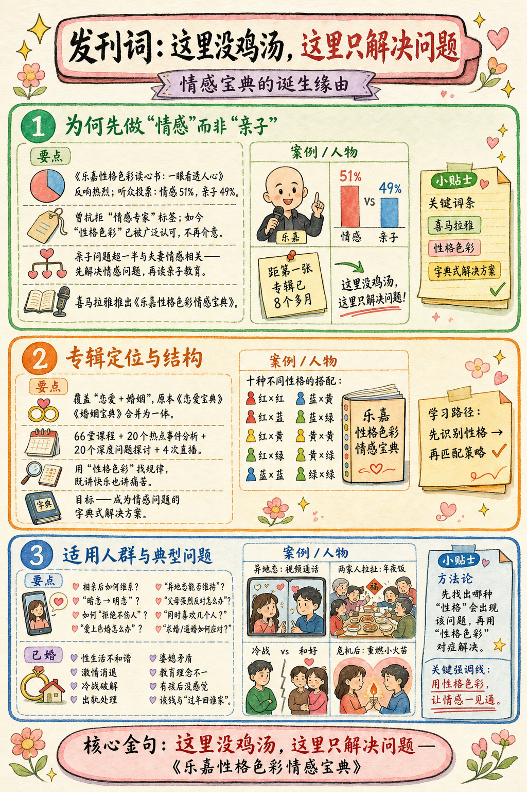
乐嘉解释为何在第二张专辑中优先推出情感主题而非亲子主题。他提到，第一张专辑《性格色彩读心书》反响热烈，听众反馈中51%希望情感内容，49%希望亲子内容。他原本不愿被标签为“情感专家”，但如今性格色彩已被广泛认可，故不再介意。更重要的是，他观察到亲子问题中超过一半与夫妻情感关系相关，因此决定先解决情感问题，再谈亲子教育。最终推出《乐嘉性格色彩情感宝典》，涵盖恋爱与婚姻，共66堂课程、20个热点事件分析、20个深度问题探讨及4次直播，旨在成为情感问题的字典式解决方案。
📖 全文解读（点开看全文）
各位亲爱的喜马拉雅的听众朋友们，大家好，我是乐嘉。距离我在喜马拉雅的第一张专辑《乐嘉性格色彩读心书：一眼看透人心》已经有八个多月的时间了，一眨眼就过去了。第一张专辑推出以后，取得了应该是相当强烈的一些反响，我很高兴大家喜欢这个有趣、实用、形象的实用心理学的工具。那有很多的听众朋友就回馈说：“乐老师，你赶紧出第二张专辑，你什么时候第二张出来？”那我统计了一下，第二张专辑希望出的内容兵分两路：有51%的人说你要出情感专辑，重点来聊聊情感，解决我的情感困惑和痛苦；有另外49%的人说：“快点出亲子专辑，我想知道怎么教我的小孩，如何因人而异，因色实教，不同性格的小孩如何来引导和鼓励。”那这个时候我就困惑了，到底应该出哪一个？ 如果是在以前，我是不会愿意出情感专辑的。因为当年我做《非诚勿扰》出名了以后，被别人贴了一个标签“情感专家”，这个事让我一直耿耿于怀。因为当年没有人知道我做性格色彩，老是说情感专家，而性格色彩是一个可以广泛应用在各个领域的工具。如果你听过第一张专辑，你应该知道它有多么牛逼，它可以在无数的领域里面有无数的用途。可是现在，金飞锡笔了这么多年下来，再加上喜马拉雅的第一张专辑的成功，很多人也了解到性格色彩的用途。所以此刻我如果重操就业，即便有人说这个人是一个情感专家，我也无所谓，因为大家已经知道了性格色彩的力量。 但还有第二个更重要的原因，那就是在亲子问题里面，绝大多数的朋友他们困惑和痛苦怎么教育和引导孩子，至少有一半以上的问题都和夫妻之间的相处有关，使得他们有情感表达上的障碍。他们在快乐的时候有可能都有罪恶感，他们生命当中充满了小心翼翼，他们对婚姻可能会缺乏向往，他们会没有梦想，他们会恐惧进入到婚姻等等等等，这些所有的一切。所以我想讲，如果你希望拥有好的亲子关系，第一步你首先必须要来检讨你的情感关系如何。那么综上所述，所以我的第二章在喜马拉雅的专辑就决定做《乐家性格色彩情感宝典》，也就是你现在正在听的情感心理课。 那么你可能会关心，在这档专辑里面到底有些什么内容？这档专辑整体上而言，它主要是兵分两路：一部分是针对那些已经结婚的人，在婚姻当中的人群；另外一部分没有结婚，现在可能是恋爱和单身的人群。所以原来一开始呢，我们是准备出两张，一个叫《恋爱宝典》，一个叫《婚姻宝典》。但是后来我说太麻烦了，而且这些恋爱的人也会进入到婚姻，这些婚姻的人也有可能会离婚，还会重新再恋爱。我说算了，索性就和他合在一起了。 那么到底这里面有些什么内容？在整个的这张新的专辑里面，我们在一开始会首先我来跟你阐述四种不同性格的人在天性当中他们情感的需求，以及所有的人都会来问我的一个问题：“乐老师，请你来告诉我，像我这种性格类型的人，哪种性格跟我搭配比较好？我想知道我这种性格的人跟这种性格的人配在一起到底合适还是不合适？”人们习惯以把那些在星座当中问了千百万遍的问题移转到性格色彩里面。那么性格色彩里面到底有没有规律？红色碰到红色，红色碰到蓝色，红色碰到黄色，红色碰到绿色，蓝色碰到蓝色，蓝色碰到黄色，蓝色碰到绿色，黄色碰到黄色，黄色碰到绿色，绿色碰到绿色，总共有十种不同性格的搭配和碰撞，到底应该怎么样？在过往的第一张专辑当中，我一字未提，而在第二张专辑当中，现在我们已经到了时间，我们会详细地从情感的角度来给你展开各种各样的情况，帮助你寻找到性格搭配和相处的规律，因为它会来告诉你每种性格相处的快乐以及每种性格相处的痛苦。 关于主体的内容，单身和针对已婚人群里面大家可能关心的话题是不一样的。你比方说，对于单身的人群，他可能关心的事情是：我相亲看对眼了以后，该怎么维系自己的情感呢？如果我是一个暗恋的人，像我这种性格的人，我应该如何转为明恋呢？如果这个人很喜欢我，但是其实我不喜欢他，那我应该怎么拒绝他呢？我又不想伤害他，但是我真的不想跟他谈了。哎呦，我现在爱上了一个已婚的人怎么办？这个人是一个有夫之妇或者有妇之夫，可是我真的爱上他了，我应该怎么办？还有，乐老师，异地恋到底能不能维持？对于什么性格的人异地恋可以，什么性格的人异地恋还是不要谈了，趁早分手算了。乐老师，我爸我妈强烈的反对我跟他交往，但是我真的很爱他，请你告诉我在高压之下我该跟他怎么办？如果我的爸妈是什么性格的人，我应该用什么性格的方法才能搞定我爸妈，让我爸妈支持我和同意我？另外，你谈的人跟你是同龄人还是比你小、比你大？如果是一个老男人和一个小女孩在一起谈恋爱，他们有可能出现的状况？如果你自己是一个淑女，你和小鲜肉可能会有未来吗？如果你现在喜欢的这个男人或者女人，他是一个情感高度丰富的人，他跟他的前任藕断丝连应该怎么办？等等等等。还有人都会说：“哎呀，我，我其实就是同时喜欢上几个人怎么办？”因为这个社会上面总是有很多人会来骂我说我是一个多情的人、花心的人，但是我真的不是那样的人，我真的是没有办法来确认我到底应该选择是谁，所以我应该怎么办呢？如果你真正了解性格，你就会发现刚才我描述的问题全部都是性格的问题。因为刚才这些问题在某些性格身上会高发性的出现，但是在另外一些性格身上几乎都不会出现，不是所有的问题都会在所有性格的身上都会出现的。分手了以后，为什么有的人很容易快速地从这个痛苦当中走出？为什么很多人永远没有办法从痛苦当中走出？如果我喜欢一个人，我应该怎么样子来求婚呢？如果我是一个爱面子的人，应该怎么办呢？如果家人父母逼婚，我应该怎么办呢？等等等等，这些可能都是你在恋爱过程当中无论男女都会遇到的问题。 而对于那些目前正在处于婚姻当中有家世的人而言，他可能更加关心的问题是：成家以后性生活不和谐怎么办？爱情没有了激情怎么办？怎么样子可以破解另一半对我的冷战？如果出轨了我应该怎么办？怎么样子处理？我是应该包容吗？应该忍让吗？还是应该据理立身？还是应该挥刀把他的小鸡鸡给割掉呢？如果这个老婆和老妈之间关系不融洽怎么办？我真的是夹杂在这两个女人当中，我要被他们给逼死了，我应该如何来缓解这个问题，摆平这些问题？你知道不同性格的人面对这个问题，有的人是两耳不闻窗外事，一心随便你们怎么吵，反正跟我没关；但有的人就会把自己缠绕在这个事件当中，把这个事情越搞越复杂；有的人就会用快刀斩乱麻的方法：“你敢对我妈不好，你去滚！”结果本来很简单的问题弄得很激化。这些都是成家以后你迟早要面临到的问题。如果你跟你老婆老公两个人在教育小孩的理念上不一样怎么办？绝大多数的人都会在这个问题上产生冲突。好了，有了小孩以后，另一半对我没了感觉怎么办？怎么样子让两个人已经死掉的这种爱情重新燃起生命的这种激情？怎么样子谈钱？所有的节目过年以后回家应该回谁家？以前解决这些问题可能你听到的大多是从心灵鸡汤层面，我想讲的是，在性格色彩心理课和宝典里面最重要的一条：首先你要搞清楚哪种性格会有这个问题，第二你才能根据不同性格来解决不同的问题。 在整张专辑里面，我们会通过66堂的情感课程，会通过20个热点事件的分析，20个问题的深度的专研探讨，以及4次的直播课程，跟大家来展现一幅全幅的情感画卷。我希望让这张情感心理课能够成为一个情感的宝典，每一个人从你恋爱婚姻这一路过程当中遇见的所有的问题，未来都可以在这个课堂当中的问题里面寻找到相应的答案。它就像一本字典，不仅可以帮到你，也可以帮到你周围身边的人。这是我做的一次最立体的、深层次的以及最有广度的一个尝试。我希望通过这张专辑能够帮助天下所有的朋友在情感问题上以后可以一见通。 那么最后，在结束之前，我想对各位讲的三句话：我希望单身的朋友，你能够用这门课帮你找到你想要的真正的那个爱情；我希望恋爱的朋友，你能够用这门课学会如何两人之间彼此更好的相处；我希望已婚的朋友，你能够用这门课让你自己的婚姻变得更加的幸福、更加幸福、更加幸福。我祝愿你在性格色彩的学习过程当中得到前所未有的力量。如果你是已经听过我第一张专辑的听众朋友，我在这里务须多言，我们早已神交已久，我相信你会有更加深度的体验。如果你是第一次接触性格色彩的朋友，我希望当你开始接触到性格色彩的奥妙和魅力之后，能够用性格色彩帮你更快乐。我希望我们的连结更加久远。祝福你。
性格自测——你是谁？
1/1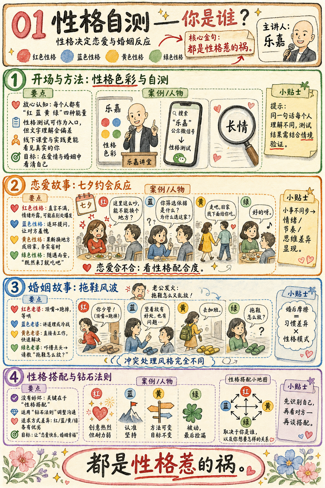
主讲人乐嘉通过两个故事说明不同性格在恋爱和婚姻中的差异。第一个故事：七夕约会时，女孩对餐厅环境不满，红色性格直接表达不满并可能在其他事上发作；蓝色性格用连环提问让对方羞愧；黄色性格果断换地方或回家；绿色性格随遇而安。第二个故事：婚后老公因拖鞋摆放发火，红色老婆顶嘴后跑掉等哄；蓝色老婆讲道理或冷战；黄色老婆直接离开去工作；绿色老婆吓懵后点头并问如何放。最后总结每种性格都有问题，但无好坏之分，关键在于性格搭配和运用钻石法则。
📖 全文解读（点开看全文）
性格色彩情感宝典，让你恋爱快乐，婚姻幸福。我是乐嘉，愿你用性格色彩的力量使你的生命更美好。我亲爱的朋友，你好，欢迎你进入到性格色彩情感心理课堂。我想你希望在爱情和婚姻当中来得到你最想要的那个幸福。那么今天第一讲，我们就来聊聊如何在爱情和婚姻当中更加清晰、深刻地看清和洞见真正的你自己。 在开讲之前，我想了解一下，你是不是已经完成了性格色彩的简易测试，领取到了属于自己的一个性格色彩的符号？如果还没有的话，你可以现在马上搜索“乐嘉”公众微信号。当你进入到公众微信里面，你可以马上做一个性格测试，得到属于你的性格色彩。不过我想告诉你的是，单单凭文字的选择，可能未必能真实、全面地反映你真实的性格。因为每个人在成长的过程当中会受到环境的影响，而且每个人对文字的理解是不一样的。比方说有一道题目的文字是“你觉得你是一个长情的人吗？”这个“长情”每个人的定义就不一样。对于有的性格人来讲，我失恋一年以后再谈新的男友和女友，我觉得就是长情；可有的人觉得起码要五年以上才长情。所以不同性格的人对同一个问题的理解不一样，大家在测试做出来的时候也会有差别。如果你有时间和有条件的情况下，你可以到我们的线下课堂来参加学习。如果你暂时不能来线下的研讨会，我希望在这一讲里面，对不同的性格在恋爱和婚姻当中的差异进行讲解，能够让你初步窥探性格的奥妙，看到一个真实的你自己。 接下来我会讲两个故事，一个在恋爱里面发生，一个在婚姻里面经常见到，帮你重现红蓝黄绿四种不同的性格，他们在面对同一种情况下的不同反应。比方说，有一天在一个类似像七夕节这样的一个重要的节日，有一对热恋当中的恋人去约会。那个男人呢就订了一个餐厅。晚上这个女孩到了餐厅以后，发现这个餐厅的环境太糟糕了，自己很不喜欢，心里面很不爽。那么四种不同性格的女子，当他们不开心的时候，就会有四种完全不同的反应。第一种反应，直接表达出来：“你怎么搞的嘛？这里这么吵，能不能换个地方？”然后这个男的说：“节日里面人多，好的餐厅都订完了，实在订不到。”红色就勉强接受了，但他心里面还是很不爽。吃饭的时候可能就会为其他的事情和这个男人搞得不开心，就吵起来。典型的红色性格就有可能是这种反应，他们的情绪很容易外露，即便不在这件事上发作呢，也可能在另外一件事会发作。可是第二种类型的人，他们看到了以后很不爽，可是非常沉得住气。他们会问到底是怎么发生的，对方怎么会连这么简单的问题都会考虑不周呢？他就开始问了：“这里人挺多的吧？应该不太容易定吧？你怎么定到的呀？你定以前有把附近的餐馆都筛选一遍吗？那你筛选的依据是什么呢？你为什么会选择这家呢？这家人气旺，那人气旺是怎么体现的呢？你是看了点评网站上的数据吗？还是你按照来的人数最多来选择？还是按照好评数多来选择呢？大家都说好，那你有没有想过这里面的面积只有这么大？今天是节日，可能空气会有问题的？”聊到最后，这个男的基本上就快疯掉了。所以蓝色性格这种性格，当他对你表现不满的时候，他不会直接大喊大叫、直接炸火起来，他会用层出不穷的问题连环泡，最后让你自己感到深深的羞愧，因为什么？连这么简单的问题你都考虑不到呢？而如果你碰到的是第三种类型的人，直接了当的人，他是这么解决的：“哎呦，这家餐厅不好，走吧。其他餐厅没位子，没位子我就回家，我下面给你吃就可以了。”对于第三种类型黄色性格的女孩来说，节日里面不需要太多虚头巴脑的东西，在一起不就是吃饭吗？只要吃饱吃好就可以了，干嘛要去凑这么多人热闹？没意思，还不如节约一点时间大家干点正事。这是典型的黄色性格的思维。第四个绿色性格，随遇而安：“既然来了就吃吧，环境问题克服一下就好了。”吃了一会儿以后呢，这个男的自己都觉得很难忍受，他就问这个女的：“要不我们还是回家去吃吧？”这个绿色女孩就会说：“好的。”所以不同性格的人在恋爱的时候，他们就会有很大的差异。同样他们心里面不开心，他们表达不开心的方法完全不一样。同样的一点小事，可能对方约会的时候迟到了，玩的时候出了一点小小的意外，红色性格的情绪就会反映很明显；黄色的人马上就要解决问题；而蓝色他考虑了很多很多负面的因素，但是很难快速行动；最有趣的是绿色，得过且过，天塌下来也不着急。所以呢，有的性格的恋人就会因为屁大一点小事大动干戈，甚至分手；但有的性格的恋人即便是天塌下来，也能够有共鸣和默契。到底有没有会不会吵，能够不能够相处和谐，核心关键只有一个，都是性格惹的祸。 那你再比方说，两个人结婚以后，这个老公就有个习惯，洗澡洗完了以后呢，把拖鞋就靠墙放，这样水呢就很快就沥干了，下次穿的时候呢也是干的。但老婆没这个习惯呢，所以每次老公看到他老婆洗完澡把鞋拖在一边的时候就要冒火，因为他说了好几次，老婆就不改。然后有一天，这个老公就大发雷霆。这个时候不同性格的老婆就有不同的反应。老公发火骂的时候，红色性格的老婆就感到很委屈，跟他老公顶了几句，越来越不开心，打开门就跑到小区里面去了。红色性格遇到冲突的时候会发泄自己的情绪，顶不过对方，他就有可能逃避。跑掉以后又不愿意走远，希望他老公气消了以后能下来哄哄他，要追着他。可第二种性格的人，很平静地跟他老公讲道理：“竖着放有竖着放的好处，但是也有竖着放的问题。如果你拖鞋上的水比较多，竖着放水淌下来以后把地还弄得更湿，还不如把拖鞋整整齐齐放在墙角，湿也只是一点点。而且现在天比较热，横着放也干得快。”如果他老公继续在那里大声地喊的时候，这个蓝色性格就不讲话了，安静地走到卧室里面，门关上。他就是想表达：我不想跟你吵，你这种不讲道理的人根本就聊不下去。这就是蓝色性格。所以典型的蓝色性格非常讲道理，他的情绪也不会呈现在外表。如果你不跟他讲道理，对不起，他就不打理你了，用冷战的方式来解决。第三种黄色，黄色性格的反应：他老公骂他的时候，他的心理反应就是特别无聊，人生难道就要在这么小的事情上浪费？好了，你别说了，我还有邮件要发，你再吵我就回公司加班去了。如果对方继续发怒，黄色一不生气，二不叫，直接拿好包拿好钥匙去到公司，也不搭理那男人了，用最果断的方法快速解决问题，也不会情绪化。而第四种类型的人，前面已经讲到过，绿色性格，对方发火的时候就吓懵了，不知道应该怎么办，就不断地点头表示：“哦，理解理解理解。”但其实也没搞错自己错在哪，反正等到对方骂累了以后，他就小心翼翼地问：“那你说拖鞋我到底怎么放比较好呢？”所以绿色性格不容易跟人吵架，当别人发火的时候他不生气，他永远是用非常平静温和的手法来解决问题。所以两个人当你们组成家庭以后，因为你们的生活背景不一样，生活习惯不一样，一定会有很多摩擦和冲突，即便是婚前再相爱的两个人也难以避免。一旦冲突发生，不同性格的反应就不一样。红色性格常犯的问题就是爆发情绪和逃避；蓝色性格最大的问题就是太喜欢叨叨讲道理，或者用沉默的方法、冷暴力的方法不跟对方沟通；而黄色性格是太快速直接了当地解决问题，而忽略关心别人的感受；而绿色太被动了，啥东西都要对方来推，对方就会觉得特别特别的累。所以每种性格都会有每种性格的问题。 那么好了，你听完这两个故事，大家可能会有疑问：既然不同性格在谈恋爱和婚姻里面都有可能给对方制造问题和麻烦，那我到底应该找个什么性格的人呢？既舒服又带劲呢？其实在性格色彩里面，没有最好的性格，也没有最坏的性格。该找什么人，取决于你自己的颜色和对方的性格颜色搭配在一起会发生些什么，以及你是否做好了足够的准备和学会运用性格色彩的钻石法则去应对。你比方说，不同性格的人，你追求异性的方式是不一样的。我举个例子来展示给你。不同性格的男生应该如何追女生？有四个不同性格的男生都喜欢一个女孩，他们的各方面的背景条件、颜值都差不多，就是性格不一样。那开始了，这四个人去竞争了。调查下来以后发现这个女孩最喜欢吃巧克力，所以红蓝黄三个颜色的人都展开了行动，但只有绿色退在一边。因为绿色觉得其他人都觉得这个女孩好啊，那我就先不去跟他们争啊，反正他们争不动了以后我再去上好了，我也不着急。所以绿色性格是最被动的，只有在红蓝黄三个人都去努力最后失败，而那个女生也心灰意冷的时候，被动的绿色最后乐得在那里捡皮夹子。可是如果绿色很被动，红蓝黄三个人开始去出击。红色就开始送了，他送巧克力是大张旗鼓地开始追求，唯恐天下不知，而且还有特别的很多创意，变着花样来送。一天送三次，每次都不一样：早上巧克力块，中午巧克力粉，晚上巧克力豆。然后第二天把巧克力磨成豆浆以后混着牛奶在一起。连续七天送了21个花样，这个女孩也没反应啊。结果所有的点子用完以后，红色的情绪就着急了，心想：咋还没搞定她呢？太麻烦了，怎么还不答应我呢？突然有一天发现这个女孩有一个室友也长得不错，改变目标追求室友。所以红色性格非常富有激情，非常富有创意，不过她的坚持耐力天性当中不足够强，她有可能会在半当中遇到挫折以后转移目标。但蓝色不一样，蓝色性格：我知道你吃巧克力不够，我还要知道你喜欢吃什么巧克力。她发现这个女孩调查下来最喜欢吃的是瑞士的一个品牌，三角形的包装的巧克力，认准了就这个巧克力。巧克力五块钱一颗，买回来包装花了十五块钱，每天送一颗，也不送多，一天一颗，一年三百六十五天没有断掉，一直送。送了一年不行，送三年；三年不行，送四年。四年以后发现这个女生跟别人结婚了，继续送，送到这个女孩离婚为止。反正送到天荒地老，我喜欢你，追求你，我就要坚持执着到底。可黄色性格的人用巧克力追求女孩的方式，他的座右铭是：送巧克力最大的秘诀叫“不求最好，但求最贵”。好，你喜欢吃什么巧克力不重要，我认为你喜欢吃什么巧克力最重要。所以他把认为最贵的巧克力买了几箱送给这个女孩，发现没有用。然后一个礼拜以后改送鲜花，送了一个礼拜鲜花没有用，又改送一个礼拜的香水。最后他用了各种各样的方法，反正方法可以变，目标不能变。但他发现没有搞定，他就调查啥原因，发现居然有一个蓝色性格的男孩也在坚持送。所以黄色性格就决定：那我就必须先把我这个对手干掉再说。所以红蓝黄绿四种不同的人，就算同样喜欢一个女孩，他们追求的方式是不一样的。 那么问题来了，最后这个女孩在竞争当中会被谁给搞定呢？其实这个问题的答案取决于这个女孩是什么颜色。如果这个女孩她自己就是一个控制欲望很强的黄色性格，她会觉得：我干嘛需要别人大费周章地追我？我看中你了就看中你了，你根本没有必要浪费那么多时间犹抱琵琶半遮面。如果我看不中你，你送我再多东西也没有用。但是对于绿色性格的女孩来讲，她觉得被追挺好的呀，尤其被特别霸道的人来追更好，反正不用我费力气去想，我配合你就好了，反正你都帮我决定好了，最后把结婚的路都铺好了，我跟着你走就是了。可是如果你是一个红色性格的女孩，你可能会被那个红色男生的创意所打动，你会觉得：哇哦，天天都是情人节，多浪漫！但是你也有可能被蓝色性格的忠诚所感动：哇哦，他对我始终如一，这样的场景到哪里去找啊？然后你就在几个喜欢你的人里面当中陷入纠结：哎呀，我该选择谁？我不该选择谁啊？然后你就开始痛苦，不知道自己应该选择谁了。但是如果你是一个蓝色性格的女生，可能你特别需要对方能够读到你心里最想要的那个点，如果对方读不到，你可能就会很痛苦。如果对方搞得全世界都知道他在追求你，大张旗鼓，你可能会觉得本来一个很私密的事情变得很公开化，会让你感到很尴尬。但是如果对方是一个黄色性格，那么霸道地替你做决定，你一个蓝色性格也很有自己的想法，你也会排斥和抗拒。所以最终你也很难遇到一个你想要的人。我说了这么多，就想讲到底这个女生最后选谁，其实核心关键取决于这个女生她自己是什么性格，以及她喜欢什么样的恋爱的方式，以及她愿意和一个什么样的人走入婚姻。归根结底，都和你的性格有关。 不管你是哪一种性格，不管你在恋爱和婚姻当中遇到什么样的问题，当你听完这张专辑以后，你会发现所有的矛盾和冲突都和性格有关，你都可以用性格色彩这门神奇的工具来予以化解。如果你持续地运用，你将会成为一个通晓人性的高手。我需要特别提醒的是，正在收听本集的听众朋友，如果你以前听过我在喜马拉雅的第一张专辑《性格色彩读心术》，那你在听本张专辑的时候，你将会感到无比的轻松。但如果你是第一次接触到性格色彩，你还没有听过《性格色彩读心术》，你将可以从《性格色彩读心术》的第一张专辑里面更加全方位地，不仅仅是从情感方面，得到你对于人性的探索和认知。 那在今天最后，我要简单地介绍一下这张专辑的主要内容。在本张专辑里面，我所有主要的核心课程会分成四大板块。我会介绍红蓝黄绿在情感当中的表现方式，以及他们的恋爱观和婚姻观。我会来讲性格色彩不同性格在一起的搭配和碰撞，也就是俗话大家总要问我的“啥性格和啥性格比较般配”。我会来跟你介绍两两组合搭配以后的各种各样的问题以及对策，在恋爱和恋爱疑难杂症方面的应对方案，在婚姻、婚姻柴米油盐、风花雪月当中的问题的建议。除了一些核心的课程以外，会根据听友的提问播放很多真实问题的深入解答，也会根据时事的热点放出影视热点的分析，并且会做四次让我吐血、呕肺、做完瘫痪的超长时间的网络直播，会把所有的干货最后全部整理出来放在专辑里面。我的唯一的期望是，希望这张专辑有朝一日可以成为你在情感困惑方面的精神食粮。这一张专辑可以帮你解决你这一生一世所有的情感困惑，帮助你在你个人的情感的道路上，看谁看懂，想谁想通，搞定那个你想搞定的人，得到那个你想得到的幸福。
红色性格的情感自画像
1/1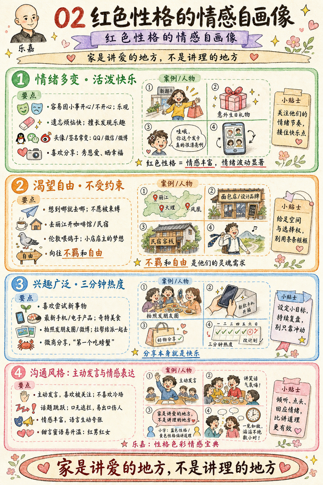
乐嘉描述了红色性格的三大特点：情绪多变，易因小事开心或不开心，遗忘烦恼快，擅长发现乐趣，如新超市或赞美都能让其解脱；渴望自由，不受约束，典型想法是去丽江开咖啡馆或民宿，追求不羁生活；兴趣广泛但易三分钟热度，喜欢尝试新事物并分享，如最新手机或美食，常拍照发朋友圈。沟通上，红色主动发言，喜欢被关注，话题跳跃，易口无遮拦，情感丰富，相信“家是讲爱的地方”，易因甜言蜜语迅速升温感情。
📖 全文解读（点开看全文）
性格色彩情感宝典，让你恋爱快乐，婚姻幸福。我是乐嘉，愿你用性格色彩的力量使你的生命更美好。今天这节，让我们来聊聊红色性格的情感自画像。 在四种性格里面，红色性格他们是最拥有孩童心态的一群人，也就是老顽童、老小孩。他们的这种心态主要会表现在，比方说第一，他们的心情和表情都特别有变化性。他们很容易因为特别小的一些事情不开心，当然他们也容易因为很小的一些事变得特别的开心。在很多的时候，典型的红色性格他们是活泼快乐，因为他们的天性非常的乐观。有的时候他们对于那些不开心的事情遗忘的速度特别的快，而且他们特别擅长于发现生命当中的乐趣。有一个新开的超市啊，突然得到了一个特别意外的生日礼物啊，别人给他一句赞美说“哇哦，你这个发卡真的很漂亮啊”，这些都可以让他们从生活当中的烦恼迅速解脱。因为典型的红色性格他们的情感高度丰富，所以他们的情感丰富会带来他们的情绪会有所波动、有所变化。因此在四种性格里面，情绪最容易多变的人就是红色性格。在很多的社交媒体上面，比方说QQ啊，比方说微信啊，微博，你会看到他们的头像还有他们的网络签名，他们经常会喜欢变来变去。他们的心情有的时候是需要通过各种各样不同的变换来进行表达。所以如果下一次你看到你哪个朋友的朋友圈里面的头像变来变去的，那几乎肯定是红色性格。比方说你在网络上看到有人在秀恩爱啊，或者在晒幸福啊，像类似这样的事，大多数都是那些藏不住自己的红色性格干出来的，因为他们太乐意去分享了。有的时候你会发现，情急之下非常愤怒，这种剁手足和这种很多事他们可能做不到的话，他们想反正明天还有机会再做，会反复拖延的人也是红色性格巨多。很多的变化几乎都是因为情绪的起伏和内心深处红色非常希望得到他人的关注。 第二点，典型的红色性格他们天性当中渴望拥有那种不受到限制的绝对的自由，最好没有任何的压力，想到哪就去哪，也不需要为其他的人负什么责任。对于那些有钱也有时间的红色性格，他们非常容易早上在办公室上班，下午就跑到伦敦喂鸽子。我想你可能听过梁朝伟的这个段子。对于那些工作收入相对来讲还算不错、小资的、比较忙碌的红色性格，他们经常会有一种想法比较普遍，就是有一天我能够到丽江、大理、凤凰去开一个咖啡馆，我能够有自己的一个设计的品牌，有一个面包店，那该有多好。为什么典型的红色性格都渴望成为那种小店的店主呢？或者渴望开一个什么民宿客栈等等。你会经常看到在很多微信公众号上有一些著名的民宿客栈的宣传，会讲谁谁谁是在城市里面做白领的，结果变卖掉自己的家当跑到某个地方去流浪，做那种特别自由和闲适的生活。那是因为典型的红色性格他们享受和追求那种生命当中不被约束和束缚的感觉，他们离不开那份向往的不羁和自由，他们不愿意受到太多太多的束缚。 第三，典型的红色性格他们容易接受新鲜事物，他们的兴趣和爱好特别的广泛，但是正是因为太过于广泛，有的时候就难免会三天打鱼两天晒网。典型的红色性格是很多的商家广告在投放上的主力人群，因为红色性格如果他是一个单身，经济压力没有那么大，他们也特别容易成为第一个吃螃蟹的人。比方说最新流行的手机、电子产品，或者有一些奇特的一些美食，红色性格他们会愿意首先去尝试，而且他们特别喜欢拉帮结派一起去。红色性格又喜欢分享，所以当他品尝到一道美味或者买了一件特别称心如意的衣服的时候，其他性格自己满意就算了，但红色绝对就忍不住赶紧就拍照发到朋友圈或者微博上，告诉自己的好朋友“快点来买一把，真的太棒了”。其实其他人买不买对红色来讲也没有什么实质的意义，但是他就是觉得有好东西一定要去分享给好朋友，这个分享本身就是最大最大的快乐。所以你现在明白了，为什么有很多微商里面都会有很多红色，因为在天性当中他就喜欢分享。 那么红色性格到底有什么样的沟通的特点呢？当你与红色进行交流的时候，你会发现他们天性当中就特别擅长运用语言来引起别人的关注。上课的时候经常主动性举手发言的人几乎都是红色，然后在工作当中红色也会积极地提出自己的创意、自己的点子、自己的想法，或者在生活当中跟朋友们聚餐的时候、聚会的时候，就会很积极地讲笑话和逗乐。他觉得我快乐，所以我希望大家都快乐。对于红色来讲，有的时候由于职业、年龄、阅历的不同，某些红色性格在工作场合他们的表达可能会变得内敛和控制，但是如果不是在工作场合，当他确定自己是被周围的人喜欢和受到欢迎的，他们天性当中的那种表现力就会变得非常的丰富，很容易被激活，而语言也会变得很多的生动和夸张。典型的红色性格他们是主动的，他们不喜欢冷场。不管是聚在一起大家来聊这个电视的节目啊，或者新发生了什么新闻啊，或者讨论一个新买的一个什么东西、去过的一个餐馆啊，或者对于某一个社会事件的一个看法呀，红色经常会主动地发起话题，他们愿意把自己的看法毫无保留地表达出来。如果对方是一个特别忠实的倾听者，认认真真地在听他讲，不断地点头认可他，他会觉得特别地享受。而如果对方跟他一样也是一个红色，不停地积极参与，他也会觉得非常的快乐。但是如果他讲得很爽，对方是一个比他红色更多的人，对方的话抢了他的话题和风头，他有可能就会觉得心里面有失落的感觉。 第二个呢，红色性格在谈话的时候，在天性里面他们有个特点，他们的话题是容易有跳跃性的。当你和一个红色性格聊天的时候，他的话题本身非常的发散。这种跳跃性的思维加上红色性格有的时候说话嘴巴不把门，有的时候会口无遮拦，很容易一不小心就出口伤人。还有一点，红色性格在沟通的时候他们的情绪特点，当他们在说话的时候，他们不需要训练就会包含了相当丰富的情感和情绪的色彩。同样，他们也喜欢听到别人在表达一件事情的时候是富有情感的。鸡汤文和网络上流传了一句影响好多人的话，这句话呢我觉得是误导了一大票的人，但很遗憾这句话的流传率还是极广。这句话就是“家是讲爱的地方，不是讲理的地方”。其实这句话主要就是对红色性格有效，因为如果你的伴侣和配偶他是蓝色性格和黄色性格，那么他在骨子里面就认为讲道理是最重要的。如果我们两个有分歧和冲突，如果我们两个在这个事情上的观点不一样，我们就应该把这件事给说清楚，大家谁能够道理讲得过对方就听谁的。所以这句话“家是一个讲爱的地方，不是讲理的地方”对于蓝色或者黄色性格是屁用都没有。但对红色性格不一样，因为红色性格在天性当中他们沉醉于另一半的甜言蜜语，他们本身也比较擅长于用语言来表达和传递自己的爱情。所以呢，如果是一对红男红女，他们彼此还不是很了解，只要感觉看对了眼，他们的情感就会容易迅速的升温，基本上都是因为他们一见如故，滔滔不绝聊了几个小时以后，然后彼此的用言语相互地溜对方。这种事对于内敛的蓝色性格和果断的黄色性格是既不能接受也不能理解，但是在红色性格身上却是高发性的出现。 这一课我们聊了红色性格的情感自画像，在下一课我们会来聊蓝色性格他们的情感素描和自画像。我们下期节目再见。
蓝色性格的情感自画像
1/1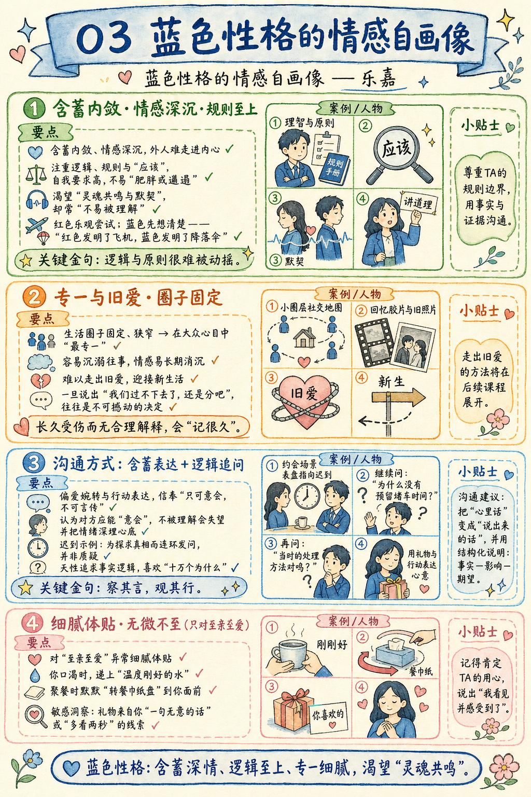
乐嘉描述了蓝色性格的情感特点：他们含蓄内敛、情感深沉，注重逻辑和规则，自我要求高，很少肥胖或邋遢。蓝色性格追求灵魂共鸣和默契，但不易被理解。他们特别专一，因为生活圈子固定且易沉溺往事，难以走出旧爱。在沟通上，蓝色性格喜欢含蓄表达，认为对方应能意会，否则会失望。他们逻辑性强，会追问迟到原因等细节，以探求真相。蓝色性格对至亲至爱非常细腻体贴，如递上温度刚好的水或转餐巾纸盘。
📖 全文解读（点开看全文）
性格色彩情感宝典，让你恋爱快乐，婚姻幸福。我是乐嘉，愿你用性格色彩的力量使你的生命更美好。嗨，大家好！上一讲我们聊了红色性格的情感自画像。那么请问，你听完了以后，你觉得自己是红色吗？这一讲，我们来聊聊蓝色性格。他们的情感自画像。 典型的蓝色性格，他们是最符合中国传统文化的含蓄内敛、情感深沉的文化特质。在大多数的时候，典型的蓝色性格，他们会拥有一丝不苟的精致的外表和特别理智的情感表达方式。他们生活在自己的世界里面，外人很难走进他们的内心。不管蓝色性格是年龄大还是年龄小，蓝色性格相对而言都会比同龄人多一份沉静安稳。他们当中很少出现特别肥胖或者特别邋遢的人。那最主要的原因，是他们对自己的自我要求会相当相当的高。请各位记住，我不是说蓝色性格没有肥胖和邋遢，我只是想在大概率里面，这两种情况在蓝色性格当中不太容易出现。因为他们对于自己和对别人的要求都非常高。他们经常有的时候不太容易被他人所理解。他们在内心深处特别渴望那种人和人之间灵魂的共鸣和相处之间的默契。所谓默契，意思就是你不说我啥都知道，我不说你啥都知道。但事实是有的时候很难达到。还有一点，典型的蓝色性格，他们特别注重逻辑、道理和规则。他认为全世界所有的事都要有一个应该。他们内心深处对于特别原则性的东西，基本上很难改变和动摇。 典型的蓝色性格的女性，打破了普通老百姓总是觉得女人是不讲道理的这样的一个误区。我想把这句话再次跟各位重复：在江湖上，人们一直讲，哎呀不要跟女人讲道理了，女人有的时候都不讲道理的。这句话对于蓝色性格完全不适用，因为他们比其他性格的男人可能会更加注重道理和规则。如果你想改变一个蓝色性格的想法，相对来讲会比较难，因为他们给你的提议通常都是经过了周密的考虑。而如果你想说服他一个已经有了很久的想法，你必须拿出充分的事例、证据和事实来证明，而且需要相当漫长的时间。当他们给你提出一个想法的时候，基本上已经是一个不可撼动的决定了。所以呢，红色性格的人如果跟你讲“我不跟你过”、“我跟你分手”、“我跟你离婚”，你会很容易哄回来。但如果一个蓝色性格的人跟你讲“我觉得算了，我们过不下去了，还是分吧”，那对不起，可能真的就很难了。如果一个蓝色性格的人受到了伤害，并且没有得到合理的解释，他们会把这种仇恨记以非常长的时间来自我折瘾。 典型的蓝色性格的人，他们特别追求完美，而且他们不仅仅是嘴巴上说，他们是切身实际的践行者。他们考虑问题非常的全面和周全。当然，他们也很容易产生那些消极的负面思维。他们很容易把生活当中的很多风险把它给放大。他们做任何事情之前都会去做那些最坏的打算和全面的考虑。和红色性格相反，红色性格是典型的积极主义者、乐观主义者，他认为全世界所有的事情都可以去尝试，你不去试怎么知道呢？而蓝色性格刚好是相反的，他觉得当我在做一件事情之前，如果我不把所有的问题全部都想清楚的话，我怎么能够去做呢？所以这就解释了红色性格的人发明了飞机，而蓝色性格的人发明了降落伞。 在大众的心目当中，典型的蓝色是最专一的性格。其实原因是因为蓝色性格的生活的圈子没有那么的广，相对来讲非常非常的固定和狭窄。再加上蓝色性格非常容易回忆往事，他们容易沉溺于对往事的追忆和追思当中。他们的情感也相对来讲很容易走向长期的覆灭和消沉。他们非常不容易从旧爱当中拔出来，来迎接新的生活。因此，在我们这个专辑里面，在后面我会有专门的一个课程来讲，有很多单身的男性和女性，当他们失恋以后很难再找到新的人，有一个非常重要的原因，因为他们永远没有办法让自己从前一段的恋情当中走出来，来迎接新生。那么到底怎么样子去处理和面对这样的情况，在接下来的课程当中会详细跟各位阐述。 除了刚才蓝色性格的四点他们的情感自画像以外，你需要来了解蓝色性格他们在跟人交流沟通的时候，他们主要有哪些特点。典型的蓝色性格，他们更加享受不用语言的这种交流，因为这会让他觉得好像达到了一种境界。什么境界呢？所谓只可意会，不可言传那种感觉。他们觉得如果我要了解一个人，我只会察其言、观其行。如果我希望传达我的意思给这个人，我也只会用这个行动让他明白。当他看到了以后，他自然而然就明白了，根本不需要我多说一些什么。当他们和他的另一半在沟通上有障碍的时候，基本上的观念上的差异都是因为对方的性格跟他的性格不一样。他们会觉得跟他是完全两个世界，在交流的时候是属于永远在平行状态，根本没有办法来交叉。而他自己有想法，对别人有看法，他又憋在心里，根本不愿意说出来。可是别人说，你干嘛有想法不说呀？你对我有看法，你把你的想法给说出来。可是蓝色性格一脸懵逼的样子：我不是已经表达的很明显了吗？难道你自己不会用心感觉吗？难道所有的话都要叫我说出来吗？你觉得说出来都很有意思吗？所以蓝色性格当别人不理解他的时候，其实他自己还觉得是很冤枉和郁闷的感觉。因为蓝色性格第一太含蓄了，他们不会直接说出自己的想法，他们习惯于婉转的表达。他们认为全世界所有的人一定会心知肚明。很多时候，他们干脆不会表达。在过生日的时候，他们会给他们特别看重的那个人送一件他们早就留意到对方喜欢的礼物。他们是特别敏感的人，能够觉察到对方需要什么。也许是你以前跟他逛街路过那个百货商店橱窗的时候多看了那么两秒钟，也许是在邮件当中无意当中提过的一句话。总而言之，他就觉得如果你真的关心一个人，如果你真的爱一个人，你只要去认真的聆听和观察，你一定会参透他话语当中到底有哪些玄机，他到底想表达什么。所以当他真正在乎的人、他的爱人没有理解到蓝色性格自己的意思的时候，他会特别的失望，并且把这种受伤的情绪深埋在心底，不会跟你讲。 除了含蓄以外，典型的蓝色在交流上面的逻辑性极强。这种逻辑性我想强调不是因为后天的训练，应该是与生俱来的。所以有的时候你会觉得蓝色特别难对付，就跟这个有关。你比方说你们俩约会，你迟到了。如果你跟他的关系那个时候还没有那么近，蓝色就不会把他的这种不开心的情绪给表达出来，他们多半会闷闷不乐，让你自己去想你到底出了啥问题。可是如果你结婚以后，如果你约会的时候迟到了，他就会问你很多问题：你为什么迟到？那你为什么没有预留出来堵车的时间？你路上耽搁的时候，你当时这样的处理方法对吗？他会问你很多很多的问题。其实他问你这么多的问题，他就是想通过逻辑性的问话来搞清楚事实本身到底是什么状况，以免日后再出现类似的问题。但是如果你不理解性格，你就会认为他问你的这些问题是对你的质疑和蓝色性格对你的不相信。实际上，蓝色性格这么有逻辑性，喜欢不停地问十万个为什么的背后，是因为蓝色性格认为全世界所有的事情必然都有它的理由。他们在天性当中喜欢探求一切事物背后的真相。但是在恋爱和婚姻当中，给蓝色性格自己带来的最大的障碍就是，和福尔摩斯在一起生活，那是一件非常辛苦的事情。他们并没有意识到这一点。 除了含蓄和逻辑以外，典型的蓝色性格非常细腻。如果你和蓝色性格结下了某种特别亲密的关系，你会发现蓝色的细腻让你如沐春风，享受到这种无微不至的感觉。蓝色的这种细腻和体贴，它不会对全世界所有的人开放，但是对于自己至亲至爱的人，它可以做到让人难以想象的温柔和细腻。你口渴的时候，啥都没说，它就恰到好处地递上一杯水。你在一群人当中吃饭的时候，你就眼睛扫一扫，它什么话都不说，它就把那个转盘转过去，刚好那个转盘就是那个餐巾纸，因为它知道你眼睛正在找。所以呢，如果你有一个蓝色性格的朋友，应该是一个很幸福的事情。对于至亲至爱，它可以做到让人难以想象的体贴。当你口渴的时候，它会恰到好处的给你递上一杯水，而且那个温度是刚刚正好。 我知道你听了今天蓝色性格的情感自画像，有何感想？那请问你是蓝色吗？在下一讲当中，我们会来看黄色性格的情感自画像。好了，让我们下期节目再见。
黄色性格的情感自画像
1/1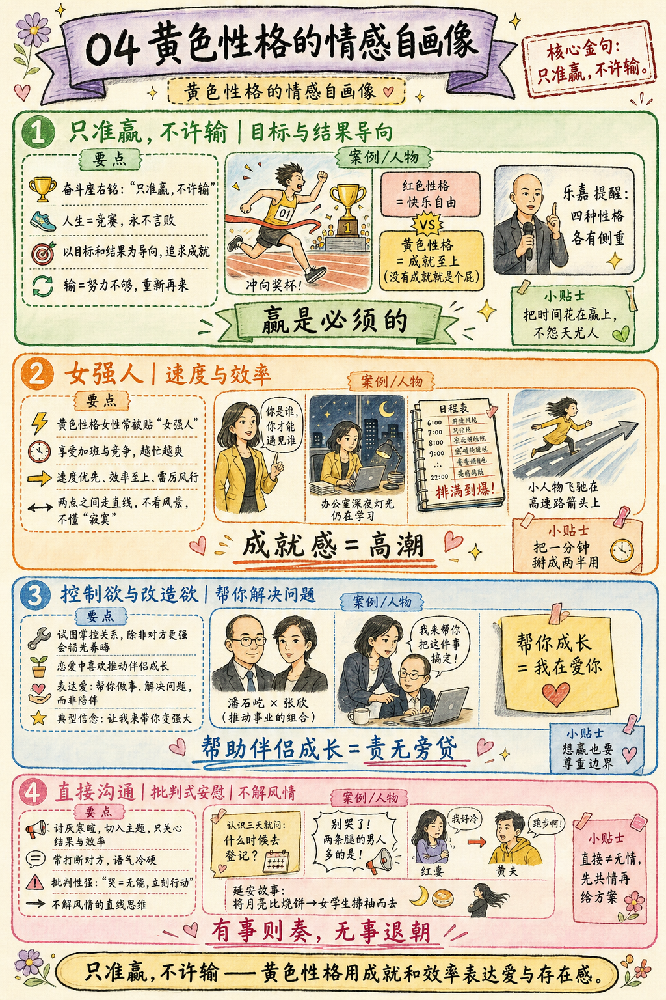
黄色性格的人生座右铭是“只准赢，不许输”，视人生为竞赛，不害怕战斗，不怨天尤人，认为输说明努力不够，要永不言败。他们以目标和结果为导向，追求成就，认为没有成就的人生毫无意义，这与红色性格追求快乐自由形成对比。黄色性格女性常被贴上“女强人”标签，认为只有自己变优秀才能遇到更优秀的男人，因此享受加班和竞争，追求速度和效率，雷厉风行，两点之间走直线，不浪费时间感受寂寞。他们控制欲强，试图掌控情感关系，除非对方更强，否则会韬光养晦。黄色性格在恋爱中喜欢帮助伴侣成长，如潘石屹的妻子张欣推动事业。他们表达爱意的方式是帮对方解决问题，而非陪伴。沟通直接了当，讨厌寒暄，说话冷硬，常打断别人，只关心结果和效率。例如，有听友分享妻子认识三天就问何时登记，认为恋爱不应浪费时间。黄色性格批判性强，当朋友失恋倾诉时，会命令停止哭泣，认为哭无能，并指导对方变强大，如乐嘉蛋碎后朋友批判式安慰。他们不解风情，如红色性格妻子说冷，黄色丈夫建议跑步；又如老干部将月亮比作烧饼，导致女学生不满离去。
📖 全文解读（点开看全文）
性格色彩情感宝典，让你恋爱快乐，婚姻幸福。我是乐嘉，愿你用性格色彩的力量使你的生命更美好。嗨，大家好！上一讲我们聊了蓝色性格的情感自画像，这一讲我们来谈黄色性格的情感素描和自画像。 在四种性格里面，有一种人，他们的人生座右铭是“只准赢，不许输”。对他们而言，人生就是一场又一场、再一场、接一场不停的竞赛。他们不害怕战斗，他们也不害怕失败，他们也不愿意怨天尤人，因为他认为怨天尤人、埋怨是在浪费时间，有这个时间，我不如赶紧再跟你比一场，因为我要赢，你不赢到最后绝不罢休。他们从来不会以自己是一个生命的弱者和人生的伤者而自居，他们认为人生必须要自强，赢是必须的，输说明自己的努力还不够，要从头再来，永不言败。这些你经常能够耳熟能详的励志的名言，通常都是出自于黄色性格的口中。 典型的黄色性格，他们不达目标誓不罢休，以目标和结果为导向。对黄色性格而言，他们认为人生的意义就是一定要拥有成就。这一点和红色性格完全不同，因为红色性格认为人生如果没有快乐和自由，人生就是个屁；而黄色性格认为人生没有成就，那才是个屁。所以不同性格的人对于“屁”的定义都不一样。 黄色性格不仅仅是男人沉迷于工作。如果你周围身边现在有个黄色性格的女子，她们是四种性格里面最容易被贴上“女强人”这个标签的人。“巾帼不让须眉”这句话就是黄色性格的女人发明出来的。而黄色性格的女性，她也从来没有认为当她变得非常强了以后，会成为她人生当中婚姻和择偶当中的绊脚石。她的骨子里面认为，只有我自己变得更优秀，我才有可能遇到那些更加优秀的男人。所以“你是谁，你才能够遇见谁”这句择偶当中的座右铭，我可以确定也是黄色性格的人发明出来的。 所以当很多其他性格的人看到黄色性格从早到晚加班加得非常苦逼的时候，正是黄色性格非常快乐的时候。因为黄色性格认为，最好你们都去休息，都去睡觉，而我在这里努力地工作，努力地学习，因为这样我会更快速度地超过你们所有的人。我再重申一遍，黄色性格的人生就是要拥有成就，黄色性格的人生就是希望成为强者，黄色性格希望在竞争当中他成为最厉害的那个人，让你们都去死，只有他自己最厉害。 典型的黄色性格，正是因为他特别想赢，所以他追求速度和激情，他们关注时间和效率，这些会让他变得特别的亢奋。他们雷厉风行，考虑问题非常快。如果有一条捷径，两点之间必定走直线，绝对不会走弯路。他们明明知道去走那个盘山公路风景可能会变得更加美，但是他根本无心观赏，他会争分夺秒地飞在通往他要达到的目的地的高速公路上。在特别快节奏的生活当中，他们根本不知道“寂寞”这两个字什么意思。所以当很多红色性格的女人举着一杯葡萄酒，天天在那里舔着自己的伤口，在那里哀叹“哎呦，好寂寞，好孤独啊”，这种话黄色不会说，因为他觉得他自己连感受寂寞的时间都没有。上班也很忙，下班也闲不住，必须要把自己所有的时间全部都排得满满当当的才会安心。他恨不得把一分钟掰开来当两半用。为了工作，他随时每一个毛孔当中都会调动出来无限的激情，工作本身的成就就足以让他达到所有的高潮。 典型的黄色性格，你不要想试图掌控他们。如果你试图在情感当中掌控他们，你会死得很惨。因为黄色性格的天性，它有着强烈的控制欲，它希望能够影响和控制自己的人生。当然，如果它能够影响你的话，它也会变得非常的爽。除非你比它要强很多很多很多，它暂时没有能力影响你，他会韬光养晦，他会卧薪尝胆，直到有一天他可以影响你。 黄色性格的人，无论男女，在骨子里面有着强烈的改造他人和影响他人的欲望。典型的黄色性格的人，当他在恋爱过程当中，他觉得帮助他的伴侣成长，推动他的伴侣能够变成更好的一个人，是他最大的责无旁贷的一个目标和使命。这个在中国的商界有一个很有名的一对夫妻，男的呢叫潘石屹，女的叫张欣。如果你看过他们两个的传记和在媒体采访上面，你就会发现潘石屹就是典型的大红色，而他幕后真正最厉害的那个女人就是张欣，因为张欣就是一个黄色性格。潘石屹他善于表达，富有创造力，但是真正推动帮助使得他们的生意做得非常巨大的是张欣这个厉害的角色。 当黄色性格想对你好的时候，他最直接的方法就是帮你做事，帮你解决问题。但是黄色性格不会花出太多的时间来陪伴你亲亲我我。 典型的黄色性格，在以上的基本的勾勒之后，我要来告诉你它在沟通当中的特点。黄色它们的沟通方式，有的时候可能会让你觉得比较冷，比较硬。所谓“有事则奏，无事退朝”。对于黄色性格来讲，他们觉得快速解决问题非常重要，所以黄色性格是所有性格里面最讨厌花时间来寒暄的人。他们喜欢直接了当，进入主题，解决问题。可是黄色性格因为内心他对于权威性的这种向往，他很难意识到自己有的时候不经意当中，他把他自己会摆放在一种高高在上的位置，会让人产生一种距离感，欠缺一种平和和亲和力。 典型的黄色性格的人，说话在沟通上特别的直接。他们说话做事最大的特点就是直接了当。不管是他要表达，还是他在听你讲话，他都希望能够直接了当地告诉你要达到的目标、重点内容，省去所有复杂的过程。他只关心这个结果是好是坏。所以如果你是一个红色性格，说话的时候思维比较跳跃，黄色跟你聊了两句就把你打断，把话题给拉回来。他永远只会关心他自己关心的内容。如果你跟他讲话的时候，前面铺垫了好久好久，绕了很多很多的弯，他根本不会觉得你是一个含蓄的人，他会认为你就是一个根本毫无能力的人，因为你说话太啰嗦。他觉得时间和效率对于黄色性格来讲超越所有的一切，你在浪费我的时间，他觉得我会根本就不想跟你来交流。 我记得我在喜马拉雅的第一张专辑《乐嘉性格色彩读心术：一眼看透人心》播出以后没多久，就有一个听友跟我们在微信群里面分享他的感受。他就在想，他说我现在终于明白了，哎呀，我老婆就是一个黄色。当时就有人问为什么呢？他说，你知道吗？我才跟我老婆认识三天时间，当时谈恋爱的时候，他就有一天突然问我：“我们什么时候去登记？”他一听，吸一口冷气，不会吧？他非常惊讶，瞪着两个大眼睛看他老婆。他老婆说：“干嘛呀？我问你呢，什么时候去登记？不会吧？这么快就考虑登记的问题？”“对呀，你不打算跟我结婚？你不打算结婚你跟我谈什么恋爱？我不想浪费时间谈恋爱。你如果觉得我这人靠谱，我们就相处下去，现在就赶紧考虑起来，还有很多事要做。”他说他以前完全不能够来理解，他说他现在终于明白了，黄色性格的人就是这样的直接。 黄色性格还有一个很重要的特点，那就是黄色性格在婚姻和恋爱当中，他们的批判性特别强。比方说举个例子，你失恋非常痛苦，你找到你的朋友去倾诉：“哎呦，我真的好惨啊，我跟他谈了五年的恋爱，他说跟犯就跟犯了。”如果你去找的是一个红色性格，红色性格一听：“啊？什么？我告诉你，我也好惨啊，我老公刚跟我离婚了。”结果好了，这个红看到另外一个红，两个人抱头痛哭，相互倾诉，哭了四个小时以后，屁问题没解决，但两个人都觉得心情很爽，因为把内心压抑的负面的情绪都给他发泄出去了。 如果你今天找的是一个典型的蓝色性格，你跟他讲：“哎呀，我现在好惨，得了五年恋爱，跟他分手就跟我分手了。”蓝色性格面不改色就开始问：“这个情况发生有多久了？那你有没有发现这段时间其实在很早之前，他对你的反应已经跟过去都不一样了？你有看他最近的打电话的时候一直是在背着你？那你有没有发现这段时间在跟你交流的机会越变越少？”你知道蓝色性格就会把一个问题帮你不停地分析，分析完了以后，结果蓝色性格具备一种高超的本领，能够把一个简单的问题变成一个复杂的问题，结果让你自己心事重重地走掉了以后，蓝色在想：“既然你男朋友有这个问题，会不会我男朋友也有这个问题？”蓝色还具备一种高超的本领，可以把别人的问题变成自己的问题。所以蓝色性格的人活得真的好累好累。 可是如果你今天找的是一个绿色性格的人，绿色性格是最有耐心的人。如果他是你的朋友，当你跟他倾诉的时候，他会在那边耐心地、静静地听着你来讲。典型的绿色性格是超级免洗垃圾桶，你给他倒多少垃圾，他自己就会排泄掉，他自己会具备超强的自我按摩的功能。 可是如果你碰到的是一个黄色，黄色你才刚开始哭：“我真的好惨……” “别哭了！” “可是我真的好难过……” “你再哭我现在就走！我早就告诉过你这个男人跟你不合适。别哭了！天底下三条腿的狗不好找，两条腿的男人多的是。明天我就帮你找十个男人来，你选一个更好的。你最大的目标就是一定要让这个人后悔。”典型的黄色性格，你一把鼻涕一把泪地跟他倾诉你的苦恼和悲痛，他就会命令你马上收起你的眼泪。他说哭解决不了问题，他认为哭是最最无能的表现。他会指导你，让你做得更加强大，才是解决问题的唯一的方法。即便他在安慰他的朋友，黄色性格也会带有批判的这种语气和口气。 这个在第一张专辑里面我分享了我的一本世界名著叫《蛋蛋》。因为在去年的时候，很不幸，我从天上摔下来，我作为一个男人最宝贵的一个蛋给震碎了。当时我在医院的时候，悲痛万分，我的朋友来看望我。我到现在都不会忘记，让我这辈子都不会忘记。我的一个跟我关系不错的朋友进来了以后，当时看到我躺在病床上面，第一句话就是：“早就跟你说过了吧？我叫你不要去录什么真人秀节目，你都多大的人了，四十多岁的人了，你好好地在棚里面录节目不是蛮好的吗？不听，活该！蛋碎了！”你说我本来已经内心很悲痛了，我知道他是好心，他心疼我，但是他这种批判式的语气真的让我非常非常的不舒服。 所以典型的黄色性格，他们会善用批判，他没有耐心来听。但是黄色性格为什么会这么做呢？我前面已经讲过，因为他有改造性，他希望你变得好，只是他自己意识不到他有这种批判性。 那么最后一点，我想告诉你黄色性格在沟通上的一个很重要的特点，那就是他不敏感，不解风情。这个什么叫不解风情呢？这个我们的一个学员啊，就跟我们讲，他说他跟老公两个人到公园里面去散步，结果呢，散步的时候他就跟他老公撒娇。这个学员是一个红色性格的，他说：“老公，我有点冷，好冷哦。”他老公是黄色的，第一本能反应：“冷啊？跑啊！跑起来就不冷啊！”所以他气得真是浑身发抖，但是他老公就是一个完全不解风情的人。 我就想起来这个以前在延安闹革命的时候，有一个跑到延安的一个大学生，结果组织上呢，嫁给了一个老干部。结果一开始呢，这个革命热情很高的女学生就决定，好吧，服从组织决定，每个礼拜六回到老干部窑洞里面住。但是呢，基本上一个晚上两个人也没什么话。时间长了以后呢，这个女生就觉得烦了。有一天呢，她就叫她老公呢，一起在月亮下面散步。这个老干部就说了：“月亮什么好啊？圆圆的像一个烧饼一样的。白天干了那么多工作，你晚上在外面乱走有啥意思呀？”这个女生就双眼哭得很肿，她就很生气。结果临走的时候留下一首诗叫：“嫁得郎君不解情，竟将明月比烧饼。从今不盼礼拜六，春宵望字值千金。”从此以后一去不归。现在再看这个故事，你就发现很有意思了。这就是典型红色性格的人对于情感上有高度的这种关照细腻的需求，但黄色性格的人他不够敏感了。 所以这些都是你需要了解的黄色性格他们的情感自画像，以及他们在沟通上的特点。在下一讲，绿色性格的情感素描和自画像完成以后，我们将进入到红蓝黄绿四种性格的婚姻观和恋爱观。让我们下期节目再见。
绿色性格的情感自画像
1/1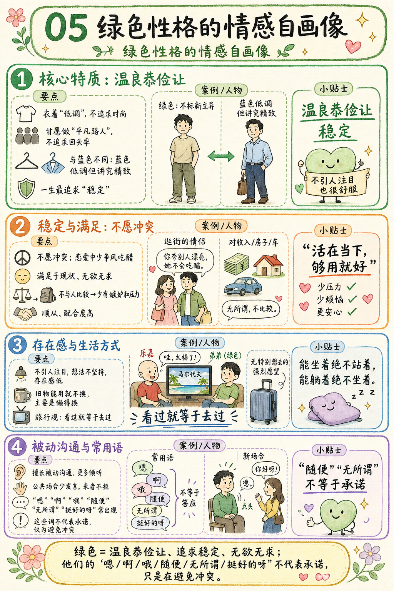
乐嘉描述绿色性格的核心是温良恭俭让，他们低调、不追求时尚，甘愿做平凡路人，与蓝色性格不同，蓝色低调但讲究精致。绿色最追求稳定，不愿冲突，比如和绿色女友上街，你夸别人漂亮，她不会吃醋。绿色满足于现状，无欲无求，不与人比较，因此少有嫉妒和压力。他们不引人注目，想法也不坚持，存在感低。乐嘉举例自己和弟弟看电视，看到马尔代夫，他红色性格想去，弟弟绿色性格说“去哪多累”，认为看过就等于去过。绿色擅长被动沟通，常用“嗯”“啊”“哦”“随便”“无所谓”“挺好的呀”等词，这些不代表承诺，只是避免冲突。
📖 全文解读（点开看全文）
性格色彩情感宝典，让你恋爱快乐，婚姻幸福。我是乐嘉，愿你用性格色彩的力量使你的生命更美好。 上一讲我们聊了黄色性格的情感自画像。这一讲，我们来聊四种性格当中的最后一种——绿色性格，他们在情感当中的素描和自画像。 典型的绿色性格就五个字：所谓温良恭俭让。他们是所有性格当中最低调的人。不管男女，绝对不会穿那些特别时尚、特别前沿的衣服。他们的主色调肯定就是大众色，永不过时。反正这种式样不会成为众人瞩目关注的焦点。这个跟蓝色性格还是有差别的。蓝色性格也很低调，但是蓝色性格讲究的是低调当中又要有腔调，要有一些精致的感觉。但对于绿色性格来讲，他根本不要精致，他根本就不追求回头率，他也不喜欢标新立异。他认为标新立异跟他半毛钱的关系都没有。他们只愿意做一个平凡的路人。这就是跟蓝色的差别。蓝色也不喜欢标新立异、被众人关注，但是蓝色从来不觉得自己是一个平凡人，也不希望自己是个平凡人。但绿色在天性当中，他们就甘心、宁愿做一颗螺丝钉。他认为做平凡的路人就特别开心。 和其他三种性格最大的差别是，典型的绿色性格在骨子里面最追求的一生当中最重要的东西就是稳定。什么叫稳定？你看看它的基本特点。比方说第一，不愿意和他人发生任何的吵架和冲突，所以争风吃醋这样在情感当中的事跟他们基本上没什么关系。你比方说，如果你上街跟你绿色性格的女朋友一起上——男女朋友都一样了——你看到另外一个异性长得很帅或很美，你表达出来了强烈的好感，那有的性格的男孩女孩他可能就会用酸溜溜的话刺你：“哎呦，长得漂亮是吧？怎么样啊？哎呀……”然后呢就让你来哄他，追求这种感觉。绿色无所谓。绿色给人的感觉就是温柔，这种温柔让所有的人跟他们在一起都特别容易相处。 绿色的人有他自己特别稳定的生活模式。不管钱多钱少，不管是长得好看或者不好看，他们对于自己现在拥有的一切，他们本身就特别满足。所谓无欲无求，他们很少去羡慕别人。这就造成了一种基本的情况，什么呢？他们不会去跟别人比较。你赚的钱比他多，他不比；你家房子比他家房子大，他无所谓；你男朋友开的车是豪车，他男朋友开的是夏利，无所谓。绿色因为没有兴趣去比，你的胸比他的胸大，他也不在意。正是因为绿色不跟别人去比，绿色就很少有嫉妒心；因为绿色很少去比，绿色就很少抓狂；因为绿色很少去比，绿色就很少在人生当中有压力，也不会让自己过得非常的累。所以呢，绿色性格他不会成为所谓的什么霸道总裁，他也不会成为众人瞩目的花蝴蝶。他们在天性当中，刚前面已经讲了，特别容易配合，很顺从。 典型的绿色性格在人堆里面是最不引人注目的人，不管是他的穿着打扮还是为人处事。他们也不会离经叛道，也不会夸张来表现自己。而且更重要的是，他自己的想法他都不会坚持。所以在人群里面存在感比较低的一类人就是典型的绿色性格。对于天性当中强烈的追寻认同感和存在感的红色性格而言，他有的时候不太能够理解为什么这个世界上会有这样的人呢？但是我想讲给你听，性格的奥妙就在于，不同性格的人对于幸福的定义是不一样的。对于典型的绿色性格来讲，他们觉得他现在这一切就很幸福，因为他们本来就不愿意争强好胜，也不想争强好胜。他认为活在当下，看着自己现在已经拥有的这一切，就已经最棒了。所以我要告诉你一个秘密：有好多好多性格的人活得好痛苦，他们需要看很多的书，听很多喜马拉雅的课，才能够让自己明白活在当下的意义，来修炼自己内心的平衡。人家绿色性格是啥书都不用看，啥课都不用听，在天生出来都知道：管你他娘的赚多少钱，归根结底你只能睡这么大的床，吃也只能吃这点东西。把每天过好，现在这一切有的就够了，干嘛把自己搞得那么累？ 从人性的角度来讲，如果你有美好的事物能够拥有，那当然好。但绿色的关键在于，它如果没有，对它生活是没有影响的。它跟其他性格不一样。你像黄色性格，如果它定下来一个目标要得到一个东西，如果它得不到的话，黄色会痛苦：“我一定要得到！”对于绿色来讲，有什么关系呢？对于红色性格来讲，生命当中有很多新奇古怪的东西容易吸引它的注意力，什么都想要。人家绿色根本就没有这样的想法。绿色如果没有外力的推动，他根本就不会去更换那些没有坏掉的个人物品。不管你外面的东西怎么流行，对绿色来讲，我旧的东西能用，干嘛要去换新的？我觉得没必要。而且他主要是懒得去换。 当所有的人都在谈论出国旅行该有多好的时候，绿色他根本就不去挑剔去哪，因为他自己根本就没有特别想去的强烈的愿望。我就想一天，我跟我弟弟的差别。有一次很多年以前，我们两个人在家里面看这个电视，这个电视里面播出这个马尔代夫的海岛的场景，那个时候没有去过，很稀奇。我看到了以后，“哇，太棒了！”因为我红色性格多嘛。你知道红色性格看多了以后，去了以后看到那种没有去过的场景，我们心里面内心就有欲望，太好了，想去。我就跟我弟弟讲：“嘿，怎么样？”他说：“嗯，不错。”我说：“想去吗？”他：“哥，去哪多累。”我后来发现绿色性格有个特点：绿色性格叫看过就等于去过。对于他来讲，他没有像红色性格那样强烈的一定要去体验的欲望，他觉得差不多就OK了。所以如果要去什么地方旅游，朋友推荐他去，他就去。有的时候呢，他可能自己也会有一两个想去的地方，但是只要旁边的人有人给他否决掉了，绿色根本就不会去跟你争辩，反正去哪对他来讲都一样，只要你们大家开心，我就很开心。 在绿色性格跟他人沟通和交流上面，你需要掌握几个极其重要的特点。那就是绿色性格他们最擅长的就是被动沟通。所谓被动沟通，就是他可以一直不停地听、听、听、听、听、听、听、听、听、听，他不会来打断你。等到你主动诉说的时候，他会继续听、听、听、听、听、听、听。他不会去打探那些你不想说的事。但反过来，你想让一个绿色在公共场合侃侃而谈，或者让他去为所有的人争取那些权益，那就完了，你别做梦了，因为他天性当中他根本就很难做到。 当一群人来到一个新的场合的时候，你知道红色性格在不停地寻找哪些人可以成为他的朋友，只要聊得开心的人，只要能够大家关注到他的人，他觉得全天下所有的人都有可能会成为我的朋友。而典型的蓝色性格他会观察，可能只会在整个的会场里面来找那么一两个人成为朋友。而典型的黄色性格他会主动出击，找一两个他认为最值得交的、能够帮他达成他的目标、对他的成长有帮助的人成为他的朋友，其他跟他无关的人他一概不会理。而典型的绿色性格最大的特点就是往那一坐，他也不会主动跟别人说话，但是不管谁来主动跟他打招呼，他都会很温和地去配合对方。绿色性格觉得干嘛那么累啊？绿色性格的座右铭就是：能坐着绝不站着，能躺着绝不坐着。 在不同性格的语言体系里面，你会发现每种性格有一些常用的语言不一样。典型的绿色性格特别喜欢跟别人说话的时候喜欢用“嗯”“啊”“哦”这样的方式来回应别人。假如你一定要问我这几个字代表什么，我就只能很遗憾地告诉你，这三个字啥意思都没有。如果你以为绿色跟你说“嗯”就代表他听懂了他会去做，那你就死定了，因为你的期待一定会落空。绿色有的时候他不知道该怎么去拒绝别人，所以他就会用一些不带任何倾向性的词语来表示他对你的回应。他对你的回应不代表他会去做，他想去做，仅仅只是代表。 绿色还有另外两个超高频的词汇，一个叫“随便”，一个叫“无所谓”。当他们跟你说“随便”和“无所谓”的时候，真的是代表没关系，你怎么决定都行，他们也不会不开心。这件事跟红色性格完全不一样。所以各位听友务必要小心，如果有一个红色性格跟你说“随便”“没关系”“无所谓”，仅仅只是代表在当下的情绪当中无所谓，但是转脸他就有可能马上给你翻脸。他情绪变化了以后，对于同样的一件事情，无所谓马上就变成有所谓了。你说：“你刚刚不是跟我说过无所谓吗？”那是刚才无所谓，现在我觉得很有所谓。这就是红色说翻脸就翻脸。但绿色人家是真的没关系。 还有一点，绿色经常用的一个词叫“挺好的呀”。绿色因为它不会给别人一点点负面的评价。如果别人一定要求绿色从两个东西当中来挑出来一个做出反馈的时候，绿色就会说：“我觉得这个东西挺好的呀。”他们内心里面其实是有谱，他们知道哪个好哪个不好，但是呢，他们也没有那么强烈的好或者不好。他觉得把这种对别人的好或者不好这种倾向性给表达出来的话，可能会伤害到别人的感受，让别人也特别为难。所以他宁可用一些特别含糊其词的那些方法，这样的话谁都不得罪，这样的话谁脸上都觉得好过。所以他就说：“都不错呀，可以呀，挺好的。” 好了，我亲爱的朋友，在以上的四讲当中，我分别跟大家描述了红、蓝、黄、绿四种性格的情感素描和自画像。在接下来的四讲里面，我会着重跟各位来阐述红、蓝、黄、绿四种性格的恋爱观和婚姻观。让我们下期节目再见。
红色性格的婚恋观
1/1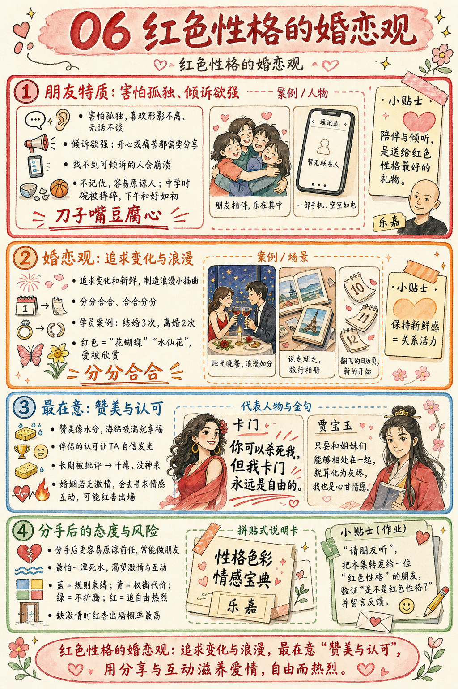
乐嘉先介绍红色性格作为朋友的特点：害怕孤独，倾诉欲强，开心或痛苦都需要分享；不记仇，容易原谅别人，举了中学时碗被摔碎但下午就和好如初的例子。然后讲红色性格的婚恋观：追求变化和新鲜，喜欢浪漫，可能分分合合甚至多次结婚离婚，举例有学员结婚三次离婚两次；最在意伴侣的赞美和认可，像海绵需要水分；典型代表是卡门和贾宝玉；分手后容易原谅前任，但婚姻中若缺乏激情可能红杏出墙，因为红色性格渴望情感互动。
📖 全文解读（点开看全文）
性格色彩情感宝典，让你恋爱快乐，婚姻幸福。 我是乐嘉，愿你用性格色彩的力量，使你的生命更美好。 嗨，大家好，在前面的四讲我们聊了红、蓝、黄、绿四种性格的情感素描和自画像，下面四讲，我们分别会来聊红、蓝、黄、绿四种性格的婚姻观和恋爱观。 今天我们先来聊红色性格的婚姻观和恋爱观是什么。 当你在了解红色性格的婚姻观和恋爱观之前，你需要知道红色性格的人如果作为朋友，他们会有哪些特点。 第一，红色性格的人不喜欢寂寞，他们对于朋友友情的需求极其强烈，而且他们希望拥有很多很多的好朋友，但是并不一定代表友情可以替代爱情。 我想特别向你强调的事情是，红色性格在天性当中，他们的倾诉欲非常强，如果他心情不好的时候，要么就要想办法把它发泄出去。 当然，发泄有很多方法了，跑步、健身、吃、狂妄的购物、出去玩儿、喝酒、蹦迪，各种各样的方法。 但是除了发泄以外，还有更好的一个方法，那就是他需要找到人去倾诉。 当他觉得我把我的痛苦讲给你听的时候，红色就会有一种幻想：嘿，我的痛苦就变成你的痛苦。 好东西他希望找到人分享，不好的东西他也需要找到人来倾诉。 当他打开手机通讯录，他发现他居然找不到一个可以倾诉的人的时候，红色那个时候的天都要塌下来，他觉得是让他无比悲哀和沮丧的一件事儿。 所以呢，同样，他开心的时候，他也需要更多的朋友来分享他的快乐，因为这会让他的快乐变得加倍。 典型的红色性格，他们喜欢交新朋友，他们从第一次见面开始起，只要有投缘，他们的友情就会蹭的一下像火箭一样迅速地上升。 他们追求一种形影不离、无话不谈的感觉。 红色性格的女人，他们会结伴儿上厕所；而红色性格的男人，他们会扎堆一起在那里抽烟。 其实所有的这一切都是红色性格在骨子里面害怕孤独、害怕寂寞。 当红色性格跟他的朋友产生摩擦、不愉快的时候，红色性格有个很重要的特点，那就是他不记仇，他会很容易原谅别人。 我就记得以前在小时候，我们在中学读书，去食堂打饭，有一个人就拿了一个新的碗回到寝室的路上。 后面有个喜欢开恶作剧玩笑的同学，趁他不注意，在他背后拍了他一下，结果吓了他一大跳。 他新买的那个碗就摔在地上了，结果这个人就非常生气：你干什么？你他妈得有病啊。我新买的碗给你摔碎了，饭全部都给你撒了，你赔给我，我不想理你了，再也不跟你玩儿了，太没意思了。 这个红色性格的人很生气，但到了当天下午，早就把这个事儿忘得九霄云外，照样跟那个同学打了篮球，玩儿得很开心。 所以红色性格的人呢，他就是嘴巴，叫做刀子嘴豆腐心，他们不记仇，他们容易原谅他人。 当你了解了红色性格作为朋友的这些特点以后，你再来看他的恋爱观和婚姻观，你会发现红色在他的一生当中，他一直在寻找着一种变化，因为他们对于变化的这种向往和对于新鲜的追求。 红色经常在二人相处的时候，他们寻求一种浪漫，会创造一些小插曲，并且会以此为乐。 所以对红色而言，如果能够把自己的爱情和生活搞得特别的有趣、搞得激动，那太有意思了，否则生命就会毫无意义。 典型红色性格的人喜欢变化，有的时候，这种喜欢变化的程度会超越你的想象。 我所认识的学员里面，就发现了好几次，有两个人，他们结婚了三次，离婚离了两次，那加在一起好多次了吧？但是向各位报告，都是同一个人，就是结啊离啊、结啊离。 这你就理解了为什么很多人谈恋爱的时候分分合合、合合分分，分了又合，合了又分，怎么分都分不掉，分了以后还想得在一起，这种情况几乎无一例外，1000% 万发生在红色性格的身上。 这种情况不可能发生在蓝色性格，他做任何决定之前早就已经想得非常清楚；而黄色性格一旦分手了以后就快刀斩乱麻，所有的一切全部都跟他没有任何的关系；而绿色性格根本就是一个不喜欢折腾的人，所以只有可能发生在红色性格身上。 记住，他们喜欢变化。红色性格的人，他们是花蝴蝶，他们也是一种水仙花。 当他觉得他自己被他人欣赏和认可的时候，它是最幸福的。 它像一块儿海绵一样，赞美就是它所需要的最重要的水分。 当这个海绵能够吸饱水分的时候，它们就会变得非常的快乐；而当这个水被放掉了以后，它们长时间就会处于干涸缺水的状态。 他们是干瘪的，他们没有神采，他们没有自信。 所以我想讲的是，红色性格在情感当中，最在意的就是他交往的这个对象是不是给他足够的赞美和认可。 如果她的老公、老婆、男朋友、女朋友天天赞美她、鼓励她、变着花儿样地来认可她，她就会觉得自己的人生充满了快乐。 如果她天天备受打击和批判，她就会觉得像蔫儿了的一样，这个婚姻、这段恋爱毫无趣味儿、索然无味，不如罢了。 典型红色性格女性的代表就是吉普赛女郎卡门，卡门就是典型的红色，她们享受爱情，有无休止的追求爱情。 最后她对自己的那个爱人就说：你可以杀死我，但我卡门永远是自由的。 典型红色性格男人的超级典型代表——贾宝玉，浪漫理想主义，为情而生，为情而死，他一生的格言是：只要和姐妹们能够相处在一起，就算化为灰烬，我也是心甘情愿。 总体来讲，我前面已经讲过了，红色性格不记仇，所以呢，在四种性格里面，分手以后还会和他的前任成为朋友的，在概率上面，红色比其他三种颜色要高。除了绿色，因为绿色最不介意，绿色脾气最好。 红色肯定比蓝色和黄色要高，即便在分手的时候，红色遭受到了伤害，有巨大的情感的动荡，但是只要有足够的时间，另一半、他的前任将不会再具有主宰他情绪的能力，他对那个人的看法就不会变得那么极端。 再加上红色性格也不是属于那种一定要战胜别人性格的人，所以他对前任的看法也没有那么的极端。 再加上红色性格的心态本身比较开放，所以当他们在分手以后，他们其实是四种性格里面最容易原谅对方的。 在婚姻当中，红色的内心强烈期望他们的婚姻充满了激情，不是两条死鱼、一潭死水。 所以如果婚姻生活没有任何的波动，只有左手摸右手的这种麻木的时候，他们会特别的沮丧、不安、恐惧。 不管中华传统文化如何强调从一而终的美德，都无法阻挡红色性格在人性内心深处对于情感互动的强烈的渴望。 因为这是红色性格与生俱来的需求，所以在婚姻生活里面，因为种种的不满意，如果发生红杏出墙，不管是男性还是女性，在四种性格里面肯定是以红色性格排第一位的。 在这个问题上，蓝色性格会因为规则牢牢死死地束缚住自己。 黄色性格，他会考虑的事情是：如果我出轨，这个代价到底值得不值得？如果代价值得，我就无所谓；如果代价不值得，他会强忍住自己。 而绿色性格他在天性当中就不喜欢折腾和变化，他认为一成不变就是最好的，他也没啥需求。 唯独红色，如果他的婚姻或者他的爱情没有了一丝丝的生命力，他会觉得那还不如死算了。 所以在很多文艺小说和作品里面，你会看到有很多男性或者女性，他会因为对两人世界的情感生活的巨大不满足和痛苦，他们会离家出走，去寻求内心深处的自由，无一例外，这些人都是红色性格。 不过有一种红色性格可能除外，在今后的课程里面，我会详细地阐述给大家听，那就是可能在婚前，他们已经无数次地折腾，他们曾经沧海，他们已经折腾不动了，有心无力，所以他们觉得宁静就是最好的。 只有在这个时候，那些折腾得已经千疮百孔的红色才会体会到绿色性格的好处。 除此以外，他们绝对不会愿意和一个没有激情的绿色在一起生活。 我这句话对于正在收听我这堂课程的朋友，如果你没谈过什么恋爱，没经历过什么情感上的波浪，我相信你暂时还听不懂；不过有一天好了，今天我讲的是红色性格的婚姻观和恋爱观。 如果你还想听到其他三种颜色的婚恋观，在接下来的三讲我会慢慢告诉你。 今天是要有作业布置给你的：你需要找到你周围身边一位红色性格的朋友，请你用喜马拉雅这个页面右下角的"请朋友听"这个功能，转发本集内容给他，请他听完以后回答他是不是红色性格？我刚才描述的内容是不是说的就是他？ 如果你对他的性格色彩的判断和他的自我判断一致，那么恭喜你，你现在已经开始迈入了性格色彩的大门，开始踩上了第一级的台阶。 因为典型的红色性格是四种性格当中最容易辨认的，所以请把你完成作业以后的感想和留言放在我们这期节目的评论当中，这样的话呢，我可以感受到你正在和我的心碰撞和交流。 我会从完成作业的评论当中抽选三位同学，赠送一本儿我的签名书。 我们下集节目，蓝色性格的婚恋观，我们再见。
蓝色性格的婚恋观
1/1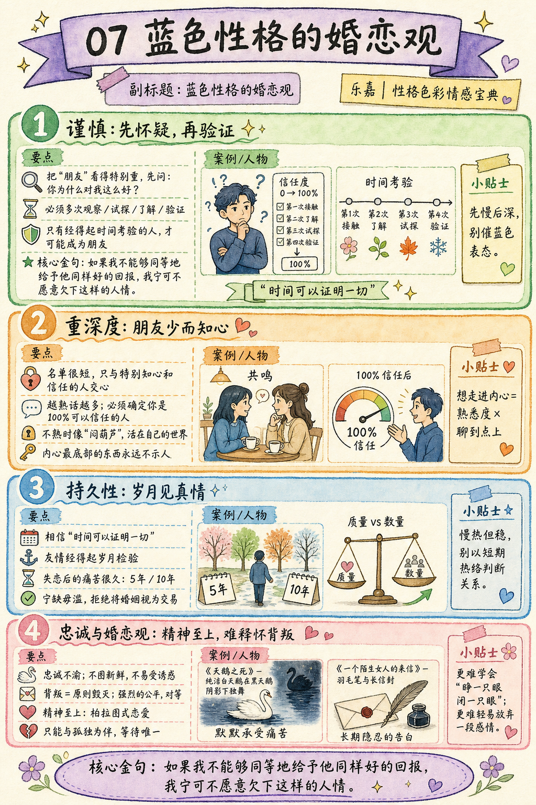
乐嘉讲解蓝色性格的交友四大原则：谨慎、重深度、持久性、忠诚。蓝色交友谨慎，怀疑他人好意，需时间考验；朋友少而深，只与信任者交心；友情经得起岁月检验；忠诚不渝，背叛意味着原则毁灭。在婚恋中，蓝色代表作是《天鹅之死》和《一个陌生女人的来信》，体现其默默承受痛苦、精神至上、难以释怀背叛的特点。蓝色失恋后痛苦长达五年十年，宁缺毋滥，拒绝将婚姻视为交易，只能与孤独为伴。
📖 全文解读（点开看全文）
性格色彩情感宝典，让你恋爱快乐，婚姻幸福。 我是乐嘉，愿你用性格色彩的力量，使你的生命更美好。 嗨，大家好，上一讲我们聊了红色性格的婚恋观，在最后我布置了作业。通过各位的作业回馈，我发现绝大多数的人在发掘和发现周围身边红色朋友这件事儿上是很容易的。 那么今天我们来看看你周围身边到底有没有蓝色性格的朋友。 蓝色性格的人，当他在交朋友的时候，通常他会有四大原则。 第一，谨慎。典型的蓝色性格，他们把"朋友"这两个字儿看得特别的重。 如果生命当中突然出现一个对他特别特别好的一个人，他首先第一反应是怀疑：你为什么要对我这么好？难道我身上有什么东西可以满足这个人吗？如果我不能够同等地给予他同样好的回报，我宁可不愿意欠下这样的人情。 他必须经过多次的观察、试探、了解、验证，他才能逐渐确认这个人到底是不是他的朋友。他认为所有的朋友都必须要经过足够的时间的考验。 第二，典型的蓝色，他注重的是生命当中的深度。 蓝色性格的朋友并不多，但凡能被他列入朋友名单的，都是他特别知心和信任的人。他们宁可少要一些朋友，也不愿意拥有很多很多的朋友。 他们不会跟某个人特别特别的亲近，也不会跟某个人特别特别的疏远。在人际交往当中，他们更多地看到的是人性交往的风险，而不像红色那样，只要交到新朋友，就会有很多的乐趣。 如果你有机缘与蓝色性格的人成为朋友，他会将他内心非常深层的东西一点儿一点儿地掏出来和你交流，他期望能够得到足够的共鸣。但是那还不是他的全部，他内心最最底部的东西永远也不会给人看。 他不会像红色性格那样，红色会享受那种跟人掏心挖肺的感觉。 蓝色，如果跟你越熟、关系越好，话也会相应的越多。其实蓝色也可以做到侃侃而谈，但前提是必须确定你是100%可以信任的人，并且他对于自己讲的内容要有足够的把握。 如果不熟的人，绝大多数都会认为蓝色是一个闷葫芦，活在自己的世界里面。 所以呢，以后请你不要再说你走不进蓝色性格的内心。你没走进他的内心，其实只是因为：第一，你和他没那么熟；第二，可能你跟他很熟，但是你跟他聊不到点儿上，他不愿意跟你聊。 蓝色交友的第三个重要原则就是持久性。因为蓝色我前面已经讲过了，他相信时间可以证明一切。 如果他暂时没有办法来确定你是非常真诚的人，他就会用时间来作为最好的判别方法，让漫长的岁月来最终验证。如果你们已经成为相互信任的好朋友，那这份友情也必然经得起岁月的检验。 最后一点，蓝色非常忠诚。对朋友忠诚对于蓝色来讲很容易做到，那是因为蓝色不图新鲜，他对自我的戒律也很强，他不容易受到外界的诱惑。对于蓝色性格而言，背叛就意味着所有自我原则的毁灭，那是一种巨大的风险。 在恋爱观和婚姻观上面，蓝色与红色完全不同。 蓝色的爱情代表作是《天鹅之死》。记住，上一讲我们讲过，红色是卡门。当《天鹅之死》里面那个纯洁的天鹅公主看到自己心上人被黑天鹅抢走的时候，发出了非常痛苦的哀鸣。 那个中了魔法的天鹅公主，他没有办法说出人话、说出真相，他只能非常痛苦地在那里跳，我跳、我跳、我转啊转啊，进入到死亡状态。 这个故事就告诉我们，当蓝色性格在爱情当中一旦出现问题的时候，他们最容易面临的不幸是：我没有办法说出我内心的痛苦，我希望你能够了解我，如果你不了解我，那我只能在这里痛苦地、默默地等待着。 还有一个蓝色性格的爱情代表作，你可以去看看徐静蕾和姜文演的那个电影，叫《一个陌生女人的来信》。当然在原著茨威格的原著当中，我认为表现得会更加明显。 典型蓝色性格的人，他对于自己所深爱的人，他用的表达方式，他可以几十年都不去透露自己内心的情感，一直到最后写了一封长长的信来告别。 当典型蓝色性格的人失去自己的最爱之后，他们会长时间地沉浸在特别悲伤的回忆里。他们会非常漫长的时间都没有办法来接受一个新的恋爱的对象。 他们会在心目当中虚化和幻化那个永远不可能回来的、那个过去的那个爱人。他们会把那个人当成自己唯一的、理想的择偶对象，从而他们会拒绝新的可能性。 所以以后在我们的课程里面，你会发现，在失恋了以后，痛苦万分的人群会有红色和蓝色两种人。但是他们最巨大的差别是时间的长度。 对红色性格来讲，几个月、一年；但对于蓝色性格来讲，可能打底是五年或者十年，因为典型的蓝色性格，他的持久性会变得相当的漫长。 你在所有性格里面，最能够接受柏拉图式恋爱和婚姻的，排名第一的就是蓝色性格，因为对于蓝色性格来讲，他特别注重精神上的默契。有的时候，精神上的默契就完全可以取代肉体上的这种快感。 因为在情感上的唯一性和近乎于洁癖的要求，一旦在恋爱或者婚姻当中被背叛，或者发现对方有可能背叛自己的迹象，蓝色在内心深处都无法忽略。 所以有的时候，有一些从爱情和婚姻当中的过来人就讲：婚姻当中啊，两个人有的时候要学会难得糊涂，睁一只眼，闭一只眼。这句话对于蓝色性格屁用没有，因为蓝色性格他要求公平，必须强烈的公平，而且要对等。 如果我受到了巨大的伤害，这对我是不公平的。所以相比较其他三种性格，蓝色性格更加不可能去释怀。不过要去轻易地放弃一段感情或者放弃婚姻，对蓝色而言也更难。 所以蓝色性格在情感当中永远是痛苦比快乐要多得多、多得多、多得多。 如果蓝色性格的人一直单身，大多数都是因为他们总想着宁缺毋滥。他们拒绝将婚姻看成一种等价交易的市场。 他们骨子里面的清高让他们很难像红色那样能够游戏人间，他们也很难像黄色性格那样目标和结果为导向，他们更加无法做到绿色那样根本无所谓。所以蓝色性格只能和孤独为伴，等待着那个一生当中渴求的唯一出现。 你等不到怎么办？继续等。反正蓝色性格有耐性。 今天我们着重阐述了蓝色性格的婚恋观。在上一讲里面，我已经跟大家讲了红色性格的婚恋观，下面两讲我还会来聊黄色和绿色的婚恋观。 今天的作业是请你找到你身边的一个蓝色性格的朋友，用页面右下角的"请朋友听"功能转发本集内容给他，请他听完以后来告诉你他是不是蓝色性格。 如果你对他的性格色彩的判断和他的自我判断一致，那么恭喜你，在洞察不同性格的内心这件事儿上，你现在又前进了一丢丢的小步。 请你把你完成作业的感想和他跟你交流的内容留言在这期节目的评论当中，我会从所有完成作业的评论里面的同学选出三位，赠送我的一本儿签名书。 在下一讲我们再见。
黄色性格的婚恋观
1/1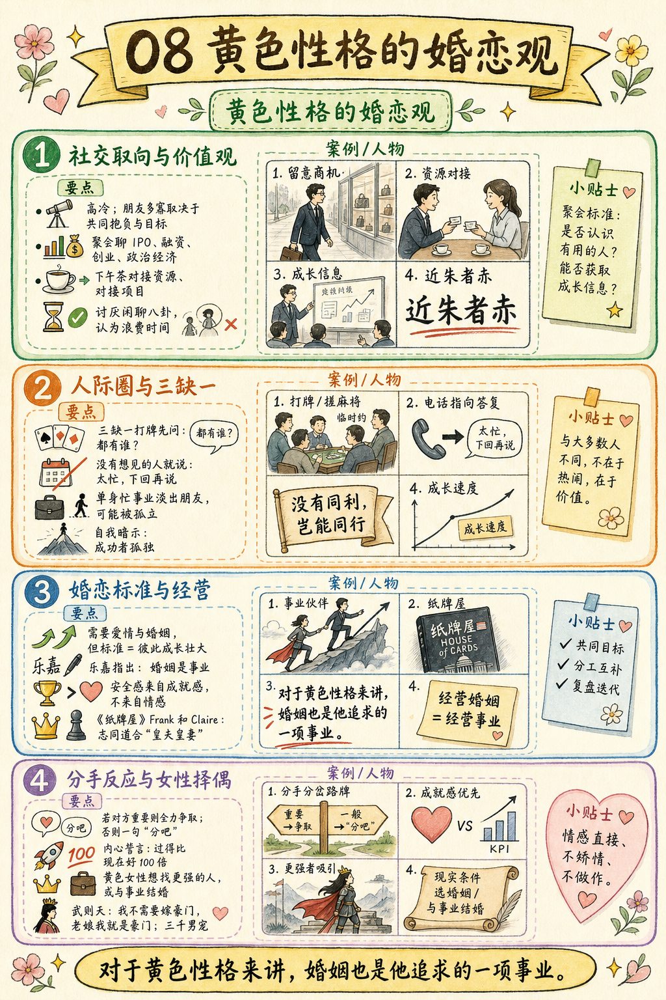
乐嘉指出黄色性格高冷，朋友多寡取决于对方是否有共同抱负和目标。他们聚会聊IPO、融资、创业、政治经济，下午茶对接资源，逛街留意商机，讨厌闲聊八卦，认为浪费时间。黄色性格判断聚会标准是能否认识有用的人或获取成长信息。典型黄色强调近朱者赤，结交优秀朋友。举例三缺一打牌时，黄色会先问都有谁，有想见的人才去。黄色单身时因忙于事业淡出朋友生活，可能被孤立但自认成功者孤独。他们需要爱情和婚姻，但标准是彼此成长壮大，如《纸牌屋》Frank和Claire。乐嘉强调婚姻对黄色是事业，经营婚姻像经营事业。黄色安全感来自成就感，不来自情感。被分手时，若对方重要则争取，否则只说“分吧”，内心发誓过得更好。黄色女性想找更强的人，否则可能用现实条件选婚姻或与事业结婚，如武则天。
📖 全文解读（点开看全文）
性格色彩情感宝典，让你恋爱快乐，婚姻幸福。 我是乐嘉，愿你用性格色彩的力量，使你的生命更美好。 嗨，大家好，在上一讲蓝色性格的婚恋观讲完了以后，很多同学在留言当中反映，跟那个红色性格婚恋观听完感觉不一样。 因为红色性格婚恋观听完以后呢，发现周围身边找到红色性格的朋友好容易啊；但是蓝色性格听完了以后，发现自己周围身边找到真正的蓝色性格并没有那么容易啊。 所以如果你的生命当中现在还没有蓝色性格的朋友，或者蓝色性格的朋友很少，请你去珍惜、去挖掘，不容易找到，但是一旦找到，你会受益终身。 今天我们来聊聊黄色性格的婚恋观。 黄色性格的人作为你的朋友看上去怎么样呢？因为黄色是比较高冷的，他们不会像红色性格那样的热情活跃。 黄色性格有没有朋友、朋友多不多，取决于这个朋友是不是跟他有着同样的抱负、同样的目标。 他们哪怕跟朋友在一起吃晚餐、聚会的时候，也忘不了要聊什么IPO啊、融资啊、创业啊、当今的世界经济政治格局啊，等等等等。 他们在喝下午茶的时候，也不会忘记彼此之间相互介绍更多的人力资源，彼此更多的资源对接、对接项目、共同牟利。 就连逛街的时候也会留意、仔细地观察所有的大街小巷出现的任何一点细微的变化，来留意是不是有最新的商机。黄色性格的人不喜欢闲聊、讨厌八卦，因为他们觉得那些东西跟他连半毛钱的关系都没有，无关紧要，聊这些东西浪费时间。 他所有跟别人的沟通和交流，都是希望每一次说话我都是能够有收获的、我能学到东西的、对我的工作有用的、对我的成长有帮助的。如果在聊天的过程当中讲一些没有意义的东西，那简直是浪费时间。 所以他们在谈话的时候，除非他为了达到建立和某人的某种人际关系，他有的时候会花时间去说一些客套话、虚的话、没用的话、恭维话。 除此以外，他判断一个聚会要不要去参加，标准很简单：这个聚会里面有没有他想认识的人，有没有他想得到的一些信息，能不能让自己有成长？否则他会认为认识那么多的朋友有个屁用？ 而红色性格认为，只要朋友多，普天之下都是我的朋友，只要聊天的时候快乐又碰撞，那就是人生最大的财富。 所以你现在会发现，从我开讲这堂课到现在，我自始至终强调的观点只有一点：不同性格的人对同一个问题的看法和观点完全不同，因为大家的思维角度、价值观完全不一样。 典型黄色性格是所有四种性格里面最强调"近朱者赤"的，他会努力去结交一些比自己更加优秀的朋友，作为学习的榜样，让自己变得更加强。 所以现在你明白了吗？当你下回三缺一找搭子的时候，不管你是斗地主呢还是搓麻将，你临时想要找人，记住，临时缺人找人最容易找的要么就是绿色，要么就是红色。 你只要跟红色说：哎哟，我们都好想你啊，没有你打牌打得不快乐，快点过来帮忙，求你来，现在就少你一个红色，他屁颠儿屁颠儿就过来。 如果你去找蓝色性格的人，临时找他，蓝色性格的第一本能反应是：你诚心的吗？我觉得你不真心吧。你真心的话，为什么现在才跟我说？你为什么早不说？对于蓝色性格来讲，他痛恨一切临时的事物。如果你早早跟他约，他有计划，他会来；如果你是临时约，他就会认为你打破计划，他会拒绝来。 但黄色性格很有意思，如果你三缺一叫他来打麻将，他的第一本能反应是：都有些谁啊？当他觉得这里面打麻将的人员里面有他想要见的人，他马上就回来；如果没有他想要见的人，他就会说真的太忙，没时间，下回再说。 典型的黄色，如果他是单身，他没有家庭和情感的羁绊，他会走得非常快。那些跟不上他成长速度的朋友，会由于他忙于事业无暇顾及，渐渐地淡出他的生活。 他独自生活久了以后呢，他本来就是一个不容易关注别人感受的人，他会更容易忽略别人的感受。等他觉察到朋友们在他的发展之下和他距离越来越远的时候，那个时候已经很少有朋友跟他来往了。 有的时候他可能会被孤立，但是这一切都永远无法阻挡他自己在追逐成功的道路上前进、前进、前进，继续孤军奋战、奋战、奋战。而且他会不停地暗示自己、告诉自己：全天下所有成功的人都是孤独的。 根本不用问，他那么孤独的人到底要不要爱情呢？当然要了。那么孤独的人到底要不要家庭呢？当然要啦。但是要和不要都是要有原因的。 黄色性格的人来判断自己要不要恋爱、要不要一段感情，这个情感好不好的标准只有一个：他认为最好的恋爱就是可以让彼此相互成长，最好的婚姻就是能够让彼此相互壮大。没有同利，岂能同行。 我强烈推荐各位要去看一部美剧，叫做《纸牌屋》。《纸牌屋》里面讲的男女主角Frank和Claire，两个志同道合、都希望当美国总统的夫妻。这两个"皇夫皇妻"的搭配，在他们一路过来如何联手在政治上面实现他们相同的目标。 当他们彼此发现对方都有自己的秘密情人的时候，他们在处理问题的时候面不改色、心不跳，因为他们心里很清楚地知道他们最重要的共同目标是什么。所有这一切的处理手法全部都是黄色性格的手法。 他们彼此相爱的最重要的根基是他们相互都需要，他们知道在彼此事业成长和发展的过程当中对方是最最重要的人，他们彼此在内心赞赏、钦佩对方的智慧、对方的能力。 典型的黄色性格，他们认为只有成为更好的自己，才能配拥有更好的伴侣，所以他们会花很多时间去学习、投资在自己身上。他要事业，也希望婚姻能够成就。 请各位记住，下面这句话将会影响你对黄色性格人一生的理解。这句话是我付出了极其惨重的、在情感上的代价我才学会的，那就是：对于黄色性格来讲，婚姻也是他追求的一项事业。所以黄色性格经营婚姻的第一原则就是——我必须要把我的婚姻像我的事业一样来经营。 典型的黄色性格，他的安全感绝不来源于跟谁在谈恋爱或者跟谁结婚了。黄色性格在天性当中就知道，人生所有的安全感全部来源于我的成就感。所以这就是为什么黄色会花出那么多的时间去投入在自己的事业，而不愿意在情感上花很多时间的原因。 典型黄色性格有的时候经常会被他的另一半投诉，说他冷酷无情，那是因为黄色性格他认为在情感的互动上面花的时间太多、太浪费啦。他觉得我跟你已经确定恋爱关系啦，大家就用时间分别去从事自己的事业该有多好，那你会觉得黄色很没劲。 不过黄色也有好处啊，最大的好处就是你跟黄色性格谈恋爱，非常大方、非常直接、非常简单，不矫情、不做作，不用绞尽脑汁、不用猜心，他有什么想法会直接告诉你，你也不用天天上演各种各样的偶像剧。 你有的时候跟红色性格谈恋爱谈得多了，你会疯的，因为红色性格天天让你玩着法子地变花样，让你想各种各样的桥段，你要累死。黄色性格没有这个需求。 而黄色性格当他被分手了以后，他的反应也很有意思。很多红色性格的人可能就要死要活了，但是黄色性格被分手了以后，他要来看：如果这个人是他志在必得的、对他非常重要的、非要不可的，他会想尽方法、绞尽脑汁来搞清楚这个当中发生了什么，争取把这个人争取回来。 但如果不是那种非要不可的，当黄色性格被分手了以后，他不会低三下四地去苦苦地挽留哀求，他只会说一句：你想好了吗？好啊，那就分吧。因为他内心里面已经会在发誓：从现在开始起，老娘我会过得比现在好100倍，我一定会找到更好的男人，让你一辈子后悔。 那什么样的人可以驾驭得了黄色性格这样的人呢？因为他们可能是强者。那这个问题就要来看，你到底想驾驭的是一个黄色的男人还是黄色性格的女人？在之后的课程当中，我会分不同的专题详细地讲解。 我想讲的事情是，典型的黄色性格的人，尤其是女性，他们特别希望找到一个比他更强的人，因为他需要从比他更强的人的身上来汲取到内心深处的养分，他希望这个人能够让他自己发自内心地心悦诚服。 正是因为黄色性格的择偶的高度和他自身的强度，有的时候，当时间不能再拖的时候，黄色要么就会用现实的条件来选择一个他认为差不多的婚姻——因为婚姻对他来讲我已经说过了，不过就是一个事业而已；要么就不结婚了，跟自己的事业结婚。 所以武则天还是一棵小不溜丢的小草的时候，他就会顺着王者的脚印落地生根、滋滋发芽、不断吸氧、茁壮成长。当他有一天成为参天大树的时候，他就有了养后宫三千男宠的霸气。所以黄色性格的女人有的时候会说一句话：我不需要嫁豪门，老娘我就是豪门。 在今天，我跟各位详细阐述了黄色性格的婚恋观。在最后，我们还只剩下一堂绿色性格的婚恋观，我们就把前面的概述基本结束了。 今天的作业请你找到一位黄色性格的朋友，用右下角的"请朋友听"功能转发本集内容给他，请他听完以后问他：嘿，你是黄色性格吗？如果你对他的判断和他的自我判断一致，恭喜你，你的功力又加深了。 请你一定要把这个分享给他，因为你分享给他的这个内容将会使他有更多的自我了解。请你把你完成作业以后的感想留言给我，让我也知道你真的听了这集内容，否则你买了一个专辑你不听，其实从我内心来讲，我是会感到非常的沮丧和悲痛的。 我会从所有完成作业的评论里面选三个同学赠送一本我的签名书。我等着你的评论回复，我爱你，我们下期节目再见。
绿色性格的婚恋观
1/1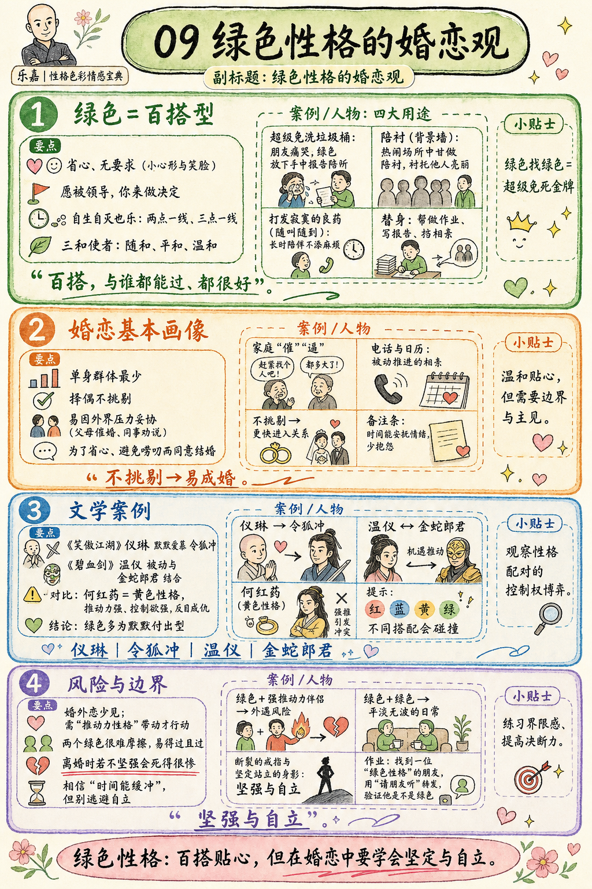
乐嘉指出绿色性格是百搭型，与任何性格都能相处，因其省心、无要求、愿被领导。绿色作为朋友有四大用途：超级免洗垃圾桶（倾听时放下自己的事）、陪衬（甘当背景墙）、打发寂寞的良药（随叫随到）、替身（帮忙做作业、挡相亲等）。绿色性格在单身群体中最少，因为择偶不挑剔，易因外界压力妥协。举例《笑傲江湖》仪琳默默爱慕令狐冲，《碧血剑》温仪被动与金蛇郎君结合。绿色婚外恋少见，需有推动力性格带动。离婚时若不坚强会死得很惨。
📖 全文解读（点开看全文）
性格色彩情感宝典，让你恋爱快乐，婚姻幸福。 我是乐嘉，愿你用性格色彩的力量，使你的生命更美好。 嗨，大家好，上一讲我们聊了黄色性格的婚恋观，今天是四种性格的最后一种性格——绿色性格，我们来看绿色性格的婚恋观。 在四种性格里面，绿色性格是百搭。所谓百搭，就是跟谁都能过，跟谁都很好。 不管这个人是想一出是一出、变幻莫测的红色，还是一个沉默寡言、喜欢暗示的蓝色，还是那种孤家寡人、唯我独尊的黄色，都会在生命当中的某一个时刻，需要有绿色性格的人出现。因为绿色性格的人省心，而且他陪伴你没有任何的要求，绿色自己在生活当中也愿意被别人领导，或者你来做决定。 即便没有人陪，绿色自己活得也很开心，反正自生自灭，他可以按照自己熟悉的那套生活路径，过着这种两点一线、三点一线的生活，他自己过得乐乐悠悠、非常的美好。 典型的绿色性格，对于天下所有的人而言，作为朋友至少有以下几个使用的方法。 第一，绿色性格是全世界最棒的超级免洗垃圾桶。当朋友痛苦的时候，你找到绿色大大地去痛哭一场、大大地倾诉一番，绿色一边听一边拉，听完了就像没事儿一样，没有任何的负能量。 而且你知道绿色好在哪里吗？绿色自己在做一个超级繁忙的报告、明天要交，你来找他哭诉的时候，他会把他的报告放在一边，然后来陪你默默地聊天，真的太好了。 你试试看，你找黄色，当你痛苦的时候你找黄色，黄色在那里做家务，黄色的第一句话：哎哟，那来跟我说说呗，来帮我剥毛豆。一边剥毛豆一边说——黄色性格听你倾诉，是要陪他干活儿他得听你说；人家绿色性格是把自己手里的活儿放掉来陪你的。 绿色性格的第二个使用说明，它可能是你非常好的陪衬。比方说你去酒吧呀，或者去热闹的场所啊，如果你带着一个打扮得平时朴素的绿色的同伴，就可以突出你自己很潇洒、很亮丽。 这样做呢，你这个人是有点不厚道的，但是你要记住，绿色性格好在哪里呢？绿色性格他不在乎当别人的背景墙，他愿意黯淡自己衬托他人，他们的心态之好远超你的想象。这就是为什么有好多好多红色性格的人喜欢找绿色性格的人做朋友的原因。 第三，绿色性格的使用说明，它是你打发寂寞的超级良药。不管你在任何时候，其他人都很忙、你叫不到他的时候，绿色随叫随到，会让那种孤独的人温暖。绿色不擅长制造大量的快乐，但他绝不会给你带来痛苦和麻烦。更重要的事情是，他的耐心是超级棒，陪你多长时间他自己都不会觉得无聊。 第四，绿色的使用说明叫"替身说明"。比方说以前上学的时候，你作业没做完，你绿色的好朋友可以帮你做；你工作的时候差事应付不来，你绿色的好朋友可以帮你查资料啊、写报告啊；你相亲的时候，你万一看不上对方，你发个暗号给你绿色好朋友，他就会随时出现，替你把那个花痴给挡掉。 绿色是"三和"使者哪——随和、平和、温和，所以绿色才无比的贴心。你交到一个绿色性格的好朋友，你就是拿到了一张超级免死金牌，什么事儿他都可以替你去做，毫无怨言。这么好的朋友你到哪里去找啊？绿色找绿色。 那么绿色性格的恋爱观和婚姻观是什么呢？整体来讲，在总的单身的人群里面，无论男女，绿色性格在单身群体当中最少。知道为什么吗？原因是绿色在天性当中啥都可以无所谓，所以他们在择偶的时候不会有太多的挑剔和要求。 绿色如果年龄大了以后，假设外界给了他很多的压力，你比方说家里面直接催他、逼他，在这种情况下，绿色可能抵挡不了压力。他为了省掉麻烦，或者避免别人在他耳朵旁边成天叨叨不叨叨，他为了让自己清静，也不至于让别人总是为他自己担忧，他就会比较容易妥协。 《笑傲江湖》当中的小师妹仪琳就是典型的绿色性格。你看她对令狐冲充满了爱慕之情，但是从未主动表达，一直默默地付出，看到令狐冲跟任大小姐在一起，也是为他们默默地祝福，非常的温和，反正我是超级喜欢她。 还有一个在情场上面和仪琳遭遇不一样，但是也是典型绿色的案例，也是在金庸的小说《碧血剑》当中，有一个叫做温仪的女孩儿，在一个机缘之下，她遇到了金蛇郎君，两个人在一起了。并不是因为她自身的性格要去推动这场爱情的发生，是机遇来了，那金蛇郎君后来跟她在一起了。 可是你不要忘记哦，何红药是一个典型的黄色性格的女人，她是为了爱情可以奋不顾身地去追求、去付出，但是因为她太强，推动性太强、逼迫性太强、控制欲太强，那个金蛇郎君不但不喜欢她，反而跟她反目成仇。 所以在我们之后的课程里面，我会来讲到不同性格的碰撞和搭配会出现什么情况，你就会发现，当这个男人和这个女人性格当中都有黄色性格的时候，势必会因为控制权、掌控权而展开厮杀和斗争。 绿色性格，因为他特别害怕麻烦别人，没有天大的事情，基本上就是能过就过、能忍就忍，他们不愿意把自己的苦讲给自己的朋友听。还有一个呢，他也觉得时间可以帮助很多事情改善或者延缓。 被逼无奈不得不离婚的时候，绿色性格如果不会坚强和自立，基本都死得很惨。 还有一点，告诉你个秘密，在婚外恋里面，绿色性格的婚外恋很少见对方也是绿色，因为两个绿色的人是很难摩擦起来的。如果绿色性格的这个外遇是一个富有推动力的性格，绿色有了可以依靠的后盾以后，在行动上会增强，否则他必然会继续他已经习惯的那种得过且过的生活模式。 在今天我讲了绿色性格的婚恋观。到现在为止，红、蓝、黄、绿四种性格的情感素描和自画像，以及红、蓝、黄、绿四种性格的婚恋观已经全部讲完了。我希望通过这八讲，能够让你更清楚地看懂你自己和他人在情感上面的需求。 在今天，我要布置的作业是：赶紧找到你周围身边一位绿色性格的朋友——你知道我要说什么——用页面右下角的"请朋友听"功能把本集内容转发给他，请他告诉你他是不是绿色。你要注意啊，不管你的判断是否正确，如果他真的是绿色性格，他都不会反对你的观点；如果他跟你不停地争，那个人就肯定不是绿色性格。 如果你判断正确的话，恭喜你，你已经掌握了初步的对红、蓝、黄、绿大概的对号入座的本领。在接下来的很多课程的内容里面，我会慢慢地跟大家来聊在各种各样不同的情境之下，红蓝黄绿的反应如何、如何解决问题，以及不同性格的碰撞它们的规律。 请你把你的作业感想、这八讲听下来所有的内容，在本集节目下方给予评论，我会从所有的评论里面抽选三位同学赠送一本我的签名书。我希望以上的八讲能够帮助你已经开了一个初步的大门了，我们下一讲再见。
【搭配规律】配好上天堂，搭错下地狱
1/1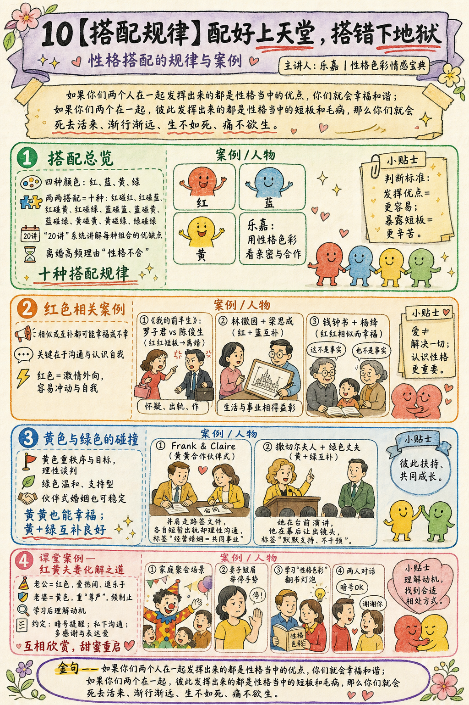
主讲人乐嘉指出，性格色彩中两两搭配共有十种组合，每种都有优缺点。他通过举例说明性格相似或互补都可能幸福或不幸：红色性格的罗子君和陈俊生因性格短板导致离婚；红色性格的林徽因与蓝色性格的梁思成互补成功；红色性格的钱钟书和杨绛相似而幸福；黄色性格的Frank和Claire相似但如合作伙伴；黄色性格的撒切尔夫人与绿色性格的丈夫互补良好。最后，他通过一对红黄夫妻的案例说明，学习性格色彩可化解矛盾，关键在于理解对方动机并找到合适相处方式。
📖 全文解读（点开看全文）
性格色彩情感宝典，让你恋爱快乐，婚姻幸福。 我是乐嘉，愿你用性格色彩的力量使你的生命更美好。 嗨，哈喽，从今天开始起，我们开始来聊初学性格色彩没多久的人就迫不及待想来了解的问题，那就是：到底我和什么颜色搭配最合适？有没有一个规律可以像星座那样有一个公式，告诉我什么跟什么配最好、什么跟什么配不好？ "我现在很苦恼啊，我现在想找事业上的合作伙伴和搭档啊；我现在想在公司里面选一个合适的人呐；我现在想谈恋爱啊，有两个男孩儿都在追求我呀，他们两个各方面条件都很不错，但是我不知道谁跟我更合适啊；那我现在的老公跟我老婆到底合不合，我跟他每天在吵架"，等等等等。那接下来我将会花20讲的时间来阐述不同性格的搭配好还是不好。 那为什么要用20讲？是因为在性格色彩的四种性格搭配里面，如果按照两两搭配的规律，它会有十种搭配：红碰红、红碰蓝、红碰黄、红碰绿、蓝碰蓝、蓝碰黄、蓝碰绿、黄碰黄、黄碰绿、绿碰绿，总共会有十种搭配。每种搭配都有它的优点，每种搭配都会有它们的局限性和麻烦，所以我分别会分20讲来阐述。 有一个众所周知的现象，就是全国的离婚率现在在逐年地递增，在所有的离婚理由里面，排名最高的就是性格不合。那么到底什么性格跟什么性格在一起合适，哪个跟哪个不合适呢？ 如果你让我用一句话来回答，那就是：如果你们两个人在一起发挥出来的都是性格当中的优点，你们就会幸福和谐；如果你们两个在一起，彼此发挥出来的都是性格当中的短板和毛病，那么你们就会死去活来、渐行渐远、生不如死、痛不欲生。 在性格色彩里面，我们把人分成四种类型，我们用红、蓝、黄、绿四种颜色来进行大的类别的分类。在情感当中遇到的所有的激情和危机，几乎无一例外全部和性格有关。 前段时间有一部热播的电视剧叫《我的前半生》，里面就有对红色性格的夫妻，叫罗子君和陈俊生，他们两个人曾经非常相爱。罗子君为了陈俊生离开工作，做了家里面的全职太太，那她老公陈俊生呢，为了这个老婆罗子君就努力在外面打拼。 结婚以后，这个老婆就开始无所事事啊，她的红色性格的短板就开始越来越明显，为了追求快乐开心，沉溺于购买奢侈品，还经常为了一点屁大的小事儿就特别特别地作，怀疑她老公在外面有外遇。 而她老公陈俊生呢，也是一个红色性格，当他在家里面得不到这种快乐和心理满足的时候呢，就把所有的精力全部寄情于工作，遇到了一个黄色性格的女同事叫凌玲，这个黄色性格的女同事看上去特别柔弱，其实特别有心机。结果陈俊生没抵抗住诱惑，出轨了，之后他跟他老婆被迫离婚。 在很早很早以前，当年我还在非诚勿扰的时候，我当时就说过，两个人之间单单有爱情是不可能解决所有的问题的，爱无法解决所有的问题。罗子君和陈俊生这两个人非常相爱，但是因为他们彼此没有很好地认识自己的性格，没有及时有效地沟通，情感也没维系好，结果最后所有的美好都变成了所有的丑陋，两个人变得非常的沮丧。 那么现在问题来了，到底是性格相近的人在一起更加适合，还是性格互补的人在一起更加适合？ 你比方说林徽因和徐志摩这两个人，徐志摩是典型的红色性格，而林徽因在性格里面是红加黄，他们的主要性格都是以红色为主，但是因为林徽因的性格里面多了黄色，所以在伴侣的选择上面她会更加的理性，所以最后她选择了蓝色性格的梁思成。 结婚以后，林徽因和梁思成两个人性格互补。林徽因富有激情、想法多、善于去说服别人，但梁思成呢，虽然木讷寡言，但是画得一手好画，可以把林徽因在建筑学上面很多想法给描绘出来。两个人不但是生活当中的伴侣，在工作上面也相得益彰，配合得特别好。 我举他们两个性格互补在一起相处得好的例子，是不是意味着性格相似的人在一起未必合适呢？当然不是。 你比方说钱钟书和杨绛。钱钟书幽默健谈，在他自己写的书里面有很多又好玩儿又高级的段子，生活当中他也是一个童心未泯的、典型的红色性格。想当初他就趁家人睡午觉的时候，拿着那个墨汁在脸上画那个大花脸，等到睡醒了以后在镜子前面一照，他在那边哈哈大笑，他是一个绝对的老顽童性格。 这个杨绛呢，也是一个红色性格，两个人在大学校园里面第一次见面就一见钟情。钱钟书就说：哎哟，外界传说我已经订婚，这不是事实，请你不要相信。杨绛马上就说：坊间传闻追求我的男孩儿有孔门弟子七十二人之多，也有人说某某人是我的男朋友，这个也不是事实。两个人第一次见面，马上就这么真诚坦率地相互表白，这正是两个典型红色性格会做的事情。 从恋爱到结婚以后，两个人有了共同的爱好、共同的话题，性格比较相近，所以两个人一起经常打闹，生了女儿以后，一家三口一起整天欢笑不断，直到女儿和丈夫相继过世以后，高龄的杨绛还在怀念三个人在一起的欢乐的时光。所以你看他们两个性格相同的人，相处得就很棒啊。 你再来看《纸牌屋》里面那对非常经典的黄色性格的夫妻Frank和Claire，两个人都是典型的黄色性格，老公从政，老婆就帮他。即便是两个人分别出轨，这个男的跟一个小记者好上了，女的跟一个画画儿的艺术家好上了，两个人其实彼此都心知肚明，彼此能够理解、理性地谈判。 在外人看上去，他们的关系更加像是一对合作伙伴，但是事实上面，典型的黄色性格把婚姻当成人生必须要去经营的一项重要的事业和目标，他们认为两个人在一起，彼此的相互扶持、相互的成长是最重要的。而事实上面两个人携手共进、克服了很多很多的困难一起朝自己的目标去，所以这个就是非常明显的黄色跟黄色两个人夫妻搭配相处不错的例子。 但是在英国，你会看到英国的前首相撒切尔夫人是典型的黄色性格，跟她背后绿色性格的老公两个人互补，搭配得非常好。对于撒切尔在政坛做的一切，她老公永远都是背后默默的，从来不干预。有媒体要采访这对夫妻的时候，撒切尔先生把镜头全都让给他老婆。 说了那么多，我的结论——到底是性格相似的好，还是互补的好？答案是：不管性格是一样还是性格是互补，都有幸福的和不幸的婚姻。我只能告诉你，哪两个性格在一起相处比较容易，哪两个性格在一起相处起来比较困难和辛苦。但是只要你学会运用性格色彩，有很多的矛盾都可以运用性格色彩来进行化解，如果你能够做到，你就可以寻找到跟对方性格相匹配的方式。 在我们的学员里面，有一对夫妻，他们当初来上课的时候，已经基本上就是要离婚了，离婚以前来学，他们准备把性格色彩作为最后一次努力的方向。在线下完成了性格色彩的读心术课程以后，他们最终发现了婚姻问题的根结在哪里。 这个老公呢，是典型的红色性格，热情开朗，特别喜欢表现，他经常会邀请一些朋友在家里面来聚会，为了逗朋友开心呢，扮小丑啊、逗乐子啊，只要气氛好，怎么来都行。而这个老婆呢，是典型的黄色性格，每当看到她老公这个样子，就忍不住要制止他，因为在她看起来，她老公把姿态放得特别低，这样的话会得不到朋友的尊重。 结果为了这个事儿呢，他们争吵了无数次，直到最后情感破裂，要离婚。课程学习以后，老婆发现原来那个老公的所作所为其实只是他想去追求快乐，而且他老公的朋友们都是红色性格，在骨子里面并不存在着什么尊重不尊重的这种感觉，他们只是觉得快乐、开心非常重要。 结果老公后来也发现，他老婆对他这么凶的批判，他核心的出发点是希望为了维护他的尊严，虽然手段上太过于严厉，但是发心是好心。在课程结束以后，他们两个人就做了个约定：如果下一次这个老婆再觉得老公在朋友面前做过了，就用一个暗号来暗示他，而不是直接去制止，这样呢就不会伤害她老公的面子；而老公在两人世界的时候呢，要多去问问他老婆对自己的意见是什么，多表达对老婆的感谢和爱。 从此以后，两个人就互相理解了，知道彼此的出发点和动机是什么，知道怎么样子用合适对方的方法来解决他们出现的不和谐的问题，彼此欣赏，结果两个人过得非常的开心、非常的甜蜜。 所以呢，在这张专辑接下来的内容里面，我会根据十种不同性格的碰撞的好，和十种不同性格碰撞他们分别的问题，这种组合搭配来分析他们的火花、障碍和快乐，以及如何去理解彼此、更好地相处。 如果你和你的另一半儿属于其中的一种组合，请你要在评论区里面给我留言。如果你刚好在听到某一个故事的时候，想到了你自己周围身边的那个朋友，请你千万不要吝啬分享给我。你的分享是对我最大的激励，这样我会觉得我做的这个事情是能够帮到很多人、是有意义的，我才愿意去分享更多的东西，否则我的积极性慢慢也会没有了。 好了，让我们下次节目再见。
【搭配规律】红色:红色(上)干柴与烈火的炽热疯狂
1/1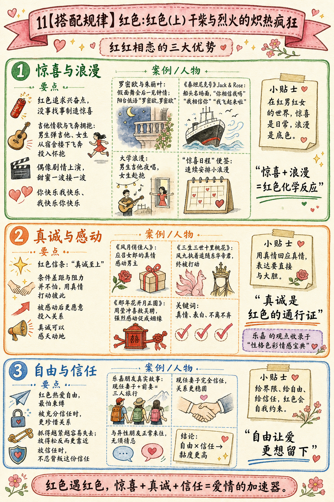
乐嘉分析了红色性格与红色性格恋爱时的三大优势。第一是惊喜与浪漫，双方都追求兴奋点，能不断制造惊喜，如大学里男生弹吉他唱歌、女生飞奔而出，以及罗密欧与朱丽叶、泰坦尼克号中Jack和Rose的浪漫桥段。第二是真诚与感动，红色性格认为真诚至上，能用真情打动对方，如《风月俏佳人》中应召女郎的真情、《三生三世十里桃花》中凤九对东华帝君的执着、《那年花开月正圆》中周莹冲喜救吴聘。第三是自由与信任，红色性格喜欢自由，当被充分信任时，反而更珍惜关系，乐嘉举例一位红色朋友带着现任妻子和前妻三人旅行，现任妻子完全信任丈夫，使得关系更稳固。
📖 全文解读（点开看全文）
性格色彩情感宝典，让你恋爱快乐，婚姻幸福。我是乐嘉，愿你用性格色彩的力量，使你的生命更美好。 哈喽，大家好，我今天想跟你聊的就是红色性格和红色性格——红男红女碰在一起，他们的好处是什么。在这张专辑的前面几集，我提供了一些可以判断你自己性格的案例，不管你是红、蓝、黄、绿哪一种，你基本上都可以通过对照发现自己的性格倾向。那红色和红色，如果在恋爱和婚姻当中双方都是同样的这种性格，有些有可能相处得好，有些相处得不好。今天我们先来聊他们相处得好会是怎么样的一种模式。 第一，他们相互吸引的化学反应就是充满了惊喜和浪漫。对于红色性格的人来讲，他们都在寻找兴奋点，不管是工作也好、情感也好，能够让他兴奋起来的事儿，你不给他钱、让他吃苦受累，他都愿意干。两个红色性格在一起，他们能够不断地给予彼此惊喜，日子就会没事儿找事儿、一波接一波地在浪漫的氛围当中度过。所以在大学的时候，你会发现很多抱着吉他在女生宿舍楼下唱歌的那种男生基本都是红色；听到歌声以后在众目睽睽之下飞奔而出、直接投向男友怀抱的女生，也基本只有红色才干得出来。 这个红色和红色性格的伴侣，他们经常在上演着像偶像剧一般的剧情。比方说历史上最著名的两个红色性格的恋爱，叫罗密欧与朱丽叶。他俩是一对情侣，来自两个不同的家族，因为两个家族世代都有仇恨、不允许他们结合，所以他们为爱而去殉情。他们之所以爱上彼此，一开始是因为罗密欧为了追另外一个女人，来到朱丽叶家里的假面舞会上，结果两个人一见钟情。然后罗密欧就跑到朱丽叶家的后花园，看着阳台想着朱丽叶，恰巧在这个时候朱丽叶走上了阳台，嘴里面翻来覆去地念叨着"罗密欧、罗密欧"，两个人感到无比的惊喜，就此以后私定终身。后来但凡是影视剧当中两个红色性格谈恋爱，大多数都会出现类似这种又惊喜又浪漫的场景：两个人相互喜欢对方，又不知道对方怎么想，不期而遇，发现彼此心中都有着对方，感到甜蜜无比。 在世界电影史上票房排名第二高的片子《泰坦尼克》（第一被《阿凡达》给搞走了），里面的Jack和Rose两个人也是典型的红色性格，两个人一开始一艘船上的船客也不认识，后来Rose要投海自杀，Jack把她给救了，然后开启了浪漫的情缘。最经典的那个桥段你应该记得，在船头上相会，Rose想对Jack表白，Jack让她不要说话、把手给他，他拉着她的手、闭上眼睛、站到船头的栏杆上，问她"你相信我吗"，"我相信你"，Jack揽住Rose的腰，让她张开双臂再睁开眼睛，结果Rose迎着海风看着一望无际的大海，激动地说"我飞起来啦，我飞起来啦"。在这个无比美好浪漫的氛围之下，两个人相拥而立。当这个Jack给Rose这个惊喜以后，Rose给了Jack一个更大的惊喜，她让Jack为自己画像，脱下衣服、一丝不挂、赤诚相待，只带着一颗硕大的蓝钻的项链"海洋之心"。这个红色性格啊，他们期待惊喜，也善于给对方制造惊喜；他们渴望浪漫，也总喜欢为另一半制造浪漫。所以如果红色性格觉得我自己的付出能够让对方感到快乐的话，那我自己也会感到无比的快乐，所谓你快乐我快乐、我快乐你快乐。 除了惊喜和浪漫，红色和红色恋爱相互吸引的第二种原因，是他们充满了真诚和感动。相比较蓝色性格的理智、黄色性格的理性、绿色性格的平和，红色性格在骨子里面就认为真诚就是所有的一切，哪怕我们两个人的条件相差得很远，或者我们的阻力重重，红色相信真诚可以感天动地。而事实上，如果双方都是红色性格，的确可以用真诚感动彼此、成就良缘。在90年代著名的好莱坞影片、由理查·基尔演的《风月俏佳人》里面，有一个另类的爱情故事：男女主角的相识起因于一场性交易，男主角花钱雇这个茱莉亚·罗伯茨演的应召女郎当一个礼拜的女伴儿，但就在这一个礼拜里面，这个应召女郎的真情和真诚彻底感动了男主角，最后两个人相爱了。 在我的第一张专辑《乐嘉性格色彩读心术》里面，我曾经分析过《三生三世十里桃花》里面有一对标准的红色性格的恋人——凤九和东华帝君。因为凤九不小心闯到那个树林里面，遇到金猊兽被这个野兽追杀，路过的东华帝君把她给救了，然后凤九对东华帝君就一见钟情，虽然两个人的地位和辈分相差特别大，但是凤九执着地不停表白、不离不弃地追随东华帝君，最后这个红色性格的东华帝君就被她的真情所感动。在我之前的微课里，曾经分析过电视剧《那年花开月正圆》小丫头片子周莹和少爷吴聘的爱情感动了很多人，两个人也是红色性格为主，身份相差巨大，但还是走在一起。促成两个人姻缘的是一个意外：男方重病昏迷，需要娶亲冲喜过门，当天对方不愿意把女儿嫁给一个快死的人，这个周莹为了救他们家的少爷，冲上花轿做了新娘，当这个少爷醒过来发现新娘子是周莹的时候，之前的喜欢加上当下强烈的感动，让他毫不犹豫接受了周莹。关于这两个人的详细性格分析，我在上一讲当中已经讲过，就不再多说了。 第三种能够让两个红色性格相互吸引的很重要的原因是自由与信任。红色性格喜欢自由，不喜欢受到束缚，所以两个红色在一起相处得好，往往是因为他们能够给彼此充分的信任、充分的自由。有一次我自己在朋友圈里面发现一个照片，我发现我有个红色性格的朋友牛逼大了，他带着他现在的老婆和他的前妻一起去旅游，我当时嘴巴就一直保持O型、愣了一个小时。他回来以后我就采访他，我说你能把你怎么做到的绝活分享给我吗？他就跟我讲，他前妻跟他离婚以后两个人一直是朋友，他也比较坦然地把前妻介绍给现在的老婆，他现在老婆这个大红色喜欢交朋友，跟他前妻两个人莫名其妙就成为了朋友。前妻再婚以后又离婚了，眼看着要放长假、一个人挺无聊的，就给他打电话问他有什么安排，恰巧他现在老婆在旁边听到了，就很大方地邀请前妻跟他们两个人一起去旅游。他一开始特别担心现在的老婆会吃醋，但是他现在老婆很坦诚地告诉他没关系，然后两个人加上前妻就有了三个人的旅行。整个旅行过程当中，他现在这个老婆对他完全信任，看到他关心前妻也没有不开心，反而让他多照顾照顾前妻，因为他老婆很相信他，所以他就更加相信他老婆，两个人无话不谈，即便有异性的朋友来往，也不用担心对方会介意。所以当一个红色性格感觉到自己被充分信任的时候，他也会不舍得轻易地背叛这份信任；当红色感到自由的时候，奇怪了，他反而更加想待在另一半的身边。所以有的时候你抓得太紧，反而会跑掉；你表面看上去放得很松，其实是牢牢地围绕在你的身边——这就是人性。 今天这一讲我主要讲的是红色和红色的情感搭配里面，他们彼此应该发挥怎么样的优势，才能够做最好的伴侣。在之后我会向你来展示，当两个红色性格在一起、他们呈现出来的是天堂的反面，那么他们一定会出现的巨大的麻烦和问题会有怎么样的表现和危害。如果你在情感里面有痛苦和麻烦，欢迎你给我留言，我会在后续的课程里面选择一些有代表性的问题统一来回答，祝你好运。
【搭配规律】红色:红色(下)这有两个神经病
1/1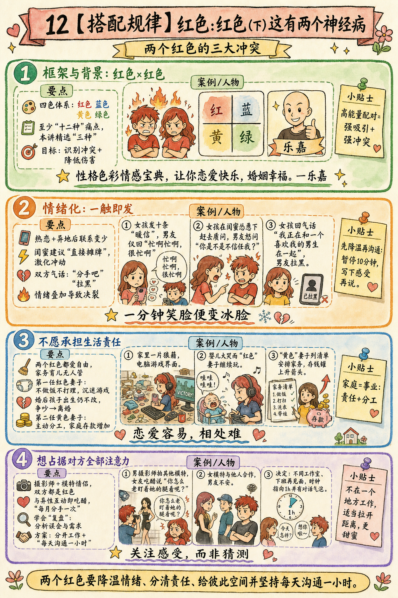
乐嘉指出两个红色性格在一起最明显的三种冲突。第一，情绪化：举例学员因男友联系变少，听闺蜜建议冲动去找男友，双方情绪化争吵导致分手，后因气话和拉黑彻底决裂。第二，不愿承担生活责任：举例有两次婚姻的学员，第一任红色妻子不料理家务、沉迷游戏，孩子出生后仍不改，最终离婚；第二任黄色妻子主动安排家务，家庭存款增加，让他意识到责任分工的重要性。第三，想占据对方全部注意力：举例摄影师和模特情侣，因对方与其他异性互动而吃醋，每月分手一次，后通过复盘决定分开工作并每天沟通一小时，关系改善。
📖 全文解读（点开看全文）
性格色彩情感宝典，让你恋爱快乐，婚姻幸福。 我是乐嘉，愿你用性格色彩的力量，使你的生命更美好。 哈喽，大家好，上一讲我们聊的是两个红色性格的恋人在一起怎么发挥彼此的优势，过得幸福、和谐、快乐。而这一讲我会重点来聊两个红色性格的人在一起，高发性的冲突点、矛盾点和痛苦点。 两个红色性格如果出现问题，至少会有十二种产生冲撞的痛点。因为时间关系，今天我只选取其中最明显的三种来跟各位分析。 第一种，两个红色性格在一起，最大最大的痛苦就是两个人都非常的情绪化。 在红、蓝、黄、绿四个颜色里面，红色和蓝色的情感高度丰富，黄色和绿色没那么感性，情绪也很平稳。典型的蓝色性格，虽然情感很丰富，但他们的表达方式比较内敛。换句话来讲，就算蓝色要跟你撕逼，他也不会大肆张扬，他们走的一般都是暗战路线。所以看来看去，在情感这个事儿上，最惹不起的还是红色——一分钟笑脸便变冰脸，一旦情绪化发作、冲动起来，可以毁天灭地。 有一个学员以前曾经写过一封信，他跟我讲一个事儿，描述的是他跟他红色性格的男友这两个红色性格在热恋当中是如何打仗的。 在热恋的时候呢，她男友被派到外地工作一年，临走的时候大家互相发誓，绝不动摇。结果男朋友走了三个月以后，联系慢慢变少了。她给她男朋友发十条暖信，她男朋友只回一条说："忙啊忙啊，很忙啊，最近忙啊。" 这个女孩儿就把这个事儿告诉给她闺蜜，她闺蜜就说：他肯定有新的女朋友了，我要是你的话，就直接冲到他所在的城市跟他摊牌，我就问他到底要不要跟我在一起，要的话就结婚，不要的话拉倒分手。你看，提出刚才这个建议的闺蜜，毫无疑问也是一个大红色。 这个女孩听了她这个闺蜜的话，完全情绪被激怒，当场就跑到这个男孩儿的城市，把刚才那串短信复制给了她男朋友。她男朋友才听着说了几句，也情绪化了，非常愤怒，打断她："你是不是不信任我？好，既然你不信任我，那我们就分手吧。" 这个女孩儿就当场傻掉了，哭着挽回，这个男孩儿非常非常愤怒，坚决不肯回头。可当这个女孩儿可怜兮兮地回到自己家以后，终日以泪洗面。 过了没多久，这个男孩儿气消了，给那个女孩儿发了条信息："你在干嘛？"女孩儿当时还在情绪化里面，她看到这条信息就悲从心中起，回了一句："我正在和一个喜欢我的男生在一起。"其实她说的是气话，她根本没和其他人在一起。 但这个男朋友看到女孩儿这么回复他，更加反过来刺激起来他强烈的情绪，当场就把这个女孩儿拉黑了。后来不管这个女孩儿发了多少条请求加回的信息，男孩儿就是不加。过了一个月以后，女孩儿因为真的太痛苦了，真的去找了一个单恋她的男生，两个人在一起交往了。 结果本来这一对红色性格的情侣原本非常非常的相爱，但就是因为两个人都无比的情绪化，一方的冲动撩起另一方的情绪，另一方的情绪又更大地刺激起来前面那个人的情绪，结果两个人互相情绪化起来，管你是谁，再也没有办法挽回，从此以后划下深深的裂痕，无法修补。 两个红色性格在一起会产生灾难和痛苦的第二个高发性原因，就是他们都不愿意承担生活的责任。 红色性格，他们渴望自由、快乐，所以当两个红色性格刚开始遇在一起的时候，很容易彼此相互欣赏、一拍即合。但一旦过日子，麻烦就来了，柴米油盐酱醋茶，样样需要操心打点，两个红色谁都不愿意承担，日子就过不下去啊。 有一个有过两次婚姻的学员，来到我们的课堂上，就非常感慨：他的第一个老婆跟他一样是红色性格，一见钟情，热恋的时候两个人无比甜蜜，因为两个人才貌相当，朋友们都觉得他们天生一对。 可结婚以后，他老婆从来不会做饭、洗衣服，也不花时间打理家庭事务，也没出去工作，然后晚上就玩儿网络游戏，白天就睡觉。这个男学员呢，自己也是一个喜欢在工作之余跟狐朋狗友出去玩儿的人，所以一开始没觉得怎么样，还觉得他老婆不管自己挺好的；但时间长了以后，回到家里面他就受不了了。 每一次回到家里面就一片狼藉，他老婆不是在睡觉呢，就在玩儿游戏，所以就免不了两个人一顿争吵、相互指责。过了几个月以后，他老婆怀孕了，怀孕以后以前的生活方式也丝毫没改变，而他不得不更多地留在家里照顾他老婆。 小孩儿出生了以后，他本来以为他老婆做了娘以后会有所改变，可当他发现他老婆出院以后还是在那儿自己玩儿游戏，小孩儿在那个床上哇哇大哭的时候，他老婆也不理，他就受不了了，就说一定要离婚。 离婚以后别人介绍他跟一个黄色性格的女孩儿谈恋爱、结婚了，这一回他的感受就完全不一样：那个黄老婆一上来就直接掌握了家里面的主权，安排他做各种各样的事儿，一开始觉得不习惯，但是觉得还挺新鲜的。做了一段时间以后，发现家里面的存款越来越多，心里面也很踏实。 结果呢，他就发现，这个家庭啊，跟事业一样，它需要有责任和分工。很多红色性格不擅长的事儿，如果红色自己也不修炼自己的话，就特别容易出现"恋爱容易，相处难"的窘境。 红色跟红色婚姻恋爱产生的第三种高频性的冲突，主要表现在红色特别想占据对方全部的注意力和时间，因为红色特别喜欢跟别人粘在一起。 在我前面的课里面，我专门讲了红色跟人粘在一起的欲望到底有多高，而且他特别希望他的伴侣能够时刻关注他，天天跟他说"宝宝我好爱你哦，不能没有你哦，你是我生命当中最珍贵的呀"，这样红色性格就会觉得特别幸福。 所以，假如他的另一半儿被其他的异性给吸引了，哪怕就是多看个两眼，红色性格也可能会觉得："诶，你说是不是我没有吸引力了？是不是他不爱我了？"因为胡思乱想，两个人就会产生各种各样的冲突。 你像，我认识有一对年轻人，男的是摄影师，女的是模特儿，两个人是拍摄的时候一见钟情。谈恋爱以后呢，这个摄影师拍女朋友的时候就更加用心，这个模特儿在自己男朋友面前摆pose呢，也特别性感。两个人工作以后24小时腻在一起，都是红色，好的时候如胶似漆。 但只要这个男的在拍摄其他模特的时候，这个女的就会吃醋，她就会觉得："你怎么老盯着她的腿看呢？"其实那个摄影师只是专注在拍照。结果反过来，这个女的如果跟其他摄影师合作，或者跟其他男模特聊天，只要这个女的在其他异性面前流露出来妩媚的这种神情，不管是有意还是无意，这个男的必定吃醋。 所以这两个人谈恋爱一年，每个月都分手一次，分手了以后再复合，复合了以后再分手，两个人都折腾得苦不堪言。所以两个人就一起来学性格色彩，学完以后哇才发现他们两个人都是超级作、超级蔫的人，然后破天荒地一辈子认真坐下来长谈了一次，把以前的误会都用性格色彩全部剖析了一遍。 在我们的专业术语里面，这个动作叫"复盘"。复盘完了以后，商量出来两个决定：第一，摄影师从此以后去另外一家摄影工作室工作，而且赚的钱比现在还多一点。之前人家挖他，他舍不得女朋友所以没去，现在两个人都觉得不在一个地方工作、适当地拉开点儿距离，下班儿以后回家，这样感觉会更甜蜜，天天粘在一起会发神经病的。 第二，两个人做了决定，每天晚上必定要沟通一个小时以上，把各自每天发生的事儿用各自的感受跟对方交流，让彼此都知道自己是爱对方的，以免发生不必要的误会。所以后来两个人关系慢慢就好了。 那今天这一讲，我主要想聊的是两个红色性格在一起高发性的三点巨大的麻烦，那可能还会有更多的麻烦，你只能以后在线下的课程里面学习了。如果你对于性格的碰撞、互补和搭配存在某些困惑不清楚的，你可以在评论区里面留言。 在下一讲我会来跟各位揭晓全天下所有的文学影视作品的搭配当中的最爱——红蓝配。当两个天性完全相反的人成为一对儿以后，他们会发生怎么样的精彩碰撞呢？下期再见。
【搭配规律】红色:蓝色(上)火焰与海水的吸引法则
1/1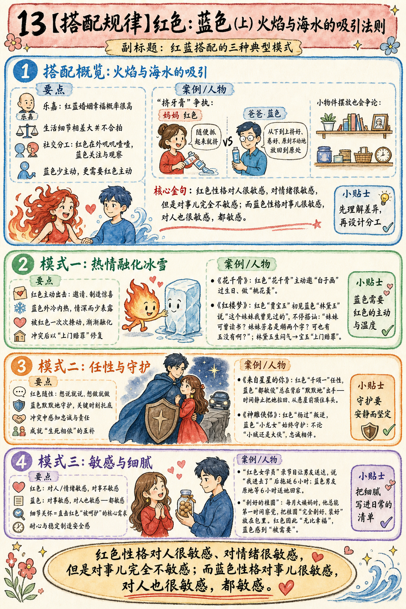
主讲人乐嘉指出，红色与蓝色性格虽然生活细节差异大，但婚姻幸福概率很高。他列举了三种典型搭配：一是热情融化冰雪，如《花千骨》中红色花千骨主动融化蓝色白子画，《红楼梦》中红色贾宝玉搭讪蓝色林黛玉；二是任性与守护，如《来自星星的你》中红色千颂一任性，蓝色都敏俊默默守护，《神雕侠侣》中红色杨过叛逆，蓝色小龙女始终守护；三是敏感与细腻，红色对人敏感但对事粗心，蓝色对人对事都细腻，如一位红色女学员被蓝色男友等待六小时和每月剥好桂圆的细节打动。
📖 全文解读（点开看全文）
性格色彩情感宝典，让你恋爱快乐，婚姻幸福。我是乐嘉，愿你用性格色彩的力量使你的生命更美好。 嗨，大家好，上两讲我们谈了红色与红色这两种性格搭配和碰撞的好处和麻烦，那接下来今天我们就要来聊红色和蓝色这两种完全相反的性格，它们在一起搭配和碰撞出现的场景。 如果你从第一张专辑听到现在，也看过性格色彩的书，你会发现在所有性格色彩的案例里面，最经典的案例就是挤牙膏。我一直举的例子就是我爸跟我妈，这两个人因为挤牙膏的事情吵了一辈子。我爸爸是一个做事情非常仔细的蓝色，我妈是一个非常粗心的红色。两个人因为挤牙膏是随便抓起来就挤，还是从下到上按照规则挤好、卷好、原封不动地放回到原处，东西到底怎么摆放，吵了一辈子。 所以很多初学者会有一种感觉：红色和蓝色，他们两个生活细节相差那么多，是不是认为他们两个在一起就没有办法搭配？但事实我要来告诉你，在所有的婚姻搭配组合里面，红色和蓝色搭配在一起幸福的概率非常高，就像我爸跟我妈吵了一辈子，但两个人感情好得不得了。 在很多文学影视作品里面，他们都喜欢描绘这样的一对情侣，一个活泼天真、开朗热情，另外一个冷若冰霜、深沉内敛，因为他们性格完全相反，擦出来不一样的火花，演绎着各种各样生离死别的故事。其实这种描述几乎绝大多数都是红色性格和蓝色性格的情感搭配。 那么当两个情感都非常丰富，但是表达情感的方式完全相反的红色和蓝色在一起的时候，会擦出怎么样的火花呢？这里面变化万千。今天我就选出三种最容易让初学者理解的典型状况来阐述一下。 第一种红蓝搭配，是标准的热情融化冰雪。在《花千骨》这部剧里面的花千骨就是典型的红色性格，白子画就是典型的蓝色。白子画外表看上去非常冷、冷若冰霜，容易招人误解，但其实他内在重情重义。幸好后来花千骨活泼热情，从刚一开始见面被白子画数落以后，她就主动要求白子画留下来陪自己过生日，还主动地给他做桃花羹。正是因为这个红色性格的花千骨主动热情，一次又一次地撩动了蓝色性格白子画的心，白子画这个蓝色性格虽然表面上不苟言笑，但其实内心已经动情。 这个就有点像《红楼梦》里面红色性格的贾宝玉，在第一次看到蓝色性格林黛玉的时候就说"这个妹妹我曾见过的"，然后缠着林黛玉问了很多问题："妹妹可曾读书？妹妹芳名是哪两个字？可也有玉没有啊？"不停地在那里搭讪找话题。蓝色性格的林黛玉听了这么多搭讪，只是对方问什么就答什么，看上去比较冷漠，但其实她心里面对贾宝玉有很深很深的印象。贾宝玉呢，有好吃好玩儿的都会留给林黛玉，每一次贾宝玉不小心说错了话，你就发现林黛玉就回到自己家里面生闷气，每次最后的结果都是贾宝玉上门赔罪——用红色性格的热情，最终把蓝色外表的冷淡给融化。 你设想一下，如果这个男人是一个蓝色性格，当林黛玉经常在那里生闷气、等着对方来向她主动认错的时候，那个蓝色性格跟她一样，也在等着林黛玉倒过来向他认错，那这两个人谁都等对方主动，怎么能好起来？到最后肯定就掰掉了。但有趣的事情就是红色跟蓝色性格的搭配：蓝色情感内心细腻丰富，但是因为蓝色自己很少主动，所以蓝色特别需要红色的主动（因为他自己做不到），同时也很需要红色性格的热情来把自己从负面的情绪当中带出来。 根据这个原理，你就可以理解：如果两个人都是红色，当他们在社交的时候，谁都很愿意主动地去抢对方的风头，特别注重自己的表现，希望得到众人的关注和认可，两个典型的大红色就很有可能为了争取彼此被关注的权利而斗争。但是一个蓝和一个红就完全没有这个问题——蓝和红的夫妻或情侣搭配，基本上都是红色性格叽叽喳喳、在外面积极主动，蓝色乐得其所，在后面做一个关注和默默观察的角色，两个人谁都不去抢谁的角色，相得益彰。 第二种红色和蓝色出现的情况就是任性和守护。任性和守护的关系，最典型的代表是在前几年火遍中国的一部韩剧叫《来自星星的你》。在这部剧里面，红色性格的千颂一和蓝色性格的都敏俊他们之间催人泪下的恋情。千颂一这个红色性格最大的魅力就是随性，想说什么就说什么，想做什么就做什么。每当她遇到麻烦的时候，这个有超能力的都敏俊都会默默地出现在现场帮她解决问题、搞定一切——记住啊，核心重点是"默默地"。虽然千颂一在剧里面的角色是个大明星，但总有很多想要害她的人：当她差点掉到海里面的时候，都敏俊就让时间静止把她拉回来；当那辆刹车装置失灵的车差点冲下悬崖的时候，都敏俊就从车前咣落下来顶住车头救千颂一。在一次一次的守护和帮助下面，这个特别骄傲任性、难伺候的红色性格，就爱上了这个蓝色。而都敏俊也从一开始完全不认可这个女孩儿，到看到了这个红色性格女孩儿其实内心非常的纯真单纯，最后就爱上了她。 在《神雕侠侣》里面，金庸笔下的杨过和小龙女也是一对令人特别羡慕的红蓝组合。红色性格的杨过从小就特别叛逆，因为他爹杨康的原因被世人所不容，只有这个蓝色性格的小龙女一直在保护他。长大以后，杨过也遇到特别多喜欢他的女孩儿，但他内心其实就觉得只有小龙女永远不会背叛他，永远对他始终如一。而小龙女也的确——我管你是小贼还是大侠，始终默默地守护着他。红色性格的任性率真和蓝色性格的忠诚责任，完美地互补在一起，成为一对生死相依的恋人。所以你会发现，在好多好多剧里面，这种爱情故事几乎都是红和蓝的情感搭配。 红和蓝搭配最容易出现相互吸引的第三种情况，就是敏感与细腻。在情感的表达方式上，红色跟蓝色这两种性格都比较敏感，但是它们的核心区别在于下面这句话，听清楚：红色性格对人很敏感、对情绪很敏感，但是对事儿完全不敏感；而蓝色性格对事儿很敏感，对人也很敏感，都敏感。红色性格粗放，蓝色性格细腻，这两个人融合在一起，会让他们彼此都觉得特别甜蜜。 像我有一个红色性格的女学员，在很多年以前就跟我说，她当年之所以被她其貌不扬的蓝色性格的老公深深吸引，就是因为两件事儿。第一件事儿，两个人刚谈恋爱的时候，她到一个电视台里面录节目，让她男朋友（就是现在那个老公）去送她。到了以后，她说了一句"我进去了"，头也不回就去了电视台。没想到节目录的时候拖的时间太长，耽搁了六个小时才录完。最后她提着高跟儿鞋、特别疲乏地一瘸一拐走出来的时候，她就蒙圈儿了——她发现她那个男朋友还在原来那个地方站着，站在那儿像个岗哨兵一样，没动过半分。原来这个男人有心就是要等她出来送她回家，她一直不出来，他就一直等，足足等了六个小时。当时这个女孩儿就傻掉了，彻底就服了。红色性格对情绪特别敏感，她能够从这个男人无止境的等待当中体会到这个蓝色性格对她的深情。所以虽然她自己没有足够的耐心，打死她可能也做不出来这种事儿，但是当别人为她如此付出的时候，她内心其实是波涛汹涌的。 第二件特别小的事儿是，他们两个人确定了恋爱关系以后，每当她大姨妈来的时候，她这个男朋友都会做一件事儿，就在他的包里面塞上一瓶剥好的桂圆。这个女孩儿从来没有嚷嚷说"哎哟我来大姨妈了，我好疼啊、我难受啊"，但她男朋友每次都很奇怪，即便她不说，也能在第一时间发现，并且在这个女孩儿完全没有觉察的时候，就把这个桂圆完全给剥好、装好。你想哦，红色性格前面我们详细分析过，她的内心是渴望被呵护的，而这个蓝色性格细腻的、无微不至的照顾，正好和她形成了鲜明的互补，满足了红色性格在情感深处被呵护的最重要的需求。她被关注以后，这个红色就无比的幸福；而蓝色因为有了一个牵挂和付出的对象，他自己也会感觉到被别人需要的那种特别微妙、美好的感觉。 所以今天以上三点我讲的是红色性格和蓝色性格在情感搭配里面怎么样发挥彼此的优势、能够拥有一个幸福甜蜜的关系。在下一讲我会重点讲红色跟蓝色在情感过程当中的痛苦、冲突、分歧、碰撞。如果你曾经和一个蓝色或红色谈过恋爱、有过这样的体验，欢迎你给我留言，我会在下一讲当中选择代表性的问题给你回答。在下一讲我会讲得多一些，让你知道痛苦无处不在——如果你不了解性格，你会付出无比惨重的代价。如果你周围有红蓝配的朋友们，我建议你把这一讲和上一讲一起给他们听，来帮助他们理解他们的婚姻、他们的恋爱。
【搭配规律】红色:蓝色(下)传说中外向和内向的厮杀
1/1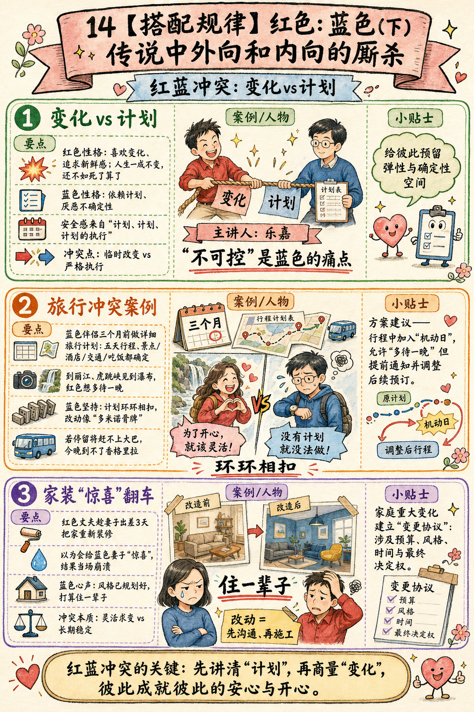
主讲人乐嘉指出红色性格喜欢变化、追求新鲜感，蓝色性格依赖计划、厌恶不确定性。他举例：蓝色伴侣会提前三个月做详细旅行计划，但红色在途中看到美景就想多待一晚，导致争吵。红色认为旅行为了开心，计划应灵活；蓝色认为计划环环相扣，改变会破坏后续安排。另一例子：红色丈夫趁妻子出差将家重新装修，以为会给蓝色妻子惊喜，但妻子因风格被改而崩溃，因为她原本打算住一辈子。
📖 全文解读（点开看全文）
性格色彩情感宝典，让你恋爱快乐，婚姻幸福。我是乐嘉，愿你用性格色彩的力量，使你的生命更美好。 嗨，大家好，在上一讲我们聊到红色跟蓝色这两种完全互补的性格一旦碰撞，爱是怎样更加强烈的。今天我们来聊因为他们性格完全不一样，所以造成的种种不理解、矛盾、分歧、冲突、战争。在诸多的冲突和问题里面，我重点选出三种来简单阐述。 第一种，举凡红色跟蓝色在一起，必然会有变化和计划之间的剧烈碰撞。在四种性格里面，最喜欢变化的肯定就是红色了，因为红色性格在变化的过程当中会有无限的新鲜感、有趣感、快乐感。对于红色性格来讲，人生如果一成不变，犹如一潭死水，还不如死了算了。而蓝色性格跟它完全相反，蓝色的特点是做任何事情一定要事先定计划，否则就没办法做；而一旦定好了计划，必须严格地按照计划来执行。蓝色最讨厌计划变化，他们不喜欢变化带来的风险、不确定，他认为不可控。他认为人生的安全感和稳定就来源于计划、计划，计划的执行、计划的执行。 所以红色跟蓝色之间经常发生的故事是：你如果有一个蓝色性格的好朋友或者蓝色性格的伴侣，你好幸福。国庆节出去玩儿，三个月以前就开始做线路，找了五个地方，画了一张表格，用SWOT这种分析，最后选出来一个地方，开始找各种各样的攻略图、各种各样的线路表，做出来一个计划：五天时间玩哪个景点、住哪个酒店、吃哪个馆子、换哪种交通工具，什么东西都查得一清二楚。所以你跟蓝色在一起，你根本不用糟心、不用操心，蓝色都会把你给安排好。 两个人出发了，出发之前红色说"哇哦，计划做得很棒哦"。结果两个人到了丽江、到了一个虎跳峡，那个地方一看，这个瀑布好美呀，红色好喜欢呀，觉得好好玩，我要在这边玩。然后红色跟蓝色说："我要在这里多待一个晚上。"蓝色说："不行，我们计划定好了，再过一个小时就要走。""那我不要，我就是觉得这个地方好，我不想走了。""不行，如果今天在这儿，后面的计划全都变了，我们赶不上大巴车，今天晚上就到不了香格里拉。""不行，我就是觉得这里好。哎，你说你这个人死板不死板，我为什么出来玩儿？出来玩儿是不是为了开心呢？那现在这个地方开心吗？既然很开心、很好玩儿，就在这里继续玩儿就好了，如果你因为那个所谓的计划来回地走的话，你不觉得人生很没有乐趣吗？" 蓝色又很愤怒，他觉得你不讲道理啊、胡搅蛮缠啊："我所有的计划都是环环相扣的，我这个地方多停留一个晚上，后面所有的东西就像多米诺骨牌一样全部都会崩塌。你兴致来了说变就变，那接下来的事儿怎么办？"两个人闹得非常不开心。我刚才讲到的这个情况，是红色和蓝色这两种"变化和计划"的动物碰撞的常态。 像我以前教过的学生里面有一个红色性格的学员，人特别乐观开朗，但他没学性格，结果找了一个蓝色性格的老婆，两个人经常发生摩擦和不愉快。最主要的原因是因为他们两个人在一个问题上永远没办法和谐。有一次他老婆出差三天，他一个人在家，突发奇想，一定要给老婆巨大的惊喜，就找人把房子重新装修了一遍，心想老婆回来以后一定会大大地表扬：家里面变样了，旧家变成新家了，超级流行，老婆一定会感动、一定会觉得自己付出非常的值得。结果蓝色老婆一回到家，看到家里面变得自己都不认识了，当场就崩溃，叹了口气，啥话都没说。这个红色性格被浇了这盆冷水以后非常郁闷，就问这个蓝色到底怎么样、有什么想法，蓝色也不说。过了好多天，红色反复追问，这个蓝色才说："这个家，我从搬进来开始我就已经想好了，我选的这种风格是打算要住一辈子的。"这个红色男人一听就崩溃了，他觉得过不下去了："我怎么可能在一种风格的家里面待一辈子呢？那人生不是会关在一个同样的牢笼里面，还有何乐趣？还不如死了算了。" 红色性格和蓝色性格产生冲突的第二种常态是快和慢的冲突。比方说在做家庭事务处理的时候，红色跟蓝色的节奏感完全不一样，就会有很大冲突。红色的常见问题是行动太快、太草率：他听说旁边上厕所的老太太炒股赚了几百万，管他自己懂不懂，立马就开户，东听一个消息、西听到一个风声，立马跟进，听说涨就买、听说跌就卖，买买卖卖，手续费花了老了，结果钱没赚到，蓝色性格就特别不满意。而蓝色性格的问题完全相反，他行动太慢，持币待购好多年，等了十年一套房子也没买，因为他买房的时候挑啊，比较了半天，终于发现有一个房子十全九美，最后打开卧室的房门一拉开来，发现后面的踢脚线没有贴平，就这一个，就觉得心里面难受，要跟别人谈价降价两千块，别人不肯，他说"我再想一想"，等他下午想好了过去的时候，房子已经给买掉了，结果又没买成。越等到后来房价越高，他就越没决心下手买，最后机会再也没了。然后红色性格就骂他："你不停地在那里想，光想不行动，最后错过了无数机会。" 这个快和慢的冲突，还不仅仅是指做事情上的快慢，还包括他们两个人在情绪上面的快进快出和慢进慢出。比方说我们有一个蓝色性格的男性学员，他就说很多年以前他跟他红色性格的女朋友谈恋爱，两个人一起去看《泰坦尼克》，看到最后最感动的那个大船倒掉、人快死的那一刻，Jack对Rose说"你跳我就跳"，这个红色性格女朋友一看到那个情节嚎啕大哭，就觉得感天动地、也受不了了。而蓝色性格呢，他自己那个泪水就在眼睛框里面转、转、转，就是不出来，离开电影院走了好久，这个蓝色性格还在那里默默地伤心、还在思考红色性格哭得真是痛苦万分的时候，红色突然看到旁边有个冰淇淋店，嘿，当场就变了："冰淇淋哟，我要吃冰淇淋。"这个蓝色性格就不能理解："你怎么可能在一秒钟之内就把刚才那么伤感的事情就忘记掉？你到底有没有人心人性啊？太过分了。"而这个红色性格完全没意识到蓝色性格的心情，结果两个人发生很多次事情以后，这个蓝色就觉得红色没心没肺、自己很累，一路人渐行渐远，最后两个人分手，分手后好多年早都不联系了。多年后蓝色性格走进那条电影院附近的小巷子，听到熟悉的《泰坦尼克》的主题曲《My Heart Will Go On》，依旧是心潮起伏，不能平静。 红色跟蓝色常见的第三种冲突，我把它称为叫明作和暗作。"作"呢，是江南常用的语系，有一个著名的作家还写了一本书叫《作女》。我的理解，"作"有两种：一种叫折腾，一种叫难伺候——红色性格就是折腾，蓝色性格就是难伺候。因为红色和蓝色都有情绪化的问题，它的区别在于：红色是明作，他不停地要求蓝色给他关注、给他认可、给他赞美、给他鼓励；而蓝色性格是暗作，嘴巴上从来不讲，但心里特别渴望另一半儿能够给他足够的默契。 你比方说这个蓝色性格，下班回家，工作上发生一个事儿就不开心，然后就坐在沙发上也不讲话，在那儿想事情。红色性格发现蓝色不开心、坐在那儿，就问他："哎，你怎么了？""没事。""你到底怎么了？""没事儿。""你告诉我吗，到底发生什么事情？你说嘛说嘛，你说出来心情就好了，你快点跟我讲嘛。哎，你到底当不当我自己人？你为什么跟别人的话那么多，为什么不跟我讲？"就不停地在那里开始作。这个时候蓝色内心就非常不爽，因为蓝色觉得：如果你理解我，你就不应该强迫我讲话，我现在明明不想说话，我需要时间和空间自己来思考，你偏偏要逼着我讲，就说明你根本不懂我。所以蓝色性格就越不肯说，蓝色越不肯说红色就越抓狂，这个时候蓝色内心对红色就会越来越不满，就形成了恶性的循环，结果两个人自然而然出现裂痕。 有一个我们的学员，他的老爸是标准的红色性格，他老妈是蓝色性格。蓝色性格的老妈生病住院，这个红色老爸就拎了吃的东西去看她。到了以后，老爸就看见老妈拉着脸，老爸的心情也马上搞得很不好。老爸就把吃的东西往病床旁边的桌子上一放，老妈就说"这里能放吗？干净吗？"，但还是把吃的拿起来，打开病房里的冰箱往里面一塞，老妈又说"冰箱里面能放吗？干净吗？"，老爸这个时候已经火大了，把它拿出来往挂钩上一挂，老妈又说"那里能放吗？护士难道不会讲吗？"这个老爸就疯了："这也不能放，那也不能放，你到底想怎么样？到底让我放哪儿？气死我了！"啪把东西一摔就走了。结果事后我们这个性格色彩的学员跟他妈细聊，才发现这个蓝色性格的老妈是因为觉得医院里面不够干净、消毒工作做得不够好，所以心里面一直特别别扭。而老爸来了以后，老妈特别希望老爸能够明白理解自己的想法，最好不让自己说出来，老爸就能帮她把桌子上的消毒做好再把吃的放上去。但是红色性格的老爸根本无法理解蓝色性格的老妈心里是这样的想法，结果越问越想不出来、越愤怒情绪就越大，两个人就一直吵，吵了一辈子，就是因为这么一点情绪上的事儿、表达方式完全不同。 所以今天我重点选择了红和蓝冲突当中的三点来进行简单的阐述，有关更多红色跟蓝色的互补以及冲突的方面，在之后我们很多的案例分析和故事分享里面还会再来讲到。接下来下一讲我们会来聊红色跟黄色，它们在搭配当中出现的种种好处和种种问题。希望今天这一讲能够对你的情感和你周围身边所有红蓝配的朋友，让你更多地理解。如果你周围有红蓝配的朋友们，我建议你把这一讲和上一讲一起给他们听，来帮助他们理解他们的婚姻、他们的恋爱。
【搭配规律】红色:黄色(上)火星为什么总撞的是地球
1/1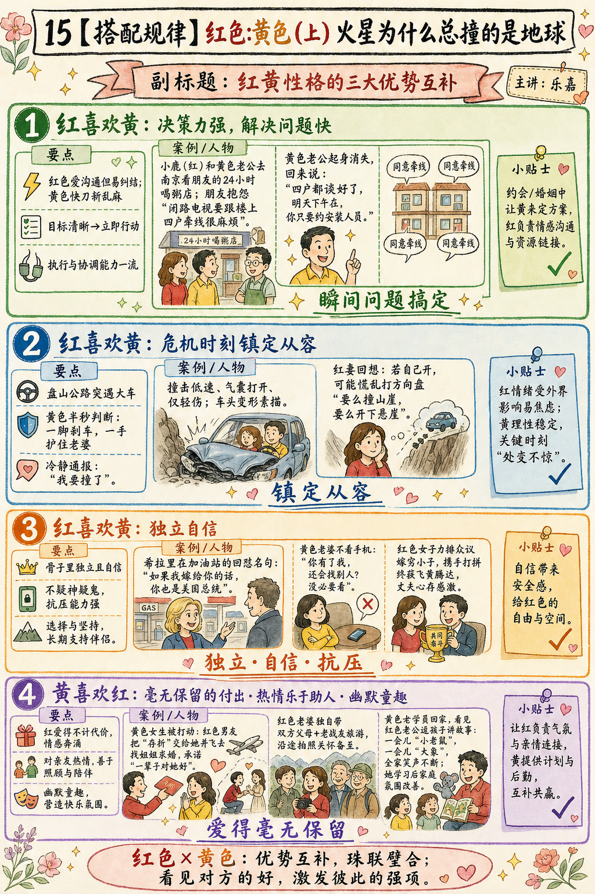
主讲人乐嘉在本段介绍了红色性格和黄色性格在情感中相互吸引的三大优势。红色性格喜欢黄色性格的：1.决策力强，解决问题快，举例红色学员小鹿和黄色老公去南京看朋友，老公迅速解决牵线问题；2.危机时刻镇定从容，举例黄色老公开车遇车祸，冷静应对保护妻子；3.独立自信，举例希拉里加油站回怼、黄色老婆不看手机、红色女子力排众议嫁穷小子。黄色性格喜欢红色性格的：1.毫无保留的付出，举例黄色女性因红色男友交出存折并飞去找姐姐求婚而嫁给他；2.热情乐于助人，举例黄色搭档的红色老婆独自带双方父母旅游；3.幽默童趣，举例黄色女学员发现红色老公在家逗孩子开心，自己学习后改善家庭氛围。
📖 全文解读（点开看全文）
性格色彩情感宝典，让你恋爱快乐，婚姻幸福。我是乐嘉，愿你用性格色彩的力量，使你的生命更美好。 嘿，大家好，今天这一讲我们主要讲红色性格和黄色性格这两种性格的搭配和碰撞。在过去这些年，如果有人跟你聊到两个外向型性格的人在一起搭配到底是好还是不好，我不知道你的回答是什么。在性格色彩里面，属于外向型性格的有两种，一种是红色性格，一种是黄色性格。前面几讲我已经讲过了两个红色性格在一起搭配的好处和坏处，而今天我们重点就来聊红色跟黄色——多情人和无情人这两种外向性格的搭配会怎么样。这个搭配我也会分为两讲，今天重点讲他们在一起搭配哪些因素对于他们彼此情感的发展以及碰撞是大有好处的。 如果你目前有一个喜欢的对象是红色或者黄色，你刚好可以通过这一讲来听听看你身上到底有什么样的优势更好地吸引他、搞定他，而他身上是什么优势能够吸引你。 让我们先来看看在情感当中，红色性格最喜欢黄色性格的三大优势。第一，黄色性格的决策力强，解决问题超级快。我有一个红色性格的学员叫小鹿，她有一次跟她黄色性格的老公一起去南京看朋友。这个朋友在南京开了一家24小时不间断营业的喝粥的店。见面的时候他朋友就聊自己当初为啥要开这个店：原来在世界杯期间，他希望来店里面的客人一边喝粥一边看电视转播的球赛，但因为闭路电视需要从楼上牵根线，要和楼上的四家住户一一打招呼，这个朋友觉得特别麻烦，所以一直没行动，结果世界杯开始了，店里的电视还是没办法看球，这个朋友就心情特别沮丧，不停地抱怨、后悔自己怎么选择了这么一个路段，房租成本太高、生意不行、入不敷出。这个红色性格的小鹿就不停地安慰着朋友。结果两个人聊得正在热火朝天的时候，小鹿突然发现她老公不见了。过了一会儿，她老公出现了，用特别平淡的口吻告诉这个南京做粥的朋友："我已经和你楼上的四户住家谈好了，他们同意牵线，明天下午他们都在，你只要约安装人员明天下午来装就可以了。"就那一瞬间，小鹿无比膜拜自己的老公。你知道，典型的红色性格特别擅长情感的交流，但是遇到事情以后容易纠结，而黄色性格最擅长的就是快速解决问题。红色容易把问题搞成一团乱麻，而黄色最擅长的就是快刀。结果你看这个红色性格的小鹿跟她的朋友两个人在那里相互诉衷肠半天，问题没解决，可这个黄色的人一出手，瞬间问题搞定。 第二，危机时刻的镇定和从容。有一对夫妻一起出去自驾，结果遇到车祸。当时的场景是黄色性格的男人在开车，红色性格的女人坐在副驾上面，在一条风景无比优美崎岖的盘山公路上，转弯儿的时候看到一辆大车迎面开过来。看到那辆车的瞬间，这个黄色性格就在半秒钟之内判断出来：今天肯定逃不了了。于是一脚踩下刹车，一手握方向盘，一手护住老婆，镇定地告诉她"我要撞了"。虽然这个老公事先提醒了，老婆恐慌的程度少了一点，但还是红色性格，吓得大叫起来。这个车子用非常低的速度撞上以后，车头变形，气囊打开，两个人和对面车上的人都受了一点轻伤。这事儿过了以后，这个红色老婆回想起这一幕就特别后怕，说"还好是你开车，如果是我的话，我看到迎面撞过来，可能会吓得把方向盘往一边儿打，要么撞在山崖上，要么就开下悬崖了"。典型的红色性格，他们情绪容易受到外界的影响，遇到危机的时候并非没有能力解决，而是情绪上面容易受到惊吓或者容易极度焦虑，容易做出不正确的判断；而黄色性格的理性让他们可以处变不惊、直面问题。越是危机关头，红色性格越能看到黄色性格的价值。 第三，黄色性格骨子里面有独立和自信。在过去我曾经在多次演讲和讲课当中举过希拉里这个典型黄色性格的例子。关于希拉里的段子最有名的就是：希拉里有一次去加油站加油，加油站的工作人员就调侃她"哎哟希拉里呀，你命多好啊，你看你嫁了个老公是美国总统啊"，结果希拉里头也不回、一边加油，鸟也不鸟他，就说了一句"如果我嫁给你的话，你也是美国总统"。怎么样，厉害吧？你没有见到黄色性格的人，你就不知道什么叫彪悍的人生。有一个我红色性格的朋友就告诉我，他的黄色性格老婆从来不看他的手机短信和聊天，这让他特别舒服。有一天他就问老婆"你为什么不看我手机啊"，这个黄色性的老婆就说"你有了我，你还会想要找别人的女人？既然没必要看，干嘛要浪费时间？"黄色骨子里面充满自信，他们相信没人取代自己，所以根本不会动不动疑神疑鬼，而这一点对于热爱自由的红色性格来讲特别舒心。这种独立在婚姻的选择上更明显。比方说父母坚决反对这个女孩儿嫁给一个男人，嫌这个男人穷、事业不好，而这个女孩儿最后义无反顾、坚决一定要嫁给这个男的，最后又支持这个男人飞黄腾达，类似这样的故事，多数都跟这个女子的独立自信、抗压能力强有莫大的关联，重点是抗压能力，因为并非所有的人可以长期忍受高强度的压力，在这种情况下黄色性格的优势就体现出来。所以当这个红色的小子奋力蓬勃、工作越来越出色、到最后飞黄腾达的时候，他对于当年老婆力排众议嫁给他这件事儿，内心深处是充满了无限的感激。 我们刚才讲到的是在情感当中红色性格最喜欢黄色性格的三大优势。接下来倒过来，我们来看看黄色性格最喜欢红色性格的是什么。第一，毫无保留的付出。有一个黄色性格的女性告诉我，当年她之所以下定决心嫁给她红色性格的男朋友，是因为她红色性格的男朋友当时做了两件事儿：一个是把自己的存折交给她，存折上有他全部的存款，每个月工资也自动发到那个存折上；第二，坐飞机飞到那个黄色女孩儿的老家，告诉这个黄色女孩儿从小到大情感最好的亲姐姐"我要向你妹妹求婚，我会一辈子对她好，我希望你能够见证我的诚意"。对于黄色的女子来讲，交出存折就意味着付出自己所有的财产，而飞去找姐姐求婚，证明这个男人也交出自己全部的面子和诚信作为代价，不仅仅是两个人之间说说而已。对于黄色性格来讲，他们的付出是要有回报的，这里面难免会有一部分的衡量，黄色性格因为他们考虑问题经常从理性的角度，所以当看到一个红色性格可以像流行歌曲里面唱的那样爱得毫无保留，黄色性格的内心是震颤的。而红色性格一旦爱上了，就会任由自己的情感奔涌而出，这种奋不顾身的勇敢和爱其实是出自于红色性格的本能，因为黄色性格做不到，所以黄色性格在内心非常欣赏。 第二，热情和乐于助人。我有一个搭档，在国庆节长假的时候跟我一起加班儿，这个搭档是一个黄色性格，加班儿对他来讲家常便饭。但有一天我看他接到一个电话以后，眼角就现出来了难得的一丝丝的温情，我就问他谁打电话，他说是我老婆，她正带着她爸妈和我爸妈一起旅游呢。这家伙的老婆我见过，是一个典型无比热情的红色性格的姑娘，和我这个搭档的硬汉形象是鲜明的对比。结果我问下去才发现，原来这个假期我这个搭档是准备带着老婆一起带老婆的爸妈出去玩儿，但是搭档的爸妈突然和一个老战友一起从外地飞过来看他们，所以这个搭档的老婆就热心地提议两个人一起带双方的父母去出游，因为怕冷落了他爸妈的那个老战友，所以把他又一起带上。临到快出行前几天，我这个搭档有一个工作上的任务必须要加班儿，所以就变成他老婆一个人带着五个老人家出行，一路上玩得还挺好，给老人拍了很多照片。这个搭档跟我讲，当初他一门心思追这个女孩儿、把她搞定做自己老婆，就是因为这个女孩儿比其他同龄的女孩儿都懂事，结婚以后红色的女孩儿跟这个黄色男人的爸妈的关系比这个男人跟他自己亲爹亲娘的关系都好。黄色性格在天性当中不喜欢跟人寒暄、不喜欢跟人聊天、不喜欢跟人进行他觉得没有任何意义的交流，因为他觉得浪费时间，而这个特点对于其他性格的人来讲，就觉得这个人除了工作啥东西都没有、不够亲近。而红色性格的这种热情、健谈，可以弥补黄色性格在这方面大大的不足，尤其是在陪伴和照顾亲人这方面，黄色性格的内心其实是很感激红色性格的。 第三，红色性格幽默童趣，善于营造快乐的氛围。在工作里面，黄色性格可能觉得快乐没那么重要，反正你就干活儿就拉倒呗，但在家庭当中，尤其是面对孩子，黄色性格心里很清楚快乐的重要性，但是黄色性格的天性完全不擅长此道，他经常会把事儿搞砸。有一个我的黄色性格的女学员告诉我，有一次她出差提前回家，钥匙插到钥匙孔转动的那一刻，她就听到家里面充满了老公和孩子们的笑声，但是当她把门打开来，老公孩子们一看到她，时光静止，孩子脸立即拉下来，乖乖地跑到台灯下面看书，老公就把地上散落的玩具收拾到盒子里面。结果她在那一刻才醒悟到，原来她不在家的时候，她孩子跟这个红色老公自在玩耍的时候才是孩子们最最快乐的时候，而自己一回来，家里面的气氛就冰冻三尺、无比紧张。后来她就开始有意识地反省和调整自己，经常和孩子尝试坐在地上，请老公给他们讲故事，而她这个红色性格的老公一会儿扮演小老鼠、一会儿演个大象，摇头晃脑，孩子听得前仰后合、笑个不停，她和孩子在笑的时候跟孩子的距离就拉近了很多，家里面快乐的氛围就很强烈。她原来是很瞧不上她老公的这个卖弄的，在她看来，她就觉得她老公像一个小孩儿一样、一点儿都不成熟，但从那一刻开始起，她突然发现她老公天赋当中这种红色性格的幽默感、讲故事的天赋实在是太牛了。 所以总体来讲，黄色性格的果断决策、临危不乱、独立自信，红色性格的勇于付出、热情、友善、制造快乐，在恰当的条件下，他们彼此都能够发挥优势，就能够珠联璧合。今天这一讲我挑选了红和黄彼此欣赏和喜欢的三个优势，事实上当这两种性格在一起的时候，最起码有十二个核心的重点让它们相互能够吸引，因为时间关系我进行简单的剖析。如果在你的周围身边有一个红色或者黄色的伴侣情人，你可以多看看他的优势，想想怎么样才能激发他的优势，让你们彼此的日子过得更加轻松和美好。在下一讲，我会讲非常残酷的一件事：当红色性格和黄色性格生活碰撞在一起的时候，他们的内心分别痛苦在哪里？我可以事先做一个预告，内心最痛苦的肯定是红，因为他们容易受到情感和情绪的影响，基本上是生不如死的。我会来告诉你他们是如何相互折磨的，那就看你会不会中枪啊。所以，如果你觉得今天这一讲对你有所启发，或者能够让你联想起来你周围身边的这个人，欢迎你赶紧地留言、评论以及转发，你的所有这些动作都将是我继续努力的原动力。好吧，让我们下一讲再见。
【搭配规律】红色:黄色(下)多情人与无情的斗争
1/1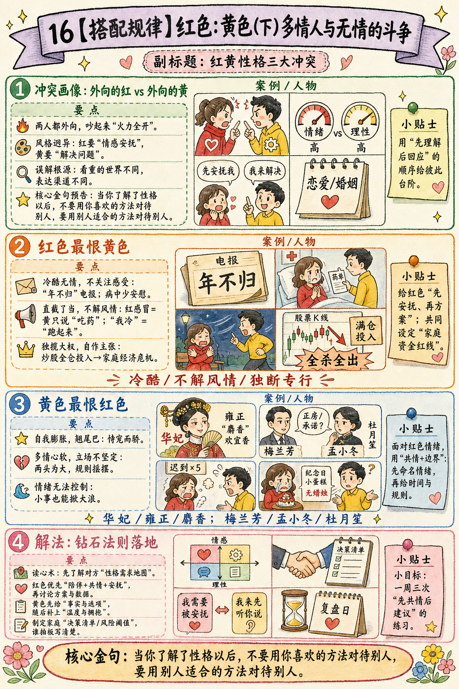
乐嘉讲述了红色与黄色性格在恋爱婚姻中的三大冲突。红色最恨黄色：冷酷无情不关注感受，如黄色爷爷过年只发电报“年不归”；直截了当不解风情，如红色感冒时黄色老公只说“吃药”，红色说冷时黄色让“跑起来”；独揽大权自作主张，如黄色老公炒股全仓投入导致家庭经济危机。黄色最恨红色：自我膨胀翘尾巴，如华妃恃宠而骄被雍正用麝香熏香算计；多情心软立场不坚定，如梅兰芳在孟小冬与另一老婆间含糊其辞；情绪无法控制，如红色老婆因店员迟到向黄色老公倾诉却引发争吵。
📖 全文解读（点开看全文）
性格色彩情感宝典，让你恋爱快乐，婚姻幸福。我是乐嘉，愿你用性格色彩的力量使你的生命更美好。 上一讲我们讲到红色性格和黄色性格组成搭配以后它们相互吸引的状况，这一讲我们讲红色和黄色在恋爱和婚姻当中发生的冲突。因为红色和黄色这两个都是外向型的性格，本来两个外向型的性格一旦发生冲突，谁都不肯掖着藏着，会非常的火爆，再加上红和黄他们是来自于两个完全不同世界的人。两个红色性格的冲突，多数是因为他们两个都无法控制自己的情绪，他们在吵架和冲突的模式上几乎一模一样；但是红和黄本身风格迥然相异，又不能够理解彼此的内心，一旦吵起来非常恐怖。 在情感当中，我们先来看红色性格最恨黄色性格的三大问题。第一，冷酷无情，不关注感受。黄色性格不关注感受，他们更加关注事情，当事情发生的时候，黄色性格会忽略对方的感受，直接去解决对方的问题，有的时候会给红色性格带来巨大的伤害。我有个学员，他爷爷奶奶吵了一辈子，就是因为一个是红色、一个是黄色。这个黄色性格的爷爷是一个工作狂，在外地工作，一年到头除了过年以外其他时间都不回家。大年三十，这个红色性格的奶奶跟全家人一起盼着爷爷回家，盼到最后一刻，盼来了一张电报，电报上只写了三个字"年不归"，意思就是今年过年不回来了。这个典型的黄色性格完全忽略了家人的感受，连多一句安慰的话都没有讲。你会说他为了省钱？我天地良心告诉你，肯定不是因为省钱，省不了几个钱，他外面一年打工赚的钱，电报多发几个字还是发得起的。对于重感情的红色性格来讲，对这一点是非常崩溃的；而黄色性格觉得"我努力工作、打拼，我把钱寄回到家里，我让你们过好的生活，这才是最实实在在的爱，整天说那些屁用没有的爱来爱去的甜言蜜语有啥用啊"。红色性格的老婆在生病的时候，她们渴望的是黄色性格的老公能够陪在病床旁边，手拉着手说知心的话、安慰她、让她不要害怕，黄色性格的老公虽然请了好的医生、让老婆住到很贵很贵的病房，但是却没有说任何安慰的话语，这一点对于红色性格的老婆是极其难以接受的。 黄色性格不关注对方的感受，还有一个重要的表现就是黄色性格的批判性太强了。有一个学员，他爸是红色性格，他妈是黄色性格，67岁的高龄还在那里闹离婚。两个人结婚几十年，结果红老爸喜欢打牌、喜欢抽烟、喜欢喝酒，黄老妈认为打牌丧志、抽烟伤身、喝酒乱性，为了警醒老爸、让老爸改掉这些习惯，每当老爸的牌友来家里打牌，这个黄老妈就会把桌子给掀掉，长期以来就没有牌友敢登门了；抽烟喝酒在家里绝对不被允许，这个红老爸怎么办呢，就偷偷跑到外面去抽烟喝酒。结果这个黄色老妈做了一件最绝的事儿，把这个老爸公司里面的几个老领导、老家伙都请到家里面来，做了一桌子饭菜款待这些人，当着这些人的面把这个老爸臭骂了一通，结果这个老爸爱面子彻底崩溃，那顿饭吃到最后吐都吐了出来。这个黄色性格，它原始的发心也许是好的，但下手忒狠了，把这个红色性格就给伤到了。 第二，黄色性格直截了当、不解风情，对红色性格来讲痛苦万分。我一个学员里面有一个红色性格的老婆，她非常爱她的黄色老公，但是红色的老婆觉得这个老公不解风情，让她非常无语。你比方说红色感冒，就给她老公打电话撒娇"老公啊，我感冒了"，结果黄老公就说"吃药"，红色就没话讲了。你再比方说两个人一起跑到公园里面散步，晚上有点小风吹过来，这个红色希望她老公抱抱自己，就说"老公啊，我冷"，黄色性格回答"跑啊，你跑起来就不冷了"。这个红老婆就觉得"你是不是不爱我？我感冒的时候你不会过来看看我吗？我冷的时候你不会过来抱抱我吗？"但这个老公心里面觉得感冒就要吃药、冷了就要想办法取暖，你给我提出一个问题，我帮你解决一个问题，我有错吗？黄色性格的大脑考虑的最多的就是解决问题、解决问题，而红色性格首先需要的是情感上的安抚、安抚、安抚。倒过来其实一样，有一个红色性格的老公，他特别想为他黄色性格的老婆做一些特别浪漫的事儿，但就像碰到石头一样。有一次他去外地出差，刚好那天是七夕节，晚上他一个人走在街上，看到漫天的烟花飞舞，就想起他老婆、打电话回家"老婆啊，我看到了好多的烟花"，他老婆说"你有事儿吗"，"没事儿，可我就是好想你"，"知道了，回来给我打个电话吧"，就把电话给挂了，他自己还沉醉在一个浪漫的氛围当中。当晚他在那条街上买了一套包装特别精美的化妆品，回到家里面以后送给他老婆，结果他老婆拿到这个礼品，第一句话就是"多少钱"，一秒钟之内他啥心情都没有了，本来还想两个人亲热亲热、好长时间没见，啥兴趣都没有了。所以你现在就知道了，这个不解风情，真的是会把很多情绪上的美好彻底给扑灭掉的。 第三，黄色性格独揽大权、自作主张。江湖上流行的一个笑话，我想你可能都已经听过，就是两个人对话，其实这个对话就是红色的老公和黄老婆之间发生的事儿："我家里大事我说了算，小事我老婆说了算。"旁边问："你家里什么小事儿？""哦，我们家应该住哪个城市、我应该找什么工作、我应该选什么房子、小孩儿哪个学校上学，这些都是小事儿。"别人就说："那你家大事儿是啥呢？""美国总统竞选谁赢、我们国家十九大以后的发展方向、粮价多少、环保政策、外交政策。"你看，这个红色性格的老公爱面子，所以他把黄色老婆大权独揽说成"小事儿说了算"，但实际上他说的事儿在家里屁用没有，一切家里都是黄色性格的老婆说了算。有一个红色性格的女性告诉我，她的黄色老公为了炒股票把家里搞得苦不堪言。这个黄色炒股的特点就是别人说什么不重要，我认为哪只值得买就买，当他觉得有一个股票有潜力的时候，就会把家里所有的资金全部投入，要干咱就干一票大的，风险大回报才大；当觉得股票不行了，全部赶紧撤出、全杀全出。一段时间以后，家里的钱全部被套牢在股票里面，全家人都埋怨那个黄色，但黄色坚信自己可以翻盘、情绪完全不受影响，红色一个人负担家里的开销、还要承受来自公婆的责怪，情绪压力大到崩溃。 刚才我们讲的三点，是红色性格最痛恨的黄色性格的十二个要点当中最常见的三个问题。接下来我们来看在互相碰撞的性格世界里，黄色性格最无法忍受红色性格的三大问题。第一，自我膨胀，容易得意，翘尾巴。关于这个特点，有一个成语形容特别好，叫恃宠而骄。在《甄嬛传》里面的华妃就是标准的红色性格。雍正专宠华妃很多年，华妃在后宫里面的专横跋扈大家都见到了，换句话来讲，只要敢跟我争宠的女人都得死，华妃在得宠的时候连皇后都不放在眼里。有一次在后宫大家集体赏花，皇后手里面拿了一朵粉红的牡丹，华妃就说"这牡丹花开得真是好啊，只是粉红一色终究是娇色，始终登不得大雅之堂，还不如这芍药，虽非花王，却是嫣红夺目，这才是大方的正色呢。粉红都是妾室所用，正红和嫣红才是正室所用，其实只要人年轻，戴什么花还要分颜色吗？"结果在场所有的嫔妃宫女都听出来华妃在讽刺这个皇后人老珠黄。华妃做了无数这样的事儿，在其他嫔妃面前显摆自己、树敌无数。这个黄色性格的雍正，你看他的思维模式就厉害了，他考虑到华妃的哥哥年羹尧手握兵权，所以在后宫当中一直偏袒着华妃，华妃以为雍正对自己的纵容是出于情感的爱，所以更加恣意妄为，但最后华妃被打入冷宫以后才知道，原来这么多年以来雍正赐给她专属的一种熏香"欢宜香"，香中有那个麝香，导致她无法生育。其实华妃的恃宠而骄早就已经犯了黄色性格的大忌，只是她自己知道得太晚了。 有一次在课堂上，我们讲到红色性格容易得意翘尾巴的时候，有一个黄色性格的女学员就讲她老公就是这个样子，工作能力相当不错，但每一次她老公开始吹嘘自己工作当中成绩的时候，都会有一点儿夸大和炫耀，她就忍不住本能想戳破对方。她老公说"今天我谈了一个两千万的客户，是我们部门成立以来最大的单子"，她说"你合同签了吗"，她老公当场就哑巴了，因为这事儿八字还没一撇，她老公刚刚有了一点儿苗头就开始吹，被她一句话问到关键，一旦被她指出问题以后，她老公就像一个膨胀的气球砰一下破了、情绪特别低落。当然这个话你可以倒过来说，你可以说红色性格特别恨黄色总是批判他、打击他、从来不鼓励他，但从黄色性格的角度来讲，就觉得你特别得意、特别喜欢炫耀，我就有必要叫你改变。所以这两种性格就会吵架、会打仗。所以很多人经常会来问我"我知道了他们性格的好和坏，我到底应该怎么办呢？我有什么样的方法可以改变这种现状呢？"在性格色彩的第一张专辑《读心术》里面，我就曾经提到过一个读心术，在这张专辑里面，等我把这20讲的性格碰撞的优点跟缺点聊完了以后，我会来跟你讲钻石法则在二人世界当中的运用。其实所有的秘诀只有一句话：当你了解了性格以后，不要用你喜欢的方法对待别人，要用别人适合的方法对待别人。这句话我讲了无数遍，但是有无数人听完了以后就觉得"这个故事好好玩儿"，其实你并没有仔细思考我这话告诉你的内在含义是什么——如果你不了解对方真正内心所想，你根本不知道如何用正确的方法对应他。而我现在所分析的这些，就是希望你能够明白不同性格的内心到底在想些什么、需要些什么。 第二，多情心软，立场不坚定。著名的京剧大师梅兰芳曾经有一个特别浪漫的恋情被拍成电影，梅兰芳的那个女朋友就是唱京剧老生的孟小冬。梅兰芳先生是红色性格，他唱旦角儿的时候比女人更加妩媚，而这个孟小冬是黄色性格，她特别擅长唱老生、比男人更加浑厚有力量，两个人在戏台子上合作情侣、现实当中擦出火花，结果两个人谈恋爱、最后结婚。但实际上在结婚的时候，梅兰芳已经在外面有另外一个老婆，他答应孟小冬让孟小冬也做正房、住在另外一处地方，两头为大。梅兰芳他娘后来走掉了，孟小冬上门祭拜，结果梅兰芳的另外一个老婆不让孟小冬进门，让下人们称呼她是"孟小姐"，孟小冬坚持要证明自己的身份，在这个最关键的时候，梅兰芳顾及到他另一个老婆的想法，没有挺身而出维护孟小冬，也没有兑现当初的诺言，而是含糊其辞地劝她离开。这一下子狠狠打击到了孟小冬的自尊心，她决意要离婚，当梅兰芳要给她分手费的时候，她说"你放心，我不要你的钱，我今后要么不唱戏，我再唱戏也不会比你差；我今后要么不嫁人，我再嫁人也绝不会比你差"，结果最后孟小冬真的嫁给了上海滩响当当的黑帮老大杜月笙。除了情感上有这个问题，在工作上面红色也有这个问题。有一对夫妻，小万和小霞，他们都是我的学员，小万是红色性格，白手起家，当时做了一家快递公司，打拼十多年以后做得很成功，这个老婆小霞是黄色性格，一直帮那个小万管家里的家务、带小孩儿，不断地推动这个红色性格的老公向更高、更快、更强的目标迈进。最近一年，因为小万的生意做大了以后，管理的杂事儿更多，小霞就进到公司担任副总，这回好了，两个人开始争吵不断。小霞就觉得小万手下有一帮老人倚老卖老、钱拿得很多事儿又没有年轻人干得那么用心，就执意要开除几个人、杀一儆百，小万顾及旧情、舍不得开除，小霞就问小万一个问题"你留这些人对公司有什么用"，小万就说不上来，在小霞有理有据的说服之下，小万就同意了开除。但是当小霞开除那几个人以后，没过一个月，那些人偷偷找到小万，哭诉当年的情感、一把鼻涕一把泪求小万不要抛弃他们，小万心软了以后把他们请回来，这回小霞不干了"明明说好的事情，就因为别人哭求你，你就反复了，你这不是破坏公司的原则吗？你这不是破坏我作为副总的权威吗？你这样的话公司到底还怎么经营、所有的人还怎么来办事情，大家就觉得规则出尔反尔，还怎么一门心思做事儿"，结果两个人把工作里面的矛盾带到了家庭，搞得家里面也是鸡犬不宁。 第三，情绪无法控制，身不由己。有一对夫妻要离婚了，他们一起在离婚前来上性格色彩的课，这个男生是黄色性格，这个女性是红色性格。男的最忍受不了女的，就是这个女孩儿的情绪特别容易受到小事的影响，因为一点屁大的事儿就不开心、搞得鸡犬不宁。两个人都是开店的，这个男的是开外贸礼品店，女的开服装店，相对来讲这个男生的经验更丰富、开店时间更长。有一天收工以后，这个女孩儿心情不好，就向男生倾诉，自己的店员一个月迟到五次、批评他还顶嘴，这个男的果断建议"那就把他炒掉"，女的就说"可人家工作很热情啊，炒掉了是不是不太好啊"，男的就说"热情的人多的是，炒掉了他你可以找到一个又热情又守时的"，女的还是"我觉得炒掉他不太好，他家里挺困难的，他爸妈都退休了，一个弟弟在上学，他很需要这份工作"，这个时候那个男的已经不耐烦了"你是老板，你想不想要这个人，你自己决定"，"那我不就是想跟你商量吗，你这么凶干嘛呀"。结果男的发现这个女的只是想跟自己倾诉情绪、根本不想解决问题，就压根儿不想跟她聊了，打开电脑干自己的活儿，"你听我说吗，你听不听吗"，"我很忙，你不要影响我做事情"，"你看你总是不关心我"，大战一场开始爆发。另外一些时候，这个红色性格的情绪控制不了，是因为你没有满足红色性格的心愿，红色也会发神经病。有一次这个男的和这个女的一起到泰国去度假，刚好那天是两个人结婚纪念日，女生心里面就一直期待着男生希望能够给自己一个惊喜，但特别不巧的是下午车子抛锚耽搁了几个小时，等他们回到酒店以后已经是半夜，酒店附近的餐厅全都关门了。结果这个男生说"那今天你生日，我们去买个蛋糕吧"，找了很久很久，在酒店顶层找到了一个卖甜点的柜台，买了一块儿小小的三角奶油蛋糕，女生说"我想买个蜡烛"，服务员说"有啊"，结果找了半天，这服务员也不靠谱，又说没有，女生只好捧着那个没有蜡烛的小蛋糕跟男生一起回到了酒店房间。当这个男的把房间的灯全都打开的时候，就看到这个女的泪流满面"这是我这一辈子度过的最倒霉的一个纪念日"，"你赶紧把蛋糕吃了吧，明天我请你吃顿好的行吗"，"明天就不是纪念日了，今天是纪念日，不吃算了，放冰箱吧"，"不行，纪念日"，这个时候男生已经觉得这个女生幼稚得不行了，根本就不想跟她讲话了，打开电脑又忙自己的事，结果这个女生就哭着说"你一点儿都不关心我"。 总体来讲，红色性格受不了黄色性格的冷酷无情、不解风情、独断专行，黄色性格也受不了红色性格的自我膨胀、立场不坚定、情绪波动。今天这一讲里面提到的红和黄相互嫌弃、讨厌、痛恨彼此的三大特点，其实只是在大千世界当中红黄冲突很小的三个缩影，在现实生活当中，红和黄会因为更多的性格的差异，展开更加激烈的纠纷、厮杀和冲突，而这些有待于未来你进一步地在线下研讨会来学习性格色彩。不知道你周围身边有没有感性的红色和理性的黄色两个人搭配组合，如果他们还不清楚彼此的性格，请你把今天这一讲内容分享给他们，也许可以帮助他们尽早地走进彼此的内心深处，预防有可能的情感变数冲突。在下一讲开始，我会讲一对全新的组合——充满了浪漫激情、想象力及人生无限追求的红色性格，和温吞不火、平静如水的绿色性格，这两种人有可能会相互吸引吗？一旦他们结合在一起会发生怎么样的故事，而他们的冲突会是如何呢？让我们下一讲再见分晓。
【搭配规律】红色:绿色(上)演员和观众总是相互需要的
1/1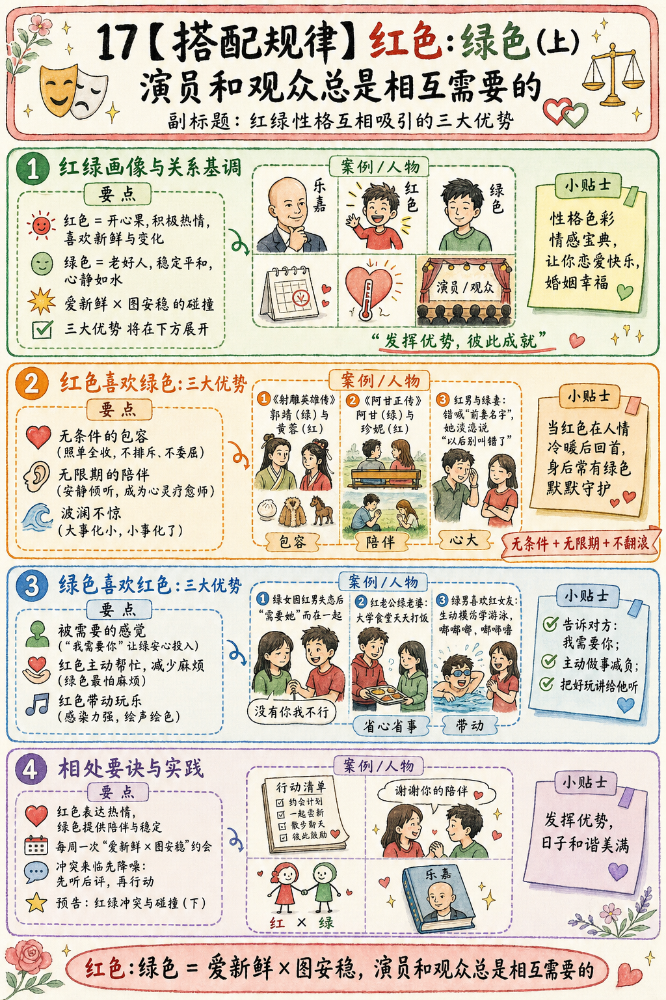
乐嘉讲解红色性格与绿色性格在情感中互相喜欢的三大优势。红色喜欢绿色：一是无条件的包容，以《射雕英雄传》郭靖（绿）与黄蓉（红）为例，郭靖对黄蓉的任性照单全收；二是无限期的陪伴，以电影《阿甘正传》阿甘（绿）与珍妮（红）为例，阿甘安静陪伴珍妮疗愈创伤；三是波澜不惊，一位红男讲述其绿妻在他错喊前妻名字时仅淡淡说“以后别叫错了”。绿色喜欢红色：一是被需要的感觉，一位绿女因红男失恋后需要她而在一起；二是红色主动帮忙减少麻烦，一对红老公绿老婆在大学时红男每天帮绿女打饭；三是红色带动绿色玩乐，一位绿男因红女友生动模仿游泳而喜欢她。
📖 全文解读（点开看全文）
性格色彩情感宝典，让你恋爱快乐，婚姻幸福。我是乐嘉，愿你用性格色彩的力量，使你的生命更美好。 嗨，大家好，今天这一讲我们来聊红色性格和绿色性格的搭配与碰撞。在四种性格里面，红色性格是众人心目当中的开心果，绿色性格是举世公认的老好人。在情感上面，红色性格积极热情，他们喜欢新鲜和变化，而绿色性格的特点是稳定并平稳，所以我把他们两个的搭配称为叫爱新鲜和图安稳的碰撞。在情感当中，红色和绿色彼此喜欢各自的优点有很多，我今天重点来谈他们分别喜欢对方的三大优势。 我们先来看红色到底喜欢绿色的什么。第一，我把它称为叫做无条件的包容。在金庸的《射雕英雄传》里面，有一对模范夫妻，就是郭靖和黄蓉，这两个就是标准的绿色和红色性格的搭配。你看，两个人刚刚开始见面的时候，黄蓉那丫头扮了一个乞丐，抢了店家的馒头，差点被别人给打了，郭靖帮她解了围、付了账，黄蓉却把那个馒头扔给狗去吃了。你想，如果郭靖换成是其他性格，好心好意帮你买了馒头，你却扔给狗吃，心里一定会很不爽，但那个绿色性格的估计愣了一下，也没咋介意，还招呼黄蓉一起吃饭，黄蓉也毫不客气，点了两大桌子山珍海味，都让那个郭靖最后买单，郭靖也不计较付掉。付掉以后，看到那个黄蓉在寒风当中龟缩着自己的小头，就把自己穿的那件裘皮大衣送给了她。最后黄蓉跟他分手的时候问"哎，你把你的那个汗血宝马给我骑吧"，她以为这么珍贵的宝马郭靖肯定舍不得给，没想到郭靖毫不犹豫就给了她。感动的黄蓉当场就喜欢上了郭靖。红色性格随心所欲，对方能够让着自己、宠着自己，不管自己怎么闹腾，在情感当中对方都可以包容。恰好这绿色性格其他方面的优点不一定很明显，但就在包容这一点上，有着其他所有性格都永远无法比拟的优势：天性当中心态平和，不管红色怎么任性，人家绿色性格是照单全收，而且内心里面也不排斥、不生气、不委屈。当这个红色性格在世间经历了人情冷暖、世间坎坷之后，蓦然回首、灯火阑珊处，发现身后还站着一个无条件可以满足自己所有要求的绿色性格，那不感动才怪。 红色喜欢绿色的第二大优点就是无限期的陪伴。在情感的表达方式上，红色会比较热情、主动，绿色比较被动，红色会主动地拉近两个人的距离，而绿色性格刚好会充当那个配合得很棒的角色。红色寂寞的时候、受伤的时候，这个绿色虽然特别简单、也没啥想法，但红色只要面对绿色，就可以把自己所有的心事像倒在垃圾桶里面一样全部喷涌而出，绿色好就好在也不会给红色什么主观的结论——"不对，不行，你错了，你怎么可以这样呢"——绿色一不批判、二不评论，反正就在那边听着红色所有倒出来的乐色。在我的上一张专辑《乐嘉性格色彩读心术》里面，我讲到在电影里面有个非常经典的绿色性格的人叫阿甘，他女朋友珍妮就是红色性格。两个人在很小的时候，阿甘在校车上面被同学歧视，没人愿意跟他坐在一起，那个珍妮红色性格乐于助人，就主动邀他一起坐。打那以后，两个人就玩儿在一起，红色的珍妮带动着绿色性格的阿甘一起看书、一起爬树、一起玩儿。有一天阿甘发现珍妮没来，就到她家里去找她，刚好发现她被她父亲性侵犯，阿甘当时比较单纯，也不知道这个举动意味着什么，珍妮后来拼死地跑出来，拉着阿甘一起冲到草地上面祷告的时候，阿甘就傻乎乎地在旁边陪着她。珍妮是一个特别早熟的孩子，因为被她父亲性侵犯，自己的心灵受到了特别重大的创伤，她特别喜欢阿甘，就是因为阿甘单纯被动、毫无攻击性，也永远不会让她担心受到伤害。当红色性格受到巨大的痛苦和心灵创伤的时候，很奇怪，它有的时候会把绿色当成自己的心灵导师，在绿色安静的陪伴当中慢慢地自我疗愈，而绿色性格在天性当中对于他人感受的那种呵护和关注，让绿色自己在不知不觉当中就极好地扮演了一个疗愈师的角色。 第三，红色性格觉得绿色性格的好处是对任何事都波澜不惊、心静如水。典型的红色性格，他们对朋友很仗义、很讲义气、很豪爽，但在情感关系当中经常莫名其妙地充当了添柴火棍儿的角色，因为红色情感需求很丰富，对小事儿特别敏感、容易小题大做，刚好绿色的好处是大事化小、小事化了。在工作里面，你会觉得他是一个没有原则性的人、是一个烂好人，但是在过日子的时候，绿色这种大事化小、小事化了的特点有特别大的好处，是居家必备之良品。有一个红色性格的男人结了两次婚，他怎么来描述他跟他绿色老婆的结婚呢："我以前在跟她结婚之前，我结过两次婚，我前面那两个都是红色性格，我自己特别喜欢自由，我最烦的就是出差的时候我女朋友给我打夺命连环call。我以前那个红色一旦打电话过来，我没接到，就会不停地打、不停地打、往死里打，搞得人没办法静下心来跟人谈事情，更过分的是打过来以后还要求我必须要视频通话，看我跟什么人在一起了，连卫生间都必须要拍照片给她看，确定没有其他的异性才可以。但我现在选择的这个老婆是大绿色、波澜不惊，别人打电话跟她讲'哎，你老公跟另外一个女人在逛街'，她的反应就是毫无反应。我跟她恋爱以后，我出差的时候就没接过她任何电话，有的时候我几个同事出差在给他们各自的女朋友、老婆打电话，就我一个人没事做，我自己还有点不习惯了，我会打电话给她。最让我感到佩服、惊叹、内心震撼的一次，有一次我在卫生间，忽然想起来我要一个什么东西，我就喊她'小丽，麻烦你给我拿个刮胡刀'，话刚刚说出口我就想死的心都有，因为'小丽'是我前妻的名字，我嘴巴一喊喊错了，可我这个绿色老婆听到了以后啥也没讲，就把刮胡刀拿给我，然后淡淡地说了一句'以后别叫错了'。我听到她说那句话，对她的宽宏大量我真的是五体投地，一辈子甘愿做牛做马。"所以红色性格刚刚谈恋爱的时候，他们喜欢和自己一样的干柴烈火、作天作地、拼命折腾的红色性格，因为觉得爱情的撕心裂肺、颠倒乾坤是那么的迷人，可是红色性格在情海当中打的滚儿多了、累了以后，却有可能被波澜不惊的绿色深深地吸引。 刚才我们讲的是红色喜欢绿色的地方，再倒过来，你知道绿色如果喜欢红色，是红色的什么东西吸引它呢？第一，绿色跟红色在一起的时候，他会觉得自己突然变成了一个重要的人，让自己有被需要的感觉。因为绿色是四种性格里面最不起眼儿、最容易被人忽略的一种性格，而在红色这边，突然觉得自己被需要了。我自己有个老同学，当时是校园里面第一校花，这个人的性情还特别温顺，典型的绿色性格，当时在我们学校和她齐名的另外几个校花毕业以后要么闯了一番事业、要么嫁给了豪门，只有她一个大学里面和同班同学谈了恋爱，毕业以后就结婚，平平淡淡过了半辈子。我当年研究性格的时候，有一次同学聚会，我就采访了她，问她为什么喜欢她老公——她老公没什么特别突出的地方，是一个典型的红色性格的男人。结果她就说："当时他和我们寝室里面的另外一个女同学谈恋爱，他被甩了，我们寝室的女生让我去给她送分手信，我送信过去的时候，他把那个信拆开来看了，看完以后就抱着头蹲下来，好像好痛苦的样子，我看他那么痛苦，也不好意思走开，所以就蹲下来陪他一起聊天，慢慢地缓解他的痛苦。后来他心情不好的时候、又想起那个女生的时候，他就打电话给我、跟我聊天，我好像觉得他挺需要我的，然后我们关系就越来越熟了。后来有一天他就跟我说'你做我女朋友吧，要是没有你，我都不知道心情不好的时候能找谁'，然后我就同意了。"你看刚才那段自白里面，你发现没有，这个绿色性格当有人向她不断地表达对于她的需求、需要她的时候，她根本就没有办法拒绝别人，而红色性格情感也丰富、也善于表达，他总是对绿色说"没有你我不行、我活不下去、我需要你"，绿色就自然而然地跟这个红色建立起来这种情感上的链接。你发现没有，这一招也很重要，就是告诉他"我需要你"。 第二条，红色性格可以主动帮助绿色，让绿色减少了好多的麻烦，因为绿色最怕麻烦。几个月以前，北京我们讲了一次课，刚好那次课我去旁听，看我们老师怎么讲。里面有一个同学刚好在分享，有一对红老公和绿老婆夫妻俩一起来听课，大家就起哄让他们分享当时怎么恋爱的，这个绿老婆就说了几句，其他的全部由红色老公在补充。他们俩也在大学校园里面认识，入学第一天，那个红色性格在食堂里面就看到那个长得很美的绿色一个人在吃饭，然后把自己的饭菜拿好，坐到这个绿色旁边，绿色就看了他一眼，这个男的就可怜巴巴地解释说"我一个人吃饭好孤单，我可以和你坐在一起吗同学"，这个绿色也没拒绝。以后每天红色都稍微早点到食堂帮那个绿色把饭菜拿好，两个人一起吃，绿色反正也无所谓、也不挑剔红色打什么饭，红色打什么绿色就吃什么，而且红色还会一边吃饭一边讲笑话，气氛也不冷场，绿色觉得省心省事儿，慢慢就成了习惯，后来偶尔发现有一次红色没出现，绿色还觉得少了点什么。红色性格最大的特点就是主动帮助别人，他对于自己喜欢的人、在意的人，恨不得给他喂饭、帮他打洗脚水，而恰好绿色性格最怕麻烦、最怕动脑筋，他发现有人主动帮他们的时候，也乐得接受，时间长了以后两个人相互依存，绿色接受红色的情感当然就变得很容易了。 第三点，绿色喜欢红色的地方你绝对想不到，那就是红色性格特别喜欢玩儿，它可以带动绿色性格。这个绿色很懒，看到电视里面播放的旅游风光，看了就等于去过了，可红色不一样，他看到一个东西，就能够绘声绘色地讲给别人来听，描绘得非常有感染力，对于那种不善言辞又乐于倾听的绿色性格来讲，这是一种莫大的享受。我们单位有个绿色的同事就告诉我，他之所以喜欢他的超级大红色的初恋女友，就是因为有一次同学聚会，那个红色的女生绘声绘色地告诉大家自己是怎么学游泳的，当她说教练教她换气的时候，她就说教练告诉她要像鱼在水里吐泡泡一样，然后她就表演这个鱼吐泡的动作，一边嘟嘟嘟、嘟嘟噜，摇头晃脑，特别Q、特别可爱。然后两个人恋爱啊，每当这个红色在外面看到一个特别好玩儿的东西，她就会模仿讲故事讲给绿色听，一个愿意当演员，一个天生就是好观众，当然两个人的情感越来越好了。 总而言之一句话，对于红色性格和绿色性格的搭配，如果两个人都发挥出来的是性格的优势，日子就特别和谐美满。可是不幸的消息是，如果两个人性格发挥的是彼此的局限性，那就会痛苦、磨难、隔阂。在下一讲，我会重点讲红色和绿色这两种性格在情感当中的冲突、麻烦和碰撞。如果你觉得本讲对你有所启发、能够帮到你的朋友的话，请你在节目下方留言评论并且转发。
【搭配规律】红色:绿色(下)要激情和图平淡的痛苦
1/1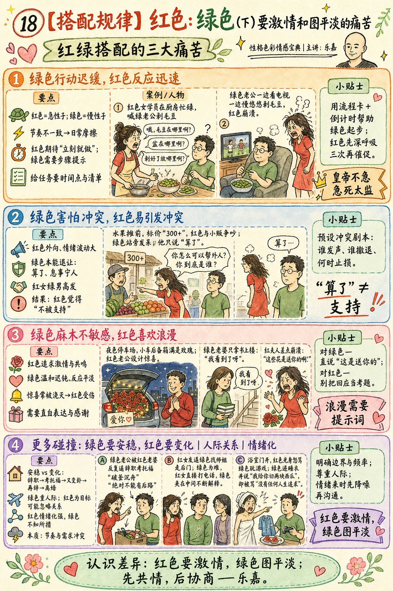
主讲人指出红色与绿色性格在情感中不合拍的三个主要原因。第一，绿色行动迟缓，红色反应迅速，举例红色女学员让绿色老公剥毛豆，老公慢悠悠看电视，红色崩溃。第二，绿色害怕冲突，红色易引发冲突，举例红女与水果小贩争吵，绿男只说“算了”，红女气愤离开。第三，绿色麻木不敏感，红色喜欢浪漫，举例红色老公准备后备箱玫瑰花，绿色老婆只拿书没反应。接着主讲人补充绿色要安稳、红色要变化，举例绿色老公被红色老婆反复折腾辞职考托福最终离婚。绿色在意人际关系，红色逼迫绿色破坏关系，举例红色女友让绿色找师姐走后门。红色情绪化让绿色不知所措，举例红色洗澡时光身骂绿色玩游戏，绿色拿睡衣和西瓜被骂。
📖 全文解读（点开看全文）
性格色彩情感宝典，让你恋爱快乐，婚姻幸福。我是乐嘉，愿你用性格色彩的力量，使你的生命更美好。 嗨，大家好，上一讲我们聊了红色和绿色这两种性格搭配组合在一起，他们彼此相互吸引、诱人和欢喜的地方。很多学友应该都很清楚，红色和绿色这两种性格在四种性格里面都是比较容易相处的颜色，当他们两个人成为情侣以后，应该没什么问题吧？但实际上红色跟绿色两个人在一起相处，也会有相当多的痛苦和麻烦。 今天我们来看一下在情感当中，绿色和红色如果不合拍，最重要的原因有可能是三个。第一，绿色性格行动迟缓，而红色性格反应迅速。我记得去年在跟乐嘉学演讲的课上，有一个五十多岁、很有激情和感染力的红色性格的女学员告诉我，她老公就是标准的绿色，对她老公的性子慢，她已经几乎绝望到要崩溃了。就最近一次，她在厨房里面风风火火忙着做饭，让她老公帮她剥毛豆，她老公的第一反应是"哦，毛豆在哪里啊？""毛豆就在那个架子下面的菜篮里面。"然后又问"哦，那盆在哪里啊？""盆在那个客厅桌子下面。""哦，那剥好了我放在哪里啊？"她强忍着内心想要骂人的冲动，很耐心地告诉老公："你拿着盆装好毛豆，拿到水龙头底下冲一冲，冲干净以后，再拿一个大碗到客厅里面去剥，剥好的毛豆放到碗里面，全部剥好以后把碗拿到厨房。"好不容易交代完了，这个红色性格的老婆开始热火朝天地东忙西忙起来。当她把所有的事儿全部忙完以后，那个毛豆还没有来，然后她就跑到客厅里面看了一眼，当场气得快昏倒：原来她老公悠哉悠哉在客厅里面坐着，一边剥毛豆一边看电视，拿起一根毛豆慢慢悠悠地在那里剥，眼睛还盯着电视。你说这么慢，还能指望他吃上饭吗？红色是急性子，绿色是慢性子，红色着急上火快崩溃的时候，绿色不紧不慢，绝对是皇帝不急急死太监，这句话说的就是绿色跟红色。 第二点，绿色性格害怕冲突，而红色性格又比较容易和别人引发冲突。红色性格比较外向，情绪也容易受到外界的影响，当红色性格情绪化的时候，就会特别容易跟别人冲突，他会很希望他的另一半为他挺身而出，而偏偏在这个关键时刻，绿色的男人非常容易退让、容易妥协、甚至委曲求全，这个时候红色性格就会觉得无比的委屈，对绿色性格就会有巨大的不满。这种情况高发性地出现在红女绿男身上。有一个绿色的学员就告诉我，当年他之所以被他红色的女朋友给甩掉，就是因为一件特别小的事儿：这个红女和绿男两人一起去买水果，红色在挑水果，小贩也帮着挑，红色没注意，等到水果挑好了一秤、一算价格要三百多块，红色这个时候才发现原来小贩帮她挑那个水果的时候放了几个特别贵的水果进去，然后这个红色性格就跟那个小贩儿吵了起来。绿色性格看到两个人吵起来以后，完全不知道该怎么办，站在一边儿发呆，过了一会儿，两个人越吵越愤怒、越吵越激烈，眼看快打起来了，绿色性格就对红色女朋友说了一句话"算了"，才刚说那两个字，红色性格这个女朋友就气得说"你怎么可以帮外人？你到底是谁？"然后红色非常气愤地离开，那个绿色性格也不敢走远，怯生生地就跟在这个红色女朋友后面，水果也没有买成。类似这样的事儿发生在买其他东西、停车、跟别人发生口角，但凡这个红色性格跟别人引发冲突，这个绿色的本能反应就是害怕冲突、息事宁人，红色觉得自己出事儿的时候完全没有一个人站出来为自己出头，她对绿色极其不满，认为这个绿色太窝囊、太废物了，最终导致两个人分道扬镳。 第三，绿色性格麻木不敏感，而红色性格又特别喜欢浪漫和激情。在谈恋爱的时候，红色性格的感受力特别强，他们也特别渴望和对方有强烈的情感共鸣，但绿色性格特别温和也不敏感，他们很难做到给红色性格那种特别强烈的呼应。像我们团队里面有一个红色性格的老师，他老婆就是绿色性格，他曾经跟我讲过一件让他特别沮丧的事儿：结婚纪念日，他早就做好了无比精心的准备安排，想给他老婆一个巨大的惊喜，当天晚上他开着车到楼下停好，在车子的后备箱有满满一箱的玫瑰花，他上楼以后就假装不经意地说"嗨，我有本书忘在后备箱了，你能不能帮我去拿下"，绿色性格就说"好的"，下去以后就把那本书拿上来交给老公，啥都没说。那个红色性格就特别惊讶"哎，你这本书是从我后备箱拿的吗？""对呀。""那你拿书的时候没有看到花吗？""我看到了呀。"红色就快崩溃了"你不知道这些花是送给你的吗？""哦，那你没说是送给我的呀。"红色性格当场像死的心都有了，因为这个绿色性格太过于木讷、麻木、不敏感、迟钝，让红色性格一生当中精心安排的无数浪漫都化为了泡影。 我刚才提到的三点就是红色性格跟绿色性格完全不合拍的原因。但是如果它们发生碰撞，也有很多原因，最有可能的我接下来也要分享几个，你来看看在你周围身边有没有这样的事儿。第一，绿色性格天性当中要的是安稳、安稳、安稳，而红色性格天性当中喜欢变化、变化、变化。很多年以前那个时候还没微博、只有博客，我在博客上就写过一个故事：有一个学员去相亲，回来以后告诉我他遇到了一个超级大绿色的男人，这个大绿色性格离过婚，他就很好奇，绿色性格脾气这么好怎么会离婚呢？然后就问他，绿色就问啥答啥，他就知道了这个事儿的来龙去脉。这个绿色性格的人的前妻是个大红色，两个人夫妻矛盾好几年，最后绿色实在受不了红色性格，提出离婚的时候绿色也没挽回，就这么离掉了。两个人结婚很多年没小孩儿，红色原来特别满足于过那个快乐的小日子，两个人生活本来还挺协调的，结果红色性格的这个女的跳槽去商学院工作以后，绿色就开始麻烦来了。红色认识了很多有理想、有抱负的人，这些商学院的人动不动就开口上市、闭口融资、动不动就并购，谈论的都是国家大事、指点江山，这红色性格特别羡慕，回头一看自己过的那小日子根本不值一提，回家就开始折腾，要求这个绿色的男人赶紧辞职、跟自己一起考托福出国。这个绿色性格的男人在跨国企业做了很多年，采购工作特别稳定，领导很认可，觉得他靠谱、让人放心，绿色性格很容易满足，他不想辞职，但结果红色老婆在家里一直闹腾着非要他辞不可。他就说"咱们能不能先不辞职啊，业余时间去学托福，等考上以后再说呗"，这个老婆就说"不行，这样的话你会没有动力，只有把自己的后路全部斩断、一心一意考托福才有可能考得上，你万一心里面还有后路呢？绝对不能有后路，要破釜沉舟"。绿色就没办法呀，被磨得不行的时候，找领导提出辞职，领导想挽留他，他因为答应了老婆没办法，就婉言谢绝了。没想到回家跟老婆一起报了托福，学了几个月，结果红色性格的老婆坚持不下去、不想学了，对他说"哎呀，其实出国也没啥意思，国外的月亮也不见得比国内的圆，我好多朋友都跟我说出国以后没有办法进入国外的主流社会，还不如留在国内混得好呢，算了吧，我们还是不要出了，你还是出去找份工作吧"，结果这个绿色的男人没办法，只好回到原单位、找到原领导，还是做了原来的职位，人家也很高兴他回来。可惜他没安稳多久，又过了半年他老婆想法又变了，跟他又讲"咱待在国内真的不行，等我们以后有了小孩儿，教育各方面还是国外比较好，而且现在雾霾这么多，待在国内以后一定会窒息而死的，为了我们还没有出世的孩子，我们还得必须不停地努力，你还是得把工作辞掉，咱们一起去考托福"，绿色快崩溃了，他试着拖延几天，因为绿色不敢跟他老婆吵，他就答应去辞职但是没行动，结果这个红色性格在家里面天天闹、晚上也不让他睡觉，说"如果你不辞职的话，你就别想过上清净日子，我们一定要走"，绿色没办法又去递了辞职信，这回人家领导生气了"你这人咋这么做事儿呢，来来去去，你当我这是菜场啊"，这个绿色被他老婆逼得没办法还是辞职了，跟他老婆又报了一个托福培训班。不幸的是你都可以猜得出来，他老婆的决心也没坚持多久，几个月以后又不出国了、要绿色再找工作，结果绿色原本安身立命的饭碗被砸掉了、人家单位肯定不接受啦，绿色也不知道该怎么办，红色发现这日子也过不下去了，结果红色老婆提出了离婚，绿色一看再过下去自己命要没了，就接受了离婚。所以绿色要安稳、红色要变化，在这种折腾里面，绿色是完全适应不了红色的节奏。 第二点，绿色性格特别在意人际关系，而红色性格在自我的感受里面待着的时候，他们完全会忽略他人。通常情况下，绿色对于伴侣的要求基本上都会尽量满足，但如果红色性格神经病上来了、情绪化上来了、非理性状态，他可能会逼迫绿色干一些事儿，其他事儿还好说绿色基本上会去办，但如果红色性格逼着绿色去干那些破坏人际关系的事儿，绿色基本上就会受不了。我们公司有一个绿色性格的实习生，他跟我讲他女朋友是一个红色性格，想当初两个人都没学过性格色彩，天天吵架，其实两个人相处得也不错，即便绿色的事儿让红色有的时候对他不满意，但红色不管怎么骂绿色，绿色也不还嘴、比较顺从，那红色的情绪化就过了，然后两个人就会和好，但基本上涉及到另外一些人的事儿，两个人矛盾很难调和。他们两个毕业的时候大家都找工作，这个绿色性格去读了研究生，红色想到一家大公司去面试，她就打听到这个绿色性格有一个师姐在她想去的那家公司工作，就让绿色朋友帮她通关系、走后门儿，这个绿色有点为难，但是迫于女朋友的压力还是去跟他师姐讲了。红色面试以后人家没要她，她又不甘心，又来找这个绿色，让绿色一定要去找师姐帮忙开开后门儿、看有没有什么门路，这回绿色就更加为难了，绿色在想"我第一次已经打过招呼了，如果我师姐能帮忙她当时就帮了，现在没通过那师姐肯定也没办法了，我再去找师姐的话那不是很为难她吗"，红色一看绿色犹犹豫豫就生气了"你到底是不是我男朋友，我有事儿你都不肯帮，又不是要你做什么见不得人的事儿，你连打个电话都不肯"，这个绿色性格还是有点犹豫，红色就把电话抢过来，在通讯本儿里面直接找到这个师姐的电话，打了电话把自己的要求说了一遍，把电话放下就走了，然后这个绿色性格就被夹在当中，反复给他师姐解释。当红色性格要去逼迫绿色性格做一些破坏人际关系的事情的时候，绿色不敢反抗，但是也会越来越逃避，然后两个人的情感就一点点淡了。 第三，红色性格的情绪化很强烈，让绿色性格有的时候不知所措。红色性格情绪化的时候，他最希望的事儿就是另一半儿可以哄哄自己，绿色愿意哄，但绿色的问题是他不知道该怎么哄。像我有一个绿色性格的学员就很无奈地跟我讲，她跟她红色性格的老公相处的时候特别困难。结婚以前，红色就把这个绿色当成天使、爱得不得了，捧在手心怕掉了、含在嘴里怕化了，结婚以后绿色失业了、找不到工作、闲在家里，红色经常会见这个事儿发那个大脾气，结果红色发脾气、绿色如果没有说出红色想听的话，红色的脾气就会更加吓人、更加猛烈、更加恐怖、难以收拾。有一天，红色性格在洗澡，洗到一半儿心情不爽，衣服都来不及穿，光着身子跑到卧室，那个绿色躺在床上玩手机游戏，他看到红色咣地身子跑进来就吓了一跳，红色就大声说"你多大的人了，你还玩游戏啊"，绿色被吓了一大跳、也不知道该说啥，就没吱声，这红色发现绿色没反应就更生气了，把这个绿色从失业到现在一直没找到工作、天天玩游戏全部骂了一遍，越骂越激动。绿色看到他这么激动，就想安抚一下这个红色，拿了件睡衣给这个红色"你赶紧把衣服穿上吧，我给你去切两块儿西瓜"，红色听了以后气得浑身发抖"吃吃吃，你就知道吃，你以为我跟你一样啊，没有任何人生追求啊"，把那个睡衣啪一下摔在地上，自己去柜子里面另外拿了一件穿上，气呼呼地跑到书房里去了。这个红色情绪化来的时候有点像神经病、莫名其妙，结果红色火冒三丈的时候，绿色傻迟钝、不知道发生了什么，他感到很困惑、很无助、不知道该怎么哄，结果红色气得要命，绿色也在那边蒙得要命。 好了，今天这一讲已经讲了快20分钟了。关于红色跟绿色的搭配，我只想讲一点：很多人认为两种脾气好、人际关系好的人不会吵架，那怎么可能？你不了解性格的差异，你就不知道性格冲突和碰撞的规律。在这张专辑里面，我的重点就希望能够通过剖析每种性格内心的需求，来告诉你彼此两个不同性格或者相同性格在一起，它会吸引点儿在哪里、排斥点在什么地方。关于性格的学习，一定要人和人面对面的交流、观察和对比，我在微课里面只能尽我所能地跟你来展现大千世界当中的一些现象，帮你开一扇小门儿。如果你听了今天这个讲座，觉得关于红绿配的搭配给你一些启发、或者能够帮到你周围的朋友，拜托各位听友不要吝啬给我一些答复，我有的时候看到评论、转发这么少，其实挺没动力的，你哪怕告诉我帮你解决了个什么问题、给我点动力，这样我会愿意讲得更多的。好了，我们下一讲再见。
【搭配规律】蓝色:蓝色(上)毋需言语的唯美精神恋爱
1/1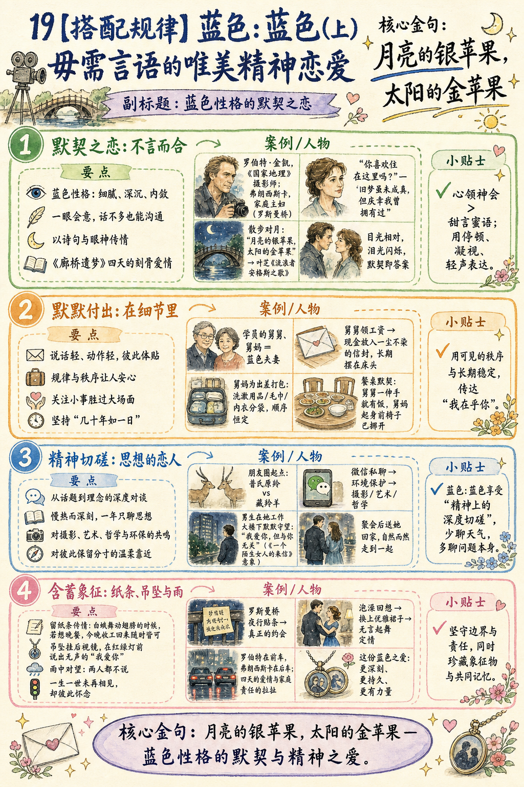
主讲人乐嘉以电影《廊桥遗梦》为例，说明两个蓝色性格的恋人如何通过含蓄的言语和举动传递情感，如罗伯特用诗句安慰弗朗西斯卡，两人散步时一人说上句另一人自然接出下句，以及弗朗西斯卡留纸条、罗伯特挂吊坠等默契行为。他还举了学员的舅舅舅妈这对蓝色夫妻的例子，舅妈几十年如一日将工资装进信封，舅舅出差时舅妈整齐打包行李，体现蓝色性格在小事上的默默付出。最后，他讲述一个蓝色性格小伙子通过朋友圈与一位同样蓝色的女孩从讨论藏羚羊开始，经历一年纯粹的思想交流后自然走到一起的故事，说明蓝色性格享受精神上的深度切磋。
📖 全文解读（点开看全文）
性格色彩情感宝典，让你恋爱快乐，婚姻幸福。我是乐嘉，愿你用性格色彩的力量，使你的生命更美好。 嗨，大家好，在性格色彩里面，你已经知道把人分成红、蓝、黄、绿四种性格，其中蓝色性格也许是相对而言最难以让人琢磨的，因为蓝色性格心思细腻、深沉，而且不太愿意轻易地把自己的想法和情绪表达出来，极其的内敛。当两个蓝色性格成为恋人或者夫妻以后，他们会发生怎么样的精彩故事呢？所以今天我就会为你揭晓两个蓝色性格是如何相互吸引的。 第一点，相互之间的默契。两个蓝色性格在一起，他们的话不需要太多，他们只要相互看着对方，就能够传递彼此的情感。在电影《廊桥遗梦》里面讲的就是两个蓝色性格恋爱的故事。罗伯特·金凯是《国家地理》杂志的摄影师，一个蓝色性格的、离婚的中年老男人，当他来到一个叫做罗斯曼桥的地方拍摄风景的时候，遇到了一个蓝色性格的家庭主妇弗朗西斯卡。这个时候弗朗西斯卡已经结婚很多年、有两个孩子，当罗伯特来的时候，她老公和孩子刚好不在家，两个人相处了四天，彼此感觉无比的默契，产生了刻骨铭心的爱情。 你比方讲，当罗伯特问弗朗西斯卡"你喜欢住在这里吗"，弗朗西斯卡说"这里很好，可是这里面没有少女时代我所梦想的"，罗伯特深深地凝视着她，说"那天我写了一些东西，我写的是那些旧梦，都是美梦，虽未成真，但庆幸我曾拥有过"，这种转弯儿抹角的、安慰人的方式，让弗朗西斯卡感到非常的受用，两个人目光对视，彼此的眼中闪烁着泪光。你再比方说，两个人一起去散步，罗伯特抬头看着月亮，说"月亮的银苹果，太阳的金苹果"，弗朗西斯卡马上接着说"哦，这是叶芝的诗《流浪者安格斯之歌》"。两个蓝色性格在一起，只要一个人说了上句，另一个人自然而然就接上去说了下句，这种心领神会的默契感对于恋人来讲太美妙了。 蓝色性格在情感的表达方式上是非常含蓄的。这两个人分别以后，弗朗西斯卡很想念罗伯特，所以在半夜的时候独自开车到罗斯曼桥，把一张纸条贴在桥头，纸条上面写着"白蛾舞动翅膀的时候，若想晚餐，今晚收工回来随时皆可"，结果罗伯特在拍摄的时候发现了这张字条，然后两个人相互试探着开始了一场真正的约会。两个人定情那一刻是拍摄完回到家里、洗完澡，弗朗西斯卡躺在罗伯特躺过的浴缸里面，一边泡澡一边想象着他的触摸和他的温度，洗完澡以后弗朗西斯卡默默地换上一条优雅的裙子，出现在罗伯特面前，然后不需要任何言语，罗伯特拉着弗朗西斯卡的手开始跳舞，两个人的身体逐渐地合二为一。 在影片最后，罗伯特含蓄地表示希望弗朗西斯卡跟自己一起离开，但是弗朗西斯卡考虑到她自己的老公和孩子，最后还是留了下来。当弗朗西斯卡坐在老公的车里面去镇上买东西的时候，刚好碰到了罗伯特，罗伯特站在瓢泼大雨当中，悲哀地看着弗朗西斯卡什么都没说，而弗朗西斯卡什么也没说、内心非常难过——这就是两个蓝色表达情感的方式，都不说。接着罗伯特开的车子在前面，弗朗西斯卡和老公的车在后面，到红绿灯的时候，罗伯特停下车，把弗朗西斯卡送给他的吊坠挂在那个后视镜上面，当弗朗西斯卡看到这个举动，知道罗伯特在给她传递爱的信息，心里面翻江倒海。这两个蓝色性格用默契的举动来交流的时候，那种强烈的情感也许比天天说"我爱你"的红色性格要深刻得多、持久得多、有力量得多、沉重得多。最后这两个人一生一世都没有再见面，但他们却用一生的时间来怀念彼此。这就是我讲的两个蓝色性格相互之间的默契。 第二，蓝色性格默默地为彼此付出。有一个学员告诉我，他在跟我学完性格色彩以后，发现他舅舅和他舅妈是一对蓝色性格的夫妻。在上课之前，他只知道这两个长辈是模范夫妻，但他不知道这两个人都是蓝色性格，所以才能够用这种润物细无声的方式去相处。每次他去他舅舅舅妈家，他就发现两个人说话都特别轻、轻言细语，话也很少——舅舅一伸手，舅妈就把饭给盛好了；舅妈一起身，舅舅就把挡在前面的椅子给挪开来。他学完性格色彩以后，和他舅舅舅妈长谈了一次，聊到最后，他让舅舅舅妈分别说一件对方让自己特别感动的事儿。结果舅妈说，每一次舅舅领完工资以后，都会把现金装在一个一尘不染的信封里面、摆在卧室的床头，几十年来无一间断；而舅舅讲的是，每次舅舅出差，舅妈一定会提前一天把箱子给整好，洗漱用品、毛巾、内衣装在不同的袋子里面、整整齐齐地放在箱子里面，连摆放的顺序几十年如一日都是一样的，这就让蓝色性格的舅舅非常受用。蓝色性格在意的往往并不是那些惊天动地的大事，而是那些日积月累的、在小事上的付出和对于细节的关注，而爱意其实就流淌在这些细节里面。 第三点是蓝色性格彼此思想上的相互切磋。很多年以前，我有一个邻居，是一个蓝色性格的小伙子，他搬家以后很久也没见到，前段时间刚好碰到了，他已经成家有小孩儿了，他的另一半也是一个蓝色，两个人原来是网友。后来我就说"那你给我讲讲呗你们的恋爱史"，刚好他们的恋爱证明了两个典型蓝色性格相互吸引的一种方式——两个思维无比缜密的人在思想上的交流，他们非常享受。这个蓝色性格的小伙子，有一天在看手机，发现他朋友圈里面的一个回复很有意思：他朋友刚从西藏回来，发了一张照片，写了一句话"哇哦，好美的藏羚羊哦"，结果在那个朋友圈下面有另外一个女孩儿的回复"这是普氏原羚（另外一种羚羊，很容易和藏羚羊搞混）"，他就觉得很有意思。他又点到那个女孩儿的朋友圈看了一看，这个女孩儿朋友圈发得很少，基本上都是自己拍摄的风景照片，没有什么个人的照片，字也配得非常稀少，看得出来也是一个专业摄影师，但每一张的取景都特别有意境。然后他想了半天，想起来这个女孩儿是他在一次聚会上面认识的，两个人因为有共同的朋友所以当时碰到一起，当时大家气氛很融洽，加了微信，但结束以后谁都没主动讲过话。然后这个小伙子就在自己的朋友圈里面发了一张自己两年前去西藏的时候拍摄的藏羚羊的照片，隔了一天以后，发现这个女孩儿在这个照片后面点了赞，然后他就给这个女孩儿发了微信，两个人开始了第一次正式的聊天儿，从藏羚羊开始聊，聊到环境保护，聊到野生动物，聊了很久，完全没有涉及到彼此的日常生活。这种纯粹的思想上的交流持续了大概一年时间，对他来讲，跟这个女孩儿的交流成为了一种精神上的寄托，他们的话题也慢慢地从环保转到摄影、艺术、哲学。他从朋友那里侧面了解到那个女孩儿的工作地点，在没告诉女孩儿的情况下，悄悄来到大楼下面，找了个隐蔽的场所，看着女孩儿下班儿走出大楼，对他来讲就有点像那个电影《一个陌生女人的来信》里面讲的那样——我爱你，但与你无关。但好在那个女孩儿也是一个蓝色性格、非常敏感很细腻，她察觉到了这个男人对她的情感，当他们共同认识的朋友过生日的时候，两个人不约而同地去参加了，聚会结束以后他送这个女孩儿回家，两个人自然而然就走在了一起。 所以我今天讲的三点：典型的两个蓝色性格追求相互之间的默契，他们喜欢默默地为彼此付出，他们在意思想上的深度交流和切磋，这是典型的两个蓝色性格相互吸引的核心根源。今天我讲的是两个蓝色的情感搭配当中它们发挥优势、如何相互吸引，在之后我会跟你来聊两个蓝色性格在一起的痛苦会出现在哪些方面。如果你周围刚好有两个蓝色性格在一起相处、情况跟我今天描述的有类似相像，请你及时分享给我；如果你自己在情感当中有痛苦和麻烦，欢迎给我留言，我会在后续的课程里面选择代表性的问题给予回答。我们下期节目再见。
【搭配规律】蓝色:蓝色(下)两个生闷气活活憋死的家伙
1/1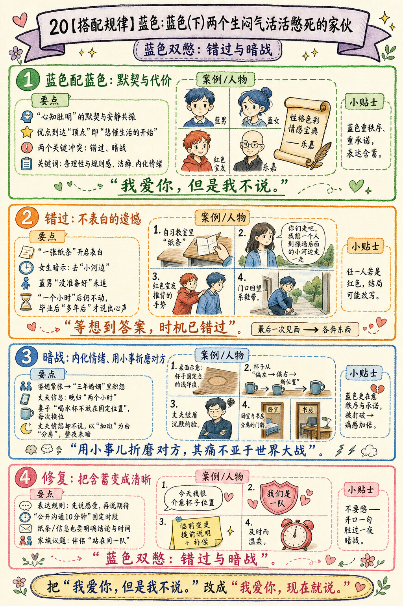
乐嘉讲述了两个蓝色性格恋人搭配的两种冲突。第一种是双方都不主动表白导致错过：一个蓝色男生暗恋同班蓝色女生，在室友帮助下递纸条后，女生故意说要去小河边，男生却因没准备好而没追，最终两人毕业各奔东西，多年后女生表示当时期待他追来，男生则说等想好已错过时机。第二种是情绪内化后用小事折磨对方：一个蓝色妻子因与婆婆关系不好，丈夫也对她不满，一次丈夫晚归后，妻子故意把喝水杯不放在固定位置，每次换位置，丈夫越来越愤怒但不说，最后以加班为由分房，两人整夜未睡。
📖 全文解读（点开看全文）
性格色彩情感宝典，让你恋爱快乐，婚姻幸福。我是乐嘉，愿你用性格色彩的力量，使你的生命更美好。 嗨，大家好，上一讲我聊的是两个蓝色性格的恋人，他们彼此的优点呈现、如何相互吸引，得到了一种完美默契、心知肚明——你啥都不用说、我啥都知道的一种至高无上的精神快感。这一讲我们来聊，当优势发挥到一个顶点的时候，也就是悲催生活的开始。 和以前一样，在情感里面，如果两个蓝色性格的人出现了问题，可能会有很多种冲突，今天我重点来聊其中最重要的两个方面。 第一种，两个蓝色性格在一起，他们啥都不说："我爱你，但是我不说。"这是一种特别朦胧而且又美好的意境，但如果在相识刚开始的时候谁也不去捅破这层窗户纸，很有可能就会跟对方失之交臂。有一个我们性格色彩学院的老师告诉我，他有个大学同学，典型的蓝色性格，心思比头发丝还要细。大家都是男生、住在一个寝室，里面有一个男同学洗脸的时候找不到自己的盆儿，就随手用了这个蓝色性格男生的盆儿，结果这个蓝色的同学好多天不跟大家讲话，大家都觉得这个人太奇怪了吧，就用你一个盆，犯得着吗？其实当你学完性格色彩，你就会知道，蓝色性格在天性当中有极强的条理性跟规则感，所以他们自己的东西自己会非常小心地保管好，有很多蓝色性格都是有洁癖的，一旦别人随意动用了他的东西，他会在心里面不舒服很长时间，而且这个蓝色性格又不愿意表达，他们又特别希望别人来读懂自己的心思，所以他不说、别人也猜不出来，别人越猜不出来他就越不说。当然，猜心是一件非常累的事情，自然而然就会影响到他跟其他人的人际关系。 后来这个寝室里面所有的男生都四处出去追女生，只有这个蓝色的男生没动，每天默默地在那儿写日记、不停地写，结果大家都很好奇，你说这小子到底有没有自己喜欢的女生呢？终于有一天忍不住了，一群红色的舍友把这个蓝色的男同学包围起来，几个小时逼问、一句一句地追问，逼到最后没办法了，这个蓝色不得不承认，他在默默地欣赏着一位班里的女生。这个女生长得很有气质，成绩也特别好，性格也是属于那种沉静内秀的，跟他是一种类型，也是一个蓝色性格。从此以后，寝室里面所有的男同学想尽方法制造机会，鼓励这个蓝色的男生向那个蓝色的女同学表白，但这个蓝色的男生打死也不说，一直到最后大家都快毕业了。 有一次上自习课的时候，这个蓝色的男生刚好坐在蓝色女生的后面，两个人大概隔了两排，有一个红色性格的男同学仗义出手，以蓝色男生的名义写了张字条，上面写着"我是某某某，我喜欢你很久了，我可以跟你约会吗"，然后把这个纸条塞给了这个蓝色的女生，偷偷告诉了这个蓝色的男生。当这个蓝色的男同学听到这个事情的时候，整个人都懵了，僵在这儿动不了了，结果就看见这个蓝色的女生收下纸条、看了以后，不紧不慢地继续做作业，像啥事儿都没发生一样，这个蓝色的男生也继续在自己的位置上没动。大概过了整整一个小时，和蓝色女生一起自习的同学打算走了，招呼这个蓝色女生一起走，结果这个蓝色女生轻轻地抬高了一点点音量，说"你们走吧，我想一个人到操场后面的小河边走一走"，说完以后她开始不紧不慢地收拾书本儿。这个时候，刚刚递纸条儿的那个红色男同学就急了，赶紧捅了一下他"人家都要走了，你还不追啊，过了这村儿就没这店儿了"。这个蓝色男生脸色凝重、双眼望着桌面，谁都不知道他在想什么。等到这个蓝色的女同学收拾好东西、慢慢地走向教室门口，当中还停下来两次：一次是蹲下来把自己已经系好的鞋带儿又系了一次，还有一次回头看了看自己自习的桌面、看还有没有什么东西落下来，眼角的余光像有意无意地扫过这个蓝色男生所在的位置。这个红色的男同学急得都快跳起来了，使劲在这个蓝色男生耳边催"快呀快呀，快去快去啊，不然人家真的要走了，走了走了走了"，这个蓝色的男生脸色越发沉重，就像便秘一样，但人依旧没动。最后这个蓝色女同学真的走了。 这个就是蓝男和蓝女此生最后一次见面，后来他们就毕业了，各奔东西。多年以后他们再见面，彼此都已经有家有口，不可能再在一起。这个蓝女就告诉蓝男，其实当时她心里很期待着对方能够追上来，或者悄悄地去操场后面的小河旁边等她；这个蓝男就告诉蓝女，他不是没有想过追上去或者悄悄去会面，只是当时他丝毫没有做好准备，他不知道如果和蓝女谈话该说什么，想啊想啊，等到他终于想到答案的时候，时机就已经错过了。典型蓝色性格在表达情感上无比含蓄，有的时候会给恋爱增加一层美感，但有的时候就会形成一种遗憾。你想想看，如果这个故事里面这两个人当中有任何一个人是红色性格，他们的结局和命运必将会被改写，怎么可能会允许两个人都憋在那边、谁都不先来表达、都等着对方来表达呢？ 两个蓝色性格在一起冲突的第二种情况，是因为两个人的情绪都无比内化，一旦发生冲突就不容易释怀，而且两个人都非常擅长用一些特别小的事儿来折磨对方。有一个蓝色的女学员告诉我，她跟她老公都是蓝色性格，原来是欣赏彼此的稳重、有内涵而结合在一起。结婚以后，因为这个媳妇儿和婆婆的关系不好，导致她蓝色性格的老公对她也很多不满意，因为这两个人都不愿意表达，所以很多积怨就藏在心里、越积越多。这个蓝色的老公有个弟弟，弟媳妇儿是个大红色，婆婆也是个大红色，每次妯娌两个人一起到婆婆家里面做客，这个红色的弟媳妇儿总是冲到婆婆面前又搂又抱，婆婆也像个小孩儿一样特别兴奋，就留着这个蓝色的媳妇儿在旁边站着、有点尴尬。三个人一起聊天的时候，这个红色性格的弟媳妇儿话也特别多，婆婆也喜欢跟这个弟媳妇儿聊，蓝色的媳妇儿只能在一边，除了陪着笑脸、啥话都没说。婆婆跟儿子单独相处的时候，总是会说"你老婆怎么见了我总是不讲话呀？你看你弟弟老婆人多好"，这个蓝色的儿子听了也不说什么，每次被他老妈抱怨完了，回到家里面见了他老婆，脸色也比较阴沉，这个蓝色老婆也感觉到了。所以后来每当她婆婆家里面有活动，这个蓝色的老婆就会说"你去吧，我有事儿，我下次再去"，蓝色老公也很清楚他老婆不喜欢自己老妈。 有一次家庭聚会参加完了以后，蓝老公给蓝老婆发了个信息，说自己会比预定时间晚两个小时回家。因为这两个蓝色性格都特别重视承诺和约定，所以像这种临时推迟预定好的回家时间，两个人在过去三年婚姻当中从来没有发生过。这个蓝色老婆收到信息以后，她知道老公可能又是听着家里面人说她的坏话、心情不好，需要独自去消化那个负面的情绪才能够挽回，老婆自己心里面也很难受。老公回到家里面以后，这个蓝老婆给蓝老公倒了一杯水，自己也拿了一杯水在喝，老婆喝完一口水，把杯子放在了桌子上面，却没放在原来的那个位置上。因为两个人都是蓝色性格，平时家里面非常整齐，老公对于喝水的杯子放在桌子上哪个位置都有非常严格的规定：不可以靠近桌子旁边以免不小心碰到，不可以靠近电脑的键盘以免水溅出来，而且要特别方便取用，因为长年累月杯子都放在同一个位置上，那个桌面那个地方其实是有一个特别浅的印痕的。如果是平时，这个蓝色的老婆一定会把那个杯子原封不动地放在那个位置上面、绝对不会出错，但这次老婆故意把杯子放在偏左面的位置，老婆看着老公的眉头锁了起来，心里面就有了一种报复的快感，然后再喝一口水，又把杯子放在了偏右的位置。这个老公非常难受，还是一句话也不说。然后老婆每次一口一口地喝水，每喝一次就把杯子放在一个新的位置，就是不把杯子放在准确的位置，这个老公就越来越愤怒、越来越愤怒，最后站起来就说"我今天晚上要在书房里面加班到很晚，你先睡吧"，结果一个通宵两个人没睡。当两个蓝色性格彼此有心结的时候，绝对不会像红色那样大吵大闹，甚至都不会说一句重话，但是这种暗战的痛苦，绝不亚于两个红色的世界大战。 好了，今天讲的是蓝色性格和蓝色性格的搭配可能会出现的问题和麻烦。如果你有很好的问题，欢迎给我留言。在接下来探讨搭配组合的时候，我们应该会聊到蓝色跟黄色的好和坏，按照我们节目的推进，应该是有十组的性格搭配组合，到现在为止基本上已经过了一半儿都多了。所以接下来除了性格的搭配组合"你们到底合不合"这个板块以外，关于婚姻和恋爱里面情感当中出现的一些困惑，你有任何问题都可以留言，我会再取一些大家共同关注的话题来进行统一回答的。让我们下一讲再见。
【搭配规律】蓝色:黄色(上)事业成功的完美搭档
1/1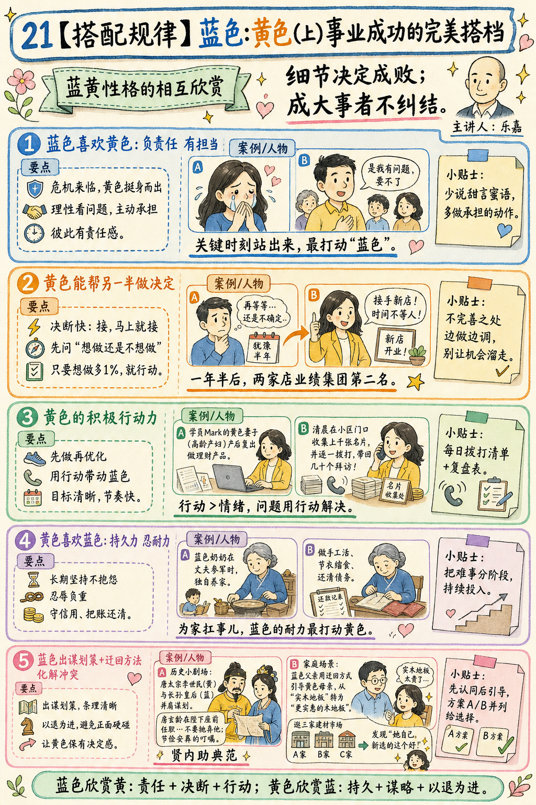
主讲人乐嘉介绍了蓝色和黄色性格在情感关系中相互欣赏的三个方面。蓝色喜欢黄色的负责任有担当，举例一位蓝色女性因丈夫在家人面前主动承担不育责任而感动；蓝色喜欢黄色能帮助做决定，举例一位蓝色男性在黄色妻子推动下接手新店并取得成功；蓝色喜欢黄色的积极行动力，举例蓝色男性Mark看到黄色妻子产后积极找工作的行动。黄色喜欢蓝色的持久力和忍耐力，举例蓝色奶奶在丈夫参军期间忍辱负重还债养家；黄色喜欢蓝色出谋划策，以唐太宗李世民和长孙皇后为例；黄色喜欢蓝色用迂回方法化解冲突，举例蓝色父亲用巧妙方式让黄色母亲接受更实惠的木地板选择。
📖 全文解读（点开看全文）
性格色彩情感宝典，让你恋爱快乐，婚姻幸福。我是乐嘉，愿你用性格色彩的力量，使你的生命更美好。 嗨，大家好，今天我们要来学的是，在所有的性格搭配碰撞里面，冲突最剧烈、最恐怖、最坚硬、最难以相互妥协的一对性格色彩，那就是蓝色和黄色的碰撞。对于蓝色来讲，他的座右铭是"细节决定成败"，而对于黄色性格来讲，他的座右铭叫"成大事者不纠结"。当这两种性格在做事儿的时候，如果发挥得好可以相辅相成，可是如果一旦起了冲突，就会两败俱伤、死得很惨烈。在情感关系里面，如果蓝色和黄色都发挥出来各自的优势，他们就可以相互理解，并且把爱情和家庭经营得非常美满。在正式聊到这两种性格是如何相杀之前，今天这一讲我们重点来聊他们是如何彼此相互欣赏的。 在两个人的情感互动里面，蓝色性格喜欢黄色性格的第一条：负责任、有担当。你已经知道，黄色性格看待问题的方式非常理性，当他们进入到一段关系以后，首先想到的是彼此应该承担的责任，在这一点上他们跟蓝色性格是很像的。也许黄色性格不会甜言蜜语，但是当危难的时候，他们会挺身而出，这一点对于蓝色性格是会让蓝色心动的。有一位蓝色性格的色友告诉我，由于她自己的原因她不想要孩子，在结婚以前她跟她黄色性格的老公就约定好了，但老公的家人其实搞不清楚，结婚很多年以后，黄色老公的家人问他们"你们为什么这么多年还没有孩子啊"，这个黄色老公一秒钟都不犹豫地告诉家人"是我有问题、要不了"，就那一瞬间，这个蓝色性格的心中翻江倒海，虽然她什么都没说，但从此以后对这个男人的爱加了很多分，因为在关键时刻黄色出手了。 蓝色喜欢黄色的第二个原因：黄色可以帮助另一半儿做决定。黄色性格比较擅长快速做决定，而蓝色做决定总是翻来覆去、想来想去、耗时比较长、延误战机。有一个蓝色性格的朋友，他做房地产中介做了很久、管其中的一家分店管得很不错，他老板问他要不要升级给他多管一家店，他说"我考虑一下"，结果一考虑就考虑了半年。原因是蓝色就想，如果我多管一家店，要分去一多半的精力和时间，他也不确定自己能不能胜任、也不知道能不能把这两家都做到最好，所以一直在计算、预测市场的走向、管理新店需要做的各种各样的计划和准备，他想等到万无一失的时候再接这个活儿。但这个时候他那个黄色的老婆毅然决然地告诉他"接，马上就接，时间不等人，你只需要问自己一个问题——想做还是不想做，哪怕是想做的心比不想做的心多1%，马上就做，不完善的地方我们做的过程可以慢慢调整，如果犹豫、等待机会流失，必将后悔莫及"。在他老婆的强烈推动下，加上之前他也考虑了很久，蓝色就终于接下了这个任务，经过一年半，结果他们两家店都打理得很好、销售业绩在全集团第二名。事后这个蓝色性格的男的就反思，如果不是他老婆黄色性格的推动，他很有可能就一直犹豫下去，最终市场行情变化了以后、老板有了其他人选，机会就真的错过了，非常可惜。 蓝色性格喜欢黄色性格的第三个原因：黄色能够用积极的行动来带动对方。你已经知道黄色性格行动力很强，这个让蓝色是很佩服的。我们中心的蓝色性格的学员有个叫Mark，娶了一个黄色的老婆，这个黄色的女子结婚比较晚，要生孩子的时候算得上高龄产妇，为了专门把小孩儿生好就把高薪工作辞掉、在家里待了三年，三年里面这个蓝老公独自支撑家庭的经济，嘴上没说但心里有点担忧。黄色的这个老婆生好孩子、等孩子上幼儿园了，就开始找工作，当这个蓝色的男人知道他这个黄老婆找到的是一份卖理财产品的工作的时候，内心感受特别复杂：一方面觉得老婆为了生孩子辞职、现在产后复出没有像以前工作的条件那么好、而且要抛头露面去卖个保险，感到很心疼；另一方面也很担心老婆没做过sales、没有资源那怎么办呢。可这个黄色老婆完全面无难色，确定工作后第二天起个早到小区门口就拿回来一堆名片——问那个打印店的老板要的，这些名片都是附近办公楼的公司在打印店打印过的名片，这个黄色老婆就拿着这上千张名片一圈儿一圈儿打电话，一天下来也有那么几十个人愿意接受她的登门拜访。他看到他老婆这么积极有效的行动，这个蓝色心里就觉得还是她有行动力呀，觉得自己非常庆幸——没给自己拖后腿、不给自己惹麻烦、没有情绪化指挥、想着行动解决问题。 那么倒过来，黄色性格喜欢蓝色性格的是什么呢？第一条，黄色喜欢蓝色的持久力和忍耐力。有一个学员跟我讲了他爷爷奶奶之间的故事。他爷爷是大黄色，结婚两年多以后参加了解放军，他那个蓝色的奶奶留在家乡伺候公婆，过了一年家里兄弟姊妹不和要分家，把财产分走了以后，留给奶奶的是一堆债、还有两个要养的老人。等到这个黄色性格的爷爷打仗胜利回来以后，发现这个蓝色性格的奶奶忍辱负重、以不可思议的耐力做手工活卖钱、省吃俭用养活了公婆、还把债给还清了，这一件事儿让这个黄色的男人记了一辈子，从此以后做牛做马、加倍地回报这个女人。 第二，蓝色性格可以帮助另一半儿出谋划策，这是蓝色的一个强项。蓝色思维条理性很强、有逻辑，对于想成大事的那个黄色性格来讲，绝对算是贤内助。你想，唐太宗李世民典型的黄色，他的长孙皇后就是蓝色性格、被称为历史上最为贤德的皇后。长孙皇后十三岁嫁给李世民，当时李世民只是个秦王，长孙皇后作为秦王妃跟在李世民身边、像谋士一样辅佐李世民打下江山。在历史上非常有名的玄武门之变、李世民发动的夺取皇位的战斗当中，李世民就带了长孙皇后一个女人在自己身边，可见对她的信任。在李世民继位十三天后就封她为皇后，在辅佐李世民二十二年以后长孙皇后过世了，临终前她还在为李世民谋划，说"房玄龄在陛下座前任职、小心谨慎，出了各种计谋、没一个漏算的，如果没有特别大的变故，希望陛下千万不要抛弃他"；她还说"自古圣贤都崇尚节俭朴素，只有无道君王才会起坟挖山，希望陛下找个山就把我埋了、不要费棺材、也不要放陪葬的器物，放些木头瓦片就可以了"。临死之前还想得这么深远、处处为李世民考虑，难怪死后李世民虽然宠幸了其他妃子，但也再也没有立皇后。 除了以上两点，黄色喜欢蓝色的第三个很重要的原因：蓝色性格有的时候会使用一些迂回的方法。黄色性格有主见，如果对方跟他对着干就很容易引发冲突，但蓝色往往能够用迂回的方法来搞定黄色、让黄色很享受。我们有个学员小丽，她爸是蓝色、她妈是黄色，家里面买了新房要装修，这个黄色的妈就说"方案我来定、你负责执行"，这个蓝色的老爸就说"好"。这个黄色老妈找了个设计公司选了一套方案，并且指定要某种木材的实木地板、价格非常昂贵，这个蓝色老爸拿着方案在市场上走了一圈儿，发现这个木材太贵了、而且和其他几种便宜的木材比起来使用起来没什么差别。这个蓝色老爸很了解黄色老妈，知道直接否定她、她肯定会反弹，所以回到家里面以后也没说这种木材不好，就说"这个木材我找不到"。黄妈立刻就跳了起来"怎么可能找不到，咱们这儿一共有三家最大型的建材市场我都找过了"，"找不到，但我找了两种更实惠的木材，你要不要考虑一下"，"我不要，我就要我选那个，要买就买最好的"，"那好，可能我年龄大了眼神儿不好，这三家建材市场的高档木地板我都看好位置了，去这三个地方逛一次大概一天不到，你能不能帮我一下、和我一起去找找看"，这个黄妈就同意了。然后蓝爸带着黄妈在高档木地板那儿转悠转悠，不经意地就把她带到自己事先选好的木地板前面，结果黄妈真的就发现有好几种跟她原来选的差不多、而且也符合她的审美观、价格还便宜，然后黄妈就告诉蓝爸"我新选的这个好、就要这个"，蓝爸说"好的，没问题"。结果新家搬进去以后黄妈就问"怎么样"，蓝爸就说"嗯，还是你选的好"。 在情感里面我们最后总结一下：蓝色性格喜欢黄色性格的负责任有担当、帮另一半儿做决定、用积极的行动来带动对方；而黄色性格喜欢蓝色的持久力忍耐力、出谋划策、用迂回的方法化解冲突。不过他们在情感当中的冲突，当你接下来听他们之间爆发致命的冲突、相互打起来时那种不妥协，你就知道会有多恐怖。我再重复一遍，在所有的性格搭配和冲突里面，黄和蓝的冲突最凶。我们下一讲再见。
【搭配规律】蓝色:黄色(下)原则与目标的永不妥协
1/1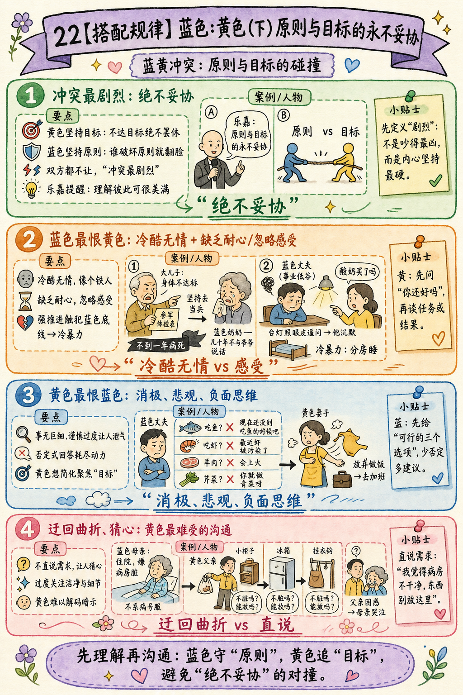
乐嘉指出蓝色和黄色性格冲突最剧烈，因为双方都绝不妥协：黄色坚持目标，蓝色坚持原则。他举例说明蓝色最恨黄色的冷酷无情：一位黄色爷爷坚持让身体不达标的大儿子去当兵锻炼，导致儿子病死，蓝色奶奶从此几十年不与爷爷说话。蓝色也恨黄色缺乏耐心、忽略感受：一位蓝色丈夫因事业低谷疲惫，回家后黄色妻子追问酸奶是否买了，蓝色沉默，妻子竟用台灯照他眼皮逼问，蓝色最终冷暴力分房睡。黄色则恨蓝色的消极负面：一位黄色妻子想做饭，问蓝色丈夫吃鱼、虾、羊肉、芹菜，每个都被否定，最后黄色放弃去加班。黄色也恨蓝色迂回曲折：一位蓝色母亲住院时嫌病房脏，不直接说，而是通过不系病号服、挑剔放食物位置暗示，黄色父亲无法理解，最终母亲哭泣。
📖 全文解读（点开看全文）
性格色彩情感宝典，让你恋爱快乐，婚姻幸福。我是乐嘉，愿你用性格色彩的力量，使你的生命更美好。 嗨，大家好，上一讲我们提到蓝色和黄色这两种性格，如果他们相互理解、相互欣赏，可以非常美满；但是如果相互误会、相互冲突，在所有的冲突里面，他们会是最艰难、最痛苦、碰撞最剧烈的。我为什么这么讲？下面我会用几个具体的例子来告诉你原因。但是我必须首先让你明白"冲突最剧烈"这两个字——"剧烈"这两个字不同的人定义不一样，我并不是说蓝色和黄色他们打起来的恐怖程度、疯狂程度是最有摧毁性的，因为红和黄打起来红色发神经病的样子前面我已经跟你讲过了，蓝色性格整体上是内敛的，他也不会叫、不会飙声音、比谁的嗓门儿大。但是因为这两种性格内心都太坚持了：黄色绝不妥协、不达目标绝不罢休，而蓝色也是绝不妥协、以原则性为准，谁破坏了我的原则我跟他没完，所以他们两个打起来，双方都不会让。 我们接下来看看在两人相处的时候，蓝色性格最恨黄色性格的是什么。第一，冷酷无情，像个铁人。有一个学员告诉我，他爷爷跟他奶奶在一生当中有一个坎儿是完全过不去的，奶奶恨他爷爷恨了一辈子。他爷爷当初是一个老干部，黄色性格，对下一代严格要求。当年家里面特别穷的时候，大儿子正在长身体，营养没有跟上，身体比较瘦，到了服兵役的时候，他大儿子其实身体是不达标的、可以不去服兵役的，但是他爷爷这个黄色性格坚持要让大儿子去当兵，理由是"年轻人吃点苦算什么，身体不好越应该去锻炼锻炼，练着练着身体就结实了"。结果他奶奶是蓝色性格，平时在家里面很少说话，家里面有什么事儿都让爷爷做主，但这次看到老大要去当兵，心里面特别担心、感觉会有意外，所以跟爷爷讲了很多道理，希望这个黄色性格的爷爷能够改变决定，但这个黄色性格无比坚持、一定要让老大去，然后这个奶奶就含着眼泪把儿子给送走了。不到一年，儿子在部队上得病就死掉了，消息传来，这个奶奶就五雷轰顶、欲哭无泪，从此以后再也没跟这个爷爷讲一句话。这个爷爷也知道自己做的决定有多错误，但是因为黄色性格、死不认错。我前面有一个章节特别已经讲了，跟黄色性格结婚务必你要知道的事情就是——他是永远不会错的。从此以后家里没人敢提这个事儿。那个儿子是我学员的大伯，他说因为这件事，老两口几十年以来每年讲的话不到十句话，你说这日子怎么过？ 第二条，黄色性格缺乏耐心，绝对地忽略他人的感受，这一条对于蓝色性格来讲是触犯了蓝色的底线。有个学员跟我谈到他跟他黄色性格前妻当年不懂性格色彩、没有学习以后的惨痛遭遇。在我们的进阶研讨会上他是这么跟我讲：他结婚以前很欣赏他黄色女朋友的干脆勇猛、能力极强，结婚以后一开始生活还挺顺利的，但是当他的事业在低谷的时候，黄色性格的老婆经常对他不谅解、总要不停地推动他，让他争取更多机会向上爬，让他觉得身心疲惫，久而久之回到家里就不想讲话，洗漱完了以后倒头就睡。有一天晚上到家很晚了，这个黄色性格老婆见到他第一句话就是"酸奶买了吗"——之前他老婆交代他下班以后去超市买个酸奶，其实他早已经买好了在包里面，但是被他老婆冷不丁地问这么一句"酸奶买了吗"，他心里觉得不舒服，就没有回答。这个黄色性格没等到他回答，就觉得很奇怪，盯着他问"我在问你话，你听到没有"，在蓝色性格的他看起来这一句话就是在审问，心里就更不爽了，就更不想说话了，然后他没说话，走到浴室里面、在黄色性格的面前把浴室的门关上、开始洗澡，洗完澡以后看都没看黄色性格一眼就回到卧室、躺在床上开始睡觉。其实黄色性格根本搞不懂蓝色到底在想什么，然后他直接就抓过一盏台灯照在这个蓝色性格脸上，两只手扒开蓝色的眼皮"不许睡，告诉我怎么回事儿"，就在那一刻，蓝色性格内心积压的悲伤、愤怒、痛苦、憎恶到达了顶点，不管这个黄色性格怎么问，蓝色性格依然咬紧牙关、一声不吭。黄色再折磨他，他腾的一下坐起来，拿了条被子跑到隔壁房间，门锁上，自己睡了，就再也不搭理他了。所以你现在发现吧，想让蓝色性格服软当然是不可能的，他会用冷暴力、不说话的方式来表达对你内心深处的痛恨、愤怒。 那么黄色性格恨蓝色性格是什么事儿呢？你听听就会觉得真的是这个世界上两种性格要死。第一条，消极、悲观、负面思维。从生活习惯来讲，黄色倾向于把一切事情都简化、把精力放在他自己认为重要的事情上，所以他很难接受蓝色性格的事无巨细、小心谨慎。你比方说，在我们上次的性格色彩卡牌课上，有一个黄色性格的女学员讲了她跟她蓝色老公平常怎么生活的：两个人平常工作都很忙，周末难得闲暇，这个黄色老婆就想亲自去厨房给老公做个饭，然后就问老公"你吃鱼吗"，"现在还没到吃鱼的时候吧"，"那你吃虾吗"，"电视里不是都说了吗，最近虾都被污染了"，"那你吃不吃羊肉啊"，"吃羊肉不会上火吗"，"那芹菜吧"，"有机芹菜绝对没害"，"难得你周末做个饭，你就做青菜呀"。黄色一听这回就火了，彻底不想做了，就跟她老公说"做什么都不满意，那我不做了，我去加班儿了"，就背着包自己一个人去公司，好好的一个周末，这个黄色性格在公司里面待了一天，这个蓝色性格在自己的家里面待了一天，两个人讲不下去了，没办法交流、没办法沟通、没办法对话。 除了这个负面思维以外，蓝色第二个让他非常痛苦的事情是蓝色说话太歪七歪八、迂回曲折，总要让他不停地猜心。有一个学员告诉我，他黄色的爸和蓝色的妈两个人退休了，本来应该老两口享享清福、颐养天年，但是他老爸经常不懂他妈在想什么，两个人都很痛苦。有一次老妈生病住院了，这个老爸就拎着吃的去看她，然后他老妈穿着个病号服、扣子没扣、敞开着，病房里面暖气也不足、这样敞开还有点冷。这个女儿是红色性格，看到老妈这个样子心里就打鼓"哎哟，老妈肯定有问题，不然她这么注重整洁、这么整齐的人，怎么会不系扣子呢"。但这个黄色性格老爸完全没有意识到发生什么，拿着一堆吃的就往那个病床旁边的小柜子一放，这个蓝色老妈就说"那儿能放吗？不脏吗"，黄色老爸一看不能放，就把吃的拿起来，正好病房里面有个冰箱，老爸把冰箱门儿一打开就把东西往里面一扔，老妈又说"冰箱里面干净吗？能放吗"，老爸想这儿也不能放、那儿也不能放，然后就把吃的拿出来拎起来，全部挂在病房里头的挂衣钩上，心想这个干净了吧，老妈又说"那儿能放？护士看到了不会说嘛"，这回老爸就愤怒了，盯着这个老妈"你到底想放哪儿？你说吧"，老妈叹了口气，结果就哭了。这个时候女儿已经看出来了，老妈是嫌病房脏、病号服她也觉得不干净，所以敞开着病号服，不管老爸把东西放在哪儿她都觉得不干净，只不过这个老妈是蓝色性格、说话也不直接、希望对方能够读懂自己，偏偏老爸是一个黄色性格、也搞不懂那么多拐弯抹角的暗示。 今天分别从黄色和蓝色痛恨对方的两个地方跟你来分享，当原则性和目标性在一起相互生活的时候，他们是如何相爱相杀的。总体来讲，在情感里面，蓝色特别恨黄色的冷酷无情、一意孤行、缺乏耐心，而黄色性格也非常恨蓝色的有话不讲、总要叫别人猜心、过于关注细节。如果你周围身边就有这样的伴侣、情侣，希望你能读懂他们的心思，假设你能够运用性格色彩、让你周围的蓝黄夫妻听一听今天这堂课对他们有帮助的话，你就会功德无量的。祝你好运，我们下一讲再见。
【婚姻】如何处理对方手机上的暧昧？
1/1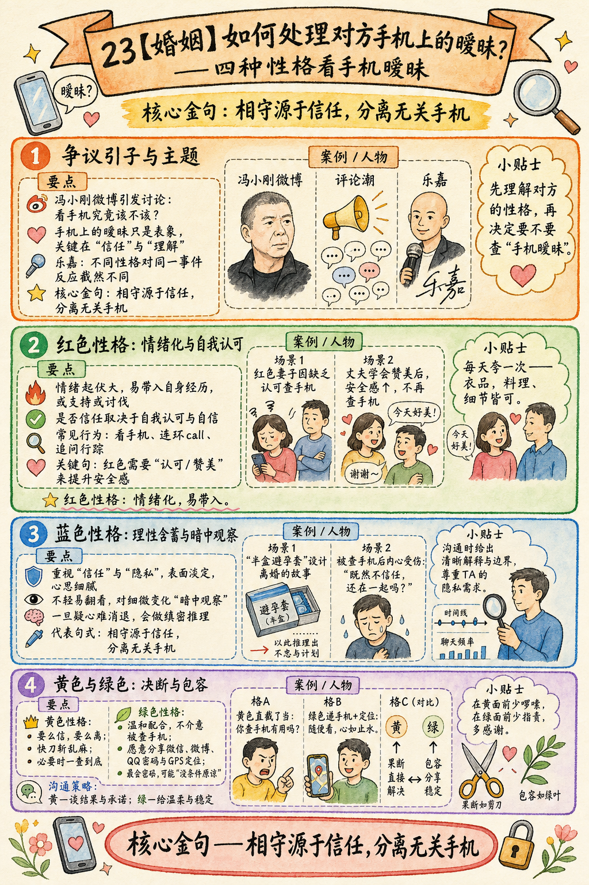
乐嘉以冯小刚微博引发的争议为例，讨论不同性格对手机暧昧消息的态度。红色性格情绪化，易带入自身经历，或支持或反对；蓝色性格理性含蓄，重视信任，会暗中观察；黄色性格直接果断，要么信要么离；绿色性格温和包容，不介意被查手机。他举例一个红色妻子因缺乏认可而查丈夫手机，丈夫学会赞美后妻子安全感提升，不再查手机。
📖 全文解读（点开看全文）
性格色彩情感宝典，让你恋爱快乐，婚姻幸福。我是乐嘉，愿你用性格色彩的力量，使你的生命更美好。 嗨，大家好，今天我们来聊聊：手机里面跳出了一条暧昧的消息，你会不会原谅对方？ 最近几天，网上传来一则消息，瞬间所有的人都在那里吵。冯小刚在网上发了一条微博，说有几个朋友一起去喝酒，有两个哥们儿就抱怨说他媳妇儿老是看他们手机，觉得特别烦。小刚大人就觉得，天下没几个人的手机经得起查，两口子过日子不能太较真儿，糊涂点儿两个人就白头到老了，最大的原则就是首先要稳定家庭的安定和团结，真相在现实生活当中没那么重要。这个事情最有意思的地方是网上评论和回复冯导的观点，里面有各种各样不同的看法，然后在现实生活里面我跟很多朋友也交流了这个问题，听了他们的观点，充分证明了不同性格对同样一件事情的看法完完全全不一样。大家在这个问题上的冲突、争吵、分歧、辩论，以及这种共鸣和认同，几乎无一例外都和性格有关。 那我们应该用什么样的方法把大千世界的这些言论进行一些分类和整理呢？如果你懂点性格色彩，你会发现在网上刚好有四种大的风格。 第一种人情绪非常激动，他们能够迅速地把别人的故事带入到自己的故事，要么就是大声地叫好"说得对"，要么张口就是讨伐。比方说"你说得太对了，我老婆太恐怖了，半夜我睡着了以后，她拿着我的手用我的指纹来开手机的锁，吓人了"；另一个讲"你自己心里有鬼吧，冯小刚，你劝天下的女人都糊涂一点儿过日子，我看最糊涂的就是你，我都为你们家徐帆感到悲哀"。虽然这两个人的观点完全不一样，但是从性格来讲，这两种人的回复通通都是属于红色性格。红色性格的特点就是情绪特别容易受到其他人的影响干扰，他们特别容易把自己带入到别人的故事里面，喜欢你也好、不喜欢你也好，他们都会强烈地、或者有的人会夸张地表露出来。所以我想强调的重点是，你的观点本身并不重要，但是你表达的方式将会直接显示出你的性格。 看手机、查老公老婆的行踪、夺命的连环call这种事儿同样是红色性格，但因为他们的成长经历和环境不一样，他们可能被触发的那个点会不一样、立场不同。如果这个红色性格的人他自己的条件比较优越、追他的人也特别多，内心有自信或者自负，他们通常会认为看对方手机就是对自己魅力毫无自信的表现，他们特别鄙视那些整天没有安全感粘着另一半儿的人，也会高举着"我要自由"的大旗痛诉那些用亲密关系来绑架另一半儿的人。可是如果这个红色性格从小就缺少被认可，内心总是担心自己不被别人喜欢、担心另一半儿对自己的爱没办法长久，那么这个人就有可能会变成那个成天到晚看着手机疑神疑鬼的人。总而言之，红色性格在情感关系里面是不是能够信任另一半儿，其实核心取决于红色性格在情感当中对自己的认可和对自己的信心是不是足够。所以你用这个标准去看，大凡在世间天天疑神疑鬼的人，很重要的一个共同的规律就是他们对自己其实没有足够的认可、没有足够的信心。 第二种类型的人，他们在表达自己观点的时候，通常是以观察者的角度很含蓄地来表达，表面上看像是这个事儿跟他没关系一样。你比方说"相守源于信任，分离无关手机"；再比方说"强行握在手中，这叫执着，摊开手掌依然不会溜走，这才是拥有"。这种性格的人想问题想得深、想得远，远远望去透露着一股忧郁的气息，对于和自己没关的事儿要么不做评论，即便评论也是非常抽象，你看不出来他们站在哪一边，更多的是一种思考——我们把这种人称为情感当中的蓝色性格。在看手机这种事情上，蓝色比较习惯于上纲上线，他看一个手机绝不仅仅是看手机本身的问题，他会顺藤摸瓜一直追下去，通常这会说明两个人之间的信任关系已经出现了极大的裂痕。典型的蓝色性格对于隐私非常非常在意，他们对于另一半儿的隐私是尊重的，但是并不代表蓝色性格是一个大条无所谓的人，事实上以蓝色天性当中的敏感，他根本不需要看手机，他已经从你回家时候的早晚变化、从你微信交流是否频繁还是已经减少、从你的爱好或者特别小的细微变化可以看出你的可疑之处，暗暗留心、对你细加侦查。假如说蓝色他自己被怀疑了、被查手机了、被翻东西了，他就会对所有的事情做出合理的说明，但是他的内心其实会受伤，他会认为"我们两个在一起是因为信任，既然已经不信任了，还需要在一起吗"。在过往这些年我用性格色彩解决婚姻和恋爱的问题里面，我听到的一个最让我过耳不忘的、极致的蓝色性格的案例，就是有一个蓝色性格的老公决定一定要跟他老婆离婚，他是怎么操作的？他故意在他包里面放了一盒还剩下一半儿的避孕套，因为他知道他那个典型红色性格的老婆一定会悄悄经常翻他的包，果然被他老婆找到了以后，他老婆就受不了了、大叫离婚，蓝色什么都没有解释、默默接受了这个建议，然后顺理成章地达成了他离婚的目标，厉害吧？所以蓝色性格在情感关系当中特别重视信任的感觉，但是他也容易去怀疑对方，一旦他产生了疑心，很不容易被打消掉。 第三种性格类型，他们在表达观点的时候通常是以最精简的字眼来表明自己的立场，或者根本就不去搭理这种事儿，因为在第三种类型看来，看手机这个事儿太简单，根本不值得花篇幅去谈论或者辩论，这种性格就是黄色性格。你比方说他如果在网上回复，他会讲"要么信，要么离"。这种黄色性格的人，他要么是不屑于去评论你，他如果要来评论，是以非常理性的态度来面对情感。对黄色性格来讲，天下没有情感的纠葛，也不存在什么抽刀断水水更流，因为对于黄色性格来讲，他天性当中就是快刀斩乱麻，即便有一天他真的要面对出轨的事情，他只会问自己一个问题"我还要不要跟这个人过"——我如果要过，就想办法继续过下去；如果不过，我就想办法赶紧解决掉。典型的黄色性格不喜欢啰嗦和废话，所以当另一半怀疑这个黄色的人、查这个黄色性格手机的时候，他就会直截了当问你"你查手机有用吗？你查不出来怎么办呢？"他潜台词想讲的是：有用，我手机就给你查；但如果你查不出来，你愿意承担这个后果吗？可是如果确实因为某种原因让另一半有所担心，黄色就会快速地给予承诺让对方安心，但如果这个老婆或老公一次又一次翻来覆去地查手机、查行程，黄色就会认为对方做得过头了，想办法会制止。同样，黄色也很少会去查另一半儿的手机，因为他认为有更重要的事儿去做，除非他发现对方有问题、为了取证必须要查，而且一定会一查到底。总而言之，黄色性格在情感当中不太容易去怀疑别人，但是一旦他起了疑心，就会彻查此事、绝对不会善罢甘休，不会因为哭哭啼啼而使得这个事儿就了断，他会要最终他想要的结果。 在四种性格里面，还有一种性格，他们无论发生什么事儿都没有特别大的情绪变动，既不愿意表达自己的观点，也不愿意表达自己的情绪，很多时候如果你一定要叫他回复，他经常就是"哦，很好啊，同意，不错"，或者把你的话再重复一遍，这种就是绿色性格——四种性格里面最温和的人。即便在打嘴仗上面很多人已经不可开交了，他们依然是与世无争、不加入战局、与我无关，反正这件事儿在生活当中他也心如止水、觉得没有什么大不了的。典型的绿色性格和他的情侣伴侣之间很少有信任危机，因为不管对方怎么样，绿色都很配合。什么叫配合？就是你在折腾，我就跟着你转；你的情绪起落，我就安抚你的情绪；你要查我的手机，我就把我的手机、微信、微博、QQ密码随便你查；到了朋友那边，你如果还不放心我，我就把我GPS的定位发给你。所以即便这个绿色性格的人的老公老婆是一个特别缺乏安全感的人，时间长了以后他就渐渐地安心下来，因为绿色的安全系数太高了，而且你折磨绿色也没什么意思、他也不会跟你反折磨。所以如果绿色的老公老婆和其他人开始有暧昧了，绿色是四种性格里面唯一一种真的有可能做到没条件原谅的。虽然有的时候红色性格也不记仇、会原谅对方的出轨，但是红色的情绪还是会有波动、哪一天说不定还会爆发冲动；但真正的绿色心态很平稳，无论发生什么事儿，他都是大事化小、小事化了，过去的事儿也没必要提，它是四种性格里面最会包容的一种人。所以如果你自己觉得你很有可能婚后会一直频繁地出轨，我建议你就找一个绿色的老公或者绿色的老婆——这个就是性格选择的奥秘。 所以呢，像看手机这样一个在情侣间常见的事儿，会炸出红、蓝、黄、绿四种不同性格的看法：有的人会觉得被别人看手机没有自由，有的人可能明明知道看手机屁用没有但还是忍不住要去偷看别人的手机。我想讲的是，手机的背后是跟彼此的信任有关，但是信任的核心在于理解，如果你真的能够读懂你另一半儿的所思所想、走到对方的内心，你根本不需要看手机、查行程，你也会知道对方的心在哪儿、在想些什么。而性格色彩这门简便实用、好操作的工具，就可以帮助你解决你在情感当中的一切困惑，因为你可以读懂你在乎的那个人。 在本期节目的最后，我给你举个实际的例子，来帮你如何运用性格色彩解决你现在的困惑。我有一个男学生，长得特别帅，是汤姆·克鲁斯、普京和都敏俊的合体，他老婆就是一个标准的大红色，特别怀疑他，经常这个帅哥跟朋友外出的时候，他老婆就打电话问在哪儿、还要跟他视频通话、让他的朋友一定要入镜，结果他特别在朋友面前没面子，两个人情感不错但相处的时候痛苦不堪。他学完性格色彩以后，在老师和同学的帮助下，他终于发现自己有一个问题，就是他跟他老婆相处的时候很少在嘴巴上认可和表扬他老婆，因为他总觉得夸人很不好意思，他更愿意跟对方开玩笑来表示亲密。你比方讲，他老婆烫了一个特别流行的卷发，他看到以后心里觉得挺好看的，可他嘴巴上就会说"哎哟，你怎么把钢丝球顶到脑袋上了"，其实他的本意就是跟他老婆调侃，但他老婆作为一个典型的红色性格，特别需要别人的表扬和认可，她听到她老公这种话以后内心就特别沮丧，时间长了以后，老婆就感到自己不被老公认可、特别没有自信，对她老公的爱就变成了控制和要求，想要时时刻刻把这个男人拽到自己身边、担心失去他。所以最后我们就给这个帅哥一个建议：你每天找到你老婆身上的一个亮点，你就去赞美它，衣服搭配得好看、饭做得好吃，随便你说啥，每天夸老婆一次。他坚持做了一段时间以后，他发现他老婆越来越开心了，不但再也不去查他的手机跟行程，还会经常跟他撒娇"切，你别整天老腻味着我，我还有自己的事儿要忙了"。所以对于红色性格来讲，你给他认可、赞美和鼓励，是让他特别有安全感的良药，当他有了安全感以后，他就不会来烦你了。 至于现在正在收听本集节目的听众，如何解决蓝色、黄色、绿色三种性格色彩有控制欲、查你手机的问题，都会有不同的相对应的方法，在这张专辑的后续内容当中我会陆陆续续讲到，希望在后面的学习里面你能够得到你要的答案。如果今天这一讲对你有所启发，或者你周围身边也刚好有朋友在情感问题当中困惑不堪，请你赶紧把这期内容转发到朋友圈、和你朋友一起来讨论，我欢迎你把你的感受和回馈写在评论里面，我会跟你互动的。
【恋爱】如何在分手后复合？
1/1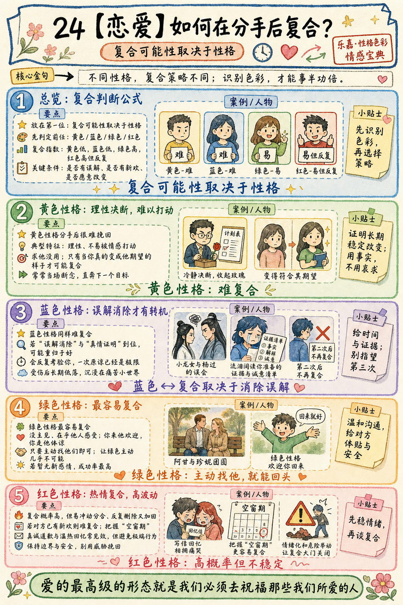
乐嘉指出，分手后复合的可能性首先取决于前任的性格。黄色性格分手后很难挽回，因为他们理性且不易被情感打动，除非对方变得符合其期望；蓝色性格同样难复合，但可能因误解消除而重归于好，且蓝色会反复考验对方。绿色性格最容易复合，因为他们没主见且在乎他人感受，只要主动找他们即可。红色性格复合概率高，但易冲动反复，若对方已有新欢则难复合。最后乐嘉强调，爱的最高形态是祝福对方，无论能否挽回。
📖 全文解读（点开看全文）
性格色彩情感宝典，让你恋爱快乐，婚姻幸福。我是乐嘉，愿你用性格色彩的力量，使你的生命更美好。 嘿，大家好，今天我们来谈谈你还有没有可能跟你的前妻、前夫复婚，或者跟前男友、前女友复合。前段时间薛之谦跟他前妻复合了，很多女生觉得自己的"老公"像死了一样、痛苦万分，当然也有人说哇、爱情太美好了。在过去人们就发现他们两个人其实是有复合可能的，因为他在演唱会上为前妻公开演唱她最喜欢听的歌儿，经常说分手的原因怪他自己，所以很多人都有一个预测。这个事儿出现了以后，网上就有人调侃"你们两个离婚了以后再结婚，这样在上海就可以有两套房子了"，这个是钻政策的空子，但是还是有很多人为他们祝福。 那么今天我们就重点来谈，如果你想跟你的前任复合，到底有没有可能？如果你经常听我的专辑的话，我想你应该会有一个答案，那就是在回答这个问题的时候，我标准答案的第一句话就是：到底有没有可能复合，首先取决于你前任的性格。如果你跟你的前任相处这么久还不知道他的性格的话，我劝你在听本讲之前先去听一听这张专辑最前面的四讲——四种性格的情感自画像，当你知道了你的前任最有可能的性格色彩以后，你再回过来听今天这一讲，你就可以知道到底你们两个人有没有复合的可能。 首先我想给你一个结论：在四种性格里面，分手以后很难复合的有两种颜色，一种是黄色，一种是蓝色。我们先来看第一种黄色性格。典型的黄色性格，当他决定要跟你在一起、在追你的时候会尽显他的浪漫，可如果他一旦得手了以后，他基本上就会收起那种浪漫的甜蜜劲儿，而且他会严格地要求你，希望你跟他一起不断地成长、变得强大、成为一个人生的强者。如果你们的感情出了问题，对黄色性格来讲，他的本能反应就是赶紧把两个人情感上乱七八糟的事儿给解决掉、继续向前看。最极端的案例是，在婚姻当中如果两个人当中的一个出轨而对方是黄色性格，黄色并不会轻易冲动地就做出一个"我要跟他分开"的决定，而是黄色会先问自己"我到底还要不要这段关系"，如果他想继续经营婚姻，即便内心受到伤害，他也会特别理性地做出一系列可以稳固婚姻的动作。你比方说当年希拉里在克林顿出轨以后的表现，当所有人都在千夫所指克林顿的时候，希拉里内心即便再痛苦，她还是毅然决然地站在了克林顿的身边，因为她知道保持婚姻的稳定、健康、有序的发展对于当下的她是最重要的。可是如果这个人犯了一个黄色性格认为根本没有办法原谅的错误，或者因为这个人始终吊儿郎当、无法在生命当中成长、跟不上黄色性格的步伐、又拒绝黄色性格提出来的改造建议，黄色一旦提出分手，要想挽回就会特别难，因为典型的黄色性格非常不容易被情感所打动，所以你哀求他"你想想我们两个人以前的好吧，你怎么能这么绝情，你不可以这么快，我离开你活不下去，我还是觉得你好"，反正不管你怎么说服或者哀求都没什么用。只有一种可能存在，就是你们分手以后过了很长时间，黄色性格觉得你真的有变化、真的比以前要好了、真的变成了他希望的那个样子，他才会有可能有重新追求的动力、想办法来复合。 在四种性格里面，同样复合难度很高的还有一种是蓝色性格。你看在金庸的小说《神雕侠侣》里面，小龙女就是标准的蓝色性格，当她全身心地准备投入一段情感和杨过过日子的时候，结果杨过说"姑姑，你做什么啊？我一直把你当成我姑姑来看待，我对你没有任何的非分之想"。事实是，因为小龙女被尹志平轻薄了以后、当时蒙着面纱以为那是杨过干的，现在小龙女又被杨过断然拒绝，当场小龙女口吐鲜血、伤心而去，后来被黄蓉一番大道理说通了以后心如死灰，从此再不与杨过来往，即便后来在绝情谷明知杨过就在现场，也断然不愿相认，直到最后杨过真情流露、两个人的误会解开了才冰释前嫌。可你要知道的是，蓝色性格的小龙女之所以愿意跟杨过复合，是因为他们两个人都有机会来消除掉误解，可如果这个误解消除不掉、杨过也得不到机会表白自己的真心，小龙女可能这辈子就待在绝情谷了，因为在他们分手的那一刻，蓝色性格内心持久燃烧的火焰一旦受到伤害，就已经暗淡无光了。 那你会问我，蓝色性格很难复合和黄色性格很难复合，这两种性格的差别是什么？到底谁的复合指数会更低？这个问题的答案是：第一，在分手的时候，黄色性格的前任通常只有激励起他主动寻找你复合的欲望、黄色才会来复合，而你去求他这件事情是没有结果的；但蓝色性格不一样，蓝色性格如果你发现你错了、重新去寻求他复合，蓝色的内心会心动，那是因为蓝色受到情感影响的概率比黄色要大，只不过蓝色会反复考验你几次，因为他觉得分手本身对他的伤害实在太大了，可是如果你分了一次、两次以后，你绝没有可能跟蓝色再复合第三次，因为对于蓝色来讲，他觉得原谅你一次已经是我最大的限度了。第二个差别是，黄色性格在分手以后基本上当场就断了念想、直冲下一个目标，但蓝色性格在情感痛苦的泥沼当中不能自拔，然后他把自己围在这个痛苦的小世界里面，就像小龙女在活死人墓里面一样，如果你去乞求复合，他会装作不理你、默默流泪，你必须拿出充分的证据、最后来证明他感受到你的真情实意，然后他才会慢慢一点点地容纳你。所以在这两种性格的对比里面，更难复合、会让你感觉到更绝情的肯定是黄色性格，因为黄色性格的特点是情起来以后情消失掉，通常是在瞬间完成的，就在那一瞬间当场顿悟，因为他马上脑子里面想的是下一个目标，他会认为情感只不过是人生当中的一场游戏罢了，还有更重要的事情要完成。所以为什么在第一张专辑《性格色彩读心术》和这张专辑前面的部分，我翻来覆去地强调，一个人是否受到情感的影响对这个人的性格是至关重要的。 好啦，你现在已经知道了，想要跟黄色和蓝色这两种性格复合，在理论上来讲是最难的。可是如果你的前任是一个绿色性格，难度却非常低，因为绿色没什么主见和原则——你来找他，欢迎你；你撒手而去，他为你收拾行囊。在绿色性格看起来，两个人在一起相互作伴儿没问题，两个人分手各过各的也没问题，反正都是过、怎么样都行。而且绿色特别在意他人的感受，他们很替别人着想，你离开了他，他会想"你是不是有什么无奈的理由啊，我又帮不上忙，那就这样吧"；而如果你回来了，他又会想"大概他遇到什么难处了吧，回来就好，这说明他起码还是很在乎我的"，反正绿色性格总能找出来一套说辞来自己安慰自己。最典型的案例就是《阿甘正传》里面的阿甘，他有一个青梅竹马的女朋友叫珍妮，小的时候阿甘就特别喜欢珍妮，但珍妮不喜欢阿甘、觉得这个绿色性格的阿甘特别没劲，而且因为这个女孩儿长期受到她爹的虐待、性格是有问题的，长大了以后自甘堕落、吸毒喝酒、和一帮嬉皮士鬼混，后来和阿甘相处了特别短的一段日子以后就跑掉了。这个绿色性格的阿甘看到珍妮把他甩下跑掉也不生气，叹了口气、该做啥做啥。很多年以后珍妮又找到了阿甘、请求复合，阿甘二话没说就同意了，对过去这个女孩儿撒手而去也不介意，因为绿色性格能够理解到别人内心的痛苦、很在乎别人的感受，既然别人主动选择跟我在一起、而我自己又没有家人，我为什么要拒绝他呢？所以如果你的前任是绿色性格、而他目前还没有新的情感，那么你们两个人复合的可能性几乎最高，前提是你要去主动找他，因为你想让绿色主动那是不可能的。 最后让我们来讲讲红色性格，到底和红色性格的前任复合容易不容易？在全天下所有的人里面，红色从来就是当下生气，当他们一冲动就嚷嚷着要分手离婚"老子不相往来，滚，不想见你了，你烦死人了，我恨死你了，走开"，然后把联系方式统统给删掉，可然后马上又后悔、主动又跑过去加对方微信、跟对方道歉，然后再删、再复合、再删、再复合。即便是对方有了新的人、对方提出分手，红色性格也是最容易忘掉仇恨、原谅别人的人。我认识一对小两口，结了三次、离了两次，现在还在一起，他们也没啥第三者，每次都是因为特别屁大的事儿吵到离婚，每次离婚以后就开始想念对方的好、又复合。所以有很多红色性格的情侣一分手，过段时间其中一方就用手写信、网络回忆两个人在一起的各种各样的幸福，另一个人一激动一流泪，约在郊外小树林见面、抱头痛哭、互诉衷肠，或者跑到宾馆里面云雨一番、大战三百回合，很快两个人又复合了。可是你千万不要以为你红色性格的前任就吃这一套，如果这个红色性格的人那个时候已经有了另外一个相好的，你再去跟他复合，概率也会很低，因为当红色性格沉浸在一段情感的时候，他可以把过去的那个情感给忘却掉，所以你最好祈求你自己回去找他复合的时候，他那个时候刚好是空窗期。我的一个朋友跟我讲了一个她自己惊魂未定的情感，她跟她男朋友是别人介绍的，这个男朋友看起来特别柔弱，相处不到一年她就疯了，因为她男朋友24小时监控她，她说不行、分手，没想到提出分手以后，那个男生的情绪特别激动、拿了把刀直接冲到她家里面要求复合，"如果你不复合，就拿刀直接割脉"，吓得她赶紧报警、让家人和邻居都不得安生。其实这个女生和男生都是大红色性格，男生没法控制自己情绪化，本来是想表达"你看我多爱你啊，为了你我身体发肤都可以不要"，但实际达到的效果是这个红色女生感到特别的害怕、想彻底逃离掉这段关系，从而让两个人复合的可能永远关闭了。 所以在节目最后我最想说的是，爱的最高级的形态就是我们必须去祝福那些我们所爱的人，如果你真的非常爱他，不管他最后和谁在一起，你都要祝他幸福。如果你能挽回，当然好了；如果你无法挽回，请选择放手、祝福他，然后你自己慢慢上路，去找到属于你自己的幸福。我也祝你在性格色彩当中得到解决所有情感困惑的能量，最终寻找到自己的幸福。
【婚姻】如何让不同性格戒掉网瘾?
1/1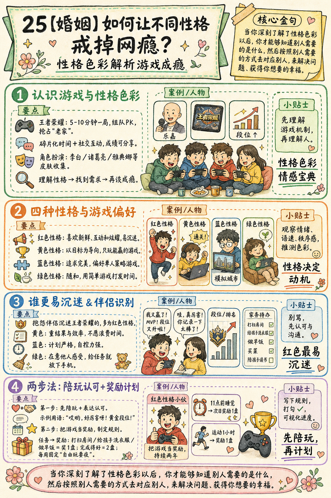
主讲人乐嘉以王者荣耀为例，分析不同性格色彩的人对游戏的态度。红色性格喜欢新鲜、互动和炫耀，易沉迷；黄色性格以目标为导向，只玩能赢的游戏；蓝色性格追求完美，偏好单人策略游戏；绿色性格随和，玩简单游戏打发时间。他举例大学寝室四种性格学生的游戏行为，并指出抱怨伴侣沉迷王者荣耀的，对方多为红色性格。最后分享一个红色性格小伙用游戏作为奖励戒瘾的案例，建议先陪玩认可，再制定奖励计划，让游戏成为完成任务的激励。
📖 全文解读（点开看全文）
性格色彩情感宝典，让你恋爱快乐，婚姻幸福。我是乐嘉，愿你用性格色彩的力量，使你的生命更美好。 嗨，大家好，今天我们来聊王者荣耀背后的性格故事。作为一名不打手游的落伍分子，最近我被关于王者荣耀的投诉给包围了，因为很多人说她老公或老婆喜欢打王者荣耀，下了班儿躺在床上一打就几个小时，孩子也不管、家务也不做，怎么骂都没用，连晚上做爱的激情都没有，啥都不肯干，该怎么办？怎么让他戒掉王者荣耀这个像鸦片一样的游戏呢？为了了解，我就在手机上面下载了一个王者荣耀，然后找人了解了一下，看看这个游戏到底是搞什么。玩儿了以后才发现，原来说白了就是你和网络上随机组成的三四个人组队，和另外一组同样人数的人互相PK，谁先占领了别人的老家、或者哪一队逼得对方先投降了，你就赢了，队里面每个人都可以得分，基本上打一局也就五到十分钟。每个人在作战的时候还可以选择自己的角色，什么李白、诸葛亮、钟馗、雅典娜等等，所有的名人随便你扮演。这个游戏受欢迎，网上的说法是这个游戏好玩儿倒是其次，最重要的是占据了大家碎片化的时间——以前这些时间你就刷个微博、看个视频，现在这么短时间可以打个游戏，扮演各种角色、跟别人分享自己的战绩、还可以认识很多新朋友，所以王者荣耀其实变成了一个社交工具，让很多人在玩游戏的时候享受那种互动的快感。 当你了解了这个游戏到底是什么，你大概就可以来思考，为什么你老公或老婆会痴迷于王者荣耀这个游戏，而不是痴迷于其他游戏。那么怎么样让已经中了这个游戏鸦片毒的老公老婆不再痴迷呢？在我讨论这个问题以前，你必须要了解一个很重要的问题：什么性格色彩的人会痴迷于网络游戏、甚至会拉着自己的家人一起玩儿，而什么性格的老公老婆完全不会痴迷、甚至会对打游戏这个事儿嗤之以鼻、也绝对禁止自己的小孩儿去打游戏。当你了解了不同性格对游戏的态度以后，你就可以明白你周围身边那些喜欢玩游戏的人到底想要什么，以及怎么样帮助他们解决困惑。 我给你举个例子。在大学寝室里面有四个大学生，这四个人性格完全不一样。第一个人喜欢在下课以后打游戏，有的时候会废寝忘食，他们在游戏世界里面找到了人生的全部意义，还有世界上最美妙的体验，他们涉猎很广、什么好玩儿的游戏都愿意尝试。你经常看到的一个情景就是，在联机打游戏的时候他取得了好成绩，一激动就手舞足蹈，甚至会请整个宿舍里面的人喝饮料、分享自己的喜悦；可如果他今天打游戏被他的猪队友给坑了，他就在那里大喊大叫骂人，恨不得把自己的键盘和鼠标全部都砸掉；而如果他打完一整天的游戏，他可能还会躺在自己的床上哀叹"哎呀，今天这一天我好像啥都没干，不行，这样下去我人生就毁掉了，明天开始一定要好好学习，坚决一玩儿游戏也不打"，可第二天你醒来以后发现这家伙还是继续在打游戏。这种类型的人就是性格色彩里面典型的红色性格，他们喜怒形于色，很喜欢让快乐、新鲜的事物充斥着自己的人生，只不过有的时候自我控制能力不够，很多时候会说话不算数。 寝室里面第二种性格的大学生，这个人不光学习很刻苦，还经常当个班长、社团主席，雷厉风行，除了睡觉很少见到他在寝室里面玩儿，你也几乎见不到他玩儿游戏，因为对这种人而言，玩儿游戏不但不能帮助他取得好成绩、得到什么好处，还会耽误他的人生奋斗目标。但有一种情况下他会去玩儿，那就是如果你跟他说"这个游戏太难玩儿了，玩儿了两个小时我都过不了关，我觉得世界上根本没人可以过这一关"，他就蹭地跳起来"什么不可能，我来试"，如果他撸起袖子把这个游戏给打赢了，他就会说"看到没有，太笨了"；但如果他打输了，他绝对不会承认是自己的实力问题，要么说"今天太累了、状态不好"，要么说"这个游戏本身设计有问题"，反正坚决不会承认是自己的实力不够。这种类型的人以目标跟结果为导向，非常清楚地知道自己想要的是什么，不愿意浪费时间在无聊的事情上，如果他玩游戏，就一定希望能够取得赢、赢、赢，这就是典型的黄色性格，对他来讲赢本身比快乐重要一百万倍，他的人生格言就是不停地奋斗、让自己成长、追求实际的结果，并且愿意去挑战别人做不到的事儿，这样可以让别人感觉自己无比强大。不过他性格里面最大的问题之一，就是他不愿意承认自己有软弱的地方，也不愿意承认自己的过错和失败。 除了红色跟黄色，第三种类型的学生，你会发现他每天斯斯文文、不苟言笑、不咋说话，戴个眼镜像柯南一样，床铺、桌子都非常干净，有的时候连钱包里面的人民币都要喷点消毒液在手上。你跟这种人玩游戏，他们不太愿意玩儿那些跟别人有互动的游戏，你经常见到的就是他们在玩儿一些跟脑洞有关的游戏，什么密室逃脱、数独。我听说蓝色性格特别喜欢的一款游戏叫《模拟城市》，你自己当个市长，从整个城市的商业区、居民区、工业区的布局怎么安排，到地下管道的铺设和其他城市之间的经济政策，方方面面都要考虑到，如果其他性格的人看到了这个游戏就觉得好麻烦、好枯燥，但第三种性格的人看到了以后乐在其中——与其说他在玩儿一款游戏，不如说他们在借机展现自己追求完美的能力，当他们按照自己的原则和设想构建一个属于自己的世界的时候，他们内心里面才是最舒服的，这个就是典型的蓝色性格，他们希望这个世界上所有事物的摆放、事情发展都按照计划规律来运行，并且按照自己脑子里面的组织能力，把原来混乱的东西全部按照规则给码好——不管是在游戏当中还是现实当中，追求完美是他们认为永远必须要做的事儿。 在这个寝室里面还有最后一种性格的大学生，平常很温和，好像只要不上课、也没有朋友叫他出去的时候，一个人闷在寝室里面吃泡面、看电视剧，活得都很开心，你让他去帮忙买饭他就帮忙买饭，你让他陪你打游戏他就陪你打游戏，反正你叫他干啥他是顺从的陪伴类型的人，这就是典型的绿色性格，他们为别人着想、不愿意拒绝别人，对生活的品质要求也不咋高。如果你翻看他的手机，就会发现他手机里面都是一些什么种菜的小游戏，等一个小时收获一颗菜，你可能觉得这个游戏好无聊，你会劝他"你充点钱呀，充点钱你十分钟就能收获一颗菜啊"，可对绿色性格来讲，玩儿其他游戏好累呀、玩儿这样的游戏好轻松、还不用怎么动手，为啥要充钱呀？充钱也要等、不充钱也要等，我现在不充钱玩儿我就觉得很好啊、很满足啊，干嘛要再去换花样了，没必要。 所以如果此刻正在收听本集节目的你，在过去从来没有深入接触过性格色彩，我刚才用的是一个非常简单的打游戏的心态和行为表现，向你勾勒出来大千世界当中不同性格打游戏的人最大的一些核心差别。如果你是一位男同胞，你可以大概推测出来自己偏向于哪一类性格；如果你是一个女同胞，你也可以从日常的观察里面推测出来你男朋友、你老公是什么性格。那么现在问题来了，那些经常抱怨自己的老公老婆痴迷于王者荣耀、什么家务活都不干的人们，请问你的这个伴侣到底是哪种性格呢？到底是谁最愿意沉浸在游戏当中不能自拔呢？如果你听懂了上面的四种反应，答案就非常明了——他们几乎无一例外都是红色性格。 我刚才已经讲了，典型的黄色性格的人在事业上非常打拼，绝对不愿意浪费时间在打游戏这种毫无意义的事情上，除非他要去搞定的客户很喜欢打游戏、他为了搞定业务目标可能会陪客户去玩儿，但他绝对不会在你面前痴迷于打游戏。而蓝色性格的老公虽然会玩游戏，但在喜欢王者荣耀这件事儿上也不存在，主要原因是：第一，王者荣耀的互动性太强，但蓝色性格更喜欢一个人干事儿、不愿意参与一种和一大群陌生人去玩耍交流的游戏；还有一点，蓝色性格每天的计划性非常强、很有自控能力，几点到几点工作、几点到几点看书、几点到几点休息控制得非常精确，而且执行力很强，他不会允许自己纵容自己、完全去放任。而绿色性格的人，如果你不在家，他为了打发时间可能在床上会玩儿一天游戏，但你给他布置了一个明确简单的任务，跟他说"扫地、剁个老母鸡、陪孩子玩儿"，绿色性格的老公为了在乎你的感受会放下手机去做这些事儿，而如果你严令禁止他在你面前玩儿游戏，绿色是四种性格里面最乖乖听话的人。所以如果你经常抱怨自己的老公老婆痴迷于王者荣耀、怎么骂都不管用，可以肯定你所抱怨的老公老婆一定不是绿色性格。那么排除掉四种性格当中的三种，答案现在很明了：在四种性格里面，最痴迷于像王者荣耀这种手游不能自拔的非红色性格莫属。因为这款游戏充分利用了红色性格的内心：红色喜欢结交新朋友，这个游戏可以让他们跟一群陌生人组团；红色喜欢新鲜事物，这个游戏可以选择人物的皮肤、满足了他们的收集欲望；而且王者荣耀还有排位的设置，可以充分满足红色性格喜欢炫耀和别人对比的心理特点，当他们靠自己的努力上了很高的排名，就成了其他人眼中大神级的人物、满足了内心深处的虚荣心。所以如果你们家老公正在打王者荣耀、好几个小时不停，请你记住，他只是在争取一个好的排名、然后有机会可以向别人来展示罢了。 现在我已经给你详细分析了不同性格对于游戏的心理特点和心理需求，那么接下来我要来帮你解决问题。当你学会性格色彩以后，你会知道，性格色彩最重要的功能就是理解他人，并且通过最有效的、跟这种性格沟通的方式来达成你的目标。我接下来跟你分享一个成功从游戏瘾当中逃脱出来的红色性格小伙子。这个男生小时候他爹也是个红色性格，跟他一起打小霸王学习机，不到四岁这小伙子就通关了魂斗罗，初中的时候有了自己的电脑，高考以前一个月还在打网游，现在他家里面除了手机和电脑，还有各种游戏机、掌上游戏机，还有最新的VR游戏机，啥都有。我就问他"你买那么多游戏机，你每天能玩儿多少"，当时好多游戏机都在角落里面扔着，他每天玩儿大概一个小时不到。他说以前痴迷于网游的时候可以从早上六点玩到晚上十二点，然后睡一觉继续玩儿，但现在他不怎么玩儿了，他有一个特别棒的方法，那就是把游戏当成奖励来对待——简单来讲，就是明确给自己规定，如果今天自己运动了一个小时，就可以奖励自己玩儿一盘游戏；如果今天在十一点以前睡觉，第二天早上起来可以奖励自己一盘游戏。他用各种各样的方法设定了一个规则，这个习惯他保持了两年，两年下来他发现他没有痴迷于游戏的罪恶感，相反，因为他特别喜欢玩游戏，他在游戏的诱惑和勾引之下主动完成了很多很有意义的事儿。 所以鉴于以上这个案例，我来给各位支一招、帮你马上解决问题。这一招分为两步。第一步，你要先主动陪他打王者荣耀，这是关键，因为红色性格的人特别需要互动和认可，如果你在旁边不停地骂，他当然不开心，可如果你主动跟他聊这个游戏、并且经常问他一些问题、给他赞美，你说"嘿，你操纵的这个人物谁啊？哎哟，你居然能打败那个人家，好厉害呀！你现在段位都是黄金段了，我们单位里边同事最多也就是个白银，哎哟老公啊老婆真太棒了"，这些话听起来像个脑残粉，但对于红色性格的老公老婆来讲美味无穷，既可以彰显自己的能力、又增加无穷的自信心，还可以满足他喜欢跟人分享交流的需求。第一步做完了以后，还可以做第二步：交流几天以后、他对你完全没有戒心的时候，你就可以给他一个奖励计划，只要他做完某件具体的事儿——比方说打扫了房间、给孩子洗了衣服、做了早饭、把你们该做的事儿给完成了——你就赏给他玩儿一盘王者荣耀、而且陪他打，如果完成得好，就奖他两盘儿，然后规定每个礼拜几的晚上有一个特殊指标，你可以不用做任何事儿、尽情打游戏。时间长了以后，你就会发现一个非常奇特的情况：他不仅不再生气了，连他自己也会觉得自己很安全，他玩儿游戏的权利没有被你抹杀，而且他不光玩儿了游戏，还帮家里面人做了事儿、又没有内疚感，跟你的关系又特别亲密。 所以如果你想帮助别人戒除掉网游瘾，是有方法的。最后我要特别讲的是，玩儿王者荣耀就跟游泳、打牌、爬山一样，它其实就是一种休闲娱乐的方式，只要你不沉迷于其中、不给别人造成麻烦，其实无所谓，你应该尊重你老公或者老婆娱乐的权利。但是当他沉溺痴迷其中不能自拔的时候，你要去帮助他，因为他可能在外面的世界得不到足够的快乐和认可、自我价值感极低，所以才无奈沉溺于游戏来寻找自我的价值和快乐、慢慢地跟现实生活越来越远，如果你再继续骂他，他就会跟你形同陌路；可是如果你走进他、给他足够多的关注和认可、给他鼓励、跟他一起来寻找那些让他快乐的事情、让他每天都活得特别有意义和快乐，他怎么还会痴迷于游戏呢？所以我今天讲的这些内容不仅仅适用于婚恋关系，对于天底下那些在自己的孩子沉溺于游戏上面非常痛苦的父母们，其实原理都是一样的。当你深刻了解了性格色彩以后，你才能够知道别人需要的是什么，然后按照别人需要的方式去对应别人，来解决问题、获得你想要的幸福。我们下期节目再见。
【恋爱】好的靠谱，坏的诱人，怎么选？
1/1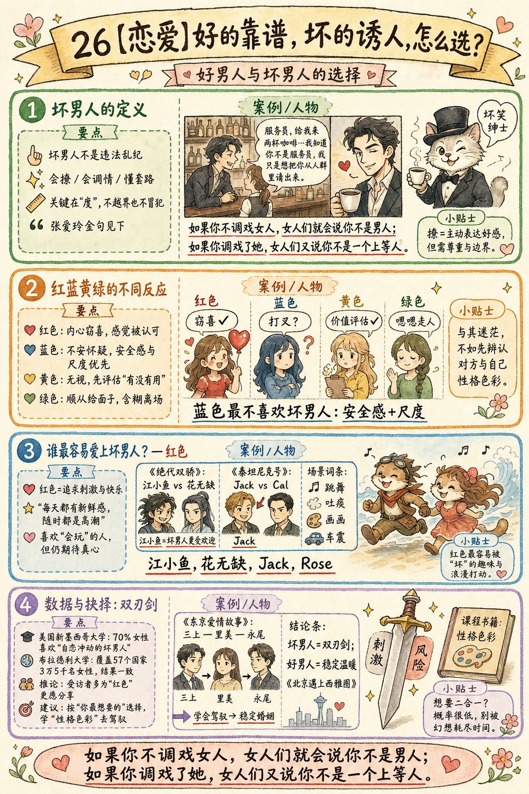
乐嘉探讨了“男人不坏，女人不爱”这句话的真实性，并区分了坏男人的定义：不是指违法乱纪，而是指那些会撩、会调情、懂得讨女人欢心的男人，如《全民情敌》中男主角用套路搭讪美女的例子。他指出不同性格的女性对坏男人的反应不同：红色内心窃喜，蓝色不安怀疑，黄色无视，绿色顺从。蓝色最不喜欢坏男人，因为注重安全感和尺度；黄色和绿色不以好坏为标准，黄色看重对方是否有用，绿色则无所谓。红色最容易爱上坏男人，如《绝代双骄》中的江小鱼和《泰坦尼克号》中的Jack，他们带来刺激和快乐。乐嘉还提到美国研究显示70%女性喜欢自恋冲动的坏男人，他认为这主要是红色性格。最后，他警告红色性格贪心，既想要刺激又想要稳定，建议根据自己最想要的选择，并学习性格色彩来驾驭坏男人。
📖 全文解读（点开看全文）
性格色彩情感宝典，让你恋爱快乐，婚姻幸福。我是乐嘉，愿你用性格色彩的力量，使你的生命更美好。 女人到底是爱好男人还是坏男人？今天我们来谈一谈"男人不坏、女人不爱"这句话到底是至理名言，还是纯粹的狗屁。我在追求女生的时候，到底应该学陈道明那个样子、像禁欲系的男人的模样呢，还是应该像杨康那样、摆出一副风流不羁的公子哥的模样？还有一些女同胞，她们可能对这个话题也特别感兴趣，就是当她们游走在好男人和坏男人之间，沉迷于前者带来的稳定、又痴迷后者带来的刺激和浪漫，这两者在选择的时候到底应该选哪一个进入到婚姻的殿堂呢？ 在回答这些问题以前，你首先要搞清楚到底什么样的男人才是坏男人，我们必须首先下一个大家都能够接受的共同的定义。好男人当然不用解释了，就是遵循道德世俗规范的男人，举止有度、大度能容、不乱花钱、不会背叛你。那么坏男人就是那些不遵循道德规范的人吧？当然不是这样。坏男人不是说他就是那些杀人放火、偷抢拐骗的男人，而是泛指那些笑起来坏坏的、经常爱开玩笑、处事圆滑、很懂得怎么去讨女孩儿欢心的套路的男人们。举一个例子，在《全民情敌》这部电影里面，男主角在酒吧里面看到有一个美女被一大帮高富帅围着、他泡不到，他就用了个套路，跑过去丢给那个美女一百块钱，说"服务员，给我来两杯咖啡，送到那边儿的桌子上"，然后就走，那个美女立刻就追过去说"我不是服务员，难道我穿得像服务员吗"，这个男主角就说"我知道你不是，但我如果不用这一招，我怎么能把你这个美女从那群人里面单独约出来呢"，然后露出一脸的坏笑，那个美女就笑了一下，就开始跟这个特别会套路的男人聊起来了。所以你看，所谓坏男人，并不是说他就是个不尊重你甚至直接侵犯你的人，而是维持在一个度的情况下主动地撩你。但其实这个度非常难掌握，如果你可以掌握这个度、掌握得游刃有余、烈焰无双，那你就是个标准的坏男人。张爱玲就曾经说过，如果你不调戏女人，女人们就会说你不是男人；如果你调戏了她，女人们又说你不是一个上等人，所以做男人真的好难，男人们只能选择宁愿不做上等人、也要先做个男人，哪怕是个坏男人。 那么好了，是不是所有的女人都喜欢坏男人呢？其实这取决于女人的性格是什么。打个比方，在陌生聚会的场所被一个男人撩，不同性格的女子反应不一样。红色性格内心窃喜，不管她表面会不会回应，心里她会觉得"我是被人认可的，说明自己还是有魅力的、有人喜欢自己，感觉还不错"。而蓝色性格的第一反应是不安和怀疑"难道是我给了别人什么暗示吗？所以他要冲着我来呢？他到底想干什么呢？"即便这个人是一表人才，这样一种特别贸然的方式，对于蓝色性格的女性，心里面也会大大地打一个叉。而黄色性格的第一反应是无视，因为黄色本能会来评估任何一件事情和任何一个人的价值，像这种搭讪的方式花费时间心思去搭理这个无聊的人纯属多余，所以如果黄色看上了一个男人，她自然会想办法接近你，如果看不上对方，怎么撩也屁用没有。而绿色性格的第一反应是顺从，因为在公共场合即便是对于陌生人，绿色也会给对方面子、不会让对方下不来台，更有可能的是嗯嗯啊啊、含含糊糊地离开现场，之后在心里面好像什么事儿也没有发生。 总体来讲，在四种性格里面，每一种性格对于好男人和坏男人的取舍和喜好是有重大的天性差异的。在四种性格里面，最不敢爱坏男人的到底是谁呢？答案是蓝色。蓝色性格的女人不喜欢坏男人，原因有两个：第一，他们天性当中就有一个"度"的概念，不管你是谁，你都不能逾越这个尺度，你要在我面前越过这个度，我就当你是对我的不尊重，更麻烦的是蓝色性格的尺度特别低，所以如果有一个坏男人第一次见面就触碰到他的肌肤，他就本能地反应这个男人是个流氓、是个轻浮、是个坏蛋，从此以后再也不给他接近的机会；第二个原因就是蓝色性格最追求、最在意的就是安全感，一旦他们谈恋爱，基本就是奔着婚姻和生活努力去，当他看到这个男人油嘴滑舌、耍心机、在外面聚会跟其他女人有一些亲切举动的时候，内心就会有强烈的危险信号，并且会主观地放大这种未来可能出现的麻烦，他的安全感在瞬间就有可能崩塌，他怎么可以忍受这样的男人出现在自己的人生当中呢？所以即便曾经有过亲密的关系，蓝色性格也不愿意接受这样一个坏男人，他觉得让这样的人拉自己走进婚姻的殿堂实在是太不安全了。对于蓝色来讲，安全感永远是第一位。 而黄色和绿色这两种性格，他们也不会以好坏男人作为择偶的标准。黄色性格的女人会不会爱上坏男人？这取决于这个男人对她有没有用。我之前就讲过，黄色性格的女子会把婚姻当作重要的事业来经营，如果对方的条件特别好、可以帮助自己快速地成长、完成事业上的目标，他坏一点儿有什么关系呢？而且黄色性格的女子特别有自信，在她看来有点玩世不恭的坏男人，在自己的陪伴、掌控和改造之下总有一天会变的，而且她无比坚信自己可以打跑任何一个试图抢走这个男人的其他女人，所以这个男人的好和坏对她来讲并不是考虑的主要范畴，她只在乎现在正在交往的这个男人能不能帮她更好地成长、让彼此都成为生命当中的强者。而绿色性格啥事儿都无所谓，对择偶要求也不高，对方是好男人还是坏男人、自己到底要好男人还是坏男人，其实她自己都没觉得有什么重要，因为这两个都能被接受：如果这个人是一个好男人，足不出户，两个人在家洗菜、做饭、看电视、带小孩儿，她觉得这样过一辈子很好啊；可如果这个人是个坏男人，开着车把自己拉到山上给办了，她也就顺从了，即便婚后再怎么折腾、出门约会也不告诉她行踪，绿色的老婆也不会主动去问，即便老公太过分、在外面把另外一个女人肚子给搞大了，换作其他性格当场就翻脸发疯了，但绿色只会默默地接受、哀叹"哎呀，老天注定要我碰上这个坏男人，这个就是我的命吧"，然后坏男人过了几年以后又重新回来找她说"天底下还是你对我最好，我还是想跟你过在一起"，好吧，她也就原谅别人了。所以这就是典型的绿色性格。 前面我讲了，蓝色性格最不接受坏男人，而黄和绿对好坏男人的概念很模糊、并不认为这件事儿这么重要，那么到底是谁最容易爱上坏男人呢？答案是红色。在古龙的小说《绝代双骄》里面，有一对双胞胎，一个叫江小鱼、一个叫花无缺，前者江小鱼是在恶人谷里面长大，恶人谷那是个啥地方啊、土匪流氓地痞无赖，所以江小鱼长大以后什么骗人、偷盗、坑蒙拐骗、偷啥东西都会，你一看到他就知道是个典型的小混混和坏男人；而花无缺是在移花宫长大，那里没有男人、全是女人、而且是特别有文化的一群女人，所以花无缺长大以后没有缺点，拿着扇子、风度翩翩、谈笑举止极有分寸、说话高雅、毫无市井之气，你要是个女人在他身边、睡在一个破庙里面孤男寡女共处一室、这么好的机会他连碰都不会碰你，这个就是大家眼中的好男人。可你会发现最终走下来，在小说里面喜欢坏男人江小鱼的女人最多，看过这部小说的女人绝大多数也特别喜欢他，为什么呢？因为他表面邪恶、懂得耍手段讨好女生和适度地调戏女生，但他心里面依旧是一颗孩子般非常质朴的心。如果你本身是一个红色性格，你追求快乐，你和江小鱼在一起的时候每一天都很开心、每天都能体验到冒险和刺激的感觉，你根本不用担心你们恋爱的过程当中有任何的平淡、随时随地都是高潮，和这样的男人在一起，哪怕每天露宿街头、饥一顿饱一顿、在仇人的追杀当中奔波于江湖，你都觉得此生无憾、无怨足矣。你再看卡梅隆的那部《泰坦尼克》，那个Jack就是像江小鱼一样的坏男人，而Rose的未婚夫Cal绝对就是好男人，但这个Rose嫁给他是因为自己家族衰败，这个男人再好、哪怕再送给她几颗海洋之心，她也根本爱不上这个男人；和Jack不一样，带她疯狂地跳舞、教她吐痰、给她裸体画画、带她到车里面玩儿车震，你要是蓝色性格的女孩儿肯定会对这种撩妹的手段非常鄙视、因为低俗无耻，但是如果你是一个红色性格的女孩儿，那个Rose来看，那绝对是一种人生当中无比美好的体验，所以即便是那么短暂的相处，也是她这辈子最最美好的。 我在第一张专辑《性格色彩读心术》的常见问题回答当中曾经说过，性格没有国籍之分，不管你是什么肤色、哪个国家，你都会遵从于性格色彩的逻辑。在美国，新墨西哥大学的研究表明，那些特别自恋、冲动、追求刺激、爱撒谎、冷酷以及喜欢耍手段的坏男人，在被调查的美国女性当中竟然有70%非常喜欢她们；而后来美国伊利诺伊州布拉德利大学又对全球57个国家3万5千名女性做调查，发现调查的结果高度一致。为什么会有这样的结果？我的推论就是，愿意配合调查的女性也多数是红色性格为主，因为红色内心开放、愿意分享自己的真实感受、追求好玩儿和新鲜，她们也愿意配合这样的实验；而蓝色性格不愿意分享自己的内心，黄色觉得配合你调查对我自己毫无意义，绿色除非别人拉着她一起做测试她才会做、否则才不会主动去参与，所以这恰恰就能证明红色性格是最最偏向于坏男人的，他们爱的就是那种毫无征兆、可以延续不断的刺激、富有想象力空间的、美好的、充满体验式的爱情的感觉。 那么问题来了，你现在可以看得出来红色性格的女生偏好坏男人，那为什么天下会有那么多人还在纠结到底应该选个好男人还是坏男人？原因就在于红色忒贪心了，他们又想要一个坏男人给她持续不断的新鲜刺激、高潮，同时又希望这个男人在婚后不要用同样的招数去对其他的女人，所以这就代表了天下很多女人既想要利益、又不想承担风险。我的观点是，男人对每个女人都坏，那是因为他还没有遇到那个让他变好的女人，如果你就是他的真命天女，他会为了你变成一个只在你面前坏的男人。在上世纪的90年代，有一部日本连续剧《东京爱情故事》，里面就有一个坏男人叫三上，三上留着特别飘逸的长发、嘴里叼着香烟、见到谁都是那种无法被人拒绝的微笑，今天跟这个女人睡、明天跟那个女人睡，而里美是一个特别传统的女性、她就喜欢这个男人，三上就在大街上吻了她、并且当着老同学的面宣布"这就是我的女人"，作为历来传统的女性，里美觉得这个三上坏男人的行为实在是太让人迷醉了。但几天以后，三上就在医学院里面勾上了一个富家小姐，里美质问他，三上就用了个套路，当着里美的面把自己的电话本儿掏出来、一把火烧掉，说"我永远不再会跟其他人有任何来往"，里美就相信了，可事实证明这个三上还是老样子，后来被里美抓了个正着。所以最后里美嫁的人是这部剧里面的第一男主角、叫永尾，因为这个男人是一个好男人、纯真质朴、保守正直、绝对传统的中庸式的典型人物；而三上最后娶的就是那个医学院的富家小姐，因为那个富家小姐学过性格色彩、她知道怎么去驾驭这个坏男人，最后三上发现自己原来深爱着的就是这个成功驾驭他的女人，所以慢慢地从花花公子就变成了一个特别专一的好男人，和这位学过性格色彩的小姐步入了稳定的婚姻。 所以，坏男人是一把双刃剑。如果你想寻求恋爱的刺激和惊喜，坏男人是你的首选，但你必须要学会承担风险，然后你可以跟乐老师花点时间学一学性格色彩、听听性格色彩的专辑，至少可以帮助你了解他们心里在想些什么、怎么样去搞定和驾驭这样的男人；而如果你想要一个稳定的婚姻，我奉劝你多考虑好男人，他们虽然看起来特别没劲，但一定会给你带来那种《北京遇上西雅图》那种温暖。选择哪一个，完全取决于你当下最想要的是什么。不过我要警告你的一件事情是，你想要这两种的结合体，有没有可能？也许有，但概率实在太低了。有很多小说、影视作品、网络段子会给你各种各样的梦想、各种各样的可能性，描绘出来各种各样美好的画面，但是我想讲，这些当中的绝大多数都是虚幻的，如果你为了这个概率极低的事情不停地去努力，你可能会耗上大把大把的时间。今天这一讲，我只是希望让你明白人生的真相，让你知道你到底是谁、你最想要的是什么、你怎么样发现对方是个什么样的人、你怎么样从你想要的那个人身上真的能够用合适的方法得到你想要的东西。祝你善用性格色彩的力量，取得自己的幸福。
【婚姻】如何让孩子接纳你的新恋人？
1/1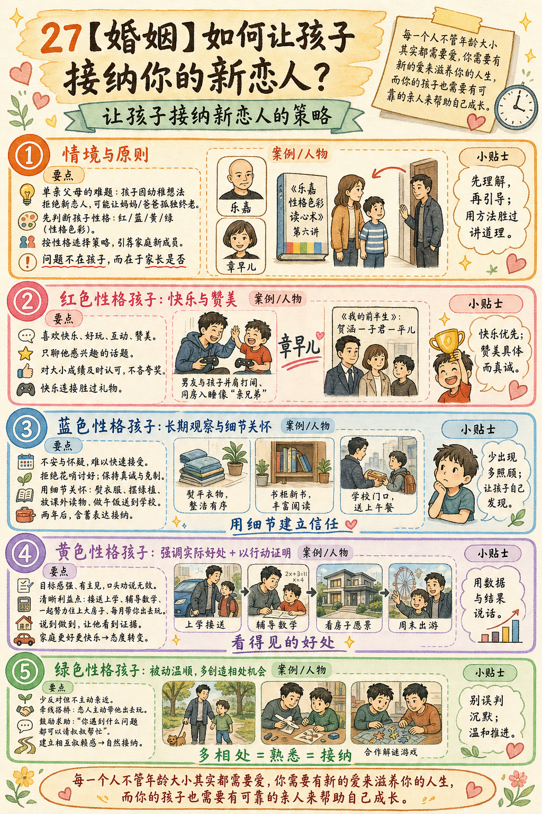
主讲人乐嘉通过章早儿的案例说明，单亲妈妈的孩子可能因幼稚想法拒绝新恋人，导致妈妈孤独终老。他提出要根据孩子性格采取不同方法：红色性格孩子喜欢快乐和赞美，可用互动和认可来打动；蓝色性格孩子需要长期观察，通过细节关怀逐步建立信任；黄色性格孩子目标感强，需强调新恋人带来的实际好处；绿色性格孩子被动，应多创造相处机会。他强调问题不在孩子，而在于家长是否用对方法。
📖 全文解读（点开看全文）
性格色彩情感宝典，让你恋爱快乐，婚姻幸福。我是乐嘉，愿你用性格色彩的力量，使你的生命更美好。 最近有一位单身的母亲来咨询我，她离婚很多年、想让她儿子接受她新找的一个男朋友，她儿子死活不愿意、她非常痛苦、问我该怎么办。我听到这个问题特别感慨，因为当年在做非诚勿扰的时候、包括这么多年来我做性格色彩的线下训练、遇到了无数这样的案例：一个单亲的爸爸或者单亲的妈妈独自把一个孩子拉扯大、压力本来就很大、特别想有第二段情感来跟自己共同开创全新的幸福，但是因为孩子太小、不懂事儿、有的时候不愿意让这个所谓的陌生人变成自己家庭当中的一个成员，结果这个单亲爸爸或者单亲妈妈又不太好跟孩子讲道理、就搁置掉、活活把自己的大好年华都耽误掉。当然我要承认、这种情况发生在单亲妈妈身上的概率远远高过单亲爸爸。 在北京卫视当年第一季《我是演说家》里，我有个学员叫做章早儿、她是一个跟癌症斗争、踏过死亡沟坎儿的单亲妈妈，当然她现在已经有了特别美满幸福的第二段婚姻、跟她的小男朋友。前段时间她出版了自己的一本书说、不光她自己是一个单亲妈妈、其实她自己的妈妈也是一个单亲妈妈，她自己就是在小时候打死也不同意她妈在谈恋爱。她印象特别深刻的有两个叔叔：第一个叔叔坐长途车大老远跑来找她妈、知道早儿喜欢洋娃娃、给她买了很多洋娃娃、但一点儿屁用都没有、她一个都不喜欢；第二个叔叔主动过来帮她补习功课、但在她看起来这种行为无异于讨好"我学习这么好、干嘛要你来帮我辅导功课"。久而久之她家里面再也没来过其他叔叔、而她的这种表现让她妈妈特别伤心、所以她妈妈就一直单身、直到最后离开这个世界。早儿在回忆这些事情的时候特别难过、她觉得特别对不起她妈。我就问她"你当初为什么要拒绝你妈妈的那些男朋友、难道那些人不好吗"，早儿就说其实因为她觉得"自己的爸妈是全世界最好的爸妈、你们都没资格取代我爸、你们也没资格娶我这么好的妈妈"，但就是因为她这个特别幼稚的想法、把她妈妈下半辈子的幸福彻底地给葬送掉了。 所以如果此刻你正在面临同样的问题、你是一个单亲爸爸单亲妈妈、还领着一个没长大不太懂事儿的小孩儿、你想谈新的恋爱、但是又害怕自己的孩子拒绝、或者你正在苦恼怎么把自己相处的这个对象介绍给自己的孩子、那你该怎么办呢？答案是：你必须首先搞清楚你们家孩子的性格、根据他的性格采取不同的方案来引荐你们家的新成员。如果你现在还不确定你们家孩子什么性格、你要赶紧去听我的第一张专辑《乐嘉性格色彩读心术》当中的第六讲"读懂孩子性格的快速方法"。 简单来讲，四种不同性格的孩子听说自己相依为命的爸妈有了新恋情、他们的反应和感受完全不一样。红色小孩儿第一种反应不开心、就像前面早儿小时候的反应一样，因为红色性格在天性当中本来依赖性就强、在单亲家庭里面依赖性就变得更加强、他觉得一旦有一个人进入到这个家庭、自己和单亲爸爸或妈妈的情感就会遭受到破坏，而且红色性格的内心总在幻想一些特别美好的事物"也许他们离婚了以后、我爸我妈以后会复婚的"、而新恋情的出现当然是对这种美好幻想的颠覆和破灭。第二类蓝色小孩儿的反应、他们首先是不安和怀疑、因为蓝色性格的孩子在新的变化里面都会有强烈的不安感、更何况是家庭关系当中的重大变化、对于新出现的这个人、蓝色性格的孩子会有陌生感、距离感非常强烈、不愿意靠近。而黄色性格小孩儿第一反应是反弹、质疑、黄色目标感很强、感受别人感受的能力本身就比较弱、对他来讲这个新叔叔或新阿姨的进入让他有自己的领地被侵犯的感觉、并且他内心会有质疑"这个新来的人会对我们好吗、他能给我们家带来什么呀"。第四种类型绿色小孩儿、他是四种性格小孩儿里面最容易接受大人安排的、所以他的第一反应是"啊、好吧、那就这样吧"、但这并不表示他会和新来的叔叔或者阿姨很快地熟悉起来、或者处得特别好、他可能只是一副听天由命的样子、不愿意多说什么、继续他自己原有的生活轨迹。 那么现在如果你想让你的孩子接受你新的恋人，你需要针对不同性格的孩子用不同的策略。首先红色性格的小孩儿——刚才我讲到章早儿、因为她自己当年拒绝了她妈妈的男朋友、所以她现在也害怕她自己的儿子拒绝她的男朋友，不过因为她男朋友学过性格色彩、知道怎么去搞定早儿的红色性格的孩子——红色就喜欢快乐、好玩儿、互动、赞美，所以就主动陪早儿的小孩儿聊天、并且只聊那个小孩儿感兴趣的话题、并且对他做出来的所有成绩不管大小都频繁地进行赞美和认可，这种东西比你送给他多少变形金刚要有用得多，久而久之、早儿就发现她男朋友居然跟她儿子睡在一个房间里面、两个人像亲兄弟一样、事儿成了，现在她跟她男朋友已经结婚了、并且有了第二个孩子、非常幸福。如果你看过一部剧叫《我的前半生》、在这部剧里面女主角子君离婚了以后带着她儿子平儿、男主角叫贺涵、贺涵因为同情而帮助她、关系就走得越来越近、因为贺涵非常关心子君的儿子平儿、给他买礼物、给他过生日、不断地把快乐带给这个孩子、所以这个红色性格的平儿很快就接受了贺涵叔叔、在贺涵赢得平儿心的同时、也打动了女主角子君的心。所以记住、对于红色性格的小孩儿、就要用对红色性格的方法去搞定他。 第二类，如果你们家孩子是蓝色性格、那你就要做好长期作战的心理准备，因为蓝色非常难以快速接受新鲜事物、并且他对于已经失去的属于自己的事物会念念不忘，所以你现在要介绍给他一个人做他的新爸爸或新妈妈、这个难度可想而知，而且你千万别指望用先前对付红色性格的方法来对他——那些赞美、认可、互动、聊天、送好吃的好玩儿的、在蓝色性格小孩的眼里面看起来就是特别低级的行为、他会认为你是在耍手段、你不真诚。那到底应该怎么办呢？在我们的线下课堂里面来了一个离了婚自己带小孩儿的女学员、福州人，她上课的时候分享她自己的男朋友特别有办法：知道她小孩儿是蓝色性格、几乎很少在她孩子面前出现、但是会暗中给一些照顾，比方说孩子不在家、把家里所有的衣服都烫平了、给家里布置一些特别小巧的绿色植物、买些这个小孩儿感兴趣的课外读物放在书柜里面、还经常做点好吃的送到学校给小孩儿当午饭，而这个蓝色性格的孩子智商特别高、他完全可以感受到这个人的存在、而且很清楚这种事儿根本不是他老妈这种粗线条的人会做出来的（他老妈也做不出来这种菜），时间长了以后孩子不说、但是隐形的男朋友在孩子心中的印象分儿就一点一点地强化起来。两年以后这个学生在家里面做完饭就跟她孩子一起吃饭、这个孩子有一天突然就跟她讲"妈、你炒的这几道菜都不如我上次在学校吃的那几道好吃、要不以后你别做饭了、换个人帮咱们做吧"，这个学员这一刻就知道、蓝色性格不管是大人和小孩儿说话都特别含蓄委婉、看似平淡的一句话其实就证明从那一刻开始起、这个孩子已经完全把大门打开、准备接纳她妈妈的第二段情感了。 第三类黄色性格的孩子，他们很有主见、认为正确的事儿即便你当爹当娘的反对他也要去做、他不喜欢的事儿你掌握不到正确的说话方法、苦口婆心说个半年都没用。但黄色性格天性目标感很强、即便是黄色小孩儿、他也能够听懂大人说的"做什么有好处、做什么没好处"，所以如果你想让你黄色性格的孩子接纳你的新恋人、很简单、你需要特别强调这个人给你们家未来会带来的好处："这个叔叔人很好、很愿意为妈妈付出、如果他来到我们家、他就可以天天接送你上学、而且这个叔叔是大学毕业、数学学得特别好、来了以后可以辅导你的数学、让你数学成绩在班里考第一、而且叔叔来了以后妈妈和叔叔两个人一起努力、我们家很快以后可以住上大房子啦、然后每个月都可以带你出去玩"。在你说的同时、你还要做、因为黄色性格的小孩儿不会轻易相信你嘴巴里面说的东西、他需要看到实际行动的证明、只要他确实看到因为这个叔叔的到来让家里的生活和整个氛围变得更好、更快乐、他自己就会迅速地转变对这个叔叔的态度。最后我们来讲讲绿色性格的小孩儿，绿色性格是四种性格里面最没主见也最不会去反对别人的人、所以阻止自己的爸爸妈妈找对象这个事儿发生在他们身上的概率很低，但是如果你想要把你自己的另一半引荐给他、希望孩子可以接纳的时候、你就不需要像跟黄色性格小孩儿那样还去分析有什么好处、你要多制造一些机会、只要让你的新对象跟你的孩子多相处就行了——在你的恋人这方面、你可以告诉他"我们家孩子比较被动、其实他性格很温顺、你别因为他不出声不行动就以为他不接纳你、你可以以后主动多带他出去玩儿"，在孩子这一面、你可以反过来说"妈妈真的好希望你跟叔叔尽快熟悉起来、你遇到什么问题都可以请叔叔帮忙"，通过这种牵线搭桥、让这个绿色的孩子和你的新对象之间的相互依赖感变得越来越强、一旦这种依存感建立了以后、你就再也不用操心了。 所以在现实生活当中、很多人离婚做了单亲爸爸单亲妈妈以后过得不快乐、不幸福、他们有的时候会抱怨说自己的小孩儿不懂事儿、拒绝自己迎接新的恋情和婚姻、在无奈当中也没有办法、就让自己孤独终老，但其实有的时候问题并不在孩子、关键在于你并没有采取一个正确的方法让你的孩子接纳这位全新的家人。每一个人不管年龄大小其实都需要爱、你需要有新的爱来滋养你的人生、而你的孩子也需要有可靠的亲人来帮助自己成长，所以当新的家庭成员进入到家庭出现阻碍的时候、你一定要学会运用性格的力量、为了新的爱、新的幸福的到来你要去努力，不然等到孩子长大懂事以后、其实你会后悔、他也会后悔。
【恋爱】如何在分手后走出痛苦？
1/1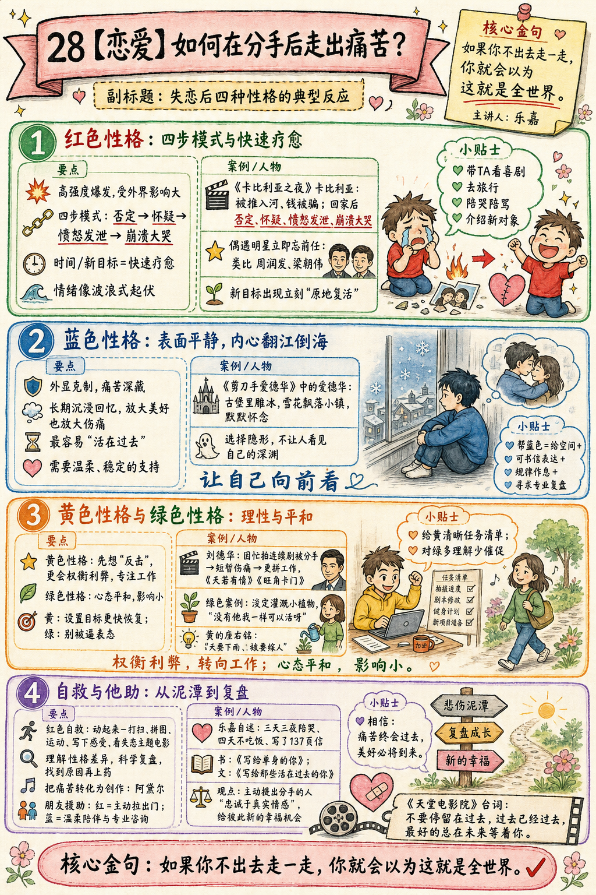
主讲人乐嘉以自身经历引入，曾因失恋痛苦到让朋友陪哭三天三夜、四天不吃饭、写137页信。他通过电影《卡比利亚之夜》女主角卡比利亚的行为，详细描述红色性格失恋后的四步模式：否定、怀疑、愤怒发泄、崩溃大哭，并指出红色性格易受外界影响，时间或新目标能快速疗愈，如卡比利亚偶遇明星后立刻忘记前任。蓝色性格如《剪刀手爱德华》中的爱德华，内心痛苦但隐藏，长期沉浸回忆。黄色性格如刘德华，被分手后权衡利弊，选择专注工作。绿色性格心态平和，失恋影响小。最后强调红色和蓝色最易痛苦，但帮助方法不同。
📖 全文解读（点开看全文）
性格色彩情感宝典，让你恋爱快乐，婚姻幸福。我是乐嘉，愿你用性格色彩的力量，使你的生命更美好。 今天这一讲价值千万。你失过恋吗？分手过吗？离婚过、痛苦过吗？反正我记得我当年最痛苦的时候，让两个男朋友过来陪我哭了三天三夜，我真的好像四天没吃饭，给我的前任女友写了137页的一封信，那封信写完了以后我还留着呢、给留存下来了，我认为我这辈子再也写不出来那样的信，反正大半年时间快要过不去了、最后才缓过劲儿来。所以今天这一讲我想来解决两个问题：第一，当你坠入到失恋的万丈深渊无法自拔的时候，应该如何自救？第二，当你的朋友处在他们人生被分手以后的低谷期，你该用什么样的方法帮他们走出黑暗、迎接黎明？ 在性格色彩当中，我们把人分成红、蓝、黄、绿四种大的类型。如果从最简单的行为反应来看，在失恋以后，不同性格很容易呈现出来他们的差别。 第一种性格红色性格，当他们遭遇到分手以后，会陷入到低谷的强度非常高，崩溃的爆发力也是能够让全世界都知道他在失恋。很多年以前有一部意大利的电影叫《卡比利亚之夜》，能够把红色性格在失恋以后的表现淋漓尽致地全部展现出来。女主角卡比利亚是个红色，性格活泼开朗、单纯，爱上了一个男人，但这个男人是个骗子，把她的钱给骗光了以后，知道卡比利亚不会游泳，约她去河边玩儿，趁她不注意一脚把她踹到河里面、带着钱跑掉了。卡比利亚被好心的路人救起来以后，就开始了标准的红色性格被分手之后经典的反应模式：第一步，否定——"不可能，把我踹到河里的肯定不是他，我这么深深地爱着他，他肯定也深深地爱着我，他再狠心也不会把我推下去的，他肯定是去叫警察了，或者他已经在家里面等我了，他绝对不是那个负心薄幸骗我钱的人，即便全世界都不相信他，我依旧相信他"。可当她湿漉漉地跑回到家里、发现家里面被翻得乱七八糟、钱也没了的时候，就进入到了第二步，怀疑——"难道他真的只是为了钱才跟我在一起的吗？难道我的真心没有换回他的真心吗？难道真的是他把我推到河里的吗？难道他之前对我说的所有情话、说要跟我一辈子在一起全都是假的吗？怎么可能、怎么可能"。隔壁邻居大哥是个黄色性格的人，看到卡比利亚这样，就跟她说"我早就看出那个男人不是什么好东西了，我之前劝你你也不听，这下好了吧，人跑了、你钱也没了"，卡比利亚一听非常崩溃，当场就进入到第三步，愤怒发泄——在屋子里面大喊大叫"去你妈的王八蛋，我全心全意地对你、把我的工资全都花在你身上，你他妈就这么对待老娘，你这个大骗子"，然后在屋子里面一顿乱砸，把桌子、椅子、窗帘儿，能毁的全毁、能烧的全烧，把他俩的照片一张张捡起来撕碎、跑到门外面一把火全部烧掉，嘴里面高喊"你去死吧、你给我去死吧，你再也不要回来找我，你跪在我面前我都不会原谅你的"。当她看到熊熊烈火当中的照片化为灰烬、再看看旁边那个破乱的屋子、再看看自己身上脏兮兮的裙子，然后马上就进入到了第四步，崩溃大哭——"为什么我这么薄命啊，老天爷你为什么要这么折磨我，我对他这么好，他为什么骗我"，谁劝她都不停。所以刚才我讲的就是红色性格在分手以后的经典模式：否定、怀疑、愤怒发泄、崩溃大哭。如果你是一个典型的红色性格、并且你曾经被你爱的人背叛、被别人提出分手了，我相信你一定会和卡比利亚感同身受。你去看各种各样的琼瑶剧、校园青春爱情剧，基本上天下所有红色性格的男女主角在被分手、遭到背叛的时候，几乎都是这个模式——高强度的爆发力、破坏力，搞得人尽皆知，好像谁劝都没有用、谁劝跟谁急，整个人跟一滩烂泥一样、啥事儿都不想干，有的还立刻飞到天涯海角，什么丽江、三亚，美其名曰"我要忘掉过去、开启新的人生"，其实就是想通过逃避和发泄的方式来转移自己的痛苦。 你可能会被红色性格这种失恋以后深陷低谷的样子给吓到了，但其实你完全不必担心，因为红色性格在失恋以后有一个特点，就是时间可以帮助他们快速地疗愈，有的时候突然来了一个什么好事儿、或者你给他介绍了一个更好的男朋友女朋友，立刻就会原地复活。你看刚才那部《卡比利亚之夜》，卡比利亚那天晚上在大街上散步，结果偶遇了一个当时的电影明星，就像周润发、梁朝伟一样，当场就把那个踹她下水的男的给忘了、开启了全新的爱情，但她后来又发现这个男演员有家室、又再次失恋和崩溃，没过多久又遇到一个小鲜肉、又开始谈，结果事实证明这个小鲜肉也是个大骗子，她又崩溃，可在电影结尾她看到一大群人在游行庆祝节日的时候，又走在队伍里面、满脸又露出了那种标志性的灿烂笑容。所以这是绝对属于把红色性格发挥到极致的典型代表。可能你未必像卡比利亚那样那么戏剧化，但整体而言，红色性格的情感线就是波浪式前进，失恋以后陷入低谷很深很深，但一旦有了新的目标，会特别开心、马上就从低谷当中一跃而起、跟没事儿一样。 第二种类型蓝色性格，他们的情感也是高度丰富，但是跟红色的差别是，即便内心翻江倒海也不愿意表露出来，更愿意把这种强度收敛到自己的内心深处，而且他们还有个特点，一旦受到情感的伤害，他们在这个时间当中待的长度有的时候会吓到你。你看约翰尼·德普演的《剪刀手爱德华》，当他不被镇上的居民认可、被迫要跟自己心爱的人分手以后，他一个人逃离掉、隐藏在那个不为人知的古堡角落，默默地去回忆跟女主角在一起的甜蜜时光，然后在古堡里面雕刻爱人的冰雕，在剪刀下面的冰花飘在空中变成雪、洒在整个小镇上面，陪伴着他的爱人从一个年轻的小姑娘一直变成一个老太太。所以在四种性格里面，蓝色是最容易活在过去的一类性格，他们心里面有一面放大镜，会把所有的美好无限放大，但是也会把失恋的痛苦成千倍地放大，然后深陷在失恋的泥潭当中。红色性格在这个泥水里面痛苦的时候会大吼大叫、寻求外力的帮助让自己解脱，而蓝色通常的做法是让自己隐形、不让任何人知道自己在痛苦的深渊。 第三种类型黄色性格，当他们被分手了以后，瞬间会产生反击的心态——凭什么你甩我，老娘要把那个第三者打跑、把你给追回来，然后再甩了你，让你也尝尝被甩的味道。但话是这么说，可黄色性格在做任何决定和行动之前会首先做一个利弊的权衡，那就是到底值不值得花时间去执行这个报复计划、这个人到底值得不值得我来挽回，如果权衡了一通以后发现这个人可有可无、没那么重要，他就不费那个气力了——反正天要下雨、娘要嫁人，散了也好，留下精力可以打拼工作，以后你会后悔的。你看刘德华就是属于典型的黄色性格，他在回忆自己过去的时候就说，当年就是因为拍连续剧工作太忙、忽略了女朋友的感受，结果女朋友就提出分手了，刘德华在短暂的伤痛以后继续拼死工作、让自己变得更忙，这也不是说用忙来掩饰失恋的伤痛，而是在他看来分了也好、这样可以自己全身心地投入到工作里面、没有任何后顾之忧，所以到后来他拍了《天若有情》《旺角卡门》、一下子很火了。 第四种绿色性格，绿色性格心态平和，他们谈恋爱的时候都很少有大喜、也没有什么特别高度的激情，当然他失恋以后也没那么强烈，他内心的想法就是"没有他我一样可以活呀，人家跟我分手大概也有人家的苦衷吧"。所以如果把恋爱这件事儿比作是一滩水的话，因为绿色性格本身就没把自己的全身都泡进去，你要是不推动他、他可能连一条腿都没进去，自然而然他从这个潭里面出来也变得容易很多。 以上我已经告诉你了红、蓝、黄、绿四种性格在失恋之后的痛苦反应，你应该知道黄和绿不太容易受到失恋分手的痛苦干扰，而非常容易痛苦的一个是红色、一个是蓝色。那么到底应该怎么样帮助红色和蓝色从失恋的痛苦当中走出来呢？这两种性格你去帮助他们的方法完全不一样。 我们先来讲红色性格。因为红色性格容易受到外界的影响、特别享受别人对他的安慰和关注，所以如果你红色性格的朋友正在失恋，你要主动把他从一滩烂泥当中拉出来，带他做一些他很喜欢做的事儿，看一些新上映的喜剧电影、带着他去旅游，然后在一个没人的地方陪他一起哭、一起笑、一起陪着他大骂那个王八蛋，再给他介绍一个对象，反正只要你能让他开心起来、并且注意力得到分散，时间一长红色就自然而然从失恋的伤痛当中走出来。可如果此刻正在深陷痛苦当中的人正是红色性格的你，你该怎么帮助自己呢？第一条，我求求你不要再让自己扮演行尸走肉，你要让自己动起来，给自己布置一些简单容易完成的任务：打扫一下屋子、拼一个拼图、把自己的感受写一篇文章、出去运动一下、看一部跟失恋有关的电影把自己的眼泪充分发泄出来、听听乐嘉老师的喜马拉雅微课，反正你做完这些事情以后会有一种充实感，在一定程度上弥补你失恋的空虚，你要想办法让自己忙起来。如果你想让自己原谅对方、或者找到跟对方失恋分手的原因，那你就一定要去听听乐嘉老师的喜马拉雅微课，当你知道你自己的性格和别人的性格以后，你就发现有很多问题的理解其实你们是有巨大差异的，你就不会像从前那么痛苦，因为你会发现你们两个人之间的情况在别人身上其实一样都在发生。所以你发现很多红色性格的歌手和音乐家就做得很好，失恋了以后当场就创作、把自己的感受写到歌曲里面，结果写出来的作品一经传唱、大火特火，反而会特别开心、甚至还要感谢那个向他们提出分手的人，全世界拿过格莱美奖非常有名的英国女歌手阿黛尔就是这样的情况。除此以外第二点，如果你红色性格要从失恋的痛苦当中走出来，你要去学一下蓝色性格，用科学的方法或者让专业的性格色彩咨询师帮你去分析为什么你的这段情感会以失败告终。我知道这件事情对于红色性格来讲非常难，而且红色性格都是追求快乐、逃避痛苦的，但是如果你不能够正视和复盘这段情感、不从中吸取教训的话，你将来还会摔同样的跟头。所以如果你能够安静下来、正面面对你自己情感的伤口，然后找到原因、上药以后，你就有更大的勇气和快乐迎接下一段恋情，你要相信你的下一段情感会比这一段更美好。当然我知道红色性格的人永远对自己说的话是"哎呀，如果我离开这段情感以后，我相信我再也找不到这么爱的男人了"，不过你放心，你这番话一定有一天会被打破的，因为最好的还没有到来。 讲完了红色，我们来看看蓝色性格。如果你是一个深陷失恋低谷的蓝色性格，怎么解决？它的困难程度比红色要难得多，因为蓝色性格大多自己把自己给陷在泥潭里面。在当年我的一本书《写给单身的你》里面，我专门写了一篇文章给蓝色性格，标题叫做"写给那些活在过去的你"。我想跟蓝色性格讲的是，那个已经跟你分开的人，他可能告诉你"我已经走掉了"，也可能告诉你"我已经跟另外一个人走了"，这个时候你就应该让自己向前看，可偏偏你选择了那些自我伤害的方式，这种做法不但会失去自己的恋人、还会失去你自己，这绝对是双倍赔本儿的买卖。换个讲法吧，如果有一个人主动向你提出分手，我认为他是全世界最忠诚的人——你说放屁，他当初承诺说要跟我一辈子在一起的——没错，他没有忠诚于他的承诺，但是他忠诚于你们的情感，为什么呢？当他爱你的时候他和你在一起，现在他不爱你他就离去，这是100%忠诚于自己的情感，难道你希望他其实压根儿都不爱你了、还要继续装作情谊深重跟你苟延残喘在一起、跟你结婚生子吗？这两种到底哪种是你更想要的？换一个思路，那个主动跟你说分手的人，你很恨他，因为你还在爱情当中无法自拔，但是对方给了你一份内心的忠诚，而且他不但给了他自己寻找幸福的机会、同时也给了你寻找你自己幸福的新机会，从这个角度来讲，你不觉得应该感谢他吗？ 所以我想用《天堂电影院》的台词来做结尾：如果你不出去走一走，你就会以为这就是全世界。如果那个人就是你可以厮守一生的人、就是那个给你幸福的人，他是不会离开你的；如果他选择离开，那就让他离开，你们彼此去寻找那个能够给自己带来幸福的人，那才是你们都应该做的事儿。你要相信，痛苦终会过去，美好必将到来。祝福你，我的朋友。
【婚姻】如何让懒惰的老公做家务？
1/1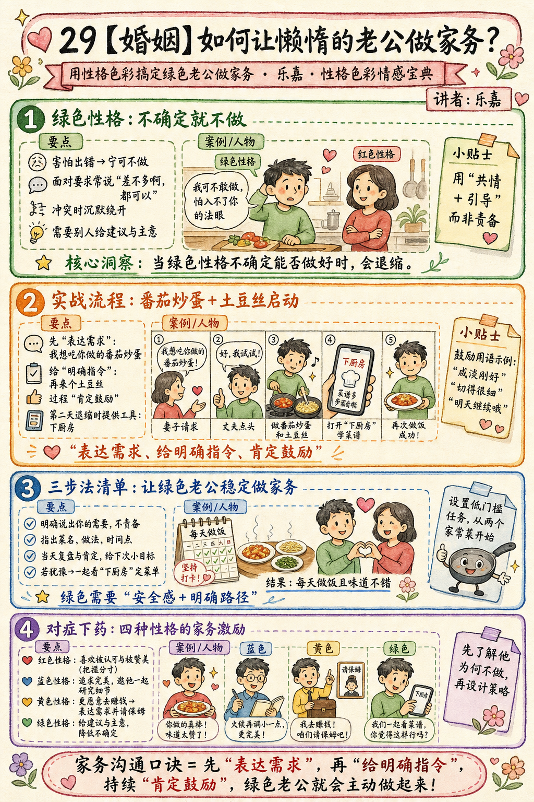
一位红色性格的女学员分享如何运用性格色彩让绿色性格的老公主动做家务。她曾因老公做饭难吃、收拾不整齐而批评他，导致老公退缩说“我可不敢做，怕入不了你的法眼”。学习性格色彩后，她洞察到老公是绿色性格，特点是不确定能否做好时宁可不去做。她先表达想吃老公做的番茄炒蛋和土豆丝，老公答应后她全程鼓励，第二天老公退缩时她建议用“下厨房”软件。最终老公每天做饭且味道不错。她总结方法：表达需求、给明确指令、肯定鼓励。
📖 全文解读（点开看全文）
性格色彩情感宝典，让你恋爱快乐，婚姻幸福。我是乐嘉，愿你用性格色彩的力量，使你的生命更美好。 今天分享给大家我刚刚收到的一份课后学员作业，之所以在这个时间分享，是因为前面刚好讲到了红色性格跟绿色性格的情感搭配组合。在上一讲里面我讲到有一个红色的老婆对绿色老公做家务特别慢难以忍受的例子，所以今天我就刚好分享一个红色性格的女学员怎么样运用性格色彩、学了以后成功搞定了她绿色的老公，让这个比较懒的绿色人做事情不再磨磨唧唧、顺利地完成家务。如果刚好你碰到的人也有这个问题，你不妨来借鉴一下这个方法。 她写了一封信，信里面是这么说的："我的老公是绿色，在遇到性格色彩之前，经常会因为做饭、做家务的事情搞得我很不开心，主要原因是他很少做家务，偶尔做一做又做得很不好，所以我忍不住就会批判他，我嫌弃他做的饭不好吃、或者东西收拾得不够整齐。有一段时间，我一说让他做家务，他就往后退，有的时候还会弱弱地来一句'我可不敢做，我怕入不了你的法眼'。在那段时间我好困惑，我一度觉得无法沟通，我甚至在想我们到底是不是不合适、我根本就不应该跟他结婚。在学习性格色彩之后，我开始用性格色彩的工具去洞察他、理解他，慢慢地我发现他原来是一个绿色性格：因为我每次跟他出去逛街的时候，我都问他'这件裙子好看还是那条短裤好看'，他每次给我的回答都是'哦，差不多啊，都可以'，我很苦恼；他也总是在我非常感动地看着电影、哭得稀里哗啦的时候，在旁边一脸懵地看着我，我又会说'你怎么一点反应都没有啊、怎么没有同情心呀'；他每次在我发脾气的时候总是不说话，内心的独白好像是'到底发生了什么'，然后默默地绕开我、就像躲避一颗地雷一样。 后来因为做饭的事儿，我很深入地跟他谈了一次，我说'你为什么现在不做饭了呀，我每天做饭都好累呀，你能不能帮帮我啊'，他说'我做不好，每次做完你都不满意，我都不知道你要吃啥，还是你自己做吧'。突然在那个瞬间我明白了，原来当绿色性格在不确定自己是不是能做好的时候，为了不犯错误，他宁可不去做。性格色彩的学习不仅让我洞察到原来我老公是一个绿色性格，也让我知道了绿色性格的老公需要别人给他一定的建议和指导，他也特别需要你帮他在关键的时候拿一些主意，不然他真的不知道该怎么做。 有一天我趁他没事的时候，我就跟他讲'老公啊，明天要么你做饭吧，我想吃你做的番茄炒蛋了、我好想念那个味道'，他糊里糊涂地看着我'你说的真的假的'，'真的真的，你做吧'，'好吧，那你还想吃啥，一个菜不够吧'，'嗯，那土豆丝吧，这两个菜你还是比较拿手的'，然后他就很爽快地答应了。那天他做的这两个菜我吃得很开心，而且我一直在鼓励他'不错呀，这两个菜咸淡刚好，番茄不太烂也不太生，土豆丝切得很细诶、很入味哦，明天继续哦'，他就说'好的'。可到了第二天下午他又退缩了，给我发消息说'老婆，我把菜备好，要么还是你回来做吧'，'没事儿，你做吧，等我回去做你就饿死了'，'可是我不知道该做什么呀'，'你在手机上下载一个软件叫下厨房，你去那个里面找你喜欢吃的菜，然后学着做就行了，随便怎么做不会说错的'。就这样，他又做了第二天的菜，而且又得到了我的好评。从那以后，我每天回家都有现成的饭可以吃，而且味道还不错哦。" 所以我要跟大家总结一下：对于绿色性格的老公，当他害怕自己做不好事情的时候，你要先告诉他你很希望他为你做、你要表达自己的感受，千万不要责备他为什么不做；第二，你要给他非常明确的指令，你告诉他你想吃什么、用什么做法来做；最后，不管他第一次的尝试做得有多么糟糕，你都要给他肯定和鼓励、让他继续有信心做下去，只要经验丰富了，当然会越来越好。 在听完上面这位同学写的信以后，肯定会有听友问"那如果我们家老公、我男朋友他不是一个绿色性格、他也不喜欢做家务，那我应该怎么办"？当你学会应用性格色彩以后，你会发现性格色彩在解决问题的时候有一个核心原理，那就是你需要先了解他的性格、以及他为什么不做家务的原因，然后你就可以非常轻松地对症下药。你比方讲，如果你有一个红色的男人，他喜欢被认可和被赞美，如果你多夸夸他做的菜好，他就会更有动力继续做。当然我要提醒你，这个表扬的分寸很重要，如果你表扬过度，他可能就会每天都做这个菜、然后一个礼拜七天天天都给你喝这个鱼汤，可如果你跟他说"你就不能换个口味儿啊"，他马上就会狡辩"换了呀，前天是鲈鱼、昨天是黑鱼、今天是鲫鱼啊"，所以你赞美的时候要记住，赞美红色有十二种方法，这个在后面我讲如何跟红色性格的情侣相处的时候再来教你。如果你老公是蓝色性格的老公，他追求完美而且很敏感、要么不做、要做就做到最好，如果你想让他做菜，你最好就跟他一起做，从艺术的高度跟他来探讨做菜的细节，这样他就会很享受。而如果你老公是黄色，他可能会觉得自己有更重要的事儿干、根本就不屑于做菜、更愿意用这些时间去多赚钱，那你不妨告诉他你的需求、让他花钱给你请个保姆来做菜，他也就不必执着让他亲自做菜。 所以掌握性格色彩、善用性格色彩，你可以把你周围身边的男人悉数搞定。当然对于男性来讲，理解女性、想办法去影响她、跟她相处，男女之间的法则其实都是相通的、一样的。如果你今天听完了以后有感触，请你留言吧，我们下期节目再见。
【恋爱】同时爱上几个人怎么办？
1/1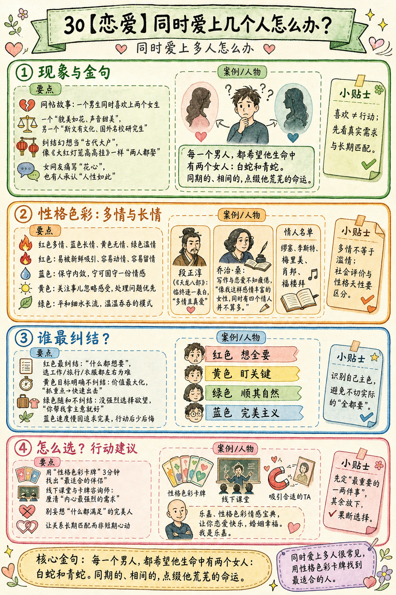
乐嘉引用一个网帖：一个男生同时喜欢上两个女生，一个貌美如花，一个斯文有文化，他纠结该追谁，幻想能像古代大户一样娶两个。女网友痛骂他花心，但也有网友承认人性如此。乐嘉引用李碧华《青蛇》中关于男人和女人都希望生命中有两个异性的段落，感慨同时喜欢多人很常见。他分析红色性格多情，容易同时喜欢多人，举了段正淳和乔治·桑的例子。红色性格还容易纠结，什么都想要，而黄色性格目标明确不纠结，绿色性格随和不纠结。蓝色性格虽慢但追求完美，与红色不同。最后建议用性格色彩卡牌找到最适合的伴侣。
📖 全文解读（点开看全文）
性格色彩情感宝典，让你恋爱快乐，婚姻幸福。我是乐嘉，愿你用性格色彩的力量，使你的生命更美好。 几天以前，在网上有个帖子，发帖的这个人很老实，他说他最近一下子喜欢上两个女生：一个貌美如花、声音甜美，绝对是人间极品的尤物，范冰冰见了她也会相形见绌，他只看了那个女孩儿一眼，就感觉自己的魂魄全都丢掉了；而另外一个女孩儿虽然相貌不惊艳，但看上去特别舒服，戴着眼镜、斯斯文文的，国外名校研究生毕业回来，平时也不怎么说话，可是一开口就显得特别有文化。所以这个发帖的男生就讲自己很纠结，不知道该追哪一个，而且还取了一个特别形象的比方："我要是生活在古代多好啊，哪怕不是皇帝、做个有钱的大户，像《大红灯笼高高挂》那样，把两个都娶了，把第一个貌美如花的做妾、夜夜临幸，把第二个斯文的作为正宫皇后。可是我知道我这是做白日大头梦，我到底该怎么办呢？谁能给我出出主意？我真的好纠结。" 在这个帖子的下面，有很多女网友就开始发了疯地、死命地骂这个贱男人："像你这种花心的男人，要么就给你淹掉、要么就直接去死，打入十八层地狱、永世不得翻身，你想脚踏两只船，那两个女人还不稀罕你呢。"但有一些网友就讲："诶，你这算什么话？这个发帖的人讲得很老实，人类的本性啊，不管男人女人都会有这个问题，你那些骂他骂得那么狠的女人，难道你们就没有曾经同时喜欢过两个男人吗？喜欢有什么关系呢？你们只是不敢承认罢了。"这种争论多如牛毛、可能争了几十年了。 我就想起香港作家李碧华在《青蛇》里面说的那段话："每一个男人，都希望他生命中有两个女人：白蛇和青蛇。同期的、相间的，点缀他荒芜的命运。只是当他得到白蛇，渐渐地、她变成了惨白的余晖；而那青蛇，却是树顶清脆欲滴的嫩叶。可是当他得了青蛇，青蛇又成了墙上闷绿的山草，而白蛇却成了天边皑皑飘飞的轻雪。每一个女人，也希望她生命中有两个男人：许仙和法海。法海是用尽千方百计、博她欢心的金漆神像，仰之弥高；许仙是嘘寒问暖、细诉衷肠的美少年，给你讲最好听的话语来熨帖你的心灵。但你要是得了许仙，他没一句话说得准、没一个动作硬朗；可若是法海肯臣服呢，你又会嫌他刚强怠慢、不解温柔、枉费心机。"我想起这两段话，再想想一上来我跟你讲的那个人内心的真心话，很感慨。 你知道我为什么感慨吗？我就是想讲，在这个世界上同时喜欢上几个人，在中国传统文化里面可能会认为你道德败坏，但事实上这种情况比比皆是，尤其在性格色彩里面很容易出现在红色性格的身上。什么原因呢？第一，多情。在红、蓝、黄、绿四种性格里面，红色多情、蓝色长情、黄色无情、绿色温情。红色在天性当中情绪起伏很大，他们容易受到新鲜事物的吸引、容易动情、容易留情；而蓝色性格保守内敛，宁可固守一份情感、不愿意做任何新的尝试；典型的黄色性格关注事儿而忽略感受，一旦遇到问题就会为了解决问题把情感放在一边；而绿色性格平和，他们关注别人的感受，可是缺少激情，擅长的是那种细水长流、温温吞吞的情感模式。所以最容易因为多情而喜欢上几个人、难以分辨轻重的，那就是红色性格。在金庸老先生的《天龙八部》里面，有个最著名的多情男儿就是段正淳，段正淳就是典型的红色性格，临死之前他在被马夫人康敏（他的情人）杀死之前，对着他的每一个情人逐个表白，连痛恨他花心无比的那些女子们也忍不住动容，在金庸看来，段正淳这个多情的胚子对每个女人都是真爱、没有轻重深浅。当然，由于社会观念的影响，如果女人像段正淳这样多情和公开，必然会遭到天下的围剿，但这并不代表多情的都是男人，有很多时候女人会更加多情。在法国文学史上举足轻重的女作家乔治·桑就是标准的红色性格，她这一辈子不知疲倦地写作和恋爱，在谈恋爱和写作这两件事情上是没有疲倦感的，她对男人和恋爱有着巨大的激情，并且以她庞大的名流情人阵容闻名于世。十八岁结婚以后，她觉得她老公太平庸，就开始了频繁的红杏出墙，在跟她有情感瓜葛的名单当中随便讲几个就吓死你：缪塞、钢琴家李斯特、梅里美、肖邦、福楼拜，这些天才里面有法律系的学生，还有为她看病的医生，还有帮她办离婚手续的律师，你别说在当年了、就在现在，她也绝对算得上是功夫惊人。当外界给她巨大的压力、抨击她的多情、用多么恶毒的词语的时候，这个不受世俗束缚的女子回答："像我这样感情丰富的女性，同时有四个情人并不算多。"并且她在作品里面还在宣称，随着社会的发展，婚姻制度迟早会被废除，必然会有一种更加人道的关系来代替现有的一夫一妻制来繁衍后代——一个男人和一个女人既可生儿育女、又不互相束缚对方的自由。 所以如果正在收听本集节目的你，自己是一个享受多情、并且没啥烦恼的人，你就没必要听了；可如果你还在听，那我就假设你也有你的苦恼，那就是你其实也挺想选一个人长相厮守，但你就是没办法决定，那到底应该怎么办呢？那是因为你还不太了解，经常会同时喜欢很多人除了情感丰富多情以外，第二个重要的原因是他在天性当中容易纠结。在我的第一张专辑《性格色彩读心术》里面，第十一堂课我专门分析了什么性格会纠结，如果你没有仔细听过，请你赶紧去听。在四种性格里面，我可以简单地给你一个答案，最不纠结的人就是黄色性格。在情感里面，黄色性格特别有主见，他们会努力地追求价值最大化、而且做事儿特别能够抓重点，对黄色来讲，婚姻他会把它当成一生追求的事业之一，所以黄色在选择伴侣的时候，只要他觉得这个女人跟他在一起能够彼此扶持、帮助彼此达到人生的成就，那就这个人了。所以当很多选择摆在黄色性格面前的时候，他会快速地评测、盯住自己最满意的那个选项，只要自己最在意的事情达到、其他东西都不重要，然后他就会快速全力地出击，这个过程非常快——黄色性格不纠结的原因就是因为他知道什么事情对自己最重要。而绿色性格因为他自己没啥主见、没啥想法，更加谈不上纠结了，他根本就没有什么选择的欲望，"你要是愿意帮我拿主意那我巴不得，我觉得跟谁在一起过的差别好像并没有那么巨大，如果我的父母和朋友愿意给我一个推动，那我只要觉得能够过得去就OK了"。最最纠结的就是红色，这个红色真是要了命，他真的是啥东西都想要：纠结找啥工作呀，两个offer给他到底选哪一个；放假去什么地方玩啊，这五天时间我又可以去武夷山、又可以到神农架，到底应该去哪一个；纠结选什么衣服啊，这两个衣服我都喜欢呀、都有不同的场合可以穿。所以这种什么东西都想要的基本上都是红色性格，那怎么可能啥好事情都给自己沾上呢？ 所以你看，为什么很多红色性格在恋爱的时候很难确定自己应该选择谁呢？因为他什么都想要：红男既想自己的女朋友貌美如花、又想学历高、工作好、性格又柔和又能够刚强、又能带孩子下厨房、啥事儿都顺着你、还不会被其他男人勾引；红女既想男朋友长得像小鲜肉一样、又能露出像陈道明那样的大叔样、穿衣服有品位、有房有车。怎么会有这种自相矛盾、什么都满足的人呢？所以不管是红男还是红女，在茫茫人海当中寻求那个啥条件都满足的人，结果这辈子得到的概率当然会很低。 这里要强调一个性格分析上的难点：你可能会有困惑，那蓝色性格不是很纠结吗？这是性格色彩里面的一个专业课题。蓝色性格做决定速度很慢，那是因为他们追求完美、把所有的问题考虑得很仔细、并且确保绝对安全的情况下才会行动，但是他一旦行动了以后基本上不太会后悔；这跟红色性格有很大的差别——红色性格主要不是为了追求完美，它是什么东西都想要，而且红色性格做错决定经常会后悔、拍大腿掐自己的肉。 当你已经知道你同时喜欢上这么多人是因为你性格里面的红色导致的，那么从性格搭配的角度到底该如何确定在这么多你喜欢的人里面哪个才是最适合你、哪个才可能跟你白头到老呢？你可以来到性格色彩的线下课堂，也可以用专业的性格色彩卡牌，在三分钟的时间里面找出最适合你的另一半的特征，并且我们会有专门的卡牌咨询师帮你了解你内心深处最强烈的需求是什么、以及你到底该选择谁做你的另一半。我期待着有一天在性格色彩的线下课堂跟你相见，并且祝愿你早日能够找到你内心深处最理想的爱人。
【婚姻】如何搞定不同性格的婆婆？
1/1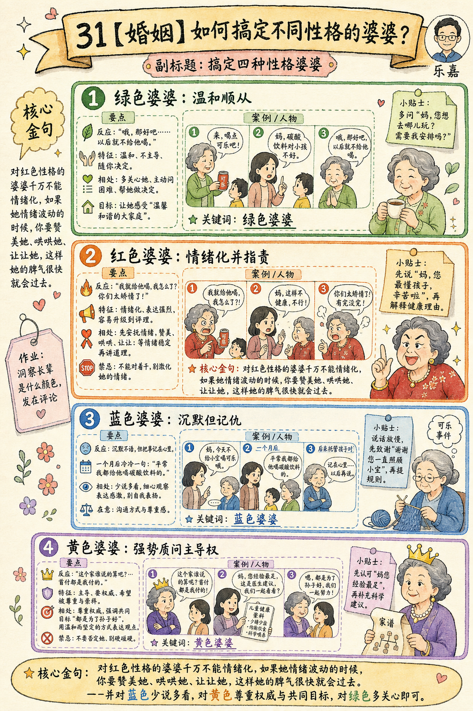
主讲人通过一个婆婆给小孩喝可乐的例子，展示了不同性格婆婆的反应：绿色婆婆温和顺从，红色婆婆情绪化并指责媳妇，蓝色婆婆沉默但记仇，黄色婆婆强势质问家庭主导权。针对每种性格，主讲人给出了具体相处建议：对红色要安抚情绪，对蓝色要细心观察，对黄色要尊重并强调共同目标，对绿色要多关心。最后鼓励听众分析长辈性格并分享评论。
📖 全文解读（点开看全文）
性格色彩情感宝典，让你恋爱快乐，婚姻幸福。我是乐嘉，愿你用性格色彩的力量，使你的生命更美好。 在谈恋爱的时候，女人问男人所有的问题里面有一条排名榜首，那就是"如果你妈和我同时掉到河里，你会先救谁"。这个问题被问到的时候很多人都会抓狂，网上有很多人有创意，就说"我救我妈，我和你一起死"，"我救我妈，因为你很善良啊，如果我不救我妈的话，你不会答应的"，但甭管你怎么回答都是死。这个问题广泛地流行，只能说明一个问题，就是天下的老百姓把媳妇儿和婆婆放在两个对立面。那么如果你是一个媳妇儿，你该如何跟你的婆婆搞好关系呢？这个就和性格色彩有莫大的关联。 举个例子，有一户人家，夫妻两个、还有一个老公的妈（奶奶）、一个小孩儿，这个老公平时特别忙，家里是奶奶帮着小两口带小孩儿。有一天家里的妈妈不在，奶奶就给小孩儿喝了可乐，妈妈回来以后这小孩儿就说"妈妈，你看你平常都不让我喝可乐哦，还是奶奶对我好、我想喝什么就让我喝什么"，结果这个老婆一听非常生气，去找到这个婆婆说"妈，喝碳酸饮料对小孩儿不好的，你怎么能让他喝这个呢"。好，就这件事儿，当婆婆是不同性格的时候，请问他们会有怎样不同的反应？ 第一种婆婆听媳妇儿说了，"哦，那好吧，其实我觉得让孩子喝点糖水没什么太大问题，不过你既然说喝这个不好，那我以后就不给他喝好了"。这种性格的婆婆脾气特别温和、根本就不想去主导家里的任何事儿，很多事儿你问她"妈，那个孩子放暑假以后咱们全家人去旅游好不好"，她说"好啊"，你再问她"妈，你想去哪儿玩儿啊"，"哦，随便去哪儿都行，不去也行，你们定就好了"。那你现在一听就知道这种婆婆就是绿色性格的婆婆，很好说话、不需要你搞定，你只要多关心她、看她有什么搞不定的事儿、你帮她搞定就行了。 第二种婆婆听媳妇儿这么说了以后立刻就不开心了，"我就给他喝、我怎么了？我还不能给孩子喝点糖水了？什么对健康不好啊，你们太矫情了，以前我养大你老公的时候给他吃什么喝什么都没事儿，现在你做媳妇儿的太不尊重老人，瞧你说话的口气，好像你是婆婆、我是媳妇儿一样"，一股脑把一堆的不满统统地发泄出来。这个时候如果这个媳妇儿还要继续跟这个婆婆去争，婆婆的情绪化就会越来越激烈，甚至可能会闹到老公那里让老公给评理。这种婆婆就是红色性格的婆婆，当她有情绪的时候，你跟她怎么讲道理都没有用，你必须先要安抚她的情绪，等她情绪好了以后你再慢慢告诉她为什么给孩子喝碳酸饮料不好。切记切记，不能跟红色性格的婆婆对着干、激化她的情绪，一旦她的情绪被激动起来，那就要命了。 第三种性格的婆婆，如果媳妇儿跟她说"妈，喝碳酸饮料对小孩儿不好，你怎么能让他喝这个呢"，她的反应就是啥都不说，这个媳妇儿见婆婆不搭话、以为婆婆知道自己错了，就没有再继续说下去，从此以后照常相处，只是从此以后媳妇儿的任何事儿这个婆婆啥意见都不发表、啥事儿也不做。一个月以后媳妇儿要出差了，就跟婆婆讲"妈，我要去外地去两天，你帮我照看一下小宝"，婆婆就说"有什么需要特别当心和注意的吗"，这个媳妇儿早就把上个月的事儿忘记了"没什么，和平常一样就行了呀"，婆婆就说"平常我都给他喝碳酸饮料的"，这个时候媳妇儿才明白过来，这个婆婆把一个月以前的事儿一直记在心里。这个婆婆是典型的蓝色性格，他并不想干涉媳妇儿管教孩子的方式，但既然孩子是你的、你不想让他喝碳酸饮料、那就不给他喝好了，但他特别介意的事儿是：第一，你过去从来没跟我说过不给他喝碳酸饮料，结果事情发生了以后你就直接来责怪我、我不爽；第二，你作为媳妇儿，你跟我这个婆婆讲话的时候，你的方式和态度根本没把我当成长辈。这种蓝色性格的婆婆从不大声发火，但是他心里面会积压巨大的很多情绪，和他相处你必须很细心去理解和体会他的意思，以免他对你的不满日积月累、造成不好的后果。 那么最后还剩下第四种婆婆，她听到媳妇儿跟她讲"妈，喝碳酸饮料对小孩儿不好，你怎么能让他喝这个呢"，她一听这话立刻就发怒，但她并没有发泄情绪，她把脸拉下来、冷冷地问"这个家谁说的算呢？我给我自己的孙子喝糖水关你什么事儿啊？你老公是我养大的，你现在住的房子也是我付的首付，你有什么资格对我说三道四"。如果这个媳妇儿比较强势，马上就是两虎相争、必有一伤；媳妇儿如果比较弱势，一秒钟之内气势就被压下去了。这种性格的婆婆是黄色性格的婆婆，凡事都喜欢把主动权抓在自己手里，愿意担当一家之主的责任，也期望所有的小辈们无条件地尊重她、崇拜她。很多媳妇儿在跟黄色婆婆斗智斗勇的时候都会特别有挫败感、甚至觉得这种婆婆最难搞，其实你下回跟黄色性格的婆婆相处的时候，你只要时刻让她感觉到她是受到尊重的、你不要去否定她、你时刻强调你们两个的目标是一致的——都是为了自己的孙子好，把你正确的观点作为补充去提供给她，这样的话她不会跟你有战斗欲、而且她也会审视自己到底做得对不对。 所以今天最后总结一下，当你面对不同性格婆婆的时候，作为媳妇儿你可以关注以下几点：对红色性格的婆婆千万不能情绪化，如果她情绪波动的时候，你要赞美她、哄哄她、让让她，这样她的脾气很快就会过去；对蓝色性格的婆婆切记要少说多看，多观察她的举动、对她默默的付出表示感激，你要为她做一些你力所能及的事儿、帮了她的忙也不要总是自吹自擂地自我表扬，她看得见、心里面都有数得很；对黄色性格的婆婆要灵活有弹性，既要尊重她的权威感、又要坚守自己的底线，但是当你在跟她沟通的时候绝对不可以强硬，你要用比较柔和的方式坚定地表达自己的观点和目标；最后一个，如果你有一个绿色的婆婆，那恭喜你，你只需要多关心她、主动问她有什么困难、有什么难处、帮她做一些决定、让她时刻感觉到她处在一个特别温馨和谐的大家庭里，一切就OK了。 今天这一讲我们讨论的是如何去理解和应对不同性格的婆婆。如果你现在就是一位媳妇儿，我希望这一堂课的方法可以让你马上就用上；如果你是一位老公，帮你老婆协调和你妈的关系对你来讲简直是排名头等大事，你也可以灵活运用这堂课教你的方法，甚至性别换一换、你也可以去搞定不同性格的丈母娘，本质上也是一样的。如果你老婆还没有听这堂课，赶紧把这堂课发给她听；如果你还没有走入到婚姻，现在就开始学习性格色彩那是你最棒的一种选择，因为你不但可以在婚后和你婆婆出现问题的时候知道怎么应对，你也可以在选择你的配偶的时候就同时了解到对方家庭成员的性格、为你未来构建的美好家庭做一个准备。所以今天的作业就是运用今天听到的这些知识，洞察一下你们家的长辈是什么颜色，把你分析的过程发在本期节目的评论当中，我会从中抽取三位送出我的签名书。我们下期节目再见。
【恋爱】总想粘人无法独处怎么办？
1/1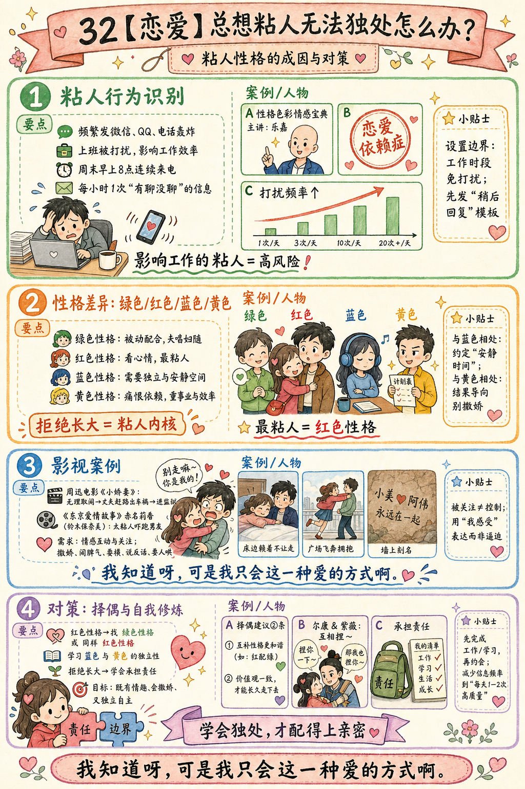
主讲人指出，粘人行为在恋爱中常见，如频繁发微信、打电话，甚至影响对方工作。不同性格对粘人的反应不同：绿色性格被动配合，红色性格看心情，蓝色性格需要独立空间，黄色性格痛恨依赖。最粘人的是红色性格，因为他们需要情感互动和关注，通过撒娇、闹脾气等方式寻求存在感。举例周迅电影《小娇妻》中妻子无理取闹导致丈夫出车祸，以及《东京爱情故事》中赤名莉香因太粘人吓跑男友。建议红色性格可找绿色或同样红色的伴侣，或学习蓝色和黄色的独立性，核心是拒绝长大，需学会承担责任。
📖 全文解读（点开看全文）
性格色彩情感宝典，让你恋爱快乐，婚姻幸福。我是乐嘉，愿你用性格色彩的力量，使你的生命更美好。嗨，你好。请你先听本集之前，先扪心自问：你自己是一个特别在情感上面粘人的人吗？你有遇到过跟你谈恋爱或者相处的人，或者你现在的老公老婆，是一个特别粘的人，搞得你特别烦？如果你有这方面的苦恼，本集就来解决：你怎么样子帮助那些特别粘人的人，从这种情况当中出来。当然，在这一讲里面，我更想讲的是，如果你是一个很粘人的人，你还没有意识到这里面的重大危害，那你就麻烦大了。 这个有的时候，谈恋爱的时候啊，有一种经历：就上班了，大家各忙各的，然后突然他就微信找你，说一些根本有聊没聊的话，基本每个小时就找你一次。有时候发一个轻轻的表情。不忙还好，忙的时候上班，你根本就不想聊天啊。然后你就不回复，然后他就一直不停的跟你发微信，你不回就换QQ。到了周末的时候更过分，你累了一个礼拜，睡了个懒觉，结果早上八点钟手机就开始震，对方微信就来了。你要是不回复继续睡，他就继续发，再不回去就直接打电话。而且特别喜欢经常跟你说一些无关紧要的话题，看了个什么鸡汤美剧特别感动，看了个小短片好快乐，今天同事跟老公吵了个架。但这些东西其实跟你半毛钱的关系都没有，搞得你很烦。然后最后一冲动，因为小事两个人就分手，老死不相往来。 对于另一半特别粘人这件事，不同性格其实有完全不同的反应。假设被粘的人是红色和绿色这两种性格，对依赖的接纳度就会相对很高。但是这两种性格还是有不一样。绿色是不管你什么时候，你来粘我，我就配合你，跟个充气娃娃一样，你让我干啥我就干啥。而红色性格则是取决于他当时的心情。如果今天心情很爽，单位发了奖金或者工作完成了，陪你过过家家呀，调调情啊，也不错。但是他心情不好的时候，你再来捏他，他就感到特别的烦躁。而蓝色性格特别需要安静和独立的空间，如果你死死的捏着他，你还指望他跟你说“哦宝宝不哭，哦宝宝乖”，那你是想错人了。黄色性格完全可以扮演起来保护者的角色，你啥事搞不定，求他帮忙没问题。但黄色最痛恨的就是自己的另一半不能独立自主，啥事都要赖着他。所以如果你用这种撒娇的方式来求黄色性格的呵护，他不仅会很鄙视你，而且他对于你这种情感上的反应，他会立马做一些深度的评估和决定，因为他觉得你的这个方式已经严重的影响到了他的事业和工作。 那么，到底什么性格的人太依赖于别人，又总是喜欢粘着别人的？在很多刚开始接触性格色彩的人就说，那肯定是绿色了。因为那老师，你在以前的节目里面不是讲过吗？绿色性格缺乏主见，绿色性格没有目标，没有方向，什么都不知道，需要别人替他做决定，当然他要去粘住别人咯。但事实上，你的这个想法是绝对错误的。因为绿色性格在做事情的时候，他没有主见，他有依赖。但是绿色性格在情感上面，你把它扔在一个房间里面，他自己一个人可以自得其乐，完全三天三夜你出差不给你打一个电话，一点问题都没有。对于绿色性格来讲，他们习惯并且享受着周而复始的平淡生活。所以老婆做饭，老公劈柴，老公杀猪，老婆磨刀，这种夫唱妇随的场景，其实本质上他谈不上依赖，他只是两个人生活的惯性。而对黄色性格来讲，每个人都应该有能力照顾好自己，发愤图强，不要把自己的人生托付给别人。如果把自己的人生交给别人，就是白痴、懦夫、蠢蛋。再加上黄色性格关注在自己想做的事情上，他们是所有性格里面独立性最强最强的人。排除掉了绿色和黄色。蓝色性格的情感表达方式，在早前几集已经讲了，含蓄内敛。你比方说“老公你爱爱我呀”，“你说嘛”，“老婆我好想你哦”，“你在干什么呢”，这种话蓝色性格绝对在嘴巴上面说不出来。即便他内心里面想了解你，他也不会像澳洲考拉一样死死的绑在你身上。所以三种性格都排除掉，现在答案就跃然于纸上：最粘人的，最依赖的，就是红色性格。 那为什么红色性格很粘人呢？一方面呢，红色性格他很难下定决心，他什么东西都想要，所以他不知道怎么选择，需要别人给的建议。但情感上面还有一个更重要的原因：他们太太太需要情感的互动和关注。他们特别喜欢把自己陷入到爱情当中的另一半，死死的粘在一起，享受这种大腿缠着小腿、小腿缠着手臂的这种纠缠感。他们会把自己的人生全部托付到对方身上。对红色性格来讲，没事他们会折腾一下，那是因为他们随时随地想得到那种“我在他内心很重要”的感觉。他们会不断的强化这个概念，来让自己的心理上得到满足。所以撒娇啊，耍横啊，闹脾气啊，故意说反话呀，让别人过来哄他呀，这些行为的最终目的，都是为了能够得到这种互动和被关注的感觉。可是当他自己爽的时候，别人被折腾得够呛。 在周迅演的一部电影《小娇妻》里面，这个老公明明要赶去上班，开一个非常重要的会议，但是刚刚醒过来的周迅就不让他去。可他自己一点屁事都没有，就在那无理取闹，反正就是不让老公离开床。结果老公实在来不及，在路上开了快车，结果出了车祸，进了监狱。在非常著名的爱情教科书《东京爱情故事》这部电视剧里面，有一个被当年年轻的小伙子称为完美情人的女主角，就是日本的女星铃木保奈美演的那个赤名莉香。但赤名莉香在这部电视剧里面最终没有得到真爱，他没有跟他喜欢的男人走在一起，最重要的原因就是他太粘人，把那个男人给吓跑了。那莉香到底是个什么样的姑娘呢？乐观坚强，不爱遇到困难，会给所有的人一个特别温暖的微笑。遇到喜欢的人就大胆奔放的去追求，无时无刻不希望获得对方的关注。他会要求他爱的人带他去他的故乡，并且在墙上刻下两个人的名字。他会在大广场上面急速飞奔，扑到对方身上。他会为了爱人的业绩，找他自己的朋友一定要去帮助。他会为了维护爱人的名誉，跟别人大声吵架。他会在生气之后夺门而出。如果你听过这张专辑的第二讲“红色性格情感自画像”，你马上就可以推断出来，他是标准的红色性格。虽然这个莉香啊，有很多小脾气，但他在这部电视剧里面的形象绝对是大众情人。当时各大媒体的评价就是：没有任何男人不想要这样的女人。长发大眼，生活开朗，工作卖力，每天玩战，还依偎在你的身边笑嘻嘻的喂你吃喝。但问题来了，为什么就是这样的一个人见人爱的女人，男主角最后把她给放弃掉了呢？答案很简单，因为这个莉香典型的红色性格，太太太粘人和依赖。用这个男主角的话来讲，把他自己压得最后喘不过来气。他是一个乡下到城里面来打拼的凤凰男，对他来讲，莉香给他的爱在刚开始的时候就像向日葵一样，给了他能够在大都市拼搏的勇气，让他体会到了这种被人爱的美好。但时间长了以后，他才发现，每当这个莉香对他投怀送抱给他爱的时候，他必须要同样热情的给予对方回馈，然后才会满意。而莉香想要的这种超前卫的恋爱的方式，对他这样的一个乡下来的屌丝是没有办法接受的。当他希望自己在事业上拼命靠自己打拼的时候，莉香又千方百计的用各种各样的途径帮她。但最后莉香已经得到出国工作的机会了，然后却还是让她替她决定，通过这个来考验她的真心。最终这个男主角被她折磨得体无完肤，选择了另外一个一点都不粘人的女子结婚。这个男主角的确有被莉香感动过，而且这个女孩为她做的每一件事都足以让一个男人感动得惊心动魄。但是在感动的同时，这个男人也会感受到强大的压迫感。就好像一个人对着你把他的五脏六腑的真心全部都挖出来，那你该怎么去回报呢？回报就是你要把你整个脑浆都要挖出来去回报。如果对方给你的关注，对方又期待得到同样的关注，你如果做不到同等程度的回应，他就会很生气。而如果你做到了同等程度的回应，这个女孩下一次对你的要求就会更高。所以在这部剧里面，其他人都看不下去的时候，就去指责莉香：“嘿，你的爱情太太沉重了。”可这个红色性格的莉香就说了一句话：“我知道呀，可是我只会这一种爱的方式啊。”所以你看，为什么这部连续剧被称为叫爱情教科书呢？那是因为男女主角最终没走到一起，而最核心的原因就是这种红色性格的女孩太粘人，太依赖自己的另一半，把对方活活给逼死了，顺便连自己的真爱也都玩完了。 那接下来，我就要给这些有恋爱依赖症、在爱情当中习惯粘着别人的红色性格的人，给你开个药方。那就是，你可以考虑一下有两个比较优质的择偶对象。第一个，你可以去找一个绿色性格。因为绿色有个特点呢，他们以他人为中心，为了你他自己可以不要的。如果你粘这样的人，他是绝对不会抗拒和厌烦的。不过我担心，你去粘绿色的时候，绿色不好玩，你没啥兴趣去粘他。第二个，你可以去捏另外一个跟你一样也是特别特别捏的、依赖性很强的红色性格的男人。你们两个互相捏，天天捏，就像尔康跟紫薇一样，你捏我，我捏你，歪歪抱，电话：“老公我好想你，你想不想我？”“老婆我也好想你，我真的好想翘班现在跟你搂在怀里。”“讨厌了，你怎么可以这个样子的。”越捏越上瘾，越捏越上火，两个身体的荷尔蒙取之不尽，用之不竭，根本谁都不会烦谁。很好啊，你们享受这样的状况，棒极了。可是如果你呢，觉得这样粘特别痛苦，你已经因为这样的粘赶跑了很多人了，你想把自己这个毛病给治掉。我的建议就是，你可以把这张专辑和上一张读新书专辑仔细听一下，学一下蓝色和黄色的优势。然后你要了解一下这两种性格，他们为什么能够做到。那你知道为什么红色性格的人骨子里面总是这么粘吗？你知道原因吗？原因就是，但凡喜欢粘人和依赖别人的人，基本上他的内心深处都会拒绝长大。他们希望自己是一个永远长不大的孩子，别人能够呵护自己，帮自己摆平一切事情。但其实你是在逃避长大，你不愿意为自己的人生承担责任。只有你自己学会承担，学会正确的面对压力，才能够去读懂那些其实非常讨厌你粘人的那些人，你才能够去搞定和影响，让更多的人能够接纳你和喜欢你。而性格当中的这种苦楚，才有可能会迎刃而解。 如果你觉得你现在似乎已经找到了一扇门的方向，你只是不知道该如何大踏步的推开这扇门，走进门里面来，取得你内心真正想要的那种力量。我期待着你有一天能够在线下的课程里面，在研讨会里面，我们相遇。我们一起从所有的同学当中和老师身上来得到我们的力量，帮助我们变成一个既有情趣，又好玩，又会撒娇，又柔情，同时又独立自主的人。
【影视分析】《蜘蛛侠》--如何发现那些隐藏的嫉妒心
1/1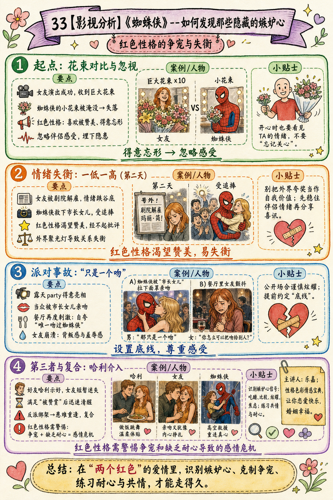
主讲人以《蜘蛛侠》为例，分析两个红色性格在恋爱中的冲突。蜘蛛侠女友演出成功，收到巨大花束，蜘蛛侠送的小花束被忽视，他感到失落。第二天女友被解雇，蜘蛛侠却因救市长女儿受追捧，两人情绪一低一高。蜘蛛侠在派对上得意忘形，当众被市长女儿亲吻，女友崩溃。蜘蛛侠认为“只是一个吻”，女友却觉得背叛。红色性格渴望赞美，易因外界关注而失衡，忽略伴侣感受。最后女友接受蜘蛛侠好友哈利的爱慕，但内心仍爱蜘蛛侠，在危机中两人复合。主讲人指出红色性格需警惕争宠和缺乏耐心导致的感情危机。
📖 全文解读（点开看全文）
性格色彩情感宝典，让你恋爱快乐，婚姻幸福。我是乐嘉，愿你用性格色彩的力量，使你的生命更美好。 嗨，我的朋友你好。在我放了几讲关于红蓝配的爱情电影诠释之后，有人问我有没有红色跟红色搭配的爱情电影，可以让他更深刻地了解它们的冲突。今天我来推荐一部好莱坞商业影片，其实我很少看商业片，但因为这部片知道的人比较多，所以我想对这部片子做一些深度的剖析。不管你看过没看过，在我讲解情节的时候，你就会发现你周围身边似乎每天都有这样的事情发生。这部片子的名字就是《蜘蛛侠》。 蜘蛛侠白天当摄影记者，晚上他穿上蜘蛛衣服、戴上面具出来救人，在全世界唯一知道他真实身份的只有他女朋友一个人。他女朋友是一个舞台剧的演员、非常优秀，在一个特别著名的剧院里面表演。这就是他们两个人的背景资料。有一天，这个蜘蛛侠去看他女朋友表演，演出结束以后他捧着一大束花到了后台，他女朋友非常高兴地立即指给他看"你看你看，我的梳妆台前面有好大好大一盆巨大的花束"，这个花束大到比蜘蛛侠准备给女朋友送的那个要大个十倍，他立即就露出回避的神情，而他女朋友当时还沉浸在演出成功的巨大喜悦当中、完全没有觉察到蜘蛛侠的不开心。这两个人的性格里面，女孩儿就属于典型的红色性格，红色喜欢被赞美、很容易陶醉在赞美里面、忘记了身边的人有可能会尴尬。如果你的伴侣也是一个红色性格，他可能没有办法分享到你同样的喜悦、反而会感受到轻视和冷落。所以两个红色性格相互恋爱，第一个最有可能碰到的问题就是他们没有关心到别人的感受、因为太得意忘形——倒不是说他不愿意关心，是因为他太得意忘形的时候忘记了关心，他没有处理好这个，那么就会成为两个人以后相处的隐患。 后来第二天报纸登出评论，开始批判蜘蛛侠的女朋友，说她唱歌的声音太小、中气不足，这个女朋友到了剧院里面的时候，发现居然有另外一个人在彩排，因为她已经被剧院炒鱿鱼炒掉了，瞬间这个红色性格的她心情跌到谷底。而与此同时，蜘蛛侠的春天到了，他戴着面具把市长的女儿给救了、广受报刊媒体的好评、自信心大大提升，市长的女儿对他也无比崇拜。你来看啊，这个时候就凸显出来这两个人的性格特点：红色性格特别喜欢赞美、经不起批评，他对于赞美的渴求让他觉得，如果别人捧他，他就会觉得人生充满了幸福感，如果别人批评他、贬损他，她就觉得人生毫无意义。在恋爱的时候，当这个红色性格的女孩儿觉得自己不能够被她的情人肯定的时候，她就会怀疑男方对她的真心，她的潜台词就是"既然我这么差，那你肯定也不会真心爱我"；可是如果当事人是这个男方，他自己事业受挫的时候，他会有另外一个声音"我现在事业这么差、这么不行，我怎么有能力负担起照顾你的责任呢"，这句话就跟很多男孩儿经常喜欢跟女人讲"我没有能力买房，我们怎么能结婚呢"道理如出一辙，其实他们都是用这样的方法来封闭跟对方的交流。 然后这个故事情节影片继续往下走。蜘蛛侠做了一件非常要命的事儿，这件性格当中要命的错误几乎把蜘蛛侠的女友打入了崩溃的边缘。这个蜘蛛侠非常爱他的女朋友，他就想向女朋友求婚、买了戒指，与此同时，市长的女儿为蜘蛛侠办了一个特别盛大的露天party，然后蜘蛛侠就得意了，一得意就穿上蜘蛛侠的制服、戴上面具，悄悄跟他女朋友说"看着吧，待会儿啊，我会从那个角度飞过来"，他女朋友其实心情很不好，但为了配合他还是很崇拜地看着他，没想到蜘蛛侠飞出来的时候全场掌声雷动，市长的女儿无比的崇拜让蜘蛛侠得意忘形，他忘记他女朋友的存在，结果一时兴起让那个市长的女儿吻他，当这个市长的女儿把他的面罩拉开来深吻他的时候，他女朋友痛哭流涕、转身就跑。你听到刚才这一幕的时候有什么感受？反正我回忆我周围身边一些人，在恋爱当中经常会遇到各种各样的问题、悲剧一幕幕地重演、不停地迷失自我、完全不知道该如何防范和应对。简单来讲，如果你不能知道别人在想些什么，你就不知道别人能够容忍的底线是什么，你就不知道自己行动付出的代价是什么，你就不知道会给自己和对方造成什么样的痛苦和困难。对于红色性格的人来讲，如果他出了名以后，他很有可能在做事情的时候凭借着直觉和快感（其实他没出名的时候也是这样），当他自己很快乐的时候，他就会以为别人跟他一样快乐，他有的时候会无意当中做出来一些事儿、踩在别人的伤口上，最后他自己付出代价。这一件事儿的核心麻烦并不在于他吻了市长的女儿，而是因为在做这个事儿之前，他没考虑到女朋友的感受，很快就付出代价。 蜘蛛侠亲了市长的女儿、飞走了，结果当天他约他女朋友在一个高级餐厅准备求婚，他女朋友进来的时候已经痛苦不堪，而这个时候刚刚好市长女儿也走到这个餐厅，虽然她不知道脱下面具的蜘蛛侠就是她眼前这个人，但她很自然地就弹起来、说自己是这个世界上唯一一个吻过蜘蛛侠的女人、感到特别骄傲，那这句话又把他女朋友给刺激到了，他女朋友全身发抖，市长女儿走了以后，他女朋友就疯了"你怎么可以把吻给别人呢？那是属于我们之间的，你怎么可以把它给别人呢"，蜘蛛侠很茫然"那只是一个吻而已"，他女朋友嚎啕大哭就跑走了，到最后他连拿出戒指求婚的机会都没有。所以红色性格他们有的时候认为自己就是世界的中心、其他的人都是观众，你给他掌声红色就会卖力表演，但可惜他的风头被另外一个人抢去的时候，他们很容易心理失衡；这个他女朋友也是红色，根本就不给别人说话的机会就断送了自己的幸福，她不肯把别人的话听完，所以是完全没有耐心的人。 那最后的结局我们现在可以来看。蜘蛛侠有个好朋友叫哈利，他很恨蜘蛛侠、却很爱蜘蛛侠的女朋友，当他发现机会来的时候，就邀请这个蜘蛛侠的女朋友到自己家里面一起做饭、跳舞、倾诉他内心的爱慕之情，他女朋友在悲痛之际突然发现有个男人求爱、然后也晕了，投入到了哈利的怀抱、亲吻了他，但是她又觉得什么地方哪里不对、又拒绝了他。这两个红色性格恋爱的时候最容易出现的一种情况就是：一方认为另一方不理解他、不欣赏他、不懂得他的好、不知道珍惜，所以当第三者出现的时候，如果第三者以崇拜和爱慕的眼光对自己，他就会迷失。这种迷失倒并不一定是移情别恋，主要是他从第三个人那里得到了他内心最需要的被爱、被赞赏、被欣赏的满足，可是在满足之后、当他心态恢复平衡了以后，他可能还会马上意识到自己真爱的还是前面那个人。这一点就解释了为什么红色性格的人在爱情当中会犹豫反复的很重要的根源，我刚才讲的这一点对你会有巨大的借鉴作用。 在这部影片的结尾，编剧设计得很巧妙，来了一个坏人，在一个危险的情境之下绑架了蜘蛛侠的女朋友，那美式大片蜘蛛侠肯定去拯救她，患难之中两个人情感的线重新对接上了，又把这个红色性格最强烈的爱给激发在一起，两个人最后终于走到一起、得来不易。所以我从头再来回顾一遍，在今天这一讲里面我想重点提到的就是红色性格：他们要特别小心的是，两个红色在一起会为了争取得到外界的关注、宠爱而相互争宠，当另外一方失落的时候、而另一个红色没有关注到，他的内心就有可能会失衡，而这种失衡其实最重要的是在内心他期望得到的就是不停的赞赏、接纳、认可以及被爱。可如果他们两个人都互相做不到、又都没有耐心、不听对方的解释，外界又有很多诱惑，势必最后就会败掉。假设在你的人生情感历程里有同样的经历和同样的感受，请你不要吝啬分享给我。我们下一讲再见。
【影视分析】《那年花开月正圆》--你对他好的方式是他要的吗?
1/1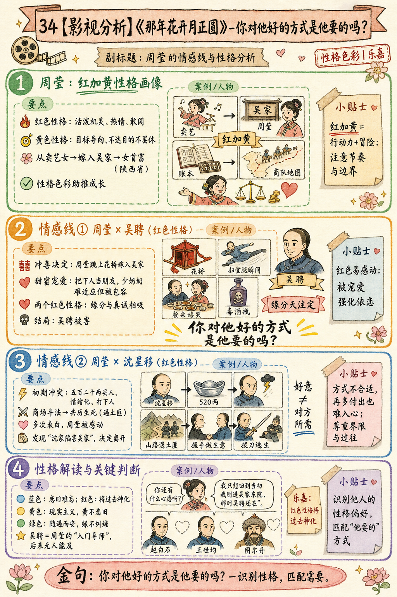
乐嘉以《那年花开月正圆》为例，分析周莹的红加黄性格。她因红色性格的活泼机灵和黄色性格的目标导向，从卖艺女嫁入吴家，后成女首富。情感上，她与吴聘（红色性格）因缘分和宠爱甜蜜结合，但吴聘被害。与沈星移（红色性格）从冲突到共历生死，周莹感动却因沈家陷害吴家而离开。乐嘉指出，周莹沉溺旧情，因红色性格将过去神化，且吴聘是她的入门导师，后来无人能及。
📖 全文解读（点开看全文）
性格色彩情感宝典，让你恋爱快乐，婚姻幸福。我是乐嘉，愿你用性格色彩的力量，使你的生命更美好。 从这一讲开始，我们来换换口味。在这张专辑一开始的时候我就给你报告过，学习性格色彩有很多方法，除了正儿八经地听微课、听原理、听案例、听故事以外，看电影电视是非常好的学性格色彩的方法。以前你在看的时候，因为没有工具、没有系统和体系的支撑，看过娱乐完就拉倒了，但当你有了性格色彩的工具以后，你会发现影视剧当中每个人物的命运、以及人物和人物之间的冲突和关系，几乎无一例外全是性格在支撑着。所以我们接下来会拿很多热播的、有趣的、大家关注关心的影视作品拿来分析，一边分析、当你回忆细节的时候，自然而然你就学会性格色彩了。 那么今天我们来分析的就是《那年花开月正圆》，这部关于陕西省女首富周莹的电视剧最近基本是霸屏。对于周莹这个人，介绍是有目标感、有魄力、非常有经商的头脑，只能判断出她是一个黄色很多的人，但因为没有史实、没有细节，分析就没有意义，所以我们今天重点来分析在电视剧当中由孙俪扮演的这个角色。在性格色彩里面，这是一个典型的红加黄性格的女性，她从一个特别平凡的走江湖卖艺的女孩，机缘巧合最后嫁给了超级富二代何润东扮演的吴聘，吴聘死了以后，她独自一个人撑起了吴家的生意，经历了无数的挑战和风波，最后生意遍及全国、成为了女首富。 在这部片子里面，围绕着周莹有两条最主要的情感线。第一条你已经知道，就是周莹和吴聘。在周莹刚刚进到吴家的时候，两个人的身份特别悬殊，一个是大少爷、一个是小丫头，但是这个小丫头的性格却死死地吸引了吴聘——这个小丫头既有红色性格的活泼机灵、又有黄色性格的不达目标誓不罢休。一开始这个丫头想到吴家去当学徒，吴聘没同意，因为从来就没有女人做生意的先例，但是这个小丫头一边干活一边偷偷地溜到学堂外面偷听、把很多工作给搞砸了，很多地方都不愿意收她，所以吴聘没办法、只好把周莹留在自己的房间里面干活。没想到趁他不在，这小丫头绘声绘色地开始给大家讲故事、连讲带演，吴聘一回来，一个扫堂腿把她扫到地上。吴聘表面上假装生气，但其实心里面他是挺喜欢这个小丫头的，因为大少爷吴聘本人也是一个红色性格，他对于这个小丫头的天真活泼非常喜爱。后来吴聘给这个周莹制造机会、让她终于当上了学徒，两个人相处久了以后开始渐渐有了好感。虽然吴聘本人是大少爷，但是他一直把下人当成朋友一样地关心，而这个小丫头我前面已经讲了，她因为是红色性格、非常容易感动。 这两个人命运的转折点就出现在：大少爷因为受伤昏迷，家里面为他定了亲事，娶那个胡杏儿扮演的胡家大小姐胡咏梅过门给他冲喜，但花轿抬到胡家门口的时候，这个胡大小姐的爹绝不允许她嫁过去，所以花轿又空空地抬回到了吴家。当吴家上下都觉得冲喜救这个吴聘毫无希望的时候，周莹蹭的一下子跳上了花轿——她之所以做这个惊世骇俗的动作，就是出于她天性当中热情、乐于助人的红色性格的特质，因为她发自内心地觉得这个大少爷是个好人、就应该尽力帮他；同时因为她性格里面有黄色的快速解决问题的特点，既然冲喜可以把大少爷的命给救了、而那个胡大小姐又不肯嫁，那就我来嫁好了，不管谁嫁、只要能把大少爷救回来就行，其他的事儿等救回来以后再说。等到这个大少爷醒来以后看见嫁给他的是这个周莹，一点儿都没排斥、觉得特别开心，因为他心里面喜欢的就是这个女孩儿，对于这种缘分天注定的感觉，对红色性格而言这种感受太美好了。结婚以后周莹很难适应当少奶奶的生活习惯，但这个大少爷对她非常宠爱、经常带她玩好的吃好的，家里面的爹娘、姥爷和太太去骂这个小丫头的时候，吴聘就把所有的责任全都揽在自己身上，两个人过得非常甜蜜幸福，是标准的两个红色性格恋爱的美好结局。可不幸的事情是，最后吴聘被人毒害身亡。 这部戏的第二条主要的情感线是周莹和陈晓扮演的沈星移这两者之间。在和吴聘结婚以前，沈星移就已经喜欢上了这个周莹，但周莹其实特别不喜欢这个沈家的二少爷。其实这个人也是一个红色性格，如果说吴聘的身上集中了所有红色性格的优点——乐于助人、待人真诚、又把握得非常好的尺度、也没有什么红色性格的缺点（口无遮拦），对自己的行为也特别注意；但是沈星移这个沈家二少爷，在刚开始的时候他的红色性格的缺点确实比较突出，他花五百二十两银子买了周莹、让他爹大动肝火，为了满足他自己一时的开心、完全不考虑会有什么后果，而且这个沈家二少爷的情绪化是非常恐怖的、很容易闹脾气、还会动手打下人，下人们对他非常害怕、能躲则躲。在吴聘死了以后，周莹当上了吴家的当家，而这个沈家二少爷代表沈家、两个人想尽办法做生意，变成了生意场上的冤家。在不停斗法的过程里面，这个沈家二少爷看到这个周莹红色性格的古灵精怪、层出不穷的点子，也看到了这个周莹黄色性格当中的以目标跟结果为导向、霸气实干，两个人做生意、最后路上还遇到了土匪、经历了共同的生死、差点丢了性命。在最后生死关头，沈家二少爷又表白了，这个时候孙俪扮演的这个周莹忍不住有点感动，但最后还是没有接受这个沈家二少爷。后来沈家二少爷为这个周莹做了很多事儿，周莹慢慢地越来越感动、越来越感动，甚至真的有一天打算接受这个沈家二少爷的时候，突然她发现原来当年就是沈家陷害了吴家，周莹一下子情感的天平完全失衡、彻底离开了这个沈家二少爷，因为在她的心目里面，她死去的那个夫君才永远是最最重要的。 在这部戏里面，你会发现喜欢周莹的人其实很多，除了吴聘和沈家二少爷以外，还有那个富有正义感的官员赵白石，又有一个一直追随着周莹协助她做生意的暖男王世均，还有商场上的合作伙伴那个洋人图尔丹。但是当这个赵白石问周莹"你还有什么心愿吗"，她说"我只想回到当初我刚进吴家东院、那时吴聘还在"，即便是有了那么多的男人追求、愿意为她付出一切，她的心依旧停在过去的情感。 几年以前我写了一本书叫《写给单身的你》，这本书里面我跟你分析过哪些女人会沉溺在昔日的恋情当中走不出来，答案是有两种性格完全不会，一种是黄、一种是绿。因为黄色是现实主义者，他对于已经走掉的那个情感，觉得想再多了也没有用、也浪费时间，我还不如花出时间关注在当下和未来；而绿色性格的特点呢，因为他天性平和、不会跟自己较劲儿，他对情感的态度也就是随遇而安、不去强求。因此黄色和绿色这两种性格几乎都不会沉溺在旧日的恋情当中无法自拔。可是蓝色和红色这两种性格的可能性都非常大，只不过他们的差别是：蓝色是天性的恋旧、难以忘怀，而红色性格是因为他前段情感太符合他自己的理想状态，所以时间流逝、他一遇到现实当中的压力，红色就总会想回到过去、去寻找那段回忆当中的快乐，久而久之以后他会自己把过去那段情感给神化，然后他再去看现实当中的人都觉得不如那个已经被他神化的前任。而且你不要忘记，在这部戏里面孙俪扮演的周莹在当年遇到这个吴聘的时候，她自己其实是一个小丫头、对方是一个大少爷，她当时对做生意一窍不通，所以在内心里面她觉得吴聘是她的入门导师、对他怀有极大的崇拜，可当这个吴聘死了以后，周莹自己做生意的功夫越来越高、内心越来越强大，当她以后再遇到任何男人，她发现其实都不是她的对手、不能够让她发自内心地崇拜，当然就很难再找到当年那种她对于吴聘的感觉。 今天时间有限，不能把剧里面所有的情侣一一拿出来分析。如果你对于不同性格情感的搭配碰撞有兴趣的话，你可以留意接下来的微课，我会对各种各样不同性格的人在相处搭配碰撞当中详尽地分析他们的好以及不好。当你了解了这些以后，你就会很轻易地发现，为什么在你周围的人际关系里面有的人跟你一拍即合、而有的人跟你三生三世都打不上边儿。关于影视性格分析的微课还会继续，如果你希望我分析哪部剧或者哪部电影，请你在评论当中留言，留言多的我会在下一讲当中继续跟你分享。
【方法】事业男和多情女怎么办?
1/1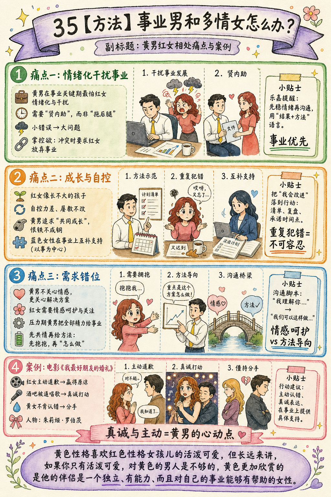
乐嘉分析了黄男与红女搭配的三大痛点：黄男最恨红女情绪化干扰其事业发展，希望伴侣是贤内助而非拖后腿；黄男要求伴侣有个人成长，但红女像长不大的孩子，自控力差且屡教不改，黄男会因恨铁不成钢而愤怒；黄男不关心情感需求，而红女需要情感呵护，双方需求错位。乐嘉提醒红女，小错误对黄男可能是大问题，黄男欣赏独立有能力的伴侣，且掌控欲强，事业冲突时会要求红女放弃事业。他举了电影《我最好朋友的婚礼》为例：红女主动道歉赢得黄男原谅，而黄女因不肯认错导致分手；红女在酒吧被逼唱歌，却因真诚打动听众和黄男，说明黄男会被红女的真诚和主动吸引。
📖 全文解读（点开看全文）
性格色彩情感宝典，让你恋爱快乐，婚姻幸福。我是乐嘉，愿你用性格色彩的力量，使你的生命更美好。 嗨，大家好，上两讲我们聊了红色和黄色一旦搭配碰撞在一起，他们的好处和坏处。聊完了以后，有很多人就向我提问，说"乐老师，黄男红女和黄女红男这两对不同的搭配组合在一起会有什么差异吗"，那今天我想借这个话题来稍微聊一聊。 如果是黄男和红女的搭配，你知道黄男最恨红女的什么吗？第一点，如果这个黄色的男人自己的事业正在发展的核心阶段、关键阶段，他最不能够忍受的就是红色女人无休无止的情绪化——当你对黄色性格的事业发展有巨大扰乱的时候，这是绝对不可以被黄色性格容忍的。第二件事情，黄色的男人对他来讲，婚姻和恋爱是自己人生当中给予自己支持的强有力的一个部分，如果这个女的能够在事业上面给他起到很好的支持作用、就会成为他的贤内助、他就会越来越喜欢，但是如果这个女孩儿不能够在事业上面起到很好的支持作用，这就会让这个男人有一点点沮丧，而如果你不仅起不到支持作用、还在拉后腿，那这个男的就绝对会愤怒。我想特别强调的观点是，在之后几集我会来聊黄色和蓝色应该如何相处，在所有性格的相处里面，黄男和蓝女的相处是最需要高技巧的，但蓝色性格的女性在事业上因为她们的仔细、计划、对事情的完美主义的追求，恰恰对黄色的男人是有互补、有支持的，这是因为黄色跟蓝色这两个颜色都是以事情为中心的，所以黄色和蓝色虽然在相处上面更难，但是蓝色经常会成为黄色事业上的支撑者，而这一点红色其实做得是很不好的。 第三点黄男对于红女比较痛恨的原因。先前我也聊过，黄色在婚姻恋爱里面特别希望他的伴侣是有个人成长的，他希望我跟你在一起、两个人的两性关系能够让大家共同成长，可是遗憾的事情是，红色的女人她们是长不大的孩子、而且永远在内心深处她也不想长大。所以假设这个黄色男人他的事业发展非常顺利的时候那就没啥问题，可是如果黄色性格的事业出现障碍的时候，那所有不是问题的问题都将成为问题。而且红色女性的控制能力、自控情绪的能力、自控行为的能力都特别差，而且屡教不改，这个就会让黄色对红色的耐心降到最低点。当红色的女性重复反复犯错误的时候，黄色首先第一反应就是骂你"为什么不按照我教你的方法做呀"——对黄色来讲他要的是解决方法，他希望红色性格的女人变得更好，但红色性格对情感呵护的需求是非常高的，她觉得"黄色，我需要情感呵护的时候你就是骂我"，而黄色性格的痛苦是在于他恨铁不成钢，这一点两个人的需求完全不一样，所以经常他们会出现错位。更大的麻烦是，黄色性格的男人完全不关心情感、但红色在情感方面的需求很多，而黄色性格不能够容忍的是女人犯错、而且是重复地犯错、翻来覆去地犯错，对他来讲那就是一个愚蠢的人，但很遗憾，红色就是经常犯错、而且是不长脑子反复犯错，所以黄色就像我刚才讲的一样、他们不能够容忍愚蠢。 以前我强调比较多的是黄色性格的冷酷、无情，今天我想特别提醒一下红色性格多的女性：有的时候你自己认为特别小的一个错误，但是对于黄色来讲他会认为是非常大的错误。黄色性格喜欢红色性格女孩儿的活泼可爱，但长远来讲，如果你只有活泼可爱，对黄色的男人是不够的，黄色更加欣赏的是他的伴侣是一个独立、有能力、而且对自己的事业能够有帮助的女性。另一方面需要特别提醒的是，黄色其实在骨子里面有掌控欲望，他希望这个女孩儿的事业是纳入到自己事业轨迹里面的，当双方的事业产生冲突的时候，黄色男人一定会要求那个女人放弃掉她的事业、跟随着他，如果双方的事业有冲突，对于黄色来讲他们会很难去包容理解。而如果这个黄色性格面临事业压力的时候，他势必会把所有的时间和精力全部集中在事业上面、根本没有任何精神去照顾关心这个红色性格，可红色性格因为有孩子气、有的时候不懂事儿，她觉得"我需要情感的关注啊，你看你自己天天在忙、也不关心我"，然后就开始闹一闹，一干扰黄色，黄色就愤怒、烦躁不堪。这里我可以顺便提醒一下，蓝色性格的女性在事业上因为她对黄色男人的互补和支持（前面我分析过，这是因为他们两个人都对自己的要求比较高、而且这两种性格在骨子最深处都有强烈的不断要求自己去成长的需求）。 还有朋友就问我"那你讲了这么多黄和红相处不好的事情，你能不能举一些例子来说明黄和红他们怎么喜欢的呢？黄男怎么喜欢红女"？那我就要举一个电影的例子了。有一个听友就说"乐先生啊，你怎么老是举一些电影的例子，难道你没事儿就只会看电影和电视吗"，我其实特别想回答他：邓小平一生最喜欢干两件事儿，一个是打牌、一个是看金庸小说，但这完全不妨碍他成为伟大的政治家。所以在电影电视里面有很多耳熟能详的情节，所有影视剧作品里面的这些情节几乎都是来源于现实，但现实永远比影视剧情节更加精彩。在很多年以前，好莱坞有一部电影是朱莉娅·罗伯茨演的《我最好朋友的婚礼》，在这部电影里面，在情场上战胜那个黄色性格朱莉娅·罗伯茨的就是一个红色性格的女人，她和朱莉娅·罗伯茨共同爱上的一个男人就是黄色性格。这里面有很有趣的情节：有一天，这个红色的女孩儿说错一句话，这个黄男特别生气、转身就走，这个时候红色的女孩儿就赶紧跑上去、流着眼泪对他说"对不起对不起，我错了，我下次再也不那么说了，你不要再生气了好不好"，这个黄色男人很快就接受了她的道歉，但是旁观的这个黄色性格的朱莉娅·罗伯茨当时看到了以后就非常惊讶，她就回想她自己以前和这个黄色男人的相处，一旦有了矛盾、两个人谁都不肯认错，结果到最后两个人就扛啊、硬啊、憋气啊、赌气啊、要面子啊，结果到最后就掰掉了——在那一刻她突然之间意识到这个红色女孩儿主动道歉的行为、其实她自己这种性格是完全做不到的。还有一次，在酒吧里面，这个黄女故意下套害这个红色的女孩儿、把这个不会唱歌的红色女孩儿逼上台让她唱歌、活活让她当众出丑，那个红色女孩儿上台以后一个劲儿地死命地唱、一边唱一边跑，但还是傻乎乎非常投入、流着眼泪哭泣地把歌唱完了，结果她的眼泪以及在唱歌的时候对爱情的那种向往和真诚、反而把台下所有的听众全部打动了，大家给她非常热烈的掌声，到最后这个黄色性格的男人就一把把这个红女搂到怀里，朱莉娅·罗伯茨最后就失算了。所以我刚才讲的两个故事就是为什么黄男会喜欢红女。 今天这一讲主要是回答听友的问题，来跟大家聊一聊黄男红女在一起相处出现的有趣的事儿。我们下期再见。
【方法】事业女和多情男怎么办?
1/1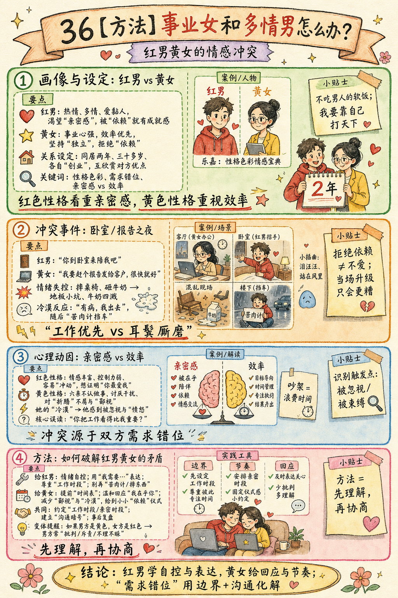
乐嘉以自身经历和一对30多岁情侣的案例，说明红色性格男性与黄色性格女性恋爱时的典型冲突。红男喜欢粘人，希望女友依赖他，但黄女事业心强，拒绝依赖，坚持独立。一次红男要求黄女到卧室陪他，黄女因工作拒绝，红男情绪失控摔东西，黄女冷漠离开。红男用苦肉计挡车，黄女心软但仍不妥协。乐嘉指出，红男看重亲密感，黄女重视效率，冲突源于双方需求错位。黄女对红男的冲动感到不屑，红男则因被忽视而愤怒。
📖 全文解读（点开看全文）
性格色彩情感宝典，让你恋爱快乐，婚姻幸福。我是乐嘉，愿你用性格色彩的力量使你的生命更美好。 嗨，我的朋友，你好。之前我聊了红黄配的好处和坏处，有朋友在评论区向我提问问题，说如果是一个红色的男人遇到一个黄色的女人，和黄色的男人遇到红色的女人，会有什么差别吗？所以我今天就想来讲。 当一个红男遇到一个黄女的时候，红男一样也会非常悲伤。这一点我自己深有体会，因为当年我曾经谈过一个非常黄色性格的女朋友，但因为我的性格里面除了典型的红以外，还掺杂了一部分的黄色的成分，所以我的反应可能是两种性格的结合体。 我今天想来聊一个典型的红色性格的男性和一个典型黄色性格的女性。他们两个人同居了两年，两个人都有自己不错的公司，两个人都自己创业。女方特别喜欢男方的善良、热情、乐于助人、表达情感的炽热，她觉得很好；而男方觉得这个女孩独立、有思想、自信、果断，这些都是非常优秀的品质。两个人在一起的时候，这个女孩就觉得男的特别喜欢粘着她，巴不得最好每天退掉所有的应酬在家里面。这个事呢，让这个女的觉得男的太作了，心里面不爽。因为她自己的公司刚起步没多久，需要有特别多的时间和精力，她不像这个男孩的公司已经步入正轨了，相对来讲有比较多的时间。 那么为了让这两个人能够长相厮守，这个男孩就一直劝说这个黄色性格的女孩放弃，到自己的公司去帮她的忙，两个人携手一起干，但屡次都被这个女孩拒绝。女孩说：“我不吃男人的软饭，我要靠自己来打天下。”义正言辞拒绝了几次以后，就让这个红色性格的男孩特别的失落，因为她其实觉得如果一个女的愿意去依赖她，她还挺有成就感的。但这个女的根本人家也不鸟的，也不愿意依赖她，他就特别沮丧，特别愤怒，失落。结果两个人就经常吵架。 有一天呢，这个女孩下班回来了以后，正在专心电脑上面工作。这个红色性格的男孩在旁边晃吧晃吧晃了一阵以后呢，终于忍不住了就说话：“哎，你到卧室里面来坐吧，别在客厅了。”“我要赶个报告发给客户，很快就好，你先进去，我坐完就进来。”这个男的继续说：“你进来写不是一样吗？我也不会吵你的，你管你写，我管我上网，进来吧，很快就好。你干嘛一定要在客厅啊？在卧室里面写不是一样吗？你快点进来了。”因为这个黄色性格的女孩也不理他，当他放个屁，继续干活，不再说话。结果这个男的发现女的不理他，他就气不打一处来，赶紧就抓起这个餐桌椅摔在地上，结果把地板砸出一个小坑。这个女孩就抬了抬眼皮，用特别不屑的眼神看了一下这个男人，继续干活，当他没存在。在这种眼神鄙视的巨大刺激下，这个红色性格的男孩受到了巨大的侮辱，又没有办法，发现她就赶紧举起刚刚超市买回来的一大箱牛奶，死命的往地上摔，结果牛奶来了一个天女散花。这女孩知道今天就甭想工作了，也不想跟她吵，拿起车钥匙，语气特别低地只说了一句话：“有病，我出去。”然后就走出去了，就把这个男孩一个人留在房间里面，独自浑身发抖。 等到那个女孩准备车发动的时候呢，发现这个男孩已经用了特别娴熟的苦肉计，裹着一件单薄的衬衫，瑟瑟发抖，挡在楼下的车前面。这个女孩心有不忍：“你上车来吧，别站在风里。”这个男孩就站在那儿不动，眼泪汪汪地挡在前面。那女孩知道自己今天肯定走不掉了，跳下车，黄色性格把钥匙扔在车里面，说了一句：“你上车坐着吧，外面太冷。”就不大理他，赶紧回家。等到那个女孩跑到七楼家门口的时候，发现他自己没带钥匙，他也进不了门。然后呢，他就在这个楼梯的过道里面向下面走了一层，走到七楼的过道，他站在七楼过道的窗口上往下面看，刚好看到这个他男朋友锁上车门，拼命往楼里面跑。他就想呢，他一定是坐着那个电梯上了七楼。然后下面的情节就很搞笑了，有点像绕口令，我讲得慢一点，希望你能听懂。 哎呀，整个过程，男孩发现女孩不在七楼，马上又坐电梯回到一楼，跑到车上面去看，结果车里啥都没有。再第二次跑到电梯上到七楼，仍旧没有找到这个女孩的时候，马上又走楼梯一层层地往下面找。可他只在楼道里面找，他并没有去到那个女孩在的过道。等到这个男孩找到四楼的时候，这个女孩早都已经回到了七楼的家门口。等到男孩啥都没找到，又坐电梯回到七楼，一眼看到站在门口的这个女朋友，瞬间一把上去抱住这个女孩，嚎啕大哭。跟你报告一下，这俩人都是三十多岁哦。 这就是红色男性和黄色女性谈恋爱。红色激动的时候，男人和女人一样。这个红色性格情感丰富，他没有办法控制自己的情绪，有的时候他会肆意地发泄。他看重的是情人之间耳鬓厮磨的感觉，他觉得两个人只要天天粘在一起，哪怕各自做各自的事，只要我能看到你，混在一起就无比舒服。但黄色性格不是这个样子，他觉得把事快速干完，不要受到任何干扰。他很清楚地知道，两个人只要一到卧室里面去办公，以他红色男朋友的亲热劲，两个人肯定又是雨水交换，他男朋友肯定要挑逗他，干扰他，他绝对没可能把自己的任务工作给完成。可是对他来讲，工作比一切都重要。而在红色性格的想法里面，你居然把工作看得比我男朋友还要重要，你为了工作居然会不理我，这个让他觉得是没有办法忍受的。他觉得你把它放在后面一位，爆发大战。 红色性格发动冲突战斗，本身就是希望女孩能够证明她对她自己是有爱的，而且她的存在应该是最强的。可是当黄色性格发现红色性格如此小尔苛，如此冲动的时候，内心只会更加的不屑。她觉得这个人毫无成熟感。因为当黄色性格投入工作的时候，六亲不认，她非常痛恨一切可能导致效率低下的干扰，她觉得吵架都是浪费时间。你简直不可理喻，我根本就瞧不起你。 所以我要提醒你，关于性格碰撞的基本规律：当女性是黄色，男性是红色的时候，女方很容易对男方的折腾瞧不起和鄙视，通常出现的情况就是冷漠地看着，让男方自己感到屈辱。但第二点，如果男方是黄色，女方是红色的时候，男方发现女方折腾的时候，会觉得特别的烦，会用批判和斥责的方法来对待，或者用更加的不理不睬来对应。这就是在黄红搭配当中最有可能出现的情况。 如果你有共鸣的话，请你留言给我，让我们一起来交流和探讨。我们下一讲再见。
【方法】错过含蓄性格对你的示爱，悔之晚矣
1/1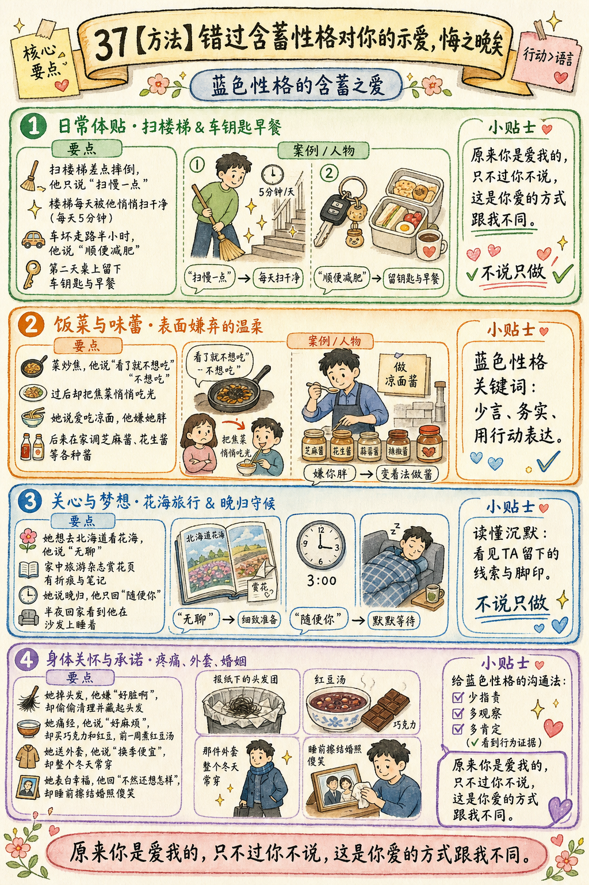
主讲人通过红色性格妻子的视角，用多个生活场景描述蓝色性格丈夫的含蓄爱意：妻子抱怨扫楼梯差点摔倒，丈夫只说“扫慢一点”，但后来发现楼梯每天被丈夫扫得很干净；妻子说车坏了走路半小时，丈夫说“顺便减肥”，但第二天发现丈夫留下车钥匙和早餐；妻子说菜炒焦了，丈夫说“不想吃”，但后来发现丈夫偷偷吃掉了焦菜；妻子说想去北海道看花海，丈夫说“无聊”，但家里旅游杂志的赏花页都有折痕和笔记；妻子说掉头发怕秃头，丈夫嫌脏，但出差时发现地板头发变多，垃圾桶里有藏起来的头发；妻子说晚归，丈夫说“随便”，但半夜回家看到丈夫在沙发上睡着；妻子说痛经，丈夫说“麻烦”，但后来买巧克力和红豆，提前一周煮红豆汤；妻子送外套，丈夫说“换季便宜”，但冬天过后外套仍常穿；妻子说爱吃凉面，丈夫嫌她胖，但后来在家调各种酱；妻子说嫁给他很幸福，丈夫说“不然还想怎样”，但发现丈夫睡前擦结婚照傻笑。最终妻子明白丈夫的爱是“不说只做”。
📖 全文解读（点开看全文）
性格色彩情感宝典，让你恋爱快乐，婚姻幸福。我是乐佳，愿你用性格色彩的力量使你的生命更美好。嗨，我的朋友，你好。今天这一讲，我们来谈谈蓝色性格的人，他们是如何爱别人的。 蓝色性格爱的方式与我不一样。我告诉你说，我今天扫楼梯的时候差点从楼上摔下来。我本来以为你会安慰我说，亲爱的，小心点。可是你说，扫慢一点不就得了。我很伤心，我觉得你不爱我，不在乎我。后来我发现，我们的楼梯非常干净，干净的都不用我扫。一个月以后我才发现，那是你每天凑出五分钟的结果。原来你是爱我的，只不过你不说，那是你爱的方式跟我不同。 我告诉你说，我的车子坏了，我走了半个小时的路才走到车站。本来我以为你会关心我怎么不坐出租车，看你累不累呀。可是你却说，反正很近，你也顺便减肥。我很生气，我觉得你不爱我，不关心我。第二天，我发现你留在桌子上的你的车钥匙，以及你为我准备的丰富的早点。我才发现，原来你是爱我的，只不过你不说，这是你爱的方式跟我不同。 我告诉你说，我的青菜炒焦了，你忍着点吃。我本来以为你会安慰我说，没关系，只要你炒的菜我都爱吃。可是你却说，嗯，看了就不想吃了。我好伤心，我觉得你不爱我，不疼我。可后来我才发现，每次你想丢掉的菜，都在进垃圾桶以前凭空不见了，你的嘴里面还留有气味。我才发现，原来你是爱我的，只不过你不说，这是你爱的方式跟我不同。 我告诉你说，我想去北海道，我想去荷兰，我要去欣赏那一大片壮观的花海。我本来以为你会跟我说，你想去哪儿，亲爱的，我们来计划计划，即便是敷衍几句也好。可是你却说，无聊，花大把的银子去那种没意思的地方。我很生气，我觉得你不懂我，你不爱我。后来我才发现，家里面的旅游杂志，不管是国内还是国外的，只要是有赏花介绍的那一页，页角就有折痕，上面还有你的笔记。我才发现，原来你是爱我的，只不过你不说，那是因为你爱的方式跟我不同。 我告诉你说，我头发掉得好厉害，可医生都说没怎样，我好害怕我会不会变秃头。我本来以为你会安慰我说，哪有啊，你头发看起来还是好多的。可是你却说你才知道，你的头发乱掉，家里的地板全是你头发，好脏啊。我很伤心，我觉得你不爱我，不在乎我。后来我发现，家里的地板少了很多我的掉发。我以为我真的不再掉头发了，所以我开始有了再也不会秃头的自信。但是就在你出差的那几天，我才发现地板上的头发又变多了，在垃圾桶里面也找到了一堆用报纸盖住的头发。我才发现，原来你是爱我的，只不过你不说，这是你爱的方式跟我不同。 我告诉你说，我跟朋友出去，晚上会晚点回来。我本来以为你会很关心我，跟谁出去啊，小心点，记得打电话，或者早点回家。可是你却说，随便你，高兴就好。我很生气，我觉得你不爱我，不关心我。后来我在拖到半夜三点才回家的时候，才看到你坐在沙发上的睡容。我才发现，原来你是爱我的，只不过你不说，这是你爱的方式跟我不同。 我告诉你说，我大姨妈来了，肚子好疼。我本来以为你会安慰我说，忍一忍，过一天就好了。可是你却说，好麻烦，受不了。我好伤心，觉得你不爱我，不疼我。后来家里的零食柜里多了好多的巧克力和红豆，是你买的，但你一直没吃。直到一个月过了，你在我大姨妈来以前的一个星期，天天煮着红豆汤。我才发现，原来你是爱我的，只不过你不说，这是你爱的方式跟我不同。 我告诉你说，这是我为你挑选的外套，是从去年换季就买的，我藏了一年。现在冬天来了，我把这一季的第一股温暖献给你。我本来以为你会很感性地回答我说，谢谢你哦，亲爱的，好爱你哦，这是我一季的温暖，也是我一辈子的回忆哦。可是你却说，还不是换季拍卖卖的便宜。我好伤心，我觉得你不爱我，不懂我。后来冬天过了，一直到了五月底，我却还常常看见那件我认为爱的外套、你认为便宜的外套穿在你的身上。我想了想才发现，那件外套几乎天天伴着你上班下班，出门进门。我才发现，原来你是爱我的，只不过你不说，这是你爱的方式跟我不同。 我告诉你说，我喜欢吃隔壁街角的那家凉面。我本来以为你会跟我说，那我明天一起去吃好不好呀。可是你说，整天就想着吃，也不想想自己的身材。我好伤心，我觉得你不爱我，不关心我。后来我才发现，你常常买很多芝麻酱、花生酱，各种各样的，在厨房里面调一碗一碗的酱。我才发现，原来你是爱我的，只不过你不说，这是你爱的方式跟我不同。 我告诉你说，我好高兴嫁给了你，你是全世界最好的老公。本来我以为你会很开心地回答我说，嗯，我也是这么觉得，你是全世界最好的老婆。可是你却说，嫁了都嫁了，不然你还想怎么样啊。我很生气，我觉得你不爱我，不懂我。可是后来我在无意当中发现，你开始会在睡觉以前用卫生纸擦着我们床头上那张结婚照，然后微笑地忘了照片，傻笑很久。我才发现，原来你是爱我的，只不过你不说，这是你爱的方式跟我不同。 我想我终于懂了，在你从来不善言辞的外表之下，有一颗爱我的心。原来你是爱我的，只不过你不说，这是你爱的方式跟我不同。 刚才这一段排比式的散文，就是典型的红色性格的老婆在描述他蓝色性格的老公是如何跟他互动的。他同时也描绘出来了他内心深处其实是希望他老公能够用红色性格的方法来对待他，但他从来没有得到。可是他最终感觉到了蓝色性格的特点，就是我不想说，我只想做，我就希望你明白我的意思就好，一切尽在不言中。 建议此讲供你参考你周围身边的蓝色性格。如果你刚好有这样的朋友或者这样的恋人，请你分享给我，让我知道你的故事。我们下一期再见。
【影视分析】《布拉格之恋》--女神都爱"渣男”的性格分析
1/1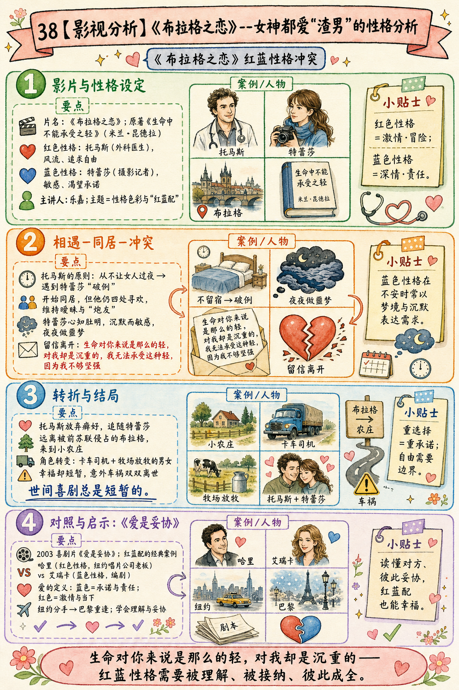
主讲人分析影片《布拉格之恋》中红色性格的托马斯与蓝色性格的特蕾莎的恋爱。托马斯是风流的外科医生，自认无法与女人长期相处，却因特蕾莎的柔弱外表下的坚强而破例让她过夜并同居。但他仍四处寻欢，特蕾莎敏感却不说，只做噩梦，最终因无法承受这种'轻'而离开，留信说生命对她沉重。托马斯最终放弃癖好，追随特蕾莎到小农庄，两人幸福但短暂，死于车祸。主讲人感慨世间喜剧短暂。
📖 全文解读（点开看全文）
性格色彩情感宝典，让你恋爱快乐，婚姻幸福。我是乐嘉，愿你用性格色彩的力量使你的生命更美好。 上一讲我们谈了《一个陌生女人的来信》和《音乐之声》，这两部是标准的红蓝配的影片，这一讲我们来推荐另外两部影片。 第一部，《布拉格之恋》。本片改编自米兰·昆德拉的小说《生命中不能承受之轻》，它是文艺男青年和女青年的最爱。在这部片子里面，红蓝两种性格的恋爱要曲折得多，个性冲突也强烈得多。先来看红色性格、著名的外科医生托马斯，他自认为天生就跟女人完全不能够长期相处、就是一个天生的单身汉，他渴望有很多女人，但又害怕跟她们长相厮守，他既和一些女人保持着固定的暧昧关系，同时又有很多炮友、乐在其中，但托马斯有个原则——他从来不让任何女人在他家里过夜。结果有一天他遇到了特蕾莎，被这个其实性格里很坚强、但外表软弱的人深深诱惑着。这个标准蓝色性格的特蕾莎对他产生了一份莫名其妙的爱，结果最后不仅把他留下来过夜，两个人也开始了同居。尽管如此，托马斯还是改不了自己风流倜傥的本性，瞒着特蕾莎四处寻欢。其实这个蓝色的女孩儿很敏感、心知肚明，嘴巴不说但每天晚上做噩梦。有一天特蕾莎再也忍受不了了，就离开了托马斯，她最后留给托马斯的信里面写道"生命对你来说是那么的轻，对我却是沉重的，我无法承受这种轻，因为我不够坚强"。最后托马斯终于彻底放弃了自己的癖好、抛弃了他所谓的爱情观，决定追随特蕾莎这个他自认为一开始只是出于偶然性的爱人，全心全意和特蕾莎在一起相爱。就这样，在那个远离被前苏联侵占的布拉格的小农庄里面，外科医生托马斯和摄影记者特蕾莎变成了一对卡车司机和在牧场放牧的男女，两个人特别幸福，但很可惜这种幸福感持续的时间很短，在意外的车祸当中两个人就都走掉了。所以讲到这件事儿我就不禁感慨，世间喜剧总是短暂的、悲剧总是长存的。 最后一部，要向各位特别推荐一部无比重要的片子，你一定要找来看，它是标准的红蓝两种性格不理解、发生冲突、最后两个人相爱变好的经典案例，叫做《爱是妥协》（Something's Gotta Give）。这是2003年好莱坞拍的一部喜剧，哈里是纽约一个唱片公司的老板，六十多岁，他自己觉得自己是情场高手、钻石王老五，专挑年轻漂亮的美眉下手，直到有一次他在一个度假别墅里突发心脏病，只能待在他朋友家里，和他朋友的妈妈艾瑞卡——一个已经离婚的编剧——单独共处一周。一开始他们两个因为一个是红色性格、一个是蓝色性格，相互厌恶：哈里看不惯艾瑞卡的保守刻板（艾瑞卡是蓝色性格），而蓝色性格的艾瑞卡也特别痛恨这个红色性格的哈里，觉得他轻佻、放荡，不愿意跟他朝夕相处。但是没想到处了一段时间以后，两个人就发现彼此居然相互吸引、产生了微妙的情愫。哈里发现艾瑞卡特别睿智和成熟，和他以前交往的那些年轻女孩儿完全不一样；艾瑞卡本人也觉得被哈里的风趣和热情打动了，自己原来尘封多年的心扉就开始放开了。但关键在于，红色和蓝色这两种性格的人对于"爱"这个字的解读完全不一样：对蓝色性格来讲，爱是承诺、也是责任；对于红色性格来讲，爱是激情、爱就是当下。所以当哈里回到纽约以后，他就是积习难改、一如既往地继续去约会年轻女孩儿，结果被艾瑞卡刚好撞个正着，蓝色性格的艾瑞卡就觉得"你欺骗了我"、伤痛欲绝。这个男的拼命给她解释"我对你的爱绝对是真实的，但那只是真相的一个版本"，不管他怎么讲，艾瑞卡觉得真相就是真相、怎么还能有不同的版本呢，但对于红色性格的哈里来讲"我爱你当然是真的，不过我喜欢年轻女孩儿也是真的，那是真相的完全不同版本"。特别伤心、特别愤怒的艾瑞卡就把跟哈里的糗事儿写成了剧本、搬上舞台、风靡纽约，在这部戏的最后你就知道蓝色性格多狠——编剧艾瑞卡让这个不负责任的男主角最后死掉，影射哈里、表达对他的报复。哈里看了以后内心特别受震动，他把唱片公司关了，踏上了一趟特殊的旅程，半年以后走遍全美国、寻访了所有曾经跟他有过露水情缘的无数女子，最后发现原来她们其实只是这些女子生命当中的过眼云烟而已，欢愉之后不曾留下一片云彩。这个时候红色性格的哈里才突然真正意识到艾瑞卡对他的真正意义，那是他心灵的伴侣。所以他赶紧飞回到巴黎，因为他们当初曾经约定要在那个地方共度生日。终于在最后，哈里在飘雪的巴黎街头找到了艾瑞卡，而艾瑞卡也意识到，不管她多恨哈里，但她终究没有办法割舍内心深处的那份牵挂，两个人前嫌尽弃、相拥而泣，快乐地生活在了一起。所以在小说里面你有时会看到，人们总是会去寻找那些共性的快感和互补的愉悦，而红色和蓝色这两种完全相反的性格，他们在情感取向上容易产生共鸣，因为他们都是高度重视情感、情感丰富的人，但在其他方面他们是完全矛盾的，你也可以说完全互补，这当中引发出来无穷的变化和互动、令人无限期待。所以我觉得这部剧改编的名字很不错，原来英文叫Something's Gotta Give，改成叫《爱是妥协》，刚好说明在红蓝黄绿四个性格相处里面，当你了解了性格色彩、读懂了对方、理解了对方，你需要用不同性格的方式来相处，所以彼此有差异、彼此会妥协、彼此会付出、彼此会理解、彼此会用适合对方的方法相互相处。所以祝愿你读懂性格色彩，天下有情人终成眷属。 这个世界上关于红蓝配的影片非常多，我这一讲和上一讲加在一起总共只讲了四个片子，你像《越狱》里面那个迈克尔和萨拉，他们也是标准的红蓝配性格。如果当你在听这两讲节目的时候脑子里想到有什么好的影视作品也是红蓝配，请你赶紧留言在评论区下面，我们一起来分享给更多的人。
【影视分析】《音乐之声》--内向的成功男人总被热情的小女生俘虏的性格分析
1/1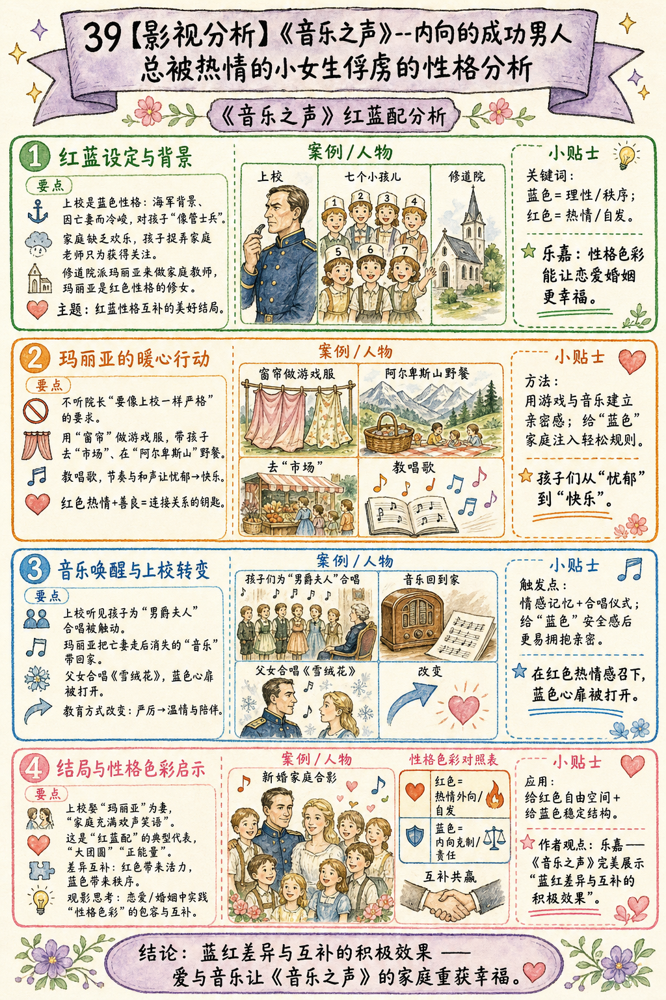
乐嘉以《音乐之声》为例，说明红蓝性格互补的美好结局。上校是蓝色性格，因丧妻和海军背景，对孩子严厉如管士兵，导致家庭缺乏欢乐。玛丽亚是红色性格的修女，被修道院派来做家庭教师，她未听从院长严格管教的要求，而是用温柔善良对待孩子，用窗帘做游戏服、带他们去市场、野餐、教唱歌，使孩子从忧郁变得快乐。上校起初不满，但听到孩子们为男爵夫人唱歌时被打动，因为玛丽亚带回了亡妻走后消失的音乐。在红色热情感召下，上校敞开蓝色心扉，与女儿合唱《雪绒花》，改变教育方式，最终娶玛丽亚为妻，家庭充满欢声笑语。乐嘉认为这部影片完美展示了蓝红差异与互补的积极效果。
📖 全文解读（点开看全文）
性格色彩情感宝典，让你恋爱快乐，婚姻幸福。我是乐嘉，愿你用性格色彩的力量，使你的生命更美好。 在先前我讲不同性格搭配的时候，有的时候会举一些影视作品的案例。有一天在回复里面，我就看到有一个人告诉我说"乐嘉，你就这么点儿出息啊，天天没事儿那么空地看影视片，你不无聊啊？你看这个东西有用吗？能讲性格色彩吗？天天虚构的这些东西太没意思了吧"。我就特别想告诉给他，邓小平的一生啊，除了工作最喜欢干的两件事儿，第一看金庸的武侠小说、第二就是打桥牌，在金庸的武侠小说里面，邓小平同志曾经在不同的场合都表达过一个意思，看到了很多人性、很多政治、很多江湖。我想讲，小说也好、影视作品也好，都是来源于生活当中的体验，有很多耳熟能详的作品更容易激发起来我们对于性格的探讨。所以今天我想跟各位推荐几部影片，我将会用两讲来跟你分享四部影片，这四部影片都是红蓝配的典型代表。 我先推荐的第一部影片叫做《一个陌生女人的来信》，徐静蕾和姜文演的这部片子，是从茨威格的同名小说改编而成的一部电影。所谓"男人的一夜就是女人的一生"，这是这部片子最好的诠释，典型的红蓝恋。你看的时候如果能感觉到心痛，说明我们是同类人；如果你还能有心碎的感觉，那我们再想一想；如果你一边心痛一边心碎，看完了以后又觉得这个女主人公很为她深深地不值、又忍不住感动，那我接下来讲的话对你分析性格就会有莫大的用途。在整个影片里面，故事是由女主人公的第一人称写的，全文都能够凸显出来徐静蕾扮演的这个角色的蓝色性格，有一种孤寂的、不胜悲凉的一种美。蓝色性格很内敛，他们不屑于用浮华的言语来表达内心深处的爱，他们期待的是恋人之间那种眼神流转当中的默契、言语停顿当中啥都不说你啥都懂得的心领神会。十八年以来，那个女子默默地爱着那个红色性格的男人，关注着他所有的生活、细心收集他所有的信息、用尽一切方法生活在这个男人社交圈儿的周围，他们后来在欢乐场上也重逢过、也共度过良宵，但这个女的从来没有向这个男的吐露过一丝爱意。蓝色性格内心骄傲，宁可沦落风尘、独自承担抚养孩子的重担，也不愿意成为红色性格男子的累赘，默默守候。她内心期待——记住这是重点——她内心期待有一天这个男人能够像她一样地爱上自己，虽然她知道这种可能性为零，但因为她太敏感了、她太了解这个红色性格（虽然她没有学过性格色彩，徐静蕾也没有学过），你知道姜文扮演的这个角色红色终究是红色，喜欢愉悦、自由自在的生活、无拘无束的享受，他的用情很真挚，但他也知道他的用情不专一，所以表面上他对所有的一切波澜不惊，但这个蓝色性格心里面早就已经玉石俱焚。这种蓝色性格的自尊支撑她做所有的决策跟决定，在外人看起来这种自尊的代价太昂贵了，但对于蓝色性格本人而言，虽然艰辛、心痛，但却是极致的凄美，这种情感上的完美对于蓝色来讲至关重要。十八年呐，没有一句表白，如果不是孩子早早走掉、如果不是她自己活不了多久了，这个秘密必将继续保留下去、离世的那一天可能依旧不会被揭开，她也会无怨无悔独自承担这种漫长寂寞的情感历程。所以有的时候蓝色是有点自虐情结的，独自享受着一种痛苦，在外人看来已经苦不堪言，他却觉得这是生命的一种常态。所以如果你想理解蓝色性格内中所想，我觉得这部影片是一个很好的诠释，因为他们不容易活得轻松、很难学会宽容和开放，不单单对别人很难做到、对自己也很难做到。 第二部我要向你推荐的是一部奥斯卡的影片《音乐之声》。这部脍炙人口的影片是标准的红、蓝两种性格优势互补、配合的美好结局的大团圆故事。在这部剧里面，男性这个上校扮演的是蓝色性格，因为长期的海军生活和对亡妻的走掉过于悲伤，让他自己管孩子的时候性格也像管士兵一样特别严格，孩子们得不到父亲的关爱怎么办呢，那就经常捉弄家庭老师来吸引父亲的注意。家里面需要有家庭教师，找了半天，修道院介绍了这个修女玛丽亚，她是修道院安排到这个上校家里面来当家庭教师的。玛丽亚典型的红色性格、跟上校完全相反，天性喜欢自由、讨厌一切繁文缛节的约束，院长要求她"你必须要像上校一样严格地管教这七个小孩儿"，但这个玛丽亚没有听从，她用自己的温柔、善良，孩子们都特别喜欢。上校不在的时候，她用窗帘给孩子们缝制游戏的服装、带领他们去市场上去玩儿、在阿尔卑斯山上面野餐、教会他们唱歌，结果孩子们原来被拘束忧郁的感觉慢慢地就开始被音乐和笑声全部代替了。一开始这个上校对玛丽亚的做法非常不满，可有一天他听到他的孩子们居然能够为男爵夫人唱歌的时候，一下子内心就被打动了，因为玛丽亚把亡妻走后家里再也没有的音乐重新带了回来。在这个红色性格的热情的感召之下，原来性格里面也喜欢音乐的男主角这个上校终于敞开了他蓝色性格的心扉，和大女儿合唱了一曲《雪绒花》，慢慢改变了对孩子们的教育方式，而最后这个男的也越来越离不开这个女孩儿、感情越来越深、娶她为妻，结果整个家庭欢声笑语。这是一个非常快乐幸福、按照现在流行的话叫非常正能量的一部影片，刚好可以说明蓝红的差异、以及蓝红在一起搭配互补是多么棒。 今天就先跟大家推荐这两部影片，我希望这两部影片看完了以后，你能够跟我分享你的观后感，因为原来你是不懂性格色彩的、可现在你有了性格色彩作为武器。在下一讲当中，我会继续向你推荐另外两部力道更强、冲突更剧烈的红蓝配的影片。让我们下期节目再见。
【直播精选】你上了"己所不欲，勿施于人"这句话的当
1/1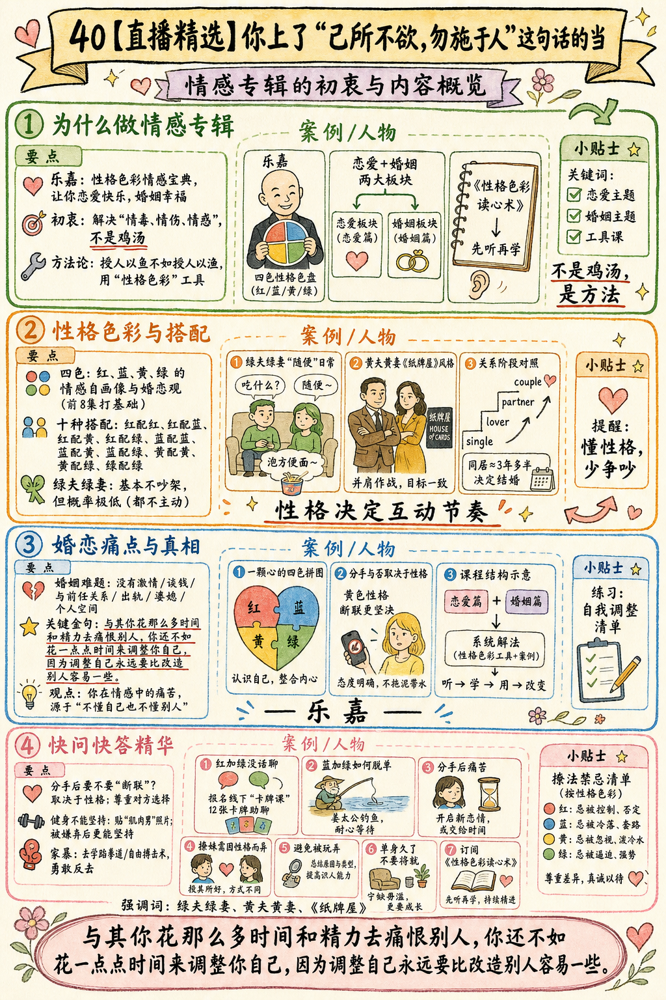
乐嘉解释为何做情感专辑，并介绍专辑结构。他提到自己曾因被称为情感专家而生气，现在已无所谓。专辑分恋爱和婚姻部分，涵盖情毒、情伤、情惑，强调用性格色彩方法而非鸡汤解决问题。他举例说明不同性格搭配，如绿夫绿妻不吵架但概率低，黄夫黄妻如《纸牌屋》。最后进入提问环节，回答几个问题，如分手后是否断联取决于性格，健身不能坚持可贴肌肉男照片或被嫌弃后坚持，家暴可学搏击术反击，红加绿没话聊可用卡牌课，蓝加绿脱单需耐心等待，分手后痛苦可开始新恋情或靠时间，撩妹需因性格而异，避免被玩弄需总结原因。
📖 全文解读（点开看全文）
性格色彩情感宝典，让你恋爱快乐，婚姻幸福。我是乐嘉，愿你用性格色彩的力量，使你的生命更美好。 开始了。第一个先回答一下刚才刷屏的人的问题：不是会员也可以听，本来就是开放的。所以假设你现在周围身边还有一些狐朋狗友、男闺蜜女闺蜜们正在孤独地舔着自己的板凳，或者正在甜蜜——反正我每次孤独的时候，看到那些甜蜜的人，我就这样告诉我自己"他们一定很快就会分手的"，或者我会暗示自己"那些正在表面开心的人，他们内心是多么羡慕我这样的单身狗啊"，我用这样的方法来暗示自己，就会觉得无比快乐。 先回答一个问题：我上一次直播是在两个月以前，在《性格色彩读心术》的时候做了三次，最后那天结束的时候还放《难忘今宵》，搞得我自己还感动了半天。今天不放了，今天反正就想到什么聊什么，看到什么问题我就直接回答你。我先调查了解一下，到目前为止是单身的和不是单身的有多少？单身的打个一，不是单身的打个二……还行，一略多一点，一大概有六成。前段时间我刚从英国回来，在英国的时候我每见一个人就跟他聊关于情感的问题，我就问他对单身的定义是什么。在国外，它是分成四个阶段的：第一个single，纯正的单身狗；第二个阶段叫lover，就是大家正在谈恋爱的阶段，但在谈恋爱的阶段你可以跟很多人谈、因为你没有确定；第三个阶段叫partner，在英文里面纯正的翻译就是合作伙伴、合作者，也就是我们这里的同居，一旦进入到同居的状态、你们两个人基本上就是已经确定下来、准备过了；最后一个阶段married，你就成为了夫妻（couple）。所以它是用single、lover、partner和couple这四个环节把人进行一个划分。但是在我们这里没有那么复杂，其实我在几年前写过一本书叫《写给单身的你》，我的划分标准很简单：没结婚的都是单身，所以我划分得更加粗暴，single、lover、partner在我看来都是单身，只要你没结婚都是单身。 所以我一直在说：如果你男朋友女朋友啥都没有，你内心深处如果怕孤独，那你最希望的是寻找到谁是你爱的对象、谁是你最合适的人；但如果你已经有了一个爱的对象、并且爱得死去活来，你可能最在乎的一件事情是怎么样让这种死去活来延绵不绝、时间再长一点、真的爱到天荒地老。事实上，如果你谈恋爱谈得足够多，你会发现"爱到天荒地老"总是很美好的愿望，在很多童话故事当中出现的王子和公主终于幸福地在了一起，总是把前面的过程描绘得非常曲折，但是至于王子跟公主真的生活在一起以后怎么生活的，电影电视和动画片从来不会呈现，只会用一句话告诉你"从此以后王子和公主终于幸福地在了一起"，因为事实上他们知道，一旦真的演出来，会发现王子跟公主的吵架和痛苦根本你无法想象，戴安娜王妃就是一个非常典型的案例。那么如果你自己现在是处于同居的状态——我特别问了英国的一些朋友，"你一般情况下同居多久会结婚啊"，他们说普遍的概率大概是三年时间，如果三年时间还不结婚，那要么这两个人都是不婚主义者、希望找一个伴儿陪着、永远不结婚，要么就是两个人大概相处不下去了。 那么至于你结婚了以后，很多人说"那我干嘛要来听情感心理课"，我等会儿回来告诉你最重要的一点：当你处于婚姻状态的时候，你的问题会变得更加多——你的婚姻当中是不是没有了激情怎么办？过不下去了该不该离？如果你没有小孩儿这个问题还好决定一点，如果你有了小孩儿，我告诉你，这就是你最最痛苦要决定的问题：有了孩子以后、可是我婚姻过不下去了，那我到底应该怎么办？有没有什么办法可以让婚姻永远保鲜？有很多鸡汤文章已经提供了无数的方法。 我在整个新节目免费试听的开刊词里面就讲了：你在情感当中所有的痛苦，都是因为你既不懂自己、又不懂别人。我为什么要来做这个专辑？道理很简单，第一张专辑大家很喜欢，那现在就考虑第二张专辑做什么呢？有人就说做亲子的，其实我自己因为女儿（灵儿）一直带着、天天跟着我，我也很想讲亲子上面的话题。前段时间我自己带女儿出去玩，才引发了一个轩然大波：她过暑假，我带着她开车先到欧洲、借了一部车开了三个礼拜、跟她两个人开了八个国家，回来了以后我去参加了一个沙漠徒步的活动。这个活动其实对我来讲，是因为那个《演说家》节目里面认识的人说刚好暑期他有一个带孩子走沙漠的活动、要不要参加，因为跟他比较熟、规模也比较小，我就去了，带灵儿四天走了八十公里的沙漠、每天走二十公里。我因为比较忙、所以没给她准备衣服，人家都穿的是速干衣速干裤，我给她穿着一条某国际品牌的运动裤，结果走下来一天走二十公里、腿上全都起了疹子。起了疹子以后，江湖上就有人莫名其妙开始骂我，说我残酷、说我没有人性、说我为了满足个人的私欲置孩子的死活于不顾、虐待折磨儿童，真是我无法想象这个世界为什么有这么多凶残、没有人性的人都出现在网络上面、作为匿名党在那里谴责我的无良、要剥夺掉我做父亲的资格。这四天其实我印象很深，因为我觉得这是一个非常好的活动，我都准备马上寒假暑假自己组织一批色友去走沙漠，这回很有心得，下回我组织的时候通知你、你要来啊。如果你从来在家里面天天吹着空调、看着那种跟你八毛钱打不到干系的偶像剧、打着王者荣耀，你的生活只会越来越糟糕，可你做一件从来没有做过的事情、体验一下从来没有体会过的人生，你会发现生活会变得那么美好、你会发现那种潜能。 我当时想做一个亲子的专辑，但后来想到一个问题：因为情感有病的人太多，几乎所有的人在情感当中都有痛苦。所以在这张专辑里面，我自己起了一句广告语我特别喜欢，因为它代表我内心真实的想法：我希望运用这堂课帮助你解决你的"情毒、情伤和情惑"。所谓情毒，你看过《神雕侠侣》吧，在那个情花谷里面中了情毒之苦、生不如死，是杨过中了以后、公孙绿萼后来救他；如果你过去受过情伤，你可能不再敢谈了、觉得男人没什么好东西（当然男人如果受了女人的情伤、会觉得女人都很恐怖很势利），其实一样的，就像女人有的时候真的不能被鸡汤文章害了，有的人说"男人都不是什么好东西、个个都是好色之徒"，但其实倒过来男性也经常会讲女性各个很势利，这个在非诚勿扰当年的节目上你早都已经领教过。所谓情惑的意思就是在情感当中各种各样的困惑、麻烦以及不理解。我做这张专辑的目的就是希望专门就这些问题来解决。 有一件事儿是幕后的真相：当时在做的时候内部有一个非常大的分歧，我是想把婚姻和谈恋爱两部分分开来，因为我准备以后写两本书，一本叫《性格色彩婚姻宝典》、一本叫《性格色彩恋爱宝典》，因为婚姻和恋爱这两部分人群关心的问题还是有一些差别的，但后来为了方便——恋爱的人都要结婚、而结婚的人可能也会离婚、以后又会重新恋爱，人生就是一个轮回，所以就合在一起了。对于恋爱的人，他可能关心的话题是"到底我找的人应该是爱我的人还是我爱的人""我应该跟谁结婚""怎么样寻找到哪个人最合适我""相亲或者刚认识有了好感以后应该怎么发展"，问这种问题的都是超级菜鸟、没谈过什么恋爱的人，还有"如果我一直是暗恋怎么样挑破、把暗恋变成明恋""这个人特别喜欢我但我又不喜欢他、我该怎么拒绝他"，还有高发性地问"异地恋能不能维系"（像当年我在非诚勿扰见到的最多的就是异地恋能不能维系，其实这个问题我心知肚明，但讲出来很怕打击到好多人），还有"爹娘如果反对怎么办、我到底应该跟爹娘誓死相争、还是软磨硬泡""我如果喜欢小鲜肉怎么办"。 我现在在中国南方的某省、正在刮台风、飞不回上海，昨天见了一个老同事，我认识他的时候他21岁、现在一眨眼十年过去了31，他告诉我他结婚了、找了一个比他还小六岁的小鲜肉，我真的眼珠子都快掉下来，因为在我的印象当中他应该找一个"大叔控"的人。当这个人告诉我他要结婚了、有男朋友女朋友了，你知道我的第一本能反应是问什么吗？我的第一本能反应只会问一个问题——他是啥颜色的？这个女孩儿是一个红加黄、不懂性格色彩，她说她男朋友是一个典型的红色性格，我一听很好，我说那说明他一切尽在你的掌控之中，她说是的、他都听我的、所有的东西都是我在做主，我说那没问题啦，你这么喜欢掌控、这个男生喜欢听你的、那很好啊。后来在楼下见了一面，这个男生见了我很激动、吹捧我一番，我说"你好眼力啊，找了一个好老婆，外面又很能干、家里面又会持家，你天天以后就在家里面享福吧"，祝福了他们一番。这个就是性格上的搭配，所以关于你的性格能不能搭配得起来你会很关心，不过性格色彩跟相术毕竟还是两码事儿。 所以在这张专辑里面，跟以往所有的课程有个很大的差别：因为我必须考虑到啥都不懂的人，所以一上来我是先讲红、蓝、黄、绿四种性格的差异、他们的情感自画像和婚恋观，通过情感自画像和不同性格的婚恋观，基本上八集听完了以后、你就算不懂性格色彩、对红蓝黄绿的概念也会有一些基本认知。接下来会进入到这个课程里面最有魅力的一个地方——关于不同性格的搭配。红蓝黄绿四个颜色你能算出来会有几种搭配组合吗？算下来就会有十种：红配红、红配蓝、红配黄、红配绿、蓝配蓝、蓝配黄、蓝配绿、黄配黄、黄配绿、绿配绿。我有的时候一直讲，这个世界上有没有不吵架的夫妻、有没有一辈子举案齐眉相敬如宾的？很多人会回答没有、任何人在一起一定会吵，那这就说明你不懂性格。如果你懂性格，你就会发现两个典型绿色性格的人在一起、绿夫绿妻、两个人完全就不会有争吵，但是绿夫绿妻，反正大家谁都不愿意做决定、通常都喜欢让另外一个人做决定："下班回家问吃什么呀，嗯随便、不要随便了、昨天我说过了今天该你说了、那我们去冰箱那边看看、好啊那就去看一看、哎哟冰箱没有那怎么办呢、那坐下来商量呗"，两个人坐下来第一件事儿就是打开遥控器、一边打开电视一边在那里聊，聊了半天也没聊出来，反正过了一会儿肚子饿了、就泡方便面好了，吃完方便面也觉得很不错、也过得挺好。那你会问我这种夫妻多吗？当你真正开始学性格色彩并且运用这个工具的时候，你会发现这里面其实是有一个陷阱和悖论的：虽然我们说绿夫绿妻在一起不太会吵架，但在现实生活当中，绿夫绿妻在一起的概率是极低的，那是因为绿男和绿女本身在一起谈恋爱的概率也很低、因为两个人都不主动，两个都不主动的人在情感当中谁都很难迈出来那一步。这个就解释了为什么在现实生活当中人们总是说"没有不吵架的夫妻"——那是因为绿夫绿妻存在的概率低。同样，如果你看过《纸牌屋》，你就会发现那是典型的黄夫黄妻。因此在这张专辑的第二部分，就会花出重点的时间来详细探讨各种各样不同性格的搭配和碰撞。 讲了半个小时，我主要讲了几件意思：第一，我为什么要做情感专辑。反正我在非诚勿扰年代已经是中国排名第一的情感专家了，那个时候我还非常痛恨别人说我是情感专家、我觉得性格色彩这么牛逼伟大的东西你老说我是情感专家、我还很生气，现在我无所谓了、知道性格色彩的人越来越多、那我就重操旧业。这段情感专辑里面会有关于恋爱的部分和婚姻的部分，对于婚姻里面会出的问题，比方说没有激情怎么办、谈钱怎么办、怎么处理和前任的关系、出轨了应该怎么办、婚后爱上了别人怎么办、婆媳关系不融洽怎么办、婚后没有了自己的空间怎么办，所有的人在情感当中都会遇到自己的麻烦、痛苦、困惑、伤心、过不去的坎儿，所以我把它统称为"情毒、情伤和情惑"。但我不是用鸡汤的方法，我一直强调"授人以鱼不如授人以渔"——如果能够给你一套方法、而你了解了性格色彩以后运用这个方法帮助你自己看清问题的真相，你在解决问题的时候可能就会变得更顺畅、你的痛苦会少很多。因为有很多问题，原来你会把所有的责任全都归咎于别人，我一直的观点就是，与其你花那么多时间和精力去痛恨别人，你还不如花一点点时间来调整你自己，因为调整自己永远要比改造别人容易一些。 下面进入提问环节。第一个问题，"乐老师，怎样让你爱的人也爱上你"？答案是请你学性格色彩，把《性格色彩读心术》先去听一遍，听完了以后再开始学这个情感心理课，听到一半儿你就明白了。第二个问题，"分手以后就一定要断绝联系吗"？取决于你的性格、不是要不要。你问我这个问题就说明你不想断绝联系、但对方那个前任想跟你断绝联系，所以你很生气。这个世界上有两种人在分手以后一定要跟前任断绝关系：第一个是黄色性格的人，因为他们觉得既然已经没有情感上的连接了、就不想跟你发生任何瓜葛、那是浪费时间，黄色最讨厌藕断丝连；第二种是在这段情感当中对方备受伤害、感到仇恨、没有办法从仇恨当中走出来，所以只能用这种方式来代表自己的决绝。所以你可以要求自己不跟别人断绝联系，但你没有理由要求一个不想跟你保持联系的前任一定要跟你保持联系，如果你有这样的想法、那就是你的问题。第三个问题，"健身不能坚持怎么办"？第一个方法去找一些肌肉男贴在自己家里的墙上、厕所马桶对面、床头前面，天天拿这些来刺激自己；第二，健身不能坚持的原因是因为你女朋友或男朋友还没有嫌弃你，当你被嫌弃过了你就会坚持了。"怎样避免家暴"？最好的方法就是赶紧去跆拳道班报名、学会一手跆拳道、空手道、自由搏击术，他再敢家暴、你把他暴打一顿。 "我是一个红加绿、我女朋友是一个绿加红，我们两个面对面经常没话聊怎么办"？没话聊就大眼瞪小眼、互相眉目传情；如果你实在很想找话聊，请你去报名参加我们线下的卡牌课，我们有一套非常神奇的卡牌，一套牌十二张，可以在三分钟之内算出一个人的性格走向、可以算出你眼中的你和别人眼中你的差别、可以告诉你你的原生家庭以及未来性格的搭配碰撞当中会出现的种种情况，素不相识的人有这十二张卡牌可以通宵达旦地聊。"我是一个蓝加绿，已经听过性格色彩读心术了，请问像我这样的人应该怎么脱单"？像你这样的人就应该采用姜太公钓鱼、愿者上钩，总归会有喜欢的人会出现在你意想不到的生命场所，你唯一需要做的事情就是耐心等待。"怎么样度过我分手以后最艰难的一段时间"？这个话题以后专门会花一节课来阐述，因为不同性格的人有的人分手以后痛苦、有的人瞬间就会离开，解决这个问题最好的方法就是开展一段新的恋爱，当你有了新的情人以后、很多人分手的痛苦就会过去，如果你说我不是那样的人、也找不到，那解决问题最好的方法就是时间，因为所有的人都是这么过来的。"我不会撩妹，外面有一套把妹达人的课程想报名去学好吗"？我没有办法影响你，我只是想告诉你，如果你能了解性格，你就会知道不同性格的人撩的方法不一样——据我所知把妹达人教你的所有技巧都是在告诉你怎么去调戏一个红色性格的人，而这些方法对于蓝色性格和黄色性格屁用都没有、他们会非常反感你那些很轻浮的做法。红色性格最容易被甜言蜜语击中、没有甜言蜜语红色性格活不下去，但这种问题在蓝色和黄色身上不会出现，他觉得如果你的批评是帮助我更大的成长、我跟你在一起只要能进步就很好、根本用不着甜言蜜语。"我怎么可以避免被妹子玩儿、我吃了很多女人的亏"？你要总结你为啥总是被别人玩弄，是被不同类型的人、还是被同一种类型的人？如果是被同一种类型的人，证明你经常在同一个问题上摔跟头，那你就要检讨自己。"单身久了要不要将就一下"？我就怕你忍不了多久、到最后又掰掉了。"如何避免最糟糕的追求方式""怎样吸引不同性格的男神"？请你马上去订阅我的第一张专辑《性格色彩读心术》，里面专门有讨论这个话题。好了，让我们下期节目再见。
【直播精选】可怜你试图改变对方这么多年
1/1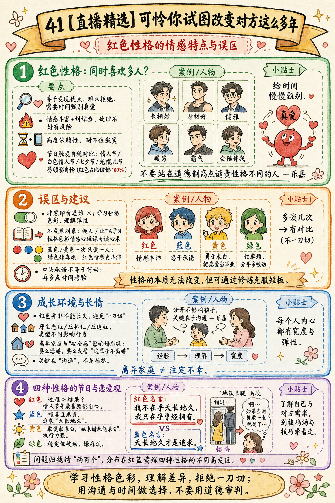
乐嘉指出红色性格容易同时喜欢多人，因善于发现优点且难拒绝，但需时间甄别真爱。他反对道德谴责，强调不同性格差异：蓝色、黄色一次只爱一人，绿色嫌麻烦。红色情感丰富，但处理不当有风险。关于不成熟对象，建议换人或让对方学习性格色彩。红色并非不能长久，但需避免非黑即白思维。红色有高度依赖性，耐不住寂寞，情人节易顾影自怜。红色是否长情取决于成长环境，如离异家庭可能影响婚恋观。乐嘉以自身离婚经历说明，分开不影响孩子，关键在于沟通。学习性格色彩忌一刀切，应理解个体差异。
📖 全文解读（点开看全文）
性格色彩情感宝典，让你恋爱快乐，婚姻幸福。我是乐嘉，愿你用性格色彩的力量，使你的生命更美好。 "乐老师，同时喜欢很多人怎么办？"红色性格的人在天性当中容易发现别人的优点、容易对不同的人的不同点位有好感：这个人长的样子我喜欢、这个人身材好我喜欢、这个人儒雅我喜欢、这个人长得不怎么样但是是暖男我喜欢、这个人是一个很霸气的人、我跟他在一起觉得超有安全感我喜欢、这个人每当我不开心的时候总能够陪伴我把我哄得很开心我喜欢——那一个女孩儿看到六个不同的男生、每个男生都有自己的优点，红色性格的人容易发现别人的优点，但是同时又很难去拒绝别人、并且又有纠结症。为什么红色有纠结症？我在《性格色彩读心术》里面都已经教过了。 你问我怎么办？这个很正常，因为红色性格需要通过时间慢慢地来考虑、甄选、确定他喜欢的这些人到底哪一个才是他真正的真爱，当他确定了以后就说"好吧、那我就跟你在一起"。但是这种做法在中国的传统文化里面和大家的思维惯性里面，就会认为"你这个人脚踏几条船、道德有问题、就是一个大坏蛋，你怎么可以同时喜欢几个人呢，我就不行、我要喜欢只能喜欢一个人"。我想强烈地跟各位朋友讲，不要轻易地站在道德的制高点去谴责另外一个跟你性格不同的人。如果你是蓝色性格或者黄色性格，可能在你的单一时间里面你只会对一个人有兴趣，因为那一个人就可能会满足掉你所有的需求；对于绿色性格的人来讲，他觉得谈两个人太麻烦；但是红色性格的人天性当中情感丰富，情感丰富就要承担一个风险——情感丰富的风险就是你有可能会喜欢很多很多的人。这件事情不仅仅对男性来讲是这样，对于女性来讲其实也是这样。 所以喜欢很多人怎么办？凉拌。但是你要小心，如果你处理得不好，就会引发杀身大火，这个大家都心知肚明、我就不展开来讲了。"如何和一个不成熟的对象相处"？解决问题的方法有两个：第一个换一个、找一个成熟的对象；第二个让他马上开始学习性格色彩情感心理课和读心术、让他迅速地变得成熟，只有这两个方法、别无他法。 有的人说"红色性格是不是没有办法和别人有长久相处的感情"？这个问题的答案肯定是错的。人们在学习性格、在谈恋爱、在婚姻里面有一个最大的误区，就是非常容易把人进行非黑即白的划分——你要么是这样的人、要么就是另外一种人。性格色彩的学习最大的一个好处会告诉你，在这个世界上每一个人内心都是有宽度、有弹性的，每一个人都有各种各样的可能性。对于红色性格来讲，他们是四种性格里面具有高度依赖性的性格，做很多事儿需要别人给他信心，在情感上也需要人来陪伴，当他一个人孤独的时候是非常痛苦的。所有在情人节、白色情人节、七夕节、光棍儿节这些节日里面，没有男朋友女朋友的人，他们痛苦很重要的原因是他们容易羡慕别人、拿别人跟自己对比，当他发现别人都已经成双入对、而自己一个人形单影只、他就会很容易顾影自怜"你看我多么孤独、多么可怜"。有这种想法的人100%都是红色性格，黄色性格不会这么想——黄色性格的想法是"你看这群人花出时间正在谈恋爱，我可以节约下来谈恋爱的时间、也不用花钱、可以花在我的工作和事业上、做出更多的成就，你们这些人迟早都要分手的，但是有朝一日等到我站在世界巅峰的时候、你们通通都要俯首称臣"，所以他完全都不会介意。蓝色性格的一个想法是"我刚刚从这个恋爱当中走出来、我必须忠贞于我的爱情，所以我没有办法接受另外的一个人，当我这样忠贞于我的情感的时候、我觉得我是非常唯美的人、是一个完美主义的人、是一个忠诚于情感的人、忠诚于我的承诺，我当初跟他说我不主动跟他说分手、现在是你跟我分手的，所以现在我跟你分开了以后、这不是我的问题、是你的问题"。所以每一种人对于同一个问题会有完全不同的感受。所以在市场上很多商家在情人节的时候会用很多策略来刺激你、勾引你，你会发现大多数这些方法是针对红色性格的，这就是为什么红色性格是耐不住寂寞的。 那红色会不会缺少长情？不会，那是因为对于典型的红色来讲、在红色里面也分成很多种类型。当你真正学了性格色彩以后，你会发现在我们的线下进阶课里面会有很多的辨识，所谓原生态红、压抑红、压迫红。如果这个人在成长的环境当中、周围身边对他有巨大影响的人（他爹、他娘、她经历的人和事、她的前男友前女友）是某一种性格非常强势的人，发生的事情有可能就会对他带来很大的影响。举一个最简单的例子（这个话其实已经讲得太深了、姑且听之吧）：如果这个大红色性格的人从小成长在一个离异的家庭，并且那个离异家庭的爹娘离婚了以后关系非常糟糕、形同陌路、水火不容，那他就会对婚姻充满了恐惧、没有安全感，要么不敢踏入婚姻、要么就发誓"我结婚以后肯定只结一次婚、这辈子不离婚"。你知道我见过多少人跟我这么说吗？每次说这个话的时候都是信誓旦旦、咬牙切齿、捶胸顿足告诉我"乐老师，我肯定不会离婚的，如果我跟他结婚、我发誓绝对不会离婚、无论发生任何情况绝对不会离婚"。我每次听到有人跟我这么讲、心里面都觉得他比较危险，因为当这个人有这样想法的时候、恰恰证明他并没有很合适的婚恋观，他之所以发出这样的毒誓、是因为在他成长的过程里面、父母不幸的婚姻带来的痛苦的结果。听清楚啊，我没有说离婚一定会带来痛苦的结果。无数人问我"乐老师、你还离婚了、你学了性格色彩还离婚、还教性格色彩"，我是离婚了，我跟灵儿妈妈分开了、离了一次婚（网上传说我离了三次婚、有三个小孩儿、都是狗屁、各位不要相信、被诽谤造谣的太多了、我懒得解释），但是我认为我们的分开并没有对孩子的成长有任何的影响，相反我希望我们两个人每一个人都能够在各自未来的人生当中过得幸福、快乐和精彩，如果大家都怀有这样的想法、保持顺畅的沟通和交流，我认为就不会有问题。而如果你成长在一个仇恨的、封闭不信任的家庭、你看到的全都是不幸福，自然而然它就会变。所以最重要的一点：每个性格都有每个性格的规律，但是因为每个性格成长的环境、经历和背景不一样，对同一个问题会有很多辨识，当你在学习性格的时候、最忌讳的就是一刀切、非黑即白。学习性格最大的好处是可以让每个人的内心更有宽度、更能够理解他人和自己、变得更加宽容和豁达。 （进入提问环节。）"四种性格在结婚以前分别谈几次恋爱最好"？这个问题问得太有水平了。如果你问我，我肯定会建议你多谈几次，因为多谈几次以后你会有对比，但多谈几次不代表别人一定会多谈几次：绿色性格的人觉得谈恋爱很麻烦、在分手的过程当中也很被动、通常都是别人提出分手"那就分吧"，你让他多谈几次他也会很麻烦；蓝色性格的特点是"一生得一知己足矣、干嘛要谈那么多、我就谈一个人就行了"；对于黄色性格来讲，他把恋爱当成人生成长的一个必然阶段、结婚就是人生当中一定要去经营的一份事业，最典型的就是天下第一女奇人邓文迪，我前两天看了一篇文章说邓文迪的一生之彪悍无人可以想象、把她历任的前男友老公列出来一看、上至帝王将相、下至帅哥小鲜肉、从艺术家到哲人啥人都有、没人可以超过她。而对于红色性格来讲，有一句江湖上流传已久的名言"我不在乎天长地久、我只在乎曾经拥有"，这句话必然是红色性格说出来的，因为对于蓝色性格来讲、天长地久才是人生必然的追求——"我才不要一时的烟花绚烂、我在乎的是溪水长流般的天长地久"，但是红色到了这里座右铭就改了"谁知道未来的结果怎么样、人生不在乎结果、在乎的是过程"。两种不同性格的人恋爱观和婚姻观完全不一样，那你说谁对谁错？如果你不了解性格、天天看鸡汤文章、天天看那些人教你怎么谈恋爱，你怎么死的你都不知道，因为你总是用那些所谓的技术和技巧在谈、并没有根据人性、并不了解每个人内心深处的需求。你知道你自己要的是什么吗？你知道你自己是谁吗？你知道你的恋爱观、婚姻观、价值观是受到你父母的影响、还是某一部影片的影响、还是周围人的影响吗？你知道正在跟你谈恋爱、跟你一起生活的这个人他的观点是什么吗？如果这些东西你不了解、你就会陷入无助当中。 今天主要是七夕情人节，所以我谈的话题貌似针对未婚人群多，实际上已婚人群在婚姻中的痛苦会更多、但他婚姻当中有痛苦又不好讲，他生怕被别人知道了、让周围身边的人指指点点，所以只能偷偷摸摸地痛苦。我希望这个课程能够变成你宣泄情感、聆听感受的地方，我在接下来的课程里面会有很多采访录下来给大家听，就是关于在现实生活当中就在我们周围身旁的人——我说的就是你，他碰到的问题、身处的痛苦、迷惑、就是你现在正在经历的，你会发现你们两个在不同的地区、年龄背景职业不一样，但在人性的问题上大家都是一样的。现在大家问我的都是一对一的问题，我可以回答，但其实回答起来不一定能解决你的问题，最主要的原因就是你问的问题太简单、我连来龙去脉都不知道、没有办法从性格色彩的技术上帮你解决。无论是谁都会在情感当中有困惑和问题，我可以掰出一百八十万个问题，但所有的问题最终归拢在一起最多也就那么两百个，这两百个问题分布在红蓝黄绿四种不同类型的人身上，在有的类型的人身上是高发性出现的，在另外一些类型的人身上压根儿连出现的概率都没有。所以当你了解了性格的规律以后，你很清楚地知道你容易在哪些陷阱里面摔跟头、哪些东西你要特别小心，而你也可以知道对方的心理状态。 你比方说，刚才有人问我"乐老师，我刚刚认识一个女孩儿、我很喜欢她、刚刚想向她表白的时候、突然发现她已经有男朋友了，我该不该向她表白"？这种问题对于黄色性格的人来讲就是一个傻子问题，他听到以后就气不打一处来、直接拿鞭子要来抽你，他的本能反应就是"她又没有结婚、表白有什么关系呢？你怎么知道她跟那个男朋友是什么关系？说不定是昨天刚刚在一起呢、才刚刚牵了手还没有上床呢，就算他们结婚、说不定他们不相爱了呢？如果你现在爱她、向她表白、刚好她爱你的话、你们两个相爱的人不是可以刚好在一起吗？你考虑这么多干嘛？如果你爱的话、直接去表白她，如果拒绝你了、你就再追求，如果人家实在不喜欢你、那你就不要死缠硬打了、大家分开就好，但至少你努力过、试过、你不会后悔，你不去试的话、一生不是就在后悔吗"。所以对黄色性格这种事儿根本就不是问题，但对于其他性格来讲他就会有顾虑。这让我想到我在《本色》（2013年我写的一本性格分析的自剖录）里面讲的"地铁长腿"的故事：2003年我在上海地铁里面见到一个长腿美女，他一直看我、我也一直看他、但两个人都不好意思打招呼，后来地铁到了他就下去走了，这个事情我想了好久好久，很多年以后我写了这篇文章——我当时上去跟他说、人家说不定会拒绝我、但也说不定会把电话号码留给我，至少有50%的可能，我也不至于现在每天生活在懊悔当中。所以你说"她突然有男朋友了该不该表白"，只有绿色的人、蓝色的人、或者患得患失的红色这三种人有可能会问，黄色性格根本就不会问。当你了解了你是什么性格以后、再回来——如果你是绿色、蓝色、或者患得患失犹犹豫豫又有贼心又没贼胆的红色，我会来告诉你你该怎么办，不同性格的人修炼和解决问题的方法是不一样的，这个在性格色彩情感心理课里面都会有。 "性格可不可以改变"？性格的本质无法改变，但是你完全可以通过后天的修炼、自我的理解来克服你自己的短板、向更好的你出发——你首先要能够认识到真实的你自己、然后你才能做更好的你自己。"乐老师，他说他爱我、可总是嘴巴上说说、并且口是心非，要不要接受他的追求"？再多点时间考验。你问这个问题就证明你还是喜欢他的、否则你根本不会问我，所以通过你问的问题我就可以知道你是什么性格、有可能在什么问题上摔跟头——像刚才问我那个问题的女生，如果这个男孩儿只要对你稍微有一点点好、你马上就会感动得热泪盈眶，而且我还可以预测：你如果跟这个男生真的谈恋爱了、到时候真的闹分手、只要这个男的回来抱抱你、两个人再做一次爱、雨过天晴、感情又变好，下回再吵、再做一次爱、又是雨过天晴，反反复复在同样的矛盾上面吵架、同样剧烈的方式分开、同样的方式复合，来回复合上十次以后、你是求生不得、求死不能、又想分开又分不开，直到有另外一个男人出现来拯救你、或者那个男人找到了另外一个女人离你撒手而去。当你真正懂了性格色彩以后、你会寻找到一条人性的规律。"乐老师可以直接学你的演讲吗"？可以，我每个月有开一次"跟乐嘉学演讲"的课程。"我喜欢的人都不喜欢我怎么办"？那没有办法，你喜欢、我还喜欢林志玲呢、我还喜欢演《西西里的美丽传说》的莫妮卡·贝鲁奇、还喜欢苏菲·玛索呢、人家还不喜欢我呢，那有什么好哭的、不是很正常吗？你喜欢人家、人家不喜欢你，那还有好多人喜欢你、你还不喜欢人家，那你对别人不喜欢的时候、人家不是一样伤心吗？这个哭个屁呀，你问出这种问题、要么你太年轻、要么是琼瑶小说看得太多了、天天生活在幻象里面，真的少看点玄幻片、会越看越傻的。而且你很容易走向极端，就像有的人"我还爱着他、结果他已经不爱我了、然后拿硫酸把人家给毁容"，这种走入极端、没有正确情感理解、对自我认知单薄的人容易犯的问题。 "男生真心喜欢一个女生的时候、会不舍得碰她吗"？你问这个问题是因为你现在还是高中生吧？不会，我认为真心喜欢、情到浓处、该发生的都会发生，那是人性使然，性本身是一件非常美好的事物、如果我们能够以健康自然的态度来看待它、会回报给我们人生很大的美好。"和不成熟的男人女人谈恋爱是什么感觉"？生不如死，会把你折腾得天翻地覆、三观尽毁、对谈恋爱充满恐惧，最重要的还是太折腾、折腾得你体无完肤、精疲力尽。但这里面要分，因为每个人对"不成熟"的定义不一样。我举一个例子：你谈了一个对象、两个人快要结婚了，他24小时打电话给你"你在哪里啊、干什么呀、和谁在一起、我好想你、快点回来呀、为什么不回我电话、为什么短信这么慢、你到底跟谁在一起"，像发神经一样、每一秒钟24小时要粘着你。当大家进入热恋状态的时候、你觉得"哇好甜蜜呀、24小时都可以粘在一起、合二为一、太美好了"，OK你试试看、这样的日子过过十天、你就会发神经、不管干什么都会疑神疑鬼。那你会说这种不成熟的恐怕是小男生小女生吧——胡说八道，我见过多少35岁的女子陷入到爱情当中、马上瞬间丧失抵抗力和意志力、进入到无脑的状态、然后就开始猜测、看了微信朋友圈的一张图片就用阴酸的口气讲"哎哟你去干什么"。每个人是一个社会人、你的人生价值和角色是有多方位关系的：家人的相处、朋友的相处、工作、社交，情感只是你的一个方面，当你把恋爱当成人生全部唯一的全部、而且两个人除了天天做爱、你真的也会做累的、不可能天天做的、那违反人性。所以成熟不成熟它不是以年龄来划分的，有好多人——我觉得我女儿就很成熟、四岁半的人经常跟我讲的话让我很惊讶；我见了很多40岁的人还在充满着幻想，我不是说充满爱情的幻想不好、有幻想很好，但是一旦进入到这种恋爱和男女相处的模式、他经常会让自己弱智、而且还会以自己弱智为自豪、享受这种无比依赖的感觉。我没有说这种感觉不好、每个人都有每个人的活法，但如果要24小时监控电话手机、不停地要问对方在干什么、要知道别人每一秒的行踪、每时每刻都跟他保持高度的连接，那就疯掉了。在我当年写的一本爱情书《爱难猜》里面（以后会变成情感心理课的一部分话题），我曾经写到过几个观点：当对方控制欲很强的时候怎么办？对方试图控制我所有的空间、我该怎么办？你都需要正确的解决问题的方法、否则会很惨。请你回忆一下你过去的爱情故事，在你人生的情感过程里面、你有碰到过这样的恋爱对象吗？或者你自己就是这样的人吗？请做一个自我反省和检讨——你知道自己的问题、才能解决自己的问题。好了，让我们下期节目再见。
【直播精选】你最大的痛苦源于其实你不知道你是谁
1/1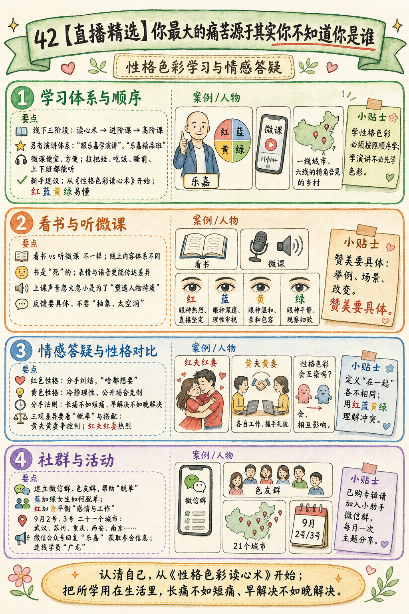
乐嘉介绍了性格色彩课程的线上与线下学习体系，强调线上微课便宜方便，适合普及。他回应了学员关于课程顺序、看书与听微课区别、性格色彩是否互染等问题，并举例说明红蓝黄绿性格在情感中的表现，如红色性格分手时纠结、黄色性格冷静理性。他还提到将建立微信群帮助学员脱单，并鼓励学员具体反馈学习收获。最后预告了线下活动，并建议初学者从《性格色彩读心术》开始学习。
📖 全文解读（点开看全文）
性格色彩情感宝典，让你恋爱快乐，婚姻幸福。我是乐嘉，愿你用性格色彩的力量，使你的生命更美好。 还有人问"乐老师，我想上完你所有的课、不知道上课的次序是什么、应该先学什么后学什么、一共有多少课"。性格色彩的课分成读心术、进阶课、高阶课三个阶段（这是指线下的课程），再往上面是另外一个体系——演讲的课，"跟乐嘉学演讲"和"乐嘉精品班"，主要有三个演讲的课和三个性格色彩的课。学性格色彩必须按照顺序学，学演讲的课不必须先学性格色彩。但是因为现在正听的所有听友们遍布在全国各地，有的是一线城市、有的是六线的犄角旮旯的乡村，我这一生矢志不渝的梦想就是希望所有的人都能够了解、学习到性格色彩，所以我做微课就是想用最简单、最快速的方法能够帮助和普及每一个人。凭良心来讲、线上的学习连线下的十分之一都不到，但是线上学习第一个便宜、第二个方便、啥时候都可以听——你拉把娃的时候可以听、吃饭的时候可以听、睡觉前可以听、上下班的路上都可以听。你从来没有学过、从读心术听起还是先听情感都无所谓，因为性格色彩容易懂、一听就懂、一听就明白，从任何一个角度介入都可以，就像你今天刚刚在听、对红蓝黄绿不懂，我刚才跟你讲了一个红色性格不成熟的人谈恋爱是怎么样、你马上就明白了、马上跟你周围身边的人就连接在一起了。它最大的好处就是我不会跟你讲叽里呱啦一堆空洞的理论，我从第一句话告诉你的全是实用的、怎么来解决你的问题、怎么样来看自己看别人，你马上就可以把它用在生活里面。 那很多人说"看书和听微课一样不一样"？不一样。第一个微课的内容和书的内容体系不一样；第二个书是死的东西。我现在很遗憾你看不到我的表情，如果你有机会看到我的表情，你可以知道我具有一种功力（请允许我自我吹捧一下）：我可以不说话、用眼神的表达来告诉你四种不同性格的人眼神怎么样，当你看到了以后马上就可以想象到你周围身边的人是什么样子；我也希望通过语音的塑造、情绪的变化能够让你知道各种人的差别。所以有人问"为什么你讲课的时候声音会忽大忽小"，那是因为我讲的时候人在动、不可能嘴巴一直集中在麦克风上面，我在讲的时候闭着眼睛、睁开眼睛、手舞足蹈，我是要把这个人的特质给表现出来、否则没有办法精准地传达，我又不是念新闻联播，所以你姑且从性格的角度来理解。 "有没有一种人一出生四种颜色都集中在一个人身上"？在性格色彩的学问里面这是一个专业的问题，讲到的是性格的本性和个性、动机和行为，请你去听性格色彩读心术、那里面会有解决问题的答案。"乐老师，我是一个蓝加绿的女生、交际圈儿太小、怎么才能脱单"？太好了，我接下来马上会把所有学情感课的人全部抓到我们的群里面，我正在制定微信群的群规、目标是接下来有几十万个人在群里面、然后根据全国各地的情况分成各地的色友群，所以接下来你找不到男朋友女朋友的问题我就可以帮你解决掉，因为在群里面会有大量的色友、你可以在无数人当中进行选择，而且最重要的一个、即便你不喜欢说话、大家有一个共同交流的语言、很容易串联在一起；然后我在全国各地搞活动的时候你来参加好了、走走沙漠、又学习了性格色彩、又把你的终身大事解决掉、不满意换一个、多的是选择。 你看这个同学很好、在刷屏的时候说"乐老师我受益匪浅、茅塞顿开、醍醐灌顶，我悟性好、送奶工送的奶也好、谢谢奶爸"——我本来就是奶爸。这个马屁拍得多好，但这个马屁不够具体，在我们的演讲课上就教赞美要具体。你要告诉我"乐老师我听了你什么话特别有感触、因为我曾经发生过一个什么事儿、或者我现在正在经历什么、你讲的这个就跟我现在经历一样、我突然之间明白了一个什么道理、哪件事儿我操作是错的、现在我准备怎么做、问题就解决了"，这个我是特别受用的、因为我觉得我能帮到你；你告诉我"哇乐老师你讲课讲得真好"，抽象、太空洞、虚不拉几的、我不要听。 "吵架的时候我女朋友不让我跟他说话、也不让我碰他、该怎么做比较好"？如果他不让你跟他说话、不让你碰他，通常情况他的潜台词就是"快点来碰我、快点来跟我说话"，但是他需要反复好几个来回，这个时候最好的方法你最好是死皮赖脸（江南地区苏浙沪的人叫"西比特里"）地哄哄他、说说话、道道歉，这个问题是最好解决的，因为你女朋友肯定是红色性格、只有红色性格的人才会这么说。"怎么样才算两个人真正的在一起了"？这个问题问得太高级了，我不知道真正的答案、因为每个人定义不一样：你可能觉得两个人有了阴阳缠绵就是在一起了，但对于另外一个女生、她也许觉得那只是证明灵光一现的喜欢；如果你把"在一起"定义为两个人的灵魂在一起、就像《廊桥遗梦》里面那对男女主人公虽然天地相隔、但是觉得"此生我就是你的人了"。"男人恋爱当中有哪些误区"？男人恋爱当中最大的误区就是相信把妹达人和撩妹这样的屁话、看了太多的心灵情感鸡汤、自以为很了解女人，最大的错误就是不学性格色彩、那只有死路一条，当然这个误区同样在女人身上也会发生。"如何分手才不伤害另一半的心"？这种问题通常是一个红色性格问出来的，因为绿色性格不主动提出来分手、黄色和蓝色的原则性都很强、该分就分、长痛不如短痛、早分不如晚分（早解决不如晚解决），只有红色性格才会"哎呀跟他相处不下去要分、可踢开了以后他伤心怎么办、我已经不喜欢了可他还喜欢我怎么办、他对我又挺好的、我想做一个好人、如果伤他的心我就不是好人了"，啥都想要、最后纠结痛苦拖、本来一个月可以解决的问题两年也没解决掉、最后才真正伤害了别人。所以正式答案：在心态上你就要明白长痛不如短痛、早解决不如晚解决，至于具体说话的方法在情感心理课里面有这一课。 "三观差异非常大的两个人经常发生矛盾、还能不能在一起"？这就会牵涉到性格相似的好、还是搭配互补的好。在我的开刊词里面我已经讲得非常清楚：我不会给你一个公式来告诉你谁一定跟谁最搭配，因为每种性格都有幸福的、每两种性格的搭配都有不幸福的，但是这里是有个概率的——有的两个性格在一起相处容易、有的两个性格在一起相处起来比较难、费的力就会更大。你比方说黄色和黄色就会比较辛苦，因为大家都有控制欲、都希望有决定权、都希望自己说了算、都希望对方听自己的，在这种情况下两个人会为了争取家庭当中的控制权而展开战斗。我很少见到黄夫黄妻相处得好的，我曾经见到一个学员最真实的情况：在机场里面我跟那个黄色的女学员聊天的时候、旁边有一个男的路过、两个人打了个照面、握了一下手"回见"、然后这个人就走掉了，后来我才知道这两个人是两个典型的黄色、而他们两个人已经有三个礼拜没有见面了，因为两个人天天都在外面出差、彼此都见不到，听到这个事情我是非常惊诧、完全不可理解。因为我曾经亲眼目睹了红夫红妻在机场里面一模一样的情况、见面直接上去就拥抱接吻、我看他们样子已经快一年没见了、结果他们说刚刚在家里面说了"see you、拜拜"——红色性格表达情感的那种炽热和热烈能够把你给融化掉，而黄色性格在情感表达上的这种冷静、让红色性格觉得是不可思议的、非常冷酷的，但这一切对于黄色性格来讲很正常：第一是公开场合、没有必要表达热烈让别人都看得见，第二他有他的工作、我有我的工作、他看到我在跟别人谈话也很尊重我。所以黄夫黄妻绝对不会有情感爆炸、在吵架的时候不可能出现你摔盆子我摔碗、大多是一言不合两个人分头去睡。我为什么老是给你提《纸牌屋》、是因为这个片子里面的Frank和Claire两个人都要做美国总统、两个人都是黄色的，你看到第四季第五季的时候发现他们两个人都有自己的情人（男的喜欢一个小记者、女的喜欢一个艺术家）、两个人都知道对方有情人、心知肚明也不戳穿，后来也有内部的矛盾、女的想当总统男的不让、两个人窝里斗、但最终团结在一起，因为他们有共同的目标和价值观——达成目标和事业最重要。这种夫妻和情感的模式、你作为红色你能理解吗？打死你也无法想象这个世界怎么会有这么畸形的关系——如果你是红色或者蓝色、你一定会愤愤不平、认为这两个狗男女太功利了、没有爱情、只谈目的，对不起、人家爱得很，人家对爱的理解不一样、人家黄色性格对爱的理解是"爱就是要让两个人变得更好、达成共同的目标，婚姻就是人生的一份事业、我花时间去经营、就要达到我的目标"。所以黄色性格的离婚不像你想象的这么多，在四种颜色里面离婚率最高的一定是红色，黄色性格的离婚如果要影响到他的事业、打死他都不会离。想当年江湖上有一个非常著名的投资人王功权先生、几年前引发了投资圈巨大的轰动、他留下来一封"私奔信"说"我跟谁谁谁私奔了"、他那个生意做得那么好、手里面握了几十个亿上百个亿的资金、但说私奔就私奔了——你这种事儿对黄色性格干得出来吗？干不出来，他就算家里面老婆跟另外一个男人躺在一张床上、他也照样能够忍得住，因为他认为这件事情对我真正要达成的大目标来讲完全不是这么回事儿。 "性格色彩会互染吗"？会互相影响的。如果你自己是一个比较毛躁、不温和的人，如果你相处的另一半性格比较温和、比较圆融，时间交往久了、你也慢慢地会变得好起来。"性格色彩什么时候有湖南站、西安站、台湾站"？等到自学性格色彩的人越来越多的时候、如果在你的当地有足够多的人，我第一件事情今年会把各地的色友会搞起来、然后根据各地色友会经营的状况来看在哪个地方开不同性格的课程。"那老师、我是一个红加黄性格的女生、怎么调节感情和工作"？红加黄的人是最容易在情感当中走极端、最容易成为不婚主义者、最容易借精生子不愿意结婚的，因为觉得世界上也能够独立、没有必要，但即便是单身、也要让你的生活变得很美好，美好的核心关键其实是生活和工作的平衡。 （连线环节。）"乐老师你好。""广龙好，介绍一下自己。""我是来自江苏徐州的，我听了乐嘉老师第一期课程、第二期课程、《本色》也看过了，之前我做了很多职业、一直没有坚持下去、甚至会怀疑我这种人存在是不是很奇葩，直到听了乐嘉老师的课、我觉得原来我是个红色性格的人、最大的收获就是我找到了我自己、非常感谢乐嘉老师。我现在是做一个线上教育、关于瑜伽方面的，但我打算换、因为我觉得这个还不是我最喜欢的、像红色性格嘛、就是可以帮助到别人、收获快乐或者赞美这种事业。我今年定了一个目标、就是今年一定要见到你、跟您学演讲课程，想问今年的课程计划在什么城市？""现在没有，但你课程购买了以后直接进入微信群、里面会有小助手通知你。如果瑜伽不喜欢做呢？""我觉得每个人做自己喜欢的事儿最幸福。""如果你不喜欢做、你觉得性格色彩也很好玩儿、也能帮助到别人、那你就来做性格色彩吧、跟着我们一起。""我就是想亲自见到乐嘉老师、可以接受到你单独面授的指导、这样会更清晰一点。""你超过30了吗？""今年29。""那么年轻、好啊、那我期待着很快能够见到你，见到你以后你告诉我是在七夕节情感心理课开课第一个连线的广龙、我就知道你了。""我的目的达到了、谢谢乐嘉老师。""你不要光说不练啊、到时候我要见到你的。好、再见。" 最后跟大家报告一件比较重要的事儿：这个礼拜周末9月2号和3号、在全中国二十一个城市会有性格色彩的线下讲座和互动体验活动，包括武汉、苏州、重庆、西安、南京等等二十一个城市都会有，你可以在微信公众号上面回复"乐嘉"、就可以得到你所在城市的参会信息。每次都很快又要跟你说再见啦，但我说那么多、其实还不如你自己系统地从头开始听，我尤其鼓励那些还没有开始学的人、先从《性格色彩读心术》这张专辑开始听起。有好多人在微博私信上跟我交流、所有的交流我都看得见，我有的时候不回的原因是因为你讲得好空虚、我不知道该怎么回你，你跟我讲一些具体的东西、告诉我这个东西解决了你一个什么困惑、帮你打通了一个什么很重要的想法、原来你不快乐现在变成快乐了，我会觉得我做的这个事情是有价值的、也很乐意回馈更多的东西给你。请不要忘记，所有已经购买了专辑的朋友赶紧加入到小助手的微信群，因为微信群里面我现在的安排是每个月会安排一次、两个我们性格色彩的专业老师跟大家分享不同的性格色彩应用的主题。已经听过读心术的朋友可以找机会来参加线下的课程、没有学习过的朋友直接从线上慢慢自学好了。期待着跟你见面，下回见面的时候你告诉我说哪天直播的时候听过你讲话、那我就知道了、我们是属于听友的关系，祝福你，拜拜。
【方法】须知这种性格伤人还不自知？
1/1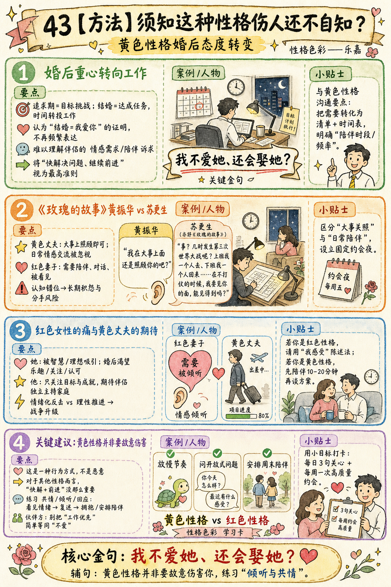
主讲人指出，黄色性格男人在婚后会将重心转向工作，认为结婚已证明爱，难以理解伴侣的情感需求。他以小说《玫瑰的故事》中黄振华和苏更生的对话为例，展示黄色丈夫认为大事上照顾即可，而红色妻子则控诉日常缺乏陪伴和情感交流。他还引用一位红色女性的经历，她因丈夫只关注目标而痛苦，黄色丈夫则期望她独立。主讲人强调黄色性格并非故意伤害，但需注意其他性格更重视情感倾听。
📖 全文解读（点开看全文）
性格色彩情感宝典，让你恋爱快乐，婚姻幸福。我是乐嘉，愿你用性格色彩的力量，使你的生命更美好。 嗨，我的朋友你好。今天我灵感来了，从今天开始起，我准备讲几个连续的章节，叫做"当你和黄色性格的男人结婚或者谈恋爱、你必须知道的注意事项"，如果这些事儿你不知道、你会死得很惨的。 有很多和黄色性格的男人结婚以后的女人们都有一个感觉，那就是在两人的约会阶段，对于那些有目标追求的男人来讲、追求到你是最让人兴奋的，所以搞定这个女人、跟她结婚、追求到她，这就是一种实现目标的过程。但是当黄色性格一旦得手、他们的态度瞬间转变："既然我和你已经结婚了、那我现在就必须要开始好好干活了，我在跟你谈恋爱的时候已经浪费掉了我大量的时间、我现在当然要把大量的时间节约下来用在工作上面。"当黄色性格的男人婚后、通常会很少考虑到伴侣的爱好和情感上的需要，可是女人们通常对于黄色男人这种工作狂的态度是不能理解的——"你不再爱我了"，而黄色男人本能的反应是"我干嘛跟你结婚？我跟你结婚就代表我爱你、难道这么点儿道理你都不懂吗"。黄色性格的男人本能地将女人们这种"你不再爱我"的想法理解为是那些小女人们的不成熟——"我求求你、你快点长大吧、难道我娶的是一个孩子吗"。他也不能够理解为什么自己的老婆不能够得到这个问题的答案，对于黄色性格的男人非常难以理解红色性格的女人天天就喜欢谈论问题、但是也从来不解决问题，这对于黄色来讲是不可理喻的——"你要么解决问题、要么就赶紧走开，你天天在那里谈、谈，你谈些什么呢"。 最典型的经典作，让我们来看看著名小说家亦舒写的《玫瑰的故事》里面，黄振华和黄太太的一段。小说里面是这么描述的：都说黄振华是个好男人，身为一名建筑师、他的钞票赚得不少、拼命地赚，但是他的名字却从来不会和明星歌星牵涉在一起，他和他老婆苏更生被公认为是圈里面最般配的一对夫妻，但苏更生打死一定要跟他分开。我们来看看他们两个在分手之前的一段对白，这段对白经典地显示出黄色性格的男人和红色性格女人两人之间的对话。先是黄振华在那里咆哮："你想我也患上血癌吗？你想我和你搂在一起死、以便证明我对你的爱吗？我知道你要我对你无微不至，你在开头的时候就希望我接你上下班、可我并没有那么做，你就记恨我没有在约会的地方等你一个小时。"黄太太抬起头看着黄振华，黄振华不说了、叹了口气："我在大事上面还是照顾你的吧？"黄太太听了以后开始回应："事？几时发生第三次世界大战呢？我肯定到那一天、振华、你一定会带着我逃难的。可是振华，这十年以来、上班我一个人去、下班我一个人回来，中饭你没有空、晚上也有应酬、生了病我自己找医生。振华，在不打仗、没有大事儿发生的时候、我要见你的面、能见得到吗？"然后他们两个就开始各自的控诉。黄色的老公说："我不爱她、还会娶她？她十年以来就是一直在控诉我不爱她。女人们都期望男人们为她们变成一个小丑、一个个为她们去死，她们没想到的是、丈夫死了、她们是要做寡妇的。"老婆的控诉是："振华、除了事业、一切都是他的附属品，他浑身无懈可击、但他不懂爱情。这十年以来、只有我一个人知道、我们根本不是什么珠联璧合，我迁就他无微不至、我已经完全失去了自我、我没有了我的名字、我是他的影子、所以他满意了，他丝毫没有发现我一个人在努力、在刻意地为他做出改变。" 我现在看他们刚才那段对话的时候、特别强烈的感受：当你懂了性格色彩以后、你就可以理解红色性格老婆和黄色性格老公的这种相处的痛苦。有一个红色的女孩儿跟我描述为什么她的婚姻让她特别痛苦，她说"我一开始就是被这个男人的智慧、理想、独立、还有英俊吸引，结婚以后、他的目标和那种独立成为了我们之间最大的障碍"。这个女孩儿是属于依赖性特别强的人、她本来希望在她老公身边能够得到乐趣、关注和认可，但是找错人了——这个黄色性格的人只关注目标、只关注成就、只关注自己想要达成的事业，这种生活方式会让生命没有任何的乐趣。而她的这个黄色性格的老公对她的希望和要求是什么呢？是能够在他出差或者工作的时候独立、有足够的能力可以主持起整个家庭。对于黄色性格来讲、在婚前追求一个女人是一种挑战、但是现在追求已经完成了、我们已经结婚了、这种挑战就不复存在了，他必然会把自己所有精神上的挑战全部转移到工作里面、不愿意再沉浸在女性的情感需要里面，对于黄色性格的男人来讲、那意味着只是一个过气的目标。可自从这个黄色的老公不再满足红色老婆的情感需要开始、红色老婆就开始用她剧烈的、情绪化的方式来反击，而双方这样的态度就造成了他们多年以来的剧烈战争。 所以那些选择和黄色性格在一起的人、请你记住我下面的建议：黄色性格并非要故意伤害你，如果看上去的确是这样的话、那只能说明这是黄色性格的行为方式。而如果现在正在收听本讲的朋友、如果你刚好是一个还没什么耐心的黄色性格、请你记住：对于另外的性格而言、"快速解决问题并且继续前进、前进再前进"并没有那么重要，虽然对你很重要，其他的人他们更关注的是有一颗柔软同情的心、以及你能够有一双倾听的耳朵。 好啦、分别的时间要到了。如果你选择的刚好是一个黄色性格的男人，在第一讲我们谈的是黄色性格的人并不想真心伤害你；在下一讲、我想告诉你、黄色不骂你已经对你够客气的了。我们下一讲再见。
【方法】别做梦这种性格会表扬你
1/1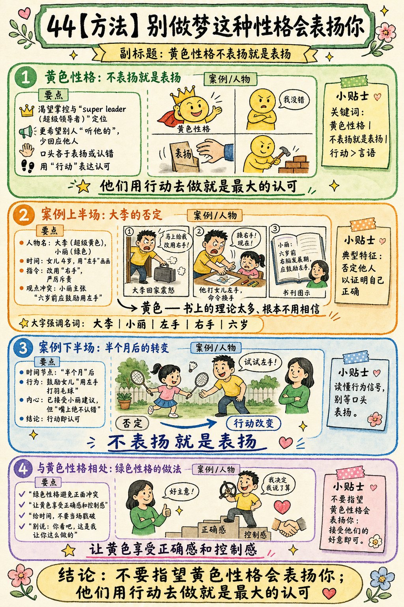
主讲人通过大李和女儿、妻子的案例，说明黄色性格不轻易表扬或认错，但会用行动表示认可。大李出差回家发现女儿用左手画画，严厉斥责并要求改用右手，否定妻子小丽关于六岁前应鼓励用左手的建议。半个月后，大李却主动鼓励女儿用左手打球，表明他内心已接受妻子的建议，但嘴上绝不认错。主讲人指出，与黄色性格伴侣相处时，不要指望他们口头表扬，他们用行动去做就是最大的认可，绿色性格应避免正面冲突，让黄色享受正确感和控制感。
📖 全文解读（点开看全文）
性格色彩情感宝典，让你恋爱快乐，婚姻幸福。我是乐嘉，愿你用性格色彩的力量，使你的生命更美好。 嗨，我亲爱的朋友你好。在上一讲我跟你探讨了黄色性格的一招，叫"无情就是有情"，而第二招我今天想跟你分享黄色性格的"不表扬就是表扬"。因为黄色性格他们在骨子里面喜欢去掌控全局，他们希望所有的人都把他们自己看成是一个super leader（超级领导者），对于他们来讲、他们不愿意去回应别人的想法，而只是希望别人听他的想法。 有一个超级黄色性格的男人叫大李。有一天他出差回家（他老是出差），他发现他女儿四岁、在家里面居然用左手在画画，大李这个时候就愤怒了："谁让你用左手画画，你马上给我改过来、必须要用右手、以后不许用左手。"跑到厨房里面，他对他那个特别绿色性格的老婆小丽就用非常严厉的态度指出，这是一个极其严重的问题："这个问题如果不解决、孩子如果长期用左手、逻辑思维的发展必将混乱不堪、以后学习工作都会非常麻烦、会被别人歧视、长大以后写汉字怎么办？我告诉你、我很少在家，但从现在开始起、你必须要担负起这个纠偏、一定要把左手改到右手的重大的历史责任。"没过一会儿家里吃饭了，大李发现他女儿夹菜也用左手，然后他赶紧就拿起筷子、一边死命地打他女儿的左手、一面命令她换手，然后再一次骂他老婆："小丽，我不是刚刚跟你讲过吗？你看看你女儿现在这个样子、你也不管管，小时候好习惯不养成、长大要坏事儿啊，你知道不知道？"然后他老婆就说了："我在一本儿童教育杂志上看到，六岁以前是儿童右脑思维发展期、这个时候应该鼓励孩子多用左手啊，六岁以后才是逻辑思维发展期、那个时候再用右手也不着急吧，所以我们有必要现在一定要去把它给硬揪过来吗？"大李听了以后、马上一句话就顶了回去："黄色——书上的理论太多、根本不用相信。"在典型黄色性格的理念里面，别人跟自己不一样的想法、扫干净、听自己的，就是为了要证明自己是绝对正确的。 然后这个绿色老婆小丽呢、特别温顺、她也没再说话，她就是希望她老公能够回心转意。结果有意思的事儿发生了：在这个黄色性格的大李把他老婆的回答否定了半个月以后，有一天小丽就看到她老公在陪女儿打羽毛球的时候、居然鼓励他女儿尝试用左手打球，这个时候这个老婆就心里有数了，因为他们结婚这么多年、她很清楚黄色性格有个重要的特点——只要他们决定，他就会全力以赴、朝正确的方向付出努力，但他嘴巴上是打死都不会认错的。 在刚才我描述的这个案例里面，那黄色性格的大李就给我们做了一个很好的模板。在绝大多数和黄色性格发生的爱情和婚姻当中、都会出现这样的冲突：黄色性格拒绝让别人取胜、他们只允许自己取胜、自己是对的，即便他知道自己是错的、他也会想方设法来证明他是对的。当他开始鼓励他女儿用左手打球的时候、实际上他内心已经承认了他老婆的建议是对的，但他这种黄色性格就是不愿意把荣誉让给对方——"哪能这么容易就让你说对"，这是黄色性格骨子里面最深处的想法。那么幸运的事情是什么呢？就是这个小丽是一个绿色性格，她明白黄色性格的控制只是代表黄色性格想向别人展示他自己是多么的强大，她也知道没必要让黄色性格当场下不了台。一个聪明的绿色、他知道不要用正面冲突的方法跟黄色去硬扛，把黄色想要的这种名誉、正确感给他就行了，干嘛要去跟他争呢？ 所以如果你有一个黄色性格的伴侣，让他们享受那种"他们是成功者、他们是正确的"——这件事儿对黄色非常重要，让黄色感觉到他是赢的、他在控制你。当他们拒绝承认你的说法是正确的时候、你给他们点儿时间，当他们决定要去做你给的建议的时候、你千万别说"你看到没有、你这么做是我告诉你的"，你不要去指望黄色性格会表扬你。如果这个黄色性格真的做法就是你的想法，你就平静地微笑、不用点破、接受他的好意就可以了，因为黄色这么做的时候、他本身已经是向你在表达他们喜欢你的想法、只是他嘴巴上不愿意承认。 好了，今天我们探讨的是第二点，我要交给你的是：当你和黄色性格的男人相处的时候，他不骂你已经够好了、不要指望他表扬你，他不表扬、他去做就代表好了。今天这一讲听完、如果你有心得的话，请把你的听后感回馈在评论当中、并且转发给需要的朋友，下一讲继续就这个话题深入探讨。
【方法】要记住，这种性格永远不会错！
1/1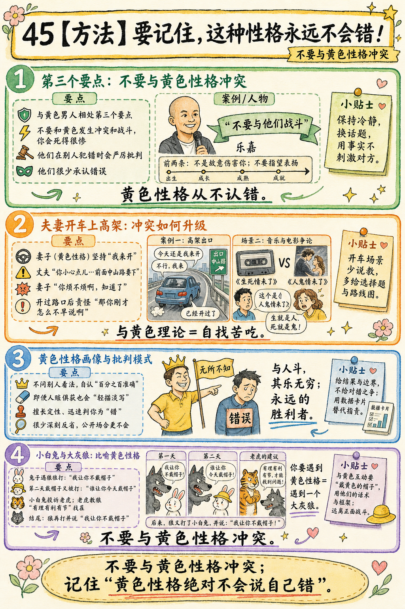
乐嘉强调与黄色性格相处的第三个要点：不要与他们发生冲突，否则会输得很惨。他举例说，一对夫妻开车上高架，妻子（黄色性格）坚持自己开，丈夫提醒她小心并注意路口，妻子却嫌他烦，结果开过了路口，反而责怪丈夫没早说。之后妻子把《人鬼情未了》说成《生死情未了》，丈夫纠正她，她仍狡辩。乐嘉指出，黄色性格从不认错，即使证据确凿也会轻描淡写，而别人犯错时他们会严厉批判。他还用小白兔和大灰狼的段子比喻，黄色性格像大灰狼，无论你怎么做都会找茬，所以不要与他们战斗。
📖 全文解读（点开看全文）
性格色彩情感宝典，让你恋爱快乐，婚姻幸福。我是乐嘉，愿你用性格色彩的力量，使你的生命更美好。 嗨，我亲爱的朋友，今天我们继续来看当你和黄色男人相处的时候你需要注意些什么。前两条我已经讲了，一个是你要知道他不是故意地伤害你；第二个，当他做的时候、他已经在认可你了、你不要指望他表扬。今天我要告诉你第三个非常重要的要素，那就是不要和黄色发生冲突和战斗、你会死得很惨的。 有夫妻两个人上车开高架。他老婆是刚刚学会开车，因为那天早上赶时间、她老公就说"今天还是我来开、等到哪天不赶的时候你来开"，他老婆说"不行、我来"，然后让她老公坐在副驾上。开车的时候就开得很快、她也搞不清楚状况，她老公就说"哎、你小心点儿、我们在前面那个中山路的路口要下来的，如果错过这个路口、高架上堵、咱们今天就完了、就要错过时间了"，然后她老婆就说"你烦不烦啊、知道了"，然后就继续开、越开越快。"哎、你真的慢一点、如果错过这个口子我们真的赶不上。""你像不像男人家、讲几遍呢、像老太太一样、我自己有眼睛的。"她老公吓得不敢说话了，然后这个老婆黄色还是继续开、越开越快，结果车从中山路这个路口穿过去了。等她老公反应过来的时候、没办法、只能苦笑"哎、已经开过了"，她老婆一听、第一本能反应"那你刚才怎么不早说啊、反应这么慢、没长眼睛啊"。这老公打落门牙往肚子里面咽、沉默不语，就把那个车里面的音响打开来。这个老婆大概也觉得气氛有点凝重，然后就放那个音乐，"嗯、这音乐选得不错、《生死情未了》、很好听"，结果她老公听完了以后就小心翼翼地说"这个歌儿好像是《人鬼情未了》"，"我当然知道了、你怎么这么较真儿啊、生就是人、死就是鬼，这《生死情未了》和《人鬼情未了》有什么不一样、不是一个意思吗"。你看，所以你想和一个黄色性格的去理论、你不是找死是什么呢？ 不管这个黄色性格是男方还是女方，反正在婚姻和恋爱里面、他们不会去问别人的看法、他只会告诉你他自己是百分之百的准确，即便人赃俱获证明了他不够英明、他也会拐一下弯儿、轻描淡写地当成是一个小小的误会或者是你的曲解，然后对于你的小题大做给予义正言辞的批判。而如果你犯错的时候、那你就必死无疑了，他们会飞扬跋扈、洋溢着神采、以他们非常擅长定罪的手法来告诉你"你是错的、我是无所不知的、我怎么会错"。所以对于黄色性格来讲、他们非常擅长在别人身上看到过错、然后又会给你迅速地定性、往死里面批判，但是他们自己很少做出深刻的反省、在大众面前更不会这么做、他们宁愿摆出一副姿态证明自己是永远的胜利者。 我想起很早以前看的一个段子啊，告诉你这个黄色性格、你跟他在一起生活有多……有一只小白兔在森林里散步，看到大灰狼迎面走过来，这个大灰狼走过来啪啪打了小白兔两个大耳光、对小白兔说"我让你不戴帽子"，小白兔很委屈地就走了。第二天小白兔戴着个帽子蹦蹦跳跳走出家门、又遇到大灰狼，这个大灰狼走到小白兔跟前儿啪啪又打了小白兔两个大嘴巴、对他说"谁让你今天戴帽子"。小兔子郁闷了很久、想了很久，最后决定去找组织、找森林大王老虎去投诉，老虎说"好、我知道了、这个事儿我会处理的、你要相信组织"。到了当天、老虎就把自己的哥们儿大灰狼给找过来"你这么做不妥诶、老子我很难办，这样行不行啊、你可以跟他说'小兔兔、过来给我找块肉去'、他找来肥的你说要瘦的、他找来瘦的你说要肥的、这样你不就可以揍他了吗，当然你也可以说'小兔兔、过来给我找个女人去'、他找来丰满的你说你喜欢苗条的、他找来苗条的你说你喜欢丰满的、你要揍他就揍得有理有利有节"。大灰狼"哎呀老虎大哥、怪不得你能做森林大王、你真的说得太有道理了、就照你说的办"。没想到老虎跟大灰狼讲的这个话、刚好给在老虎家门口除草的小白兔听到了、小白兔记下了。第二天小白兔又出门了、结果命不好、又碰到大灰狼，大灰狼就开始用老虎教的去找——"小兔兔过来、你给我找块肉去"，小兔兔就说"那你是要肥的还是要瘦的呢"，大灰狼一听心里面一沉、"不要紧、我还有办法、小兔兔你给我找个女人来"，"哦、那你是喜欢丰满的呢、还是喜欢苗条的呢"，大灰狼沉默了五秒钟、又打了小兔兔两个耳光"我靠、我让你不戴帽子"。所以你知道吗、你要遇到黄色性格、你就是遇到一个大灰狼，你跟大灰狼相处、你要戴黄色的帽子、说黄色性格的话，否则必然有一场恶战。黄色性格那么喜欢跟别人战斗、你跟他发生冲突、那他战斗起来是"与人斗、其乐无穷"，你跟他吵架、你傻呀。所以记住、黄色性格他绝对不会说他自己是错的。 （本讲到此。）
【婚姻】父母反对的恋情该如何继续?
1/1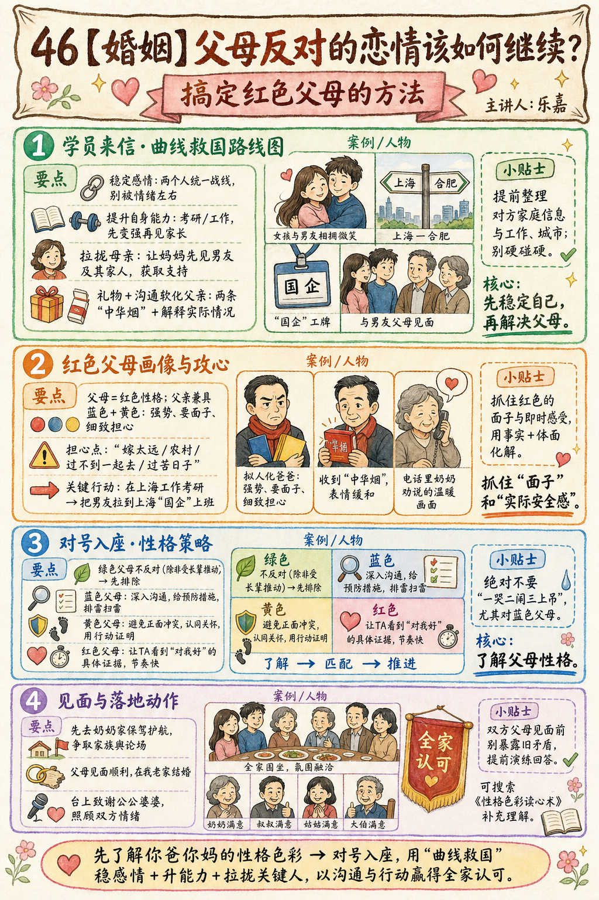
主讲人分享了一封学员来信，讲述她如何运用性格色彩分析父母性格，成功让反对她恋情的父母接受她的婚姻。学员的父母是红色性格，父亲还有蓝色和黄色特点。她采取曲线救国策略：先稳定自己和男友的感情，提升自身能力；然后拉拢母亲，让母亲见男友及其家人，获得支持；接着用礼物和沟通软化父亲，并借助奶奶的劝说；最后安排男友与家人见面，获得全家认可。主讲人强调核心是了解父母性格，并针对不同性格给出建议：绿色父母不反对；蓝色父母需深入沟通；黄色父母避免正面冲突，用行动证明。
📖 全文解读（点开看全文）
性格色彩情感宝典，让你恋爱快乐，婚姻幸福。我是乐嘉，愿你用性格色彩的力量，使你的生命更美好。 哎，很快要到年底了，很多单身的朋友开始发愁到底应该带谁回家过年，同样很多已经有了男女朋友的也在担心带回家以后自己的家里人到底能不能够认可自己的眼光跟选择，万一家人反对怎么办？所以今天我就给所有的朋友分享一封学员来信，她在父母反对自己恋情的情况下面、成功地运用性格色彩打了一场持久战，最后让她的爹娘接受了自己的选择、而且最后一家人还过得很幸福。接下来我来跟大家读一下这封信。 "乐老师你好。我跟我老公是大学同学，上大学的时候我们的关系就很好，那个时候经常在一起玩儿、上自习。我妈发现了以后就很认真地告诉我说不可以嫁太远、不同意，我爸也跟我说过绝对不允许找农村的、过不到一起去，这样的话我当时也就没有让我们的感情再进一步。可是到大学毕业的时候，我意识到如果毕业了、我可能这一辈子就再也见不到他的时候、心里很难过，我感觉他的离开好像我的心就空掉了，我难过了很久、他也很难过，所以毕业没过多久、我们就毅然决然决定在一起。当时他父母是同意的，他父母因为长期在外地打工、很朴实很开明、觉得只要儿子好就可以了，但我的父母绝对不是这样的。 想到以前父母的阻拦和他们的观念，我一开始不敢告诉我爸妈，而是采取曲线救国的方法。当时我对性格色彩已经学了一些、有了一些基本的了解，所以我就开始用性格色彩分析当时的形势、去分析我父母的性格。对于任何一个父母反对的恋情想要继续下去，有两个方面：第一是稳定自己的感情、两个人必须要统一战线；第二就是要解决父母的问题——你找的恋人一定是靠谱的、对你好的，他家里人也一定是对你好的，在带你的另一半见你的父母之前、自己一定要把好这个关、要对自己负责，每一个父母都希望自己的孩子过得好。其次，父母反对的原因你一定要了解清楚，双方父母见面以前你要做充分的沟通，并且跟自己的爸妈详细解释、介绍对方和对方的家庭情况。还有一点，就是对于女孩儿的家长来讲、无论你找什么样的人、家庭富裕不富裕、工作好不好，爸妈或多或少都会担心，这个是肯定的、你要提前有这个心理准备、不能跟父母对着干。 根据我听您的喜马微课、包括我后来去参加性格色彩的基础课程，我可以确定我爸妈肯定都是红色性格。我爸因为他个人的成长经历、还有一点点黄和蓝、有一点强势；我妈应该是个典型的大红色、想得很简单、没啥心理负担、当下很担心、过了一会儿就忘了，只要我的另一半对我好就行了、我妈根本不会想太多，所以我妈是比较好搞定的，但我爸就比较难对付了——我爸虽然性格是红色的，但是因为他有很多蓝色和黄色的后天训练出来的特点、考虑问题非常细致、也很在乎别人的看法、而且特别强势，因此老爸担心会比老妈担心更强烈：一方面觉得我如果找了个农村人、家庭条件不好、不能给我好的生活、以后会过苦日子，另一方面担心环境不一样、观念不一样、两个人根本就过不到一起去。 所以我又一次只能采取曲线救国。大学毕业以后我开始考研、我老公在合肥上研，那个时候就谈婚论嫁、跟我爸妈全盘托出肯定会受到阻拦，所以我们就先完善自己。以前我爸说研究生毕业以后我想到哪儿工作都行，当时我同学在上海、而且上海离合肥很近，所以我思量再三、来到上海一边工作一边考研，虽然很辛苦，但为了我们能在一起、为了爸妈能够同意、我们都在努力完善自己。如果我爸妈能接受我在外地上学工作、那就一定能接受我结婚以后也在外地，这样就离我嫁到外地的目标近了一步；一下子让他们接受我在外地也不容易、那就慢慢让他们习惯呗。我老公研究生毕业以后我就把他拉到了上海、在国企里面找了一个稳定的工作，这样一来我们两个不再是异地恋了、二来我们也提高了自己的生活和生存能力。 在我考上研究生那一年、我先把我妈拉到上海、让她见了我老公、并且见了他父母，我妈妈看到我老公和他家里面人很朴实、而且对我很好、然后她就放心了。诶、那我就算搞定了一个、我又拉拢了一个人到我的战壕，那接下来就只剩下怎么搞定我爸了。在我妈知道了以后、那年过年我回家、我给我爸带了两条中华烟，在他高兴的时候我跟他说"这是我男朋友给你买的"，我爸当时脸就变了、然后满头的汗、特别紧张。我当时觉得"我的妈呀、不就是找了个农村小伙子吗、还一身汗"，我开始还担心他发火生气，但一看他的状态就放心了、我也就知道我爸是为我好。后面我就问我爸是不是担心我过苦日子，他说是，我说不会的、他现在在一个特别稳定的大型国企上班、环境不错、他妹妹已经做护士很多年了、弟弟在哈工大准备上博士呢、家里面条件都很安稳、你不用担心了，说了一大堆、反正就是针对他有可能担心的问题。打那以后他算是了解了，但我觉得我还是没有搞定我爸。然后我就跟我奶奶说了我们的情况、说我男朋友怎么怎么对我好、他父母怎么怎么对我好，因为我奶奶从小最疼我、而且我爸非常孝顺、听我奶奶的话，所以我就让我奶奶去劝我爸。现在想起来、我红色性格的老爸特别在意别人的看法、我这样也算是抓住了我老爸的命门、多管齐下。 第二年过年的时候我就把我男朋友带到我家里面来了。在他来我家之前、我就详细跟他说了我家的情况、我爸妈的情况，但我一直没说我爸妈一开始是反对的，因为我知道跟他说了也没用、而且跟他说了以后还会让我男朋友着急、带来不必要的麻烦。我男朋友刚来的时候、我就坚持让他先去我奶奶家，因为我觉得奶奶会保驾护航的，结果事情进展得很顺利：见面以后奶奶、叔叔、姑姑、大伯都在、他们都挺满意我老公的，姥姥家的人见了老公以后都很喜欢，因为他很实在、很朴实、有点傻傻的，结果红色老爸发现大家都很喜欢他、就没啥想法了。后面我们双方父母见面的时候也很顺利，商量结婚的时候、我老公的父母说照顾我们家里面人、我们可以在我老家结婚，我也是觉得很感恩，所以在婚礼当天、我当着我们家、他们家的人在台上表达了对公公婆婆的感谢，一方面照顾到了他们家里面人的情绪、也让我们家里面人对我们放心，所以到现在为止我们双方父母都相处得很好。" 上面这位同学的分享主要针对的就是怎么样搞定红色性格的父母。如果你也遭遇到你爹娘反对你的恋情的问题，而如果你的父母是其他性格、那你该怎么办呢？请记住，核心原理只有一条，那就是先了解你爸你妈的性格色彩、然后再对号入座。首先，绿色性格的爹娘不会反对你的选择、除非背后有其他长辈的推动，所以绿色父母你可以先排除掉。而如果你的父母是蓝色性格、绝对不可以用一哭二闹三上吊的方法，因为你越情绪化、他越觉得你的选择特别儿戏，蓝色性格的父母要花出五倍以上的时间深入沟通，因为蓝色特别讲道理、他的反对背后一定有他的很多道理，而且蓝色负面思维比较强、内心隐藏着很深的担忧，你只有深入持久的沟通、才能一点点地排雷、扫雷、去雷，你给出蓝色性格所有担忧问题的预防措施、把他的心结一点儿点儿化掉、他才有可能会支持你。可是如果你爹娘是黄色的性格、请记住绝对不要和他引起正面的冲突，这会激发黄色性格的反弹，甚至他可能会用父母的权威来压制你，所以最好的方法是认同他、他为你好，并且通过你跟你另一半的实际行动来证明你们不是小孩儿、两个人在一起是已经想好了未来的、并且你们正朝着一个好的方向在发展，也许黄色性格不会立刻改变太多，但只要你们真的做到彼此承担责任、共同进步，黄色爹娘终会放心、放手。 今天这一讲的内容，你也可以赶紧去搜索《性格色彩读心术》这张专辑，在那张专辑当中也有一个问题、从另外一个角度来阐释了"爹娘反对的婚姻我们应该怎么办"，你可以从另外一个角度来补充。你会发现，所有的一切万变不离其宗，一切都可以从性格出发、理解、读懂并且搞定。如果你觉得这一讲刚好对你自己或者周围身边的朋友有用、赶紧转发给他、让他学习；如果你觉得让你自己有所感悟、请不要吝啬留言。让我们下一讲再见。
【婚姻】如何推动绿色的上进心
1/1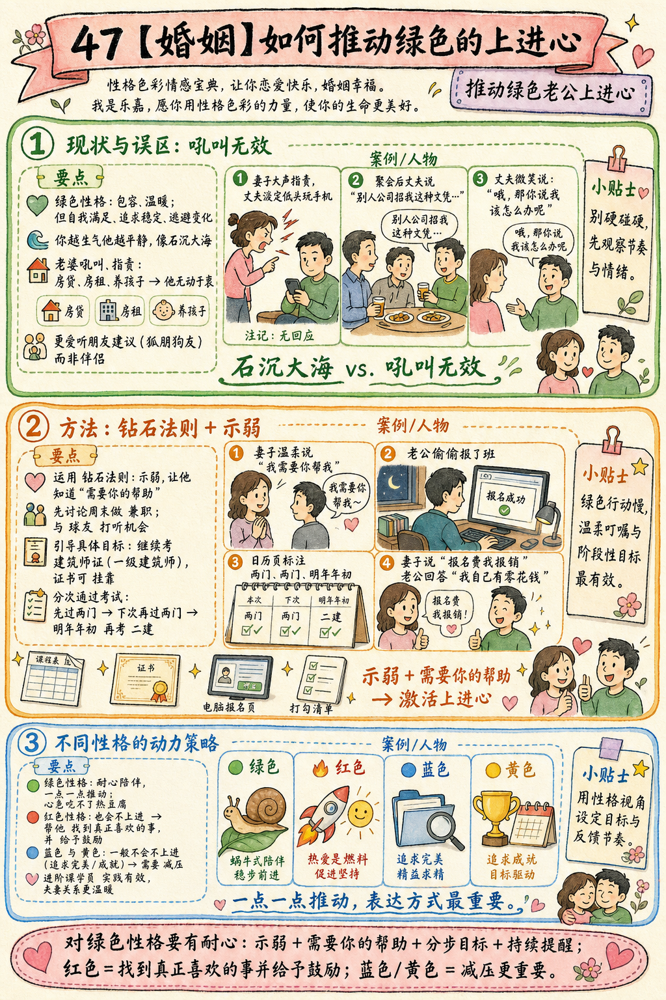
主讲人讲述了一位性格色彩进阶课学员如何运用性格色彩知识推动绿色性格老公上进的故事。学员一开始对老公吼叫、指责，但老公无动于衷，反而听朋友建议。后来学员学会示弱，让老公知道需要他的帮助，并建议他考建筑师证。老公偷偷报了班，计划分次通过考试，让学员感动。主讲人总结对绿色性格要有耐心，一点一点推动，并提到红色性格也会不上进，需要帮其找到真正喜欢的事并给予鼓励，而蓝色和黄色则不会不上进，反而需要减压。
📖 全文解读（点开看全文）
性格色彩情感宝典，让你恋爱快乐，婚姻幸福。我是乐嘉，愿你用性格色彩的力量，使你的生命更美好。 嗨，大家好，今天我们来解决问题——如何推动一个绿色性格的老公，让他变得能够有上进心。 如果说你有一个绿色性格的老公，有的时候你会觉得很幸福，因为他能给到你足够的包容、跟他在一起你会觉得很温暖；但有的时候你会觉得特别累，因为他比较容易自我满足、事业上也没啥追求、觉得现在这样就挺好的呀，如果你希望他多给自己定点目标、多点上进心，他就会对你傻傻地笑，这种情况下又好气又好笑。而且你越发火、越生气，他就越平静、像石沉大海，因为他会逃避，更多的时候是说"哦、那你说我该怎么办呢"。我们有一个性格色彩进阶课的学员，就嫁给了这样一位让她又爱又恨的绿色性格的老公，幸好她学了性格色彩以后、成功地运用性格色彩搞定了她老公没有上进心的问题。 她说："我一开始不了解性格色彩的时候、我就会对他吼'你说怎么办呀，你是个男人、你问我、你好意思吗，你怎么一点担当都没有啊，你就没有一点儿压力吗，要还房贷、要交房租、还要养孩子、拿什么养啊'，然后我就吼我的、他就在一边儿做自己的事儿、时不时看过一眼、然后继续该做什么就做什么、也不还嘴。更让我生气的是，我跟他说什么的时候他从来不给我回应，但每一次他跟他狐朋狗友聚会回来以后总跟我说'老婆，那个谁谁谁跟我说他们公司招像我这种文凭的、工资给得很高、以后还会有很好的升职机会呢，你说我要不要换个工作'，每一次一听到这个我就更生气了、就跟他吼'你让别人给你说什么就什么、我说的话你就当耳旁风啊，别人说你说这么多、那你跟他过去呗、你找我干嘛呢'，然后他又不说话了、我又在那儿一个人生气、气死我了。 时间长了以后，我们买了房子、结了婚以后，我就跟他说'你想想看、我们现在交房贷还要还房租、每个月工资加起来快一半儿都没了，再过两年还要养孩子、现在不努力、你拿什么养孩子啊，后面你还要靠父母啊、我们都多大了、你爸妈工作多不容易啊、我们得让自己强大起来啊、不能靠他们，我经常会觉得自己好累好累、如果你周末能出去做点儿什么的话、我们还稍微能轻松一点儿'，诶、这个时候看得出来他好像还有点愧疚，然后他就说'做点什么呢'、然后陷入沉思，下次再问的时候又陷入沉思，我真的是被逼无奈了。 我后来想到我可以用性格色彩里面学到的钻石法则搞定我老公。其实钻石法则是给我们指明了一个方向、具体的方法一定要自己去实践去探索，即便都是绿色性格、他也会有不同、不能全部是纸上谈兵。我的经验告诉我，对绿色性格的一定要学会示弱、让他知道你需要他的帮助、他才会为了你努力，因为绿色性格会以他人为中心、会更多地考虑别人的感受、有的时候会放弃自己的事儿来照顾别人的感受。然后我就开始试探他、我跟他说'你周末要不要去做兼职啊、周末在家两天都快闲死了'，我发现其实他是有行动的、我看他有偷偷地去找一些兼职的工作、跟他的球友了解关于兼职、但就不做，我问他'你怎么不去呢'，他说都觉得不合适、还有就是有些工作不愿意做（太懒了吧），我心里的对白是'懒死你算了'、但我嘴上笑着、忍住怒火说'没事儿、总能找到合适的'。其实这个时间我也在想他应该做点儿什么，后来突然想到他考的那个建筑师的证还没考下来、可以继续考啊、那个证书考下来挂靠一下、是不是比兼职还赚得多嘞、而且对他本身的工作也有帮助、比较实际、还不累、应该能满足他的需求。那天我就在他心情比较好的时候跟他说了这个事儿、他就同意了。不过绿色性格行动太慢、有的时候时不时叮嘱一下'老公、你那个证打算什么时候去考啊'，而且后来他自己偷偷去报了一个班儿、回来跟我说'老婆、我在网上报了一级建筑师的班儿、一级不好考、最近公司有点忙、我想好了、这次我先保证过两门儿、下次再过两门儿、明年年初的时候再考一个二建'，我就跟他说'真的吗、报名费多少钱呢、我给你报销'、'没事儿没事儿、不用、我自己有零花钱'，我当时听都快哭了——你能想象吗、就是从一个绿色性格的嘴巴里面说出来的话、总算给自己找点事儿干了，你知道做一个绿色性格的老婆活得有多累呀。" 所以对于绿色性格，不管是大人还是小孩儿、要有耐心，不可能让他们一口气吃成个大胖子、一定要一点儿点儿地推动他们、而且要注意表达方式，心急吃不了热豆腐。听完这个学员的故事，我们可以来思考一下还有哪些性格会不上进。其实除了绿色性格（那是因为他太追求稳定、不喜欢变化、比较容易满足、乐天知命），有的时候红色性格也会不上进，因为红色太喜欢玩儿、凡事都以快乐为目标、而且红色喜欢变化、朝三暮四、没有目标，有的时候红色自己也挺迷茫的、他们其实搞不清楚自己要什么。因此对于红色性格来讲、想要改变他不上进的状态、你要帮助他一起去发现他自己真正喜欢做的事儿，当红色找到自己真正喜欢做、真正开心的事儿的时候、他才会坚持，而且这个过程当中你一定要给他足够的鼓励、才能让他更有动力。相比之下，蓝色和黄色不太会出现不上进的情况，因为蓝色追求完美、黄色追求成就，两种性格在工作和事业当中对自己都要求很高、事业心会更强，但相反的是、他们因为对自己要求太高、黄和蓝都会给自己很大的压力，所以如果你是蓝色和黄色的另一半儿、你要学会帮助他们减压才对。
【婚姻】不同性格的作家伴侣
1/1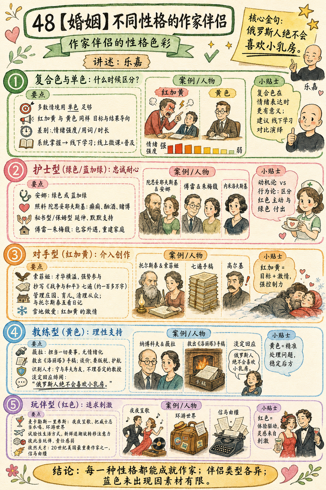
乐嘉以作家伴侣为例，讲解不同性格色彩在婚姻中的表现。他先回应听众关于复合色的疑问，指出单色在多数情境下足够，但红加黄与纯黄在情绪表达上有差异，需线下学习。接着介绍四种伴侣类型：护士型（如陀思妥耶夫斯基的安娜，绿色或蓝加绿，忠诚耐心）、对手型（如托尔斯泰的索菲娅，红加黄，才华横溢且介入创作）、教练型（如纳博科夫的薇拉，黄色，理性支持）、玩伴型（如麦卡勒斯的里弗斯，红色，追求刺激）。他举例傅雷妻子朱梅馥包容外遇，体现绿色；托尔斯泰夫妇雪地做爱显示红加黄；薇拉处理绯闻时冷静回应。最后总结：每种性格都能成就作家，伴侣类型各异，蓝色未出现因素材有限。
📖 全文解读（点开看全文）
性格色彩情感宝典，让你恋爱快乐，婚姻幸福。我是乐嘉，愿你用性格色彩的力量使你的生命更美好。 嗨，大家好，今天我们来聊一些全新的题材。最近我在看一些作家方面的书，看到有很多优秀的作家讲到他们的伴侣、他们的老公和老婆通常是什么性格的人。 在先前每一讲结束之后，总归会有听友向我问"乐老师，你干嘛老是讲单色呀，你为什么不讲复合色、组合色呀，这个世界上的人这么复杂，怎么可能只有一个人是单色的呢，绝大多数人都是组合色吧"。提出这个问题的人通常都自以为对性格色彩的理解很深，问出了一个特别高深的问题。然而在过往所有的讲解里面，每一种情境下用单色基本上都可以解决问题。在什么样的情况下双色组合对你可能会有意义呢？举个非常简单的例子：你做错了一件事情，然后你老板骂你，有的时候会发现红加黄的老板和黄色的老板在骂你的时候，都会以目标跟结果为导向、让你去改正，只关注最后的结果、对你所有的解释都没有任何兴趣，你学到现在应该知道这是典型的黄色性格的特点；但是红加黄和黄色的人在骂的时候，情绪的激动程度、用词凶狠的程度、骂你的时间长短确实有很大差别，在这种情况下你才需要来学习这两种性格的差别以及如何应对。但遗憾的事情是，这样的性格解析，我在微课上面穷尽洪荒之力也无法诠释，必须通过现场的演绎和学员之间的对比来完成。这就是为什么在这么多讲里面我经常提醒你，线上的微课学习是非常好的性格色彩普及工具和方式，但如果你想系统地掌握这个工具，没有办法，你唯一最佳的方式就是一定要通过线下的学习来完成。 好了，我要开始给你讲今天关于作家老婆和老公的故事了，当然主要还是讲他们的老婆，因为在人类历史上那些非常厉害的作家还是以男性为主。在伟大作家的老婆里面，第一种我们称为叫做"护士型"的伴侣，这一种老婆的代表就是俄罗斯伟大作家陀思妥耶夫斯基的老婆安娜，貌不惊人，但特别忠诚耐心。这个陀思妥耶夫斯基脾气无比暴躁、很难相处，从西伯利亚的劳改营回来以后经常发病、癫痫症、酗酒、赌博，可是他这一辈子最爱的女人只有一个就是安娜，不管是身体上还是精神上，陀思妥耶夫斯基都算是一个重号病人，他的双重人格都得依仗安娜的照顾。陀思妥耶夫斯基的老婆安娜是护士型的，在性格色彩里面就最有可能是以绿色性格为主、或者是蓝加绿。以护士型的老婆为例，可以衍生出来比方说秘书型、保姆型，他们的核心特点就是他们的存在都是以为伴侣做服务、作为人生最重要的支持。犹太有个著名的作家叫内米洛夫斯基，她是一个女性，结果她被抓到集中营里面的时候，她老公就不干了，跑到集中营跟那个法西斯盖世太保讲"她太有才华了，请让我替她去死"，结果就陪她一起上了黄泉路。那你说从性格的角度来讲，他主动找到盖世太保说要陪她一起去死，那到底是绿色呢、还是红色性格的积极主动呢？因为故事里的信息量太少，我们暂时没有办法做出精准的判断。但总而言之，我想向你传递的观点是，这个世界上有一些人，他们需要靠别人对他的依赖来体现自己的价值，他们甘愿去付出、默默无闻。但在红色和绿色这两种性格的准确区分上，从这些文字里面你可能很难判断，要通过另外的一些性格特质才能精准判断，这就是我一直讲的性格色彩里面最高级的部分之一——关于动机论和行为论的差别。中国有一个著名的作家、翻译家叫傅雷，傅雷的夫人叫朱梅馥，非常有意思：有一次伟大的傅雷搞了外遇，朱梅馥不仅包容了他，事后还表扬他，她对孩子们讲"如果不是你爸爸的回头，哪里有我们现在这么幸福的家庭生活"。你看这种爱和这种包容，还有她老公辜负了她、悔过以后她内心深处的那种欣慰。那你听了这个故事，觉得她是什么性格呢？有的人可能早就跳起来了"你居然敢搞外遇，你这个没良心的家伙，我要跟你离婚"，但你看她这种包容性，让这个生活不是过得很美满吗？我前面讲的这几种，不管是圣母、护士、母爱，反正都是属于这种宽容、走绿色路线为主的。 那话锋一转，你知道有的人是完全相反的，比方说她跟这个伟大作家的关系就是一种对手的关系。比方说伟大的托尔斯泰的老婆，那就是典型的对手型，天资聪颖、才干过人，而且对托尔斯泰创作的介入程度远远超过陀思妥耶夫斯基的老婆。托尔斯泰在写《战争与和平》的时候，她在油灯下帮他抄了七遍——《战争与和平》这本书有一百多万字，她抄了七遍，与此同时还要管一个硕大无比的庄园、工人、农奴，给孩子喂奶、做衣服，晚年还要肃清托尔斯泰周围的信徒和从众，给他一个安定的创作环境。她像只老鹰一样扫视人群、捍卫着托尔斯泰，就连对这个女人毫无好感的人比方说高尔基——高尔基特别讨厌托尔斯泰的老婆——但他在内心深处也不得不承认这个女人的存在和意义，没有她，托尔斯泰根本搞不定《战争与和平》。她和托尔斯泰两个人互看日记、争风吃醋、毫不相让，快到50岁的时候，老头老太托尔斯泰和老婆两个人还赤身裸体地躺在雪地上面发狂、在雪地上面做爱，你想想看这是多么疯狂的夫妻。从性格的角度来讲，前面你听下来所有的反应，会觉得她应该是一个黄色性格的吧，但是当你听到在雪地上面疯狂做爱的时候，如果你跟我一直学到现在，你应该得出来一个结论，这肯定是一个红加黄的人，因为没有一个纯黄色的人会在雪地上面疯狂做爱，这是基本的性格规律所决定的。 比托尔斯泰老婆更厉害、更凶狠的一个，那是我真正认为很厉害的黄色性格的人，就是纳博科夫的老婆薇拉。薇拉照顾他生活起居，和房东谈价、和出版社要版税、上门探望他妈，这些事里事外都是她做的，但她本身自己也很有文学才华，只是一旦发现纳博科夫的天才比她更强的时候，她就决定和这个天才融为一体。如果有一个车夫认可纳博科夫的才华、而有一个教授否定了纳博科夫，她一秒钟都不会犹豫、只会跟那个车夫做朋友；而且像《洛丽塔》这么伟大的书，是薇拉从纳博科夫扔到火堆里的草稿中给救出来的。后来纳博科夫找小三在外面被人抓住了，有人就去骂纳博科夫，结果这个事儿传到薇拉的耳朵里，她心平气和、淡淡地只说了一句话"那个妞儿在外面传说纳博科夫喜欢她的小乳房，我想告诉大家，俄罗斯人绝不会喜欢小乳房"。我看到这句话的时候心头一震。你看，因为她的存在，让纳博科夫免于被沙皇、被独裁者、被政客、被卫道士、被警察、被各种各样的绯闻以及新闻媒体的造谣、诽谤、跟踪所摧毁，所以在纳博科夫的人生当中，没有她，纳博科夫成就不了。这种黄色性格就是属于担当了一切重要的事情，并且没有情绪化，在发现问题、处理问题的时候非常精准。 好了，今天最后再来告诉你最好玩的一种红色性格的伴侣。有一个作家麦卡勒斯，她老公叫里弗斯，他们两个的关系就是夜夜笙歌、把威士忌当成水喝、环游世界、尝试各种各样试验性的生活方式、来体验各种各样的生活可能。但她自己其实并没有什么作为老婆的责任心，一旦婚姻的新鲜快感退潮了，她就会转移自己的注意力，去找其他的男人、其他的女人上床，像对待不想要的玩具一样。但她老公其实跟她是一样类型的人，所以他们两个人全都是彼此当成生活的玩伴。当然你会说她这种性格能写得好东西吗？人家不一样，人家是20世纪美国最重要的作家之一，她写的小说信马由缰、随性落笔、没有什么缜密的布局，但就是天才、就是喜欢读。所以我现在要讲我的结论了：第一，每一种性格都有可能成为伟大的作家，因为每个作家的风格都不一样；第二，每个作家的背后都可能有一个让你想象不到的神奇的男人或者女人的出现，因为在所有天才的刺激里面，性的刺激、爱情的刺激是人类创作最重要的源泉，所以为什么有很多天才，不管是男性还是女性，当他们百年过后、你去审视他的情感生活的时候，总会有很多让你惊讶之处；第三，每一个人上天怎么搭配是搭配好的，就是你到底配的是一个护士型的、还是一个对手型的、还是一个教练型的、还是一个玩伴型的，这个东西因人而异。最后一个，如果你听到现在、假设自学了好长时间，你说"哎，怎么没有蓝色呢"，那我想告诉你，是因为我看的这几本书里面还没有看到，也许以后看到了我随时跟你分享。如果你自己有什么心得，或者在我讲这些东西的时候想到了些什么人，欢迎你在节目下方留言，我们一起来交流、一起进步，下期见。
【恋爱】不同性格如何拒绝表白
1/1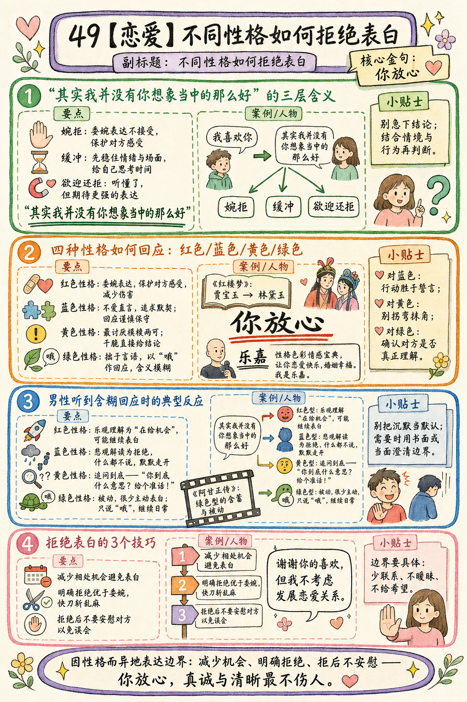
乐嘉以性格色彩理论分析不同性格的人如何拒绝表白。他先举例女生说“其实我并没有你想象当中的那么好”，指出这句话可能有三种含义：婉拒、缓冲或欲迎还拒。红色性格会用委婉方式保护对方感受；蓝色性格不喜欢直接回应，期待默契，如《红楼梦》中宝玉对黛玉说“你放心”而非“我爱你”；黄色性格喜欢干脆，拒绝时直接明了；绿色性格则用“哦”回应，含义模糊。接着分析不同性格男性听到类似回应时的反应：红色乐观，可能继续表白；蓝色悲观，默默走开；黄色会追问到底；绿色被动，很少主动表白。最后给出拒绝表白的三个技巧：减少相处机会避免表白、明确拒绝优于委婉、拒绝后不要安慰对方以免误会。
📖 全文解读（点开看全文）
性格色彩情感宝典，让你恋爱快乐，婚姻幸福。我是乐嘉，愿你用性格色彩的力量，使你的生命更美好。 你有被人表白过吗？如果向你表白的这个人你一点儿都不喜欢、你会怎么办呢？假设这个人你很喜欢、那你当然是求之不得了，关键是这个人你很讨厌、或者你一点儿感觉都没有，那么不同性格的人到底应该如何拒绝别人的表白呢？事实上，不同性格在拒绝别人的时候做法不一样，当你了解性格以后、你才能够更好地面对拒绝或者被拒绝、采取最恰当的应对策略。 先说一个小细节。当男生对女生说"我喜欢你"，女生的回答是"其实我并没有你想象当中的那么好"，请问你理解这句话的意思吗？如果你是在青涩的恋爱时期，"其实我并没有你想象的那么好"这是一句让人感到意味深长的话，因为这句话可以理解有三个意思：第一，表示一种婉转的拒绝——我不是你想象的那个样子、你只是喜欢你想象当中的我、真实的我你并不了解、你也不会喜欢；第二层意思是缓冲——他用这句话来缓和一下被表白以后不知道该如何回答的尴尬；还有第三种意思可以理解为欲迎还拒——虽然我听清楚了你的表白、但似乎你表达得还不够、我需要你再次强烈地表达出来。所以同样这句话其实是有三种完全不同的解释，一句话有这么丰富的功能、所以听到这句话的人有的时候总是无法揣测到这个人到底什么意思。 那么什么性格会用什么样的方式来回应对方呢？我们先来看红色性格。在四种性格里面，人们只知道蓝色性格敏感，其实红色性格在情感当中一样也很敏感、他们很在意别人的感受、有的时候会用委婉的方式来表达自己的意思，这样可以较大地保护对方、减少对对方的伤害，同时他会减轻自己的那种负罪感，所以红色性格会用委婉的方式来表达自己的想法、不管是拒绝还是缓冲、或者以退为进。而蓝色性格他的敏感在"不希望对方受到伤害"这一点上和红色性格没什么差别，但是相比较而言、红色有的时候会非常坚定地回应对方行或者不行、但蓝色几乎没有这种情况出现，因为蓝色并不喜欢把自己的情感说出口、他们希望两个人的爱特别有默契——"我到底喜不喜欢你、你应该能够感受得到、我所做的一切你也应该能够看得到，如果到头来还需要我用语言来回应你的表白的话、那么蓝色性格就会觉得跟你这个人一点默契都没有、会让他很失望"。所以当有的人直接对蓝色性格表白的时候、蓝色一般不太愿意回应，即便要回应、他也会选择最谨慎最保守的一种说法。可是如果你的表白恰如其分的话、那效果和反应就完全不一样。 比方说在《红楼梦》第三十二回里面，我们来看看贾宝玉是怎么对林黛玉表白的。宝玉瞅了半天、方说道："你放心"三个字。黛玉听了、愣了半天、方说道："我有什么不放心的？我不明白这话、你倒说说怎么放心不放心？"宝玉叹了一口气、问道："你果不明白这话？难道我素日在你身上的心都用错了？连你的意思若体贴不着、就难怪你天天为我生气了。"黛玉说："果然不明白放心不放心的话。"宝玉点头叹道："好妹妹、你别哄我，果然不明白这话、不但我素日之意白用了、且连你素日待我之意也都辜负了，你皆因总是不放心的缘故、才弄了一身病，但凡宽慰些、这病也不得一日重似一日。"黛玉听了这话、如五雷轰顶、细细思量、竟比自己肺腑中掏出来的还觉恳切，竟有万句言语、满心要说、这时却半个字也不能吐、只愣愣地望着他。此时此刻、宝玉心中也有万句言语、不知从哪一句上说起、却也愣愣地望着黛玉。两个人待了半天、黛玉只咳了一声、两眼不觉滚下泪来、回身便走。宝玉忙上前拉住、说道："好妹妹、且站住、我说一句话再走。"黛玉一边擦泪、一边将手推开、说道："有什么可说的？你的话我早知道了。"口里说着、却头也不回、进去了。宝玉刚才那番表白、算是彻底击中了林黛玉心里面的那个情愫、让林黛玉产生了"这个人爱懂自己"的感觉。幸亏宝玉没跟林黛玉说"我爱你"，如果说了、那结果一定不会像刚才描述的那么戏剧、那么美好。所以你看、这个就是蓝色性格、他是怎么来理解别人的。 那么第三种性格黄色性格，他们有个有趣的特点、那就是他们最讨厌的就是模棱两可、最喜欢的就是干脆利落，黄色觉得是非曲直必须分明、爱或不爱、喜欢不喜欢、你就应该清清楚楚明明白白，而且黄色根本就不在乎别人的看法和感受——"我拒绝你、你能不能接受、那是你的事儿、和我无关"。所以你如果下回对黄色性格表白、不需要用任何委婉的方式、直截了当就是最好。最后一种绿色性格，他面对表白没那么多花花心思、对于爱和不爱内心很清楚、但表达上拙于言语，"哦"、就一个字儿就同意了，"哦哦、我知道了"。绿色最大的麻烦在于、他明明自己回应了、但总给对方"好像这个人没什么回应"的感觉；绿色如果要拒绝别人、他们也是说"哦"——这个字儿就像绿色性格的万金油、啥都可以用、啥都可以来回答，这别人也没搞清楚是啥意思。 那么不同性格的男性他们会有什么样的反应？如果这个男性是红色性格、他听到女生的回应以后、其实三种情况都会考虑到——也许拒绝、也许同意、也许矜持，很多人回来以后稀里糊涂就跑到网上去问"今天我跟一个女生表白、这个女生说'其实我没你想象的那么好'、她说这话到底啥意思呀"，这个问题的答案其实除了当事人没人可以给准确的答案。在听到女生回应的那一刻、红色性格的男生本能就乐观地认为"这个女生实在特别矜持地给自己希望、所以我应该再进一步地来进行表白"。可是如果这个男生是蓝色、他们是悲观主义者、看事儿喜欢往坏的地方看、当他们听到模棱两可的回应的时候、本能就会觉得这是对自己的拒绝、根本就不会考虑其他可能（当然蓝色也绝不可能对喜欢的女生说"我爱你"、这会让蓝色性格觉得自己特别肤浅、而且好像会无路可退了），当蓝色性格觉得自己被拒绝的时候、他会什么都不说、默默地一个人走开、他们需要时间和空间来平缓自己内心巨大的痛苦。可是如果男生是黄色性格、他就会打破砂锅问到底——女生的回应相当于没回答自己的表白、对于这种模棱两可的回答、黄色绝对不可以接受、他也不愿意花更多的心思和时间去猜这个女生在想什么、所以黄色就会追问"你到底什么意思啊？什么叫做没你想象的好？你行不行？你给个准话吧、你赶紧说、你到底行还是不行啊"。如果这个男生是绿色、绿色也不太可能主动说"我爱你"、因为他会考虑"这个女生不喜欢自己、自己的表白会让那个女生不好回应"，除非很多很多年两个人在一起、那么估计他才有勇气来表白，这一点上你看《阿甘正传》就感觉得到。如果女生回应说"我没你想象的那么好"、那个绿色性格就是"哦"、该干什么干什么，他回应"哦"的意思是表示"我听到你跟我说的话"，所以绿色说"哦"不代表同意和不同意、只是代表"我知道了"。 最后送大家一个小技巧——如何拒绝别人的表白。第一条，如果你意识到别人可能喜欢你、而你又不喜欢他的时候、请务必减少跟他在一起的时间、不要让他有机会表白、这是减少伤害最重要的环节。第二条，如果真的快要到、已经表白了、那你必须明白有拒绝就必定有伤害，明确的拒绝比委婉的拒绝肯定会更好、明确的拒绝是快刀斩乱麻的最佳方式。第三条，拒绝以后、表白者的难过是需要他自己来疗伤恢复的、你没办法去安慰他、你安慰他必定会引起不必要的误会和更大的麻烦。所以今天这一讲结束了以后，假设你目前正在面临别人对你的表白、或者你想跟别人表白，请你把今天学到的这一点点法宝马上现学现卖，我等着你分享你的好消息。
【婚姻】如何赞美不同性格的伴侣
1/1主讲人通过一个妻子做家务后索要表扬的场景，引出如何赞美不同性格的伴侣。他分别举例：红色性格需要具体口头表扬，如传媒公司姑娘因客户赞美她眼影而倾向合作；蓝色性格需要事实认可，如画家老刘因商人将他的画与齐白石并列而视为知己；黄色性格需要更难的任务来体现价值，如妻子不断要求丈夫提高上交工资比例以认可其能力；绿色性格则只需不逼迫、不发脾气。最后回到开头问题，分析不同性格丈夫的反应：红色会直接表扬，蓝色会检查并指出不足，黄色会批评，绿色会简单说“好干净”。
📖 全文解读（点开看全文）
性格色彩情感宝典，让你恋爱快乐，婚姻幸福。我是乐嘉，愿你用性格色彩的力量，使你的生命更美好。 嗨，大家好，今天讲的主题是如何赞美不同性格的情人或者伴侣。先给你出道题目：有两个人结婚、结了一年多了，婚后双方并没有规定家务活应该是谁来干，有一天这个老婆比平常早点回家、心血来潮把家里面全部打扫了一遍，这个老公下班回家以后特别累、准备好好休息静一静，然后这个老婆就不停地问老公"你有没有发现家里有什么变化呀、家里有没有变得干净啊"，她不断地向她们家老公邀功、希望她老公能够表扬自己。请问，如果你是这个老公、你会怎么做？ 结婚过日子家务是一个比较繁重的工作，家务活谁应该做、有的夫妻就争执不下、有的夫妻能够达成协议一人做一天、还有的夫妻约定俗称一个人全包，90后、95后的年轻夫妻还会发明出来做家务用的色子、每天扔色子决定谁负责做家务，做家务好像已经成了婚后的一个难题。像这个老婆这个样子做了家务索取表扬的确实很少见，因为在我们的概念里面、表扬似乎从来都是不能要求的，如果你为了得到表扬而做好、感觉上就像为了完成任务一样地学雷锋、容易给别人贴上一个动机不纯的罪名，做得好主动邀功似乎也容易造成一些不必要的麻烦。那么到底应该如何认可不同的性格呢？ 要认可红色性格，其实最简单的方法就是口头表扬，这招对红色性格是屡试不爽，任何的赞美、夸奖、表扬都会让红色性格心情迅速地好转，原因就是红色做出努力的时候内心并不确定自己是否做得足够好、他必须要通过别人对他的肯定才能确定自己做得怎么样，当然既然自己已经很努力地付出了、那么无论做得如何、他们都希望能够得到别人的肯定。有一个在传媒公司上班、每天工作就是要和不同的客户谈媒体宣传的姑娘、每天出门前都精心打扮一番，有一天有三个客户分别找她、要在一个特定的媒体版面做宣传，三个客户都能接受她的报价、这回选谁不选谁她就会为难——从公司利益的角度来讲选谁都一样（因为开价都一样、收益也不会受损），但是从个人情感的角度她更倾向于给第三个，原因就是前面两个客户都太冷了、就是在商言商，但第三个客户来的时候高度赞美她、表扬她"你们公司有实力、有影响力啊"，更重要的事情是还表扬了她"眼影和粉底的选择特别别致"。你看这个事儿就是生活当中特别小的一个事儿、几乎每天都有无数这样的小事儿在发生，但是让人意想不到的事情是、这个小事儿决定成败的是那么微不足道的一个细节，其实这和这个当事人的红色性格关系很大、她对于赞美自己的人会特别有好感。所以如果你要和红色性格打交道、还是要多赞美。需要注意的是，对红色性格的赞美要非常具体、不仅要有观点、还要有支撑、要对观点详细说明、不能泛泛而谈，"你很漂亮"这样的话听上去就像是一种敷衍、不是发自内心、因为太多人都这么说了、太抽象了。 相比较红色性格，如果你想要认可蓝色、就会费力很多，因为蓝色性格并不是用语言就可以取悦的。对蓝色性格来讲、口头的夸奖有太多作假的可能、毕竟生活当中有很多人言不由衷，即便是工作当中历练很久的蓝色、有的时候也会言不由衷地去口头表扬别人、内心非常痛苦。蓝色需要的认可和表扬、你一定要通过事实或者细节来呈现。老刘是一个画家、在圈儿内是以画山水而闻名，书画界里面泾渭分明地有两派——一派是以销售价格来评定实力、一派完全无视画的价格、认为艺术品是无价的，老刘就是后者。老刘的画虽然小有名气、但是因为缺少必要的包装和市场运作、一直卖不出价、老刘也不在意。有一天有一个年轻的商人来找老刘买画，很快他就从老刘的画里面挑出一幅以湖水和亭阁为主题的画、以高于市场的价格买走，过了几天他就邀请老刘到公司做客。一进公司大门、这个老刘看到自己的画被挂在公司客厅的正中间、在他画的旁边是一幅齐白石的虾，就在那一秒钟、老刘的心底涌起无限感慨、视对方为知己、瞬间成为交心之友。这种认可就是蓝色性格需要的——他觉得"你对我的重视、把我的画跟齐白石的相同并列在一起、你的欣赏水平足以体现对自己的高度认可"，就这一秒钟、视为知己者死。 黄色性格他们需要的认可方式大部分人很难接受、觉得太诡异了：他们觉得"你认可我、方法很简单、就是给予我更难的工作和安排"，这个奇怪吧？对黄色性格来讲这个就是他需要的认可方式、他觉得"你给我更高更难的事情、才能体现出我的价值"。工作上这样的事儿太多了，我举一个生活里面的例子：有一对夫妻结婚结了五年了、刚结婚的时候这个男方职位很低、收入也很低、他老婆没嫌弃他、大家都反对的时候这个女的就决定一定要跟他结婚、这让这个男人非常感动、发疯一样地工作。刚开始结婚的时候男人的收入太少、两个人就没约定收入谁来管谁来支配、各管各，结婚第三年男人的努力得到回报、职位提升、收入翻番，老婆就提出"为了更好地规划、让那个男人每个月把收入上交一千块"、男人就答应了，没过多久男人的收入增加、老婆把上交金额提升到五千块，过了五年以后这个男人每个月上交的钱其实已经达到了月收入的80%、他剩下来的钱其实跟他三年前收入还差不多（因为他收入涨得很高、他老婆要求他上交的金额也越来越高）。作为一个旁人、当我在听这个故事的时候就感觉到他是辛辛苦苦几十年、一夜回到解放前，但其实这个男人怎么想不重要、重要的是这个老婆本人不断地要求她老公提高上交工资的比例，这里面就包含着这个黄色老婆的两点核心思想：第一要控制——我要用控制收入的方法来控制我老公；第二认可——因为你现在有能力不断地赚更多的钱了、所以我才会不断地提升你上交金额的比例，由此可见她其实对她老公的能力很认可。 最后我们来看绿色性格。绿色性格需要的认可方式也很简单：你不要对我发脾气、你认同我可以不用太努力、不用太上进、让我安安静静地待着、你就对我最大的认可。绿色其实对于别人对自己的认可和表扬没有特别大的需求。有一种说法"天下人人都需要表扬"，这话理论上是对的，但是每种不同性格的人对于这种认可和表扬的需求的多少差异太巨大了——绿色的需求太少了、相对于红色来讲几乎可以忽略不计，所以基本上来讲他不太需要，对他来讲保持现状、你别逼着我干某些事儿、你不逼我、你不发脾气、你就是对绿色最好的认可。 接下来回到今天开头我提的那个问题：这个老婆在家里面把所有的家务都做完了以后、她老公应该如何来应对呢？如果她老公是红色，当红色性格得到老婆明确地提出需要表扬的时候、会毫不犹豫地给红色认可，在红色性格看起来"只要老婆开心、表扬一下有什么关系呢、老婆开心自己就开心"。可是如果这个老公是蓝色，他明明看到这个红色要求给她表扬、他也不会，因为蓝色觉得"我如果答应了你这么肤浅的要求、等于把我自己拉到跟你一样肤浅的位置"，然后他还会仔细检查家里面做得怎么样、把做得不干净的地方指出来，检查以后发现他老婆做得还不错、最多就是说一句"嗯、继续保持"。如果这个老公是黄色性格，当他发现他老婆急不可待地索取表扬、内心很不高兴、他觉得"老婆这么样地寻求赞美、必然未来会招来麻烦"，所以不仅不会表扬、还会教育批评他老婆不要苛求赞美。如果这个老公是绿色，他就会告诉他老婆"哇哦、好干净哦"，当然在老婆的眼中或许算一个表扬、也或许不算表扬，但绿色真的是不太会去说好听的话、他不会表扬别人、除非你能告诉他他该怎么说、他会照猫画虎。 所以你看到了没有？你如果跟四种不同性格的伴侣结婚、你的人生命运是不一样的，那你自然而然就可以来思考你们的婚姻、你们的恋爱关系是不是稳定、是不是你想要的，当你的心理需求得不到满足的时候——所以天下才会有那么多分手、那么多离婚。最后关于表扬这件事儿我还要特别强调：表扬是认可的一种、和赞美一样、只适用于红色性格，当红色明确提出表扬的时候请你务必给他、即便你认为他向你讨表扬的这个行为很难理解；第二，当你表扬红色性格的时候、除了要具体、最好当着别人的面、这样表扬会更有效果；第三，如果你觉得他处理问题确实不周到、有问题、你可以私下指出、这样既保全了他的面子、又给了他台阶、对方会容易接受一点儿。好了，今天这一讲就讲到这里为止，我们下一讲再见。
【恋爱】女朋友穿衣暴露怎么办？
1/1乐嘉以一位听友的来信为例，讲述其女友喜欢性感打扮，他送裙子和T恤却被女友改成短裙和露背装。乐嘉分析四种性格对穿着的影响：绿色性格爱宽松自在，如森女风；黄色性格重庄重干练，如撒切尔夫人；蓝色性格追求精致，抗拒暴露；红色性格渴望关注，喜欢展露身材。故事中的女友是红色性格，因得不到男友认可而敷衍。乐嘉还描述了红蓝黄绿四种性格的男友对此事的反应：红色愤怒，蓝色郁闷，黄色警告，绿色无所谓。最后给出三条建议：约法三章、陪逛街赞美、订时尚杂志，若做不到或价值观不合则建议分手。
📖 全文解读（点开看全文）
性格色彩情感宝典，让你恋爱快乐，婚姻幸福。我是乐嘉，愿你用性格色彩的力量使你的生命更美好。 嗨，大家好，今天我们来讲：如果你女朋友或者老婆喜欢穿着暴露，那你该怎么办？几天以前，有一个听友很苦恼、给我写了封信，他说他刚刚谈了一个特别漂亮的女朋友、长得跟特朗普的女儿很像，大家都说这小子交了狗屎运了，但他一点儿都不高兴，因为他女朋友特别喜欢性感的打扮，他觉得女生就应该保守一点，每次女朋友走在大街上都会惹来众人的目光、他就觉得特别不舒服，但他女朋友很享受。他跟女朋友提过很多次要求穿得保守一点，可她每次都敷衍过去。有一次他送给女朋友一条裙子和一件T恤衫，他女朋友偷偷地就把裙子剪成了小短裙、把T恤剪成了露背的，当场被他发现。请问，如果你是这个男人、你会怎么办？ 在解决这个问题之前，先要来看穿着打扮和性格到底有些什么样的关联。在四种不同性格里面，如果这个女生是绿色，绿色性格的女生在选择穿衣服的时候更愿意选择宽松自在的衣服、不愿意在衣着和配饰上面耗费太多的精力和时间，他把穿衣和吃饭睡觉一样看成是一件特别普通的、生活基本的元素，这个和绿色性格那种和谐平静的特点有着非常大的关系。最近这些年江湖上流行一种叫做"森女"的穿衣风格，森林的森就很能反映绿色性格对穿着的态度（当然我没说森女风格的女生全都是绿色，我只是说森女所提倡的这种简单的穿衣风格和休闲的生活态度、是与绿色性格完全贴切相符的）。可如果这个女生是黄色性格，当你听到黄色性格的女性、你脑海里面第一个跳出来的是撒切尔夫人、希拉里，你会觉得黄色性格他们对衣服的外观并没有特别地在意，他首先要求的是简练精干、有层次、有助于工作，在黄色看起来暴露自己的身体和工作没关系的时候、他是绝对不会穿着暴露的、因为他觉得会使得整个人不够庄重，所以对于黄色他们经常会穿一些偏黑偏灰、很昂贵的衣服来显示自己的档次和庄重、希望获得别人的尊重，黄色骨子里面如果暴露不能够让他得到更多的商业利益、他宁可选择庄重、跟男人一样搏杀。在电影《穿普拉达的女王》里面，米兰达身处在时尚界、他穿华丽的衣服也是为了工作需要，但一旦回到自己的时间、他立刻就会换回特别干练的衣服。 第三种情况，假设这个女性是蓝色性格，她们对于着装有比较高的要求、希望在外界别人看到自己的时候感觉自己是精致的，如果暴露太多、他们会担心引发别人的非分之想、反而会显得鄙俗。蓝色对精致的追求不仅仅体现在衣服的款式上、还会体现在面料、质地、品牌、做工，小到一个纽扣、一个胸针他都要精心挑选，更何况蓝色性格在天性里面不愿意成为众人瞩目和关注的焦点，穿着性感意味着回头率更高、这是蓝色性格内心强烈抗拒的。如果女生是一个红色性格，他们在内心渴望让大家关注、他们的穿衣风格呈现多变、有吸引力，对于红色，穿多穿少其实不是核心问题、穿裙子穿裤子也不是核心问题，只要能够得到别人的赞美、只要能够与众不同、吸引住大家的眼球就好了，所以他会根据自己的身材特点进行一个判断、假设能够吸引眼球、得到赞美、他其实不介意去尝试、他不惜花掉很多时间来精心地打扮自己、为的就是能够得到足够的关注。从这一点上来讲，和这个故事里面穿着暴露的这个女孩儿很相似。穿着暴露其实也是一个人和人不同的理解：对于不喜欢暴露的人、他会觉得暴露不好，但是对于红色性格来讲、他觉得是大方地展露、展现自己身材的美——"上苍对于自己的厚爱、自己花了很多时间去锻炼、我去展露自己的美有什么不对呢"，他觉得很好。所以当这个女生没办法得到她男朋友给她认可的时候、她就会敷衍、会偷偷地改变衣服，你可以感觉到她其实不愿意和她男朋友发生正面的冲突，可是红色性格内心深处对于美的这种需求和强烈的向往、你永远无法压制。 那现在我们要解决问题了。当你找到这样的一个女朋友，这个男人应该是抱怨呢、愤怒呢、还是忍气吞声呢？如果他是红色性格，典型的红色第一反应就是愤怒、并且要把这种不满强烈地表达出来，之所以愤怒、第一是因为他情绪化、第二他觉得女朋友没有把自己的话放在心上、对自己不尊重。可是如果他是蓝色性格，他的内心反应是郁闷难受、表面上还是不会说什么，因为他原来送裙子给女朋友、其实是用特别婉转的手法希望她能够理解自己的意思，但是女朋友的行为彻底打破了这个蓝色性格对于默契的内心深处的愿望、深深地失望。如果他是一个黄色性格，他会马上意识到这个女生不安分、随时随地要警告她，引发黄色性格不满的原因是、黄色会强调这个女友应该听自己的话、服从自己的安排、不能由着性子想穿什么就穿什么——"我已经曾经告诫过你了、你还要这样坚持、本性就是容易招蜂引蝶的、必须随时警告和限制"。而如果他是一个绿色性格，绿色性格根本就不会在意这件事儿、对女朋友的穿衣风格其实没太多要求——"不管你穿什么样、你都是我女朋友、穿成什么样都没关系，如果有朝一日你不是我女朋友了、那你穿什么就更跟我没关"。所以红蓝黄绿四种性格的男人对这个事情的反应会完全不一样。 最后关于今天这一讲，我们再来分享当在穿衣服当中有矛盾的时候的三条重要的秘籍。第一，你需要和这个人约法三章、约定什么样的场合可以穿什么样的衣服，并且明确告诉他穿什么样的衣服可能会引发自己的不满。第二，多抽出时间陪女朋友逛街，如果他试穿一些你喜欢的衣服的时候、你要给予充分的赞美和认可。第三，给女朋友订购一些时尚杂志、帮他扩大挑选衣服的范围、为他找寻更多适合他的搭配。如果这三条你都做不到、那就趁早跟她分手。如果你现在正在收听本讲节目、你就是那个红色性格的女生，如果你男朋友啥东西都要来管你、约束你、打击你，并且你们两个人无法在这个问题上达成一致、在美的理解和价值观上面完全不一样，那我劝你们趁早分开，因为越到后来越发会痛苦。我们下一讲再见。
【性格搭配规律】蓝色vs绿色：内敛者和陪伴者的宁静世界
1/1乐嘉分析蓝色与绿色性格在情感中的相互吸引。蓝色喜欢绿色三点：体贴陪伴，举例蓝色学员因红色前妻追问情绪而痛苦，绿色伴侣默默倒水陪伴，让他享受安静；安心放心，蓝色出差时绿色从不打扰，回家有灯光等候；与家人关系好，蓝色学员小烟的绿色老公能包容她火爆父母，缓和家庭矛盾。绿色喜欢蓝色三点：周密安排，绿色学员的蓝色妻子提前规划旅游，准备周全；善于分析，绿色丈夫遇工作难题，蓝色妻子通过提问分析帮其解决；沉着冷静，绿色女友的蓝色男友面对父母反对，不冲突不逼迫，默默努力并坚持约会，最终赢得认可。
📖 全文解读（点开看全文）
性格色彩情感宝典，让你恋爱快乐，婚姻幸福。我是乐嘉，愿你用性格色彩的力量，使你的生命更美好。 嗨，大家好，今天我们来聊蓝色和绿色——内敛者和陪伴者的二人宁静世界。蓝色和绿色这两种性格都属于内向性格、在情感里面他们都不喜欢说得太多，当蓝色和绿色相爱、相互理解、静静地享受二人世界的时候，完全可以做到所谓岁月静好、现世安稳。那么今天我们来看他们两个是如何相互吸引的。 在情感当中，蓝色性格喜欢绿色性格的主要是：第一，体贴与陪伴。有一位蓝色的学员告诉我，他经历过一段不堪回首的失败婚姻、之后过了很多年才走出，并且选择了一位绿色的伴侣，之所以决定跟这个绿色的女友步入婚姻、是因为她擅长于陪伴。有的时候蓝色在工作当中积累了负面情绪、回到家里面、他希望一个人安安静静地待着，以前的红色老婆每次看到他这个样子就问"你碰什么事儿了、你是不是遇到什么不开心的事儿啊"，他不愿意说、因为他觉得说了也没有用、压力还是要自己慢慢消化，但是红色的妻子太着急了、不给他消化的时间、就追着问"你怎么了、你到底怎么了、如果有事儿你就说出来啊、说呀、我们是一家人、你有事儿怎么能不告诉我呢、你说呀、说出来就没事儿了"。可是"说出来就没事儿了"这句话是红色性格的想法、或许对红色性格是有效的、但对蓝色性格而言完全无效，对于蓝色性格来讲没考虑好以前绝对不会说、如果你逼他说、就像把他开膛破肚一样痛苦。而现在他这个绿色的老婆发生一模一样情况的时候，绿色就在旁边给蓝色倒杯水、然后自己默默地陪在旁边、拿本书看看、或者干点自己的事儿、也不问蓝色、也不打扰蓝色，过了很久很久以后蓝色把思路给理清楚了、就问这个绿色"饿不饿、我们一起出去吃饭吧"，绿色就说"好啊"、就像什么都没发生一样跟着蓝色出去吃饭。这种不需要太多言语交流、完全不会给对方带来压力和困扰的陪伴方式、对于蓝色来讲很享受。 第二，蓝色喜欢绿色的是安心和放心。有一个经常出差的蓝色性格的朋友告诉我，当他专注于工作的时候最不希望被人打扰，这个绿色性格的老婆让他非常安心和放心。每次他跟同事们一起在外地出差、开会开到半夜，他同事的电话、领导的微信就开始噔噔噔噔、不停地有人来骚扰，而他的手机一直没啥声音、静悄悄，他绿色的老婆从来不主动打电话发信息给他、让他忙工作，回到家里楼下的时候、看到家里有一盏灯光等着他、他特别温暖，对于蓝色性格来讲这个是属于信任的最高境界。但从绿色来讲、其实绿色根本就没啥想法、老公不在家他也安于现状、下班回家看电视、洗澡睡觉、每天周而复始就一样、也不会特别地思念和惦记。 第三，蓝色喜欢绿色的是他跟谁的关系都能处好。我们蓝色有一个学员小烟，从小就看爹娘脾气特别火爆、吵来吵去、家里面杯子和碗飞来飞去、内心非常痛苦、没办法表达，多年以来她和父母的关系也没啥问题、但其实内心根本就没有亲近。她嫁给了一个绿色性格的老公以后突然发现老公跟她爹她娘的关系特别好，仔细观察以后发现绿色老公有个天然优势、就是她爹她娘发完火、吵完架以后、绿色完全不会感到难过、一直陪着笑脸、也没有什么心里不舒服。她私下问她老公"我爸妈大声吼你、骂你、他们互相吵的时候、你为什么从来不难过"，老公说"没事儿啊、爸妈年纪都大了、憋着火不发会影响身体、火气发出来不就好了吗"。托这个绿色老公的福、家里人的关系就越来越和谐，小烟也庆幸嫁个绿色的老公不错。 那么我继续来讲在情感当中绿色性格喜欢蓝色的是什么呢？第一，周密的安排。有一个绿色的学员告诉我，他们家里面要出去旅游的时候、他就觉得他那个蓝色的老婆太好了，绿色怕麻烦、也懒得想，但蓝色性格只要出游、就一定会提前很多天把线路规划好、准备必须的物品、把该带的东西都一件件捆好、安放在包包的分层里面，出发的时候绿色背个包就行了，到了景点没啥吃的东西、绿色也不用担心、因为蓝色早就把干粮、饮料准备好了、全家人既吃饱又吃好，所以对于那种懒得动脑子的绿色来讲、蓝色又是天使啊。第二，善于分析。有一个绿色性格在工作里面表现很不错，他告诉我其实这一切都是因为他蓝色老婆的功劳，绿色这个男人的技术特别好、能力强、但工作当中一旦遇到问题不知道该怎么办、回家里面又问他的"女诸葛亮"、问他蓝色的老婆，这个蓝色老婆也没干过绿色的工作、但是通过提问、分析、梳理、抽丝剥茧、就把这个绿色性格各方面的情况以及怎么会做、各种各样的后果全部分析出来、表格画出来、最终推敲出来一个最适合的答案，绿色一边在听、一边叹为观止，在这个蓝色性格贤内助的帮助下、绿色本来并不顺畅的事业也非常顺畅地往前推进。第三，沉着冷静。有一个绿色的家庭背景很好、他爹娘都认为他应该找一个家世非常好的男生，当他和一个蓝色性格的、家庭条件一般的男人相恋的时候、他父母就强烈反对，绿色原来没太多主见、如果男友放弃、绿色即便心里面喜欢对方、多半也会泄气，好在这个蓝色性格的男友非常沉着：第一，没有和这个绿色的爹娘对抗、发生冲突；第二，也不逼这个绿色性格的表态站队、也不让那个绿色性格为难，这个蓝色性格唯一做的一件事儿就是默默地在工作上加倍努力、并且继续维持之前的习惯，每个礼拜和这个绿色见两次面、见面的时候只要绿色不说家里的事儿、蓝色也不提、一如既往地关心绿色、诉说自己心底里面不会跟别人说的想法，结果蓝色这种沉着冷静就让绿色感到这个蓝色是大大的靠山，所以不管家人怎么说、绿色也不争论、跟蓝色继续约会过了大半年、家人最后就放弃掉了、两个人就举办了低调但是很温馨的婚礼。 所以蓝色和绿色的性格搭配和碰撞，他们没有红色性格那种轰轰烈烈的爱、也没有黄色性格那种斗天斗地的爱，他们是那种细水长流、平淡中的温情，但是自有一番情调和感受。蓝色性格喜欢绿色的体贴陪伴、令人安心和和谐宁静，而绿色性格喜欢蓝色的周密安排、善于分析、沉着冷静。所以并不是天下所有的人都喜欢天雷地火的。那天下是否所有的蓝色和绿色的情侣都那么的幸福呢？他们之间的问题和烦恼在之后再来讲。
【婚姻】二婚夫妻如何相互信任
1/1乐嘉通过一个二婚夫妻的案例，讲述妻子发现丈夫每月给前妻汇钱后逼问，丈夫因怕误会而隐瞒。他分析不同性格丈夫的反应：红色会解释求原谅，蓝色会沉默愤怒，黄色会直接说明不道歉，绿色会道歉息事宁人。接着分析不同性格妻子的反应：红色需要情绪安抚，蓝色需要坦诚细节，黄色需要尊重和商量，绿色则宽容不追究。最后强调沟通要因人而异，学习性格色彩才能找到适合对方的方法。
📖 全文解读（点开看全文）
性格色彩情感宝典，让你恋爱快乐，婚姻幸福。我是乐嘉，愿你用性格色彩的力量，使你的生命更美好。 嗨，大家好，今天我们来聊一聊我们到底应该如何建立信任。最近有一个学员写信给我、很痛苦，她跟她老公两个人都是第二次结婚的，她无意当中从公司秘书那里知道她老公每个月都给一个账户上打一笔钱，结果跟那个人沟通以后、发现并没有打给那个人，然后她就开始怀疑、晚上回来以后就逼问她老公怎么回事儿，结果最后才知道、因为她老公的前妻经济状况不好、他就打钱过去接济她，他瞒着这个老婆的原因是怕她误会和反对。那么如果你是老婆、面对这样的情况你怎么办？ 在现实生活里面，对于大多数普通的人来讲、都还是希望对方跟前任越少瓜葛越好、老老实实一心一意过日子，所以她老公在接济前妻的时候、为了避免不必要的麻烦、瞒着老婆也很正常。那么当她发现自己老公有秘密瞒着自己、提出质疑的时候，通常情况下四种不同性格的老公会是什么样的反应呢？典型的红色性格，当他意识到老婆对自己产生怀疑的时候、最可能的反应就是解释、向老婆说明情况、请求原谅，因为红色在意别人的认可、怕被别人误会、心里面藏着一个秘密也让他内心压力特别大、所以赶紧说出事实、表明清白、寻求理解和支持。而蓝色性格的人面对老婆对他的猜疑、第一反应就是愤怒和伤心、他会认为老婆不相信自己，蓝色特别在意双方的默契、"你这么轻易怀疑我、让我很难接受"，然后最有可能就是沉默以对、表达他的失望和痛苦。对于典型的黄色性格、他最有可能的反应就是说明事实、然后就不再提了，相对来讲他不容易受情绪控制——"既然我决定去给我前妻接济、那就说明有这个必要，如果你怀疑我有外遇、那我觉得你才是没事儿找事儿、我自己坦荡得很、根本没必要跟你解释和道歉"。如果是绿色老公呢、害怕矛盾和冲突的他、赶紧就承认接济前妻、道歉、希望息事宁人、千万别再生气了。 重点，今天我要聊的是：四种不同性格的老公做反应的时候是他的本能反应、但是未必能够起到最佳的效果，因为你如果不了解你老婆的性格、用错了方法、可能问题会解决不了。以刚才我讲的这个例子为例，如果我们不讨论这件事情本身牵涉到的价值观或者道德的因素、仅仅从性格角度来诠释，我来给你分析一下不同性格的老婆得知老公瞒着自己给前妻汇钱的时候最有可能的反应。 第一种红色性格，红色对情感高度敏感和依赖、容易放大自己的感受、有的时候会因为别人不经意的冷落或者怠慢而有很多遐想、让自己的情绪跌入低谷，特别是在自己很在意的亲人面前、红色会特别脆弱、不够强大、因为他总是希望能够不断得到别人的认可和关注。当这个红色老婆发现老公瞒着自己给别人汇钱、想象力立马就丰富了——外面有人了、老公不再爱自己了、和前妻旧情复发了，然后马上就会陷入到不理智的状态。其实作为男人、红色老婆最需要的除了你要给她解释以外、更重要的是你要对你现在老婆情绪上的安抚、让她能够对你有信心，比方说表达你对她的欣赏、善良大度、温柔体贴、让她知道她在你心目当中的位置无人能敌，很快她情绪就会转换过来——这个就是红色性格可爱之处，她情绪好了、心里疙瘩解开了、天性就乐于助人的红色很容易接受你的做法、而且红色不爱记仇、然后她也会理解你隐瞒的行为。总之一句话、情绪安抚好了、啥都会变得很轻松。如果你沉默不解释、自己还闷闷不乐，你不仅得不到老婆给你的理解信任、还会加深她对你的不信任；如果你像黄色性格那样根本就不搭理她、即便她知道她可能误会了你、但她也会因为你对她情绪的不关注、认为你根本就不在乎她、而更加痛苦和愤怒，这对于你们的情感是一种很大的伤害。举一个我们学员的例子：一个红色的妈妈、敏感、对自己没有非常自信、特别在意别人对自己的看法、在意老公和女儿对自己的态度，她知道他们很爱自己、但其实很有疑惑，有一次她出国去玩儿、很多天过去了女儿也不打电话给她、她就特别失落"我自己一个人在外、你女儿也不关心我一下、我生你一个女儿有什么用啊"、越想越伤心。得知她的想法以后、她这个黄色性格的女儿说"你不是天天发微博吗、你那个外面玩儿得挺开心的、一切都挺好、我觉得没必要打电话呀"。你看、不同性格对同一个问题的理解完全不一样：红色觉得"你要多给我打电话、多关心我"，黄色觉得"既然你已经很开心了、我还关心你干什么"。因为她老公和女儿两个全是黄色性格、注定了这两个人都不喜欢说甜言蜜语、不喜欢说关心的话，所以这个总是得不到需求满足的红色性格的妈妈就怀疑是不是他们都不需要自己。但是别后再相聚的时候、这个女儿看着妈妈做的一桌菜就会感慨"哎呀、还是有妈在好啊"，就这么一句话、这个红色就心花怒放，这种被需要、被认可的感受会让她再苦再累都心甘情愿——这就是典型的红色性格、叫"给点儿阳光就灿烂"。 第二种蓝色性格，对于蓝色来讲、你已经知道忠诚、信任、默契无比重要，蓝色敏感多疑、容易记仇、不喜欢直接表达、外表很平静、内心很激烈，所以当红和黄两种情绪外露的人和蓝色性格交往的时候、会非常难适应。我有一个学生跟我讲了一个例子：他家里面他女儿交了个男朋友、这个男朋友是红色、性格大大咧咧毛毛躁躁，蓝色的老爸就很不喜欢、但表面上不动声色、不反对也不赞成，每次女儿说好要带男朋友回家吃饭、他就找了个借口溜掉、在外面晃荡、到人家走了才回来，他就是想用这个方法暗示女儿自己的态度，女儿打算结婚征求他的意见、这个蓝色老爸的回答是"不用和我商量、我的意见不重要、你们不是都商量好了吗、你们自己看着办吧"。蓝色如果对一个事儿不顺心、不满、他就是拐弯抹角、正话反说、噎得你有苦说不出。所以如果一开始我讲的这个故事里面的老婆是一个蓝色性格、那你就要小心了，因为蓝色非常在意两个人的信任和默契、不管你什么原因、这种敏感的事瞒着他去做、他就是觉得"你不相信我、不能忍受"，实际上他已经感受到了巨大的伤害、会很失望、在心里面把这笔账给记着。蓝色不会直接当面去问你、但是会用旁敲侧击的暗示的方式让你自己说出来，也可能自己想办法去查清楚你给前妻汇钱的真实去处。对于你来讲、其实最明智的做法就是坦诚沟通、详细说明你给前妻汇钱的理由和你的考虑，比方说你只会动用你自己收入的一部分去接济前妻，蓝色很在意细节、你要通过所有的细节的描述让他确定相信、打消他的顾虑，同时你要承诺今后不再瞒着他做事儿、要履行你的诺言。所以蓝色性格远远比红色性格要难搞得多。 第三大类黄色性格，黄色比你想象的要简单，那是因为黄色性格非常看重别人对自己的尊重、不尊重，他们不能接受另一半独断专行或者不跟他商量。如果在这个故事里面老婆是黄色、当她知道老公偷偷瞒着自己给前妻汇钱、会非常不满，因为"你瞒着我做、你就不尊重我、不把我当回事儿、你可以一开始跟我来商量、商量以后做没有问题"。作为老公你要去理解她、你就是要道歉、承认错误、再把你前妻的状况告诉她、请她帮忙、和她一起寻找解决问题的方法，只要你给她足够的尊重、事儿总会解决的。但如果你像蓝色那样沉默不语、她就会认为你不屑和她解释——"好啊、那除了证明你不尊重我、我也没啥好说的"。最后一种性格，如果你老婆是一个绿色性格、那你太幸福了，因为绿色天性宽容、他们和气解决、面对冲突能躲就躲、不自找麻烦。我有一个绿色的朋友、在文革的时候他是一个研究所的工程师，当时单位里面两派人马斗得很厉害，因为他一直给大家的印象就是脾气好的老好人、所以各派都想拉他进去、这个绿色就很为难（因为参加A派就得罪了B派），他根本就不愿意做、所以就躲避、哪一派也不参加、一个人到实验室搞自己的科研、不去沾麻烦事儿、成了在那个年月为数极少的逍遥派之一。这个绿色性格就与世无争，所以你遇到的那是个绿老婆、她即便听别人说你给别人汇钱、也会心里告诉自己"我老公一定有自己的理由"、也不去怀疑——怀疑多累、只要平常好好正常过日子就行呗，她都会懒得问你、因为她觉得自己没事儿找事儿才太麻烦。 所以很多人都会讲两性关系里面最重要的是沟通、好像沟通就能解决所有的问题，答案是他们忘记最重要的一点：跟不同性格的人沟通方法是不一样的、没有一招可以吃遍天下，用适合对方的方法跟对方沟通、就是我们讲的钻石法则、就特别重要。那你怎么才能找到适合对方的这把钥匙呢？首先学习和了解性格色彩、学会区分人的性格和动机、了解每个人内心真实的想法，如果大家彼此都能够相互知道性格、知道对方做事儿的原因、赢得理解、那很多问题就会迎刃而解。
【直播精选】如何快速了解性格
1/1乐嘉用中医望闻问切和西医体检做类比，说明性格色彩通过观察性格规律判断类型。他举例一个红色性格的人从小被黄色性格的父亲教育要强大，长大后变得像黄色，但内心不快乐，这体现了真性格与假性格的区别。他还提到在夫妻关系中，红色性格与黄色性格相处会感到累，因为黄色性格不断督促进步。最后解释了压迫红（像绿色）和压抑红（像蓝色）的区别，以及钻石法则的含义。
📖 全文解读（点开看全文）
性格色彩情感宝典，让你恋爱快乐，婚姻幸福。我是乐嘉，愿你用性格色彩的力量，使你的生命更美好。 各位亲爱的朋友大家好，向各位先报告一下：这是我一生当中第一次同时操作两个直播，刚刚在直播之前还特意去沐浴更衣了一下、就是没有来得及梳妆打扮。我现在假想大家知道我是做性格色彩的，虽然我怀疑现在在听和在看的很多朋友可能压根儿都不太了解性格色彩是个什么样的东西、就是听听我在这里说红蓝黄绿四种性格——"这个人这么复杂、能够用颜色来分吗？它和星座到底有一些什么样的差别啊"，当然问这个问题的人现在越来越少、因为在过去的十年时间里面还算普及得不错。你看我现在手里面拿的这十二张牌、就是在过去几年性格色彩发明出来的一个非常牛逼的性格色彩的卡牌，每张牌有正反两面，任何一个人、你现在都不用做网上的测试、你可以在三分钟的时间里面马上用这个东西看出来你自己的性格、你的优势、你的局限性、你现在缺少什么、你将要去发展的方向，我用任何的两张牌可以读心读出来你正在想些什么、用三张牌可以指引出来你未来的方向、用两个牌阵可以把你所有的家庭关系、亲子关系、你跟你爹你娘的关系、你跟你老婆之间的关系、你在职场当中跟你老板同事客户的关系全部用牌阵排出来。但是这里面因为我实在是吃不准有多少人听过性格色彩、了解性格色彩、有多少人是菜鸟啥东西完全都不知道，那每一个人喜欢的东西又完全不一样，所以我今天准备采取一种新的方法：各位有问题可以直接在上面问、我现在看得很清楚、你问的任何问题我看到了、我逮到什么问题就回答什么问题。 "老师、你喜欢吃青椒吗？"可以、但是我更喜欢吃炒蛋，其实青椒炒蛋里面我更喜欢吃蛋，尤其是我去年蛋蛋摔碎了以后、我对蛋的情感比以前要更加强烈，这个在我《性格色彩读心术》这张专辑里面有详细地讲述这个关于蛋蛋的故事。"乐老师、你的下一本书还是会关于性格色彩方面的书吗？"我先报告一下下几本书的内容：下面也会有两本书会先出，一个是关于我在演讲方面的书、叫《演讲六字箴言》，如何让你自己快速成为一个演讲高手，去年曾经出了一本我的学生（也就是超级演说家和我是演说家节目里面提到的演讲很牛的人、他们基本上平均下来在网上演讲的点击率都在一两个亿以上）合在一起当时写的一本叫《演说家是怎样炼成的》，那我在《演讲六字箴言》里面会重点教给大家该如何用六字箴言让任何一个说话口吃结巴的人都变成是一个演讲的高手。第二本书名没有想好，主要是来讲性格色彩的深度应用的普及书籍。关于我个人写的书，我最想写的其实是我跟灵儿（我女儿）的一本书、书的名字我都想好了、叫《女儿奴》、讲我自己是怎么沦落为我女儿的奴隶、被她掌控的。关于励志方面的书，写到目前为止被众人称为最励志的书大概就是《本色》了。上个月《写给单身的你》在韩国出版了，明年我大概会出一个新版《本色》、我还有很多内容想加进去（我在《本色》里面写了好多我在非诚勿扰的经历、我过去做电视的经历、我做演说家的经历）。 "有什么样的方法、乐老师可以快速地了解一个人的性格？"这个你去医院看过病吗？如果你去看中医、他帮你看病的方法就是搭你的脉、所谓望闻问切，老中医会根据他望闻问切的经验（你脉搏跳动的速度有没有力量、你的舌苔是厚还是薄、有没有颜色）来判断你得什么病；当你看西医的时候、他会给你做体检（你的心脏跳动、你的血压、各种各样的尿检血检）、根据指标来判断。其实性格色彩也一样，当你了解了各个性格规律、每种性格特点的时候、你很容易就能够判断出来你到底应该是属于哪种性格。其实有一种情况比较难——对于初学者、如果他身上发现几个性格的东西他全部都有的时候、他有的时候会懵，但是不要紧、在性格色彩的学习过程里面会来告诉你怎么样判断出来你的真性格、怎么样判断出来假性格。什么叫真性格、假性格？讲个故事给你听：你从小是一个与人为善、喜欢跟所有的人人际关系都搞得很开心、"我快乐所以你快乐、你快乐所以我快乐"，你不愿意跟人吵架、不愿意跟人冲突、一旦有人非常非常硬你就会逃走、因为你不愿意争起来。有一天学校里面被人给打了一顿、被人欺负了，回家以后你就开始跟你爸妈哭，你爸看到你哭"别再哭了、到底发生了什么事儿、今天学校里面谁欺负你"，"今天他打我，"好、那他今天打你、你有没有打还他呢"，然后你爸就马上告诉你"下回谁敢再欺负你、你就给我打还回去、打不过老爸帮你打、人必须先自立和自强、以后才不会被别人给欺负、就你这个熊样、以后一辈子被人欺负怎么办"。你爸跟你是完全不同的性格：在性格色彩里面你是典型的红色性格、关注人际关系、希望让所有的人都快乐和开心，而你爸的性格主要是黄色性格、以目标为导向、在人生当中追求的就是胜利、一定要赢、一定要战胜对方，所以当你爸发现你哭的时候、他一方面很心疼儿子受伤、但另外一方面他认为如果你不能成为一个强大的人、如果你自己不能够战胜你自己、让你自己变得很勇猛、那你以后怎么办，所以他才会训练你。如果你跟我刚才讲的故事的生活经历一样、当一个典型红色性格的人一直生活在一个黄色的环境、这个黄色的人告诉他"你要强大、你要加油"，慢慢地长大了以后、你就会变得越来越黄、性格当中的黄色成分就会越来越多，然后就会出问题了——接下来你慢慢走的方向是你老爸要让你走的方向、你慢慢成为了一个你老爸要让你成为的这个人、你不停地跟人战斗竞争斗争，但是其实你的内心并不快乐、却根本找不到原因。当你在初学性格色彩的时候你就会得出结论"我就是一个黄色的人"，但是当你深入学习和了解的时候、性格色彩对你最大的价值是让你能够发现真正的你自己是谁、我为什么能够变成这个样子、而什么东西才能够让我的内心得到真正最开心。 这个不同的人其实在不同的环境成长的过程当中、会受到很多因素各种各样的影响。那在夫妻关系和两性关系里面会不会有这个问题？举个例子，你是一个红色、你老婆或者女朋友是一个黄色性格，然后你自己想放松一下的时候、你老婆就开始来骂你"你看那个谁谁谁、他怎么现在做得这么好啊、你不能这个样子啊、你松懈不了"，不管发生什么事情、他一直是批判你、一直是推动你、一直是要让你各种各样地进步，当然你在一个黄色老婆的督促之下人生会进步得很快，但是对于一个想要放松、享受自由、享受懒散和快乐的人、他就会觉得活得太累了，这就解释了为什么一个红色性格的人如果跟一个黄色性格的人一直生活的话、他会觉得非常累。 "压抑红和压迫红怎么分？"这个是一个专业问题。压迫红最大的特点是长期被打压、它看上去是温温的、柔柔的、很听话的、看上去像一个绿色的人一样（因为绿色性格最大的特点就是与世无争、不愿意跟人有冲突），这是压迫红的特点、它就像一个假的绿色。但压抑红不一样：压抑红的意思是这个人本来很开心、啦啦啦啦啦，但是他受到压抑以后、整个人非常的内敛、非常的小心翼翼、非常的担心看别人的眼光、鬼鬼祟祟、生怕自己出错、有开心的情绪不敢释放出来，所以压抑红的特点是情绪一直处于低沉的状态、他们看上去跟蓝色一样。所以在性格色彩进阶课里面会来讲这些专业术语。如果你本来是一个很快乐的红色、当你常年被打压和束缚的时候、这个人是活得多么痛苦，性格色彩的学习就是让那些痛苦的人找到痛苦的根源、并且找到解决问题的方法。"钻石法则什么意思啊？"钻石法则的意思就是：不是用你喜欢的方法跟别人交流、而是用适合别人性格的方法，当你知道这个性格以后、用适合他的方法跟他交流、达成你的目标。
【直播精选】直面你性格中的陷阱和软肋
1/1乐嘉回应了多个听众提问。他解释了性格搭配组合共有十种，并指出黄色与蓝色碰撞是最痛苦的组合，因为两者都不妥协，而黄色遇到更强黄色时可能为目标妥协。他举例说明如何通过性格色彩分析前任关系。他还强调性格色彩提供方法而非鸡汤，能让人成为解决自身问题的专家。对于恐婚，他建议不结婚比因恐惧而结婚更好。他分享了一次过关时遇到听众的经历，该听众用性格色彩帮助朋友走出抑郁，并拉丈夫一起听课来改善关系。
📖 全文解读（点开看全文）
性格色彩情感宝典，让你恋爱快乐，婚姻幸福。我是乐嘉，愿你用性格色彩的力量使你的生命更美好。 （直播答疑） "如果有一个人身上有三种颜色都很突出怎么办？乐老师你不是说有四种颜色吗？"没事儿，你身上还没有四种性格都很明显、分裂不了，你还有机会再多增加点颜色，没事儿的。 "姐弟恋七岁多可以有结果吗？"哎呀，那个伊丽莎白·泰勒六十多岁了还跟二十多岁的人谈，性生活和谐得很、情感也好得很，而且现在都流行姐弟恋，你没看到外面现在都在大幅度地鼓励嘛，所以没有问题。 "红色性格的缺点是什么？"红色性格的缺点：情绪化、冲动、容易轻信他人；答应别人的时候想帮助别人、答应得特别快，但自我评估系统不够，答应完了以后就后悔，说了以后有的时候做不到、打肿脸充胖子；做事情没有条理、虎头蛇尾；喜欢的东西太多、太有好奇心、不能够坚持。这都是红色缺点。马上就有个同学说了，红色这么多缺点、我不想做红色、我要做蓝色，那蓝色缺点还很多呢：阴郁、拉着脸，让别人猜他在想什么，从来不主动跟别人说他的想法、总是暗示别人，沟通辛苦困难，过度关注细节、因小失大，非常死板、没有灵活性。 "乐老师，怎么搞定雷电、暴风雨、脾气暴躁强势的人？好吓人。"你问我这个问题，我通过你写的这几个字儿就可以看出来你是什么性格。你看，你写这句话的时候没有打一个问号、没有打一个标点符号、是连在一起的，你在描述这个问题的时候这么夸张重复，足以说明你自己就是个红色。当你学会性格色彩，这不用我来教你，在这个性格色彩专辑里面都有，在性格色彩读心术里面就讲了怎么搞定那个强势、批判性强的人，那一节就是解决你这个问题的，通常这种人都是红加黄的人——虽然批判性强是黄色的特点，但这个问题只有可能发生在红加黄。在今天卡牌课上我们还在讲，真正的大黄色他骂人骂起来没有那么话多、其实话很少，但是当红加黄要骂你的时候，是把你十八代祖宗从头到尾每一件事儿全部拎起来骂的。这是因为他们的性格不一样，骂人的风格也不一样，你搞定他们的方式也不一样。 "乐老师，我是蓝色性格，我感觉自己人格分裂怎么办？"一般问出这种问题的都是假蓝，认为自己是人格分裂的多数都是红色性格，但因为后天环境压抑的原因，他经常身上会有红和蓝两种表现，当两个矛盾性格呈现在一个人身上的时候，他自己不知道哪个是真实的他，就会觉得分裂。在心理学和精神病学里面，经常会认为那个分裂的人就是神经病，但在性格色彩里面分裂很正常。 "绿色会生气吗？"兔子急了还会咬人呢，当然会，但是它生气的频率和程度太轻太弱了，几乎可以忽略不计。 "让蓝色性格去执行重大决定用什么方法？"唯一的方法就是要让他觉得他已经都想好了，要给他充分的时间做预备，在没有充分时间之前蓝色性格是不会去做的。 "乐老师，我一直希望得到认可怎么办？"没怎么办，那个就是红色性格的核心根源，红色性格活在人世当中最重要的动力就是认可。 "四种性格红蓝黄绿搭配在一起的组合会有几种？"二人关系的组合是十种。我跟你玩儿一下，告诉你这是怎么算出来的：把红蓝黄绿写在左边竖着，右边再写一个红蓝黄绿，拿笔画一下——红碰红、红碰蓝、红碰黄、红碰绿、蓝碰蓝、蓝碰黄、蓝碰绿、黄碰黄、黄碰绿、绿碰绿，加在一起总共就是十种。这十种性格搭配组合在一起，有好的情况、也有坏的情况。比方说上一讲我刚讲完，在所有性格搭配当中最痛苦的组合、打架打得最狠、最不容易妥协的，排名第一的那就是黄色跟蓝色的碰撞。很多人会误以为是黄色碰黄色，因为两个人都很硬，但你忘记一件事，黄色性格是以目标和结果为导向，当他发现如果另外一个黄比他的势力强大、或者在另外一个黄身上能够得到他想要的东西的时候，他就会妥协，因为他觉得为目标达成、就算钻你裤裆、忍胯下之辱也算不了什么；但是当黄色碰到蓝色的时候就不是那么想了，所以黄和蓝两种性格都不妥协、两个人干起来很恐怖。你不了解这一点，就总会以为你跟你们家老公、你跟你男朋友吵架是冲突最厉害的，但实际上你看到的只是冰山一角，在这个世界上过得比你苦、问题比你多、麻烦比你大的人多如牛毛，你对这个世界的认知和见到的人还是太少了。所以在性格搭配组合里面，通过"你们的性格合不合"，你可以把你的历任前男友、前女友全部分析一遍，找到你跟他们好、和跟他们分手的原因。在婚恋宝典的第二部分讲的是婚姻问题，婚姻当中常见的二十四个问题和恋爱当中常见的二十四个问题，这些问题的分析基本上涵盖了你在婚姻和恋爱当中出现的各种情况：父母反对怎么办、有第三者插足怎么办、不爱他了该怎么拒绝、他还爱着我该怎么跟他提出分手、同时喜欢上几个人怎么办、到底应该选好男人还是坏男人，结婚以后问题更多——过年的时候去你爸你妈家还是我爸我妈家、婆媳关系不好吵架怎么办、有了小孩儿以后大家对我好像没有兴趣了怎么办、长期过不了性生活怎么办、钱的问题到底谁来管、他有网瘾打游戏停不了怎么办，所有这些都是你在结婚和恋爱里面高频出现的问题。所以我一直说这句话：第一，我不给你鸡汤，性格色彩给你的是方法；第二，我不希望我给了你方法以后你出问题都来问我，性格色彩学习最大的好处是你会成为解决你自己问题的超级高手。所以我希望你在学习的时候能够快乐地得到你要的信息。 "恐婚怎么办？"那就不结婚，单身挺好的，因为恐婚而结婚、因为害怕孤独而结婚，你将付出一辈子的代价。 "我和我老公抱着手机各玩各的、互不干涉，挺好的。"是的，你们两个过着夫妻的生活，各有各的外面精彩的世界，这也是一种不错的婚姻模式，我认为这是未来很有可能被大家广泛接受的。虽然很多人认为这是彼此对婚姻不忠诚，其实我觉得大家对于婚姻还是忠诚的，只是你们对彼此的情感不忠诚，但你们对于自己的情感是忠诚的，因为你不喜欢他了、你就找另外一个，这对自己的情感的确忠诚——对这个婚姻的承诺和对彼此的情感，这是两码事。所以我一直想，我一定要在直播里面讲点东西对大家有用。我特别痛恨那种"今天哪个明星做直播、看他"，你看我的生活改变不了你的生活，但如果你多看我、多跟我聊天，能帮助你、让你的生活变得更快乐更美好，我觉得我对你是有价值的、我是有成就感的、有意义的，否则看完以后我依旧很好、你还是不好，那我觉得一点意义都没有。 "乐老师，为什么电视上你那么凶，可是我觉得跟你聊天觉得你挺平易近人的？"哎呀，你是真没跟我接触过，电视是一个可以把人神化、也可以把人妖魔化的东西。我排名第一最兴奋的事情，就是有人说"乐老师，我是什么时候在哪里参加的线下课、我是谁谁谁的学生"，我就知道是我们的人，会非常激动、赶紧拉着他一起拍张照。我排名第二最兴奋的事情，是有人说听了喜马拉雅的微课。有一次从香港过关，过关的人排队特别长，排了五个S型，结果有一个女孩儿看到我就说第一句话"我听过你的喜马拉雅"，我很激动，就问她"你听的是哪一张啊，是读心术还是婚恋宝典"，她说"都听，这两天刚好在听蓝和黄的搭配"，我就知道她没在蒙我，她如果没在听根本说不出来，我说太好了。这句话说完我们已经错开了到第二个口，然后我就问她"听了哪一章对你启发最大呀"，她说"如何帮助朋友走出抑郁"，我就马上接她的话"你是不是有朋友刚好有这个问题"，她说"是，这个人本来要自杀，就是因为听了那一节，我用性格色彩的方法跟他聊过天，他现在活得挺好"，我说很好。到第三个来回走过来的时候，因为她后面一直跟着一个男人，一开始我吃不准他们俩是男女朋友、老公老婆还是同事，后来我瞄到他们有一个亲昵的小动作，就调侃她"你男人是什么颜色啊"，她马上回复"蓝加黄"，因为她肯定是一个大红色，通过前面的对话我已经判断出她性格很开朗、心态开放、特别愿意跟人分享交流。然后我说"那把你折磨得够惨的吧"，她后面那个男生也很不好意思地在那里嘿嘿嘿笑，她说"没问题，现在我已经可以搞定他了"，我正想问她怎么搞定的，又错开了。到了最后一个来回交错的时候，我说"怎么搞定的"，你知道她说了句什么话吗，她用什么方法把那个又臭又硬、蓝加黄的老公给搞定的吗？很简单——每次听的时候趁他在的时候听、拉他一起跟我来听就搞定了。
【直播精选】如何成为更加美好的自己
1/1乐嘉分享性格色彩的历史：2001年因想学表演但没钱，做培训赚学费，性格课程最受欢迎，从此专注研究。他提到《演说家》中受益的学生：曾侃从地方台转到央视做足球主播，追随内心热爱；艳艳成为海淀区公安分局警官，获国家大奖，用性格色彩帮助少年犯；齐姗姗从技术派变成演讲高手，一天拿到5000万订单。乐嘉以牧师自喻，认为不懂性格色彩的人像迷途羔羊，需要感召。他强调性格色彩能帮人发现自我、改善人际关系，尤其是至亲关系。他感谢听众，使命是让更多人受益，并以文章观点结尾：人生意义在于为多少人带来价值。
📖 全文解读（点开看全文）
性格色彩情感宝典，让你恋爱快乐，婚姻幸福。我是乐嘉，愿你用性格色彩的力量使你的生命更美好。 我先跟大家普及一下性格色彩最重要的一个历史常识。2001年，也就是在十六年之前，我开始做性格色彩。这个故事很多人是知道的，因为当时我想去读表演，学校非常穷、没有钱，我已经工作十年了，全身剩下的存款加在一起只有六千块，那是我的全部家当、好可怜，而表演学校的学费一年就要四万块，没钱。我当时做了一个培训赚到了学费钱，就去读书了。我学过表演、也想当演员、做过演员梦，后来当然给废掉了。我当时做的课程里面最受欢迎的课就是性格的课，所以就一直研究下去。在过去这些年，性格色彩给企业、给单位、给个人做了很多培训，全国各地做过很多场。从2008年开始，我就开始带我们的老师，所以性格色彩除了我以外有很多老师可以讲，而且每个老师在不同的领域都有他们自己的专长，他们活跃在各个领域，有各自的经验、教训、人生故事。在我过去做的节目里面，《演说家》是耗费了非常多心血的，那六季《演说家》里面很多人你都听过他们的名字：现在中央电视台体育频道的当家足球第一主播曾侃，喜欢足球的朋友可以看，他就是当时我的一个学生，原来在浙江台地面频道做新闻主播、现在转做足球主播，如果不是因为性格色彩，他人生不会做这么重大的决定。原来他在地方台有个非常好的机会，但后来把这个机会放掉了，跑到央视去做了足球，从赚钱的角度上来讲他其实应该留在浙江那边、条件会好很多，但从他内心深处的热爱和激情的角度来讲，他做了一个人生当中重要的选择。还有艳艳，是北京卫视那个节目里面的选手，他现在在北京市海淀区公安分局担任警官，刚拿到了国家颁发的一个大奖，是中国排名第一的、专门预防青少年犯罪的女警官，专门针对少年犯提供审讯支持和心理支撑服务，性格色彩在如何帮助少年犯自我成长和转变的过程当中起到了非常多重要的积极作用。你知道许吉如，因为她讲了"少年强则中国强"，但你可能不知道哈佛的另外一个博士叫齐姗姗，她是哈佛毕业的最高学位获得者，现在是一个独立设计师，她因为性格色彩和演讲的学习，原来是一个纯技术派的高手，但现在变成了她可以凭借演讲、一天时间在一个全中国的民宿大会上拿到5000万的单子，她原来可能做很多年都做不了1000万。所以我想讲的是，有很多人都会从各种各样的角度来讲他生命当中出现的很多改变，你会见识到性格色彩的力量。 我一直非常崇拜那些宗教里面的牧师，我之所以很尊敬他们，是因为他们觉得人世间所有的人都是迷途的羔羊、灵魂无处安放，要想让他人生得到平稳，唯一的途径就是要相信、被感召，而他今天不相信是因为他无知，所以你就要想办法去拯救那个无知的人，而拯救无知的人最好的方法就是：不管这个人怎么骂你、批判你、侮辱你、羞辱你、误会你、委屈你，你的内心深处永远要想着，他是一只迷途的羔羊、还没有受到指引，所以你需要给他机会、用爱的力量来感召他，让他有一天明白原来他错了。所以我一直用牧师来激励我自己：他还不知道性格色彩的魅力、不知道性格色彩的学习对他一生有多么重要，他还不知道如果他没有办法用性格色彩发现真正的自己，他这一生不能活出真正的自己、会活得非常辛苦和痛苦，他不能够成为美好的自己；他不懂性格色彩就读不懂别人，读不懂别人就会有很多误会和委屈，这些误会和委屈会让他周围他在意的那些人际关系变得非常痛苦、困惑和麻烦。在生命当中有很多人际关系可以置之不理，但有一些至亲至爱你却永远没有办法割断，那种血浓于水的关系一生当中一定会牵动他人生当中的每一个思绪和情绪。即便他现在30年没有跟他老爸讲过话、在30年以前就断绝了父子或父女的关系，但等到他长大成人以后，那一定会成为他内心深处最痛的一根弦。如果他不懂性格色彩，他就不知道自己该往什么方向走、该成为一个什么样的人、如何可以变成一个自己喜欢的人——在这个世界上有太多的人不喜欢自己、生活在痛苦当中。如果他不懂性格色彩，他就不知道该如何和不同的人用不同的方法交流，他始终一刀切、用一样的方法，永远得不到他要的结果，而自己始终还活在困顿迷茫当中、在想"我已经对你够好了，我一直用最好的方法来对待你，为什么你不理解我呢"，他从来没有想过，我们一直用自己喜欢的方法对待别人，但那个方法却未必是别人喜欢的。这些东西是需要学习的，不是无师自通的，也不是与生俱来就知道的，我们从小到大没有参加过一门课程的学习——怎么跟父母相处、夫妻伴侣怎么相处、怎么做好一个父母。 如果有人问你"你觉得哪个东西最好"，那取决于你对"好"的定义。郭德纲的相声讲完了会让你哈哈大笑、你会觉得很好，因为人生的诉求是快乐；如果你人生的核心诉求就是求一个快乐，郭德纲相声很好，性格色彩的学习可以让你和我一样掌握这门工具、让你也变成一个性格色彩运用的高手，而且性格色彩是一个可以越用越灵的东西，在使用的过程里面你会慢慢体会到这个伟大工具的力量。我这一生最幸运的事情就是选择性格色彩作为我的终生事业，让我有机会得以和天下无数有才华、有着同样热爱、有着不同行业背景的一群战友们一起工作。在我们团队里面，大家相互鼓励、彼此滋润和成长、相互信任，有着在外面的世界无法想象的那种坦诚开放——很多人一辈子没有跟自己枕头旁边最亲的人说的话，会在一天以后跟坐在旁边的同学去交流，这种氛围在外面的世界我看不到。所以我借今天这个机会，感谢所有正在直播收听和收看的兄弟姊妹们，我想我们的使命和职责就是要让更多的人因性格色彩而受益。我曾经看过一篇文章，讲一个人离开这个世界的时候，怎么样判断这一生活得是不是有意义，这篇文章结尾有一句话对我刺激影响很深、我一直奉行到现在：当一个人死去的时候，此生活得有没有意义，是要看由于他的存在给多少人带来了价值，如果你的存在带来价值的人越多，你的人生意义就会越大。所以假设你自己因性格色彩受益，我希望你能够普及传播、帮助更多的人因性格色彩而受益，这样你会有成就感，而且最主要的是你能帮助到很多真的痛苦的人，因为这个世界上痛苦的人太多了。来，拜拜。
【性格搭配规律】蓝色vs绿色：内敛者和陪伴者的相处难题（恋爱篇）
1/1蓝色和绿色在恋爱阶段面临三大问题。第一，双方都不主动，容易错过。举例：绿色男学员大学时与蓝色女生互有好感，但女生只借书不表白，绿色也未多想，十年后得知女生曾为他写300多页日记，但已各自成家。第二，蓝色敏感多疑，绿色不敏感，导致隔阂。举例：绿色模特女友晚归，蓝色男友失眠却不说，后经老师建议，让男友每晚11点打电话催她回家，成功缓解焦虑。第三，蓝色有主见，绿色易受他人影响。举例：蓝色男学员因家庭条件差，遭绿色女友母亲反对，蓝色让女友自己决定，并减少联系，最终女友在家人压力下嫁给别人。蓝色事后反思，绿色需要依赖和支持，而自己的清高和后退让绿色无法坚持。
📖 全文解读（点开看全文）
性格色彩情感宝典，让你恋爱快乐，婚姻幸福。我是乐嘉，愿你用性格色彩的力量，使你的生命更美好。 嗨，你好，蓝色和绿色在一起相处这两种性格的优点你听了没有？如果你听过，今天我们就来聊蓝色和绿色在一起相处的痛苦、麻烦和冲突。我们今天这一讲从恋爱和婚姻两个阶段来聊，先来看恋爱阶段。在恋爱阶段，蓝色和绿色相处会面临三大问题。 第一，蓝色和绿色在情感里面都不主动，很有可能会造成即便相互有好感、谁都不去挑破那层窗户纸、最后也没走到一起。有一个绿色性格进阶课的学员告诉我，他在念大学的时候有一个蓝色性格的女同学、两个人在学校文学社团认识、女生会时不时跟他借书，除此以外两个人也没啥交往，有一个好哥们儿就跟这个绿色性格开玩笑说"哎、那个女生蛮适合你的"，绿色也会想一想、觉得女生不错呀、但也没多想、日子就这么稀里糊涂过去了。十年以后在一次同学聚会上，有一个跟那个蓝色性格女生关系最好的女同学告诉这个绿色的男人"你知道吗、其实她心里面一直好喜欢你啊、为了你她写了厚厚的一大本儿日记、有三百多页、都可以出书了"，绿色就蒙圈儿了"可我觉得她对我没啥特别的呀"，女同学问"那如果当时你知道她喜欢你、你会跟她谈恋爱吗"，绿色想了想说"在我心里面她是个很不错的女孩儿、如果我知道她喜欢我、我其实也愿意和她在一起"，可惜蓝色的情感内敛、把这个情感埋在心里面，绿色又懵懵懂懂、稀里糊涂、也不主动、也不愿意多想（记住哦、绿色是根本不愿意去多想的人），就让本来可能两个人的美好恋情失之交臂了。十年以后蓝色女生已经孤身一人到了国外去发展、那个绿色男人也已经有了老婆和孩子。 第二条，蓝色性格太敏感、而绿色不够敏感，因为蓝色的敏感所以容易多疑，当不敏感的绿色无意当中有一些行为让蓝色性格产生怀疑的时候、蓝色就容易过度紧张、但又不愿意表露出自己真实的想法，这样就会给两个人带来很大的隔阂。有一个绿色性格的女学员告诉我，因为她的职业是模特儿、所以在工作的时候会时不时和那些条件很好的异性去接触、也少不了很多人明着追她，她男朋友是蓝色、嘴上从来不说怀疑她，但只要这个模特儿回家回晚了、蓝色性格的男友就无法入睡、直到她回到家，这个蓝色性格的男友一句话也不多问、但是就在床上翻来翻去、翻很晚才能睡着，发展到现在就愈演愈烈、只要她晚归、这个蓝色性格就整晚失眠，这个模特就问"你怎么了"，这个蓝色的男友永远回答"没什么"，即便像她这么不敏感的人、也觉得不对了，但这个绿色的女孩儿不知道怎么样可以让她的蓝色的男朋友安心，然后在课堂上就向我们请教。我们有个老师就教了她一招，让她主动找她男朋友谈、就是说"我因为每天晚上回家比较晚的事儿、其实我很困扰、我自己是很想回来的、可是因为跟我在一起聚会的人总是挽留我、我也不好意思说先走，你可不可以以后帮我一下、每天晚上如果超过十一点我还没回来、你就一定要给我打个电话、什么都不用说、你只要电话响起来、我就有理由可以脱身了，这样不管我参加什么活动、我都可以确保在十二点钟以前回到家"。你看她用了这个方法以后、这个绿色的模特女友就成功地让她那个特别怀疑感强的蓝色性格的男朋友大大地减轻了焦虑感、从此以后这个蓝色男友的失眠就好了。 第三条，蓝色性格的内心有自己的主见、不容易改变，而绿色性格随波逐流、容易受到他人的影响。在性格色彩卡牌式的课堂上，有一个蓝色性格的学员深度地自我洞见、回想起当年曾经和自己非常相爱的一个绿色女友、就因为性格的问题而分开的事儿。想当年两个人已经打算谈婚论嫁、但蓝色性格男生的家庭条件不如这个绿色女生、这个绿色女生的妈妈就执意反对，绿色面临这个情况也不知道该怎么办、就把这个事儿告诉了她蓝色的男朋友，这个蓝色的回复是"你自己决定"——蓝色当时内心想的是"你心里如果对我坚贞不移、就算你妈再怎么反对、你也应该坚持，反之就说明我们的情感完全经不起考验"。当时这两个人是异地恋，蓝色仍旧保持一个礼拜一个电话这种频率、没因为这件事儿做任何改变，但是绿色性格女生的老妈发动了全家人一起进攻绿色、摧毁绿色，绿色天天承受着全家反对的巨大压力。蓝色性格后来在每个礼拜一次的电话里面就感觉到这个绿色的为难和动摇，过了两个月以后蓝色性格就说了"我不会再打电话给你、你自己想清楚、如果你真的想跟我在一起、你就打电话给我"，从此以后绿色再也没有打电话来，又过了一段时间蓝色就听说绿色结婚了、新郎不是他。直到学了性格色彩以后，这个蓝色性格最后才深刻地明白、体验到：对于绿色性格来讲、他们在性格当中缺乏主见、根本没有能力独立和他人战斗，他必须内心要有依赖、依赖这个蓝色的男朋友给他支持、才有可能熬过这个难关，而蓝色性格的不表态、这种清高、这种后退，其实给绿色性格出了一道无法解开的难题——"你看我这个样子、你也不管我、算了吧"，结果就掰了呀。
【性格搭配规律】蓝色vs绿色：内敛者和陪伴者的相处难题（婚姻篇）
1/1主讲人指出蓝色与绿色性格在婚姻中的三大挑战。第一，蓝色渴望细腻情感交流，但绿色无法满足，以电影《廊桥遗梦》为例：蓝色女主角弗朗西斯卡的绿色老公只聊家庭琐事，无法像蓝色情人罗伯特那样探讨诗歌和情绪，当女主角流泪时，绿色老公只问一句便接受“没事”的回答，让蓝色感到不被理解。第二，教育孩子时蓝色严格而绿色纵容，举例蓝色爸爸为绿色妈妈制定食物表，规定孩子甜食时间和数量，用小红花奖励，才解决绿色纵容孩子吃甜食的问题。第三，家庭责任上蓝色默默承担而绿色依赖，举例蓝色妻子照顾生病公婆，绿色丈夫在家看电视不主动做饭，当妻子暗示需要分担时，绿色丈夫只指望弟弟帮忙，后通过咨询，蓝色学会直接表达需求，绿色主动发现需求，关系好转。
📖 全文解读（点开看全文）
性格色彩情感宝典，让你恋爱快乐，婚姻幸福。我是乐嘉，愿你用性格色彩的力量，使你的生命更美好。 嗨，今天我们继续来聊蓝色和绿色这两种性格在一起碰撞，在婚姻阶段他们会面临的三大挑战和难题。 第一，蓝色性格在内心特别渴望细腻的情感交流、但绿色性格根本无法满足。在之前的微课里面我就讲过电影《廊桥遗梦》的故事，蓝色性格的家庭主妇、女主角弗朗西斯卡在遇到蓝色性格的男主角罗伯特的时候是已婚，女主角的老公就是绿色、安稳可靠、对她和对家庭尽到了一个老公的责任、而且非常包容，但她老公没有办法给予弗朗西斯卡所需要的情感交流，他们日常交谈基本上都是在聊家庭琐事、或者关于孩子、或者关于柴米油盐，其实弗朗西斯卡内心特别渴望她老公能像罗伯特一样跟她探讨诗歌里面复杂深邃的情感、关注到她细微的情绪变化、进入到她的内心深处，可这些是一个绿色性格为主的老公根本不可能做到的。当弗朗西斯卡坐在她老公车里面、眼睁睁地看到自己的情人罗伯特离开的时候、心痛地流下了眼泪，结果这个特别木讷的绿色老公问她"你怎么了"，她说"没事儿"——如果换成这个老公是她那个蓝色性格的情人、罗伯特一定会发现她有问题，但这个绿色的老公就说了一声"哦"、就接受了她的说法、就当没发生一样。也许对于绿色性格来讲、不愿意去过多地探问另一半的心事儿是一种宽容的体现，但这种相处的模式过于白开水、这会让蓝色性格强烈地感觉到绿色性格的另一半不懂自己、也没有兴趣了解自己、他内心深处最强烈的情感的诉求和渴望无法得到满足。 第二个麻烦，在教育孩子这件事儿上、蓝色性格是很严格的、而绿色性格容易纵容。有一个蓝色性格的学员告诉我，他最发愁的就是孩子吃饭的问题，因为蓝色为孩子制定了具体的作息时间表、对孩子的学习也每天检查督促，但就吃饭上面、孩子喜欢吃甜食、一旦吃得太多蓝色就担忧，因为蓝色工作很忙、他老婆是一个绿色性格的全职家庭主妇，每当这个蓝色性格的爸爸不在家的时候、孩子们吵着闹着吃冰淇淋、绿色性格就会"哦、好吧好吧、给你们吃吧"。为了这件事儿这个蓝色老公已经批评过这个绿色老婆无数次了、跟她说"你不要再给他们吃了、不要再纵容他们了、再吃就会出问题的"，但每当蓝色说绿色的时候、绿色的认错态度都特别好、并且答应以后绝对不让孩子多吃甜食，可是每次当这个蓝色性格不在家的时候、绿色又是重蹈覆辙、又被孩子牵着鼻子走。学完性格色彩以后这个蓝色性格终于才明白、一切都是因为绿色的性格问题导致的，可你光跟绿色讲道理没用、绿色它知道道理、但他执行的时候做不到。如果你想让一个绿色的妈妈解决给孩子吃甜食的问题、你需要给他具体的方法、教给他一步步操作。所以后来这个蓝色性格就做了一张食物表、把孩子每天什么时间点可以吃的、每一种食物的数量都标了出来、交给绿色一个方法，每当孩子听话、少吃一块儿甜食、就在表上面画一朵小红花作为鼓励，如果一天下来每项食物的吃法都在预定的范围之内、就给孩子一个额外的奖励、而且老爸回来以后要跟妈妈一起表扬他，这样一来绿色只要按照蓝色的计划去做、就一定能得到一个好结果、之前的矛盾就减轻了好多。 第三条，在家庭责任方面、蓝色总是默默去做、而绿色太会依赖，时间长了以后蓝色特别累、而绿色傻乎乎没知觉、感觉迟钝。有一对夫妻一起来找我们的性格色彩卡牌咨询师做咨询，两个人的性格是女方蓝色、男方绿色，咨询下来以后才发现这个蓝色的老婆对绿色的老公特别不满、而这个绿色傻乎乎的也不知道怎么回事儿。两个人原来过得很顺，但男方父母有一天突然病倒了、男方是长子、下面还有个弟弟在外地工作，于是这个蓝色的老婆就承担起了照顾老人的责任、一个人带公婆去医院挂号看病、安排住院，绿色老公就在家里等消息、等着他老婆吩咐他干啥干啥、不吩咐也啥都不干。当这个蓝色的老婆忙得昏天黑地、把公婆都安置好了、回到家里面一看、老公坐在沙发上看电视、家里面地也没扫、桌子也没抹、饭也没做，这个蓝色心就发凉了，但她还是问老公"你不饿吗"（其实意思是说"你没意识到该做饭了吗"），绿色就说"还好、中午吃得比较饱、现在还不饿"。你看蓝色只有恨自己命苦、跑到厨房自己做饭，绿色也跟进来帮忙、但他基本都是跟着蓝色的指挥棒去转、洗个菜、切个丝儿。等到晚饭吃完、绿色本来打算去洗澡睡觉了、看到蓝色坐在桌子旁边愁眉不展、就陪在旁边，蓝色就叹了口气"你想没想到、万一你爸你妈的病情加重、我一个人照顾不来两个老人怎么办"（其实蓝色性格的用意已经很明显了、就是希望绿色你也扛点责任、别所有的东西都指望着我来担），但绿色的回答居然是"不会吧、就算是那样、我弟弟会回来帮忙的"，蓝色就疯了、没词儿了。在卡牌咨询到后期，他们才知道相互了解彼此心里的想法有多重要、要重新链接情感，其实他们内心很相爱、只是沟通上面因为性格问题出了很大的障碍，结果最后在咨询师的建议下、这个蓝色性格同意要去练习对老公直接说出自己的需求、而绿色也愿意主动去发现蓝色的需求、不等蓝色提出就为他主动去做，坚持一段时间以后关系大大好转，后来在绿色更多的参与下面、公婆的病情也就好了。 最后总结一下：蓝色性格和绿色性格在恋爱阶段容易因为都不主动、蓝色敏感绿色不敏感、蓝色有主见绿色没主见这三种问题上发生频繁冲突；在婚姻里面也会因为绿色没有办法给蓝色细腻的情感交流、在教育孩子方面的态度差异、绿色太过于依赖蓝色而导致最后发生矛盾。从恋爱到婚姻、要想一切顺利，我们都需要学习性格、读懂彼此，才能够让相爱的人们幸福地享受二人世界。
【恋爱】《芳华》：如何将暗恋转为明恋
1/1主讲人通过电影《芳华》中的两段失败暗恋案例，分析刘峰对林丁丁的冲动表白导致悲剧，以及萧穗子对陈灿的沉默等待错失机会，强调表白需讲究方法。随后以学员故事为例，说明红色性格的黄色老公如何通过借笔记、送特产、创造见面机会、激发好奇心等步骤，成功将暗恋转为明恋。最后总结针对四种性格的表白策略：红色需依赖感和趣味性，蓝色需深度交流，黄色需展示价值，绿色需主动且轻松。
📖 全文解读（点开看全文）
性格色彩情感宝典，让你恋爱快乐，婚姻幸福。我是乐嘉，愿你用性格色彩的力量使你的生命更美好。 嗨，大家好，今天我们来聊聊冯小刚导演的电影《芳华》，通过这部电影，我们来看如何将暗恋转为明恋。 《芳华》这部电影讲的是70年代部队文工团一群年轻人在爱情萌芽时候的故事，这里面牵涉到了一个话题，那就是暗恋。不管是70年代还是现在，年轻人都有一种很朦胧的、对爱情有幻想的阶段，容易暗恋上自己的女神或者男神、想要表白，但不知道该怎么表白。今天我想讲的就是，当你暗恋一个人的时候，如何将暗恋转为明恋、让对方能够接受到你的心意。 在《芳华》这部电影里面有两段暗恋都不成功。第一段是刘峰对林丁丁的暗恋。刘峰是文工团里面的一名文艺兵，因为学雷锋、做好事儿，经常受到大家的嘉奖，在众人心目当中他就是一个完人，大家都有困难找刘峰，东西坏了他会修、猪跑了让刘峰帮着抓，抗震救灾的时候他弄伤了腰、不能跳舞了，领导给了他一个去干部学院进修的名额，他就让给了另外一个人，在众人心目当中他就是雷锋中的雷锋、不食人间烟火的楷模。可是他的内心其实一直暗恋着文工团里面的独唱演员林丁丁。这个林丁丁是团里的女神，暗恋她的人很多，有人给她送吃的、围着她拍照、给她送手表，她也习惯了被众星捧月，所以当刘峰这么一个老好人出手帮她的时候，她其实并没什么特别的感觉。直到有一次刘峰请她去自己屋里，她坐在沙发上的时候，忽然刘峰就对她表白了，她特别惊讶、特别突然，而刘峰激情一旦开始表白就不想再压抑自己、就抱住了她，但很不巧被路过的人看见了。刘峰这一次表白结局很悲惨，林丁丁最后告发了他、说他耍流氓，他的形象在众人心目当中一落千丈，被发配到了边疆伐木。从性格的角度来讲，林丁丁是标准的红色性格，她喜欢成为众人关注瞩目的焦点、喜欢被异性哄着、被捧在手心里面，也没有想太多；而在性格色彩里面，刘峰刚刚正好也是一个红色性格，他为了做一个好人一直压抑自己的情感、从来没有什么流露和表白，压抑久了以后一旦释放出来特别汹涌，他甚至也没想过用什么方法表白最有效，就特别冲动地爆发了，也完全没有考虑后果。这就是典型的红色性格，激情来的时候就不管不顾。我们抛开时代的差别，单纯从情感的角度来分析，刘峰的表白是完全失败的，原因在于他一时冲动、没有考虑任何方法和策略，这种表白除非对方也喜欢你才有可能成功，一般来说既然你是暗恋的一方、对方完全不知道你的心意，他突然被表白的时候会感到极度的不适应，所以拒绝的可能性非常大。 《芳华》这部电影里面还有第二段很失败的暗恋，是萧穗子对陈灿的暗恋。萧穗子是舞蹈队里面的领舞，而陈灿是小号手，两个人相处得很不错。萧穗子出黑板报，陈灿就特意给她拿了两个西红柿，这个陈灿吹小号的样子特帅，萧穗子看得入神。和刘峰一样，萧穗子暗恋陈灿很多年、一直埋在心里没表白。这个陈灿车祸把门牙撞掉了，如果没有黄金做底托来补牙就没办法继续吹小号、只能转业，为了帮这个男人补牙，萧穗子就把妈妈给她的金项链拿出来给了陈灿。虽然女孩儿对这个男生那么好，但这个男生还是不知道她的心意，两个人就以朋友的方式一直相处到文工团解散。在离开的车上，女孩儿趁这个男孩儿不在，就写了表白的小纸条塞进了男孩儿装小号的盒子里，可这个时候这个女生的好朋友郝淑雯告诉她，自己和陈灿谈恋爱了，这对萧穗子来讲无异于晴天霹雳，她趁着大家不注意，悄悄地把表白的小纸条从陈灿的盒子里拿过来撕碎了，从头到尾陈灿压根儿都不知道萧穗子喜欢过他。从性格的角度来讲，陈灿也是一个红色性格，或许他对萧穗子也有好感，但红色性格天性当中线条相对比较粗，他没有觉察到萧穗子对他的心意，而这个女生却在无尽的等待和矜持当中消耗了大量的时间。如果她早一点表白，也许和陈灿谈恋爱并且结婚的人就是她、而不是她的朋友郝淑雯。所以说表白这件事儿，既要讲究方法、不能冲动，也不能一味地等待，否则你喜欢的人就变成别人的了。 说了这么多，到底该如何向暗恋的人表白呢？核心关键首先要看他的性格。有一个我的学员给我写信，跟我讲当年她黄色性格的老公在追她的时候是怎么把暗恋变成明恋的。这个女学员自己是红色性格，她老公是黄色性格。"乐老师，我和我老公是在大学里认识的，我们不同年级、不同班，是在上选修课的时候认识的，我学广告、我老公学计算机，因为他特别爱学习所以选修了广告学的课程，我们在阶梯教室里上课，上了一个学期我都没留意过他。快要考试的时候，他来找我借笔记。"你知道红色性格乐于助人，所以找红色性格的暗恋对象借东西、请求红色性格的帮忙，这是一个特别实用的搭讪方法。"我借给他笔记的时候，他留了我的联系方式，后来他找我还了一次笔记、送到了我的宿舍楼下，当时我也没多说什么。考试结束以后，他联系我说他考了100分、多亏我借给他笔记，一定要感谢我、请我吃个饭，不然他心里过意不去。吃饭的时候他说起来，他一直想找一个安静的自习教室、但总是找不到，很苦恼，我看他挺急需的，就告诉他我经常去的那个自习教室周三和周四的晚上特别清静、最多只有两三个人。后来每个礼拜三、礼拜四我都能在那个教室遇到他，一来二去我们就混熟了。"搭讪其实只是他的第一步，在没有建立情感之前，贸然的表白只会让像她这样红色性格的人产生不安的情绪，所以第二步需要创造两个人经常见面的机会、打开情感交流的管道。"他老家是山东的，时不时会拿给我一些土特产，大枣、核桃、肉干都挺好吃的，每次给我的都是足够六七人的分量、让我拿回寝室分给室友们，次数多了以后室友们也留意到有这么一号人物、总是起哄说他在追我，可其实他啥都没表白。"红色性格乐意分享，针对红色性格乐于分享这个特点，你给红色送礼的时候还能够兼顾到他的室友、让他可以把东西分享给别人，这样红色性格可以得到大家很多认可，从而对你也会有很多好感。"我跟他的关系逐渐走近了以后，真的把他当成了好朋友。后来我们常去的那个教室人就开始变多了，去晚了就没有位置，所以后来每次去自习如果我先去，我就会给他留个位置，如果他先去他也会给我留个座，不需要说大家就会很默契。再后来他就约我去操场上散步、谈心，这个时候其实我心里已经开始有一点点感觉了，但还是不说破。这样过了几次以后，他把我带到校园里一个幽静的地方，跟我说东西要送给你、但是我不告诉你是什么，你要自己找，找到了就是你的，这一下子把我的好奇心激发了，我在那儿找啊找啊找了半天也没找到，他也沉得住气、就站在那儿笑眯眯地看着我，后来我终于找到了，在一个灌木里面藏着一大捧玫瑰花，我觉得又惊喜又害羞，这个时候他就过来拉着我的手表白了。"你看，红色性格对人有依赖性，一旦你让红色性格开始依赖了你、产生了依赖感，他就不太容易轻易拒绝你了，这个时候再慢慢拉近彼此的关系，重点是这个老公用了特别巧妙的激发红色好奇心的方法、让她自己去寻找表白的信物，把这个过程变得特别好玩儿、有意思。所以以上就是针对红色性格暗恋对象表白的例子，总结刚才的技巧和方法：针对红色性格，你要想方设法让他主动帮助你、创造两个人经常见面的机会，让他因为你而能够得到大家的认可，逐渐对你产生好感和依赖感、拉近彼此的关系，并且你可以用比较有意思的方式来表白，尽量消除在这个过程当中他的紧张感，让他能够轻松地接受你。 那针对蓝色、黄色、绿色另外三种性格，表白的方法也是要有所差异的。针对蓝色性格的暗恋对象，因为他们天性当中保守、谨慎、敏感，所以你可以先保持距离地观察他、了解他的喜好和习惯，要想办法找到一个可以跟他进行深度交流的机会，比方说如果他喜欢看书、经常去图书馆，那你就可以去图书馆看和他同一类目的书，当你钻研到一定的程度、对这类书非常了解的时候，你就设法跟他交流，因为大多数人都不会那么深入地去钻研一门学问，所以如果他和你交流的时候有知音的感觉、有特别强烈的共同语言，再顺理成章地来表白，话也不用说太满，他也许就可以自己体会得到。而如果你要暗恋的对象是黄色性格，黄色性格的内心最在意的就是你是不是能够给他价值，所以搞明白当下他需要什么很重要，你可以展示给他你有他需要的能力、资源、经验，但是你不要着急给他，让他在有需要的时候能想到你就够了，让他主动找你远比你主动找他好得多。我记得以前有一位性格色彩的色友，他非常苦恼不知道如何追求一个黄色性格的女生，两个人又是异地、只能通过QQ交流，以前聊过很多但也完全不知道对方的心意，然后我就告诉他：你追她，有一个方法可以测试她对你的心意——你先把你的QQ藏起来、隐身关注她一段时间，当你发现她每天都在什么时间上线以后，你就在每天她上线的时候同时让你的QQ上线、让你的头像晾在那儿晾十五分钟，如果十五分钟以内她都没有主动跟你说话你就下线，连续重复这个动作一个礼拜，如果一个礼拜她都没主动跟你说话，那你想都不要想、肯定没戏；当黄色性格越来越强烈地意识到你的价值以后，她自然会愿意跟你更多地交往，这个时候不需要过多，自然而然就会走在一起。四种性格里面的最后一类，如果你今天针对的是一个绿色性格的暗恋对象，主动出击非常重要、而且一定要先下手为强，绿色特别容易被动地接受一段恋情，当然在表白的时候你也不要给他太大的压力，因为绿色骨子里不愿意承担什么大的责任，所以你只要轻轻松松地跟他走在一起就行了。绿色是四种性格里面最好追的，如果你觉得绿色很难追，那基本上肯定是因为绿色身边或者背后有人在影响他，这个时候你要把那个影响他的人找出来搞定他。 所以今天我讲的就是针对四种不同的性格我们应该如何追求、从暗恋变成明恋，当然前提条件是别人还不知道你的心意；可是如果别人已经很清楚地知道你的心意、又特别不喜欢你，那你也没有必要继续持续地纠缠，人生天涯何处无芳草，基本的原则是该努力的时候就要努力，但实在努力不成，这种两个人的事儿千万不要一厢情愿，世界大得很，终有那个适合你的人。我们下一讲再见。
【出轨】对方出轨怎么办
1/1主讲人先提问听众面对出轨的反应，然后描述四种性格的典型反应：红色情绪失控，蓝色抑郁沉默，黄色快速决策，绿色自我安慰。接着讲一个真实案例：一位绿色性格的全职太太发现丈夫出轨，丈夫是黄色性格，嫌她没主见、不成长。卡牌师分析后建议她减少依赖、学习提升。她照做后，两个月内变得自信，能帮丈夫分析生意，最终丈夫回归家庭。主讲人总结：挽回的关键是修炼自己，针对不同性格用不同方法。
📖 全文解读（点开看全文）
性格色彩情感宝典，让你恋爱快乐，婚姻幸福。我是乐嘉，愿你用性格色彩的力量使你的生命更美好。 嗨，大家好，今天这一讲正式开始之前，先采访你一个问题：如果有一天你得知你的另一半儿出轨了，你会怎么做？接下来我就描述一下四种不同性格的典型反应，你看看你更有可能倾向于哪一种。 第一种红色性格，情绪受到强烈刺激、有可能会失控，比方说手撕小三、跑出去吵，如果不会的话、就跑到另一半儿的父母面前哭诉一番、或者跑到朋友那里倾诉，反正情绪反应很大，对于出轨的一方爱恨交织、又想离婚、又觉得便宜了对方、反反复复。第二种蓝色性格，感到很抑郁、很难受，对于爱情忠贞的信仰被颠覆掉，不动声色、也不会告诉任何人，只是自己默默地思考到底怎么发生的、自己做错了什么、为什么会这样。第三种黄色性格，快速就做出思考和判断"我到底还要不要这段婚姻、如果不要、我在分开的时候怎么样最大限度保护自己的利益、我现在要多去侦查了解一些情况，如果要、立刻采取行动来挽回对方"，并且思考为什么会这样。最后一种绿色性格，会安慰自己"也许情况并没有那么严重、也许对方有苦衷、或者只是一时兴起"，而且会替对方保守秘密、希望对方自己迷途知返。当然，性格组合、先天后天不一样，还会出现一些微妙的变化。 事实上，不管是哪种性格面对另一半儿的出轨，假如自己不想离婚、如果能够挽回对方都是最好的结果。在性格色彩学院里面，我们有一位性格色彩的卡牌分析师、她就成功地帮一个老婆挽回了出轨老公的心。性格色彩卡牌可以用来测试性格：总共十二张牌、正反两面各有一个性格特点和一个小漫画，让提问的人选出符合自己的牌、按照规定排顺序，受过专业训练的卡牌师可以从牌面分析出来提问者的性格类型，并且结合牌面对提问者的问题进行深度剖析、给予全方位的建议。这一次来找这个卡牌分析师咨询的人是一个三十五岁左右的女性、人长得很秀气、说话轻声细语，通过卡牌测试以后卡牌师就发现她身上有很多绿色的牌面。这个来提问的人来的时候问的问题是"我怎么可以让出轨的老公重新喜欢我"。原来她跟她老公是大学同学、大学的时候老公是学生会会长、特别有激情有魄力，她是宣传委员、又很温和挺听话、两个人自然而然就走在一起、毕业以后就结婚了，结婚十多年有了一个女儿、现在已经上初中了，她老公创业成功以后成天周旋于生意场、而她每天就乖乖在家里面陪女儿、当个全职太太，她一直觉得自己很幸福。直到有一天发现她老公出轨、她去问她老公的时候、她老公说"我不会跟你离婚、但我也不会和外面那个分开、因为她能帮助我的事业、可你不能"，她又不想失去老公、又不知道该怎么办、所以就来找我们的性格色彩卡牌师。 这位女咨询者选择的符合自己性格特点的卡牌当中有两个特点非常突出：一个是逆来顺受、一个是缺乏主见，这两个特点刚刚正好都是绿色性格的特点，而她老公的性格当中有非常多的黄色性格、有主见、目标感也非常强。在婚姻里面，她凡事儿都听老公、完全没有自己的想法，小到去哪个餐厅吃饭、大到小孩儿应该去哪个学校，只要她老公说了就照办、如果老公不表态、她就去问老公、直到最后老公拿了主意。刚开始他们家老公觉得凡事儿都由自己做主挺爽的，但久了以后老公就觉得"自己在忙的时候、屁大一点事儿你都来问我"就烦了。老公在生意场上的应酬有的时候想带着这个老婆一起去，但她自己总是说"你做生意的事我不懂、万一说错了话把你的事搞砸就不好了、你自己去吧"，所以弄到最后总是老公一个人出去应酬。这个老公在外面外遇的那个女人其实是老公的副手、很能干、总跟着老公一起出去谈生意、酒桌上还帮着挡酒、帮这个老公拿下了好几个难搞的客户，这个老公生意越做越大、越来越忙、回到家里面就吃饭睡觉、跟老婆没啥交流，即便老婆想找话题来交流、但多半是家长里短、老公也完全没兴趣。这个老婆也没发现她老公和外面那个女人有啥事儿，直到有一天她发现老公用家里的钱给那个女人买了个房子、写了那个女人的名字，当这个老公跟她说"我不会跟你离婚"的时候、老婆也有那么一点点欣慰，但是当她老公说"我不会离开外面那个女人"的时候、她老婆又纠结又崩溃了。 我们卡牌师首先分析了老婆跟老公的性格：对这个绿色成分很多的老婆来讲、两个人相处不冲突不吵架就最棒了，但对于性格里面有黄色性格的男人来讲、他希望自己进步、也希望他的老婆跟他一起共同进步，对他来讲如果这个女人死气沉沉、原地踏步、他就觉得生命毫无价值。卡牌师分析完了以后，这个老婆很激动、突然之间站起来说"其实这么多年以来、她老公一直跟她讲'你去学一个课、开个小店、做点儿自己的事儿、别整天闲在家里面无所事事'，她每次都说'我学那么多干嘛呀、我们家有你就行了、我不懂可以问你啊、你现在事业发展这么好、咱家的钱也够用、也不需要我出去挣钱'"，现在回想起来当时说的那番话对她老公来讲绝对是混蛋的话，因为她老公对她有期待、而这种期待她其实懒不拉几地、老公期待一直没得到满足。根据她描述的情况，我们的卡牌师就给她提了两个建议：第一，减少自己的依赖性、多尝试自己做决定；第二，通过学习、要设法让自己能够在事业上面对老公有帮助。 一个月过去了，这个老婆又来找卡牌师、重新摆了一个牌阵、选出自己的特点，就发现绿色的牌少了、黄色的牌多了。在这一个月里面老婆做到了两点：第一，遇到问题坚持不给老公打电话、自己解决；第二，学习性格色彩的课程、学会分析自己和家里面所有人的性格、还帮公婆解决了他们之间发生的冲突。这一个月里老公也没感觉老婆有什么大变化，但是在卡牌师的鼓励下老婆继续修炼自己。第二个月，老婆学会了演讲、给几个要好的闺蜜做了一场性格色彩的演讲（当时为了站上讲台就开始化妆打扮），演讲结束以后闺蜜们就建议"你再做一次、我们都要把自己的朋友带来给你听"，就这样从此以后这个老婆就越来越忙了、也不再像以前那样整天待在家里面、而是经常见朋友、帮朋友和帮朋友的朋友解决问题，这老公回家发现老婆不在家还特别惊讶。慢慢又过了一段时间老婆越来越自信，就做了一件更让老公无比惊讶的事儿——她提出"老公、你把你的会议室借给我、我要在你的公司做一场正式的演讲"，随着她老婆越来越自信、越来越有光彩、老公就慢慢被吸引了、开始愿意跟她聊一些工作上的事儿，这个老婆也能用自己学到的性格色彩的工具帮她老公分析生意场上对手的性格、员工的性格、给老公提出一些销售和管理方面的建议，两个人的互动越来越多、经常讨论到半夜、非常开心。五个月以后这个老婆找到卡牌师、说老公已经明确表态他很爱他老婆、并且已经跟外面的女人分手了、连人带心都回到了老婆身边。 在这个故事里面，这个老公就是黄色性格、他需要另一半跟他一起成长。所以如果你想挽回红色的老公——首先是自己不能情绪化、也不要去控制他、因为这个对红色性格他会有更大的逆反心理，最好的方法就是给老公更多的关注和认可。出轨可能最小的其实是蓝色——当蓝色对婚姻不满的时候、宁可经过深思熟虑再离婚、也不会出轨；出轨可能性相对比较小的是绿色——绿色主要是自己没什么欲望、觉得太麻烦，但是绿色出轨的对面那个人如果很强势、绿色可能会被出轨（听懂了没有、叫"被出轨"），在这种情况下你就更要坚定一点、表达自己对老公的需要、不要给他压力、把他温柔地拉回家里面。所以在出轨这个问题上、所谓仁者见仁、智者见智，但如果你真心想要挽回、最关键的还是你必须有能力意识到你自己的问题、通过修炼自己来影响对方。
【离婚】如何预防及面对离婚请求
1/1主讲人乐嘉以自身被传离三次婚的谣言为例，说明离婚话题的戏剧化效应。他假设伴侣微信提出离婚，分析四种性格的反应：红色惊讶情绪化，蓝色冷静思考，黄色直接解决，绿色被动拖延。接着，他解释四种性格产生离婚念头的原因：红色因情感需求不满常挂嘴边但未必真离；蓝色因精神洁癖难忍不忠；黄色因伴侣逃避责任而改造或放弃；绿色能凑合则不离。最后，他分享一个案例：40岁红色男性因忽略红色妻子情感需求，妻子外遇提出离婚。卡牌师建议他真诚表达不舍、不批判、不情绪化，最终妻子被感动回归。
📖 全文解读（点开看全文）
性格色彩情感宝典，让你恋爱快乐，婚姻幸福。我是乐嘉，愿你用性格色彩的力量使你的生命更美好。 嗨，大家好，前段时间网上流传着关于我的一项报道，说乐嘉离过三次婚、有三个小孩儿。刚看到这个报道的时候我在想——我也想离三次、关键是我才离了一次、我都没结过那么多次婚，我明明只有一个孩子、干嘛要说我有三个孩子，我就一个灵儿、马上五岁了。我在想他们这样捏造、造谣的目的是什么呢？无外乎是博个头条：离婚的人太多了、说我离过一次婚大家会说"离婚有什么大不了的"，说我离了三次婚、而且一个搞性格分析的人还离了三次婚、这样才显得对比起来特别有戏剧化的效果、才能够吸引大家的眼球。 现在离婚是常态，我们来做一个假设：如果你已婚，有一天你跟你朋友吃饭、忽然在微信上面你老公或老婆给你发个信息说要离婚，请问你的反应是什么？我们来对号入座，看看以下四种反应你更有可能倾向于哪一种。第一种，吓了一大跳、想象出无数可能性"发生什么了、他出轨了吗、还是我做的什么事儿让他特别不满意"，瞬间感到无比的烦恼和纠结、立刻感觉到跟朋友吃饭的心情就没了、然后马上回复他"发生什么事儿了"——类似这样的反应最有可能就是红色性格。第二种，脑子里面马上跳出来一个问号、开始思索他发这条信息的动机是什么、但暂时不做任何回复、直到自己想清楚了再做下一步的行动，更有可能不露声色继续跟朋友吃饭、回家以后等到和对方见面的时候再看看对方的状况如何——这是典型的蓝色性格的反应。第三种，如果你是黄色性格、你知道黄色性格在处理这种事情上面、和朋友说一句"哎哟我有点事儿"、然后跑到旁边的地方直接打电话给他、直接问他"怎么回事儿啊、啥意思啊、如果有问题立刻搞定解决"。第四种性格，绿色性格不知道该怎么办、又不太敢问对方、那就先不回复呗、先跟朋友吃完饭再说呗，如果对方真的想要离婚、应该他会再发消息或者打电话的吧、等对方再主动跟我说的时候再说呗、拖一拖呗。所以当你面对你的伴侣发出想要离婚的信号的时候，红色和黄色的反应会更加积极主动一点（红色会倾向于主动和另一半沟通、但同时也会有强烈的情绪化，黄色性格会主动询问并且直接解决问题），但另外两种性格蓝色和绿色相对来讲就会被动一点，它的区别在于：蓝色性格不会立刻做出反应、但是他大脑里面不停地嘚啵嘚地思考，而绿色性格是绝对地等待问题慢慢过去、得过且过。 这个世界上谁都不希望被迫离婚，但事实上当你的伴侣提出离婚的时候、已经到了你们婚姻的悬崖，最好是在你离婚危机刚有苗头的时候你就可以察觉、防患于未然。为了预防你的被离婚，我们需要知道四种不同性格的人在什么样的情况下可能会有离婚的念头。第一种红色性格，当红色性格的情感需求得不到满足的时候、他会经常把离婚挂在嘴边，因为红色心直口快、一旦不开心了就立即抱怨、而且说话的时候有的时候会用一些极端的字眼来吸引对方的关注，但庆幸的是嘴巴里面天天嚷着要离婚的人未必真的要离婚、这个叫"会叫的狗不咬人"、他很可能只是希望你能够多关注他一下；对红色性格来讲、真正的婚姻危机是长期没有办法满足情感上的需求、他就会把注意力转向婚姻之外，如果有一个外遇对象能够给他快乐、或者给他强烈的被认可的感觉、他真的有可能会离婚。第二种蓝色性格，蓝色的特点是即便他的伴侣不遵守婚姻规则、蓝色对婚姻还有着像信仰一样的严格要求（首先这种要求对自己、其次也会要求他的伴侣坚守底线），蓝色性格多数都有精神洁癖、可以为了做个好丈夫好老婆默默承受很多，但是如果他发现你有不忠的行为、一般情况绝难原谅，所谓眼里揉不得沙子，在四种性格里面最不能容忍对方出轨、排名第一的就是蓝色，其他三种但是蓝色绝对不可以、而且绝对不是嘴巴上面说说像红色性格骂几句过一段时间就会好、蓝色那你就晚了。第三种黄色性格，当伴侣没有办法担负婚姻责任的时候、黄色认为每个人都应该为自己的选择负责，既然你选择了婚姻、你就应该扮演好自己的角色，黄色最痛恨的就是逃避责任的人、一旦发现必定会改造对方、假如改造不成、他也可能会放弃。第四种绿色性格，当彼此的冲突实在无法缓和的时候、绿色的心态就是能不离就不离、除非日子实在过不下去了，但是以绿色的标准来看、你觉得过不下去了、人家觉得还是可以过的，如果对方问题实在太多、只要日子能凑合着就过过呗，可是假设伴侣对绿色强烈不满、绿色实在没有办法达到他的要求、每天不停地骂这个绿色、绿色心里面才有可能会觉得"你要离就离吧"，但就算是这样、他也会等待对方提出离婚、绝不会自己提出。 当你了解了四种性格的心态，你就可以在对方稍微起心动念的时候有所察觉，假如你还想继续这段婚姻、你就需要运用性格色彩的钻石法则、及早满足对方的需求、化腐朽为神奇。那么如果对方已经提出了离婚又该怎么办呢？接下来我就分享一个我们性格色彩卡牌师解决离婚问题的案例。来咨询提问的人是一个四十岁左右的男性、和老婆结婚五年没小孩儿、老婆比他小八岁，突然这个小八岁的老婆提出离婚、原因是"我找到我的真命天子了"，据她讲她遇到了一个完全符合自己理想当中的伴侣、这个男人也在很热烈地追求她、所以她决定离婚嫁给那个男人。在这个40岁左右的男性咨询者来找我们的卡牌师之前，他已经用算命、占卜、用了各种各样的方法、跟他周围身边的兄弟们也讲了这个事儿：算命的告诉他、他老婆如果离开他会有报应、会生大病；他兄弟们劝他赶紧找个律师、保全自己的财产、让他老婆净身出户；但他依然万分纠结、不知道到底应不应该离。经过我们性格色彩卡牌师的倾听、梳理和分析，发现这个咨询者是一个红色性格、放不下的原因是因为对老婆有很深的情感、他认为他老婆一定是受到外面男人的欺骗、如果就这么离了、老婆跟外面的男人也不会幸福、会受到伤害，那个算命先生说的话他有一点是万分相信的、那就是他会担心他老婆离开了他过得不好、到时候他心里也会很难受。虽然他的兄弟们都说他老婆不好、赶紧让他放手找个更好的、但他就舍不得，结果他现在面临的问题就是他没同意离婚、他老婆还跟他住在一起、就是睡在不同的房间，他老婆的外遇在另一个城市一直催他老婆赶紧办离婚、到另一个城市跟他结婚，因为他非常伤心难过、所以他老婆也没有立即搬走、一边安慰他、一边不断地劝他在离婚协议上面签字。 经过我们卡牌师的分析和确认，他明白了他老婆也是一个红色性格、也非常感性，所以在离婚这件事情上既想追求外面的美好、又会因为他的难过而牵动情感、非常纠结。他还发现，之所以他们过去的婚姻如此经不起诱惑、跟他过去五年专注于事业、冷落老婆有关，他一直觉得赚更多的钱、让他老婆过更好的生活是最重要、所以也没时间陪他老婆看看电影、旅游啥都没有，他不停地暗示自己专注精力在工作、等有钱了就可以给他老婆所要的一切，而事实上对红色性格的老婆来讲、他非常渴望浪漫和情趣、也很希望跟另一半促膝谈心、而这个咨询者完全忽略了这些，所以当这些需求长久得不到满足以后、忽然外面出现了一个浪漫温柔、风度翩翩的男人、一下子满足了她的少女心、让她充满了对爱情的向往。针对这个咨询者的情况，我们的卡牌咨询师就给出了搞定他老婆的钻石法则如下：对她真实地表达自己舍不得她的感受、不要假装坚强、明确告诉她自己以前忽略了她、希望以后能够好好弥补，最重要的是面对当前纠结的三角关系、一定不要情绪化、不要批判他老婆。经过一段长时间的拉锯和努力，最后这个咨询者终于用他的真情实感感动了他老婆：一开始只要他看到他老婆跟这个外遇通电话就会非常愤怒、抢过来电话摔到地上，后来他慢慢调节自己的情绪、从看到他老婆打电话愤怒慢慢地开始到不摔东西，后来我们的咨询师帮助他、他也开始做到不干预他老婆打电话、只是反复地表达自己爱老婆、不希望老婆离开的感觉。在这段时间里面，由于他老婆迟迟没离婚、结果他老婆那个外遇开始着急了、怀疑他老婆是不是真心要离婚、甚至跟他老婆在电话里面吵起来，最后她老婆意识到只有她老公才是真正爱她、懂她、包容她的、主动跟这个外遇分了手、最后回到她老公的身边。 所以你看，有的时候这个事情的转机就是这么的奇妙。离婚有的时候未必是坏事、离婚也是生命的一种选择、离婚以后你们两个人可能会更好，但在学习性格色彩以后、如果你不想离、你可以运用性格色彩及时觉察到分开的念头、帮你应对离婚的危机、选择你自己想要的出路和结果。所以归根结底、一切取决于你到底想要的是什么——那么你到底清楚你要什么吗？
【婚姻】如何破解对方的冷战（上）
1/1主讲人乐嘉指出，冷战分为相互冷战和单方冷战，判断性格可先排除绿色，因绿色性格平和、几乎不冷战。红色性格冷战源于情绪化和渴望关注，表现为七大特点如莫名发火、因小事冷战、需及时哄好等。蓝色性格冷战是持久性隐忍，如案例中前妻发现丈夫与前任通话后，表面正常但拒绝交流，持续半月才因丈夫全面检讨而缓解。黄色性格不喜欢冷战，更倾向速战速决，只在能快速达成目标时才冷战。总结：红色间歇性冷战，蓝色持久性冷战，黄色目的性冷战，绿色无冷战。
📖 全文解读（点开看全文）
性格色彩情感宝典，让你恋爱快乐，婚姻幸福。我是乐嘉，愿你用性格色彩的力量，使你的生命更美好。 嗨，大家好，大多数的情侣在谈恋爱的时候都经历过冷战。所谓冷战，就是吵架以后大家谁都不讲话、持续一段时间，直到有一方主动求和。通常情况下冷战会分成两种：第一种相互冷战，谁都不让、谁都希望对方主动来向自己认错；第二种叫单方冷战，宣战的一方占据心理上的优势地位，另外一方不想冷战、被迫陷于战局。不管是双方冷战还是单方冷战，当冷战开始的时候，就意味着情侣之间出问题了。那么今天我们要讲的是，当不同性格冷战的时候，他们分别在想些什么？因为只有你了解了对方为什么冷战，我们才有可能有效地去化解冷战。 我们先来看从冷战当中如何判断对方的性格。假设你的另一半喜欢冷战，那么首先你可以排除掉他一定不是绿色性格，因为绿色性格是心态最平和的性格。当你和绿色结婚的时候，他几乎不会和你意见不一致，因为不管你说什么他都会觉得挺有道理的呀——"也行啊，就按你说的做吧"，即便他无意当中做了让你不爽的事儿，只要你提出来他都会说"好，都听你的，你让我咋做就咋做"，他和你连冲突都很难有，更不会主动挑起冷战。 那么除了绿色性格以外，红、蓝、黄三种颜色冷战的原因各不相同。我们先来看红色性格。有一个学习性格色彩后的学友，他总结了他老婆的七大冷战特点，我一看发现这七大特点几乎全是红色：第一，不知道什么原因他就会发火，我和他讲道理，他说不过我就会不理我、冷战模式启动；第二，我下班回家晚了没提前和他说好（其实是我工作太忙忘记了），他回来就给我脸色看、开始冷战；第三，我和他一起逛街，我多看了其他女生两眼，他就把脸拉下来、一直冷战到回家继续冷战；第四，我根本就不能说他不做家务，我一说他就吵、吵完就哭、哭够了又冷战；第五，有的时候回到家好累我也不想说话，他连续问了几个问题我都简单回答"啊、嗯"，他就抓狂"你为什么不跟我沟通啊、你讲话呀"，然后回到卧室关上门、我怎么敲也不开、开始冷战；第六，吃完晚饭我躺在沙发上玩儿手机游戏，他过来抢我手机、抢不过我就恨恨地说"你给手机过一辈子吧"，我沉浸在游戏里面没理他，过了一会儿等我玩儿好了想跟他说话的时候，他因为我没理他又开始冷战；第七，一旦冷战，我必须在两小时以内哄好他，万一哄不好当天晚上他就踢我睡沙发，如果过了一晚还哄不好，第二天晚上他就啥也不带、一个人出门儿、也不告诉我去哪儿，一跑出去就没影儿了，我每次都要花很大的力气才能找到他。你看以上这七个特点，其实都是红色性格的情绪化和"作"导致的。红色性格在骨子里面渴望得到另一半儿的强烈关注和认可，一旦和预期有落差，情绪就开始波动，所以下面一句话听懂了：红色性格的冷战在本质上就是他情绪化的一种表现而已。 我们再来看看蓝色性格。有一位我的红色性格的学生跟我分享了他当年跟他蓝色性格前妻相处的痛苦。这个红色的学生有个前女友、分手很久了，因为他前女友的父亲过世、所以打电话找他倾诉，这个红色的学员出于同情就和前女友煲起电话粥，一次不够两次、两次不够三次，次数多了就被这个蓝色性格的前妻发现了。这个蓝色性格的前妻发现以后也没跟这个老公讲话，依旧像往常一样上下班、回家做饭，只是以前吃完饭以后两个人会聊天、现在她也不聊了，每次都说自己头疼、吃完饭就洗完碗躲到房间里面对着电视，老公想和她一起看电视聊天，就发现她眼睛看着电视、其实心不在焉，不管老公说什么就像行尸走肉一样敷衍着，晚上两个人睡在一张床上、她拒绝和老公有身体接触。这个红色性格的男人就觉得不对了，可又不确定到底是什么原因，这样过了半个月，我这个红色性格的学生就生不如死了，终于跑到他老婆面前，把自己这辈子所有做过的错事儿都检讨了一遍、也包括跟他前女友通电话这事儿，这个时候他老婆才掉下眼泪。后来这个红色性格的学员加倍地真诚、不断地自我检讨、不断地反省，他老婆对他的态度才慢慢回暖。经常发生这样的事儿，我这个学生就崩溃了、提出离婚，当红色提出离婚这句话的时候，这个蓝色的前妻第一句话就是"我早就想到你会这么说"，当场那个红色性格就崩溃了。 我们再来看看第三种的黄色性格。典型的黄色性格不喜欢冷战，他们更喜欢速战速决——如果我对你有意见，我会直接告诉你；如果你对我不满，也请你直接告诉我，大不了咱们PK一场、看谁能搞定谁，这才是黄色性格的心声。对于直接的、正面的冲突，黄色从不惧怕，而且棋逢对手的时候黄色会有强烈的亢奋感。黄色只会在一种情况下冷战，那就是他们明确知道冷战可以让他们快速地战胜对手、达到目标。 所以综上所述，如果分别用一个词儿来概括的话：红色叫做间歇性冷战，一会儿热战、一会儿冷战，变化多多；蓝色是持久性冷战，表面隐忍、内心郁结，持续时间无比漫长；黄色是目的性冷战，不轻易冷战、一旦冷战不达目标誓不罢休；绿色没有冷战。所以通过解读你周围身边情侣伴侣的冷战模式，你可以更深入地了解他们的性格。性格色彩最大的奥秘就是同样的一个事儿、不同的人身上会有不同的反应，屁大的一点小事儿、屁大的一个片段，都可以帮助你成为读懂并且走进他人内心的一把钥匙。好了，下一讲我们会重点来谈，针对红、蓝、黄三种类型的冷战者，分别用什么样的方式去破解、去搞定。
【婚姻】如何破解对方的冷战（下）
1/1主讲人乐嘉首先指出绿色性格不会主动冷战，但面对冷战时会不知所措，例如一位红色女学员冷战绿色老公时，老公只会削苹果说“吃苹果吧”，导致她爆发后冷战结束。黄色性格会直接问“发生什么事了”，若对方拒绝沟通则说“等你想说时再说”并忙自己的事。蓝色性格有耐心，会默默揣摩，越想越负面，可能对方结束冷战而蓝色才开始。红色性格关注情感，会指责或哀求，若无效则反过来冷战，如电影《前任攻略3》中的孟云和林佳。破解方法：对红色冷战时，要主动重视其情绪，温柔询问；对蓝色冷战时，不能贸然哄，需自我反思并用书面方式道歉解释；对黄色冷战时，不要纠缠，应安静下来思考其诉求，运用钻石法则。
📖 全文解读（点开看全文）
性格色彩情感宝典，让你恋爱快乐，婚姻幸福。我是乐嘉，愿你用性格色彩的力量使你的生命更美好。 嗨，大家好，上一讲我们谈到了不同性格会因为什么原因而发生冷战，那么这一讲我们就来谈如何破解性格的冷战。在红蓝黄绿四种性格里面，上一讲我们提到有一种性格是绝对不会和另一半冷战的、这一种就是绿色性格，因为绿色是天生的和平主义者、他不会用任何方式来和另一半宣战。那么当另一半率先冷战的时候，四种不同性格的人分别会怎么做呢？ 我们先来看看绿色，因为在四种性格里面绿色天性木讷、并不善于猜测别人的意图，所以一旦另一半不理他、绿色就非常懵、他可能也不知道另一半为什么生气、也不知道应该做什么，所以你很难指望他做出恰到好处的应对。我有一位红色性格的女学员就很抱怨，当她冷战不理她绿色老公的时候、她这个绿老公唯一能干的事儿就是削一盘子苹果送到她房间里面说"吃苹果吧"，她气得冲她老公说"吃吃、你就知道吃"，老公"那你为什么、就吃吧"，当然冷战后来也就结束了，这个红色性格的老婆情绪爆发了以后把她老公骂了一顿、骂完了也就好了。我们再来看看黄色，典型的黄色性格喜欢直截了当解决问题、不喜欢那种有话不说闷在心里的感觉，一旦另一半冷战、黄色就会直接问"发生什么事儿了"，黄色觉得有问题咱解决问题就好了、即便谈不拢、分手也可以很干脆、没必要扭扭捏捏磨磨唧唧还要猜来猜去，如果对方拒绝沟通、黄色就会直接扔下一句"好吧、等你想说的时候再说吧"、然后就拉倒了、去忙自己的事儿去了。而蓝色性格极其有耐心、在冷战当中刚好耐心这个特点可以发挥巨大的杀伤力，当另一半率先冷战的时候、蓝色也不会多问、就在那里自己慢慢地揣摩到底哪里出问题了，如果另一半持续冷战、蓝色就陷入到自己的闷葫芦里面、越想越多、越想越负面，到最后也许另一半已经结束了冷战、而蓝色的冷战才刚刚开始。最后我们来看看红色性格，红色对情感的关注度非常高、所以如果对方不讲话开始冷战、红色就会发现、而且心情马上就开始波动，一旦他自己有了情绪、就容易说话的时候带有指责的口吻"你怎么不跟我讲话呀、你说呀、你倒是说呀"，当那个红色性格意识到自己做错的时候、就会特别哀求对方"我求求你了、你不要不理我了、我又不是故意的、你不要这样好不好"，对方如果继续还是不讲话、红色也会因为情绪化反过来对对方开始冷战、两个人一起憋、看谁憋得更久。比方说最近热门的一部电影《前任攻略3》、里面男主角孟云和女主角林佳两个人都是红色性格、因为一点屁大的事儿争吵不休、然后开始冷战、谁也不理谁，分手了以后两个人都觉得应该对方主动联系自己、否则自己特别没面子，就这样两个人情感的裂痕越来越深、无法弥补。 那么下面我们就要来解决最重要的问题：当对方开始跟你冷战的时候、到底怎么样的做法才更加有利于修复你们彼此的关系呢？我们依旧把绿色排除掉，红蓝黄三种性格都有主动开始冷战的可能性。如果你的另一半是红色、开始跟你冷战了，切记千万不要不搭理他。在我们性格色彩卡牌师课上，有一个红色学员就说她最受不了她老公的一个性格特点、就是静待问题过去——每次她特别难受、就开始吵闹发泄，因为她老公只是息事宁人、叫她不要吵、但也不帮她解决问题，所以她一气之下关上房门冷战，可让她绝对崩溃的事情是、老公基本上无视她的冷战、自己做饭、吃饭、洗澡、睡觉，当她独自憋了一个晚上以后、第二天早上等老公起床又是一场大吵。所以当对方红色性格开始跟你冷战的时候、那其实是意味着他特别需要你去重视他的情绪，所以最好的做法就是主动上前、拉着他的小手、看着他的眼睛、温柔地说"宝贝儿、亲爱的、你怎么了、你有什么就说出来呗、这样憋着我会心疼的、你别这样好吗"，这个时候他多半就忍不住开始对你倾诉了。 如果你的另一半是蓝色性格，在你还没有搞清楚缘由的时候千万不要贸贸然地去哄他，因为如果你哄不到点儿上、不但不会消气、还会生更长时间的气。有一个蓝色性格的学员告诉我，有一次她老公去国外出差、她就请她老公带一个化妆品、而且告诉给他具体是哪个品牌的专卖店、哪个款的限量款化妆水，老公回来以后告诉她没有她要的那款、就买了类似的另一款化妆水，她就问她老公"你是在我说的那条街上的那家品牌的专卖店买的吗"，"是啊"，这个蓝色性格就不讲话了。因为她闺蜜有个朋友刚好在她老公去这个地方之后就去了那里、而且买到了她要的那款化妆水、前后只差了一天的时间、这说明那家店是有货的、而这款化妆水只在那条路上的那家专卖店有、同一品牌的其他专卖店也没有这一款，而以她对她老公的了解、她老公是一个特别怕麻烦的人、很可能就是在他住的地方附近找一家同样品牌的专卖店去买，所以这个蓝色性格就觉得她老公可能是为了敷衍她、说了假话。过了两天、她老公发现蓝色性格不讲话、就安慰她"老婆啊、不要不开心哦、我们公司有个同事下个月出差去法国、我让他无论如何也要找到你说的那款化妆水给你买回来怎么样"，但是他并不知道、其实这个蓝色性格在意的并不是你有没有买那款化妆水、而是她老公敷衍自己这件事儿本身，所以蓝色性格更加不说话。当蓝色性格的另一半开始冷战的时候、其实是意味着他心里有心结、他需要你去解开，解开的方法不是马上开口、而是先自我反思——你要回忆一下自己跟他交往的过程当中、哪一些可能触犯了他的禁忌，想清楚以后、如果你自己不是属于那种口才很好的人、你就不妨用写下来的方式写封信、把你要解释的、要道歉的、反省的写下来交给他，这样的话搞定蓝色是非常有效的。 最后让我们来谈谈黄色性格。黄色性格一般情况下不会冷战，但如果你跟他交流的时候、他觉得跟你已经没办法讲道理了、他就会迅速地平息这场对话，通常他们的语言习惯是"这件事儿你别管了、就按我说的做"，如果你还想继续争、他就会使出最后一招"这样吧、让我们彼此冷静一下、过段时间再说"。这个时候最最错误的做法就是你继续纠缠"你说冷静什么意思啊、你是不是不爱我了、你是不是不想跟我过了"，只要你说了这三句话或者类似的话、黄色当下就判定你是一个绝对不可理喻的人、多半不会再跟你讲话、迅速离开现场、做自己的事儿，即便未来这个事儿解决了、他跟你的这种裂痕也是大大地种下了。当黄色性格提出要跟你冷静的时候，其实你最好的做法就是真的让自己安静下来，因为这已经是黄色性格的最后通牒了、如果你继续说就意味着开始挑战他的底线、势必引发战斗，安静下来以后你可以回到一个人的空间、想一想这个冲突怎么发生的、黄色性格的诉求是什么、他想得到的是什么，这个就是在性格色彩进阶课里面我们反复强调的钻石法则——怎么样把别人需要的去给别人、从而消除你们交流当中的障碍。 以上就是今天的分享，全部是帮你解决你每天日常情感生活当中痛苦的良药。如果你跟你的另一半经历过冷战、欢迎你把你的故事发在留言区跟我分享；如果你有问题也可以提出、在接下来的答疑微课当中我会挑选问题给予解答。希望今天这一讲听完了以后你会喜欢、最重要的对你有用。
【恋爱】《前任攻略3》：对方还想着前任，怎么办？
1/1乐嘉以《前任攻略3》为例，指出电影中孟云和林佳因倦怠期分手，最终各自有新伴侣。他探讨现任发现对方怀念前任时的错误做法：红色性格情绪化，常问“你是不是还想和他在一起”或“你更爱谁”，破坏关系；蓝色性格心存疑虑，阴郁积累；黄色性格简单粗暴，如要求扔掉情书；绿色性格完全忽视，放任情感滋长。正确做法是“尊重历史，加强现在的情感链接”，如电影中王鑫（红加绿）陪伴林佳，带她回忆大学饭馆、默默守护，用时间影响对方走出过去。若无力改变，则应及时止损，如王子发现孟云用她弥补前任后选择分开。
📖 全文解读（点开看全文）
性格色彩情感宝典，让你恋爱快乐，婚姻幸福。我是乐嘉，愿你用性格色彩的力量使你的生命更美好。嗨，大家好！最近有一部电影票房让很多人大跌眼镜，那就是《前任攻略三》，把《芳华》给干下来了。上映才两个礼拜，拿了13亿的票房。这部电影网上有一个笑话，就在讲说有一个女孩给男朋友发了条微信，说：“我想去看《前任》。” “怎么去啊？” “要不要送你去啊？” “不用，我自己去就行。” “好，你去吧。”女孩还想再说什么的时候，男朋友已经把自己给拉黑了。因为她只是想去看这个《前任攻略三》这部电影，但她男朋友呢，以为这个女孩要跟前男友见面，一气之下把她给删掉了。好了，现任最后也变成前任了。 这部电影的主要内容呢，讲的是一对相恋五年的情侣，男的叫孟云，女的叫林佳。两个人五年之痒，进入了爱情的倦怠期。因为一点屁大的小事，两个人分手。分手以后呢，两个人看上去过着各自的生活，其实心里面都想着对方，也都没有主动去和好。后来呢，这个男方孟云在工作当中认识了一个他喜欢的女孩王子，而这个女方林佳在同学聚会上遇到了老同学王兴。当这个孟云去找林佳，想要挽回他们之间这段感情的时候，就发现黄鹤一去不复返。最终的结果是这个林佳嫁给了王兴，而孟云最后也接受了王子，这两个人就分道扬镳了。据说有很多人在电影院看的时候痛哭失声，被孟云和林佳的这种错过的遗憾的爱情而感动，也想到了自己跟前任之间的情感。 但我今天想要跟你探讨的是，作为现任，如果你发现你的另一半对前任念念不忘，怎么样的做法才是最正确的。我们先来谈谈错误的做法。因为不管是哪种性格，当我们遇到情感上的挑战，用自己性格的短板来面对的时候，都有可能造成巨大的损失和后果。 在四种性格里面，红色性格他们犯的最大的错误，如果你从我先前讲的微课听到现在，你已经知道，就是情绪化。当你发现对方还在想着前任，如果你开始像红色性格习惯性的那样作，开始指责，开始抱怨，把小事搞大，把大事搞爆炸，那么可以肯定的是，你的这段情感已经走不远了。对于红色性格来讲，他们在日常生活当中经常高发性问的错误的问题有两个。所以如果你经常问这两个问题，那说明你肯定是红色性格。第一个：“你是不是还想和他在一起啊？”这种问题就属于错误的引导。即便对方心存幻想，那只是幻想罢了。你问他这个问题，“你是不是还想跟他在一起啊？”会让他往远离你的方向去思考。这是一个傻子问题。而红色性格惯用的第二个傻子问题，高发性的错误问题，那就是：“你更爱他还是更爱我？”这种对比非常不恰当。因为前任已经是过去式了，把对方的前任拉回到现在的时空来和自己对比，相当于你在提醒对方，让对方再去回想他之前和别人的那段情感。其实红色性格经常问的错误问题还很多，但刚才那两个绝对是高发性的问题，所以你务必要小心。为什么红色会这么问？是因为红色问这个问题的时候，他无外乎希望他的另一半给他更多的承诺，更多的保证，保证不会变心，爱他比爱前人更多，海枯石烂，终生不渝。但这种问题呢，偶尔问一下没问题，问得少别人会觉得你在撒娇，但问得多了，对情感的关系必然会有重大的损坏。 第二种，蓝色性格。蓝色性格他们最容易犯的错误，所谓心存疑虑，无法释怀。蓝色性格很容易把小事放在心里面，虽然在嘴巴上不说也不问，但心里面会一直在想。过了时间很久以后，其实对方早都已经从前一段情感里面走出来了，而蓝色还记得当初你刚跟我交往的时候，你曾经有过怀念前任的举动。他会心里面一直存着怀疑和距离感。如果说前面我讲的红色性格他的作会破坏掉你当下彼此的关系，那么蓝色性格的怀疑则会让你们在更长的时间里面让关系的质量阴森森的、缓慢的逐渐下降。在股票里面，这个就像阴跌一样。 第三类，黄色性格。他们最容易犯的错误就是简单粗暴的制止。面对这种问题，黄色的思维逻辑很简单，他只考虑两件事：第一，你到底还想不想跟我过下去？一旦他判断出来对方只是缅怀一下，并没有分手的企图，他就会马上转到第二个问题：我希望他怎么做？举个例子，如果对方还保有前任写下来的情书，会时不时的翻看，黄色多半会没有情绪化的建议：“扔了吧，留贼心有啥用啊？”也许黄色性格的本意并不是要伤害对方，但如果对方是非常敏感的人，那当他听到这个意见的时候，他心里会感到非常非常的难过。 第四大类，绿色性格。他们容易犯的最大的错误叫完全忽视。和上面的三种性格不一样，绿色天生他本身就比较擅长于大事化小，小事化了。这对于绿色性格的危机感来讲，他们非常的薄弱。如果绿色发现另一半还保有前任留下来的物件，或者还怀着对前任的情感，他们最有可能的做法就是当成一切都没发生。这样做呢，不会惹到对方，但真的很有可能任由对方滋长对前任的情感。万一前任就像电影《前任攻略三》里的孟云或者林佳这样，确实想着复合，那么绿色的放任可能就会为他们大开方便之门。 好了，前面讲了这么多，其实红蓝黄绿四种性格都有可能用错误的方式来应对这个问题。那么正确的做法到底是什么呢？我可以用一句话来概括，那就是：尊重历史的同时，来加强你们现在情感的链接。我再讲一遍，这是未来解决你和你这个情侣他的前任问题上的最重要的核心秘诀，就是在尊重历史的同时，加强你们现在的情感连接。这句话听上去很简单，但是必须要经过你自己的个人的情绪上的调整，自我个性上的修炼，你才有可能更好地做到。 在《前任三》这部电影里面，最终就是做了林佳老公的那位老同学王鑫，看上去非常低调，其实他在做这件事情上做得很棒。从电影里面的情况来看，王兴的性格在性格色彩里面是属于红加绿的性格组合，既有红色性格的主动热情，又有绿色性格的平和关照，很好的陪伴林佳度过了最痛苦最痛苦的那段分手的时间。当他一开始遇到林佳的时候，林佳还在分手的痛苦当中无法自拔，他也没有去触及这份痛苦，而是不断的加强和林佳的情感链接。比方说，两个人大学的时候一起吃过的饭馆，虽然那家饭馆的地址已经搬掉了，但他耗尽心思找到了新的地址，把林佳带过去。在饭馆里面，两个人共同回忆大学这美好时光。当林佳和闺蜜一起去卡拉OK和异性唱歌的时候，王兴开车送他去，没任何干涉，只是默默的在卡拉OK的门口等着他，守着他。结果林佳出来，坐在门口心情难过的时候，王兴及时发现，送他回家。正因为他的用心守护，才为自己创造了很多的机会。当林佳看到喜欢孟云的那个姑娘的时候，心情非常痛苦，这个时候呢，她把王兴叫到自己家里面来，对王兴倾诉。结果王兴这小子呢，就陪伴倾听，不停的给他们之间的情感加分。到最后，这个林佳习惯了跟王兴倾诉，就选择了嫁给王兴。也就是说，如果你的另一半还想着前任，那你就要有足够的能量。如果你想跟他继续走下去，你就要克服红色性格的情绪化，克服蓝色性格的多疑负面，克服黄色性格的简单粗暴，克服绿色性格的无所作为。你要用积极乐观的心态，尊重对方的过去，尊重对方的自由，多创造彼此相处的机会，多关心关照对方，加强你们之间的情感链接，用时间的力量来逐步影响对方走出他过去的灰暗，走向你们的美好。 当然，这里面还有另外的一种可能性，也就是你们之间的情感还不足以让你有那么大的动力来修炼改变你自己，或者说你觉得你已经失去了和她在一起的这种信心和美好感，那么你就只有及时止损。在影片当中，喜欢孟云的那个女孩，红色性格的王子，当她发现孟云和她在一起，陪她一起玩，为她付出，都是用这样的方式弥补她对前任的亏欠的时候，她觉得这不是她要的这种爱情，所以她就告诉对方：“如果你没办法说出我爱你，我们就到此为止。”两个人分开一年以后，孟云已经彻底的结束了和林佳的关系，这个时候呢，王子重新出现在了孟云的面前。当然，这个是电影剧本的安排。在现实生活当中，也许他们分开以后还会有其他的变数，两个人最终也没有在一起。但即便如此，及时的分开和止损，让自己和对方都有机会去寻找更适合自己的人，这是一种豁达乐观、正确的人生态度，没什么不好。 祝福你在看这部电影娱乐的同时，在触动到你的情感的同时，也能从今天这一讲微课当中得到有益于你自己情感和生命的力量。祝福你。 何亏欠，我敢给就敢心碎。镜头前面，是从前的我们。再喝杯，留着泪，生死理解。离开也很体面，才没辜负这些年。爱得热烈，认真付出的画面。别让执念，毁掉了昨天。我爱过你，利落干脆。再见，不负遇见。 优优独播剧场——YoYo Television Series Exclusive
【性格搭配规律】黄色vs黄色：强者与强者的彪悍人生（上）
1/1主讲人乐嘉讲述了黄色与黄色性格在恋爱和结婚中的三个契合点。第一，两个黄色性格遇到问题不会情绪化，而是共同解决，以美剧《纸牌屋》中的Frank和Claire为例，Claire对Frank出轨冷静处理，默许他与女记者佐伊的关系。第二，沟通直接，有需求直接提，以孟小冬和杜月笙为例，孟小冬直接问名分，杜月笙秒懂并举办婚礼。第三，意见不一致时理性处理，设定底线求同存异，以学员大哥大嫂为例，大哥晚归，大嫂从不打扰，仅一次发信息提醒别让岳母发现，大哥立即回家。
📖 全文解读（点开看全文）
性格色彩情感宝典，让你恋爱快乐，婚姻幸福。我是乐嘉，愿你用性格色彩的力量，使你的生命更美好。 嗨，大家好，今天我们来谈黄色与黄色性格的相处，我把它称为叫做"强者与强者的彪悍人生"。在四种性格色彩里面，黄色性格你已经知道目标感强、以结果为导向、不达目标誓不罢休，因为他们非常理性、关注事儿多过于关注人。在情感当中，当黄色和其他颜色搭配的时候经常被抱怨不近人情，那么当两个黄色性格在一起的时候、到底是天作之合、还是两虎相争必有一伤呢？今天我们先来谈谈两个黄色性格恋爱和结婚的时候相互契合的一面。 在情感当中，当两个黄色在一起的时候有很多好处，今天我们只来谈三点。第一，两个强悍的黄色遇到问题的时候都不会情绪化、他们会共同想办法解决问题。在之前我曾经多次推荐过经典的美剧《纸牌屋》，里面讲的就是一对黄色性格的美国政客夫妻，Frank和Claire是标准经典并且无比典型的黄夫黄妻。Frank在美国政坛积累了非常雄厚的政治资本、一步步慢慢地爬上了总统的宝座，在这个过程当中他充分发挥了他黄色性格的目标坚定、越挫越勇、以及为了实现目标动用种种手段、不达目标誓不罢休，而他老婆克莱尔经营着自己的事业、从旁边协助Frank、扮演了一个在事业上对老公有巨大帮助的好老婆的角色，无论她老公遭到事业受挫还是身体出轨、克莱尔始终都没有受到干扰和动摇、坚定地帮助她老公实现政治大业、最终自己也参与到了总统的竞选。从性格的角度来讲，克莱尔几乎就是希拉里的翻版、而Frank比克林顿要黄色一百倍。举一个小例子，Frank和女记者佐伊发生了性关系以后、回到家里面、他老婆问他去哪儿、他直接说"我去了佐伊那里"，克莱尔立刻就明白了这件事儿的性质、所以她说"是只有一次吗"，对老公出轨这样的事儿她没有情绪化、也没有拂袖而去、而是非常冷静地提问、就像在问自己的事儿一样、做出自己的判断，最终两个人达成了默契——克莱尔知道佐伊对Frank的事业有帮助、所以默许了两个人之间的关系。后来有一次Frank又要去找佐伊、他跟克莱尔说"我晚上有约了"、克莱尔心知肚明、她说"那我们早上见"、Frank说"在你起床以前我会回来"，像这么简短、不动声色地交换意见、居然是在说自己的男人要出去跟另外一个女人约会，这种事儿只有可能在两个黄色性格的时候才有可能发生、其他人绝无可能。 第二条，两个黄色性格的沟通方式都非常直接、有需求直接提需求、能满足就满足、不作不绕、不耽误时间。在民国时代有个著名的女京剧演员孟小冬就是典型的黄色性格，她的第一个老公是著名京剧艺术大师梅兰芳，梅兰芳在和她结婚的时候已经有了一房太太、他答应会给孟小冬和另一个太太平起平坐的名分、但最终没兑现，就因为这件事儿要强的孟小冬和梅兰芳一拍两散、此后再也没见过面。孟小冬的第二任老公就是在上海滩响当当的青帮老大杜月笙，这个杜月笙也是黄色性格、早就喜欢上孟小冬，但直到孟小冬和梅兰芳分开以后、杜月笙瞅准了机会开始猛追孟小冬、先让自己的姨太太出面邀请孟小冬到家里面来做客、然后步步为营、最后把孟小冬给搞定了。当时刚好是战乱时期、孟小冬跟杜月笙一家去了香港、尽心尽力伺候着病床上面的杜月笙、平时也不多说啥、关键时候提出自己的需求。这个情况是当时杜月笙当着全家人的面计算全家人一起去移民要多少张护照、算下来总共二十七张，这个时候孟小冬非常平淡冷静地说了一句话"我跟着你去、算是丫头呢、还是算是女朋友呢"，杜月笙马上就明白过来、这个女人最在意的是名分、而自己一直没给她，杜月笙就不顾家里人反对、拖着重病的身体给孟小冬举办了一次结婚典礼、和孟小冬一起拜堂成亲、并且要求孩子们都称呼她为妈咪。黄色性格在情感当中最需要的是尊重，虽然杜月笙年过六十、在逃亡当中也没啥权力了、但他迅速秒懂了孟小冬的需求、并且给了孟小冬最想要的尊重，而黄色性格的孟小冬投桃报李、尽心伺候、直到杜月笙最后病死。 第三点，当两个黄色性格意见不一致、要吵架、要冲突的时候、他们能够非常理性地处理、设定好彼此的底线、求同存异。有一次在跟乐嘉学演讲课上、有一个学员讲了一个故事，非常羡慕他大哥大嫂是一对黄色性格的夫妻、结婚多年从未吵架。他大哥做金融投资、还做了一家酒吧、每天晚上都会把一些重要的客户请到酒吧里面谈事儿，之前他大哥的几个女朋友全是红色性格、刚恋爱的时候就说理解支持、一旦关系确定都非常介意他晚上很晚回家，他经常和他大哥在酒吧里面、就看到他大哥的手机在静音状态的时候不停地响、有的时候一个晚上可以来上百次、都一个号码、他大哥从来不接，大哥的理由是"我现在有重要的事儿、当然先忙正事、他的事无外乎是些芝麻绿豆屁大的事儿、等我回去以后再帮他解决也不晚"，但就是因为这个原因、他过往那些所有红色的女朋友强烈没有安全感、所以几任红色女友全部统统分手。后来他这个大哥找了现在这个大嫂、大嫂在国外读了博士后以后回来、在大学里面当老师、作息时间非常标准、早上六点半起床、晚上十点半睡觉。这大哥就曾经问过他的大嫂"你怎么看我的工作、每天晚上这么晚回家"，结果他大嫂黄色性格说"你早回也好、晚回也好、那是你自己的事儿、你都这么大人了、应该有能力为自己做的事儿负责、不需要我来操心"。事实上这个大嫂是说到做到、结婚以后不管大哥在外面待到多晚、从没打过一个电话、从没发过一条信息。在他印象里面唯独有那么一次、大哥在酒吧里面谈事儿到凌晨四点、接到大嫂的一条信息"我妈五点半起床、你别让她看见你不在家"，那段时间他大嫂的妈为了帮他们带孩子住在他们家、老太太完全不知道女婿每天回家这么晚、如果让她发现了、老太太肯定会把家里面闹得鸡犬不宁，结果他大哥看到大嫂发了这条消息以后、二话不说、跟客户说"散了吧、我要回了"。当两个人的生活方式完全不同的时候、很多不同性格或者其他性格的搭配通常会撕逼战斗，但两个黄色性格可以做到毫无情绪化的求同存异、把自己的底线明确无误、直截了当地告诉对方，而当黄色得知到对方心理想法的时候、就会迅速地做出决定、尊重彼此的底线。 这就是两个黄色性格恋爱和结婚的好处。当然你也别着急，老规矩，在下一讲里面我会来探讨两个黄色性格在一起可能会有多少的隔阂、冲突、痛苦，所谓相生相克、相爱相杀。让我们下一讲再见。
【性格搭配规律】黄色vs黄色：强者与强者的彪悍人生（下）
1/1主讲人首先指出两个黄色性格在一起虽能强强联合，但冲突不可避免，并重点讲了三个问题。第一，当目标不一致时会进入战争状态，举例一位黄色男性朋友与黄色妻子因买房地点分歧（男方靠近母亲，女方靠近娘家）互不相让，结婚仅一个月就离婚。第二，初期黄色男性会选能驾驭的女性，但女性变强后会争夺控制权，以默多克和邓文迪为例：邓文迪从雇员到实力增强后，公开批评默多克、拓展人脉甚至传出绯闻，最终默多克突然提出离婚。第三，两人因独立、关注自身而缺少共同话题，可能渐行渐远，举例一位黄色女性因与丈夫（均为黄色）成为周末夫妻后无共同语言，丈夫把家当宾馆，她感到对方无用，最终因外遇离婚。
📖 全文解读（点开看全文）
性格色彩情感宝典，让你恋爱快乐，婚姻幸福。我是乐嘉，愿你用性格色彩的力量，使你的生命更美好。 嗨，大家好，今天这一讲我们来谈黄色性格和黄色性格的情感碰撞。在之前我讲到，两个黄色融合在一起可以强强联合、发挥出巨大的能量、把家庭和事业都经营得超级棒，但这并不代表他们之间没有问题。事实上，两个强硬的人在一起生活、你用你的脚趾头和屁股想一想都知道、他们的冲突必然会你死我活。那么两个同样非常强硬的人在一起到底会有哪些问题呢？我们今天依旧主要来聊三点。 第一，当两个黄色性格的目标完全不一致的时候，两个黄色的情侣必然会进入到战争状态、伤害彼此的情感。我有一位黄色性格的朋友、结过很短的一次婚、只有一个月，对方也是一个黄色，两个人因为彼此欣赏决定结婚、用最快的速度领了证。我这个朋友从小没爹、有个妹妹、她娘性格比较软、凡事就听他的决定，所以当他提出要结婚的时候、老妈没啥意见就同意了；他老婆也是一个从小性格特别强势、初中就开始独立、边上学边打工、大学毕业以后自己创业、家里面的人也管不了他、家事也是这个女的自己做主、对婚姻大事儿家里也随便他们，所以两个人在结婚这件事儿上毫无阻碍。结婚以前两个人同居在南方的一个两室一厅的小房子里面，结婚以后想买个大点儿的房子、备着以后有了孩子住得宽敞点儿，看了几个地方、最后有两个地点都比较合适、一个靠近男方妈妈和妹妹住的区、第二个靠近女方家里面的区，结果在这个问题上产生了重大分歧。对这一对黄色夫妻来讲、其实他们两个人都没有恋家情结、也不在意是否住得离家里面近不近，但双方的家里面人都希望他们住得近一点儿，因为买房的问题这对黄色的夫妻开始有分歧、都有自己的道理：男的说"我从小没爸、我妈要我经常去看她、如果你懂事儿的话这个事儿就不要跟我争了、其他事儿可以依你"，这个女的就说"我家里面弟弟妹妹都太小了、不懂事儿、我爸妈也有很多事儿需要我、你就不能迁就一下吗"，针尖对麦芒、谁都不相让、持续冲突一个月、结果决定掰了。 黄色和黄色冲突的第二条：在刚开始相遇的时候、黄色的男性会选择一个自己可以驾驭的女性，如果这个男人的实力比女人高出好几个级别、双方是可以和谐共处的，但时间久了以后、当黄色的女人变得越来越强、势必会争夺婚姻当中的控制权，他们的矛盾和厮杀由此就开始了。在性格色彩里面有一个法则、所谓"大黄与小黄、小黄就变绿"。举一个例子，黄色性格的传媒大王默多克和他黄色性格的著名的前妻邓文迪。在遇到默多克的时候，邓文迪只是默多克传媒集团香港分公司一个级别不高的雇员、而默多克是邓文迪老板的老板，对于当时的邓文迪来讲、默多克的实力强大到足以让她膜拜、而默多克也很欣赏这个充满勇气和自信的姑娘、这种欣赏其实带有一种居高临下的优越感，在这种情况下两个黄色性格不会冲突、反而会相处得很好。默多克在认识邓文迪的时候已经结了两次婚、为了娶到邓文迪、默多克就跟妻子安娜签了离婚协议，协议里面就规定邓文迪如果不能为默多克生孩子就无权继承他的遗产，面对这道前妻出的难题、邓文迪多厉害啊、她嫁给默多克以后就用默多克存在精子库里面的冷冻精子做了试管婴儿、给默多克生了两个女儿，看起来天下没谁能够难倒这对黄色性格的夫妻。但是结婚以后、邓文迪不断高调地在各类媒体上亮相、赢得了默多克形象大使的称号、她在默多克集团里面也担任了重要职位，随着实力越来越强、她的自我中心和批判性强这两个特点也就越来越明显了。有一次邓文迪和默多克一起受媒体采访、这个邓文迪就很得意"我的老公特别好相处、他什么都让着我"、而默多克也配合她说话"我活着就是为了我的老婆而活"，作为一个黄色性格的男人、这种迁就的表达可能是出于对邓文迪的呵护、但这种表达背后是有高风险的、毕竟默多克是一个骨子里面强硬而且不达目标誓不罢休的人、但邓文迪显然根本就没有意识到。根据家里面的保姆爆料、邓文迪在家里面对默多克说话的口吻相当不客气、经常批评老公、甚至有一次在公开场合也批评，这一切默多克都没还嘴、但正是这些表现造成了邓文迪完全没有意识到自己婚姻当中的危机、她根本就没意识到她的这些做法正在把一个黄色的男人逼迫得越来越远。在默多克旗下的报纸因为涉嫌窃听很多名人电话被起诉的时候、默多克和邓文迪一起出席听证会、有一个抗议者拿着盘子朝默多克砸过去、其他人还没反应过来的时候、邓文迪冲上前去给那人一个巴掌，这种彪悍的举动当时全世界媒体都在赞美她、说她是最佳护妻品，但是这件事情的背后让默多克在众人面前变成了一个弱者。同时你去看邓文迪、为了扩大自己的影响力、他开始努力地经营并且拓展自己的人脉圈子、好友里面有现任美国总统特朗普、英国首相布莱尔、俄罗斯总统普京，她跟布莱尔的绯闻满城风雨，她自己也不介意，对邓文迪的所有行为默多克一直没对外界说任何话、直到他下定决心那一天、突然取消了原来要出席的一个活动、躲到自己的别墅里面、向律师团队发布命令、要求他们迅速平静地帮他搞定离婚的事儿，接到离婚文件的时候邓文迪很惊讶。所以两个控制欲很强的黄色基本上很可能、不、是一定会因为想要控制彼此而发生致命的冲突，尤其是当男女的实力变得差不多，除非这个男的比女的要强大很多很多、女的100%臣服，我再重申一遍我的观点。 第三条，两个黄色性格相处、因为他们两个人都特别独立、更关注自己的事儿，当缺少共同话题的时候、在婚姻当中非常可能渐行渐远、形同陌路。有一个黄色性格的朋友向我讲述了她之前离婚的原因，也许是因为性格的原因吧、她比很多人都勇敢、她就告诉我她前段婚姻结束是因为她自己有外遇了。她跟她前夫两个人都是黄色、在一个单位上班，工作当中她觉得她前夫决策速度特别快、效率高、非常欣赏、她前夫也很认可她的思维能力和行事作风，两个人每天一起工作、下班以后一起吃饭、思维相互交流碰撞的时候自然而然就有了情感的摩擦。两个人同居一段时间以后、那个居委会大妈发现他们是未婚同居、就上门来劝他们赶紧领结婚证、他们想想觉得领了也没啥、那就领呗。结婚半年以后这个黄色的老公逮到一个超级好的机会到外地去上班、于是变成礼拜一到礼拜五老公在外地上班、礼拜六礼拜天回家、两个人做周末夫妻，两个人都不想要小孩儿、都把工作看得比家庭重要，但她毕竟是女人、还是会把家里面打理得井井有条。两年多过去了、老公有的时候周末也不回家、她也无所谓、自己安排自己。有一天她的朋友问她"你这么独立、你老公会不会感觉你不需要他"，她想了一想、好像自己的确没啥需要老公的、因为自己的工作和她老公工作在完全不同的领域、他们现在基本上也没啥共同话题可以交流、老公也从来不跟她说那边的生活怎么样、最关键的是她也从来没想问。然后她开始留意观察她老公、发现老公回家的频率特别不固定、有的时候一个月两次、有的时候一个月都没一次、回家以后就把外套和臭袜子往沙发上一扔、躺在床上打电脑、好像理所应当由她来收拾，她就忍不住问了一句"你是不是把家里当宾馆了"、老公也不搭理她、就回了一句"过日子不就这样"，从那一刻开始起这个黄色性格的女人对她老公感到非常失望、她觉得老公在她生活当中没用、起不到任何的作用和价值。但她也没马上离婚——对她来讲离婚证不过就一张纸、两个人在事业上刚刚都是起步、也没太多钱、也没要小孩、分非常容易，结果当她遇到了一个各方面条件都很优秀而且非常喜欢她的男人以后、她考虑过、就跟她老公提出离婚了，黄色老公问她为什么、她就直接回答"因为我外遇了"，老公就笑了一声"你还好意思说"，然后两个人快速离婚、也没啥财产快速分割、离婚就办妥了。所以你看这个黄色和黄色、两个黄色性格的人交流就只关心事儿、而不是基于感受，当两个人都关注在自己的事情上、彼此间没有经常表达对彼此的需求、所以他们很有可能就出现上面的一种情况。 那么今天我分析的是两个黄色性格的爱情和婚姻，可能会因为黄色性格不服输、控制欲强、只关心自己的事儿发生冲突和隔阂，从而让原来两个可能强强联合的关系一拍两散、两败俱伤。我希望你可以从当中看明白黄色性格、更好地洞见自己和洞察你周围身边的黄色。从现在开始起、我会从节目以后的评论里面选择一些具体的问题来在微课当中详细解答，所以请各位听友把你想要问的问题留在评论当中、并且请你详细说明问题怎么具体发生的、以及当事人的具体情况，针对这些问题我会给予你回答的。我们下一讲再见。
【恋爱】不同性格的“色”女如何相亲
1/1乐嘉为女性听众讲解不同性格色彩的女性在相亲中如何扬长避短。红色性格女性热情活泼但易话多、情绪化、孩子气，需注意稳重；蓝色性格女性稳重得体但挑剔、严肃、慢热，易让对方压力大；黄色性格女性干练目标明确但颐指气使、不顾他人感受、不给面子，需柔和；绿色性格女性温顺但太顺从、没情调，需坚持自我并增加趣味。乐嘉建议善用性格色彩了解自己和他人，以更好征服意中人。
📖 全文解读（点开看全文）
性格色彩情感宝典，让你恋爱快乐，婚姻幸福。我是乐嘉，愿你用性格色彩的力量使你的生命更美好。 嗨，大家好，今天这一讲专门讲给女性同胞，所谓"色女相亲指南"，如何搞定你的意中人、你的白马王子。相亲现在越来越普遍，虽然有很多人觉得相亲不够浪漫、不够有格调、不够高级，不过在现代社会，从速度和效率的角度来讲很多人都会选择相亲。性格色彩里面红蓝黄绿每个性格都有各自的特点，那么如何在相亲的时候取长补短、趋利避害，在第一时间如果你喜欢上了相亲对象、怎么样去征服他，其实是有技巧的。在今天这一讲里面，主要是给色女支点儿招，让你喜欢的人手到擒来。 我们先来看第一个红色性格。对于红色性格的女孩儿来讲，她们是女孩儿当中的小女孩儿，天性热情活泼、聪明伶俐、不拘小节、单纯善良，相亲的时候很容易让别人觉得活泼可爱，但是因为红色最容易喜怒形于色、不懂得掩饰自己，缺点暴露也非常快。其中有几个最容易暴露的缺点要给予你强烈的提醒。第一个，废话太多。红色性格五官当中最发达的就是嘴，不让红色说话就等于不让他呼吸、活活被憋死，尤其是当他相到了自己梦寐以求的白马王子的时候，兴奋得控制不住自己的嘴，想到哪儿就说到哪儿，顾不上对方是不是感兴趣、是否接受，甚至已经伤到对方自尊了、还一个人沉浸在快乐当中、忘乎所以、无所顾忌，这就非常容易给对方留下一种不稳重、肤浅的感觉。第二个最大的问题就是情绪化。在情感里面，网络文章特别流行一个词儿叫"公主病"——自己把自己当公主，希望对方像王子一样宠爱自己，这种病基本都是红色女孩儿得的，尤其是在相亲的时候她有强烈的期待，然后当她发现对方没有把自己当成公主的时候就容易闹情绪，刚才还欢天喜地、后来突然之间情绪转变，也就是作几轮下来，所有的人都被她给吓跑了。第三大问题，孩子气。少有一些孩子气会让人觉得疼惜、怜爱，男人都希望自己被依靠、被崇拜，但是因为现在生活压力大、时代和社会关系也很复杂，对于压力非常大的男性来讲，他们其实也很渴望有一个人帮自己分担一些烦恼和负担、给自己一个休息放松的港湾，如果你的孩子气过多，就会让对方感觉太累——找了你没多一个帮手减轻负担，反而多了一个累赘、要时刻打起一百万分的精神照顾你，这很容易把很多男人吓跑。这三件事情是红色性格的女孩儿要谨记的：话太多、情绪化、孩子气。 第二个，我要跟蓝色的色女说一些话。蓝色的色女稳重得体、有思想、有内涵、三思而后行、不越雷池半步，很容易让对方肃然起敬、心生向往，但是蓝色的麻烦和毛病就是吹毛求疵、太挑剔。蓝色女性的完美主义，让她一开始就像带着一个高倍放大镜去考察对方，相亲的过程当中她自己也是步步为营，因为她不容易相信别人、要逐步考察，她本身严于律己、再严于律人，所以她要求自己遵守每项规则、也要求别人遵守每项规则，这种无比严密的逻辑和完美的示范，让对方觉得压力巨大、达不到你的要求，找不到你的破绽、但就是感觉跟你相处非常累，蓝色自己在挑的时候会越挑越差、越挑越找不到合适的。第二点，太严肃。她从小到大没有什么轻松和幽默，家风严格、作风严谨、戒备心强、还带着考察、不苟言笑，对面坐着岳云鹏她也只是微微一笑，容易让对面的人不知所措、敬而远之。还有一个更大的问题是，可能在心里面她已经对对方很满意了，但因为她行为和态度上对对方有强烈的距离感，让对方感觉压力太大、落荒而逃，而蓝色的女子又不愿意主动去表白，那就只有一辈子遗憾了。第三点，请蓝色的人不要太慢热。对于蓝色来讲，感情要一点儿点儿地培养升华、不能轻举妄动，她喜欢"水滴石穿"的交往方式，但节奏没把握好，对面的男人容易失去耐心就撤退了，然后蓝色就会说"看到没有，他不是我要找的人，他连一点耐心都没有"，但是天底下能有多少人能够满足你的节奏呢？所以蓝色也不容易体谅和理解别人对于情感的需求。花开堪折直须折，莫待无花空折枝，这句话是专门为蓝色设计的。 第三大类，"穿普拉达的女王"，典型的黄色性格的女强人，做事干练、说话利索、以目标和结果为导向、随时随地知道自己想要的是什么。这种性格的女人会把相亲当作一项任务来看、带着明确的审查目标，黄色性格的女性去跟男孩儿见面行不行，一看便知，但是对于男性来讲，形式作风过于硬朗会给他们巨大的压力、搞不清对方是来相亲还是面试。所以接下来给黄色的女子三点建议。第一，不要颐指气使、居高临下。黄色性格的人骨子里强大的自信、不服输、不示弱，在工作上面非常好、取得很多业绩，但在男女关系上、尤其是第一次见面的男孩儿面前太咄咄逼人，让这个男孩儿容易产生恐惧、自卑、阴盛阳衰，只能望风而逃。第二，要去理解关照他人的感受。黄色的女子喜欢掌控、会全权决定安排所有的一切、风风火火，让对方感觉他主导、对方是一个附属品，这在剥夺了对方做男人权利的同时、也放弃了自己做女人的权利，因为对于一个稍微有点自尊心的男人来讲都会觉得太伤了、两败俱伤。第三点，要给对方留面子。黄色的女性通常都是直奔主题、不拐弯抹角，相亲的时候也是直来直去、一一数落、不给对方喘息的时间，别人在你面前抬不起头怎么跟你朝夕相处呢，所以不要太居高临下、要关照别人的感受、给对方留面子。 最后一个，给佛系女生、给绿色性格女生的一些建议。绿色性格是天生的贤妻良母，温良恭俭让与生俱来，但是绿色女孩儿要注意，睁不大眼睛会毁了自己。第一，不要太顺从。绿色不愿意跟人发生冲突、尽量会配合别人，因为有人介绍的关系，为了照顾介绍人的情面、也为了给男孩儿留情面，绿色的女孩儿会比较顺从男孩儿，但有可能就会让别人得寸进尺，最后失去判断的标准、屈就一个原来根本不适合的人，这是绿色最大的问题——不跟着自己内心走。第二个问题，最大的问题就是没有情调，因为太被动、不解风情、味同嚼蜡、索然无趣，怎么样才让自己变得有趣，这是绿色需要做的，不过这件事情对绿色来讲是有点难的。 总而言之，红蓝黄绿四大性格各有千秋、各有软肋，怎么样可以一招制敌、征服你自己喜欢的男人？需要善用性格色彩，自己了解自己、让自己变得更加完美、做最好的自己，同时也能够了解他人、用适合别人的方式对待别人，这就是最好的方法。祝你好运。
【恋爱】如何追求佛系女孩
1/1主讲人乐嘉解释如何区分真假佛系女生。真佛系是绿色性格，无欲无求，如一个学员被母亲逼分手，她不愿冲突但也不行动，最终母亲妥协。假佛系常是红色性格，嘴上说无所谓，实则渴望关注，如一个学员自称绿色，但实际是红色，她让男友与闺蜜好是为了测试忠心。追求真佛系要主动、直接、坚持，如一个红色男生直接问佛系女生是否做女友，被拒后仍持续邀请，最终成功。追求假佛系要呵护、照顾、赞美，如一个假佛系女生抱怨加班饿，期望男友送食物或点外卖，但男友只建议吃饼干，她愤怒；另一例中她抱怨照顾舅妈，期望被表扬，但男友只关心舅妈和表姐，她沉默后发怒。
📖 全文解读（点开看全文）
性格色彩情感宝典，让你恋爱快乐，婚姻幸福。我是乐嘉，愿你用性格色彩的力量，使你的生命更美好。 阿弥陀佛。各位施主，今天这一讲我们来探讨如何追求佛系的女生。最近朋友圈里面流行一个词儿"佛系"，百度上面说这个词儿的意思就是怎么都行、不大走心、看淡一切的活法和生活方式，在性格色彩里面这种佛系就是标准的绿色性格的活法和生活方式。在性格色彩的红蓝黄绿四种颜色里面，绿色性格的欲望最低、所谓不以物喜不以己悲，而其余的三种性格都有各自的执念、要想做到像绿色这样无所谓非常非常困难。佛系这个词儿走红了以后，你会看到在你微信朋友圈里面无数的人都打出了自己即是佛系的称号，但实际上他们当中的一大半儿都是假的绿色性格、他们只是向往绿色性格、向往佛系的这种生活态度。那么我们应该如何区分真假佛系呢？ 假如你现在喜欢上了一个看起来特别温顺随和的佛系女生，你应该如何向她展开追求呢？首先，你必须要能够明确地区分出来她到底是真正的绿色性格、还是看起来像绿色性格的其他颜色（假佛系）。像我有一个学员她是真正的绿色性格，她妈看不上她男朋友、就逼着他们马上分手，因为她男朋友对她非常非常好、而且强烈地想跟她在一起，她也很喜欢她男朋友、所以她没办法做到跟他分手，但即便是这样、她就是不想跟她妈产生冲突。她妈在外地老家、每天晚上八点半打电话给她、都给她上课、给她洗脑、让她必须要跟男朋友分开、"分开以后前程似锦、找一个更好的"，她每天都接电话、接了以后听着听着也不反驳、老妈就问她"你听到了没有、明天就分手哦"，每天对话都是这样、讲了三个月、她老妈讲崩溃了、最后被逼无奈、她老妈同意了他们两个结婚。这个真正的绿色性格是真正的佛系、它不单单是外表的温顺平和、内心它也真的无所谓。可是还有一些女生喜欢说自己"没想法呀、我无所谓呀、我怎么都好呀"，其实她只是嘴巴上说说而已、她并不是真的无所谓，如果你把她们当成真正的佛系来对待、那你就会死得很惨。像我有另外一个学员，她刚刚开始学性格色彩的时候第一感觉就觉得自己是绿色，她举了两个例子：第一，你看我跟大家吃饭、我总是说"你们定、我吃什么都可以"；第二，当她有一天发现她闺蜜喜欢上她男朋友的时候、她告诉男朋友"我闺蜜喜欢你、不如你跟我分手、让她做你女朋友吧"，虽然她男朋友并没有因此而移情别恋、但是从这两点来看她确实有点像绿色性格一样无欲无求。但是直到她真正学完性格色彩的基础和进阶课、她才恍然大悟真正的自己是谁——其实她根本不是绿色性格、她是一个红色性格。她之所以在吃饭的时候听别人的意见、并不是她不知道自己喜欢吃什么、她只是希望给别人留下一个好印象、让大家赞美她是一个很随和的人、她为了能够得到更多的认可、就慢慢地逼着自己变得越来越随和；她之所以让她男朋友去跟她闺蜜好、是因为她心里很清楚地知道她男朋友根本就不会离开、她这么说的时候其实她是强烈地期待她男朋友向她赶紧表忠心、告诉她一生一世只爱她一个人、绝对不会移情别恋。所以那些喜欢以佛系自居、嘴上说无所谓、其实根本不是佛系的女生、通常都是以红色性格居多，因为红色性格她们强烈地期待得到他人的关注和认可，当佛系流行的时候红色性格最容易马上给自己贴上这个标签儿、希望获得别人的关注、同时她们也希望自己在别人的眼中是乖乖女、拥有一个人见人爱花见花开的好人缘儿，所以她宁可少吃一口、让着别人、以博得一个好名声，但是如果对方没有给予她她希望的这种认可、她就很有可能会情绪化。 在四种性格里面，除了绿色和红色，另外两种性格蓝色和黄色几乎极少有佛系的表现。蓝色性格外表平静、心里面很有主见、虽然他不轻易表露、遇到事情宁可沉默不语、也不愿意人云亦云随声附和；而黄色性格很清楚地知道自己想要什么、对于自己想要的绝对不会因为别人的看法而裹足不前。那么我们到底应该如何追求真佛系和假佛系呢？ 我们先来看如何追求一个真佛系。当你面对一个无欲无求的绿色性格的女生的时候，追求真佛系的三大要诀：主动、直接、坚持。有一个真佛系女生告诉我，当年在一个party上面认识了一个红色性格的男生，聚会以后这个男生主动开车送她回家、车上面他就直接问那个女孩儿"你有男朋友吗"，"没有"，"我觉得你很不错哦、做我女朋友吧"，这个佛系女生不知道该怎么回答"哦、嗯"，这个男生也没有追问答案、聊了一些有聊没聊的东西、加了微信。第二天开始起，这个男生就主动约佛系女生吃饭、这个真佛系的绿色性格女生也不拒绝，吃完饭以后这个男生就再约下一顿、一顿接一顿吃到最后，每次吃饭的时候这个男生都会主动讲一些趣闻轶事、各种各样的段子笑话、绿色就听着倒也轻松，结果每隔一段时间这个男生就问"做我女朋友好吧、做我女朋友好吗"，问了四十多次以后、这个佛系女生觉得这个男生也挺靠谱的、和他在一起也挺开心的、就点头了，后来这个佛系女生就嫁给了这个男人。结婚以后这个佛系女生才知道、自己的一个同事其实一直喜欢自己、只是他那个同事是蓝色性格、整天用暗示的方法也不直接表明心意，所以这个佛系女生就以为这个蓝色性格的含蓄内敛的男同事就是跟自己谈谈工作、人家也没有啥别的意思，就这样这个佛系女生就被那个主动直接坚持的男人给抢走了。所以面对一个真佛系千万不要去暗示、他们其实很木讷的、需要你去推动、去感染、去影响。 那我们再来看看怎么样追一个假佛系——嘴巴上面说佛系、其实她需要强烈的关注和认可的红色女生，它的核心要诀在于另外的三个词：呵护、照顾、赞美。有一个男人发邮件跟我求助，说他无论如何也不懂他女朋友为什么对外人都是乖巧顺从、只有对他发火。原来他这个女朋友在外人面前是标准的佛系、什么都听别人的、从不要求什么、大家都觉得她人特别好，但她心里面其实充满了委屈，因为她是一个假佛系、她其实是一个红色性格。这个男人跟我说了两件小事儿。有一次假佛系女生在加班儿，男生在家里面就和她聊天"在干嘛、加班儿还要多久下班儿呀"，"不知道、好累、好饿、宝宝好苦啊"，"你还没吃饭啊"，"没法去吃啊、老板还在呢、随时他都可能叫我进办公室啊"，"那你吃点饼干吧、别饿着"，"没有饼干"，"有其他吃的吗"，"没有（后面加了四个感叹号）"，"那你问下其他同事有吃的吗"，"他们也没有（一连串愤怒的表情）"，"那你就叫个外卖吧"，这个女生就发了一连串愤怒的表情、就不理他了。这件事儿让这个向我做咨询的男人非常困惑——他觉得"我态度很好地跟我女朋友在讲话、为什么她突然愤怒呢"。其实这个假佛系女生在向她男朋友抱怨加班肚子饿的时候、她其实是强烈地期望她男朋友能够扮演一个英雄救美的角色、给她送点吃的过来、如果实在不能来、就帮她点好一份外卖、让她收到一份惊喜，这种撒娇不直接说需求、但是又强烈期待对方做到、一旦做不到就情绪大爆发、是标准红色性格女生的特点，但这个男人显然没有学过性格色彩、读不懂对方的性格、就事论事给她提点建议、没有让那个女人感觉到呵护和照顾的感觉、所以这个假佛系就发飙了。还有第二个事儿更好玩儿、也是在微信上面：这个假佛系女生有一天说"今天去医院看舅妈了、本来不想去的、但表姐非要我去、说舅妈在医院里面没人说话、需要人陪"，"哦、那你舅妈怎么样了、病好点了吗"，"病倒还好、需要住院一段时间、但她性格让人受不了、一见了我就拉着我说她老公（我舅舅）怎么怎么不好、说了两个多小时"，"病人是这样的、多陪陪她就好了"，"我小时候她也没太注意我呀、我去医院陪她、主要是因为表姐一个人照顾她太辛苦、连个换班儿的人都没有"，"嗯、你表姐是挺不容易的"，这句话她男朋友发完以后、这个假佛系女生沉默好久不说话，过了半个小时、这个男人发现她不回复、就另外起了一个话题"你没吃饭吧、要按时吃饭"，"哦、我刚从医院回来、哪儿来得及做饭啊（六个感叹号、三个愤怒表情）"，两人聊不下去了。其实这个假佛系女生在别人面前一直扮演好人的角色、就是希望得到别人的认可，她向男友抱怨吐槽、是希望男友能够认可她的不容易、表扬她为别人着想、为别人牺牲、为别人付出，可是从头到尾她这个男朋友从来没有表扬过她、一直在说她舅妈怎么不容易、表姐怎么不容易、就是没有说她不容易、所以她当然要发飙了。 所以总的来说，如果你通过学习性格色彩能够洞察出来这个假的佛系女生天生本质上面就是红色性格，那么只要你给她不断的呵护、照顾和赞美、她就会越来越喜欢你、越来越离不开你；而反之，你如果用对待真佛系女生的方法对待假佛系女生、你就马屁拍在马脚上、你就会死得很惨。希望今天这一讲能够帮助你区分真假佛系、不被外相所迷惑、看住内心。善哉，后会有期。
【性格搭配规律】黄色vs绿色：强悍与包容的互补组合（上）
1/1乐嘉指出，黄色性格目标明确、主动性强，绿色性格随遇而安、缺乏主见，两者互补。他举了两个例子：一是黄色丈夫带绿色妻子去黄山出差，丈夫忙工作五天，妻子在宾馆睡觉也不抱怨，丈夫欣赏她的随遇而安；二是绿色丈夫跟随黄色妻子多次搬家换工作，毫不在意职位和收入。黄色主动追求，绿色被动接受，乐嘉讲了邻居的故事：绿色学生会主席与红色女生暧昧，黄色女生通过组织旅行、集体表白等方式成功抢走他。绿色包容性强，能消化黄色的批评，乐嘉举例：黄色军人父亲常指责绿色母亲，母亲却认为父亲说出来更好，避免憋出病。
📖 全文解读（点开看全文）
性格色彩情感宝典，让你恋爱快乐，婚姻幸福。我是乐嘉，愿你用性格色彩的力量，使你的生命更美好。 嗨，大家好，今天我们要来探讨的是夫唱妇随、或者妇唱夫随，也就是强悍和包容的互补组合——黄色性格和绿色性格为什么那么会相处呢？熟悉性格色彩的朋友都知道，四种性格色彩里面红蓝黄绿，其中活泼外向的红色和沉静内敛的蓝色是矛盾色、而目标先定的黄色和随遇而安的绿色是矛盾色。有很多朋友刚接触性格色彩、最关心的一个问题是：在两个人关系搭配当中、是两个性格相反的人相处得更好呢、还是两个性格一样的人相处得更好？这个问题在先前的微课里我已经跟你陈述过了、它并没有一个绝对的答案，但是有一点可以完全肯定：两个人如果性格互补、有着完全相反的特质、可是如果他们的价值观一样、他们是非常容易相互吸引的。 在情感当中，黄色和绿色相互吸引的因素很多，今天我们依旧来谈三点。第一点，黄色的人都在积极地完成自己想要达成的目标、而绿色刚好没有什么太强的主见、可以随时配合黄色、跟着黄色的指挥棒走，这样两个人的关系自然而然就变成夫唱妇随或者妇唱夫随。我有个老同学、是一个典型绿色性格的美女、嫁给了一个黄色性格的老公，她老公的工作性质要经常出差、她就要待在家里面、她也从来不会要求她老公多陪自己。有一次她这个黄色的老公就主动提出来要带这个绿色的老婆出去旅游、其实是他要出差去黄山、可以顺便在当地玩儿一下，这个绿色老婆就很顺从地答应了，没想到一到黄山、这个老公工作上就出了问题、要连续五天从早到晚工作、工作一完就要回去、一点儿空的时间都没有，这个黄色老公就跟老婆说"哎哟不好意思、你把我的卡拿去、你自己在黄山上面玩儿吧"。这个黄老公早出晚归、一连忙了五天、都没顾得上跟老婆交流，等到回去的飞机上他就问老婆"你这五天都玩哪些地方啊"，他老婆说"我也没玩什么、就在宾馆里面睡了几天"，"什么、你来一趟黄山、哪儿都没玩儿、就在宾馆里面睡觉、那你在家里面睡觉不就得了吗"，"我看外面下了点儿雨、再说我也不知道应该去哪儿、所以就没去喽"，这个黄色的老公当场晕倒、但同时也特别欣赏他老婆——正是因为他老婆是一个这么随遇而安的人、所以才毫无怨言地跟着这个工作狂老公、算是绝配。你想想看、如果这个老婆是一个很作的人、或者情感需求非常高的人、当这个黄色老公忙得也顾不上她的时候、肯定都是抱怨、不满，所以黄色和绿色在情感需求上都没那么高、刚好两个人配在一起挺好的。这个案例我讲的是黄夫和绿妻，其实换过来黄女绿男也一样：有一个绿色的男学员告诉我、因为他黄色性格的老婆事业不断升迁、工作地点从原来二线城市的分公司、到了一线城市的大中华区的分部、再到国外的集团总部、最后再被外派回国、变了三次，每次这个绿色老公都跟着老婆把自己的工作也换了、老婆到哪儿他就跟着当地找份工作、钱多钱少职位高低也无所谓、别人怎么评价他也不在乎、只要能跟着老婆。 第二点，黄色对于喜欢的人会主动追求、越挫越勇，刚刚正好绿色在情感当中比较被动、很容易被搞定。我的一个邻居是典型的绿色性格，有一次我们在一起喝酒、就聊那个年轻时候的事儿，他就告诉我他在大学里面原来有一个特别朦胧的初恋、可当他黄老婆出现的时候、就无比勇猛地把他给抢了过来。这个邻居在大学里面是远近闻名的才子、文笔很好、性格也很宽容、当时老师和同学们都非常喜爱、没费啥力气就被推选为学生会主席、出现在各种公开场合、有一帮小迷妹追他，他和同班的一个女同学相互也有感觉、有一年时间、但他一直没明确追那个女生，原来他觉得两个人就这样挺好的、经常见见面、说说话、他就很满足了、大学毕业以后再正式谈恋爱也没关系，但那个女生是红色、就一直埋怨他不主动、但是出于矜持的原因那个红色女生也不想主动表白、两个人就特别暧昧。就这么过了一年、又到了开学季、他和几个男生一起去接新生、帮那个新入学的学弟学妹搬东西、遇到了同一个专业的一个大一的女生（结果后来变成他老婆）。这个小女生是黄色性格、看到他玉树临风、谈吐儒雅、又是学生会主席、立刻就看上了，过了两个月对他了解以后就动了心思。当时这个绿色的学生会主席是一个社团的负责人、这个黄色女生就发动自己同班的十几个女生一起加入了这个社团、她把自己喜欢这个男生的事儿告诉了同班的这些女生、这些女生的红色性格就特别愿意帮忙撮合她们，之后她就提议女生们一起去旅行、目的地就是那个男生的老家、再让其他女生顺理成章地邀请那个男生一起同行给她们做导游、旅行当中这些女生帮忙制造了很多机会让他们两个人待在一起。当他们来到了一个桃花盛开的地方、这个黄色性格的女孩儿就躲了起来、让一群女生把这个绿色的学生会主席邀到了桃林深处、女生们集体替这个黄色向这个绿色表白、结果这个人看到一群女生表白、没办法拒绝、就答应了和那个黄色性格交往，这个时候黄色性格才现身、两个人在大家面前牵了手。事后、原来和绿色性格暧昧的那个红色女生得知到这一切、大哭一场、但已经无法改变了，后来他们两个人最终一直走到了毕业、一毕业就结了婚。 第三点，绿色性格非常有包容性、总是为他人着想，被黄色骂娘批判过了以后可以迅速消化、两个人没有任何积存的不满，这一条无比重要。有一个朋友告诉我，他老爸就是典型的黄色、老妈是典型的绿色，这对老夫妻白头到老、让旁人很羡慕。他这个黄色老爸是军人出身、平时都特别严肃、对家里面人要求也很多、吃饭不能发出声音、起床以后必须马上把被子叠好不能偷懒、一旦发现孩子有任何行为不符合他的要求立刻直接批判、不留情面，孩子们都很怕他老爸、对老妈也一样——因为这个绿色老妈有时候会忘记一些事儿、老爸就会立刻大声指责、这个时候老妈就会态度很好地道歉认错。有一次他就悄悄问老妈"我爸总是批评你、你从来都不会不高兴吗"，这个绿色老妈说"还好吧、其实他也没说什么、就是声音大了一点儿而已"，"那他说你的时候你害怕吗"，"其实我做错事情以后、他每次马上说我、我觉得挺好的、如果他放在心里不说、会憋出病的、所以每次他说我以后、我就放心了"。没有绝配呀——你听听看这个绿色性格人家心里怎么想的、绝配。这就是黄色和绿色在二人互动当中的有利因素：黄色力量强悍、勇猛、刚好和绿色的宽容、温柔、和蔼形成鲜明的互补，两个人都发挥优势的时候、一个主外、一个主内、两个人的关系又和谐又共同进步。如果两个人发挥出来的都是性格当中的毛病、发挥出来的都是性格当中的过当、那会是怎样的局面？在之后的微课、我将会告诉你他们两个人的情感关系不和谐的时候会变成如何恐怖的样子。
【性格搭配规律】黄色vs绿色：强悍与包容的互补组合（下）
1/1主讲人通过两个案例说明黄色和绿色性格缺点导致的冲突。第一个案例：绿色丈夫夹在黄色妻子和黄色母亲之间，因婆媳矛盾（如剖腹产与顺产争执）被迫离婚，绿色因怕冲突未沟通，黄色未觉察自身问题。第二个案例：黄色妻子忙于事业，忽视绿色丈夫感受，丈夫被女同事以自杀威胁勾引出轨，黄色妻子不屑一顾，最终导致婚姻破裂。
📖 全文解读（点开看全文）
性格色彩情感宝典，让你恋爱快乐，婚姻幸福。我是乐嘉，愿你用性格色彩的力量使你的生命更美好。 嗨，大家好，今天我们来继续黄色和绿色这对性格互补的情侣，如果他们性格当中呈现出来的更多的是性格的缺点、他们会发生哪些冲突和问题？今天我们只来谈两大问题。 第一个，当黄色性格发挥出来的都是性格的毛病的时候、他们最大的问题是不关注他人的感受，而绿色很关心他人的感受，一旦黄色跟其他人发生冲突、那就会反过来影响黄色和绿色的情感。我有一个远房的亲戚、应该是绿色性格、他的第一任老婆就是黄色，想当年他们两个在工作上面认识、很快就结了婚，他自己是什么事儿都听老婆的、本来应该很和睦，但不幸的事情是、他妈妈也是个黄色性格、婆媳之间的冲突不断，冲突最强烈的时候就是他老婆怀孕的时候——他老妈对于怀孕的人应该吃什么、怎么保养有非常强烈的想法和经验、而他老婆也有自己的主见、啥建议都不想听、所以家里经常充满了火药味儿。他老婆快要生的时候坚持要剖腹产、老妈说不行要顺产、两个人互不相让、这个绿色的老公夹在当中左右为难，最后在产房里面、在他老妈的强烈要求下、老公签字同意顺产、最后也成功顺产了，可这件事儿让他老婆极度不满、在坐月子的时候这种仇恨、愤怒、委屈、不满、让家里的气氛非常紧张。他们家的家庭结构里面、这个绿色的老公还有一个弟弟妹妹、弟弟弟媳和妹妹三个人都是大红色，他们看到这个黄色的嫂子总是顶撞婆婆、指责她老公、就越来越不满，然后这三个人就成立了一个反对大嫂联盟、聚在一起经常私下里面说大嫂的坏话。这个绿色的人其实很清楚地知道家里反对他黄色老婆的声音越来越强、但是因为他怕冲突、他也没跟他黄色老婆说，而黄色性格也压根儿没有觉察到自己有什么问题。最后弟弟弟媳妹妹三个人连在一起、一起向老妈建议把这个黄色的大嫂给休掉，老妈考虑了半天、也觉得这个儿媳妇的性格太难相处、如果不尽快解决掉以后长远问题会更多，然后四个人就连在一起来说服这个绿色、让这个绿色的人一定要跟黄色的老婆马上离婚。这个绿色其实他自己不想离、拖了很久也没跟那个黄色性格提、但家里面人压力越来越大、终于实在熬不住了、跟那个黄色性格透露了那么一丢丢，这个黄色觉得"你这个老公怎么在我和你老妈之间的问题上和稀泥反复的、这副德性、我太失望了"、骨子里面也倔强、觉得离开老公以后一定会找到更好的、然后马上就同意，"好啊、离"、结果就离了。 第二点，黄色性格的自我为中心、对另一半儿的关注也不够，而绿色性格缺乏主见、他们很容易被外力给拉走。我记得先前在关于出轨的话题里面我有讲过、不要以为绿色一定不会出轨、在外力的强烈推动下绿色也可能会身不由己地出轨，如果绿色的另一半是黄色性格、只关心自己、对绿色毫不关注、那么出轨的可能性会更大。有一个我们黄色性格的女学员告诉我、她最大面临的问题就是她绿色老公出轨。其实她以前就知道她老公单位里面有个女同事单相思、喜欢她老公很长时间、但她一直没放在心上、因为她觉得她自己足够棒、足够优秀、老公不可能想着别人、而且她一直忙于自己的事业、认为那些整天缠着老公的女人很无聊、根本就不屑于效仿。后来她老公跟她说"那个女同事为了我要自杀、从二楼窗户上跳下来"，她还是不以为意"哎哟、她真想死的话、怎么不从高点儿楼往下跳呢"，这句话对于关注他人感受的绿色老公来讲、其实震撼是非常巨大的。后来有一次有一个闺蜜告诉她、看到她老公跟那个女同事在街上手拉手、她还不相信、当做笑话一样讲给老公听、没想到她老公居然承认了、说自己出轨了。老公告诉她"有一次就是你出差去外地的时候、有一天晚上、那个女同事给我发微信'我已经把动脉割开了、血流了一屋子、我想最后见见你、我在某某街道某某号某某房间'"，他当时完全不知道该怎么办、就蒙了、也不知道该找谁——如果他告诉他老婆、他老婆一定不会让他去、可人命关天啊、不去的话那怎么办、结果这个绿色性格就稀里糊涂地去了，一到那儿发现女同事割了手、流了点儿血、也没那么严重、可一去这个女同事就没让他脱身、稀里糊涂的两个人就有了鱼水之欢。虽然那个女同事是有意勾引她老公，但回想过去、如果这个黄色性格的老婆能多关注一下老公的想法和感受、表现出来一些对人的宽容和关爱、那么当这个老公遇到困难的时候、就会第一时间告诉她、这样她也会有机会改变那个结局。 其实关于性格和性格的碰撞、要讲的东西太多了，我之后很快会出一本书叫《你们的性格合不合》、用这本书来详细讲解性格的碰撞和磨合。今天就先到这里，之后我还有最后两期关于绿色和绿色的搭配、在绿色和绿色搭配的好处和坏处讲完以后、"你们的性格合不合"这个话题就暂告一段落了，那接下来在整张专辑里面还有很多关于恋爱和婚姻当中解决实际问题的课程会给到大家。
【婚姻】从“旅行青蛙“看你和他的育儿观念
1/1乐嘉以旅行青蛙游戏引出育儿观念差异：红色父母或情感依赖或追求自由，蓝色理性分析利弊，黄色强调独立，绿色随缘。举例黄色妈妈送女儿上幼儿园不哄哭，被红色丈夫和婆婆指责，导致争吵。又举红色妻子纵容儿子玩iPad，丈夫用钻石法则先认可妻子付出，再引导她关注孩子能力，最后推荐溜溜球替代游戏，解决冲突。
📖 全文解读（点开看全文）
性格色彩情感宝典，让你恋爱快乐，婚姻幸福。我是乐嘉，愿你用性格色彩的力量，使你的生命更美好。 嗨，大家好，今天这一讲我们来聊聊从"旅行青蛙"来看你和他的育儿观念。最近不知道你有没有玩儿那个旅行青蛙这个小游戏、这个游戏很疯狂：你拥有一只宠物青蛙、只要给它收拾好行李、它就会自己出门旅行，过段时间以后青蛙会给你带回来一些土特产、也会在旅行途中给你寄些明信片，但是它出不出门、什么时候出门、什么时候回来、都是随机的。据说这个游戏被发明出来、是用来测试还没有当爹娘的人的养育形态：如果你能够在游戏里面养青蛙、有足够长的时间还没厌烦、说明你已经做好了心理准备、你可以要孩子了，因为养蛙和养娃有异曲同工之妙——作为父母给你们家孩子准备吃的用的、孩子长大了以后想出门就出门、爸妈在家里面留守、盼着孩子回来又不知道什么时候回来、这种心情跟养青蛙的心情其实是有点像的。事实上、在现实生活里面、很多夫妻都会因为育儿观念不一样而两个人发生冲突、然后情感受到伤害，如果你们在结婚以前都能够充分地理解、熟悉、接纳彼此的育儿观念、早做交流、达成一致、就能够避免很多不必要的矛盾。在这件事情上面我是付出过人生惨重代价的，所以我提醒各位、在进入到婚姻和准备要孩子之前、这件事情是你排名第一的头等大事。 拿旅行青蛙讲的这个孩子在外、父母留守在家这个问题来讲，其实不同性格的父母想法就会不一样。红色性格的父母是天性当中以快乐为导向的、会分成两种情况：有一种红色父母对留守这件事儿相当煎熬、因为他情感丰富、对孩子有强烈的情感依赖、小孩儿如果不在身边他会特别寂寞、特别惦念、所以他会希望孩子离家近、工作离家近、学校离家近、哪怕因此孩子的发展受到束缚、只要能经常见面比什么都好；但红色父母还会有另一种、就是在个人生活上他们非常善于寻找自己的快乐、所以他巴不得孩子早点长大独立、这样他就可以快快乐乐地过自己自由的日子了、所以对他们来讲留守不但不是沉默、还是一种解脱。第二种蓝色性格的父母，从情感角度他们也同样非常舍不得孩子、但从理智的角度会帮孩子分析利弊、看看留在家里和去远方哪种选择更好，蓝色性格从稳妥的角度来讲不希望孩子到外面去闯荡冒险、但如果孩子有充分的准备、蓝色也会尊重孩子的决定。第三种黄色性格的父母、他们坚定不移地认为"好男儿志在四方"、即便家底不错也不希望小孩儿在父母的羽翼之下、往往从很小时候就开始给孩子灌输自强不息的理念、甚至为了培养孩子的独立性不惜绝情、不惜狠心、这是典型的黄色。第四种绿色性格的父母、一切随缘、看小孩儿自己的想法、孩子如果让爸妈为他做主、他也对孩子说"你自己觉得好就可以、你自己看着办吧"——绿色不觉得自己能帮别人做决定、承担别人的人生责任、因为绿色自己的人生都需要别人来帮他承担，所以"你爱怎么样就怎么样、我都配合你、我都行"。 如果你们两个人性格类型不一样、你们就会有比较大的分歧，如果你不理解另一半、就会有巨大的矛盾冲突。举一个小例子，有一个黄色性格的我们的女学员送她四岁的小女儿去上幼儿园、因为她家里面刚从外地搬过来、她女儿也是第一天去这个新的幼儿园、对她来讲一切都很陌生。这个妈妈把女儿送到老师手上以后转身就要走、女儿就哇哇大哭、哭着闹着要回家、这个黄色性格的妈妈没去哄女儿就自己管自己走了——这个黄色的想法就是、如果第一次就哄、女儿就会哄成习惯、就会越来越依赖、为了培养女儿的独立性、第一次就绝对不可以妥协。但是这一幕刚好被另外一个家长看到了、这个家长认识她老公、回去以后就告诉她老公"哎哟、你们家老婆好狠心呢、把女儿送到幼儿园、女儿哭得小泪人儿、她就这么走了"，结果她老公是一个大红色、一听以后对女儿无比心疼、回家以后就跟她老婆吵"你不应该这么做"，而这个老公的妈（也就是我们这个女学员的婆婆）也是一个红色性格、更疼孙女"哎呀、你怎么可以这样啊"，结果一起讨伐这个老婆、她说我没错、结果就大吵特吵。其实这个问题归根结底就是性格的差异造成了对养孩子的观念的重大分歧、如果大家都能从性格的角度来看、问题就很好解决。所以在养孩子这件事情上、红色性格会容易觉得黄色性格冷血、黄色性格容易认为蓝色性格死板、蓝色性格容易认为绿色性格纵容、绿色性格他不会指责另一半、他觉得养孩子这个事儿顺其自然就好、没必要大惊小怪。那你看、在分歧上比较大的就是红色和黄色：红色的父母容易过度保护孩子、像老母鸡一样藏在自己怀里，黄色倒是觉得独立性最重要、小鹰只要翅膀长出来、一脚把你踹出去、踹到山崖里面、然后你自己就会飞，结果红色和黄色的父母如果不能理解彼此的性格差异、就会一直冲突。 所以对红色性格的另一半、我们要更多地认可他对孩子的付出和用心、要引导他关注孩子的能力、不是只让孩子高兴和舒服，这一点对红色的另一半非常重要。我有个学员就跟我讲、他老婆是红色、儿子才两岁多就玩那个iPad、买最轻最薄最贵的、而儿子就不撒手、每天玩游戏，他看到以后就不让他小孩玩儿、每一次他制止的时候儿子就去找他老婆、他老婆红色心软的就继续让他玩儿、然后他跟他老婆意见不一样、就大吵大叫、然后小孩儿只要看到爹娘吵架、有缝可钻、就从此以后更改不掉了。学了性格色彩以后他就知道、要想帮他孩子改造这个习惯、必须解决他老婆的问题。他上完课以后就开始对他老婆用我们的钻石法则、用了几招就解决了：第一步，用认可和肯定的口吻跟他老婆沟通"你为这个家、为孩子真的付出了好多、我看到你这么辛苦、我好心疼你、老婆你要知道、这都是因为我爱你、爱孩子、我有的时候跟你提建议、你别介意啊"，老婆心情也变得好了。第二步，他就开始引导他老婆"你看电视里那个小孩儿从小就很独立、会做好多事儿、多棒啊、要我们儿子能像他一样该多好、那样的话他长大以后我们俩就享福了"，老婆也接受他引导了"对呀、不过我估计我们家儿子不行、整天玩游戏、哪有时间学东西呢"——然后他才发现他老婆对小孩儿每天玩iPad是有剧烈担忧的、只是危机感不够强。第三步，他就开始分享其他父母的成功经验（这个他都早准备好了）"我有个重大发现、你看这个溜溜球、很多父母都推荐哦、可以让孩子训练动手能力、又好玩、咱们要不给小孩试试吧"——红色对于新鲜事物是有热情的、然后你让他去尝试一些新的东西、让孩子从玩电子游戏变成玩现实生活的游戏、又既保护了眼睛、又活动了肢体、又训练了运动能力、还锻炼了协调性、白天玩累了以后晚上自己也特别累、容易睡觉、你说不是皆大欢喜吗？所以当你学会了性格色彩以后、你就知道问题在哪里、然后你就可以学会用性格色彩的钻石法则来调整你的关系、瞬间就会起到效果。希望今天分享的这一招能够帮助你马上解决你生活当中的一些困惑和问题，至于其他招数继续听，如果你希望深度地来学习和运用、请你来参加我们的线下课程、我们在课堂上见。
【婚姻】对方总拿我和其他人比，我该怎么办
1/1主讲人乐嘉回应一位听友的提问：妻子参加同学聚会后，因同学嫁得好而嫌弃丈夫在国企做管理，天天闹并数落丈夫缺点。乐嘉分析妻子是红色性格，被同学刺激后发泄情绪。同时举例一位男性学员，自己创业成功，却因妻子赋闲在家而批判她不上进，这是黄色性格的表现。乐嘉指出，红和黄性格易拿伴侣与别人比：红色因面子，黄色为刺激对方进步。蓝色和绿色则较少如此。针对红色伴侣，建议体谅其心情，承认不足并给予希望，如承诺实现诺言；避免顶嘴或自暴自弃。针对黄色伴侣，需洞察其目标，快速评估目标是否一致，若一致则直接回应努力方向；若不一致，沟通时避免直接反对，应强调大目标相同，如“让日子过得更好”。最后强调价值观一致是前提，否则需重新考虑关系。
📖 全文解读（点开看全文）
性格色彩情感宝典，让你恋爱快乐，婚姻幸福。我是乐嘉，愿你用性格色彩的力量使你的生命更美好。 嗨，大家好，今天我们来讲如果你的伴侣或者情侣总拿你跟其他人比，你该怎么办？ 最近我收到一位听友的提问，他这么说："乐老师，我老婆最近参加了大学同学聚会，回来以后跟我讲她们班的女同学都嫁得很不错，有的嫁给了土豪，有的嫁给了大学教授，有的嫁给了正在蒸蒸日上的公务员，相比之下我在一家普通的国企做管理，她可能特别没面子，所以现在天天跟我闹，说你这个男人这也不行那也不行，那我性格又特别内向、不会讲话，我也不知道该怎么劝她。昨天我下班回家，她已经在家里了，我就问了她一句'做饭了吗'，瞬间她就爆棚发疯'你赚这么点钱还好意思让我做饭，要是你像小林她老公一样当老板'，我真的不知道该跟她说什么，但她还是不放过我，把我所有的缺点从头到尾又数落了一遍。这日子我不想过了，我觉得过不下去了，乐老师你能救救我吗？"懂性格色彩的听友应该会知道，他老婆就是红色性格，原来日子过得不错，同学聚会以后被那些比她嫁得好的女同学刺激给刺激了、面子上下不来，所以回去以后就把情绪发泄到老公身上。有的听友一定会马上讲，这样的情况只会发生在女人身上，但事实上很多男人也会拿自己老婆和其他女人比。有一个学员告诉我，他跟老婆结婚七年、有点像七年之痒了，七年前两个人一起在老家，他在银行工作、老婆在超市，为了有更好的发展，他说服老婆辞职，两个人一起到了北京，他先打工然后创业，现在有了一家做得还不错的公司，他老婆到现在还没有找到合适的工作、就赋闲在家。他自己的公司发展越来越好，跟老婆的关系就变得越来越差。他老婆抱怨说每次一看到他就变得压力特别大，因为他总是批判和指责老婆不上进、游手好闲。周末他忙了一天的工作回家，看老婆葛优躺在沙发上一边玩手游一边看电视，心里就有一团无形的怒火，然后开始批判老婆，老婆就跟他顶嘴吵架、然后哭，吵完以后老婆还是没变。我就问他，你到底希望老婆怎么样啊？他说他根本没打算过让老婆成为一个女强人，但是他希望老婆最起码生活能有自制能力、自控能力，就像他在工作上经常遇到一些独立自信、有能力、生活充实的人一样，老婆天天在家里啥都不干、整个人就废掉了，他觉得这不是他对理想伴侣的期待。所以你看，每家每户，女人会拿老公跟别人比，男人也会拿老婆跟别人比。 那么从性格的角度来讲，到底什么性格容易拿自己的另一半跟其他人比呢？红和黄这两种颜色拿自己伴侣跟别人比的概率会比较高：红色容易受到外界评价的影响，希望自己的伴侣比别人优秀、这样会有面子；而黄色性格批判性强（记住啊，他们是有差别的），黄色会直接指出伴侣的问题，他这么刺激的目的是希望伴侣能做得更好。那为什么蓝色和绿色这两种性格很少拿自己的伴侣跟别人比呢？因为蓝色性格在评价一个人或一件事的时候不容易受到外界影响，如果他觉得自己的老公老婆做得不够好，那也是因为他自己对这个事儿有自己的标准，并不是因为看到其他人做得好所以心里不爽；而绿色就更无所谓了，因为绿色觉得其他人好那是其他人的事儿、跟我没啥关系，现在这样我觉得就行、挺好的，所以你找绿色完全不会在生活当中有压力感。 那么接下来我就要帮你解决问题。如果你的伴侣是红色性格或者黄色性格、总拿你跟别人比，你应该分两部分来看。先来看如果你的伴侣是红色性格你该怎么办。第一条，你要体谅他的心情，当他拿你的短跟别人的长在比的时候，他自己其实也不爽，这个时候如果你顶嘴"那你觉得老王好，你跟他过去呀"，那就完了，因为这么一说他就会认为你根本不在乎他、完全不愿意为了他努力，更加灰心失望。第二，你也不能一味地说自己不行，因为他在跟你说"你看看人家"的时候，其实对你是有期待的，你说"嗯，你嫁给我算是亏了，我这辈子给不了你这些东西"，会让他觉得毫无信心——你对自己都毫无信心、以后也没办法变得更好了，他内心就会有绝望感。比较好的做法是承认自己现状的不足、表达你能够理解他的感受，给他一个大饼。比方说有一个学过性格色彩的老公，他这么哄老婆："老婆，我记得我们刚结婚的时候，我承诺过要建一个大房子，到现在都没实现，这事我一直放心里。我知道我现在发展上不如你那些同学的老公做得好，这么多年以来要是没有你的支持，我可能还做不到现在这样，但我从来没放弃努力，为了我自己、为了你，我一定会实现当年的诺言。"你对他这么说，他立马一把鼻涕一把泪。当然，红色性格有很大的问题，如果他在物质方面一直有攀比的想法、有虚荣心的需求，你要帮他调整心态，以免他总是处于不满足或不快乐的状态。我们有一位学员把老婆带到课堂以后，下课老婆就跟老公说"老公，我这次学下来才发现天下有那么多夫妻生活得都不快乐不幸福，我看我们结婚这么多年你对我一直这么照顾，我才知道我有多幸运能嫁你这么好的老公"，老婆这么说了以后，老公自然而然就更有动力为了这个幸福而努力。不过这件事在做的时候你会有个挑战：如果你自己的性格是红加黄、是一个自尊心非常强的人，当老婆老拿你跟别人比的时候，你内心会非常不爽、会有痛恨感，这件事是你即将面临的巨大的心态挑战，就要看你怎么看待了——到底你老婆是跟你调侃说呢，还是为了刺激你说呢，还是她真心这么想？因为如果牵涉到价值观的问题，不是单纯用钻石法则和性格色彩来解决的，如果你们真的价值观上有巨大分歧、完全是因为物质上的差异、追求不在一个层面上，那还是趁早分手算了。 第二部分，如果你们家的伴侣是一个黄色性格你该怎么办。首先你要去洞察黄色性格的伴侣为什么要这么做。黄色性格的目标感很强，他拿你跟别人比的时候，自己其实有一个明确的想法——他希望这些话能够刺激你、让你能够做到他想要的那个样子。当然，任何颜色的人面对一个黄色性格的伴侣都会觉得有压迫感和压力，因为黄色天性当中最擅长给人压力，所以你最糟糕的回应方式（听清楚啊）就是假装没听见，这种反应会让黄色性格觉得你无药可救了，哪怕你跟他吵、跟他辩论都比没听见要好，因为至少那样还说明你还在思考这个问题。你看，这就跟红色完全不一样：一个是绝对不能吵，另一个是你如果一点回应都没有他对你会绝望。第二，你要马上快速评估黄色希望你努力的方向跟你自己希望的是否一致，如果一致那就简单了，你就直截了当告诉他"我已经有打算了，正在为一个目标努力，你要有信心，我未来一定会超过那个人"，黄色只要看到你受到刺激、努力就OK了。关键麻烦的是，如果他希望你达到的目标和你想要的东西完全不一样，那就麻烦了——当你们的目标不一样的时候，你和黄色性格沟通要有技巧，千万不要直接反对他的看法，比方说"你闺蜜她老公当老板有什么好啊，浑身铜臭味儿，我还看不上那样的人呢"，你这么一说，黄色就觉得你心虚、狐狸吃不到葡萄说葡萄酸，而且还会觉得你们两个要的不一样，然后就对婚姻关系产生动摇和怀疑。因为对于黄色性格来讲，目标一致是最重要的，所以我一直翻来覆去地讲，到底在婚姻当中你想要的是什么，你想清楚了很多问题就变得很简单，关键是很多人自己想不清楚、什么都想要、还会摇摆，所以在婚姻当中会非常痛苦，不停地找人倾诉，其实你跟别人倾诉完了离开以后还是没有用。所以面对黄色，比较好的方式就是你告诉黄色性格"你说的我明白，我们两个目标一样，要让咱家的日子过得更好，我没去创业而选择现在的职业，就是觉得我能够有充分的工作以外的时间、可以更好地支持你的工作，当然我也会把我自己的工作努力做好"。所以说服黄色性格的秘诀，是让他看到你的选择虽然表面上和他期望的不一样，但大目标跟他是一样的，都是为了让两个人日子过得更好。 我再次重申我的观点：我今天重点讲面对这两种人你说的话是不一样的，但前提条件是你们的价值观是一样的。如果你的伴侣拿你跟别人相比，这种对比的方向不是你要的、你们的价值观和人生追求完全不一样，那你就要重新考虑你们的关系；但如果你们的大目标方向一样，只是做事的方法有所差异，那很简单，按照我今天讲的不同性格用不同方法来达成默契，向着你们所要的生活的远方诗意前行。
【恋爱】异地恋情该怎么维系
1/1主讲人指出异地恋常被视作艰难，很多人因距离分手，但距离并非根本问题。他以韩国综艺《同床异梦》中秋瓷炫和于晓光为例，两人是红色性格，聚少离多却幸福，秘诀是经常沟通、定期见面，并运用性格色彩钻石法则，为对方考虑。接着，他分别给出建议：对蓝色性格要主动打气，对黄色性格需直接表达需求，对绿色性格要耐心引导其感受。最后强调，任何性格的异地恋都要经常沟通和定期见面。
📖 全文解读（点开看全文）
性格色彩情感宝典，让你恋爱快乐，婚姻幸福。我是乐嘉，愿你用性格色彩的力量，使你的生命更美好。 嗨，大家好，当你在网站的搜索栏里面输入"异地恋"这三个字的时候、你能看到跳出来的是"异地恋感情没进展怎么办、异地恋半个月没联系怎么办、异地恋渐渐没感觉怎么办、异地恋没话说怎么办、异地恋男友说没信心我该怎么办"，或者你跟你周围身边的人说"我跟我的男朋友女朋友是异地"、他们就会张大嘴说"啊、异地恋好辛苦、哇哦、我身边好多都分手嘞"，有一些因为异地恋分手的人就会说"我再也不要异地恋、太痛苦了"。前段时间上映的《前任3》这部电影里面片尾谢幕有一段采访、有一个异地恋的小伙子说他们分手的原因就是"输给了距离"，这个其实也是大多数异地恋分手时候用的托词。在恋爱的时候、几乎每个人谈到异地恋都是谈异色变、异地恋这段情感也经常让人拿不起放不下，所以当年我做非诚勿扰那档电视节目、参加的都是全国各地来的、台上牵手、台下基本上万分之一吧。为什么异地恋会让大家这么惊慌呢？异地恋最大的问题真的是距离吗？我们今天探讨一下。 不管怎么样、异地恋的确比其他恋爱要困难一些，因为"我伤心的时候你又不在、我开心的时候又不能第一时间跟你分享、我希望你是我的第一见证人"，可问题是你为什么不在我身边、我为什么是异地恋呢？大多数的人在异地恋里都是心酸、痛苦、孤独寂寞，有没有可能来打破这种异地恋的魔咒呢？前段时间有一个很火的一档韩国综艺真人秀叫《同床异梦》、里面实地跟踪拍摄了韩国明星秋瓷炫和中国演员于晓光这对小夫妻的生活，他们两个就是典型的红色性格、都是属于激情、奔放、浪漫、善于表达，两个人经常去外地出差、聚少离多、但看起来挺幸福的、而且遭人妒忌。他们在一起的时候你会发现他们会非常享受在一起的时间、短暂的分离也会经常联系，因为异地恋辛苦、他们两个就约好了相处的时候不要过于任性、相互关心、相互迁就。这个节目里面有一段是于晓光在四川拍戏、秋瓷炫就去探班、四川那天突降暴雨、结果秋瓷炫的飞机从下午六点延到半夜零点才起飞，秋瓷炫在飞机场干等的时候、于晓光就一直给她打视频电话、跟她聊天、让她不那么无聊，结果秋瓷炫也很心疼她老公"拍了一天戏了、还要陪我聊天、你赶紧睡觉"，这个男的也很听话、挂了电话以后他在宾馆里面就给他老婆煲着那个鸡肉粥、希望他老婆下飞机以后能够喝一碗粥。红色性格在情感上还是比较热情乐观的、但红色的问题就是情绪起伏太大、都希望别人为自己多考虑一点，但节目里面这对夫妻（我们不管是真的还是作秀）反正他们做得就很好、他们都在为对方考虑、情感就会比较稳定，其实用性格色彩的专业术语来讲、他们都运用了性格色彩的钻石法则、把别人需要的给了别人、用适合对方的方式来沟通、就是因为他们两个人都做到了这一点。 从他们两个的故事里面、我们就可以看到任何性格色彩的情侣如果是异地恋、首要的前提就是经常沟通、定期见面（我再重复一遍、经常沟通、定期见面）、让情感升温、否则这个情感必然会冷掉、这是100%的，因为红色在情感上的需求太强烈了。那么除此以外，蓝色性格因为比较深沉内敛、情感细腻、情绪也很丰富、就是不爱表达，蓝色对另一半本身是非常体贴入微的、很清楚地知道你的兴趣喜好、在你需要的时候出现在你身边、给你惊喜，但是蓝色偏悲观、尤其当他看到别人成双入对、自己不在你身边而你也不在他身边的时候，他悲观的时候需要你给他打气、让他能够有信心。那么面对黄色性格的恋人，黄色因为事业心强、他认为只要自己努力、给你更好的生活才是对你最好的爱、他觉得这样就够了，所以黄色是四种性格里面最容易忽略别人感受的一方，如果你的另一半是黄色、你需要他关心的时候、你要主动跟他说"我需要你关心我"，如果你不这么说、恕我直言、他是完全没有这个意识的、并且他会觉得你很奇怪、莫名其妙"你为什么情绪这么低落、我很努力地在朝我们的未来拼命打拼啊"，大家其实完全不知道你的这种感受和情感上的需求啊、这就是黄色性格。那么最后一个，如果你的异地恋的对象是绿色性格、你怎么办？我们有一个学员、她的现任老公就是绿色、她跟她老公异地恋的时候就处理得很好，绿色最大的问题就是没感受、没主见，而我们这个学员知道她老公特别木讷、所以一开始她也不逼迫她老公、就一点点地培养她老公的感受。怎么培养呢？平时打电话的时候说得最多的就是感受——她老公经常会忘记晚上打电话、她就说"老公啊、你晚上不给我打电话、我会很难过、我会担心你、你要是经常不给我打电话、我们的感情就淡了、所以每天必须要打一个电话、你知道不"、她老公就说"哦"；见面的时候、出去买东西的时候、她就会问"这两束花、你觉得我会选择哪一束啊"、她经常就启发她老公、慢慢地引导她老公、肯定她老公，她老公本来是一个毫无感受的人、慢慢的就开始变得有感受了、慢慢的就变得愿意做主了。绿色虽然天性比较木讷、但是他会更多地考虑到别人、所以当你跟他提要求的时候、他就会满足你、只不过绿色需要时间来适应、来学习。 所有的人都说距离产生美、任何形式的恋爱都应该很美好。所以我希望今天分享的这些能够帮助你、让你此刻的异地恋变得更加美好、去向要去的方向。我们下一讲再见。
【婚姻】如何让第三者知难而退
1/1主讲人乐嘉针对婚外恋中如何让第三者知难而退，分析了四种性格的第三者及其应对方法。红色第三者最在意关注，可通过秀恩爱加强伴侣情感链接使其退却，举例一位丈夫用情感打动红色妻子并控制情绪，最终挽回婚姻。蓝色第三者注重默契，秀恩爱无效，需增强与伴侣的共同语言和默契，举例学员用撒娇方法拉回丈夫，蓝色前女友最终无声电话后消失。黄色第三者理性且目标明确，核心是让其明白目标不可能实现，需自信坚定地谈判，举例学员与黄色第三者谈判，强调事实和利益，但给钱需谨慎。绿色第三者被动，易处理。最后强调稳固婚姻关系才是根本。
📖 全文解读（点开看全文）
性格色彩情感宝典，让你恋爱快乐，婚姻幸福。我是乐嘉，愿你用性格色彩的力量，使你的生命更美好。 嗨，大家好，最近有人问我：我老公现在喜欢上了别的人、我不想失去他、我该怎么办；还有人问：我已婚、爱上了另外的人、但我又不想离婚、我该怎么办；还有人问：我爱上了一个有妇之夫、我们是真爱、但我不确定他会不会离婚、那我该怎么办。这三个问题分别是婚外恋这个问题上的三个角色、他们都写信向我求援。好在问题不大、因为这三个角色我都经历过。在这个专辑之前一集我们讲过"对方出轨怎么办"、讲的是你的对象如果出轨了你怎么样用性格色彩挽回他，今天这一讲不是这个角度、主要是来讲：如果你觉得你的对象已经出轨或者已经有相好的对象、你怎么样让那个人知难而退。 我们先来看看四种性格的"第三者"他们的不同反应。红色性格情感比较容易冲动、为了爱情是四种性格里面最容易做出不管不顾疯狂行为的性格，一旦红色性格对对方产生情感依赖、他可能会迷失在情感当中、忘记了基本底线。有一个读者跟我讲、她从小没爹、她认识并爱上了一个比她大十几岁的男人、她刚开始认识对方的时候不知道对方已经结婚了、在对方主动示爱的情况下落入情网、对方告诉她可以给情感、但是不能给婚姻、并且给她买了房、每一个礼拜都去看她一次、她一开始特别迷恋这种被照顾的父亲般的感觉、但想分也分不掉、后来就产生了强烈的依赖、然后在这种关系里面就待了八年。针对这种红色性格的第三者、因为他最在意的就是得到对方的关注、一旦被冷落就容易有情绪，所以你如果想要让这个人在你的生命当中退却、方法很简单、你只要加强跟你的另一半的情感链接、让他看到你的另一半对于你的情感和在乎程度非常高、他自然而然就会受到影响、就会重新来考虑究竟他在你的另一半心中到底还有没有分量——比如经常说的在朋友圈秀恩爱这件事情、对于红色性格的第三者就会有非常巨大的打击。有一位来访者来找我们的咨询师做咨询、他的问题是他老婆有了外遇、外遇的条件非常优秀、人在外地、他老婆就要跟他离婚去跟那个外遇结婚、他非常痛苦、不想离婚，我们的咨询师根据他的描述分析出来他老婆和外遇对象两个人都是红色性格、然后给他一个建议：用情感来打动他老婆、绝对不要情绪化。做完咨询以后、这个来访者对他老婆的沟通方式有了很大的变化、之前他一直不愿意表达内心的感受、跟他老婆平时只是说事儿、咨询完了以后他就不再害怕示弱、坦诚说出他对他老婆刻骨铭心的情感、他老婆就感动、一感动就摇摆；之前他一发现他老婆跟那个外遇通电话就发疯、抢过手机摔在地上、摔了五部手机、每次摔完他老婆跟那个外遇的关系就更加好了、咨询完了以后他控制住了情绪、即便他老婆跟外遇对象通电话他也很尊重、不干涉、结果这个外遇对象因为老婆办离婚手续太慢就着急了、情绪化了、开始指责他老婆、两个人在电话里面吵架、吵架以后就分手了、最后这个老婆才发现她老公才是最爱自己、真正包容自己的、最后就跟老公说"好吧、那我们两个就重新来过"。 第二个蓝色性格，情感比较深层内敛、不太容易轻易动情、但一旦动情以后持久度非常长，如果蓝色性格对已婚者产生情愫、最有可能的是把情感放在内心、对于已婚的行为蓝色会特别特别小心。对于已婚的婚姻来讲、这种藏在内心的情感你不要低估、他可能不一定有肉体上的男女之实、但是在精神上可能早就已经天人合一了。如果你的伴侣是蓝色性格、他的第三者出现的时候、请你记住、蓝色性格最在意的是默契、秀恩爱对蓝色性格来讲是屁用都没有的、他反而会觉得秀恩爱是一件非常肤浅、很刻意的行为，最好的做法是你和你的另一半无论从生活上还是爱好上、乃至价值观、精神上都有足够多的共同语言、你跟你的伴侣的默契越强、给那个蓝色的默契就会越来越少，当你的另一半跟蓝色不联系了以后、蓝色自己出于性格的被动也不会主动联系、即便他内心还有影子、他也只是单相思、你也不用去在意。我们一个学员告诉我、她老公有一段时间跟前女友联系上了、这个前女友是蓝色性格、对她老公也没忘情，我们这个学员学过性格色彩以后就知道该怎么撒娇了（她原来是一个完全不懂撒娇和发嗲的人）、她运用红色性格课堂上学习到的撒娇方法、突然之间顿悟、就开始把她老公的心给拉回来了、老公主动跟蓝色说"你不要再联系我了"，半年以后她老公接到过几次无声电话、电话接起来也没声音、也不知道是谁打来的、老公以为是有人恶作剧、其实我们这个学员推测肯定是那个蓝色性格打来的、欲言又止、后来他们生活就回归平静。 第三类是黄色性格的第三者。典型的黄色性格是理性主义者、对于情感不像红色性格那么冲动、也不像蓝色性格沉溺得那么深、他能够及时从情感当中抽离、看清现实，大多数情况下黄色是不愿意做第三者这样一个无名无份的位置、甚至他觉得太浪费时间，少数情况下黄色性格会采用的策略是先做第三者、然后慢慢再转正、就像黄色性格的邓文迪和已婚的默多克、后来让默多克为她离婚一样。针对黄色性格的第三者、他最在意他自己是不是能够达到目标、所以核心关键是让他知难而退的方法、就是让他明白他花再多时间也永远不可能达成目标。因为黄色性格抗压力非常强、所以黄色性格是最不害怕和你当面进行谈判的、有的时候你可能要主动这么做、当你面对他的时候、你自己个人的自信和坚定是非常重要的。有一个我们的学员分享给我、她上完性格色彩的卡牌课以后就用钻石法则和黄色性格的第三者谈判：谈判以前她老公就和第三者提出分手了、但第三者拒绝、并且威胁说"你如果不离婚、不跟我结婚、我就把我们的床照给公开"，他们两个人冷静下来判断这个人手里面拿的所谓床照好像也没有什么特别大尺度的、而且公布这件事儿对她自己也会有巨大的名誉影响、她可能是想拿这个作为筹码、并不是真的想要公布，然后她就主动约这个第三者见面谈判，谈判的时候她讲了几点：第一，我跟老公感情非常好、不管你跟他现在关系好到什么程度、我都对我老公无条件包容、我们是分不掉的；第二，你的所谓照片一定会对我们有损害、但有限、不过是引起大家一阵议论而已、过段时间也就忘了、但对你来讲你是单身、你不仅会背上这个污点、而且你的人格和品格都会受到质疑、对你的情感和事业的将来负面影响会更大；第三，你这么优秀、何必把时间浪费在这里呢、有这些时间你可以干些更有价值的事儿、遇到条件更好更优秀的男人；第四，如果你现在放手、你可以拿到一笔精神损失费、因为我老公对你还有歉疚感、你这么继续闹下去、他连歉疚感都没了、你更拿不到钱了。这个方法最后事实证明是成功的，但是第三点给钱这个事情我要特别提醒你、因为每个人的情况完全不一样——对于有的人来讲给钱、损失费这个事情是一种侮辱，如果一个人是个红加黄、你这么提话他当然觉得是侮辱、就跑掉了、根本不会要，所以这件事情要千万慎重，跟他们两个人当时相处时彼此之间的承诺有关（她老公可能是红色性格、两个人相好的时候在床上激动的时候可能做了很多许诺）。其实我前面讲的最核心的意义就是：你跟黄色性格谈判的时候、不用谈过多情感上的问题、谈事实、讲道理就行了。 最后一个绿色性格、不需要多讲、他们在人际关系当中比较被动、没有影响和改变其他人的欲望、所以你的另一半不主动追求绿色、绿色也不会主动成为第三者，如果你的另一半对绿色提出分手、绿色难度和另外三种相比太简单了。这四种性格讲完以后我最后提醒一下大家：谁都不希望自己在婚姻当中有太多的风波、但人性是这个样子的、古往今来婚姻当中不管男女诱惑到处都有、而且人的情感也不可能永远一成不变，所以最重要的核心关键是——与其你花那么多时间去关注外面什么风吹草动、去亡羊补牢、解决外面的问题、还不如你真的摸着自己的良心、花多点时间反思一下你自己跟你对象之间的情感关系、你们的问题出在哪里。如果两个人真的非常好、外面不管怎么风吹草动真的分不开；两个人本来就没什么根基、像浮萍一样、任何一点风吹草动都有可能会发生变化。所以核心关键点说白了就是你了解你自己吗、你知道哪些事情对于你的另一半是重要的、哪些事情对两性关系是有摧毁性打击的吗？如果你了解了这些、很多问题就会迎刃而解。所以让你和你另一半的情感关系稳固、两个人在一起待得舒心、快乐、彼此得到满足、这是让你的婚姻稳固的最重要的王道、其他都是虚的。
【婚姻】如何帮助另一半减压
1/1主讲人乐嘉以一位80后创业偶像自杀负债为例，指出社会压力大，情感关系中常因无法缓解对方压力而崩盘。他提出用性格色彩分析伴侣抗压指数：红色情绪易受影响，爱倾诉发泄；蓝色外表平静内心汹涌，会否认有事；黄色抗压强，越挫越勇；绿色自我安慰，不需减压。黄色需关注身体压力，避免过劳死，可举过劳死案例或提醒身体反应。红色压力大时情绪化，如一位女学员的丈夫创业后变得暴躁，应在他紧张时不打扰，事后多认可。蓝色压力大时沉默思考，如学员回家静坐，应默默陪伴，提供资料分担思想压力。
📖 全文解读（点开看全文）
性格色彩情感宝典，让你恋爱快乐，婚姻幸福。我是乐嘉，愿你用性格色彩的力量，使你的生命更美好。 嗨，大家好，今天我们来聊聊如何帮助你的另一半解压。最近有一个八零后的创业偶像自杀了、留了六千多万的债。在现在的社会、绝大多数人都会有心理上的压力、就像比特币暴涨暴跌、很多人没有办法来预测、对于很多投入在资本市场的人、在社会上打拼的人、压力非常大。在情感关系里面、很多时候都是因为你没有能力去缓解对方的压力、而对方自己靠自己也很难走出来、最后发生了一点儿屁大的事情、然后你们就打起来、最后就崩盘。今天我们来看看怎么样用性格色彩来帮你的另一半解压。 谈到减压问题、你先要来预测一下你的另一半的抗压指数怎么样。如果你的另一半所有的资产都在股市里面、股市十天连跌、资产蒸发掉一半、他会怎么办？典型的红色性格情绪很容易受到巨大的影响、找人来倾诉诉说、缓解压力、也会把情绪带到家庭生活当中、为一些小事儿莫名其妙地发火；典型的蓝色性格外表可能平静、内心波涛汹涌、你问他怎么了、他的回答是"没什么、真的没什么"、但你知道他心里面一定有什么；而那些无论发生什么事情、持续告诉自己一定要补仓、不惜冒险投入更多资金、然后真的能够抵抗住所有压力的人、更有可能是黄色（我需要提醒一下、有赌性、冒险、投入更多资金、红色也会有、但它们的差别在于红色性格抗压力远远不如黄色性格）；在四种性格里面、不管发生了什么、索性就不管了、听之任之、随便问题怎么过去、旁边的人都为他着急、他自己也不着急、这种是属于典型的绿色。如果你一路听到现在、你应该知道红蓝黄绿的基本概念，假设你另一半是绿色、基本上你也不需要为他解压、因为他自己有自我安慰和自我减压功能、他摔了一跤会说"还好没摔死"、丢了钱包会安慰自己"幸好没把所有的钱放里面"、他总有办法来自我安慰。关键是你看看另外的三种性格。 在另外三种性格里面，黄色性格也不需要你为他减压、因为他自己的心理抗压能力特别强、是属于越挫越勇类型的、你需要帮他减轻的是身体上的压力、避免过劳死。在《色眼识人》这本书里面十二年前我就写过一个案例：在清华有一个过劳死的教授、文革以后参加高考、他的一年要当十年用、他对他的研究生说"多做学问、少看电影、少交朋友、不要跳舞、只有苦行僧的这种生活方式才让我比较亢奋"、他自己就属于典型的超级工作狂、结果最后心肌梗死。如果你想帮黄色性格减压、基本方法可以用两个：一个是直接告诉他过于辛劳、身体压力负荷过大会导致的后果、并且以事实为证、让他意识到健康的重要性、你把后果给他放大；第二个，如果你列举其他人过劳死的案例、黄色一定会说"这是其他人的情况、我跟他们不一样、我肯定不会这么脆弱"、所以你有必要提醒他、让他看自己身体会出现一些什么样的反应、比方说久坐以后会不会腰椎疼痛、视力会不会有下降和模糊、熬夜以后会不会有心脏不舒服的反应、当他开始觉察到自己的身体真的有问题了以后、他才有可能积极地面对问题。所以只要黄色性格能够意识到问题的存在和重要性、不需要你给他方法、他自己就会想方法。 对于另外的两种性格红色和蓝色不一样、要有另外的方法、因为红色和蓝色最大的压力是来自于心力和精神层面、因为他们都情绪和情感高度丰富、外界压力会让他们心情有波动起伏、他们也会有焦虑和忧郁、长期累积下来会很难承受。我们有个女学员跟我这么说、她说她老公本来特别活泼、特别开朗、很有幽默感、但自从创业以后加入了一个很有名的创业俱乐部、每天都像打了鸡血一样、早出晚归、忙于工作、周末时间也全部用来参加创业俱乐部的活动、结交人脉，按理来说老公努力工作老婆应该高兴、也不在外面沾花惹草、应该很开心才是、但是随着这个男人的工作压力越来越大、老公就变了一个人、回到家里要么倒头便睡、要么在电脑前面工作、连做爱的兴趣都没有，老婆试图找话题跟他聊天、他脾气就像发神经一样、一点就爆、老婆问他"饿不饿、要不要给你下碗面"、"你烦不烦呐、没看见我在忙啊"，到后来这种情况越演越烈、老公自管自打电脑、老婆刚要开口、还没讲话、她老公就说"闭嘴、不要打扰我"，我们这个学员就疯了、不知道她老公到底吃什么呛药了、发生什么事儿了。刚才这个故事里面的老公就是典型的红色性格、因为压力太大、严重的情绪化、因为红色的注意力容易分散、他受到压力所迫害怕自己会分心影响工作、所以演变成对老婆发泄情绪。帮助红色性格减压的两个方法是：一个是红色在紧张状态的时候的确不要去打扰他、给他一个安静放松的空间、因为他控制不住自己要发火的时候、这个时候万一这样、你就一笑了之、千万别跟他较真儿、红色性格是情绪来得快去得也快、他自己也知道自己是神经病；第二个，在他手头不忙的时候你可以多给他认可、比方说吃饭的时候就问"我刚刚看到新闻上面说最近你们公司的什么产品拿了一个什么奖、是吧"、你给他认可的时候他会更有自信、对交谈更有兴趣、让他放松下来。 最后一种蓝色性格的减压和红色也完全不一样。有一个蓝色性格的学员告诉我、他在工作压力非常大的时候回到家里就不想讲话、不做什么、就静静地坐在椅子上、眉头紧锁、沉思心事儿，这个时候如果他老婆缠着他讲话、非要问"你为什么不讲话呀、你说呀、你到底想讲什么呀、你干嘛有话不跟我说"、他老婆越逼着他说出来、心里的烦恼他就越不说，这个时候最好的做法就是给他倒杯水在旁边、你就做自己的事儿陪着他、他想明白、想透了、愿意说的、自己会说的，这个独自思考的过程对蓝色来讲就是一个自我沉淀、理清思路的必要的过程、如果没有这个过程他就会非常难受、因为他是需要一个非常漫长的前奏才能够进入状态、才能够愿意跟你倾诉的，蓝色性格容易把压力埋在心里、如果这个时候你逼他说出来他就会爆发、所以默默陪伴是最好的方式。所以一样也会有两个方法：第一个就是默默地坐在身边、一杯水、他喜欢吃的东西、他需要的东西、对于细腻的蓝色而言、真是此时无声胜有声、这句话用在这里特别合适；第二个，你可以多了解一下蓝色性格目前在做什么事儿、如果它的压力来自于工作、你可以帮他去搜寻一些有用的信息、资料、整理打印好放在他手边、供他需要的时候用、如果蓝色对你准备的资料很认可、他就会特别愿意跟你交流他的工作、你就可以帮他一起做分析、分担他思想上的压力。这样的两性关系、对于蓝色性格来讲、是一生当中可遇不可求的。祝你能帮你旁边的人、在他发神经或者压力巨大的时候缓解他的压力、当一个有痛苦压力的人有一个贴心的、理解自己的、能减压的伴侣、真的是非常幸福的。
《无问西东》：该选择爱我的人还是我爱的人
1/1乐嘉指出，选择爱我的人还是我爱的人是一个假问题，因为单方面无爱的婚姻必然有问题。他以电影《无问西东》中许伯常和刘淑芬的婚姻悲剧为例：刘淑芬爱许伯常，但许伯常不爱她，婚后冷漠，导致刘淑芬疯狂，最终因误以为害死王敏佳而跳井自杀。乐嘉强调婚姻需彼此相爱，但爱不可能完全对等，选择取决于性格。红色性格可能选我爱的人（如刘淑芬）或爱我的人（若需认可）；蓝色性格内心坚持选我爱的人，但实际受规则影响（如《廊桥遗梦》女主和韩国学员）；黄色性格明确选我爱的人或功利性选爱我的人；绿色性格顺从爱我的人。
📖 全文解读（点开看全文）
性格色彩情感宝典，让你恋爱快乐，婚姻幸福。我是乐嘉，愿你用性格色彩的力量，使你的生命更美好。 嗨，大家好，在这张婚恋宝典的专辑推出以前、我曾经向网上做了一百个情感问题的测试、看看大家更感兴趣哪个问题。结果在这一百个谈恋爱的问题里面、排名第一的、你可能很难想象——就是"我到底应该在婚姻当中选择一个爱我的人还是我爱的人"。在我看来这个问题是个假问题，因为如果你选择一个你爱他但他一点儿也不爱你的人、他也不会跟你结婚；如果你选择一个爱你、但你完全不爱他的人、那你嫁给他是因为什么原因呢？这两个情况发生、就意味着有一方肯定是因为与爱情完全无关的因素而走进了婚姻、这样的婚姻必然会遇到很大问题。 在电影《无问西东》里面讲的婚姻悲剧其实一样。这个电影里面有一个中学语文老师许伯常、老婆刘淑芬、两个人婚姻就不幸福、刘淑芬经常对他发脾气、还动手打他，原因就是两个人刚开始恋爱的时候、刘淑芬非常非常爱许伯常、省吃俭用供许伯常上了大学、上大学以前两个人其实已经订婚了、但是上大学期间许伯常爱上别人、变心了、这有点像陈世美的故事。大学毕业以后许伯常就想悔婚、刘淑芬不肯、非常坚持、两个人最后还是结婚了，结婚以后许伯常对刘淑芬越来越冷漠、这个女的就越来越疯狂、两个人不仅没有性生活、而且这个男的坚持不碰这个女的碰过的餐具、这个女的把男的杯子给砸了、男的宁可拿饭盒来喝水、也绝对不用这个女人的杯子。在这个婚姻关系里面、你可以说刘淑芬跟自己所爱的人结婚了、她强烈执着、疯狂地爱着许伯常、但是即便这个男人厌恶她、冷落她、也只会让她的爱情之火燃烧得更凶、更旺、更烈、更持久、更热；而许伯常可以说是和一个爱自己的人结婚了、但他内心深处痛恨这段婚姻、恨自己做的这个决定、他就对这个女人说"你打死我吧、打死我、每个月你少30斤粮票"——用粮票来计算自己对对方的价值、真的很悲哀。这个非常极端化的婚姻模式最后就走向了悲剧：章子怡在这个电影里面演一个女学生王敏佳、因为替这个男老师打抱不平、就写了匿名信给刘淑芬、劝她不要再打许老师了，这个老婆是红加黄性格、本来就在婚姻的痛苦当中、收到这封信以后就情绪大爆发、在家里面闹、把所有的作业本儿全部翻出来核对字迹、最后发现写匿名信的是王敏佳、就拿着信跑到王敏佳的工作单位去闹、在当时的社会背景下、王敏佳就被扣上勾别人老公的帽子、当众批斗殴打、最后昏死过去，刘淑芬以为王敏佳死了、因为自己断送了一个人的生命这个事儿也很震撼、她恍恍惚惚走回家的时候、这个男人就以冰冷的眼光看着她、和她擦肩而过、这一瞬间她觉得完全没有活的意义（回想起来当时两个人在一起琴瑟和鸣、现在形同陌路）、没有活下去的动力、跳井自杀、这个男的想救她也来不及了。这个非常极端偏执的婚姻关系、最后就以一方死亡为结局。 我说这么多、其实就想说明：任何一段婚姻、它的前提是至少彼此相爱、哪怕你们结婚的时候相爱或者曾经相爱、你可能会有其他因素的很多影响、但如果你对另外一方完全没有感觉、那就像这对夫妻一样。但是在现实生活里面、两方的爱完全对等、一模一样多、这种可能性也微乎其微、多数情况下是一方对另一方更主动表达、情感更强烈，当出现这种情况的时候、一个人是选自己爱对方更多的人、还是选对方爱自己更多的人？他们情况完全不一样、是因为他们的性格完全不同。 我们先来看最复杂的红色性格。红色性格在这个问题上会有两种完全不同的反应：第一种情况、红色会选我爱的人、因为红色容易快速反应、情感当中容易遇到感兴趣的人、容易对人有好感、来电快、一般会主动追求自己喜欢的人、就像《无问西东》里面的刘淑芬就是红色性格、红色觉得一旦爱了就要轰轰烈烈、"你不爱我没关系、我一定要跟你在一起"、因为红色对于自己的情绪是没有掌控力的、他们容易随心而行、所以当街下跪求爱、下跪挽回爱情这种非常发疯一般的行为基本上都是红色性格干出来的；还有一种情况是红色曾经受到过爱情的挫折、或者平时生活当中得到关注和认可不够的时候、就容易选爱我的人、因为红色的核心需求是快乐、而让自己感觉到被认可、被关注是最能让他快乐的、当有一个人大量地认可他、赞美他、关注他、以各种行动来示好的时候、他内心是会有剧烈的满足感的、这种满足感可能不一定是爱情、但是会让红色性格的天平发生大幅度的倾斜、这种情况可能以前你没有料到、但是我要特别提醒你注意。 蓝色性格在面对这个问题的时候、他会心里默默坚持"我一定要选一个我爱的人"、但实际会选谁会由多种因素来决定。最经典的关于这个问题的爱情电影就是《廊桥遗梦》、这个蓝色性格的家庭主妇弗朗西斯卡心底里面深爱上了摄影师罗伯特、但最后还是跟她绿色性格的老公厮守终身、直到死去、在遗书里面她告诉了她儿女她一辈子的真爱是罗伯特、希望死后儿女能够允许把她跟罗伯特埋在一起、这里面有蓝色对于规则的坚守、也为当时时代背景影响。我有一本书《写给单身的你》、在韩国出了韩文版、当时出版社派了一个韩国的翻译、我们这个韩国翻译的学员是一个蓝色性格、我们上课的时候老师问他"如果你很爱你的未婚夫、但你未婚夫的父母不接受你、你会怎么做"、这个蓝色就回答"如果他们不接受、我会和未婚夫分开、因为不被父母祝福的婚姻是不会得到幸福的"、所以他们对于规则非常在意。 第三种黄色性格，在这个问题上会非常明确地坚持"我爱的人或我要的人"。黄色对于婚姻的看法是、婚姻的选择由自己说了算、如果我爱你而你不爱我、那我会想办法让你爱上我、黄色相信自己有的是办法、即便是父母也无法改变黄色的决定。有一个黄色性格的女学员告诉我、她的父母曾经强烈反对她和比她大十几岁的男人谈恋爱、她父母越反对她越坚持、最后反而很快结婚了。这是黄色的一种情况；黄色第二种情况就是黄色会选择对方爱他、他不爱对方、那这个就是属于功利性和目标性比较强、他要看这个男人能够带给他什么、如果他在前一段情感当中受到过挫折和打击、他在事业上和人生上有自己想要追求的东西、他发现这个男人能够给他想要的、为了达成他的目标、在婚姻当中他爱不爱对方是可以放在一边的。最后一种绿色、只要不讨厌对方、绿色会比较容易顺从那个爱我的人、因为绿色在情感当中比较被动、即便心里对一个人有好感、对方没有主动进攻、绿色也无所谓、也会比较淡、但如果对方非常爱这个绿色、非常主动、只要绿色没有不接受他的地方、绿色也不要求两个人多么强烈的爱情、就顺理成章"好吧、那就在一起呗"。 以上红蓝黄绿四个性格的分析、他们情况不一样、其中红和黄分成两种情况、这是我第一次针对这个问题做比较系统的阐述、供各位对号入座、看你到底内心想要的是什么。希望你通过这个课程的学习帮助你知道你自己想要的是什么、帮助你跟你的另一半良好的互动，也希望如果你是第一次听、你可以从其他讲里面得到你想要的、祝福你。
【恋爱】男人喜欢好女人还是坏女人
1/1主讲人乐嘉回应女性听众的呼吁，探讨男人对好女人和坏女人的喜好。他定义好女人为善解人意、体贴温柔、循规蹈矩，坏女人为野、媚、妖、活出自我（非道德败坏）。举例中国古代传说：娥皇女英是好女人，妲己是坏女人；白娘子因贤良被赞，武则天因打破限制被非议。从性格色彩看，好女人多蓝色和绿色，坏女人多红色和黄色。引用张爱玲的话，男人喜欢教坏女人又感化坏女人。讲《救风尘》故事：宋引章从良后遭周舍虐待，赵盼儿用坏女人手段救她。以查尔斯王子为例，他选择卡米拉而非戴安娜，因卡米拉更懂他。强调不同性格男人偏好不同：绿色男人如郭靖、阿甘，好坏都接受但需主动；黄色男人欣赏独立但倾向懂事听话的女人，举IT商人例子；蓝色男人内心喜欢坏女人，如《魅影缝匠》中设计师被红加黄女人吸引；红色男人如韦小宝，好坏都爱，需根据其经历调整策略。
📖 全文解读（点开看全文）
性格色彩情感宝典，让你恋爱快乐，婚姻幸福。我是乐嘉，愿你用性格色彩的力量，使你的生命更美好。 嗨，大家好，在开始今天的微课之前先讲两句煽情的话。我一直会潜水在我们这个性格色彩听友的群里面、看大家听完课以后会有什么收获、心得交流，虽然有的时候不说话、但是我看到很多人因为这个课程发生一些生命的变化和突破、我觉得自己有价值感、所以感谢各位、只不过我以前出现得太少、我接下来会定期出现跟大家有一些交流、嗓子还是不太好、所以我讲得尽量轻一些。之前我讲过一篇"女人到底是喜欢好男人还是坏男人"、讲完以后引起了很多的争议、因为不同性格对好男人和坏男人的定义完全不一样、那就有更多的女性同胞在评论留言里面呼吁让我讲一讲到底男人是喜欢好女人还是坏女人。今天我就专门来讲男性在面对女性的时候、他们喜欢女人的心态是什么。 同样，当我们讨论这个问题的时候、我们首先必须给好女人和坏女人下一个定义。在世俗里面、绝大多数人聊到好女人的时候、指的就是善解人意、体贴温柔、循规蹈矩、听话顺从、这在中国传统文化里面讲就是好女人；而所谓坏女人、在传统文化里面就是敢于打破一般人对于女人的固定印象、想干什么就干什么、充分释放自己的魅力、活得非常自我（这个坏不是讲道德上的坏）、网络上面对于坏女人有三个比较标准的词儿——野、媚、妖、很能够说明一般大众对于所谓坏女人的看法是什么。在中国古代的历史传说里面、好女人和坏女人是交替出现的、而且舆论导向肯定是偏向好女人的：娥皇、女英二女同嫁一夫、她们老公（尧舜禹里面的舜）去南方巡视不回家、两个人在家里面想老公、眼泪洒在竹子上面变成了斑竹、后来听说舜死在外地、娥皇女英同时跳水而死、忠贞不渝、这就是中国传统文化里面的好女人；而妲己迷惑纣王、纵情享乐、把纣王弄得神魂颠倒、典型的标准坏女人、人们就说她是狐狸精；传说当中白娘子也是蛇精变的、但是因为她对许仙一心一意、贤良淑德、成为好女人的代表；而武则天从一个小宫女变成帝王、打破了时代对女人的限制、当后世评价的时候会说这是个不错的皇帝、但是绝对不会有人说她是一个好女人。反正总而言之、只要符合好女人标准的、不管是人是妖、都会得到歌功颂德、但是打破了好女人的标准、跳出了条条框框的、野媚妖的女性、在历史上都要承受非常大的非议。 从性格色彩的角度上、好女人主要体现在蓝色性格和绿色性格这两种性格上、而坏女人因为她们不循规蹈矩、敢于突破、敢于挑战、那肯定是红色性格和黄色性格这两种性格的可能性比较大（当然我指的是原生态的情况）。当这个社会普遍要求女性要做一个好女人的时候、有很多天赋当中有爆发力、愿意挑战突破的红色和黄色的女性、被逼无奈、只能扮演循规蹈矩和听话顺从的角色、但这不是真实的她们自己。张爱玲曾经说过、男人喜欢把女人教坏、又喜欢去感化那些坏女人、使她变为好女人。在关汉卿的一个杂剧《救风尘》里面、讲的是一个妓女叫宋引章和一个好男人安秀才、他们两个人有婚约、但是她又遇到了一个花言巧语的坏男人周舍、被迷惑了、所以她就抛弃了安秀才、嫁给了周舍、当这个宋引章从良嫁给坏男人周舍以后、她想安安分分做个好女人的时候、这个周舍就虐待她、幸好她有个好姐妹叫赵盼儿、赵盼儿有侠义心肠、又懂得坏女人的手段、她自己就去勾引她这个好姐妹的老公周舍、让周舍给宋引章写了休书、最后在这个好姐妹的帮助下、宋引章就和原来她抛弃掉的好男人安秀才结合了、过上了好日子。按照张爱玲的说法、坏女人身上有一些特质会吸引男人、她们似乎更有情绪、更刺激、更有一种不确定感、但如果男人真的喜欢她们、又会希望她们在跟自己在一起以后散发出来更多好女人的特质、做一个让自己安心和放心的伴侣、但麻烦的是、一旦她们变成彻头彻尾的好女人、之前的那些挑战、冒险、不确定性没有了、以后相处起来就没有了激情。最典型的一个例子就是英国王子查尔斯当年在他老婆戴安娜和情人卡米拉之间、他爱的是卡米拉、不是戴安娜：戴安娜比卡米拉年轻貌美、在众人眼中是绝对的好女人的代表、她虽然出身平民、努力要做一个符合王室要求的称职的王妃、但是在她努力经营和查尔斯感情的同时、卡米拉尽管已经有了婚姻和小孩儿、但和查尔斯一直保持着情人关系、在众人眼中卡米拉就是破坏查尔斯和戴安娜婚姻的罪魁祸首、是坏女人的代表、但是查尔斯义无反顾、他就觉得全世界他最爱的人就是卡米拉、直到戴安娜最后开始变得情绪化、放纵自己、然后车祸去世以后、查尔斯最终还是不顾所有人的反对、还是娶了卡米拉。 讲到这儿你可能会觉得是不是坏女人比好女人要吃香？其实无论哪个故事都只局限在某一个特定的男人。这里我插一句题外话：事实上卡米拉是世界上最理解查尔斯的人、戴安娜尽管被大众喜欢、但是从查尔斯相处的角度来讲、你再美你也不理解我、他跟戴安娜相处是痛苦的、因为戴安娜无法读懂他、而卡米拉是世界上最理解他、最懂他的人。所以这个爱情的发生、表面上看跟外表有关、其实你慢慢就会发现、真正相处所有外界看到的好的东西、未必是当事人发自内心就一定认为好的、每一个人心里面都有一杆秤、他心里很清楚地知道这个人到底最吸引我的是什么。因为不同男人的性格不一样、他在选择好女人和坏女人的时候其实是有一些他自己骨子里面的倾向性的。 首先我们来看绿色：对于绿色性格的男人来讲、好女人和坏女人无所谓、因为绿色包容性很强、情感当中也比较被动。我经常举的例子就是《射雕英雄传》里面的郭靖、绿色的郭靖爱上了亦正亦邪的黄蓉、没有选择蒙古公主华筝、很显然华筝是标准的好女人、主要原因是黄蓉懂得花心思对郭靖好、假如华筝不是公主脾气、像黄蓉一样也能给郭靖做饭、帮他想办法找高人教他武功、天天给他说甜言蜜语、那可能郭靖早就被感动了、留在大漠成了亲、也就不会有机会遇到黄蓉了。你再比方说《阿甘正传》里面绿色性格的阿甘、他深爱的那个女朋友其实就是一个离经叛道的坏女人的典型代表、和阿甘好了以后突然玩消失、跟一帮嬉皮士流浪吸毒、恣意放纵、但只要她回来找阿甘、阿甘永远都会一次又一次地接纳她。所以如果你想要搞定的是一个绿色性格的男人、你根本无需刻意做好女人或者坏女人、无论你是哪种形态绿色都可以接受、但是从倾向性的角度来讲、因为绿色本身已经非常平稳、非常温和、所以如果你再是一个循规蹈矩、非常被动的人、那两个人基本上就要歇菜了、总要有一个人主动、所以当你跟绿色性格的男人恋爱的时候、女性变得更加主动这点尤其重要。 我们来看黄色性格的男人。坏女人身上有一些特质在性格色彩里面是偏向红色性格的特点的、比方说"媚"、比方说"妖"——因为红色性格在天性当中表现力强、而且渴望表现、求得关注、但凡那些能够把妖媚之气强烈呈现出来的女子、基本上是以红色性格居多（《聊斋志异》里面那些狐狸精、花妖、女鬼、什么小翠、聂小倩、基本上都是红色性格）；同时坏女人身上还有一些特质偏黄色、比方说打破常规、不按常理出牌、特立独行、自行其是。作为黄色性格的男人、他们对于坏女人身上某些偏向于黄色性格的特点是欣赏的、因为他们自己也不按常理出牌、我行我素、看到有相同特质的人会惺惺相惜、有棋逢对手的感觉；而对于女人身上是不是足够妖媚、惹人关注、其实对于黄色性格来讲可有可无。典型的黄色性格的男性欣赏那些独立自主的女强者、但是未必会把这样的女人作为他的理想伴侣、他们的最佳选择是找到一个让自己很欣赏的厉害的女人、但是可以征服她、并让这个人对她无限的臣服、可是这种选择太理想化、在很多时候根本做不到、所以在更多的时候黄色男人在选择结婚对象的时候、会倾向于选择懂事、听话、有一定独立性、不至于太过于依赖的女人。如果你现在喜欢一个黄色性格的男人、你一定要很清楚地知道他的内心需要的是什么——搞定黄色男人、你可以做个能帮到黄色事业的好女人（典型代表就是唐太宗李世民的贤内助长孙皇后）、你也可以做一个有主见的、能挑起黄色性格男人征服欲的女人、但是你的尺度要拿捏、不能太过。我们有一个性格色彩的色友、她喜欢上了一个黄色性格的IT公司的很有钱的商人、这个男人喜欢户外旅行、所以她也就加入了这个户外俱乐部、在爬山的时候她就提出跟这个黄色比赛谁更快地登上山顶、而且真的在第一次比赛的时候就赢了、成功地吸引了黄色的注意、在后面交往当中她在其他项目上就输给了黄色、并且表达了对这个黄色性格男人的无比崇拜、然后两个人就很顺利地走在了一起。 第三个我们来看看蓝色性格。蓝色性格的男人自己恪守规则、并且对周围身边亲近的人会很挑剔、看起来不太可能跟坏女人在一起、但事实上蓝色男人择偶的时候选择坏女人的几率的确很不高。但我在这里要告诉你一个天大的秘密：蓝色性格男人真正的内心深处、是喜欢坏女人的。原因在于蓝色性格的内心藏着激情、细腻敏感的他们容易被挑动、只是情绪受制于理智、不表现出来、面对坏女人的蓝色表面上会批判她们离经叛道、但内心会被她们撩拨起来、因为坏女人的野性和肆意的情感流露、对蓝色性格的男人而言有一种强烈的互补的吸引力。最近有看那个奥斯卡的颁奖吗、有一部电影叫《魅影缝匠》、讲的是一个蓝加黄的时装设计师、从工作到生活无比的高标准、严要求、近乎苛刻的生活习惯（他在思考的时候、别人用刀切奶酪的声音他都无法忍受）、这导致他根本没有办法跟他喜欢的女人长期生活在一起、他的冷淡让女人特别受伤、女人越渴望跟他交流他就越冷淡、直到分手。有一天他遇到了一个红加黄性格的女人、这个女人是一个餐厅的服务员、身份地位跟他两个层次、但这个女孩儿有种天生的反抗精神、随意热情、主动表达情感、结果他就被吸引了、把这个女人带回了家、当他再一次表现出来苛刻挑剔、难以接近的时候、这个女人并没有像以前的女人一般退缩和离开、而是用各种各样的方法来改变他、最后不惜用给他吃毒蘑菇的方法让他生病、让他显示出来脆弱、需要关爱、然后让两个人的身心完全融为一体、最后两个人结婚了、然后每当这两个人有矛盾的时候、这个女的就给他吃毒蘑菇、而他明明知道是毒、还是满怀深情地吃下、等待着发病、等待着两个人灵肉融为一体的结合。从好女人和坏女人的标准来看、这个红加黄的女人明显是个坏女人、因为她用的方法会伤害这个男人的身体、但她为了得到爱、不惜用这种方式、而天下只有她一个人、而不是这个男人之前遇到的那些好女人、让这个男人心甘情愿最后娶了她、心甘情愿吃下她亲手做的毒蘑菇。如果你喜欢一个蓝色性格的男人、你需要成为一个有内涵的女人、如果你只是一个简单本分的好女人、蓝色男人会认同你、但他内心最深处的欲望可能无法得到满足、如果你只是一个肤浅的、天天炫耀美丽外表的、蓝色性格的男人也不会为你着迷。 最后一个我们来看红色性格。其实红色性格的男人最好搞定、因为好女人和坏女人他们都爱、就像《鹿鼎记》里面红色性格的韦小宝一样、他既爱坏女人方怡、又爱好女人双儿、方怡害了他多少次、被人抓、而双儿为他付出了多少、反正好坏全爱、就爱的程度来讲你很难区分出来他有什么差异。方怡一开始不爱韦小宝、爱自己的师哥、为了帮师哥就假装爱韦小宝、勾引他、让他一次又一次地上当、韦小宝恨得牙痒痒的时候反而更想得到她；绿色性格的双儿对韦小宝是唯命是从、而且对于韦小宝的花心无条件包容、韦小宝跟双儿在一起是无比的享受、也很爱双儿。所以对于红色性格的男人来讲、我觉得他不会特别挑剔你是好还是坏、只要你能引起他们的兴趣、就有进一步发展的可能、他们最大的问题在于红色性格的男人天性当中比较贪心。如何搞定红色性格的男人、在之前的微课当中已经教了很多、今天只透露一个秘密作为结束：如果这个红色性格的男人之前遇到的好女人多、还是坏女人多——如果他一直遇到的都是好女人、那你就应该坏一点儿、让他过目不忘；如果他一直遇到的是坏女人、那你对他的好会更能吸引到他。就这么简单、就是这么神奇。好了，有机缘我们在课堂上面见吧，在课堂上面学习到的会比微课多一万倍。祝你节日快乐。
【婚姻】婚前如何慧眼识人，减少婚后落差
1/1主讲人乐嘉针对听友提出的如何看准男人以减少婚后落差的问题，指出不仅女人怕嫁错人，男人娶错人也后果严重，如王宝强因马蓉人财两空，以及去年一男子因妻子威胁而自杀。他建议深入学习性格色彩，多相处几年，不要从单一行为判断性格，要360度观察对方的生活、工作、对父母朋友的态度等。接着他分别针对红、蓝、黄、绿四种性格给出核心关键点：红色性格需注意情绪控制，蓝色性格需理解其细腻和规则，黄色性格需学会用钻石法则沟通，绿色性格需引导其自主决策。最后总结婚前婚后落差源于恋爱看优点、婚后看缺点，建议延长恋爱时间、同居以深入了解。
📖 全文解读（点开看全文）
性格色彩情感宝典，让你恋爱快乐，婚姻幸福。我是乐嘉，愿你用性格色彩的力量，使你的生命更美好。 各位喜马拉雅的听众朋友们大家好，今天是3月14日白色情人节、我特意为大家准备了一期特别的节目、祝各位节日快乐。今天这一讲来解决一个听友在微信群里面向我提问的问题、这个问题是未婚的女性朋友问的比较多的、叫"如何看准男人才可以减少我在婚后的落差"。看起来这是一些害怕会嫁错人、害怕婚姻不幸福的女人提的问题、但看到这个问题、我的第一反应就是、不光是女人害怕嫁错人、其实男人娶错人也要了命：比方说宝强、因为马蓉这个事情人财两空、江湖上人尽皆知；再比方说去年有一个男的、因为他老婆威胁他"你要是不给我钱、我就把你公司经营的问题给曝光出去"、结果最后他就跳楼自杀了。所以找对人、找到合适的人、不是说对女人很重要、男人也一样、男人看错女人会死得非常惨。 这个问题如果按照性格色彩的专业角度、一句话就可以解决了：你怕看错人、就深入学习性格色彩就行了、多相处几年、别着急结婚。在课堂上面我们老师经常会讲一句话、就是不要从单一的行为去判断一个人的性格、你多花点时间看一个人、多相处、不仅要看他生活、也要看他工作、不仅看他对你、也要看他对父母、对朋友、对工作伙伴、甚至对陌生人、360度全方位地看、就会更准确一些。当然我也很清楚、不同性格在面对同一个问题的时候思路不一样、解决问题也有难易之分、对提问的听友来讲、他希望获得一些能够快速识人的窍门儿、能更好地做判断。接下来我就针对四种不同性格、供你参考、有以下四个核心关键点。 第一个，如果你的这个伴侣是红色性格、他可能是一个活泼开朗、幽默搞笑的开心果、在热恋的时候总是能够想法子逗你开心、整天你们都生活在梦幻当中、不食人间烟火、从他嘴里面能说出无穷无尽的甜言蜜语、他会用各种各样的方法告诉你"你就是他前世的爱人、今生的唯一"，但你要特别小心、他的情绪起伏是很吓人的、你可以留意去看：当他遇到挫折或者不顺心的时候、或者你偶尔没有关注到他、没有及时回应他、他是有点不爽但是可以平衡好自己的情绪、还是马上就会有过激的言语和行为？因为对于红色性格来讲、控制好自己的情绪非常难、也是婚后最容易矛盾冲突的核心焦点，如果他能够有很好的对情绪的掌控力、未来你和他的婚后幸福指数就会非常高。有一个学生告诉我、他跟他红色的老婆在恋爱时相处得特别棒、但结婚以后因为他的重心转到工作上、也没太多时间陪老婆、老婆情绪就有问题了、他在工作的时候平均大概能接到老婆十几个电话、就告诉老婆"有事儿的话你就给我微信留言"（因为他在那个开放式的办公室里面工作、隔壁工位上的同事都能听到他讲电话、如果他总接私人电话影响不太好）、但他老婆就说"为什么你结婚以前就花时间陪我、为什么婚后就不可以了呢、你是不是变心了、为什么婚前你没脾气、现在整天就跟我闹不开心呢"、结果两个人就互相吵、这老婆就越来越发神经病、情绪化越来越重、更加变本加厉、查手机、查QQ、发现有陌生的女孩儿的名字就开始立马大吵一通。学了性格色彩以后这个学员就终于理解他老婆是一个红色性格、然后就在言语上多关注、多认可他老婆、老婆情绪就开始好转。所以这个问题不必过于担心、即便你的婚前婚后有落差、如果你能够善用钻石法则、关系很快就会调整好。 第二种，如果你的伴侣是蓝色性格、他可能会细腻周到、无微不至地为你服务、当然也可能让你一直猜他的心思、让你觉得要想懂他很难、但一旦懂了是一种至高无上的秘境。我记得有一年春节我到一个朋友家里面去拜年、发现他们家特别古怪、这个朋友对我很热情、但他老婆把自己关在书房里面就不见人、我这个朋友一见我就诉苦、因为他老婆是一个蓝色性格、他们两个人吵架就是因为厕所里面的一卷卫生纸：他这个蓝色的老婆觉得卫生纸拉下来的那一面要离人近一点、不能靠着墙、这样你拉起来方便、而且她每次上完厕所卫生纸都是规规矩矩地挂好、但我这个朋友是很随意的人、总有那么几次拿卫生纸的时候把整桶都拿下来用、用完以后随手挂回去、方向挂反了、卫生纸拉下来那边就挨着墙，因为他的这种粗心的习惯、这个蓝色的老婆就在墙上面贴了胶布、上面还画了箭头、还画了示意图、就希望我这个朋友看到了以后能够放对方向、但我这个朋友是个马大哈、还是经常会放错（红色性格你知道的、丢三落四），后来这个蓝色的老婆提醒过很多次、每次都没用、因为我这个朋友一到上厕所的时候啥都不记得了、所以每次她看到卫生纸犯错就愁眉不展、搞得我这个朋友也心里不痛快，过年两个人对应为一卷卫生纸开始冷战、已经一天没讲话。然后我就在那次春节给他们做了一个简短的咨询、让他们明白这个蓝色性格的老婆不是怪物、她老公也没问题、为什么屡教不改、其实跟性格有关、做完咨询两个人就明白了、节日就过得很快乐，后来学完性格色彩以后他们两个人彼此知道红蓝应该如何相处、现在过得很好。这个已经属于红男蓝女、但在现实生活当中其实更多的是红女蓝男、就我的观点是要告诉你、男性和女性都一样。 第三个，如果你的伴侣是一个黄色性格、它可能是非常坚定、是你的主心骨、让你欣赏、有他在你很多事儿就不用担心、但是他也有可能很难接纳别人的意见、不太关注别人的感受、如果一旦走入婚姻、两个人需要相互协作的时候、他可能总是一言堂、坚持自己永远是对的、如果你也是一个有主见想法的人、那可能你就会从天堂结婚以后掉到地狱了。在《色眼识人》这本书里面（我的第一本书、2006年）、我就写过一对夫妻、这个老公是黄色、老婆是红色：恋爱的时候这个女的对男的无比崇拜、因为这个男的决策快、永不服输、结婚以后两个人经常吵架、有了小孩儿、有一天那个女儿拉肚子、这老公就坚持要给他女儿吃黄连素、他老婆说两岁小孩儿根本不会吃药、要是当成糖来嚼的话那么苦会吐的、她老公坚持不会、结果孩子吐到最后吐得死去活来、老婆非常悲痛、这个黄色性格的老公还说"这不一定是吃药引起的、说不定他今天吃其他东西本来就不合适"。所以对这个老婆来讲、她就需要完成一个从婚前到婚后巨大的转变：婚前她看到的是老公黄色性格的优势、果断、自信、坚持、婚后她看到的主要是黄色性格的缺点了、不听意见、固执、死不认错。所以面对这个黄色性格老公、如果他早就学过性格色彩、就知道如果吃这个药对孩子会有不好的后果、她就应该学会用钻石法则来跟她老公沟通、比方说她就应该先肯定黄色性格的出发点、再用精炼的语言沟通"老公、我觉得你是对的、孩子拉肚子不是小事儿、要尽快止泻才好、我现在就带孩子去医院看看、查清腹泻的原因、彻底解决问题"。所以你要知道该怎么跟不同性格的人相处来交流。 第四个，如果你的伴侣是绿色、它可能是一个特别有包容性、跟任何人都能很好相处、永远面带笑容、百依百顺、但是如果你跟他一起逛街迷路了、你问他找找方向、他说不知道、你让他跟你一块儿搬家、袖手旁观、你让他主动帮你搞定一些麻烦事儿、他也不会主动、所以很多事儿当你跟绿色的伴侣在一起的时候、你就需要自己来操心决断、这个日子会过得非常辛苦。我们有个学生跟我讲、他老婆是典型的绿色、大事儿小事儿都让他来做主、谈恋爱的时候他觉得老婆听话、说啥是啥、他男人的感觉无比满足、结婚以后发现要了命了：老婆在单位里面被欺负、被无缘无故裁员、回到家里也不告诉他、假装自己休假了、过了半个月他才知道真实情况、气得要命、恨不得冲到老婆单位里面去找他老板、他老婆说"算了、大家都不容易、裁了就裁了呗、正好可以休息休息"，后来他给了他老婆很多工作的建议、他老婆每个建议都是"嗯嗯、有道理"、但从来没有行动、连去超市买块肥皂、买什么香味儿的、他老婆都要问他、他感觉自己不是娶了个老婆、感觉自己养了个女儿（但实际上养个黄色性格的女儿会帮你做决定的）。所以对于他来讲、如果能够跟他老婆之间划定一个界限、问题就会很容易解决——因为绿色习惯于听从他人、这就给他一个错觉、让他觉得他自己必须无限制地担负起保护和照顾他老婆的责任、自己心力憔悴，实际上他应该把应该由绿色自己负责的事儿还给绿色：工作的问题本来就是绿色自己的问题、老公过多介入绿色就没有自立性了；家庭事务需要两个人一起来参与、你不能因为绿色退缩就不让他发言、你需要去引导他、鼓励他说出自己的想法、绿色有自信了以后就不会老是问一些弱智的问题了。 最后我总结一下最重要的几个观点：第一，关于婚前和婚后有落差、很重要的原因是因为在谈恋爱的时候你看到的都是优点、而结婚以后看到的都是缺点。第二，解决婚前婚后落差、如果你懂了性格色彩、很多问题都可以解决；但是如果你要问我还有什么方法、我想告诉你、谈恋爱的时间长一点、不要着急结婚、另外同居是非常好的彼此了解的方式、没有生活在一起、没有一起洗过内裤洗过袜子、没有体验过性是不是和谐、不知道大家柴米油盐酱醋茶很多习惯上的差异、结了也会白瞎。好了，我们下一讲再见。
【婚姻】如何安度婚姻危机（上）
1/1乐嘉指出，除了两个绿色性格的婚姻外，任何性格搭配的婚姻都会因性格差异产生不满。他举例两个绿色性格的人相处，下班后商量吃什么，最后饿得吃泡面，认为他们不会吵架。红色性格最怕婚后枯燥乏味，而非出轨，除非历经沧桑，否则仍会渴望体验。他举了一个红色性格学员的例子，她因丈夫婚后不送礼物、不聊天而失望。蓝色性格追求完美，会因琐事无声争执，如挤牙膏和毛巾摆放问题，他举例蓝色性格妻子通过暗示希望丈夫改变，但对方不理解。黄色性格婚后将重心转向事业，忽视伴侣感受，他举例一个黄色性格妻子对丈夫送花反应冷淡，只关注价格。绿色性格婚前婚后变化不大，但难以处理家庭矛盾，如婆媳冲突。
📖 全文解读（点开看全文）
性格色彩情感宝典，让你恋爱快乐，婚姻幸福。我是乐嘉，愿你用性格色彩的力量使你的生命更美好。 嗨，各位听友好，今天我们来谈如何安度婚姻危机——情感危机你有过吗？我对心灵鸡汤比较排斥、但是有一句话我觉得还是非常有道理的、就是在这个世界上、即便是最幸福的婚姻、一生当中也会有200次离婚的念头和50次掐死对方的想法，原因在于：除了两个典型绿色性格的婚姻以外、任何性格色彩搭配的、总会有一方对另外一方不满意、而这些不满意其实绝大多数是性格的差异造成的。我说两个绿色性格在一起结婚是非常有意思的——他们两个在一起相处的模式："今天下班吃什么"、"随便"、"又随便、不要随便了、我都说过了、今天该你说了"、"那我们去冰箱那边看看有什么喽"、"好啊"、打开冰箱"哎哟、没了"、"那我们要去买啊、可是买什么呢"、"那坐下来商量呗"、两个人坐在那边一边商量一边拿起遥控器、商量三个钟头屁也没商量出来、然后饿得不行、找个泡面一下、反正味道还不错。所以绿色性格真的对生活要求没有那么高、他们太温和、生活在一起肯定不会吵架、两个绿色在一起也不会有离婚的想法、也不会有掐死对方的想法、他们就觉得生活就应该是这样吧。但除了绿色性格以外、其他性格肯定不是这么想：结婚以前大家看到的都是优点、结婚以后那种性格的缺点就忍受不了了、开始逐渐放大了，怎么样可以度过这种婚姻危机呢？首先你要来了解不同性格有可能会遇到什么样的婚姻危机。 在四种性格里面，红色性格排名第一最担心的一个事情、我认为就是婚后的生活枯燥乏味（你要记住、绝对不是出轨）。虽然因为现行婚姻制度的原因、情感和婚姻当中的出轨是常态、大家提到这个共鸣感最强并且最在意、但是事实上、在面对波澜起伏来回折腾的婚姻和枯燥乏味一马平川的婚姻这两者当中、如果让红色性格来选择、肯定还是更害怕枯燥乏味的婚姻。这里有一个超级秘诀（我只是在《写给单身的你》这本书里面把这个秘密写了）：除非这个红色性格的人在结婚以前已经历经沧桑、阅尽繁华、在恋爱和情感的体验上已经翻江倒海折腾了无数次、已经对男男女女的情感之事基本上很难再让他有什么波澜和起伏、对他来讲有一份情感当中的安定是排名第一的需求、在这种情况下他可能会觉得平稳最重要，不过我还是要告诉你、以我对人性的理解、即便是这样的人、在平稳了十年之后、他的内心还是会对枯燥的、没有任何波澜的生活有怅然若失的感觉，这个心理状态就是因为红色性格在天性当中是需要体验的、当他人生失去了体验的意义的时候、他会怀疑人生。所以很多红色性格的人在结婚以前就开始会担心"感情会不会变质、到底要不要结婚、如果结婚了以后爱情没有了、那结婚还有什么意思呢"。我们有一个红色性格的学员在课堂上曾经控诉她老公：结婚快十年了、孩子都上小学了、结婚以后两个人都忙于事业、每一天回家以后就吃饭睡觉、也不跟她聊天、情人节、结婚纪念日也不送什么礼物、结婚以前追她的时候各种献殷勤、现在开始对婚姻特别失望、怀疑结婚的意义。其实这种情况大多数的红色性格都会遇见、因为他们希望生活当中处处精彩并且有幻想、婚后的生活每一天过得都跟情人节一样、有不同的惊喜出现、如果不是这样的话、她就会认为自己老公不爱自己了、不关注自己了，最关键的问题、红色性格还会有强烈的情绪化、给她男人脸色看、使小性子、让老公自己去猜、其实她这么做更多的就是为了得到另一半的关注、但是结果往往适得其反。如果红色性格的人想要婚后能够跟婚前一样、他首先要做到的就是控制自己的情绪、学会合理正确地表达、传递自己的情绪、让对方知道你到底需要的是什么、这是重中之重。 对蓝色性格来讲，他们的婚姻危机是：当他认定了一段婚姻以后、就会想要长期、永久地保持下去，因为蓝色性格追求完美、在婚姻上面如果他发现婚后很多事情跟他想象的不一样、他就会为了一些琐碎的事儿发生一些无声的争执。比方说在性格色彩课堂上、最为普及传播的就是挤牙膏的事情、跟蓝色性格在生活的细节中冲突也是因为红色性格大大咧咧、不拘小节、这个对蓝色来讲很痛苦。我有个朋友结婚以前跟她老公也没啥矛盾、但结婚以后就发现她老公生活特别邋遢、回家也不换衣服不换裤子、随便就坐在床上、脱掉的衣服裤子到处乱放、用她毛巾也是走到哪儿放到哪儿、几乎每一个房间都有她老公的毛巾、她每次都会把这些东西按照她觉得合适的方式和规则摆放正气、她觉得只有这么做了以后老公就应该可以看得到、下次就不会乱放了、但红色性格的人才不会这么想，有一天她红色性格的老公突然找不到毛巾了、就问"我的毛巾哪里去了"、她说"卫生间镜子旁边第三个挂钩上的毛巾就是你的呀"、老公很诧异"你怎么会记得那么准呢"——这个就是蓝色性格无声的语言、在蓝色性格看来不说有时候比说更有力量，如果蓝色性格用这样的方法能够让对方明白他的生活习惯最好、但是如果对方依旧怎么启发怎么暗示就是不开窍、榆木脑袋不明白、这个蓝色性格就会深深地低落、产生很多消极的想法。 第三类黄色性格，他们在婚姻当中的主要危机和婚后遇到的最大的问题就是：黄色性格恋爱的时候为了能够达到结婚的目标、会花无限的时间关注另一半、只要一结婚目标达成、他就会觉得任务完成了、心思可以放在事业上了（也并不是说他就没有爱情了、就是他想通过事业的打拼做更重要的事儿、他觉得如果我要对家庭有责任感的话就应该这样、他没想到会忽略你的感受）"我跟你结婚就代表我爱你、就已经是最重要的事儿了、你还想要什么呢"，不管是黄男和黄女都会出现这样的情况。上个月我们的性格色彩卡牌课堂上、我就看到了一个男学员、他开始非常不了解他老婆（他老婆是一个自己做外贸做得蛮大的人）、每当他想给他老婆一点浪漫的时候、他老婆就泼他凉水：比方说每次情人节或纪念日的时候他都会给老婆买花、但他老婆第一反应是"你这个花买了多少钱呢"、"三百多不贵吧、给你买东西我舍得"、"你知道你买亏了吗、花市上这朵花只要三十多块、比你这还要好看"、他一听完就崩溃了、拍马屁拍到马脚上面、每次心里都不开心、这种情趣就荡然无存、他老婆也不理他、该做饭做饭、该带孩子带孩子、该工作工作、他发现自己没互动就更崩溃了。第四种性格绿色性格、婚前婚后感觉其实都差不多、对他来讲最大的影响就是婚后怎么去维护一个家庭关系——比方说他老婆跟老妈发生矛盾了、这个关系应该怎么维护、因为一般绿色性格都觉得这些事儿其实没多大的事儿、吵什么吵啊、但他又特别希望别人能够不吵架、两个至亲至爱为了一个屁大的事儿吵架、到底应该帮谁、这个事情让绿色性格绝对是伤透脑筋。 下一讲我会继续就这个话题来跟各位探讨：在婚姻危机当中、当你了解了不同性格存在的隐患、我们应该如何帮助不同性格的伴侣来安度我们的婚姻危机。如果你现在跟你的男朋友女朋友、老公老婆关系还不错、我希望你跟他共同来听性格色彩的婚恋宝典的微课、以帮助你们相互更深的理解、满足彼此的内心需求。
【婚姻】如何安度婚姻危机（下）
1/1主讲人针对婚姻危机，按性格色彩分别给出建议：红色性格需要关注和仪式感，如赞美、甜言蜜语、纪念日惊喜；蓝色性格注重细节和行动，可探讨共同爱好如美食；黄色性格需空间和崇拜，适当示弱，如让老公帮忙组装桌子并公开表扬；绿色性格需直接表达需求，如明确告诉对方喜欢的花种。举例：家庭主妇通过撒娇让黄色性格老公参与家务，绿色性格老公通过直接指令学会买花。
📖 全文解读（点开看全文）
性格色彩情感宝典，让你恋爱快乐，婚姻幸福。我是乐嘉，愿你用性格色彩的力量使你的生命更美好。 嗨，各位听友好，我们接着上一讲关于婚姻危机的问题继续聊下去。上一讲我只给你讲了前一半、就是在婚姻危机当中每个人存在的隐患、我们来看接下来你应该怎么做、用什么方法来解决、防患于未然。 如果说你的伴侣是红色性格、当你们的婚后生活开始变得不再像以前那样富有激情的时候、他会担心你是不是以前爱他、生了孩子以后身材会不会走样、年龄增大皮肤会不会越来越不好、然后你就嫌弃他了。红色性格经常会有各种各样的小情绪、突然心情就会不好、而且是莫名其妙没有任何缘由的、但红色性格其实是希望对方能够给他一些关注、这是他最核心的需求、希望在对方的眼里一切都是最美的、最好的、最帅的。红色性格的女人为了保持自己的美丽和身材、经常会买各种各样的东西、会有很多物欲的想法、不懂红色性格的人就会因为红色这个"购物狂"产生矛盾"你乱花钱"，但了解红色性格以后就会明白这些东西其实在内心核心需求里面、是你下班回家亲他一下、睡觉以前说点甜言蜜语、道一声晚安、讲"哎哟老婆怎么越来越美了"、帮他做吃饭、桌上摆束花、营造一个浪漫温馨的气氛——这些对于红色性格来讲非常在意。就像我这样一个特别不屑做这样事情的人、也不得不承认没办法、因为红色性格就是喜欢这样。所以你看网络上很多夫妻关系处理得不错的人、经常会在纪念日、情人节的时候为自己的伴侣准备一些特别有仪式感的事——记住啊、仪式感这三个字无比重要——一次烛光晚餐、美好的旅行、这些都是红色性格特别喜欢的，你可以觉得他肤浅、但没办法、他说"我就是喜欢这些"、那你要跟他在一起生活、是不是应该满足对方的需求、除非你做好打算大家就这样僵持冷战。 第二类，如果你的伴侣是蓝色性格、你平时要多观察他的习惯和喜好、多做少说、因为蓝色性格会更多地关注你有没有做到、而不是你有没有说到。蓝色性格的人很喜欢思考和研究生活当中一些需要思考和研究的事儿、你都可以交给蓝色性格去做、他一定会做得很好，除此以外、你可以跟他去探讨一些生活当中的细节、比方说家里的家具怎么摆放会更好更节省空间、再比方说同样是酸菜鱼怎么做会更好吃。有一个爱情电影叫《喜欢你》、这个电影里面的金城武演了一个非常典型的蓝色性格的男人、他跟女主角的恋爱的产生就是因为他本身对吃特别懂、研究非常透彻、追求每一道制作工序的完美、而女主又是一个非常会做菜的主厨、然后两个人的爱情就在美食之间开始了。所以当你面对你蓝色性格的伴侣的时候、你也可以从这个角度出发、跟他切磋他喜欢的东西、这样你们的情感不会因为时间而发生冷却。 可是如果你的另一半是黄色性格、会经常感觉到被忽略、他是不是已经对我完全没有任何关注和兴趣了？他一生当中会设定无数个要完成的目标、完成一个下一个就会出来、所以他觉得如果我的关注点局限在一日三餐的话、我会人生毫无价值。当你明白黄色性格的特点、跟他相处的时候如果你想爱情保鲜、你要注意：当他在忙于工作的时候绝对不要去打扰他、影响他、不要去跟黄色性格的目标做任何斗争、他认真工作、忙于事业的时候你就崇拜他就行了、就像当初你认识他一样；在平常的生活当中千万不要过度依赖他、给他足够的空间——什么叫过度依赖、就是屁大一点事儿打个电话都问"哎呀怎么样、怎么办呢"、这会让他觉得"你有能力帮我那是我的福分、你没有能力帮我、你就把彼此该做的事儿做好、千万不要来干扰我做事情"、这件事情对黄色性格来讲是触犯底线、不能够容忍的。可是如果有一天你真的受到了委屈、需要他关心你的时候怎么办？教你个秘诀、就是适当的示弱。给你举个例子，两个家庭主妇、老公都是黄色性格、有一天她们都买了一个新餐桌回家：第一个家庭主妇觉得自己老公特别忙、太辛苦了、能做的事儿我就帮他做掉、所以生活当中大小事情都亲力亲为、结果时间长了以后她老公觉得她啥事儿都能做、根本就不需要这个男人、也就不管了、这个家庭主妇把桌子组装好了以后心里就不舒服"你也不问问我需不需要帮助、也不来帮帮我"、她就自己生闷气、也没跟她老公说、让她老公自己去猜、那个黄色性格的老公本来就非常迟钝、根本也不会去问、想都想不到、所以就这么一直不开心下去；而第二个家庭主妇就很聪明、她提前就给她老公打电话说"哇、我今天给家里换了个新的餐桌哦、你早点回来哦、帮我一起组装、我今天把它从商场弄回来好辛苦哦、都没力气做饭啦"、老公那天刚好没啥事儿、回来帮她老婆一起做饭、桌子组装好以后这个家庭主妇就拍了张照片发了朋友圈、写了一句话"我老公真棒"、当天晚上无数人点赞夸她老公好、她就把这个朋友圈的截图截下来转发给她老公、附了一句话"老公、有你在真好"。你看、这个就是会撒娇的女人和不会撒娇的女人命的差别。 其实从性格色彩的角度来讲、如果这个人黄色太多、女性的确会比较辛苦、包括典型黄色（没有这个问题）；如果你系统地学过性格色彩、就会发现有这个问题的是红加黄——一方面红色性格内心的需求有依赖感、希望情感能够得到足够的支持、但是另外一方面由于种种原因她黄色的第二色的特点变得越来越强的时候、她其实外部的行为表象像一个女强人、内心她又不想做一个女强人、然后内心就会非常痛苦、两种性格就会打架、她又找不到当中的根源、然后就会不快乐、找不到自己、婚姻和情感当中出现无数的问题、她也不知道问题出在哪里、真的是生不如死。所以女强人有两种、一种是真的、一种是假的、如果你区分不出来真假、不知道自己应该做真做假的话、你就会生活得非常累、最后还会抱怨"男人只能靠自己"。所以回到黄色性格、你要告诉他"我需要你"。 最后我们来聊聊如果你的另一半伴侣是绿色性格怎么办？绿色性格生活当中淡雅、安静、包容、但他们没有任何能力给别人制造惊喜、他们最擅长的事情就是把生活过得一成不变、在维持平稳这件事情上面具有超凡的能力、天天吃番茄炒蛋、第二天吃蛋炒番茄、反正只要你不提出来、他觉得没有任何问题。如果你的伴侣是绿色、那你就需要在生活当中放慢脚步、按照绿色性格的要求一点儿一点儿地提速、这个才能符合节奏、否则你就会有麻烦。我们有一个老学员上次来参加复训、就跟我说她老公就是绿色性格、她为了让她老公在情人节的时候买花、而且买自己喜欢的花、花了好长时间：她一开始告诉她老公"过节的时候你要是给我买束花我都开心了"、结果到了下次老公就买回来一束玫瑰、但她其实特别讨厌玫瑰、她自己买花的时候从来没买过玫瑰、但是她老公看情人节嘛大家都买玫瑰就跟风买、他其实根本不知道自己老婆喜欢什么、就算他老婆平常喜欢买花、他自己也不会去想她到底喜欢哪个品种、所以之后她每次买花就跟她老公说"其实我喜欢的是牡丹或者郁金香、你知道的吧、下次买花别买玫瑰、又贵又不好看"、她老公说"哦"、再后来每次过节的时候她就能收到自己喜欢的花了。这个里面的重点是：你千万不要以为你不说绿色就会懂、绿色性格必须要直截了当地说才会懂、你觉得"什么话都要自己说明白好痛苦"、那你当初选择了他怪你、你要么跟他分手离开、要么你就必须要直接表达、你不直接表达的后果就是他肯定不知道你想要什么。 所以现在你才发现学性格色彩学晚了，这么多年来学了性格色彩的人都觉得早十年来学就好了。即便你听了性格色彩的微课、看了性格色彩的书、觉得很多问题都了解了、最后你会发现在应用的时候、怎么去洞察他人内心真实的想法、怎么样洞见自己真正的需求、怎么样相互的通过修炼来影响对方——我们无法改造对方、但是我们可以通过钻石法则去影响对方、达成你的目标。如果有机缘的话、我希望有一天你也能成为性格色彩的传道者、普及传播、用性格色彩去帮助更多的人。机缘我们总会相见的、相见的时候你告诉我"当年我听了这个婚恋宝典、听了什么对我很有启发"、那我会很高兴的、我期待着早日跟你见面、而不是在电波当中。
【婚姻】如何智慧地结束一段婚姻（上）
1/1主讲人指出离婚需考虑对方性格，否则会引发严重后果。他举例说明：红色性格妻子因丈夫提出离婚而情绪失控，教儿子骂“爸爸去死”；蓝色性格丈夫因妻子未说明原因而离婚，从此封闭自己；黄色性格妻子因婆媳矛盾离婚后，拒绝前夫探视孩子。绿色性格离婚风险较低，因其平和心态。
📖 全文解读（点开看全文）
性格色彩情感宝典，让你恋爱快乐，婚姻幸福。我是乐嘉，愿你用性格色彩的力量使你的生命更美好。 今天我们要来谈的话题是如何结束一段婚姻。在开始这个话题之前，我先要跟大家铺垫一件事情：在婚姻和恋爱当中的很多分手或者离婚，几乎都是由于性格冲突的原因——我不能说全部，但绝大多数都跟这个有关。比方说两个人的性不和谐，长期相处实在没办法就分开，这种事情也非常多，所以我想讲，大多数的分开其实都和双方的性格有关联。而性格的问题几乎都可以通过性格色彩的学习、通过了解自己和了解别人的需求，然后调整跟对方相处的方式、调整自己的心态，最后大家皆大欢喜，达到和谐，让那些已经到悬崖边缘的情感最后变得非常圆满。 不过我在这个微课一开始的时候就跟你讲过，性格色彩不可能解决所有的问题。性格色彩还能解决的一个重要功效是：当你通过学习真的深刻地了解了自己和别人，当你很清楚地知道自己内心想要的是什么，你会发现在婚姻当中无论你如何努力，你都永远没有办法得到你想要的——这已经不是性格的问题，而是牵扯到彼此在价值观上的差异，或者你觉得你也不想去改变它变成你想要的那个样子。当你知道这些东西通过性格色彩都没有办法达成的时候，或者更普遍一些，当你的内心深处知道你运用性格色彩可以跟他的关系处理得非常好，但是你的内心深处这个时候真的喜欢上了另外一个人，而另外这个人又不是属于你突发灵感、一夜激情，你的内心完全跟这个人走了，而且是长时间的——类似这样的情况也很多。种种情况之下，两个人的婚姻能好好过就过下去，过不下去实在不行，那么在离婚的时候，如何能够尽量减少给对方的伤害？ 人们都说结婚要看性格、选择适合自己性格的伴侣，但其实离婚也要看性格，对于不同性格的人，要用不同的方法来沟通离婚的问题。如果你不考虑对方的性格以及他能接受的方式，一时冲动，就要付出惨痛的代价。 先来看一下错误地对红色性格谈离婚的方式引发的后果。有一个朋友跟我讲，他因为受不了他红色性格的老婆，就提出离婚了。结婚的时候他老婆的工资比他高，结婚以后他自己的事业发展得越来越好，超过了他老婆，而且因为他工作经常出差，他老婆就开始怀疑他。他老婆就是属于前面微课里面讲的情绪化非常重的那种人，要求他出差的时候必须每天晚上打电话汇报，否则就夺命连环call，发疯一样，接通以后不管老婆是工作还是在休息，立即要求必须打开视频通话，看自己跟谁在一起。老公回去以后两个人都特别有情绪，就开始发生冲突，这个老婆甚至动手打这个老公。老公提出离婚的时候，他老婆第一反应就是"你是不是外面有人了"，他说没有，她说你肯定有，然后两个人就开始互相争来争去，老公一气之下就说"我就是有人了，你把我怎么着"，然后立即收拾东西搬回自己父母家里。老婆和儿子住在原来的地方，这个老婆越想越愤怒、越想越生气，坚决不同意离婚，宁可就这么拖下去，"拖也要把你拖死，绝对不可能让你轻而易举地得到你想要的东西"。这个男的就越来越坚持要离婚，关系越来越恶劣，他老婆情绪上受到了剧烈的刺激，越来越严重，后来就教儿子说骂爸爸的话，用微信语音发给老公。每次老公打开微信，他那个正在上幼儿园小班的儿子用稚嫩的童音在那里说"爸爸去死，爸爸去死，爸爸去死"，他每次听到的时候，真的是自己想死的心都有。 第二个，如果你不知道怎么样跟蓝色性格谈离婚，也会出现问题。有一个学员跟我讲，因为他当年离婚的时候没有妥善地交代，造成到现在为止这么多年他一直终身遗憾。很多年以后她来学了性格色彩，才知道她其实是一个蓝色性格。两个人当年结婚是因为父母之命、媒妁之言，结婚以后她老公就到了另外一个城市去工作，两个人异地，见面和交流不多，那个男人又是一个特别寡言少语的人。她自己在当地就遇到了一个性格相投的男人，天雷地火、一见钟情、私定终身，她觉得对不起她老公，但是不知道该怎么去面对他，就给他写了一封简短的信，说想跟他离婚，说两个人觉得不合适，但关键是她完全没有说原因。她那个老公收到信以后半年没回信，半年期间也没回过家。后来她姐姐告诉她，她那个老公同意最后跟她离婚，由姐姐代转了离婚协议，双方签了字，办手续的时候她这个老公也没露面，一切由她解决、代为处理。离婚以后她老公到另外一个城市去定居，一直没回来。然后这个女的就跟自己性格相投的这个男人结了婚，后来她才知道她的前夫因为离婚的事儿一直没有再谈恋爱，把自己封闭起来。她感到特别对不起前夫，想要找前夫再谈一谈当年的事儿、给他道个歉，但是她前夫始终不肯见她，也不肯见任何她家里面的人。她觉得自己耽误了这个人的终身幸福，感到很愧疚，但也没有办法补偿。 第三种是面对黄色性格的人，当你想提出离婚的时候，如果方法用错的话会面临什么后果。有一个因为婆媳关系没有处理好而离婚的学员跟我讲：他跟他黄色性格的老婆原来相处还不错，两个儿子特别可爱，但他自己的妈是黄色性格，而且是从小一个人把他拉扯大。结婚以后他妈和他老婆住在一起，老妈是黄色性格，老婆也是黄色性格，两人在一起相处肯定会有问题，发生了无数矛盾，一旦意见分歧都非常固执，他夹在当中很为难。后来家里宝宝出生了，老妈养孩子的理念和老婆养孩子的理念又不一样，每次给孩子喂奶、睡觉这样的事儿，你死我活、各不相让。最后他老妈就讲，如果你不跟你老婆离婚，我们就断绝母子关系。他实在没办法，被他妈逼的，就跟他老婆说离婚。老婆早就对他在婆媳关系的处理上感到非常不满，就说"好啊，离婚可以，房子归我，儿子归我，其他我都不要"。在这个问题上，他那个婆婆——就是这个男人他妈——当然不同意了，尤其是绝对不让他媳妇儿带走孙子。最后打官司上了法庭，两家人站在两个不同的阵营相互指责，结果法律判定孩子归老婆、老公有探视权，房子也给老婆，但是老婆要给老公一笔钱，互不相欠。离婚完了以后，这个老婆立刻就带着孩子回了自己的老家，带来的最大问题就是老公探视孩子有困难。后来每个月老公都去老婆的老家看孩子，老婆没有一次让她老公进门，每次都是这个男人买了一堆儿子喜欢的玩具和爱吃的零食，放在这个老婆的家门口，转了很久，然后无奈离去。这种悲伤啊，无法言语。坚持吃了两年多的闭门羹，到现在这个老婆依然没有一次让他进门见到孩子。 相对来讲，除了前面三种性格的人，在四种性格里面，跟绿色性格离婚的风险的确比较低。我这么说好像对绿色性格不太公平，但因为绿色性格对人生的欲望相对比较低，而且他从来不会为难别人，也不会难为自己，心态比较好，对于离婚的谈判方式也没有特别多挑剔的地方，也不会在离婚以后做出疯狂或者报复的行为，也不会在上一段婚姻当中沉溺其中、无法自拔。这两件事情其实是他们在性格优势当中的完美体现，对于他们在婚姻当中保持平和的心态来迎接新一段的生活，这是绝佳的，其他性格应该学习。 好了，这一讲我们谈了四种不同的性格，如果我们用了错误的方法来结束婚姻，可能会带来的一系列恶劣后果。那么在下一讲里面，我们会来谈离婚的时候怎样的方式才是正确的方式。
【婚姻】如何智慧地结束一段婚姻（下）
1/1主讲人乐嘉分享了四种性格离婚的正确沟通方法。红色性格需要情感缓冲期，先给时间适应，再给予认可和肯定，如一位红色女性被前夫给予一年缓冲期并得到赞美后平和离婚。蓝色性格必须交代清楚，详细解释离婚原因并道歉，如一位红色女性向蓝色丈夫坦诚当年因失恋而结婚，经一年沟通后和平分手。黄色性格不能站在对立面，要树立共同目标，用行动证明决心，如一位丈夫以父母矛盾为由提出离婚，通过接受女儿抚养权等试探后达成协议。绿色性格需为其安排后路，如一位红加黄女性为绿色丈夫介绍新伴侣并撮合成功。最后强调性格色彩需深入学习才能运用钻石法则。
📖 全文解读（点开看全文）
性格色彩情感宝典，让你恋爱快乐，婚姻幸福。我是乐嘉，愿你用性格色彩的力量使你的生命更美好。 嗨，大家好，在上一讲我们谈了，当你面对四种性格、没有运用正确的方法、提出离婚这个问题的时候，有可能会引发的一系列麻烦和持久的伤害。这一讲我们继续来聊，对四种性格有没有一些正确的来谈和交流离婚的方法。因为在这个微课的听友里面，每个人的情况都不一样，比方说你婚姻时间的长度、当年你为什么结婚，所以我不可能针对每一种情况都具体分析，我只能提一些比较典型的案例——在我过去这么多年的研究和教学过程当中，发现有一些处理得比较好的人，我把他们的一些经验拿出来跟大家分享。 第一个，我想先跟你分享怎么来对应红色性格的人。当你要提出离婚的时候，核心要诀就是你需要先给彼此的情感一个缓冲期，让对方能够适应。因为红色性格你已经知道他非常感性，瞬间断然的结束会让他情绪上没办法适应，甚至产生很多疯狂、不理智的想法。在缓冲期过了以后，如果你们彼此都觉得相处没有办法继续，在谈离婚的时候要注意给对方认可和肯定，你不要传递给他"离婚就是因为他不好"的消息。有一个红色性格的朋友跟我讲，她这个前夫当年在处理跟她离婚问题的时候很有智慧。因为他们两个人都是红色性格，最早一开始在一起是因为彼此干柴烈火、情感非常炽热，离开对方半天都活不下去，但结婚十多年也没小孩儿，就慢慢感觉到两个人活在不同的圈子里面，情感越来越淡。其实她自己觉得自己一个人也能过得不错、离开老公也没问题，但当老公试探性地跟她提出离婚的时候，她在情感上还是感到没办法接受。她老公也没逼她，就跟她约定："要么这样吧，我们两个人彼此给对方一年的时间，你可以慢慢考虑我们之间的关系，在这一年里面你可以做任何想做的事儿，我都会支持你。"这一年里面，出于对彼此婚姻关系的恋恋不舍，她尝试了很多方法跟老公增进情感，老公从来都不抗拒，但最后她还是感觉到两个人确实心里面的距离已经越来越远，很难有共鸣的感觉。半年以后她主动同意了离婚。离婚的时候老公跟她讲："你在我心目当中依然是那个美丽的公主，我们曾经一起走过的日子以后无论谁都没有办法取代，也会成为我们彼此永远美好的回忆。"她听到老公这么讲以后，瞬间也就放下了。 第二个是怎么来面对蓝色性格。当你面对蓝色性格的时候，最重要的一件事情是绝对不可以没有交代，你不仅要有交代，而且要交代得非常清楚，避免蓝色性格产生不必要的误会和心结。如果说跟红色性格离婚你需要给他一段时间让他适应没有你的状态，那么跟蓝色性格离婚，你需要有一段时间和他详细地谈清楚你为什么要离，方方面面的关系应该如何，对内怎么交代、对外怎么交代。对蓝色性格来讲，离婚就意味着你要跟他撕毁在结婚时签的那个合同，即便你有充分的理由，这也意味着背叛，所以提出离婚的一方应该适时地表示歉意、承认自己的过失，而不是以粗鲁、无理的方式一刀两断。蓝色性格并不是不能原谅，但核心关键是你必须把所有的道理都跟他讲得非常非常清楚。 有一个朋友过去曾经跟我讲，他有点问题，让我帮他用性格色彩分析一下。我说你要想系统地学习就来参加课程，他说"你不是性格色彩的创始人吗，你跟我随便讲两句"，我跟他讲，短暂的、让你马上得到解决问题的方法我可以给你支招，但我绝对没有办法帮你系统地掌握，只有进入到课程，因为你需要同学之间的对比、刺激、观察，否则你没有办法理解人性的差异，这个我一个人完成不了，有时候是需要有个群体来完成的。后来他特别感谢我，他说幸亏在我的建议下他来学了性格色彩，否则根本没有办法处理跟他那个蓝色老公离婚的事儿。结婚以前，这个蓝色的男人暗恋她暗恋了很久，她当时正处于一场痛彻心扉的失恋当中，痛苦万分，刚好在那个时候因为太痛苦就投入了这个蓝色的怀抱。结婚以后她心里很清楚，其实根本就没有那么爱这个男人，但又害怕提出离婚会伤害他。过了一段时间她得到一个机会出国去读硕士，拿到offer以后她特别纠结，到底是跟老公谈离婚，还是不谈、就这么拖着出国去几年再说。学了性格色彩以后她才发现，她之所以一直想拖，其实完全是因为她自己是红色性格，而她心里很清楚，拖延不仅不助于解决问题，反而会让老公浪费更多的时间等她，最终受到的伤害会更大。所以做好了充分的准备以后，她跟老公开诚布公地谈了一次，这个男人提了很多疑问，她一一做了解答，并向这个男人很真诚地道歉，说当年跟他结婚其实跟之前失恋有关，她想抓住一根救命稻草，并没有真的爱上他。谈完以后这个男人说"我考虑一下"，她也知道以这个男人的蓝色性格没那么容易走出来，所以也没有强迫他。在筹备出国的过程当中，她还是跟那个男人保持沟通，告诉他自己心里的想法，自己已经想好了要离婚，但非常不希望这个男人受到伤害。出国以后她定期给这个男人写信，把他当成一个普通朋友。过了一年多，回国探亲的时候，这个男人告诉她，自己已经做好了心理准备，两个人会平和分手。离婚以后这个男人也没有找过她，但她还是会逢年过节给原来的公婆送份礼物、尽份心意。后来两个人都各自结婚，而且过得还不错。你看，这个结局就是一个皆大欢喜、挺快乐的结局。 第三个，我们如何来对应黄色性格。当你面对黄色性格的伴侣提出分手或者离婚的时候，重点是千万不要站在他的对立面，你要给你们双方共同树立一个目标，就是怎么样为了彼此更好的生活而离婚。当他对离婚这个问题有疑虑的时候，你要用实际的行动证明给他看。有一个学员跟我讲，他在跟他黄色性格的老婆谈判离婚的时候用了钻石法则。两个人结婚很多年，有一个女儿。离婚最主要的原因是这个老婆的妈妈、也就是他丈母娘也是一个大黄色，在两个黄色性格的掌控之下，家里一切都是她俩说了算，这个学员感到自己特别没地位，而且对老婆的情感越来越淡，日子过得特别苦。因为这个黄色的丈母娘对他自己的爸妈说话很不客气，双方的父母还发生了很多矛盾，他爸他妈也支持他离婚。当他打算跟老婆谈离婚的时候，他就考虑到了老婆的黄色性格以及黄色性格能够接受的方式，所以他只字不提对老婆的不满，就跟老婆讲："我和你离婚，是因为我爸妈和你妈没办法相处。过往我已经尝试了所有的调节方法，但都没用，可能他们真的性格不合吧。我爸妈只有我一个儿子，对我而言他们非常重要，所以我感到很抱歉，都说我不好，我没办法协调和他们的关系，只能选择离婚。"这么去提离婚没有伤害到他那个黄色老婆的自尊心，所以也没有激起老婆的反弹。他老婆就很理性地说"好，如果你一定要离，女儿归你"。他听到这句话的时候非常惊讶，因为他知道老婆爱女儿胜过爱他，他意识到如果他提出质疑，黄色老婆会认为他不想要女儿，从而怀疑他提出离婚别有用心，所以他说"好，女儿归我"。其实这个黄色性格的老婆是在用女儿的抚养权来试探他想要离婚的决心有多坚决。后来两个人谈家里东西如何分割、房产怎么分配、存款怎么分配，全部谈完以后，这个黄色性格的老婆就说了一句话"现在我改变主意了，女儿归我"。这个时候他已经很清楚，然后非常平静地回答"好啊，你想要女儿那就归你，无论归谁，我们都会一样地爱她、对她好"。黄色性格发现老公的决心不可撼动，就快速地达成了协议，并且在最短的时间里面安置了一处住所让女儿跟她居住，里面所有女儿要的东西一样也不缺。离婚以后，这个男人每个礼拜都去看女儿两次，经常带女儿出去玩儿，这个黄色的前妻也从来不阻拦，只要设定好必须回家的时间、说话要算数、不允许延迟。两个人虽然离婚了，但在抚养女儿方面，协作得相当不错。 最后一个，我们来看如何去对应绿色性格。我所知道的最牛的一个和绿色性格离婚的故事，是我们课堂上的一位红加黄的女同胞。这个学员的老公是绿色性格，百依百顺、非常包容，但是给不了她婚姻当中想要的那种感觉，老公太听话。她觉得跟老公如果离婚了，以后老公咋办呢，内心愧疚。所以当她提出跟老公离婚的同时，这个了不起的女人做了一件事情：设法为她老公物色了一个伴侣。这个伴侣是谁呢？她找的这个女的居然就是她自己的老同学，那个老同学是一个红加绿的温柔女子。她把同学介绍给了老公，离婚了以后就制造各种各样的机会让这个老同学跟前夫接触，在撮合之下，最后他们两个人结婚了，而且过得很幸福。她就终于放下了一桩心事，皆大欢喜。所以就是"我送上一个女人送到你的怀抱，看着你的幸福，这样我也可以幸福"。你不要以为这是小说，这些全都是现实生活当中真实的事情，只是你没有想到，当你面对不同性格的时候，其实有很多各种各样不同的方法。 当我在讲这两讲的时候，我内心深处其实也有很多波澜，也引发起很多关于我对自己的思考。我讲完这个可以得出的一个结论就是，我还是要嘚瑟一下，我觉得性格色彩真的很了不起。如果你听课听到现在，不知道你跟我是不是有同样的感受，但绝大多数人其实是没有能力运用的，因为他们只听了只言片语、一些皮毛的性格色彩，如果没有办法深入地看清自己、读懂他人的动机——我一直在强调动机，动机就是别人内心到底需要什么、别人到底是谁——你将没有办法学会运用正确的钻石法则。我也只能在这个微课里面跟你抛砖引玉。我期待有一天在我们的课堂上能够看到你，然后你告诉我说"乐老师，当年听了性格色彩的哪个微课、哪一讲、哪一句话对我有触动，所以我今天来到了这里"，我们相见，期待着相见。
【情感答疑】如何看待情感中的相爱相杀？
1/1主讲人乐嘉回答了三个听众情感问题。第一个问题：红色性格如何应对蓝色性格的冷战。乐嘉指出红蓝性格相互吸引但婚后易生矛盾，蓝色冷战是希望对方用心读懂自己而非用嘴说，红色需学会与情绪斗争，及时喊停并思考对策。第二个问题：性格组合如黄加红、红加蓝如何相处。乐嘉强调核心主色决定主要矛盾，两个相反颜色不会共存，需通过线下课确定先天后天。第三个问题：强势红色追温顺红色女孩被拒。乐嘉建议用钻石法则，洞察对方需求并给予具体关怀，吸引比强求重要。
📖 全文解读（点开看全文）
性格色彩情感宝典，让你恋爱快乐，婚姻幸福。我是乐嘉，愿你用性格色彩的力量使你的生命更美好。 嗨，我的微课听众朋友，从今天开始，要来进行一些听众来信的问答。你们来信实在太多，那就选择一些比较有代表性的统一来做。直接开始吧。 先来看第一个问题："蓝色性格跟我冷战，我该怎么办？明明知道他内心很爱我，可一点点小事、一句不合就马上不出声、冷战，而我又是红色性格，我最受不了冷战，每多一天我就恨不得不想再理他，但真的一天不联系，我又痛苦得什么事都觉得没意思，人活着干啥呀？那我该怎么办？"这个在那天关于冷战的微课里面应该我已经聊过了。红色性格的确是最受不了蓝色性格的冷战，但红色和蓝色这两种性格也是最容易相互吸引的：典型的红色性格喜欢蓝色性格的体贴细腻、诗情画意，而蓝色性格喜欢红色性格的热情似火。但是两个有爱情的人，从恋爱到结婚，也就是从激情到亲情的过程，而且婚姻的时间越长，这种亲人的感觉会更浓。当花前月下变成一日三餐，你的注意力、关注点也会从对方的优点慢慢转变为缺点：典型的蓝色性格在结婚以前的体贴细腻，慢慢的在结婚以后你就会觉得他斤斤计较，因为蓝色性格希望你能够通过观察了解他的喜好和习惯，而不是一定要他自己说出来说给你听，所以你越是不让他说、你就能读懂他，对他来讲是最高级、最深刻的一种喜悦。他认为如果你爱他，当然应该能够不说就读懂他，就像你不说他能读懂你一样，他所有的冷战并非代表他一定喜欢冷战，而是因为他特别希望你们能够懂他。而红色性格跟自己相处的时候，最大的问题就是必须学会要跟自己的情绪做斗争。情绪本身其实并没有错，但一旦情绪失控变成情绪化，就会对你的生活和工作产生巨大的困扰。之所以你的情绪化会这么严重，一方面是你们之间多次冷战，可能你已经走到了崩溃的边缘——毕竟红色性格骨子里觉得天下没有啥事儿一句话不能解决，如果有，那就说两句；另一方面，红色对蓝色的洞察还不够，因为蓝色喜欢的是你用心看、不是用嘴巴说。所以下回你情绪化出现的时候，与其在情绪化的漩涡当中无法自拔，不如及时喊停，思考一下你跟他冷战的原因，想好应该如何对策。 第二个问题，有一个听友是这么问的："乐老师，你在课程当中说两个黄色性格的人过日子比较痛苦，那如果是性格组合的色在一起，他们会痛苦吗？比方说黄加红，如果遇到了黄加蓝、遇到了黄加红、遇到了一个红加蓝，怎么办？"这个问题比较专业。首先，两个黄色性格的人在一起过比较痛苦，其实当两个人性格都有黄色的时候，他们一定会试图去控制对方，因为黄色在骨子里的核心需求就是控制欲，所以相处会比较难。但事实上，所有的性格相处里面，最痛苦的是黄色和蓝色，还不是黄色和黄色——两个黄色在一起，我先前课程就讲过，叫"两黄相遇，更黄者胜"。另外一个，当你通过学习性格以后，其实完全可以通过理解对方的性格、调整自己的行为模式，寻找到跟这种性格最恰当的处理问题的方法，也就是我们一直讲的钻石法则。所以所有难相处的性格，在理论上面都可以通过性格色彩的学习更好地理解和运用钻石法则、改善人际关系。另外一点我需要提醒：关于性格组合，很多人觉得是不是两个颜色的搭配比一个颜色要难？在实际生活运用当中不是这样的，最重要的是取决于这个人的核心主色，因为你所有的矛盾冲突一定是因为跟其中某一个核心主色有关，你只要把主要矛盾解决了，你所理解的次要矛盾其实不是矛盾。这个在我们线下的进阶课里面我会花很多时间给你剖析为什么是这个样子，我现在只能直接告诉你它的基本原理。还有一点也是更专业的话题：这个提问的朋友问到，如果我碰到一个红加蓝性格应该怎么办？在性格色彩的专业里面，红色和蓝色是两个完全相反的性格，你问这个问题就说明你肯定没有听过线下的研讨会。当两个完全相反的性格在一起的时候，必定有一个是先天的、有一个是后天的，两个完全相反的颜色在性格组合的描绘当中不会共存。那你要确定到底你是先天的红色、后天披上蓝色的皮，还是你是先天蓝色、后天披上红色的皮，这是需要根据具体情况来分析的，我只能建议你到线下的课堂来观察其他同学、深入学习。这样不仅对你的相亲、恋爱、婚姻，包括未来的子女教育，甚至你的职场、你的自我认知、你该选择什么样的工作方向，都会有巨大的帮助。 第三个，有一个朋友问的是："我正在追一个女孩儿，我自己应该是一个有一点强势的红色性格，她是比较温顺的红色性格，我经常带动她做一些事儿，但她会拒绝我，约她看电影、逛街也拒绝。所以请问老师，我们熟悉了以后，我邀约她会变得容易吗？我真的好喜欢她，我很多年没有遇到让我这么动心的女孩儿了。"从你问的问题当中，你用了一个特别重要的词儿叫"带动"，经常带动这个女孩儿做一些事儿，我能感受到，说明你们的关系当中你是主动、她是被动的。恋爱这个事情其实需要进进退退，吸引对方比强求对方要重要得多。如果你想去影响对方，你需要去洞察和了解这个人的需求：你可以通过进一步的洞察研究出她到底性格是什么，她平常的喜好是什么、她重视的是什么、她在乎的是什么，她需要什么就给她什么，让她知道你对她的关心。典型红色性格的人一般都比较喜欢得到他人的关心和关注，关键是不仅要说，而且要能够做出来。在刚才这个问题的描述当中，能感受到这个女孩儿比较在乎细节，可能就是属于那种比较敏感细腻的红色性格，所以要给她具体的关怀。还是那句话，钻石法则当中，把对方喜欢的给对方，自然而然你想要的一切都会变得比较容易。 好，那今天的问答就解决三个问题吧。如果你有你自己的问题需要解决，请你在那个微课下面留言，我会根据你的问题来解答。当你问问题的时候，千万别问得太抽象，你问一个特别抽象的问题，我给你回答都只能回答得模棱两可，也很难具体。你如果想得到一个问题的详细答案，那你问问题的时候也问得具体一些。我们下一讲再见。
【情感答疑】在爱情中你爱的是对方还是自己？
1/1乐嘉解答了三个情感问题。第一个问题中，红加黄女性与蓝加黄丈夫冷战，丈夫消失一周。乐嘉指出蓝加黄不会沉浸情绪，冷战是为缓和关系，而红色性格控制不住情绪，事后后悔。建议先冷静，想清冷战原因，用行动表示关心，并学习情绪控制五步法。第二个问题中，红色女性与黄色男友相处累，男友事业忙、控制欲强。乐嘉分析男友有红色成分，希望被倾诉，建议女性示弱、给予肯定，并沟通相处时间。分手与否取决于感情是否重要。第三个问题中，25岁蓝色性格男性因原生家庭影响未恋爱，挑剔且自卑。乐嘉认为他可能是假蓝色，被压抑所致，建议找到心结根源，向信任的人倾诉。
📖 全文解读（点开看全文）
性格色彩情感宝典，让你恋爱快乐，婚姻幸福。我是乐嘉，愿你用性格色彩的力量使你的生命更美好。 嗨，大家好，今天我们继续来听众问答。 第一个问题："我是红加黄，我老公是蓝、有一点点加黄，反正我们每次闹情绪，他就冷战消失，我就发誓、飙狠话，他就会回更狠的话，这样再继续下去没意思。但是我说出去以后我就特别后悔，离开他我是不愿意的，我每次闹的时候都希望他来哄我，但他从来不哄我。刚恋爱的时候他还红红的、对我很好，我也离不开他。现在我该怎么办呢？他现在已经不跟我说话，人间蒸发一个礼拜了。"首先我来解决你的性格问题：如果你觉得你老公的性格是蓝加黄，那我先来跟你讲蓝加黄和典型蓝色性格最大的区别——蓝加黄不会一直沉浸在情绪当中，他们会相对比较快速地解决问题，所以他玩冷战消失最有可能的就是他觉得他暂时的离开可以让你们之间的关系得到缓和。可是你的红色性格是不愿意让情绪受到控制的，你也控制不住，在当下你的感受上会觉得很舒服，但话说出去以后你就会觉得自己大嘴巴、感到后悔，因为你并没有得到想要的回馈，他没有给你。其实你很清楚自己想的不对，也很清楚你的情绪在控制你，但你就是控制不住。另外要提醒你，如果他性格当中有黄色，他会特别在乎他在别人眼中的面子和权威感，即便他错了，他也不会认这一条。你要记住，刚开始恋爱的时候你们两个人情感很好，一方面是因为恋爱的时候彼此看到的都是优点、结婚以后看到的都是缺点，所以我的建议就是先不要着急追他、哄他、给他解释或者让他道歉，典型蓝色性格希望看到的是你的实际行动。你先自己想清楚你们因为什么冷战，是不是之前你说了什么或者做了什么，想清楚、想明白再好好跟他说，并且表示出你对他的关心，这样你们的关系才有可能缓和。不过最难的其实在后面，因为在未来的相处里面，我要特别建议你，情绪失控的时候要让自己迅速冷静下来，情绪无法避免，但情绪化我们可以控制。先前在我课堂上有学员用记录的方式写下自己每次情绪失控的原因以及过程当中的感受，慢慢地运用我们教的情绪控制五步，让自己的情绪变得没有那么激动了，你可以试一下，这样对你以后的相处也会更好。本来红色跟蓝色这两种相反的颜色相处就很容易发生冷战，只有当你真正了解对方性格特点的时候，再运用钻石法则，才能起到四两拨千斤的效果。 第二个问题："乐老师，红色性格的我和我黄色性格的男朋友在一起两年，最近我们都在纠结要不要分手。他一心要做事业，明明大家在一起，但他也没时间睡觉，一个礼拜见面几个小时，回消息、回电话也不及时，我觉得我跟他在一起像单身一样，而且他还不许我有任何异性朋友。我的事情如果他不是第一个知道，他就有点不开心，说你怎么没告诉我，但他自己又从来不关心我。讲话争论的时候他总要赢，我觉得跟他在一起太累了。"通过上面的描述，如果你已经自学听这个微课到现在，你应该可以发现这个男朋友就是非常明显的黄色性格特点比较多。他希望你第一时间告诉他你的事儿，就这一条可以看出来他性格当中是有红色的，因为只有红色性格的人对两性关系当中这一点是最在乎的。他一方面想对你有充分的了解，另一方面其实他希望得到你的关注、希望被你倾诉、希望他在你的心目当中是重要的人，只不过因为他很多黄色性格的特点让你感觉特别不舒服。所以既然他希望你跟他去倾诉，那你就可以多跟他沟通交流，不仅要沟通你最近在做什么，还可以沟通你的情绪、你对他的看法。典型黄色性格的控制欲和好胜心太强了，如果你能够向他示弱，并且给他足够的肯定、关注，他就会很容易满足你的需求。时间上面你自己可以跟他聊，一个礼拜或者隔两三天你们要沟通一下彼此的情感。至于要不要分手，取决于你们两个对这个感情是不是看重：如果你很看重，只是在相处的时候觉得不舒服，那完全没必要分手，完全可以通过性格色彩的运用把问题得到解决；但如果你们都觉得情感的坚持对彼此意义都不大了、两个人情感都已经淡得不行了，那你做出一个分手的决定也无妨。但即便是分手，也有很多方法是糟糕的分手和智慧的、友好的分手，你可以运用性格色彩做到，否则最后分手分得鸡飞狗跳、天下大乱，拿这个东西要很久很久，在很漫长的岁月里面都会为此付出代价、一直买单。 第三个问题："乐老师，我是蓝色性格，我家庭背景不太好，我现在25岁了，因为我原生家庭的影响，我都没谈过恋爱，朋友说我总是拒人于千里之外。也许有人表达过对我很喜欢，但马上就被我给扼杀掉了。现在有人介绍，我就是各种挑剔，要么就觉得我配不上别人，我也很清楚我这么想有问题，但我就是打不开心结，我该怎么办？"这位朋友，如果你25岁都没谈过恋爱，其实还挺可惜的。我能感觉到你内心对恋爱很向往、渴望，但你有东西压在心头让你觉得不舒服，害怕恋爱以后又怕失去了再受到伤害。解决问题的方法就是，你必须首先思考自己为什么有这个心结、它是怎么产生的。这个伤疤久了以后，外表已经愈合，内部其实是烂的，你如果找不到这个伤疤的根源、把它真正疗愈，就没办法解决问题。你说自己是蓝色性格，那你可以找找看你周围的人，如果是蓝色性格他们会怎么做，确定自己到底是不是。我是觉得你不是的，但我这么跟你讲，因为不是在课堂上，我没有办法拿其他同学跟你做示范，所以你还是不了解。而且最大的问题是，当你认为你是蓝色性格的时候，你会拿你所有的标准来衡量你周围的人，但实际上蓝色性格是有真蓝色和假蓝色的，非常容易混淆。在你自我洞见的时候，如果你能够找到一两个你信任的人去向他们倾诉内心的感受，你的压力会释放，而且你慢慢会找到你之所以变成现在这个样子的原因。因为我的分析和判断就是，你这个蓝色性格是因为原生家庭的原因被压抑造成的。我祝福你早日通过性格色彩寻找到真实的你，然后才能活出快乐的你，否则你会一辈子很累。我们下一讲，谢谢。
【恋爱】对方劈腿怎么办？（上）
1/1乐嘉从性格色彩角度分析不同性格的人得知伴侣劈腿后的反应。红色性格情绪波动大，例如一位红色女性发现男友QQ上有其他女性叫“老公”，瞬间从痛苦转为愤怒并分手。绿色性格静默接受，如一位绿色女性从朋友处得知男友劈腿后，默默断绝联系。蓝色性格内心记恨，会计划报复性分手。黄色性格理智反击或无视，若感情不深则直接放弃。
📖 全文解读（点开看全文）
性格色彩情感宝典，让你恋爱快乐，婚姻幸福。我是乐嘉，愿你用性格色彩的力量使你的生命更美好。 嗨，我亲爱的听友你好。今天这一集我们来聊如果对方劈腿了。在婚姻当中这个词儿用得更多的可能是出轨，在恋爱当中有可能更喜欢用劈腿，其实意思是一样的。关于劈腿的态度，有的人比较极端，认为凡是劈腿者就是渣女、渣男；而另外一些人的态度是这是天经地义的——又没有结婚，而且实际上我谈恋爱的时候也没有办法确定到底这个人是不是合适我，我同时和几个人接触，只有在接触的过程当中才知道谁能够合适我，我有什么问题呢？所以反正大家都站在自己性格的角度，每个人都有自己道德上的观念，每个人对这个问题都有自己的看法。在这个问题上，我只想强调男性和女性都差不多，并不是像很多女性朋友想的那样"哎哟只有男人才会这个问题很多"，不，如果你这么理解，你肯定是太狭隘，也说明你见人见得太少了。我今天不想探讨道德问题，因为这个问题讲上去没有底，我只想从性格的角度给你剖析：当不同性格的人听到他的男朋友或者女朋友劈腿这个消息的时候，他可能会怎么反应。 我们先来看红色性格。很有意思，有一个红色性格的朋友告诉我，她跟她的前男友原来在QQ还火的时候，大家彼此都有QQ密码，就是因为谈恋爱、热恋嘛。有一次她登了她前男友的QQ，突然就弹出来一条消息"老公，你终于上线啦"，瞬间五雷轰顶，天都塌下来了，他们相处这么久，从来没有这么亲密的称呼过。她自己特别痛苦，感觉浑身无力。过了一会儿她男朋友电话就打过来了，她语气特别冷淡，她那个前男友也很敏感，就感觉他好像知道点什么，就说"你是不是登我QQ了，你看到啥了"，"你说呢，我就是专门让你看到的，让你知道我不是没人要，我还是很吃香的"，她一听她男朋友跟她说这个话，本来从悲伤的状态当中蹭的一下子跳起来"你以为你谁啊，那你就跟她好好过吧，不送"，两人就分了。这个就是典型红色性格的反应，情绪波动特别大，上一秒还在痛苦的深渊，下一秒就愤怒地开骂，也许过一会儿就想通了、没感觉了。 而绿色性格面对劈腿的反应一般是从别人嘴里知道对方劈腿的。我们有一个学员是红色性格，他前女友是绿色，他就觉得这个女生各方面都挺好，就是脾气太好、也没啥主见，在一起时间长了以后就有点腻。刚好那个时候遇到了他下一任女友，那个下一任女友就是那种看上去特别像社会女青年一样吊儿郎当、但是非常酷的人，他觉得特别好玩儿，接触多了以后就跟那个女孩在一起了。后来还是他们两个人的一个共同朋友告诉那个绿色女朋友说这个男的劈腿了，这个女孩儿也没说啥，就自己跟他断了联系，然后然后就没然后了。绿色性格有意思就是在静悄悄地发现、静悄悄地接受，你生活当中可能没见过，但真的有这样的。 第三种，蓝色性格。一旦让蓝色性格的人知道你劈腿，蓝色内心的第一反应就是分手，他不会立刻跟你说，可能会想一段时间，但千万不要以为这是蓝色性格对你原谅，如果蓝色性格认为你是错的，那他绝对不会宽恕，他会在心里面把你的错误想上很多遍，然后计划一个他认为最好的方式跟你分，算是对你的一个回击。 而黄色性格，最后一种，他们也会反击，但黄色会比较理智，不会太多情绪化，他的反击只是为了显示他自己的权威、他是胜利者，达到目的了就不会再去想这个事儿——而蓝色性格会记一辈子。黄色性格不是所有人都会去反击的，他也有可能不反击，那是因为他衡量过以后觉得去反击没啥意义和价值：如果他跟你的感情一般，那你劈就劈了呗，反正无所谓，那就分了呗，他根本就没时间、不愿意花任何精力去思考这些无所谓的事儿，他觉得不如去把这事忘掉、继续他的下一轮目标。 我刚才讲了不同性格面对对方劈腿的时候可能会有怎样的反应，在下一讲当中，我会跟各位继续来分析每一种性格劈腿的原因，以及如何解决对方劈腿的问题。我们下一讲再见。
【恋爱】对方劈腿怎么办？（下）
1/1主讲人详细分析了红、蓝、黄、绿四种性格劈腿的原因及应对方法。红色性格因追求新鲜感而劈腿，挽回需给予关注和制造浪漫；蓝色性格劈腿概率小，但一旦决定难以挽回，如案例中蓝色女孩在异地恋中因感情变淡而转向体贴同事；黄色性格劈腿多因事业目标，如电影中女总经理因应酬与男友冷战，最终因男友默默帮助而和好；绿色性格被动劈腿，因心软不懂拒绝，需直接告知后果并教其如何拒绝。
📖 全文解读（点开看全文）
性格色彩情感宝典，让你恋爱快乐，婚姻幸福。我是乐嘉，愿你用性格色彩的力量使你的生命更美好。 嗨，各位亲爱的朋友你好。在上一讲我聊到了劈腿上面不同性格他们是如何看待的，在这一讲我们继续就这一话题进行深度的探讨。我们先来详细分析每种不同性格的人他们劈腿的原因是什么，然后在讲的时候我就顺便把应该如何去应对一并跟大家分析了。 我们先来看红色性格。对于大多数红色性格来讲，劈腿最大的原因就是三个字——新鲜感。就像我前面讲的案例一样，红色性格的这个男生一开始觉得这个绿色性格的女生性格软绵绵的、听话温顺、挺好的，相处时间长了以后就烦了，突然发现周围身边出现了一个不一样的她，马上就会转移目标。其实那个前面软绵绵的姑娘就是太顺着他了，也不怎么主动，总让他做决定，红色一开始觉得挺新鲜的、自己特别有威风、可以随时随地做决定，但时间长了以后就觉得枯燥乏味。所以如果你的情侣是红色性格、他劈腿了以后，你又特别想挽回这段情感，不要着急去质问、去逼着他做选择，这个做法容易把他逼到墙角，逼急了红色有的时候就像叛逆期的孩子一样犯错。你可以给他更多的关注、更多的认可甚至包容，调整你们相处的方式，等到关系缓和以后，你主动地制造一些浪漫的或者与众不同的事儿，他很有可能就会回到你的身边。 第二种，我们来看蓝色性格劈腿的原因。蓝色性格通常不会轻易做一个决定，尤其在情感上面，他们追求完美，情感上也一样，一旦爱上一个人，没有特别重大的原因、不经过深思熟虑，他是不愿意出现变化的。有一个蓝色性格的女孩儿跟她前男友好了五六年，但她们经常吵架，还是个异地恋。她们感情刚开始的时候其实挺深的，吵着吵着感觉就把感情吵淡了。这个对方是一个红色性格，每次吵架都像小孩儿一样特别折腾这个蓝色女生，每次吵架的时候她也不说话就冷战，即便吵架闹分手她也不会去挽回，而是等她男友后悔了打电话来求她复合，这好像就是一直以来他们的默契和习惯。后来这个蓝色女孩儿的身边出现了一个特别体贴细腻、温文尔雅的男生，一开始两个人是工作上的搭档，时间长了以后这个女孩儿就对这个男孩儿有了情感，但她知道自己有男朋友，就只能跟那个人保持特别好的朋友关系。这个女孩儿后来就在想，一方面不想辜负她男朋友、觉得他们已经走过了好几年，另一方面她对身边一起工作的这个温柔的男人已经产生了强烈的爱，她就一直在思考、在权衡该怎么办，但没做出任何行动。有一次她跟前男友大吵一架，前男友在电话里说分手、把电话挂了，然后半个月没跟她联系。后来有一天那个前男友想通了，就像以前一样打电话来求复合，"你什么意思啊，你都不给我打电话"，这个女孩儿就说"没什么意思，以后就永远都不要再联系了"，"你是不是想分手"，这个蓝色女生还是不说话，"哎，你是不是真的要跟我分手"，"你觉得呢"。这一次女生没同意跟他复合，因为她已经想明白，只有他们分手，她才有机会跟身边的这个男人在一起。所以我想说，蓝色性格主动劈腿的概率比较小，除非这个感情让他感觉无路可退，他才会下定决定，但一旦决定做好，基本上就很难挽回了。 第三个，我们来看黄色性格劈腿的原因。黄色性格的目标性和事业心都很强，如果他劈腿，一定是因为新的这个伴侣能够帮他在事业上有所突破和发展、促进目标的完成，至少这个新伴侣不会给他拖后腿、能够主动或者被动地帮助他，让他更快地达成目标。在这一点上，大多数人可能会觉得是不是男人会比较多有这种情况，但实际上无论男女，你要是听不懂我这句话，你会付出代价。以前我看过一个电影，里面有一对情侣，两个人在一个公司工作，这个女的是出版公司总经理，男的是设计部的主管。刚认识的时候这个男人是设计部主管、这个女的还是个小实习生，两个人挺有默契的就谈了办公室的地下情。结果这个女孩儿工作有功，职位蹭蹭蹭往上升，三年以后就做到总经理了，这个男的职位没变化、还是设计主管。为了公司发展更快、得到总公司的赏识，这个女孩儿每天都有各种应酬，刚开始这个男的还会接送，后来男的觉得对身体也不好、女的也不听劝还是继续应酬，没有这个男孩儿陪伴的酒桌上面就更放肆了，男人也不去接，晚上就会有各种男人送她回家——常在河边走哪有不湿鞋呢，他们情感就经常会有冷战。这个男人还比较冷静，他知道劝啥也没用，但他特别爱这个女孩，所以就努力在工作上做更多的成绩，让那个女孩儿看到，并且帮她促成一些她看中的合作，默默付出。后来这个女的发现其实背后一直是她男朋友在帮她的时候非常感动，两个人最后就又和好了。黄色性格很容易在达成自己目标的道路上忽略别人的感受，而这个时候你跟他谈感情屁用没有，你只有不断地提升自己、让他看到你的价值，最好是你能在事业上对他有帮助，让他的关注点时刻保留在你身上，这样的话有可能修成正果。 最后一个来看绿色性格。绿色一般是被动劈腿，他不太会主动去做，除非旁边有个人一直怂恿他。我有一个朋友的男朋友就是大绿色，这个男生跟他的前女友分了一年多，那个前女友跟她的新男朋友处得不是很好，每次吵架就想起这个绿色男生经常找她聊天、散心，一开始这个男生就拒绝、毕竟自己已经有女朋友，到后来这个前女友就威逼利诱、甚至跑到他们家楼下，有一次就被我这个朋友撞到、跟她大吵。这个绿色的男孩儿嘴巴上说知道了，但就是不行动，因为他不知道怎么拒绝、心太软、缺乏决断，让那个前女友不断逼近，让自己左右为难。如果你想解决绿色性格劈腿，方法很简单——直截了当，告诉他这个事儿的严重性和后果，你跟他说你对这件事儿的看法和感受，要让他把情感的天平向你这边倾斜。而且听清楚，你还要交给他、告诉绿色性格怎么去跟那个一直要跟他有来往的女生沟通、怎么去拒绝。帮助绿色性格解决困扰的最好方法就是告诉绿色性格怎么做，要教得细、分解得清楚、交代到位，千万不可以心急，否则会酿成大祸。 好了，我们关于劈腿的问题已经全部讲完了，我希望分享的这些知识、方法以及心理状态能够对你有用、能够帮到你，不管是现在的你还是未来的你。
【恋爱】如何友好地分手？（上）
1/1主讲人乐嘉提出，如果开恋爱学校，第一堂课会教如何分手，因为分手是恋爱中不可避免的，且分手方式影响人生成败。他引用电影《失恋33天》中黄小仙被分手、《分手合约》中何俏俏因白血病说狠话、以及《奔爱》中女主角通过重走男友城市来温柔分手的例子，说明不同分手方式。接着，他分析四种性格在分手时的表现：红色性格易冲动和拖延，建议冷静沟通；蓝色性格难说分手，常用冷战，需设定时间期限；黄色性格冷酷直接，应照顾他人情绪；绿色性格最不愿分手，能凑合就凑合。最后预告下一讲具体方法。
📖 全文解读（点开看全文）
性格色彩情感宝典，让你恋爱快乐，婚姻幸福。我是乐嘉，愿你用性格色彩的力量使你的生命更美好。 嗨，我的朋友，你好。前两天有人问我，如果我开一个恋爱学校来教人恋爱的话，首先教什么？我想了一下，告诉他，如果我要来教，我第一堂课就来教如何分手。因为天下有合必有分，你不可能永远都是花前月下无比甜蜜，你必须接受分手的痛苦。还有更重要的一点：分手有分了以后大家成为仇人，也有分了以后大家彼此互相祝福，如果你每一次分手都分得像仇人一样，你的人生是非常失败的。所以如何学会友好地跟别人说分手，是一门技术，更是一门艺术。 在很多电影里面都讨论得很多，也有一些经典的镜头。比方说在《失恋33天》这部电影里面，黄小仙的分手就算是被分手，在非常普通平常的一天突然发现自己的男朋友居然跟闺蜜在商场里面亲密地试香水，在毫不知情的情况下，她就变成了她男朋友和闺蜜的第三者。在另外一部电影《分手合约》里面，有一个特别催人泪下的分手，这个女主角叫何俏俏，她得了白血病，男朋友向她求婚，她不忍心让男朋友孤独终老，被迫跟男朋友说了狠话，最后逼着男朋友跟她分手。还有在电影《奔爱》里面有一种分手是特别柔软温情的分手：女主角和她男朋友当时是长期异地恋，她男朋友说分手，她知道这个局面可能根本没有办法挽回，但想要从心底里面忘记，就去了她男朋友生活了很多年的城市，走过每一个男朋友在信里面提到的地方，在心里面将他默默地远诉，这是她分手的方式。 那么到底我们应该如何友好地跟别人说分手呢？如果你是红色性格，在四种性格里面，红色性格最容易冲动、情绪化，一吵架、一气之下就说分手吧，对方说分手就分手然后扭头就走，过了两天两个人都后悔、哭着喊着要复合，结果对方没想到你真的当真了——你当时跟他说分手的时候他说好啊，结果他就傻掉了。所以对于所有红色性格的人，千万要注意，不要在情绪激动的时候做任何决定，尤其是吵架的时候，大脑一热最容易做后悔的决定，而且很容易伤对方的心。如果你们彼此真的有问题，就冷静下来聊一聊，能解决就解决，实在不能解决就好说好散。红色性格在分手的时候还有另外一个比较麻烦的毛病，就是拖延症：他要逃避，因为害怕让对方受到伤害，尤其是害怕对方的指责和那种特别无辜的眼神。这个我们经常在影视剧里面看到，当一个女生不爱这个男孩儿、心里面已经爱上了别人，但她不敢跟男朋友讲、害怕伤害他，所以这个女孩儿就一直拖、一直拖，跟现任男朋友的关系她处不好，和心里爱的那个人也有可能会擦肩而过，所以看上去她用情很深，但其实对双方都不负责任、对谁都不好。所以如果你真的没有情感了，最好的方法就是表达出来、说清楚，所谓长痛不如短痛，真的分开了以后痛一阵子，大家还有各自的空间——注意情绪化，不要逃避。 如果你是蓝色性格，蓝色性格的特点是就算他感情真的出了问题，他自己也很难亲口说出来"分手"这两个字，因为蓝色就连分手他也希望能够分得完美。他们一般是用冷战来做前期缓冲，直到他自己真的想好了。但问题是，往往等蓝色性格想好了，她那个男朋友或女朋友已经有了新欢。有一个红色性格的男性，他在学性格色彩之前完全不知道女朋友的性格，但就觉得女朋友性格有点怪。他们谈恋爱的时候两个人一起去逛街，他一个人很开心，走在前面走走走，发现女朋友不见了、跑到后面了，他就走慢点等，他就问女朋友"你怎么走那么慢呢"，她说"我怕我走太快你赶不上"。后来有一次他们吵了一架，大概有一个多月时间这个女生都没联系，他这个红色性格就认为"哦，那是分手了吧"，所以没过多久这个男生又找了一个女朋友。大概半年以后，这个男生因为工作调动换了手机号码，经常会接到一个号码打来的电话，但对方就是不说话，时间一长那个男生就觉得特别诡异，从朋友当中打听这个电话是谁打的，结果发现是他那个前女友打的。后来这个女生再打电话来的时候，他就说"你是谁，你怎么总打电话过来不说话呀，我们不是已经分手了吗"，这个女生说"我们分手了吗"，这个男生很疑惑地说"我们没有分手吗？我们什么时候分手的？我们说过分手吗？""你当时一个月都不联系我，还不是分手啊"，这个女生一句话不说，啪挂掉电话，从此以后这一辈子再也没有打过电话。不知道这个女生挂掉电话以后自己有没有后悔，反正我是觉得很可惜，因为谁都能感觉出来这个女生对这个男生非常有感情，只是她陷入了自己跟自己较劲儿的怪圈。如果当初她能尽早跟这个男孩儿说清楚，可能两个人也不会这样不清不楚、不明不白地分开。蓝色性格如果想要友好地跟对方说分手、不留下任何遗憾，最好就是第一时间跟对方说，即便你有很多的想法和顾虑，也一定要给自己一个时间的期限、不要太长，时间一到就要跟对方说自己的想法。你自己一直钻牛角尖，本来两个人情感还能够挽回，硬是拖到最后啥都拖没了，你不说，别人真的没有办法猜出来蓝色性格到底想的是什么。 第三种情况，如果你是一个黄色性格。在四种性格里面，黄色性格是最不相信眼泪的人，即便面对分手他心里很难过，也会把自己的情绪藏起来，绝对不让别人发现他心里的反应，有的时候他可能会忽略别人的感受，所以黄色性格最容易让人觉得是一个冷酷无情的人。以前有一个跟我咨询的学员说，她的前男友就是一个黄色性格，每一次他们吵架到分手的时候，男朋友就跟她直接说"你先冷静一下吧，等你安静了我们再说"，从来都不哄她，闹到最后这个男生就直接跟她说"别闹了，分手吧，既然你跟我在一起这么不愉快，那还不如分手"，电话就挂断了，等到这个女生反应过来给男生打电话的时候，男生电话已经关机了，所以这个女孩儿难过了一个月，后来谈恋爱的时候就有心理阴影了，尤其是打电话，即便信号不好、对方挂断，她都特别敏感，怀疑自己是不是做错什么事儿。其实黄色性格是这样的：他觉得既然分手了，黄色性格是最不喜欢藕断丝连的，他觉得既然没有任何希望和可能了，干嘛要浪费时间去维系这个没有情感的关系，他觉得说清楚、说明白就好了，没有任何可以留恋的，也就不需要有任何联系。所以黄色性格最大的问题是，当他在说分手的时候，不管你自己有多坚强，你必须理解这个世界上有很多人跟你性格还是不一样，你要学会照顾到别人的情绪，并非所有人都具有像你一样能够快速从痛苦当中走出来的能力，尤其是当你面对蓝色性格的时候，蓝色性格最难从情绪当中走出来，一定要有巨大的耐性去跟蓝色性格沟通。 那第四种，如果你是绿色性格。绿色性格是最不会主动跟别人分手的，不到万不得已绝对不会走到分手这一步，因为他们觉得过得好好的干嘛要分手，过得就算不好、反正还能凑合着过呀，干嘛要提呀、多麻烦呀。对方脾气再暴，到绿色这里他也能够有办法把它化为乌有，所以跟绿色性格相处，感情最稳定、最平和、最不容易说分手。那么到底怎么说分手，才不会把分手的现场变成非常惨烈的车祸现场、不会人仰马翻？具体的面对四种性格说分手的方法，我们在下一讲。
【恋爱】如何友好地分手？（下）
1/1乐嘉继续讲解分手问题，重点分析对方听到分手时的反应。他先指出最难的是自己没感觉而对方还爱着，拖延会像《失恋33天》里黄小仙那样更伤人。接着分性格说明：绿色性格包容，会问“你真的想好了吗”，然后忍痛割爱，引用歌词“只要你过得比我好”。黄色性格容易反弹，第一反应是“凭什么你说分手”，需要给足面子，最好让对方主动提，举例学员男友因忙冷淡，最后男方主动分手。红色性格最情绪化，会先吵后问“你是真要分手吗”，需要闺蜜陪伴，情绪来得快去得也快。蓝色性格不挽留，出于自我形象保护，会默默离开，像《一个陌生女人的来信》，但会多年思念，建议直接说明原因。最后强调，没有爱时离开是对对方的尊重。
📖 全文解读（点开看全文）
性格色彩情感宝典，让你恋爱快乐，婚姻幸福。我是乐嘉，愿你用性格色彩的力量使你的生命更美好。 嗨，我亲爱的朋友，这一讲我们继续来聊分手问题。上一讲我们聊的是不同性格是如何提出来分手，而这一讲我们要重点来聊：当对方听到你跟他提分手的时候，他会有怎样的反应。 在分手的问题上，最难最难的一件事情是你对他已经完全没有任何感觉了，但是对方还是对你有强烈的情感、还是爱着你。假设两个人都互相没感觉，那马上就分了，非常简单；麻烦就麻烦在你自己很想跟他分，这两个字在你嘴边转来转去想说出去，但你又害怕伤害对方，不说呢自己又特别难受，话在嘴边咽下去的感觉非常纠结，有的时候拖延到最后，就像《失恋33天》里面黄小仙最后分手的那个场景，因为她的前男友和她的闺蜜都害怕她受伤、拖拖拖到最后被她自己撞见两个人在一起，在这种情况下只会更加伤人。 在这一讲里面，我会来教给你如何面对不同性格的人来提分手。我们先来看如果对方是绿色性格。在四种性格里面你已经知道绿色情绪平稳，所以绿色性格他们最容易接受你跟他说分手，因为他的包容度强、又能够理解对方，而且凡事都会先考虑别人的感受，即便他内心有波澜、对你有非常深的情感，他可能会多问几句"你真的想好了吗"，如果你跟他说明白、让他知道你做的这个决定是认真的、已经想得很清楚了，那么绿色性格也会忍痛割爱。就好像有一首歌里面唱的，"只要你过得比我好，过得比我好，什么事都难不倒，一直到老"。 可是如果对方是黄色性格，在所有性格里面黄色性格最容易反弹。你跟他说分手，他的第一反应可能是"凭什么你跟我说分手啊，要说也是我跟你说呀"。所以你跟黄色性格说分手，一定要给足对方面子，最好你能想办法让对方主动跟你说分手。我们有一个学员，她男朋友是黄色性格，长期在外面工作特别忙，时间久了以后觉得跟她谈恋爱没什么意思，就想分手，但她每次跟男朋友沟通的时候，这个男朋友就说"哎呀忙啊忙啊，忙得不行啊"。开始这个女生还经常给他打个电话问候问候"怎么样啊"，后来就慢慢变成两三天、再后来变成一个礼拜一次、半个月一次、一个月也打不了一次，到了最后几个月没打电话。这个男朋友有一天突然打电话来说"我们分手算了，经常不在一起也没啥意思"，这个女生就说"好啊"，然后就很爽快地分手了。其实除了这个方法，你直接跟黄色性格说可能是最快的方法，虽然当下它有可能会反弹，但冷静下来，黄色还是会去衡量他坚持有啥意义，既然你都放弃了，他坚持也没啥意义，所以与其拽着不放，不如把时间投入到下一段情感当中。 那么如果对方是红色性格，在面对红色性格的时候，红色是最容易在分手的时候出现情绪化的。刚开始你跟他说的时候他还会跟你吵、以为你跟他闹别扭，但到了最后可能才会反应过来问你一句"你是真的要分手吗"。我们有一个学员，他前女友就是红色性格、特别作，两个人是三天一大吵、两天一小吵，沟通很多次，这个女生每次都是最后又挽留，他也总是不忍心，到最后就忍不了了想跟女生分。这个男的担心这个女的情绪不稳，所以就跟这个女孩儿的闺蜜们说了他们彼此的情况，让她们以后多关照这个女孩儿，闺蜜们也能够理解。这个时候，被分手的那个红色性格最需要的就是情感寄托，需要有知心的朋友在身边能够陪伴、安慰，直到她走出这个情绪。好在红色性格情绪来得快、去得也快，等到情绪释放了以后，这个闺蜜们对她好言相劝，如果对方真的是决定了，她也会明白，再拖也没啥意思。最后这个男生就既解决了自己情感的问题，又消除了自己的后顾之忧。 那么最后一个我们来看，当你面对蓝色性格的时候应该怎么办？当你跟蓝色性格说分手的时候，即便他内心再怎么不愿意，他也不会挽留你，因为蓝色性格出于对自我形象的一种保护，是高于他对结果本身的重视和追求的。有的时候蓝色性格他们会沉浸在自己的情绪里面无法自拔，而且会不断地思考为什么你要说分手，但他也不会跟你主动沟通，他不会像红色性格的人去问你"我们之间到底出了什么问题啊，你告诉我呀，你说呀"，他们宁可选择默默地离开，就像徐静蕾和姜文演的那部电影《一个陌生女人的来信》里面那样，一个眼神、一个动作，他一会儿就知道自己该离开，也不会去挽留，但是你阻挡不了这个蓝色性格多年来的思念。所以如果你真的想跟蓝色性格说分手，你可以考虑直接告诉他原因，如果你想让他心里好受一点，可以跟他说明分开的原因，不要让对方整天沉浸在无尽的思考当中。但如果他真的爱你，即便你们分手了，你也没有办法阻挡他对你的情感，你不需要太过于愧疚。请务必记住：如果你对这个人已经没有爱了，你的离开对他也是一种莫大的尊重。这句话不仅仅适用于蓝色性格，也适用于所有性格，也是在整个这两讲关于分手问题上最重要的一句、要送给各位的话——当你跟你的恋人相处已经没有爱情的时候，你的离开其实对他也是一种尊重。
【情感答疑】如何度过情感磨合期？
1/1乐嘉回答三个情感问题。第一，刚结婚一年就厌倦的新手妈妈（红色性格）应主动追求目标而非等待新鲜感，举了空姐产后八天考研、带吸奶器上学的例子。第二，黄蓝性格女性与绿蓝老公相处，需创造轻松环境，举学员撒娇挠痒痒成功沟通的例子。第三，红加黄女性纠结是否与劈腿蓝前男友复合，强调需分析劈腿原因，举红加黄学员因暴躁导致男友劈腿、后用甜言蜜语挽回的例子。
📖 全文解读（点开看全文）
性格色彩情感宝典，让你恋爱快乐，婚姻幸福。我是乐嘉，愿你用性格色彩的力量使你的生命更美好。 嗨，大家好，今天我们继续来进行性格色彩情感方面的问答。 第一个题目："刚结婚一年我就厌倦了，我该怎么办呢？孩子刚生，还在坐月子，可我好想出去工作呀，怎么办？"结婚以后面对琐碎的事儿，的确很容易跟婚前的生活产生强烈的对比和反差，有了小孩儿以后负担大、压力大，这跟我一样，完全可以理解。根据你的说法，你肯定是红色性格多一点，红色最容易在结婚以后感觉枯燥乏味，这个在前两天"如何婚姻保鲜"那一讲当中已经讲过——红色性格在婚姻当中最恐怖的事情就是觉得没有新鲜感、痛苦万分。但你结婚了，你就必须得承受这个。与其等待别人给你生活的新鲜感，不如自己去追求自己要的生活，你如果自己不想办法，让自己的生活变得像一潭死水，真的会被憋死的。所以如果你正在坐月子、照顾孩子，又想脱离现在的生活、又舍不得孩子想陪伴孩子，当然也有可能你没那么舍不得、把他托给父母带——人和人是有差别的，像我如果离开孩子会比较痛苦、比较担心，但有的人心比较大，交给别人带也能放心，这都无所谓对错，跟每个人的特点有关。所以大部分红色性格就是在这当中纠结：又想陪孩子，又想做事儿，又觉得结婚了要稳定，又觉得婚姻的束缚桎梏让自己喘不过气来。但有一些人在处理纠结的问题上做得还是挺好的。像我认识一个人，以前是个空姐，怀孕的时候就从航空公司辞职，准备考研，生完孩子才八天就是全国研究生统考，所有人都不同意她去考试，结果她老公偷偷把她带出去参加考试，结果考上了。开学以后她每天带着吸奶器去学校，中间休息的时候就躲到卫生间里面吸奶，疼得要命，她导师的办公室里刚好有冰箱，就把奶放到冰箱里、回家的时候再带回去。每天辛苦万分，但她自己很开心，她觉得自己能达到目标很有成就感，她很明确地知道自己要什么，其实我也挺佩服的。所以如果困扰你的是纠结、什么都想要又都放不下，我能告诉你的就是：你想好了，要做就去做，遇到困难你就解决，这个世界上不可能什么东西同时都有，必须要学会舍得。如果你自己没想好、在那里焦虑发愁，那你就先利用在家这段时间好好想想想做什么、怎么突破，多点规划。有的时候生病、住院、在家休息，是人生当中难得的清醒的时间，一旦进入到工作状态，回头望去会发现其实很多东西都是浮云。 第二个问题："乐老师，我黄色性格15分，蓝色14分，绿色一分没有，红色没有，我后天有一些红色的特点是被工作训练出来的，但没有人的时候我就是一个硬邦邦的人。我的问题是我怎么跟我绿加蓝的老公相处？我希望乐老师以后能不能出线上的高阶课，平时很忙真的没时间去上课。"先回答你前面的问题：如果你仔细听前面的微课我都讲过，怎么跟绿色性格和蓝色性格的伴侣相处。这两个性格都比较闷，不是说带动不了，但是带动起来非常费力、慢，需要一步一步去引导，对急性子的人而言肯定要崩溃和发狂。我们有一个学员，她之前一直认为她老公是绿色闷葫芦，吵架也吵不起来，想从这个绿色老公嘴巴里问点东西简直像挤牙膏。她绿色老公的口头禅就是"没说什么呀，没干什么呀"，把她给急死了。她学了卡牌以后回去又给她老公摆了个卡牌，结果发现她老公性格里面好像有红，就是因为照顾她的感受、害怕说多了她会生气，所以跟她相处的时候老公就不太说话。后来她慢慢发现，她跟老公说话的方式自己太强势、太冷淡，有一次她老公又不讲话了，她就尝试居然跟老公撒了一次娇，"哎呀你说嘛说嘛，你不说宝宝生气了"，一边说一边挠老公痒痒，结果没想到居然奏效了。所以有的时候性格里面看上去有绿色和蓝色的人，你想跟他更好地沟通，必须要让他有一个轻松愉快的环境。后来撒娇就成了他们俩沟通的一个方式。我讲这个故事的目的，是想让你了解到：只有你真正走入对方的内心，才能找到正确影响他的方法，否则永远在外围打转，一点用都没有。每个人接受的点不一样，你必须要有耐心地去发现。所有性格搭配不可能百分之百合适，只不过你怎么样学会用适当的方法、懂得迁就、学会适可而止，但你千万不要认为这是鸡汤，因为迁就和适可而止也是有方法和技术的，你不懂性格乱迁就会酿成大祸。关于线下课程，你说没时间听、出套线上课程听——我现在告诉你，出套线上课程听了也没用，原因很简单：性格色彩到高级阶段必须要通过人和人之间的面对面观察、互动，你没办法跟人交流、没办法进入到不同性格的内心状态、没有感受，用不了。性格色彩的高级阶段不是纯技术，它其实是感受。你没时间来听，那就说明现在这个事情你也不迫切，你跟你老公也没什么问题，等到哪一天你快要离婚的时候再来呗，看那个时候还能不能挽救——那个时候你时间会更多，也会觉得更重要。 第三个问题："乐老师，我是红加黄性格，我前男友是蓝色、劈腿，分手以后现在他想复合，我觉得很纠结：一方面好马不吃回头草，另一方面浪子回头金不换，我该不该跟他复合呀？"对红色性格来讲，你最纠结的就是不想错过，而且以前感情还挺好，如果感情很一般你肯定就不会问这个问题，但你又特别担心和好以后他第二次劈腿、自己再次受到伤害，所以红色就是纠结、纠结、纠结——纠结就是红色最大的问题，陷入了一种什么都想要、又害怕承受、想逃避的状态。问题的关键是：他劈腿，你有没有要承担什么责任？他为什么劈腿？你没有讲清楚。这个世界上没有人会莫名其妙地有一个到手的幸福结果不要、去外面追，另一种情况就是这个人心很贪，否则在一般情况下绝大多数人都会比较在意自己所拥有的东西。网上一直告诉你说"很多人不珍惜现在拥有的"，我其实对这句话表示很大的怀疑，我一直认为一个人只有在现在的情感状态和两性关系里面没有办法得到自己想要的，才会从外面索取，如果他在内部已经得到了，那从外部索取的概率会大大降低。如果你真的确认他是蓝色性格，你就需要来沟通，但我其实也比较怀疑，红加黄的女性和蓝色的男性在情感当中出现问题的时候，到底是由于什么造成的，是双方的责任、还是他的责任、还是你的责任？我们有个学员就是红加黄，特别好玩儿，她男朋友跟她感情其实挺好，但因为她自己天天工作、急着挣钱、忙得要命，就忽略男朋友的感受，而且脾气特别暴躁。有一次她交给男朋友一件工作上的事儿，结果办得没符合她的要求，她就发火"你能干啥呀，这么点小事儿你都干不好"，一直骂骂骂，到最后她男朋友摔门就走了，她更生气，电话打过去继续骂了半个小时、骂过瘾了挂了电话。结果这事儿过去没多久，她男朋友的手机上就有了暧昧的短信，有人说"宝宝饿了，宝宝想你了"。她非常愤怒，心想我这么优秀的女人、事业这么优秀，凭什么劈腿。后来冷静下来想，微信里那个女孩儿跟她男朋友说"我想你了、宝宝饿了"，她这种话打死她一万辈子也没说过，她自己想一想，怪不得人家会劈腿了。所以后来她也不那么生气了，但还是假装在男朋友面前生气，毕竟男朋友不对、必须让他吸取教训，但她聪明在于意识到了自己的问题、内心也要改变。后来她学了我们的课，运用钻石法则，知道怎么去了解男朋友内心的需求，知道男朋友喜欢听甜言蜜语，就开始主动说一些软话、求关注、关心，慢慢就变好了，男朋友也向她认错了。像这种知道是什么原因劈腿、就能够把问题解决掉的回头草，多吃几次也无妨；但你不知道原因，我根本没办法帮你解决，我现在帮你解决全是在骗你。所以你首先要找到原因，如果你们之前的问题以后你有信心避免、双方能达成一致、感情又很重要，那不是挺好的吗？这个世界上"好马不吃回头草"这种话都是有具体情境局限的，所以在你刚讲的这个问题当中不存在。所以人和人之间能不能和谐相处，归根结底就是一条——性格、性格、性格。好吧，今天就回答这三个问题了，供你消化，我们下期节目再见。
【情感答疑】如何更好地与各色伴侣相处
1/1乐嘉指出，提问者将丈夫判断为蓝加黄是错误的，因为真正的蓝色不会咆哮骂人。他举例说明，一个研究生面对黄色性格导师的批判，通过学习性格色彩，理解了导师的动机，从而改善了沟通。他强调，学习性格色彩需要正确判断性格，否则无法有效运用。
📖 全文解读（点开看全文）
性格色彩情感宝典，让你恋爱快乐，婚姻幸福。我是乐嘉，愿你用性格色彩的力量使你的生命更美好。 嗨，大家好，今天继续来情感问答，一样三个问题。 第一个问题："我老公是蓝加黄，我是红色，我长期观察他，觉得他主要就是蓝色性格，然后他妈妈是大黄色、影响他很多。我们现在结婚四年，天天吵架，孩子三岁多。这段时间我一直在听你的微课、把你所有的微课都听了，也在看你的书学性格色彩，我学会了少吵架、处处忍让他，但他性格里面一点红都没有，从来不顾及我的半点感受和情绪。我每次给他分析性格、想让他意识到自己性格的问题，但他每次听了以后还是立马对我咆哮：别跟我聊什么性格，我最讨厌跟我讲这个性格那个性格的。我们现在的问题是，我怎么让他能够意识到自己？还有一个问题就是我们根本没办法沟通，每天对话就是'做饭了''时间到了''起床了'，我一个大红色性格跟他生活我快死了、想上吊、不想活了，我这么喜欢沟通表达的人，碰到他根本没法聊天，我主动跟他聊，他就是'嗯嗯嗯'没了，你知道吗，我觉得跟一个木头讲话，还是一个会骂人会吼人的木头。"问得好。先告诉你第一句话：你不来学习课程，这就是最大的麻烦和问题，因为你对老公的判断完全是错误的。你的老公不可能是真蓝色，因为所有真正的蓝色性格骂人的方式不可能是用咆哮式骂人，你在他身上看到的那个蓝色是行为上的蓝色，不是真正性格本质的蓝色。这就是我一直跟各位听友讲的，不要光从表面行为来分析他真正的性格。在性格色彩的课堂上我们经常会说一句话：在两性关系当中，谁痛苦谁就先改变。他是不是痛苦我不知道，但你很痛苦，所以你的目标就是希望影响你老公、希望他改变，希望运用钻石法则。这个真正读懂性格色彩、循环运用，然后从理解到释然，它是有个过程的。我举个例子，我们有个学生的研究生导师是黄色性格，每次他跟导师沟通的时候，导师都会说"你怎么做成这个样子啊，这是一个研究生写的论文吗，我看你毕不了业，你算了吧"，都是一些批判性特别强的话，让他特别头疼，一想到第二天要见导师就非常紧张。如果按照你的方式，这个学生就应该告诉导师"老师你这么做是不对的、有问题、需要改正"，那肯定行不通。后来他学了性格色彩以后，每一次导师骂他的时候，他也不像以前那么焦虑了，因为他明白黄色性格的批判性就是希望对方能把事儿做好、是为对方好的一种方式，只不过黄色为了达到自己的要求很少考虑别人的感受。他每次看到老师骂他的时候，看到的是一个老头为了他好的那颗心。以前他每次都支支吾吾不知道怎么答，后来他情绪平缓下来以后就跟老师说"老师是的，是这样的，我当时也是有这样的想法，但我实在不知道怎么写，您告诉我一下应该怎么做呢"，他老师听了以后就很高兴，"哦，你看这个地方要这样写、这样写"。这其实就是一个学习性格色彩、了解别人、读懂他人的过程，你现在才刚刚起步，不要着急。关于你老公的性格我再次强烈跟你说，如果你对他的性格判断有失误，你永远不可能正确运用性格色彩的方法。在性格色彩的卡牌课里面，会专门用卡牌来分析性格、教你怎么来分析，而且最重要的是教你跟那些对性格分析有抗拒的人怎么样交流、让他快乐地接纳，这些都是有方式和方法的。请你千万不要再认定他因为有那么多蓝色特点就是蓝色，至于他为什么有那么多蓝色特点，需要你来追溯跟洞察。 第二个问题："我是一个红色性格，我喜欢一个男生，他是蓝色性格，他忘不掉他女朋友，才分手一年时间，可我等不了他很多年啊，我是不是应该放弃了？可我真的好喜欢他呀，我不知道怎么安慰他，我不想看到他这么消沉。"在性格搭配里面，红色跟蓝色是最互相吸引的。对于其他性格，可能分手一个月或一个礼拜就过去了，但蓝色性格会思考得多一点，表面上可能看不出来情绪，但内心情感很丰富。蓝色性格分手以后需要时间，对红色性格来讲分手了会去找身边的朋友倾诉，但蓝色通常会用自我消化的方法，这个过程当中不可以强求，最好的方法就是陪——即便他不说话你也可以陪。蓝色对红色的活泼热情是最喜欢的，会让他觉得放松，不会因为前任的关系过于紧张。有一个女生，她是蓝色性格，跟前男友分手以后一直走不出情绪，后来在她疗愈的过程当中，有个男生就慢慢靠近她，每天跟她一起上课、上自习，吃完饭以后去操场上遛弯儿，一直陪着她，这个男生陪她不打扰、不强求，对这个蓝色女生来讲特别感动。她也知道这个男的很喜欢她，这个男生也没说破，就一直在等。快毕业的时候女生就问"你为什么每天都陪着我呀"，这个男的一愣，"诶，因为我喜欢你啊"，结果两个人都笑了，啥都没说。我跟你说这个例子，就是希望你能明白，最能打动蓝色性格的就是一个真正懂他的人，虽然他不说，但他能感觉到。如果你想跟他在一起，就要在心里面真正懂他。要不要等五年十年很难讲，要看你对他的情感有多深了。 第三个问题，最后一个："乐老师，我是红色性格，我老公是绿色性格，每一次我生气他都不知道我为什么生气，我就希望我不说他能够明白，他越哄我我就越生气，因为他从来都哄不到点儿上。时间长了以后我一生气、情绪不好他就走开，这样我反而更生气，明明是小吵就变成大吵，我总感觉他不爱我，这个没有爱的婚姻还怎么继续呢，离了算了。"先帮你分析一下原因。红色性格情感丰富，很多场合下情感丰富都能起到积极带动，但情感丰富过头也是巨大的麻烦，吵架的时候本来是小事，情绪上来就变成大事。大部分红色女生都希望对方能看懂自己、读懂自己，其实就是希望得到对方的关心、希望别人来哄你，但这点对绿色性格太难了，因为绿色太被动，他不会主动去想你在想什么，更多的是你说啥就是啥，他觉得这个就是对你最大的爱。绿色如果想要哄你，必须经过你长时间的带领和推动，你要找到怎么去推动他的方法，我建议你再去听听前面微课里跟绿色性格怎么沟通的方式，在我们微信群里小伙伴沟通的问题也会对你有帮助。还有一个要点记住：很多人都会说"我觉得他不爱我"，其实这个问题所有性格都会发生，你必须明白不同性格表达爱的方式不一样——红色就是要大声说出来，蓝色就认为行动重要，黄色就觉得"我跟你说了你的不足、你的缺点、你要改什么"就是爱你，绿色就是"听你说、答应你"。所以每个人对爱的理解不一样，我们不能因为别人给不了我们想要的，就说对方不爱我，这对于任何一个性格来讲都是冤枉的。最好的方式就是读懂对方的语言，你能读懂、你学习性格色彩的深度足够，用对方懂的语言来回馈，就可以形成良性的沟通。这个不单是夫妻关系，我觉得在所有的人际关系当中都应该这样。今天三个问题回答完了，拜拜，祝你好运。
【情感答疑】巧妙化解家庭情感矛盾
1/1主讲人乐嘉解答了两个情感问题。第一个问题中，红加黄性格的听众与红色性格妻子吵架，父母介入说“离婚算了”，妻子回娘家并拒绝沟通。乐嘉分析红色性格情绪化、需要哄，建议听众去丈母娘家当面道歉并哄妻子，并举了朋友丈夫用拥抱和认错化解矛盾的例子，说明红色性格容易哄好。第二个问题涉及异地恋中女友时而红色时而蓝色，冷战删微信。乐嘉指出红色冷战是为求关注，建议寻找长期未解决的根源问题，并举例红色性格男子因被女方家庭看不起而冷战，最终靠弟弟调解才化解。
📖 全文解读（点开看全文）
性格色彩情感宝典，让你恋爱快乐，婚姻幸福。我是乐嘉，愿你用性格色彩的力量使你的生命更美好。 嗨，大家好，今天这一讲我们来进行情感的问答。 第一个问题："乐老师，我是红加黄性格，跟你一样，我老婆是一个大红色性格。我跟老婆吵架，结果爸妈插手说'你们这样子以后就别回来了，离婚算了'，结果我一句话都没说，气得我老婆回了娘家，娘家人就跟我老婆讲'以后就别回去了，如果他爸妈不道歉那就不要回'。开始我跟老婆冷战了两天，后来几次我叫老婆回家，但她就是不理我，该怎么办啊？"非常理解你的心情。这小夫妻本来是小矛盾，后来都是因为双方父母加入变成大矛盾，而且这个时候你又没站出来说话，你老婆那边肯定非常气，她心里想的是"气死我了，怎么可以这样，怎么可以不站在我这边说话，你怎么可以这么置之不理，太过分了"。你爸妈说的话的确有点不太妥当，对你老婆影响比较大，我也很理解你被夹在老婆和爸妈之间的感受，你又不会让父母来跟她道歉，因为性格里面有黄色的人非常在乎尊严。其实你已经开始有让步、开始哄你老婆了，但是对于一个红色性格的老婆来讲，你哄得远远不够。对红色性格来讲他情绪化，每当想到要发生的这个事儿就特别生气，加上娘家人在一边不停地出谋划策，情绪堆积在胸口特别难受，而且他会把这个事儿无限放大、感受和情绪也无限放大，而且这件事儿已经让父母知道了，现在就没那么好办了。我的建议是：如果你真的很迫切要把老婆哄回来，要买点东西先到丈母娘家里跟丈母娘道个歉、当面哄，红色性格只要高兴了啥都好办。像我有一个朋友，有一次跟老公双方父母都在场，她公公喝了点酒话说得有点过了，说"我儿子这么优秀，开始我们本来不同意你们结婚，后来看到你对我们还挺好的才同意"，这话说出去以后全场都很尴尬，这姑娘的爸妈脸都铁青铁青的。这姑娘看了老公一眼，老公没啥反应，踹了老公一脚也没啥反应，后来她婆婆觉得现场气氛不对，就说了一句"都现在了你说这干啥呀"，也就过了。到了双方父母都不在的时候，她就跟老公很严肃地谈，"你刚才为什么不说话，你爸怎么这么会说话，我爸妈都在，他们还问我是不是这样的，我还跟他们说你爸喝多了胡说的，你怎么一点担当都没有"，然后就在旁边一直说一直说，越说越来气。结果没想到她老公突然死死抱着她说"我错了，我真的错了，我下次不敢了，你原谅我好不好，我回去以后等我爸酒醒了好好说他一顿，怎么能这么说你呢，你这么优秀"，这个女孩儿一脸懵，还没明白发生什么事儿呢、事儿就已经解决了。所以你看，红色性格生气其实最好哄了，多说点好话、再加点肢体动作，三分钟搞定，关键取决于你想不想哄好。 第二个问题，有人问我："乐老师，我跟我女朋友异地恋，我们在一起时她总是逗我开心、像个红色性格，可每次吵架就冷战、像个蓝色性格，不理我，少则三天多则半月，折磨死我了，这次还把我微信给删了，我该怎么办？"具体事情我不知道，但从性格角度来讲，证明你前面的课没好好听：四种性格里面除了蓝色会冷战，红色性格也会。红色冷战的原因是求关注，无时无刻都求关注，因为他们在情感上需求极高，而且你说你们是异地恋，异地恋最容易没有安全感。所以你可以想一想，你们当中为什么吵架、生气，她能把你微信删掉是什么原因呢？如果不是她有了新男朋友，说明你们之间这次冲突还挺大的；当然也可能她是一个超级情绪化的人，其实并没有那么大的生气。你先不要急着找她，对于冷战的人，想要对方主动说出他为什么冷战一般可能性不太大，要不然就不会冷战了，要么是等他想清楚了以后他会找你，要么是你好好想想到底你们之间出了什么问题。像我认识一个人，红色性格，脾气特别差，谈了一个女朋友，这个女朋友的爹娘觉得他学历不高、大专文凭、工作又不稳定、学的是土木建筑、每天在工地上工作，就瞧不上他，每一次到女朋友家里家里人都对他爱理不理。这个男人好面子、自尊心强，嘴巴上不说但心里情绪积压特别久，每次吵架都冷战，跟你这个情况差不多，微信也删了十七八回，最后又加回来，但问题从来没解决。后来是他弟弟在中间做调解，帮他们俩把话说开了以后情绪才化解掉。所以如果你们的问题是经常冷战，一定是你们当中有什么积压很久的问题没解决，所以才会一次又一次冷战，要寻找到那个长久没有本质解决的问题。虽然你们这段时间不能微信联系，你可以好好想想到底什么原因，找一个时间到她身边好好聊一下，能解决最好；如果她有了新欢，那你也要分得清清楚楚，避免一次又一次再纠缠。今天就先回答这两个问题，我们下一讲再见。
【搭配】绿色vs绿色：最平淡无奇的天长地久（上）
1/1主讲人乐嘉介绍绿色与绿色性格搭配的特点：平淡无奇，不易引起关注。他举了三个案例说明绿色与绿色相互吸引的情况：一是两个绿色因活动圈子小、安于现状而走到一起，如HR客户与邻居绿色女孩因修水管自然结合；二是彼此没要求，如绿妻描述与绿夫对外表、生活、互动均无要求，相处轻松；三是平和包容，如一对大学老师兴趣不同但能各看各的电影、各吃各的饭，和谐共处。
📖 全文解读（点开看全文）
性格色彩情感宝典，让你恋爱快乐，婚姻幸福。我是乐嘉，愿你用性格色彩的力量使你的生命更美好。 嗨，大家好，不知不觉当中，关于你们的性格合不合、不同性格的碰撞搭配，已经讲到了最后的一种组合，那就是绿色和绿色。在十种搭配碰撞当中，绿色和绿色的搭配是最不容易引起关注的，不管是影视剧、电影和小说里面，还是现实生活，这种组合的伴侣和情侣都很少很少，其实是因为绿色的与世无争和心态平和，导致他们之间的相处也平淡无奇，没什么太多的故事、不会引起朋友的关注，而且这两种性格都太被动，很难制造和摩擦出爱情的火花。那在情感当中，如果绿色和绿色相互吸引，在真实情况当中主要有以下几种情况。 第一种，两个人活动的圈子都很小，安于现状，容易找到共同语言。很多年以前我有个客户是做HR的，最近见到了——当年我去他们公司做培训的时候他才刚刚大学毕业，在那个班上他是唯一的一个绿色性格，我把他当成典型的样本，给了他很多机会发言，每次他说出绿色性格想法的时候，其他在场的三种性格都非常惊讶。最近见面他告诉我现在已经有两个小孩儿了，他老婆也是绿色性格，我就很好奇，你们两个绿色怎么走到一起的呀？他就告诉我他们怎么谈恋爱的。这个绿色性格的人每到周末就特别懒，在家里看书、听音乐、睡觉，到了饭点儿就下楼吃饭、然后回家继续宅着，是标准的宅男。有一个礼拜六天特别热，他到了饭点出去吃饭，出门的时候看到邻居家的窗开着，无意间往里面一看，发现有一个年轻的姑娘挺秀气的，坐在客厅里手里拿了本书静静地在看。他看到那个女孩儿首先感觉，现在女孩儿像这样爱看书的人挺少的，而且周末不出门在家里看书挺难得的，就有了好感。后来他们两个人因为是邻居，进进出出在楼道里总能碰见，打个招呼说几句话。又过了一段时间，这姑娘家里水管儿坏了，水漫出来流到门口，姑娘待在那儿一筹莫展，他终于逮到了机会帮那个姑娘修了水管，关系就拉近了。后来也没有谁追谁，自然而然就走到了一起。他说完以后我就觉得太神奇了，老天爷居然把两个绿色性格安排做邻居，让他们以这样的方式相遇。这个绿色性格后来告诉我，结婚以后他跟老婆一起回忆初见的场景，他老婆说"那天天气那么热我还开着窗，是因为空调坏了我不会修，所以拿本书看看，希望心静自然凉"。发现了吧，只能说这两个人是绝配呀，连想法都一样——懒。 第二种，两个绿色性格因为彼此都没啥要求，相处起来就特别容易。有一个绿妻跟我描述她跟她绿夫之间的关系，现在不是很流行一个词儿吗叫"佛系"，佛系讲的就是绿色性格，你只要懂了绿色性格，就明白什么是佛系的心态——平和、随遇而安、无欲无求。这个绿色的女学员和绿老公之间彼此都没啥要求：第一个，对彼此的外表没要求，不管这个绿色女学员穿啥、弄啥样子的头发、化不化妆，绿老公一律看不出来，所以她就没啥压力，本来除了工作以外生活中就不爱打扮，这一下彻底不需要费劲打扮自己了，感到特别放松。她老公是个建筑师，后来去了一个房产公司做设计，永远不修边幅，上班出门就是休闲T恤、毛背心、西裤、运动鞋，天天这么搭配，材质和颜色完全是随机出现的，主要取决于他觉得冷还是热、拿衣服方不方便。后来他偶尔要见客户必须穿西装，但他穿的西装上下从来没有一套过，衣服和裤子都是蓝色，但那是两种完全不一样的蓝，他老婆告诉他这两个搭在一起不合适，他说"哎呀没人会注意的，谁会注意啊"，他老婆也就算了，两个人出门互相都不会对对方有要求、毫无压力。还有一个，对生活也没要求，这个绿老公对老婆是不是扫地、有没有做饭、饭做得好吃不好吃、收没收尾，都无所谓；绿老婆对老公是不是记得自己生日、有没有给自己买礼物、有没有搞点浪漫，也都无所谓。还有一个，对彼此间的互动也没要求。有一个绿色的女生跟我讲过，她以前谈过一个红色性格的男朋友，很需要她陪着一起出去玩儿，其实绿色也不太喜欢，因为总在路上很累、绿色又很懒，但绿色也不反对、也会配合，内心感觉没什么劲。而她找了一个绿色老公以后完全没这个需求，两个人都在家里各看各的书、各刷各的剧，都无所谓，也从来不会抱怨"你怎么不跟我聊天"——而"你怎么不跟我聊天"是红色性格的前男友经常抱怨的。这个红色的男友为绿色买了东西或做了什么，总会说"我给你做了什么什么，你怎么不高兴啊"，其实绿色是高兴的，但绿色情绪波动太小，红色觉得我给你做的事情你都没什么反应、也没劲。如果换成个绿色老公你完全没这个需求，他为老婆做的事儿老婆有没有反应他也无所谓；同样绿老婆也不会要求老公说"我爱你"这种话，老公表不表达情感她根本无所谓。所以绿色就是个无所谓，对外表没要求、生活没要求、彼此互动没要求，所以两个人在一起活得很轻松、很容易。 还有第三种，绿和绿相互吸引的情况，就是他们都特别平和包容，即便生活习性、价值观不一样，也能很和谐地生活。有一对绿夫绿妻，在朋友的推动下一起来上课，两个人都是大学老师，工作上一个教哲学、一个教英语，他们说"其实我们俩兴趣完全不一致，但是可以相处得不错。每次到图书馆我们都各自拿自己喜欢看的书坐在一起也不交流，看完以后就一起吃饭；看电影的时候发现想看的不是同一部，就各买一张票、进不同的放映厅去看，看完一起回家。这种情况大概只有在我们之间才会发生，如果和其他人看，我们肯定会迁就另外一个人看他想看的电影，但因为我们都太了解了，知道彼此真的无所谓，各看各的也不会有啥意见。吃饭也一样，有的时候我们一起出门买东西，我肚子不饿、他饿了，我就陪他去餐馆，他点一个想吃的菜，我看着他吃完，然后再出去逛，过了两小时我饿了，他再陪我去一次餐馆，我点一个想吃的菜、他看着我吃完，我们觉得挺好的呀。"所以绿色和绿色的日子是平淡无奇，但是最容易长久的，因为两个人都安于现状、彼此没要求、有很强的包容心，这些特点都让他们可以安稳地生活在一起。当然，凡事都有两面性，下一讲我将为你揭晓，两个绿色的情侣在一起会有哪些问题。
【搭配】绿色vs绿色：最平淡无奇的天长地久（下）
1/1主讲人指出两个绿色性格在一起会因怕冲突、缺乏自控力和不懂拒绝而产生问题。举例：一对绿色夫妻因怕麻烦邻居，三年忍受水龙头水流细小的不便；另一对绿色夫妻因缺乏自控力，纵容孩子贪吃导致14岁孩子150斤；还有一对绿色夫妻不懂拒绝，妻子常买推销员的东西，丈夫借出多笔钱不催还，险些抵押车子借钱给陌生人。
📖 全文解读（点开看全文）
性格色彩情感宝典，让你恋爱快乐，婚姻幸福。我是乐嘉，愿你用性格色彩的力量使你的生命更美好。 嗨，大家好，今天我要谈的是你们的性格合不合，最后一对搭配组合的最后一家，那就是两个绿色性格的伴侣在一起的时候的问题和麻烦。在讲这期之前，不少人给我留言说，两个绿色在一起应该是天底下最和谐的一对了吧，两个人都那么宽容，还能有啥问题呢？对不起，在性格色彩的原理里面有一条就叫"过犹不及"，就是任何性格在一起太过了就会很麻烦，两个绿色在一起的要命之处，今天你就会有所领教。 第一点，两个人都怕跟别人发生冲突、怕得罪人，所以宁可自己过得苦一点，但这么一来生活质量就有大麻烦。我的一位好朋友原来不相信这个世界上有绿色的人，可他刚参加完课程回到家里就发生一件事儿让他蒙了。他进小区大门的时候，门卫跟他说"哎，你是不是住502，楼下402的小芳姐，她家水龙头一直出不了水、水流只有一条线，据说是你们家水管装的位置不对，你方便的时候帮她看看呗"。我这个朋友很奇怪，小芳我认识呀，她老公在小区附近开个服装店，我还经常在她店里买衣服呢，她为啥自己不跟我说呢？门卫说"我也不知道啊，是物业的王婶儿跟我聊天的时候说的，据说这个情况已经三年了，小芳姐去找物业、物业让她自己跟你说，结果几年了都没解决这事儿，王婶儿也觉得很奇怪"。我这个朋友很奇怪，立马赶到小芳家里去看，和小芳、她老公聊完以后，马上给我发了条信息"我晕倒，我竟然遇到一对绿色的夫妻，太极品了"。两公婆都是典型的绿色性格，他们家的水龙头拧开以后只有细细的一条线，不但日常用水很难，要命的是根本没办法洗澡，但就在这样的条件下这对夫妻过了三年也没找我朋友去说。当我朋友问他的时候，他居然回答说"嗯，麻烦你多不好啊，水是小了一点，但对付着也能过"。这就是两个绿色性格的人过日子——怕冲突、怕得罪人，有想法也不说。 第二点，两个绿色的人因为都没有自控力，也缺乏去影响别人的能力，容易放纵自己和对方。有一次，我们公司的咨询室里来了一对夫妻带着孩子，夫妻俩都是绿色，是在男方姐姐的推动下被逼着过来的，他们的问题是管不住孩子的嘴。这个孩子是红色性格、贪吃，要吃这个，绿色妈妈就给他做，吃了还要，绿妈妈就继续给他吃，而绿色的老爸也不控制，只是说"孩子想吃就让他吃呗，想吃的时候如果不能吃挺可怜的"。这孩子才十四岁，现在150斤，超肥超胖超重，老师家访的时候就特别严肃，跟他们说"请你们一定要管住孩子，不要再给他吃那么多"。结果绿色的老婆指望老公来不让孩子吃，绿色的老公指望老婆少给孩子吃，两个人相互指望，谁都没有踩刹车。这个老公的姐姐看不下去了，就推动他俩带着孩子一定要来找我们，在我们性格色彩咨询师的建议下，为了这个孩子，这对夫妻被逼无奈开始了个性修炼之旅。如果没有外力给他俩的推动，他俩可能一辈子都解决不了这个问题。 第三条，因为两个绿色都不懂拒绝，轻则荷包大出血、重则引火上身。在一户人家里面，如果一个是绿、另外一个不是绿，那么外人前来要东西的时候绿色不出面、另一半会出面挡架，这种挡架对于绿色来讲是心存大恩大德，因为他自己做不出来。可是当夫妻两个都是绿色、都不会拒绝别人的时候，麻烦就来了。我认识一对绿色的夫妻，老婆是家庭主妇、老公在国企工作非常稳定。老婆在家里经常遇到上门推销的推销员，只要人家向她卖东西她都会买，家里已经买了五份保险、买了一箱子清洁剂，都是推销员卖给她的，即便如此再有人卖她还是买，理由只有一个"你看那个人怪可怜的，反正钱不多那就买一份好啦"。这个绿老公干的事儿更离谱：有一次他问另外一个亲戚抵押车子该怎么操作，亲戚很奇怪"你急需用钱吗"，他说"我单位里有个同事的妹妹炒股失败了，想借十几万回本、找到我，我存款都还了房贷了，所以想看看车子能不能抵押"，亲戚问"你跟这个同事的妹妹关系很好吗，你为啥要借给她"，他说"我跟那个同事不太熟，跟他妹妹也没见过，我看她挺着急的，能借就借呗"，"那你干这个事跟你老婆商量过吗"，"商量了，她也没啥意见"。后来幸亏是这个亲戚出手制止了他、让他不要借，不然又是一笔无头债。结果在他办公室抽屉里面已经躺了二十几张大大小小的借条了，都是欠了他钱没还的，他也从来不催。所以两个绿色这个日子过得是你要过的日子吗？ 好了，到现在为止，这十种性格的搭配组合全部讲完了，这就是"你们的性格合不合"。总而言之，不管是哪个性格和哪个性格搭配，都有相处得好的，也有相处得痛苦的。很多人问我该选择哪种性格的伴侣，其实我只有一个建议，那就是选择你爱的这个人。当你选择了以后，请你用性格色彩的方式去理解他、爱他，只有当你真正读懂了性格以后，你才知道最适合你的人是谁。
【钻石法则】与红色性格的相处建议（上）
1/1主讲人乐嘉总结了与红色性格伴侣相处的八条秘诀中的前两条。第一条是真诚表达内心想法，因为红色性格看重坦诚，反感距离感。他举了红色性格在恋爱中容易掏心掏肺的例子，并推荐电影《我最好朋友的婚礼》说明红色性格被真诚打动。第二条是认可，红色性格特别需要被认可，尤其是发现别人未注意的优点。他举了胡兰成追求张爱玲的例子，胡兰成赞美张爱玲“谦逊”和“姿势艳”，让她感到被理解，从而情感升温。
📖 全文解读（点开看全文）
性格色彩情感宝典，让你恋爱快乐，婚姻幸福。我是乐嘉，愿你用性格色彩的力量使你的生命更美好。 从今天开始起，我会跟你系统地来聊一聊和不同性格的伴侣相处的秘诀，也就是性格色彩的钻石法则。在前面所有的微课当中，针对每一种情境和问题、一个情境的四个反应以及怎么应对，已经讲了很多钻石法则，但我想把它归纳总结一下，每种性格归纳总结八点，也算是帮大家梳理先前你听过的所有内容，然后希望给你一些新的东西、让你能够明白怎么来运用。我们今天先来看和红色性格伴侣的相处秘诀。如果你的另一半是红色性格，他会给你带来很多快乐，也会给你带来很多麻烦，怎么跟他相处呢？我先总结八条。 第一条，要真诚地和红色性格表达自己内心真实的想法。很多人在恋爱刚开始的时候，为了给彼此留下美好的印象，总是生怕哪个细节做得不够好、让对方为自己扣分，所以会特别约束自己，避免真实自己的流露，等到男女关系百分之百确定下来、尘埃落定，就会放松下来肆无忌惮。但红色性格最重要的特点是——人们在描述一个人"挖心挖肺"的时候，基本上都是形容红色性格，他们特别看重人和人的真诚交往。在性格色彩高阶课的修炼部分，就特别强调红色性格要记住一句话，这句话可以保红色性格自己不死，那就是"逢人且说三分话，不可全抛一片心"。这句话的意思就是提醒红色性格不要对人不设防，一上来就把自己弄得毫无退路，你如果一定要这么做，你会被害得很惨。那么这句话刚好说明了两件事儿：第一件，红色性格的天性和骨子里，他的向往其实就是和人不设防的坦诚交流，他们心里最真实的想法就是"你看，我现在已经把我的老底儿都掏出来给你了，我对你的真心苍天可见，难道你还不理解我对你的用心吗，难道你会伤害这样一个对你无比赤诚的人吗"。但很多时候还是会有很多红色性格在同样的坑里反复摔跟头。对红色性格来讲，最难的地方就是在对人真诚和有适当的防备心之间做一个合理的平衡，尤其是在职场上、商场上所谓兵不厌诈，更加强调这一点，但遗憾和奇怪的现象是，恋爱的时候红色性格的确倾向于向自己所爱的人坦诚，这其实是红色性格通往美好真挚爱情的必经之路。第二件，对于那些需要和红色打交道的人来讲，如果你跟红色性格交往的时候总是把自己的想法藏着掖着，会让红色性格觉得你特别有距离感，这对红色性格来讲很难受，经常会有一些红色性格的人跟我说"相亲认识以后约会很长时间，就是感觉走不进对方、差了点儿感觉，最后就不了了之了"，其实就是因为掖着藏着的想法让红色觉得和你有距离感。推荐一部影片给你看，是茱莉亚·罗伯茨演的好莱坞喜剧片《我最好朋友的婚礼》。在这部影片里面，茱莉亚·罗伯茨扮演的茱莉安面临着一段三角关系，她和做了九年的好朋友迈克尔一直有一种比较暧昧、忽远忽近的关系，但突然有一天迈克尔跟她讲自己有了未婚妻、要结婚了，茱莉安噌的一下子就觉得不行，这个人在我心里无比重要，一定要把他从他未婚妻身边抢回来。这个迈克尔是一个红色性格的男人，迈克尔的未婚妻吉米也是红色性格。茱莉安就想设计一个桥段，让这个不会唱歌的未婚妻吉米在酒吧里被大家起哄着上台唱歌，原以为吉米会当众出丑，没想到吉米完全不顾自己丢脸，用五音不全的歌喉对迈克尔表白，虽然那个歌唱得完全跑掉了，但她流着眼泪的那种真诚就打动了这个红色性格的迈克尔。结果茱莉安苦心设计、希望把他们两个拆散的伎俩，反而成全了吉米和迈克尔当众示爱，让两个人的情感更近了一步。总结一下，和红色性格交往，真诚、坦诚最重要。 第二个相处的秘诀就是你要学会去认可，红色性格最需要被认可。两个人情感好的时候大家都像蜜糖一样粘在一起、相互甜言蜜语赞美对方，这是人之常情；但对于红色性格来讲，他们特别特别需要被认可，在这方面的心理需求远远超过另外三种性格。如果你红色性格的伴侣在某方面特别突出、平时得到大家的认可很多，当你说他这方面好的时候他也许不在意、没有惊喜，但如果你能够发现他身上那些没有被其他人发现的地方，你的这种认可就会给他一种特别强烈的信任感，他会感慨"哇，这个你也能发现啊，好难得哦"。张爱玲的性格是红加黄，主要性格是红色，是民国的著名才女，她一段惊世骇俗的恋爱就是和比她大十五岁的胡兰成。胡兰成后来都知道是汪伪政权时期的一个著名汉奸，但这是一个非常有才华的文人，那个时候张爱玲是单身、胡兰成已经结婚了。张爱玲出身显赫，家世不得了，她是李鸿章的曾外孙女，张爱玲的爷爷张佩纶也是清末的重臣。当时这个结了婚的老男人在追求年轻貌美有才的张爱玲的时候，正是用了性格色彩钻石法则的"认可"之法。在胡兰成的《今生今世》这本书里面是这么描述的：胡兰成和张爱玲见过两面以后，写了封信给她说她"谦逊"，这句赞美对张爱玲来说无比难得，因为她一向被大众认为清高孤傲，除了胡兰成没人说她谦逊，所以这句话说到了她心里。张爱玲回复了一句话"因为懂得，所以慈悲"。张爱玲给胡兰成倒茶的时候腰身一侧，胡兰成笑着看她，立刻说"哇，你这下姿势真是艳"。这种不经意的小动作都会被胡兰成关注和认可到，所以真的有沁人心脾的感觉，从此以后两个人的情感就不断升温。 好了，今天先跟大家教两招，就是跟红色性格相处的秘诀，接下来我会陆陆续续跟大家分享更深的秘诀。
【钻石法则】与红色性格的相处建议（中）
1/1乐嘉讲述了与红色性格伴侣相处的三条秘诀。第三条是学会做红色性格的垃圾桶，即在他们痛苦时耐心倾听，这能赢得他们的感激和更强烈的爱。他举例一个大学男生通过倾听失恋女生的倾诉，最终从垃圾桶转正为男友。第四条是不断展示对方不知道的长处，保持新鲜感。他举例一个女学员通过学习演讲和拓宽眼界，重新吸引了红色性格的老公，改善了关系。第五条是把握进退分寸，不要一味纠缠。他引用《聊斋志异》中恒娘的故事，说明对红色性格若即若离更有吸引力。
📖 全文解读（点开看全文）
性格色彩情感宝典，让你恋爱快乐，婚姻幸福。我是乐嘉，愿你用性格色彩的力量使你的生命更美好。 嗨，大家好，我们今天继续来聊和红色性格伴侣的相处秘诀，今天来讲第三条、第四条、第五条。 第三条，当你和红色性格相处的时候，你要学会做红色性格的垃圾桶。红色性格喜欢分享自己的喜怒哀乐，他们非常渴望从对方那里得到情感的慰藉，当他快乐的时候你听他说他的积极开心很容易，但是当他痛苦、纠结、失落、彷徨的时候，他会向旁边的人倒大量的垃圾和消极、非常负面，这个时候能陪在他身边不离不弃、温柔包容的人，会赢得红色性格深深的感激，当他从负面情绪中走出来以后，他会回报给你更强烈的爱。有一个学性格色彩基础课的学员跟我们说，他念大学的时候因为自己没啥颜值，恋爱问题上特别自卑，班上有个女生花容月貌、热情开朗，跟男男女女都打成一片，他心里暗恋了四年。刚好在大学第四年的时候这个女生失恋了，喝醉以后他逮到一个机会，居然对他倾诉了一番，他也不知道该怎么开解，就只能耐心倾听、温言安慰。从此以后这个女生每次想起前段恋情痛苦的时候就找他倾诉，他刚好也是正中下怀，虽然那个女生说话的时候车轱辘话来回翻、讲来讲去就那几句，但他的态度始终如一、从未改变、也没有任何不耐烦，就这么着给这个红色女生当了半年多的心理咨询师，其实也就是超级垃圾桶了。结果这女生发现自己居然爱上了他。当他学了性格色彩以后回头再看，才发现那个女生就是一个红色性格，他无意当中刚好给了那个女生想要的，结果他就从原来一个超级无敌垃圾桶顺利地转正成为了正牌男友，就是人家说的屌丝逆袭，这个事儿连逆袭都不要，扮演垃圾桶的角色、理解他就好了，你看做红色性格的垃圾桶多重要。 第四条秘诀，你要学会不断地展示给对方他不知道的长处，所以不要着急，你可以适当地保留自己的优点，在他没料到的时候不经意间展示，不要让他一览无余、没了新鲜感。红色性格容易被新鲜和有意思的事儿吸引，也容易因为长期对一件事儿厌倦，所以作为伴侣，如果你能够不时地让他发现你其实有很多新的优点，他对你的热情会越来越强烈而不是递减。当然，在你释放长处的同时，你自己也需要不断地学习成长，让自己具有强大的吸引对方的优点，这就是跟红色性格保鲜的秘籍，说白了一句话，你自己必须保持个人成长，而不能原地踏步。我记得有一次在跟我学演讲的课上，有一个女同学来参加复训，在没参加这个课之前，她和她红色性格老公的关系基本上到了冰点。她老公在外创业、有些规模，眼界和审美比当初结婚的时候有巨大进步，可她结婚十多年以来相夫教子，平常跟闺蜜逛街喝茶，接触到的圈子和资讯翻来覆去就那么一点儿，跟老公天差地别，然后两个人没有共同语言，每次她老公回家一身疲惫，她也只能跟老公聊孩子的事儿，话题翻来覆去就是那些鸡毛蒜皮的琐碎事儿，她老公就特别不耐烦、也没有好脸色，结果两个人莫名其妙动不动就吵架，最后分房了。她学完这个课以后，在课上认识了一帮天南海北的同学，有白手起家的上市公司老板，有独自创业的女强人，还有媒体、文艺、体育各种各样三教九流、五湖四海的人，瞬间她眼界爆棚、人脉拓宽。上课以后她瞒着老公苦练演讲，花了点功夫，等到有把握讲好了、很多听众对她有认可以后，她就找了个机会向老公借了公司的会议室做了一次性格色彩的分享，结果非常成功，让她老公公司的员工感慨万千"这么多年以来听了所有的讲座里面这个是最开心最实用的，没想到我们老板娘还有这样的功力"。这个事儿发生以后，让她老公对她也刮目相看，因为有了这个机会，两个人就有了很多新的话题，她老公也经常向她求教一些关于人的问题怎么解，交流越来越顺畅、情感交融，最后她老公主动请求要搬回卧室。 第五条秘诀，就是当你跟红色性格相处的时候，要能够把握进退的分寸，不要一味地纠缠。在这个宝典前面的微课里我已经讲过，在四种性格里面，红色性格被外界诱惑出轨的概率相对是最高的，所以我经常收到一些哭诉的邮件，向我倾诉他们的另一半被小三勾走了，然后仔细分析，被勾走的人里面有红色性格居多，然后就有人对我讲百思不得其解，小三也没他好看、没他年轻、能力也不如他，为啥老公瞎了狗眼会移情别恋呢？其实这跟红色性格的心理状态有关，对红色性格来讲，不确定其实更有吸引力。我举个例子，《聊斋志异》里面有一篇叫《恒娘》，这个故事讲了有一个奇女子叫恒娘，她老公有一个比她年轻美丽得多的小妾，但是她老公就只爱她一个、不喜欢那个小妾。她家邻居看了以后就很羡慕，要拜她为师，向她学怎么可以留住老公的心。这个恒娘就教她："你先要放任自己老公去和小妾在一起，然后你要故意蓬头垢面，给老公留下不美的印象，然后突然有一天盛装丽服，让老公惊为天人，当老公想要亲近的时候故意拒绝、让老公觉得你很难到手，然后再慢慢给他机会靠近。"这个方法用了以后，那隔壁邻居就打败了自己老公的小妾、独占恩宠。最后恒娘总结说，这个方法就叫做"易妻为妾"法，对老公若即若离，让老公觉得老婆比小妾更难到手、更有新鲜感，就可以抓住男人的心。用性格色彩角度来分析，其实我以前是很不屑分析的，但从专业角度来看，这个故事当中刚好这两个老公都是红色性格，这个方法对抓住红色性格非常有用，所以就是所谓把握进退分寸、莫要一味纠缠，我觉得这个对于有一部分的人还是有用的。 那今天跟大家先讲三条，最后还有三条秘诀我放在下一讲跟各位分享。如果你觉得好的话，请务必在评论里留言，否则我会没有动力的，给点鼓励吧，拜拜。
【钻石法则】与红色性格的相处建议（下）
1/1乐嘉继续讲解与红色性格伴侣相处的钻石法则第六条到第八条。第六条是充当情绪灭火器，举例一位学员学完课后，当红色性格老婆哭闹时不再讲道理，而是直接抱住哄，效果立竿见影。第七条是给予充分信任和自由，引用一个红色性格朋友在两个女孩中做选择的故事，最终选了给他自由的那个。第八条是不要翻旧账，举了一对65岁红色夫妻的约定为例：吵架不过夜，不提旧账，否则罚洗碗三次。
📖 全文解读（点开看全文）
性格色彩情感宝典，让你恋爱快乐，婚姻幸福。我是乐嘉，愿你用性格色彩的力量使你的生命更美好。 嗨，我的朋友你好，今天我们来继续讲和红色性格伴侣相处的钻石法则的第三部分，我来教第六条、第七条和第八条。 第六条，你要学会充当红色性格情绪的灭火器。和红色性格的伴侣在一起生活的时候，吵架肯定在所难免，因为你们两个人不可能来自完全一样的家庭背景和成长环境，也不可能所有事儿都一致，红色性格又比较感性，他们容易把一时的分歧和不愉快的感受放大变成冲突。在红色性格的婚恋当中，走到分手或离婚，情绪起到了最重要的推动作用，但起因往往是因为红色性格最在意的那个点受到了刺激。红色性格特别需要另一半关注自己、呵护自己、甚至宠爱自己，得不到满足的时候就情绪化，而情绪化越演越烈的时候感情就崩盘。所以如果你能够有效地应对、防止他的情绪化爆棚伤害到彼此，就很重要。有一个来参加卡牌课的学员，在学完课、学了钻石法则以后，处理跟他红色性格老婆的关系取得了奇效。原来他老婆非常容易生气和发火，每当他答应陪老婆出去旅行却临时有工作安排去不了、或者过节过生日忘记给老婆买礼物的时候，老婆都会发很大的脾气，一边哭一边讲"你不爱我了，你就是不爱我了"，不管他怎么解释和道歉老婆就是不停。学完以后他发现，原来他对老婆的解释和道歉都是在讲道理，比方说"对不起，但我现在真的很忙，最近公司要上一个新项目，你也知道我的事业正在一个转折点，注意力都被工作占据了，很容易忘记事情"，他对红色性格的老婆不停地讲道理，越讲老婆心越凉、越觉得他不在乎她。所以学完回去以后他就换了种方法，他不讲道理了、他传递感受：他老婆再次抱怨"你不爱我"、一边哭一边喊的时候，他蹭的一下子直接冲过去把老婆抱住了，老婆就傻了，一边哭一边挣扎，他就索性用力把老婆抱起来，老婆挣扎得越紧他就抱得越紧，然后一边抱一边在老婆耳朵旁边说"哦，不哭不哭"，把老婆当小孩儿一样哄，这个做法一秒钟生效，老婆不再挣扎、哭声也越来越小，轻松地说"把我放下来，老夫老妻还抱我像什么样子啊"，然后他顺势把老婆放在床上、自己坐在旁边跟她聊天，不到两分钟老婆心情就变好了。所以把红色性格当成小孩儿哄很重要。 第七条跟红色性格相处的钻石法则，要给红色性格充分的信任和自由。"爱情就像一把沙，抓得越紧流失越快"，这句话未必对任何人都有用，但对于红色性格是成立的，因为红色喜欢自由，如果你紧紧绑住他、或者让他感到自己受到监视，他就会强烈反弹。很多人因为不了解这点，想用婚约、父母、孩子来绑住红色性格，造成红色性格强烈逆反，你越追我越逃。在这点上你可以参考我的另一本书《写给单身的你》，里面有一篇文章叫《怎么追他才不逃》，在这个问题上做了详细阐述。也就是说，对待红色性格的伴侣，不要总想着牢牢抓住他，你给他的信任和自由越多，他越会主动留在你身旁，因为这就是他要的。有一个红色性格的朋友私下里跟我讲，当年他曾经在两个女孩儿当中徘徊犹豫，不知道应该娶哪一个：有一个女孩儿家世很好、长得很漂亮、非常爱他，唯一的问题就是占有欲太强，一旦发现他的眼睛在其他女孩儿身上飘过就马上翻脸，他要费九牛二虎之力去哄；另一个女孩儿家世平凡、容貌清秀谈不上漂亮，但性格特别好，从来不问他除了自己以外还有没有其他喜欢的人，也从来不要求他陪在自己身边。这个女孩儿当时得了一个比较麻烦的病、三天两头都要去医院，她就对那个红色的男人说"你不用陪我，你去忙自己的事儿吧，我自己一个人可以的"，但她越这么说，红色男人越觉得自己应该陪着她——所以你跟红色讲话要反着说。最后这个红色男人干了一件很坏的事儿，他分别告诉这两个女孩儿"除了你以外，我还有另外一个喜欢的人，不知道该怎么选择"。结果那个富家女就斩钉截铁地说"你要什么我都可以给你，我就是想和你在一起，但你如果选择了我，就绝不可以有半点花心，必须时刻跟我在一起"；而另一个平凡的女孩儿就说"你想选谁就选谁，自己开心就好，你选了我，你也可以拥有自由，在一起的时候大家彼此真心就好了，谁都没权利绑住另一个人一辈子"。他听完以后特别感动，马上就选了第二个女孩儿，到现在两个人过得还不错。这就是第七条红色性格的钻石法则，要给红色性格充分的信任和自由。 最后一条，第八条，不要翻旧账。所谓翻旧账，就是把伴侣以前犯的错误、做的傻事儿、对不起你的地方拿出来重新念叨、念叨、再念叨一遍。其实不管你那个伴侣是什么性格，翻旧账都是蠢人当中的大蠢人才会干的事儿，对红色性格来讲是绝对不能忍受的，因为他很在意别人认可，一旦犯了错很快认错、以此挽回自己的形象，当事情过去了你还继续翻出来，红色性格不仅感到丢脸，还会恼羞成怒、觉得你是故意过不去。在两性关系当中，一方之所以翻旧账，多半是希望能够压低别人、抬高自己，期望对方服软再认错，但这招对红色性格没用。其实最好的方法就是只字不提，不去念叨他曾经的不好，只说现在的好，这样他会把愧疚藏在心里面。在我的亲戚里面有一对模范夫妻，已经过了65岁了，两个都红色性格，老头老太到现在还一起拉手出去玩儿、看到什么相互分享。我就问他们"为啥你们关系这么好啊"，跟我讲了一个小秘诀：他们两个人刚结婚的时候就约好，只要吵架，绝不可以当晚不说出心里话、解释清楚再睡觉，过了当天不管谁对谁错，谁要提旧账谁就要接受惩罚、罚洗碗三次。所以他们两个不会有过不了夜的问题，就算小事，吵了吵了拉倒了就好了。 所以到现在为止，我跟你分享了跟红色性格伴侣相处的八条钻石法则。但对于真正的红色钻石法则来讲这只是九牛一毛，因为每个性格至少有二十四个法则，我只是抛砖引玉，给你提供一些最常见的，帮你理解怎么跟不同性格相处。有机会你如果来到性格色彩的线下课堂，我想你可以真正得到很多系统的学习；如果你暂时来不了，你就先用这八条吧，也可以对你有很大的改善，祝你好运，拜拜。
【不婚】什么性格不想结婚？
1/1乐嘉从性格色彩角度分析不婚族：绿色性格被动，易在家人推动下结婚，不婚可能性最小；黄色性格反叛，挑战婚姻习俗，认为不结婚也能过得好；蓝色性格因理想婚姻难实现而选择独善其身，如小龙女；红色性格追求快乐，既想要二人世界又怕束缚，可能因未遇理想对象或受伤害而宣称不婚，但遇到心动者容易破功。结婚后易后悔的以红色为主，因新鲜感消失而羡慕单身自由；蓝色、黄色、绿色不易后悔，原因各异。离婚后不婚的以蓝色和黄色居多：蓝色悲观，对婚姻失去信心；黄色专注事业，认为再婚意义不大。
📖 全文解读（点开看全文）
性格色彩情感宝典，让你恋爱快乐，婚姻幸福。我是乐嘉，愿你用性格色彩的力量使你的生命更美好。 嗨，各位听友好，最近我看到一条新闻，说最高人民法院公布了一组数据，2017年140万的离婚案件当中，73%的案件原告都是女性，也就是说基本上离婚案的提出都是女方主动希望结束婚姻，而婚后的两年到七年是婚姻破裂的高发期，尤其集中在三到四年，也就是说以前的"七年之痒"现在已经完全变成了"三年之痒"。网上有个小调查问"如果你老公每个月给你11万但是不回家，你愿意吗"，结果下面的评论一边倒"我愿意"，很多女性还说"别说11万了，只要给我1万、让我见不到这个男人我都愿意，哎哟我好后悔结了婚哦"，全是这样的评论。一方面越来越多的人不想结婚，另一方面越来越多的人离婚以后就不再结婚。从性格色彩的角度，我们可以分析一下到底哪些性格容易成为不婚族，哪些性格在结婚以后后悔，又有哪些性格离婚以后不再结婚。如果听这集节目的你还没结婚，你可以从这些分析当中对照自己，好好考虑一下你是不是要走入婚姻；如果你已经身在婚姻当中、要继续婚姻生活，你也可以从这集的分析当中洞见自己、理解别人、获得真实的力量。 我们先来看哪些性格容易成为不婚族。成为不婚族可能性最小的首先是绿色。很多年前我在性格色彩专业课上问过一个绿色性格的女孩儿"你有人生目标吗"，她说"我没啥目标，现在这样挺好的"，我就问"如果一定要有一个人生目标，你觉得会是什么呀"，她哼了半天说"做一个贤妻良母算不算"，我说算，这个目标不错呀，为什么想做贤妻良母啊，她说"因为我爸妈都希望我赶紧结婚做个贤妻良母"。不管是男性还是女性，绿色性格单身不婚的可能性最小，因为绿色性格被动、对生活的要求不高，容易在家人的推动下早早完成终身大事。第二个是黄色性格的不婚族，"人为什么一定要结婚呢"，这是黄色性格骨子里的想法，他们反叛意识很强，对于约定俗成的很多规则他们要挑战。有一个黄色性格女孩儿，她小的时候跟我讲她就是站着小便的，因为大人们都告诉她只有男生可以站着小便，她第一反应就是"为什么男生可以、我不可以啊"，然后自己试了一下，发现站着小便好像不太方便、就算了。对于婚姻这个延续了几千年的习俗，黄色性格也有挑战："为什么要结婚呢，为什么在一起不能分开啊，为什么要传宗接代啊，想要孩子试管婴儿也行啊、为什么一定要结婚才能生呢，老了没人养吗、有足够钱提早安排好老年生活不就搞定了吗"，黄色性格觉得什么问题都可以解决，他们有足够的底气、不结婚也可以过得很好。而蓝色性格的不婚族，他们的想法是"如果结婚会有那么多问题，还不如不结婚"，他们规则感很强、倾向于传统的婚姻、按部就班结婚生子，但有的时候当蓝色性格情感上受了伤害、或者看到太多负面的婚姻情况的时候，他会觉得"我拥有一个理想婚姻太难了、几乎不可能，还不如独善其身呢"，一旦定下独身，蓝色就守着自己的世界，把一个人的日子安排妥帖。这就像《神雕侠侣》里面的小龙女一样，如果不是杨过意外闯入，她就一个人在古墓里面，直到老死也不会去想那外面的花花世界。而红色性格的不婚族，他们的特点是又想要二人世界的甜蜜、又害怕受到束缚，他们的核心追求是快乐，对红色来讲跟自己爱的人在一起很快乐，为了这个快乐可以忍受失去自由的痛苦，但一旦爱情变淡了、或者觉得这个人不是自己理想当中的王子或公主，他就想摆脱这个关系、逃出去、一个人自由自在。有一部分红色的独身主义者，他不是不谈恋爱、不找对象，而是想保持一个人的独立和自由，享受那种永恒的恋爱的甜蜜和快感，一段恋情失去吸引力以后可以换下一段，这样可以保证自己永远活在生命的激情当中；还有一些是因为没有遇到理想的对象、对婚姻很绝望或者受到伤害，就决定自己也做一个绝情的人，但他未必真的能做到不婚，直到有一天遇到一个让他动心的人出现的时候，他那个嘴巴上叫的不婚主义瞬间就破了。 在这一讲里面，我还想跟你聊一聊哪些性格在结婚以后容易后悔。在这讲节目开头我讲了几条网上调查后面的留言，高喊着后悔结婚的其实无一例外都是红色性格，因为红色买东西也容易后悔、结婚也一样：买东西后悔是因为贪心、什么都想要，结果选了以后就觉得还不如选那一样，新鲜感没了就后悔了，距离产生美，越没买到的才觉得越好；红色没结婚的时候想"我要有个家"，成家以后就觉得单身美好、羡慕那些没结婚的人，想去哪儿玩儿去哪儿玩儿，周末也不用管另外一个人，睡懒觉多潇洒、多自由、多快乐。蓝色不像红色那样容易后悔，因为蓝色在选择结婚以前经过考虑，他觉得爱情的发生无法预料，但婚姻经过多方考虑，一旦结婚他做好了一辈子终老的打算，也不期望发生什么惊喜，对于结婚以后的种种问题他已经做了最坏的打算。有一个蓝色的朋友跟我讲，他跟他红色老婆三年零十个月的婚姻里、四十六个月里，老婆说了73次"我要离婚"，每当老婆这么说的时候他都很沉默，老婆嚷嚷了一阵子也没行动，这个蓝色学了性格色彩以后就知道老婆是雷声大雨点小、是纸老虎。所以当第74次老婆说"我要离婚"，这个蓝色的男人说"好，我考虑一下"，说完这句话他那个喊着要离婚的老婆突然之间哑巴了、没说话，当天晚上夫妻俩背靠背睡在一起，突然这个红色老婆撒娇"哦，我冷"，然后转身就死命抱着老公的后背、死不松手，这个蓝色就任由她抱着、然后就笑了。对这个蓝色性格来讲，他选择了这个老婆就决定了过下去，即便有很多摩擦能忍则忍，他有了性格色彩以后发现就不需要一个人痛苦了，可以用适当的方式来影响他红色的老婆。黄色和绿色也不容易后悔，但原因不一样：黄色如果发现婚后另一半有问题他会改造，发现问题、解决问题是黄色最重要的座右铭，实在解决不了他离婚的话干脆利落、绝对谈不上后悔，因为他没时间、也觉得后悔没意思；而绿色不后悔是因为绿色无欲无求，婚姻对他来讲就像一个避风港，即便这个避风港没那么完美、没什么吸引力，但有总比没有好、一切求稳定，这种心态让绿色性格安于现状，除非你把绿色赶出婚姻，否则他是过一天算一天。 最后一个问题，我想跟你聊几句，就是哪些性格离婚了以后不再结婚。这个问题在我三年前的著作《写给单身的你》里已经分析过，离婚后选择不婚的以蓝色性格和黄色性格居多。蓝色性格离婚以后容易陷入悲观主义，对婚姻、对自己失去信心，而且会放大走进下一段婚姻的种种负面因素，从而给自己很多心理障碍，再婚很困难；而黄色性格离婚以后专注于事业、不婚的占多数，因为他们的优势在事业当中发挥最充分，在婚姻里面可能因为自我中心、对另一半感受关注不够引发矛盾，而且黄色在事业当中获得的成就感和快乐远远大于他在婚姻当中得到的，已经有孩子并且离婚的黄色更容易选择不结婚，因为他们觉得婚姻能给他们的结果已经得到了、再结一次意义不大。好了，今天这一讲到此为止，感谢你收听乐嘉性格色彩婚恋宝典，也感谢你关注乐嘉微信公众号，在公众号里有更多关于性格色彩的知识和案例，我等着和你一起分享。
【测试】你的追求者什么性格？
1/1乐嘉讲述了一个HR女经理被追求的故事，她起初认为追求者是绿色性格，因为对方一开始不主动，只发琐碎的关心短信。但乐嘉指出，此人其实是红色性格：他连续发短信、自导自演，得不到回复就焦虑，这体现了红色需要回应和情绪起伏大的特点。而绿色在对方不回复时会等待。女经理误判的原因一是红色在自信不足时会试探，二是关心方式看似琐碎，但红色关心更情绪化、缺乏逻辑。
📖 全文解读（点开看全文）
性格色彩情感宝典，让你恋爱快乐，婚姻幸福。我是乐嘉，愿你用性格色彩的力量使你的生命更美好。 嗨，大家好，今天这一讲跟你来玩儿一个有趣的事情，就是怎么样可以分辨出来追你的那个人是什么性格。今天我主要想给你讲个故事，这张专辑讲到现在口干舌燥，我教了太多红蓝黄绿的专业知识，今天我们不讲知识，我讲一个故事，你运用上面所学的红蓝黄绿检验一下自己的功力怎么样，看看能不能火眼金睛分辨出来——等会儿我要告诉你的这个故事里面的主人公是什么性格。 很多年以前，有一个条件相当不错的办公室白领，在外企里面做HR经理，她跟我讲她被一个男人追求，她自己判断这个人应该是绿色性格。因为两个人在一次开HR大会的时候认识、留了联系方式，后来在微信上聊了几句你好我好的话、不痛不痒，她就觉得对方对她好像有意思、但也不好意思开口。后来这个对方有两次刚好路过她公司楼下，问她在不在、在的话就下来一起在楼下咖啡厅坐坐，这两次她都下来跟对方聊了一会儿然后就上去忙工作了。再后来有一天，她在朋友圈里发了一条信息"突然想吃水煮鱼"，这个男人就蹭出现、约她去吃水煮鱼，吃饭的时候这个男人试探性地问她喜欢什么样的男生，她就笑笑说"很难找到适合自己的"。吃饭结束以后，这个男的就不停地开始给她发消息，主要内容就是关心她的生活，她就觉得这个男人应该是绿色，因为他不像其他追求者那么主动，见了三次面以后才开始追求，而且追求的方式都是说一些婆婆妈妈、琐碎的关心的话。接下来我要向各位报告一下这个男人给她发的信息的原话，大家可以一起来分析一下这个男人到底是什么性格。 这个女孩儿一起床，这个男人的短信就来了"早上起来先喝点水，对身体好""早点一定得吃好，不吃早点对身体不好的"，女生回了一条"谢谢"，结果这个女孩儿就上班了，上班的路上又收到一条"开车小心、慢点"，女生没回；到了公司，又来一条"记得先泡杯茶"。这个女孩儿忙着准备开会的资料，看了一眼手机就扔在一边没理。她开会回来快到中午了，看了一眼手机被吓到了，收了三条短信"你的微信怎么没回呀""我想应该是在忙吧，那就不打扰你了，记得多喝水哦""快吃午饭了，放下工作吧"，她浑身上下搜，旁边也没有监控器和窃听器，背后一阵发凉、从小到大没被人这么关心过，有点懵了、不知所措。下午忙得昏天黑地，短信好几次响她看也没看一眼，想着除了垃圾短信肯定就这个人了、没功夫理他。晚上加了一会儿班，离开公司的时候看了一眼手机疯掉了：3点18分"该休息一会儿了，来点下午茶吧"；4点32分"我知道你也没时间理我，我就是关心你，你也不用回"；5点半"下班了，早点回家，路上小心"；6点10分"北四环特别堵，最好别走四环"；6点31分"天气预报说明天还有大雾、还降温呢，明天早点出门、多穿保暖的衣服哦"；6点40分"好走些了、交通事故处理完了，你下班了吗，别老加班哦"。她看一条删一条，一边按手指都疼，一边在想，这个就是关心嘛，他怎么完全没有感觉到被人关心的温暖呢，反而感觉自己的生活被人24小时监控了、非常难受。回到家里晚上短信又响了，她就直接删、根本不想看。晚上23点50分准备睡觉的时候又来了一条"不知道你睡了没有，越来越想你"，她忍无可忍，不说点儿什么感觉要崩溃了，就马上回了一条"你的关心让我感到窒息，我不喜欢这样的方式，请帮我恢复我平静的生活吧，谢谢"，然后啪关机睡觉。接下来几天短信发得少了、依旧在发，但她依然不回，因为她不知道怎么回、也觉得没必要回，不接电话因为没什么话可说，微信也不回。但她做HR这么多年一直在招人管人，本着治病救人的原则，给他发了一封邮件，建议他去看当年我出的一本书《色眼识人》。然后那个人看完这本书以后，发了一条信息给她、最后一条"我终于明白了，爱上你是要完蛋的"。 好啦，故事讲完了，各位心里有答案了没有？这个人到底是什么颜色，是绿色吗？如果你依旧觉得这个人是绿色，那就证明你前面的课全白听了。这个人其实是个不折不扣的大红色，他跟绿色的差别在于：绿色给喜欢的女孩儿发了信息以后对方没回复，绿色会在那里等、不会耐不住性子一直不停地发，绿色的思维模式是"哦，他没回复、可能在忙，那我就不方便再打扰他了，等他有空回复我的时候再说吧"；但这个追求的人连续不断地在短信当中自己唱独角戏、在唱独角戏的过程当中得到很高的快乐，那是因为他内在的心情非常着急、非常急迫，这种情绪推动他、让他情绪起伏特别大，这就是为什么红色性格在情感当中特别需要得到回应、显得他们非常黏，原因就在此。那么之所以这个HR白领认为这个男人是绿色，有两个原因：第一，一开始这个男人对她有好感的时候没有马上追求、试探了几次——这一点我要告诉你，红色性格自信心不足的时候会这么做，因为他们担心对方不接受自己，会先试探、然后凭感觉行动；第二，她认为这个男人是绿色的原因是，男人追她的方式不是继续约她见面、而是聊一些可有可无的琐碎话，但这点不能说明他是绿色，因为不同性格的男人在追女孩儿的时候都可能会说一些关心生活的话，只是每个人说的方式不一样。如果仔细体会这些话，既不是针对女生需要解决的问题、也没有任何必然的逻辑性，更多的是出于这个男人对女孩儿工作状态的一种自我想象，包含着强烈的想要跟她情感互动的诉求，有点啰嗦，这个就是偏红色性格的关心。这个红蓝黄绿看上去很简单，但其实并不简单，生活当中的大事儿、小事儿都可以成为性格色彩分析的素材。如果你希望跟我一样成为实战的高手，请你务必到线下来参加性格色彩卡牌师的课程，成为一名卡牌师，这样我们可以有机会面对面交流，你也可以未来对活人面对面地相互洞察、相互碰撞。感谢你收听乐嘉性格色彩婚恋宝典。
【钻石法则】与蓝色性格的相处建议（上）
1/1主讲人乐嘉提出与蓝色性格伴侣相处的两条秘诀。第一，要体会蓝色性格没有说出来的想法，因为他们天性谨慎，表达含蓄，若能满足他们对精神默契的渴望，他们会视你为知己。乐嘉以《红楼梦》中贾宝玉和林黛玉为例，宝玉在仕途上与黛玉心意相通，黛玉听到宝玉说“林姑娘从不说这些混账话”后深感默契。第二，要从行为上判断蓝色性格的喜好，而非直接询问。乐嘉讲述团队中一位红色性格老师的故事：她发现蓝色性格老公爱吃鸡蛋，源于二十年前一盒茶叶蛋的往事，从此她细心观察并宣传老公的喜好，夫妻关系因此改善。
📖 全文解读（点开看全文）
性格色彩情感宝典，让你恋爱快乐，婚姻幸福。我是乐嘉，愿你用性格色彩的力量使你的生命更美好。 嗨，大家好，今天我们来讲和蓝色性格的伴侣相处的秘诀是什么。如果你的伴侣是蓝色性格，他会一直默默守护在你的身边，但是请你注意，千万不要忽视了他内心的声音，否则必将为此付出代价。那么到底如何与蓝色性格的伴侣相处？在这张专辑里面，我想为你提供八条秘籍。 第一条，你要学会体会蓝色性格没有说出来的那些想法。这句话听上去很玄妙，但这一招却最能够让蓝色性格感动。典型的蓝色性格，他们天性谨慎，在说话以前会反复思量，很多想法不会用语言来表达，即便说出来也是非常含蓄、拐弯抹角、有所保留。如果你能够体会到一个蓝色性格内心最真实的想法，满足他对于精神默契的那种强烈渴望，蓝色性格会视你为毕生的知己、情更深重。在《红楼梦》里面，我们要讲红色性格的贾宝玉和蓝色性格的林黛玉之间的爱情。林黛玉到死的时候依旧深爱着贾宝玉，这当中的原因除了两个人一见钟情以外，更重要的是两个人在精神上强烈的默契和共鸣。贾宝玉这个人不喜欢读书、特别痛恨官场、无心于仕途，在这一点上薛宝钗、史湘云和袭人都劝过贾宝玉，她们共同的立场和说法是"所谓读圣贤书乃进身之阶，无论你是否喜欢，人生不能总是做喜欢做的事儿，适当的时候还是要做自己应该做的事儿，所以宝玉啊，走官场仕途势在必得、不可而息"。有一次湘云劝贾宝玉出去和这些当官儿的人应酬交流一下，结果贾宝玉当场翻脸，让湘云不要待在他的屋子里、去其他地方，让湘云特别尴尬。之前薛宝钗劝贾宝玉的时候，也被宝玉给了脸色看，幸亏宝钗有涵养，如果是林黛玉肯定要被气得怄气。这个时候贾宝玉就说了"林姑娘什么时候说过这些混账话，如果她要是说过这些混账话，我早就和她生分了"。刚刚正好林黛玉来找贾宝玉，听到宝玉说的这番话，又是惊讶、又是感动。在原著当中是这么讲的："黛玉听了这话，不觉又喜又惊，又悲又叹。所喜者，果然自己眼力不错，素日认他是个知己，果然是个知己；所惊者，他在人前一片私心称扬于我，其亲热厚密，竟不避嫌疑；所叹者，你既为我的知己，自然我亦可为你的知己，既你我为知己，又何必有金玉之论呢；所悲者，父母早逝，虽有铭心刻骨之言，无人为我主张。"你看，这段话对于蓝色性格的林黛玉来讲，在不走仕途这件事情上她和宝玉的想法是一样的，但两个人从来没有讨论过这件事儿，而宝玉能明白她没有说出口的想法，这就是蓝色性格内心最需要的那种最高级的默契——你不说、我不说，你想的我都知道。 第二个跟蓝色性格相处的秘诀，就是你要学会从行为上面来判断蓝色性格的喜好。很多人经常跟我抱怨说他们蓝色性格的伴侣非常难懂，问他想去哪儿、想吃什么，从来都不给你直接明确的答案，有的时候蓝色性格就直接扔下一句话"你跟我在一起这么多年，我喜欢什么、难道你不知道吗"，这话一说对方更懵了。其实蓝色性格内心期待的，也是我们可以做到的，就是希望你去多观察他、多留心他的一举一动，从他的行为上判断他喜欢什么、不喜欢什么，只要有心其实完全不难。在我们团队里面有一位红色性格的老师曾经跟我说过，她和她蓝色性格的老公结婚这么多年，直到她开始学习和研究性格色彩，才算真正懂了她老公。有一次他们单位里发了一篮鸡蛋，这个红色性格的老师自己不喜欢吃鸡蛋、但也不想浪费就带回家了，想着三十多个鸡蛋怎么办、吃不掉就做成卤蛋算了、可以吃的时间长一点，然后她就拿红糖和酱油卤了满满一锅放到冰箱，然后出差去了一个礼拜。回来就发现鸡蛋没了，她就问女儿"你吃了几个"，女儿说"妈妈我吃了两个"，她一算还剩二十八个，那不可能是她老公都吃了呀，所以就问老公"鸡蛋到哪儿去了"，老公看着她不说话，她又问，老公还是不说话，逼到最后老公就说"吃了"，"二十八个蛋你一个人都吃了，你这么爱吃蛋我怎么不知道啊"，老公说"你还记得刚结婚那年，我们一起从老家坐火车回上海，上车以前你姐送了我们一饭盒茶叶蛋吗""记得呀，怎么了""那茶叶蛋去哪儿了，你还记得吗"，她想了半天死活想不起来，那是二十多年前的事儿了，因为她自己也不喜欢吃，所以一上火车就随手一放、后来下了火车也没注意。现在回想起来，那些蛋好像是不见了，瞬间恍然大悟，结婚这么多年其实她老公一直很爱吃鸡蛋，自己咋不知道。如果她没学过性格色彩，本能反应一定就会马上埋怨老公"你爱吃蛋怎么不早说呢，你不说我怎么知道啊"，但现在她知道老公是蓝色性格，所以她非常不好意思、很后悔自己怎么早没发现。从那以后她就大力宣传"我老公爱吃鸡蛋"，在她的宣传之下亲朋好友无人不知，一有机会上他们家门送东西，现在人家都流行送红酒或者礼品，结果他们家啥都不送、就每个人端着鸡蛋上门，非常搞笑。从那以后她也开始学会更细心地关注蓝色性格老公的喜好，她老公每次看那个人送鸡蛋心情都特别好，因为送鸡蛋这个事儿，夫妻两个现在非常默契、关系非常好。 好了，今天这一讲我就给你透露两个绝招。在下一讲我会给你透露你每天都会用到的三个绝招，前提条件是，只要你跟蓝色性格在一起，这三招当中你只要注意任何一点，都会解决很多问题。让我们下一讲再见。
【钻石法则】与蓝色性格的相处建议（中）
1/1主讲人乐嘉继续分享与蓝色性格相处的三个法则。第三招：认真回答蓝色性格的问题。举例：一位蓝色性格女性因丈夫随意选餐厅而争吵，丈夫选了一家之前认为不好吃的店，蓝色性格认为丈夫敷衍。第四招：答应蓝色性格的事必须做到。举例：一位蓝色性格父亲因妻子忘记取药而焦虑，妻子道歉并让女儿取药，但父亲仍耿耿于怀，需要数月陪伴才能缓解。第五招：学会调节气氛。举例：杨过与小龙女的故事，杨过用幽默和温情打破小龙女的严肃，使关系亲近。
📖 全文解读（点开看全文）
性格色彩情感宝典，让你恋爱快乐，婚姻幸福。我是乐嘉，愿你用性格色彩的力量使你的生命更美好。 嗨，各位好，在上一讲我已经透露给你两个跟蓝色性格相处的法则，这一讲我将披露给你三个秘密。 第三招，当你跟蓝色性格相处的时候，请你务必要认真回答蓝色性格的问题。"世界上怕就怕认真二字"，这句话是专门为蓝色性格发明的，蓝色性格的认真导致他们也非常较真儿，如果你不理解他，你就会觉得他特别苛刻、总是抓住你的小辫子不放；如果你理解他，你会明白他只是性格如此罢了。所以面对蓝色性格的伴侣，不敷衍、不夸张、认真回答他的问题，你就可以给他踏实和放心的良好感觉。有一个蓝色性格的学员跟我说，她跟她红色性格的老公为了周末去哪儿吃饭还干了一架。因为他们通常的习惯是到周末就一定会抽一天开车出去吃，所以家附近的餐馆几乎都已经吃遍了、有的还吃过好几次。有一天早上起来以后，她就问老公"今天你想去哪儿吃啊"，老公说"随便，你想去哪儿吃啊"，"我也随便，你选一个吧"，"那就去某某餐厅吧"，她一听心里就咯噔一下，就问老公"你是想吃那家餐厅的什么菜吗"，"没有啊"，"那你为什么想去那家餐厅"，"你不是说随便吗"，"随便也要有理由啊"，"随便就是随便，随便选一个不就好了吗"，"那你不是敷衍我吗"，"你这个人怎么这么麻烦呀"。结果两个人没出去吃饭、心里都觉得很不舒服。因为这个蓝色性格的女的是这么想的：即便你是随便选一个，你也要符合以下条件吧——菜要不错、周末人少、停车要方便，要在这样的餐馆里面选一个；但她老公提议的那个餐馆周末人山人海、停车又不方便，更重要的是两个月以前他们去那儿吃过、而且两个人达成共识那里的菜不好吃，所以她根本没办法理解为什么老公要选那家店，只能理解成是不是老公突然想吃那家餐馆里的哪个菜了，结果老公居然说不是——因为这个红色性格的男人性格特点当中比较随意、说话做事不会经过那么复杂的思考，所以对蓝色性格来讲，"你这个根本就不是随便，你根本就是在敷衍我"。这就是蓝色性格的理解。所以当你跟蓝色性格相处的时候，非常重要的一件事情是你不能太随意他的问题，尤其跟他交流的时候要稍微当回事儿。可能对于红色性格来讲觉得这未免太累了，但是你要知道，如果你每句说话都不经大脑，对于蓝色性格来讲他其实是没有办法捕捉到你想传达的意思的。 跟蓝色性格相处的第四条法则，就是你答应蓝色性格的事儿一定要做到。典型的蓝色性格特别重视承诺，如果他答应你的事儿他一定会做到，可如果你答应他的事儿，也请你必须做到，如果你没有做到，他就不会再相信你。不要认为有些事儿是小事儿、没什么后果，对蓝色性格来讲，你答应了没做到，就代表你不重承诺、说话不可信，而且这个阴影一旦形成就很难被抹去，你需要花出原来承诺五倍的力量和持续的时间才有可能挽回。我有一个绿色性格的好朋友，她妈妈是那种非常彪悍的女强人、在医院里面工作、做事风风火火，在性格色彩里面应该就是红加黄那种，她爸是标准的蓝色性格、非常细腻，在家里面基本上都是老爸在照顾老妈、对家务事老爸比老妈清楚得多。两个人都快七十了，老妈还不退休、还要不停地拼命干活，但老爸身体不好、在家里养病，老妈就跟老爸介绍了自己医院里面的医生开了中药，因为家里没有人有时间煎药，所以医院会代煎药、然后需要每天到医院去取药，老爸就交代老妈"每天下班的时候你顺便把药取回来"。一开始老妈每天都记得取、而且下班还顺便买些水果，但过了几天，老妈一忙就把取药那事儿忘了，好几次回到家就拍大腿"哎呀忘了拿药"，一看时间医院药房已经关门了，只能第二天一早去取、再托人送回来，这样一耽搁，老爸每天晚上临睡前说好的服药就不能服了、第二天早起服药也不能按照固定的时间来喝。你要知道，对于蓝色性格来讲，不能按照规定的时间吃药是无比痛苦的事儿，因为它破坏了蓝色性格最看重的计划性和规则，而且还让蓝色性格对后果有很多担忧。我这个绿色性格的女儿朋友幸好学过性格色彩，看到她非常彪悍的红加黄的老妈没有关注到蓝色性格老爸的感受，就悄悄跟老妈提了一下，最后老妈跟老爸道了歉、把取药的任务交给了女儿，让女儿每天下班以后去医院取药，这个事儿后来就解决了。但事儿是解决了，老爸心里的阴影完全没有过去，老妈和女儿必须每天轮流陪伴、关心照顾了老爸好几个月，才慢慢让老爸把紧锁的眉头揉开。所以你要知道，蓝色性格一旦对你有负面的想法，要想消除掉是非常非常困难的。 接下来给你支第五招，当你和蓝色性格的伴侣交流的时候，你要学会调节气氛。在不同性格婚姻搭配的比例当中，蓝色性格和红色性格结合的比例非常高，这个在先前讲过。我曾经采访过一些蓝色性格，问你们为什么喜欢跟红色在一起，普遍得到的结论是：红色性格的伴侣善于表达、能够调动活跃的气氛，是他们特别欣赏的，因为蓝色性格天性当中比较拘束、比较严谨，善于把气氛搞得特别严肃、紧张、沉闷、压抑、让大家找不到话，这个时候如果身边有个善于打开话题、话痨的红色性格，调侃和活跃气氛那是拿手好戏，对蓝色性格来讲那是绝佳的互补。在武侠小说里面，如果把刻骨铭心的爱情进行一个排名，那《神雕侠侣》里面的杨过和小龙女肯定可以排在前三甲。在这段爱情开始的时候，我们来回顾一下：杨过小的时候被全真派的几个坏道长打了以后，逃到小龙女的古墓、被小龙女的丫鬟孙婆婆所救，孙婆婆为了救杨过死掉了、临死以前托孤小龙女要照顾杨过，然后两个人孤男寡女在古墓当中开始生活。一开始小龙女没有表情、把杨过当成小孩儿严加管教，而杨过特别会聊天、有说有笑、让那个古墓里变得很热闹。小龙女发现杨过不听话、就拿哨子要打他，杨过就说"你虽然打我，心里却怜我，越打越轻、生怕我疼"，小龙女被他说到心事以后脸上就红了、骂道"呸，谁怜惜你了，下次你不听话，我下手就更重些"，杨过听到她语气很温和，就嬉皮笑脸说"你打得再重，我也好喜欢哦"，"你这个贱骨头，一天不贫嘴只怕睡不着觉"，"那要看是谁打我，要是爱我的人打我，我一点儿都不生气、只怕还高兴都来不及，她打我是为我好啊；有的人心里恨我，只要他骂我一句、瞪我一眼，等我长大了，我要一个个找他算账"，"那你倒说说看，哪些人恨你、哪些人爱你"，"这个我心里记得好清楚的，恨我的人不必提了、多得数不清，爱我的人有我死了的妈妈、有我的义父、有我的郭靖伯伯、还有孙婆婆、还有你喽"。杨过很会讲话，虽然蓝色性格的小龙女一本正经、和人保持距离，但杨过还是把她跟自己的妈、义父、伯伯拉在一起、把她当成自己的亲人一样，一边开玩笑、一边让两个人的关系亲近了很多。 今天这一讲我就给你分享这三个绝招：交流时要会调节气氛，承诺蓝色的事儿一定要做到，跟蓝色说话的时候务必要认真回答他的问题。接下来跟蓝色性格伴侣相处的八个秘诀当中还剩下三个，我会在下一讲当中一股脑全部分享给你。如果你觉得今天这一讲对你有用、并且你用了以后有极好的效果，请你不要吝啬、在评论区里回馈几句话，让我也高兴一下，我们下一讲再见。
【钻石法则】与蓝色性格的相处建议（下）
1/1主讲人分享了与蓝色性格伴侣相处的最后三条法则。第六条是陪伴蓝色性格度过情绪低潮，以一位蓝色性格企业客户为例，他选择绿色性格伴侣是因为对方能在他情绪不好时静静陪伴，既不远离也不强迫说话，这正应了仓央嘉措的《见与不见》。第七条是让蓝色性格看到外面的世界，以《一个陌生女人的来信》为例，蓝色性格女人因作家带来的外界新奇事物而爱上他。第八条是用积极快乐感染蓝色性格，以《花千骨》中白子画和花千骨、《红楼梦》中宝玉和黛玉、《音乐之声》中上校和玛丽亚为例，说明红色性格的热情能融化蓝色性格的冷漠，激发其内在激情。
📖 全文解读（点开看全文）
性格色彩情感宝典，让你恋爱快乐，婚姻幸福。我是乐嘉，愿你用性格色彩的力量使你的生命更美好。 嗨，大家好，今天我们来讲和蓝色性格伴侣相处的八大秘籍当中的最后三条。 我们先来看第六条，你要学会陪伴蓝色性格度过他情绪的低潮。蓝色性格敏感细腻，在遇到事情的时候不像红色性格那样喜欢倾诉，在外人面前他们看上去还是滴水不漏，在亲人和爱人面前他们也希望能够沉淀自己的情绪来舒缓自己。所以如果你作为蓝色性格的爱人，如果他需要，你可以陪伴他、帮他分析事态、提供参考意见；如果他不需要，你唯一需要做的事儿就是静静地陪伴。我有一位蓝色性格的企业客户，他曾经经历过一次婚姻，在离婚很多年以后选了一位绿色性格的姑娘作为伴侣，因为他本身各方面的条件在婚恋市场比较炙手可热，所以我很好奇地问他为什么万花丛中只选了一点绿色，他说让他心动的就是每当他心情不好的时候，这个绿色性格的女孩儿既不远离、也不会强迫他说话，就是静静地在那里等候、做自己的事儿，他需要的时候看一眼那个绿色性格，绿色性格就会靠过来跟他说话，他自己想要静静的时候，这个绿色就回到另一边继续做自己的事儿。这一种状态完全应景了仓央嘉措的著名情诗《见与不见》："你见或者不见我，我就在那里，不悲不喜；你念或者不念我，情就在那里，不来不去；你爱或者不爱我，爱就在那里，不增不减；你跟或者不跟我，我的手就在你手里，不舍不弃。"你看，这首诗充分说明仓央嘉措非常知道该怎么样跟蓝色性格相处。对于绿色性格来讲，这首诗就是他性格当中的基本体现，他本来就是这种平和、包容、随手为之，但他无意当中做的这些事儿，让蓝色性格会觉得"哇，这个人好有境界呀，已经达到了无声胜有声的至高境界"。你看，某一个性格随便做的事儿，对于另外一个性格是多么的艰难，但你只要人对上眼了、刚好性格对上，真的很多东西都是水到渠成的。 第七条法则就是你要让蓝色性格看到外面的世界很精彩。典型蓝色性格的内心世界相对比较封闭，如果把人的心灵比作一扇门，红色性格的心门是四方敞开的，而蓝色性格的心门是虚掩着的；对外面的世界，蓝色性格也有探索的欲望，但他也会担心遇到风险。这个时候作为蓝色性格的伴侣，如果你能够告诉蓝色性格很多在外面发生的事儿，让他获取资讯的同时能够得到精神上的享受，蓝色性格会更容易被你吸引。在《一个陌生女人的来信》当中，蓝色性格的女人用一生的时间默默地爱着一位红色性格的作家，临死之前她写信才告诉他。那么她的痴情到底从哪里来呢？其实最开始这个爱情的缘起，就是因为蓝色性格的女人和这个红色性格的作家两个人是邻居，在作家还没搬到她家对面以前，她就看到运过来的雕塑、绘画、书，还有他家里面彬彬有礼的管家，就对这个作家产生了很多推测和联想，她把在外面没见到的很多美好事物全都联系在了一起。在她写给作家的信里面，她是这么说的："从一开始你就对我这个生性腼腆、胆怯羞涩的女孩具有这么强大的力量，你还没有进入我的生活，你的身边就出现了一个光圈、一种奇特神秘的氛围。有一天下午我放学回家，看到搬运车停在楼前，这个时候我心里对你的好奇心大大增加。大部分的家具、凡是笨重的大件，搬运夫早都把它们抬到楼上去了，还有一些零星的小件正在往上拿，我站在门口惊奇地望着这一切，因为你所有的东西都很奇特、都是那么别致，我从来没见过印度的佛像、意大利的雕刻、色彩鲜艳刺目的油画，末了又有好些书，我从来没想过书会这么好看。"对这个蓝色性格的女孩儿来讲，这个作家就代表着外面的世界，而且是一种文艺青年的至高无上的精神世界的享受，所以当作家本人出现的时候，亲切的微笑、用眼神关注就让她芳心暗许。 最后一条，也就是今天我要跟您分享的第八点跟蓝色性格伴侣相处的法则，你要学会能够用积极向上的快乐去感染他。蓝色性格的优点是生活很有规律、严格按照计划执行，但是通常他们是悲观的、考虑问题考虑得太多、过于严肃。我这么讲倒不是说蓝色性格每天以泪洗面、那有点太夸张了，在人群当中你也不会觉得蓝色有什么特别的地方，但蓝色性格的确非常容易陷入到负面的思维、在往事当中沉溺的时间非常漫长。从这个意义上来讲，红色性格的积极快乐对蓝色性格是有强大吸引力的。前两年有一部玄幻剧叫《花千骨》，里面有个主人公白子画就是标准的蓝色性格，这个人的冷若冰霜很容易遭人误解，幸好这个花千骨是红色性格、非常活泼。一开始见面的时候，这个白子画把红色性格的花千骨救了以后，这个女生就要求他留下来陪自己过生日，还主动给这个蓝色性格的男人做了一碗桃花羹，因为她非常主动、热情，就撩拨到了这个蓝色性格男人的心，虽然这个男人表面不苟言笑、但内心其实已经动情了。这就好比《红楼梦》里面红色性格的宝玉第一次看到蓝色性格的黛玉，就说"这个妹妹我曾见过的"，然后问了很多问题"妹妹可曾读书""妹妹尊名是哪两个字""可也有玉没有"，不停地没话找话；而蓝色性格的林黛玉就是你问什么我答什么、看上去比较冷漠，但心里面其实对宝玉留下了非常深刻的印象。宝玉有什么好吃的、好玩儿的都会留给黛玉，每一次宝玉不小心说错了话，黛玉就回到自己住的地方生闷气，每次都是贾宝玉上门赔罪，结果红色性格的热情最终能够把这个蓝色性格的冷淡给融化，因为蓝色性格内心情感很丰富，他自己不是热情的人，但他特别需要红色性格的热情来帮助自己从不善言辞、冷漠、负面的情绪当中走出来。在奥斯卡最伟大的100部影片当中有一部叫《音乐之声》，它的故事就是这样：这个蓝色性格的男主角因为是部队生涯出身，妻子死掉了以后非常悲伤，他管孩子就像管士兵一样，孩子们觉得在父亲这里得不到关爱，所以家里每次请家庭教师，就不停地捉弄家庭教师，以此吸引父亲的关注。这个新的教师、修女玛丽亚就是典型的红色性格，非常爱自由、不受任何繁文缛节的约束，这个上校要求玛丽亚也像他一样严格，但玛丽亚用她天生的温柔和善良让孩子们对她很友好，上校不在的时候，她就用窗帘给每个孩子缝了游戏服、带孩子在阿尔卑斯山上做野餐、还教会孩子们唱歌，孩子们原来特别拘谨、特别忧郁，就开始被音乐和笑声取代。一开始上校对玛丽亚的做法非常不满，可是当他听到孩子们为男爵夫人唱的歌的时候，就被深深感动，因为玛丽亚的存在，让他前妻死掉以后家里不再有的那种音乐声、欢乐声重新被带了回来。在这个红色性格的热情感召之下，本性很喜爱音乐的上校终于打开了自己蓝色性格的心扉，改变了对孩子们的教育方式，最后让音乐和欢笑重回家庭。蓝色性格的情感爆发、内在的激情、生命的快乐，它是需要有一个引子的，没有这个引子就会一直埋在内心、不能引爆。和绿色性格的差别在于，绿色就算有了引子还是需要持续不断地推动，因为绿色性格内心没有足够的能量；但蓝色性格不一样，他们能量足够，只是自己不具备主动表达和奔向阳光的能力，他们内心乐意见到那些愿意主动表达的人，否则他们去不到他们要去的地方。 以上今天讲的三条，包括先前两讲、加在一起总共八条，是对蓝色性格在情感当中相处的时候基本的、最浅的八个法则，和真正的钻石法则相比，我今天跟你分享的只是凤毛麟角。如果你能够在性格色彩的线下课堂上系统地学习，就会总结并且发现更多的一些法则并加以运用。希望这八点钻石法则帮助你先打开一扇和蓝色性格相处的门，你先这么用起来吧。在下一讲开始，我们就开始来聊要跟黄色性格如何相处，下一讲再见。
【钻石法则】与黄色性格的相处建议（上）
1/1主讲人乐嘉分享了与黄色性格伴侣相处的第一招“以柔克刚”，强调不要直接对抗，而要用迂回和温柔的方式。他举了《甄嬛传》中甄嬛和皇帝的例子：甄嬛起初因刚烈顶撞皇帝而失宠，后来学会示弱和顺从，重新获得宠爱并成为皇太后；而华妃因恃宠而骄、处处顶撞，最终被皇帝用“欢宜香”害死。他还讲了一个学员的故事：学员的黄色性格女友开车时与人斗气，他通过示弱（说“你肯定不会像我这么没用”）避免了争吵，女友反而高兴地带他去吃水煮鱼。第二招是“有自己的主见”，黄色性格欣赏不受他人左右的人。乐嘉举例说，一个女孩嫁给比自己大二十岁的黄色性格富豪，富豪用选美方式找老婆，女孩不介意闺蜜的负面评价，坚持自己的判断，最终婚姻幸福。他澄清了示弱和有主见并不矛盾：示弱是沟通态度，有主见是内心坚定。大事上保持目标一致，小事上可用柔性方法，比如女孩偶尔用毛绒玩具吓唬怕毛绒的老公，老公也会反过来吓唬她，增加了生活趣味。
📖 全文解读（点开看全文）
性格色彩情感宝典，让你恋爱快乐，婚姻幸福。我是乐嘉，愿你用性格色彩的力量使你的生命更美好。 嗨，我亲爱的朋友你好，今天这一讲开始跟大家来探讨如何跟黄色性格的伴侣相处，同样我会给大家分享八大秘籍。如果你的另一半是黄色性格，他会给予你强有力的臂膀和坚实的依靠，但也可能让你压力山大、生活非常辛苦。 那跟他相处的第一招秘诀就叫做要懂得以柔克刚。无论是工作还是生活，对那些和自己对着干的人，黄色性格的反抗性是四种性格当中最为强烈的。作为黄色性格的另一半，不管你有多少吸引黄色性格的优点，但切记，如果你不想吵架，千万不要跟他对着干，即便他的意见是错的，直接反驳只会让他有更大的反击，最好的做法是用迂回的方式提醒他、用你的温柔。在宫斗神剧《甄嬛传》里面讲了甄嬛从选秀入宫到成为皇太后的整个历程。在皇宫里面所有的女子都想得到皇上的宠幸，但起初甄嬛只想有自己的爱情。皇帝是黄色性格，最开始被甄嬛的才情和美貌吸引、非常宠爱她，但因为她的性子过于刚烈、太过直白、顶撞了皇帝，导致两个人情感裂痕，甄嬛就自请出宫待发修行。经历了很多以后，甄嬛决定重返宫中，这一次她知道对皇上这样的男人应该用婉约和柔软的手法，而皇上发现甄嬛终于学会了示弱、学会了顺从，龙心大悦、比以前更加宠爱她，最后让她登上了皇后之位。而在同一部剧中，反面的教材是华妃，本来美艳无双、她哥又是朝中重臣，皇上也喜欢她泼辣随性的性格，但是因为这丫头恃宠而骄、处处顶撞皇后、在后宫为所欲为，让皇上的威严受到伤害。所以一个黄色性格的皇帝表面不发作，暗地里赐给她一种香料"欢宜香"、让她无法生育，免得以后母凭子贵，然后就把她的力量给削弱。后来她哥谋反、她在后宫当中的作为也被败露了，皇帝就没有留她的理由了、就把她给弄死了。反过来，和黄色的女性谈恋爱其实也一样。有一个学员跟我讲，他跟他黄色女朋友相处最大的秘诀就是两个字——示弱。他记得有一次黄色女朋友买了辆新车、带着他去兜风，在路上他看到黄色的女朋友毫不客气、在车流当中如入无人之境、到处超车，他快被吓晕了。上高速的时候，有一个车超过了他们的车、而且还在他们面前故意按了两下喇叭，他那个黄色女朋友就惹急了、毫不示弱反超上去，然后在前面用特别慢的速度压着那辆车开、就是不让那辆车过，后面那个车里的人气得怒吼、骂娘，她也不理、继续压着，压了好一会儿才决胜而去。整个过程，这个男朋友吓出一身冷汗，说"你也太厉害了吧"，他女朋友就说"你以为我像你这么没用啊"。换了其他男人，女朋友这么说，他当场就骂过去了，然后肯定两个人不欢而散，但幸亏这个学生性格里面绿色比较多，他说"对对，你肯定不会像我这么没用"，然后本来两个人要吵架就不吵了，结果黄色女朋友也忘记了刚才超车的不愉快，就说"前面有一家水煮鱼好好吃，我带你去吃"，就过了。这就是第一招，以柔克刚。 第二招，我称为有自己的主见。黄色在工作当中其实欣赏那些不受他人意见左右摇摆的人，因为他自己也是这样。如果你的意见不一样，只要不直接顶撞、不让他觉得没面子，他完全愿意跟你探讨交流：不一样大家就讨论讲道理，看谁能说服得了谁、谁的想法对目标更好、最后去听谁的；如果你人云亦云、听风就是雨、听到闲话就开始摇摆、回到家里到处乱折腾，黄色就心里很鄙视、很不喜欢。有一个学员跟我讲，她有一个闺蜜特立独行、完全不在乎别人怎么想，嫁给了一个比自己大二十岁的黄色性格的老公。当年这个黄色性格的男人事业有成、开豪车、住豪宅，就少一个老婆，然后他就把自己对老婆的标准写下来——身高一米六八到一米七四、皮肤白、五官端正，然后这个土豪就雇人在北京几个重点大学的门口蹲点儿，看到符合条件的女生就直接上去问"有没有男朋友，想不想认识一个优秀的异性"，就用这么土的方法，然后这个女孩儿就成了候选人，最后在一圈候选人里面脱颖而出、跟那个黄色性格的男人恋爱结婚了。这个方法听上去有点像皇帝选美一样、功利心特别强，让人非常不舒服，但这个女孩儿完全不介意、而且引以为傲、经常讲给自己的朋友听，她那些闺蜜们听了以后就说"我肯定觉得这个人不是好人，如果是我的话，用这种方式找老婆肯定是骗子""太大男子主义了吧，有几个钱了不起啊，选女朋友这么选恶心得很，我是接受不了"，这个女孩儿听到这些说法也不去跟别人辩、一笑置之。事实上，不管这两个人恋爱怎么开始，但最后结婚、生了小孩儿以后过得还挺幸福的，这个黄色性格的男人最后就讲，他选这个女孩儿做女朋友，就是觉得她有自己的主见和判断、不受别人左右。 在第一招里面我讲到对黄色要以柔克刚、示弱，第二招我又告诉你要有自己的主见、这样黄色才会欣赏你，所以有的听众朋友可能会困惑——示弱和有主见是两个完全相反的东西、那是不是很矛盾啊？其实你要注意这里面的关键点：示弱是一种沟通的态度和方法，有主见是指内心知道自己要什么，这两个东西完全不矛盾，一个是指内心要什么、一个是指你的方法。所以和黄色性格的另一半相处，大事儿跟他共识、保持目标方向一致，小事儿上你要用柔性的方法表达会更有意思。比方说我刚才前面讲的这个人，她跟黄色老公结婚以后，知道老公什么都不怕、就是不喜欢毛茸茸的东西、看到毛茸茸的就觉得不爽，所以毛绒床垫、毛绒制品一概不用，但偶尔她也会不跟老公讲、把一个很小的毛茸茸的玩具放在被窝里面，老公上床睡觉钻到被子里突然碰到一个毛茸茸的东西就吓了一大跳，这个时候她就哈哈大笑，老公问"你干嘛要这么做"，她就说"我在帮你克服对毛绒玩具的恐惧啊，这个方法很有效"。这种举动在老公看起来，就是一年绝大多数日子都非常乖巧的老婆偶尔几天使坏还挺可爱的，所以每当她使坏了以后，隔天老公也想办法弄一个她害怕的东西来吓唬吓唬她，她被吓过以后也不会生老公的气，这样两个人生活就会非常有意思。所以这是我今天这一讲跟大家讲的，听上去矛盾、但其实完全不矛盾的面对黄色性格的良招，接下来的招数我在下面的讲座继续跟各位分享。
【钻石法则】与黄色性格的相处建议（中）
1/1第三招：对黄色性格伴侣的事业有所帮助。一位空姐学员嫁给黄色性格老公，做全职主妇打理家务，但老公不领情，反而说她像服务员。学性格色彩后，她开始学习看人识人，帮老公分析客户性格，老公带她应酬时介绍她是性格咨询师，她用卡牌帮客户解决问题，关系因此改善。第四招：包容黄色性格硬邦邦的表达方式。一位学员的黄色女朋友说话不给他面子，如说他不会弄空调、看电影哭时说他矫情，他学了性格色彩才理解这是黄色性格的表达方式，从她的行动中感受到爱。第五招：保持一定距离。黄色性格反感公共场合亲密接触，乐嘉举例自己搭黄色女友肩膀被拨开，以及汉武帝对陈阿娇的独占欲反感，却对李夫人保持距离而念念不忘。
📖 全文解读（点开看全文）
性格色彩情感宝典，让你恋爱快乐，婚姻幸福。我是乐嘉，愿你用性格色彩的力量使你的生命更美好。 嗨，我的朋友你好，在上一讲我跟你分享了面对黄色性格的另一半钻石法则的前两招，今天我们来看第三招。 第三招，你要对他的事业有所帮助。通常情况下，有自己工作的黄色性格对事业都会比较看重，从性格色彩的角度来理解很简单，因为黄色性格的成就感多半要从做事儿上来提，所以只要是黄色性格、无论男女，如果伴侣能对他的事业有帮助，在情感上就比较亲近。有一位性格色彩的女学员是做空姐的，她嫁给了一个事业有成的黄色性格的男人，她在家里做全职主妇，因为她还挺爱老公的，所以就要求自己做一个贤惠的小女人、花了很多时间打理家务，希望老公能喜欢，但这方面老公好像完全不在意。老公带她出去应酬客户的时候，她完全听不懂老公跟客户在聊什么，为了避免自己尴尬、也为了表现自己是贤妻良母，她就总是替客户端茶倒水，本来以为这么热情可以让客户喜欢她、老公也很满意，没想到回到家老公就扔给她一句"你怎么像个服务员一样"，她万分沮丧。她学完性格色彩以后才理解，老公是黄色性格，老公最不需要的就是把被子叠整齐、或者做个花瓶和跟班儿，如果她能帮老公在事业上推动，才是老公认为的贤内助。所以她就开始花时间来学习和充实、不再花更多时间收拾家，通过学习性格色彩掌握了看人识人的功力，平时跟老公聊天就不再聊家长里短、婆婆妈妈，开始帮老公分析客户的性格、给老公支招。老公发现她看人很厉害，就开始带着她经常出去应酬，每到一个饭局老公就主动说"我老婆懂心理学、是性格咨询师"，大家都肃然起敬，然后她从容不迫地跟大家分享性格色彩，客户都很感兴趣、纷纷找她咨询各种问题，她就用性格色彩的卡牌在饭局上帮别人解决问题。因为有她的存在，老公跟客户的关系就变得更好、客户也更加信任他们，黄色性格的老公发现老婆能帮到自己，嘴巴上不说、心里非常感激，结果两个人的关系就更好了。 钻石法则跟黄色性格另一半相处的第四招，叫做包容他硬邦邦的表达方式。"硬邦邦"是上海话里硬邦邦的意思。黄色性格有的时候说话非常硬，尤其是对亲近的人，那么除非是为了达成某个目的，否则在一般情况下黄色性格不喜欢说甜言蜜语，这就直接造成一种情况：他们在向别人表达爱的时候像在谈一个冷冰冰的事实、没有情感的互动，黄色性格跟"柔软"这两个字一点边儿都不沾。如果你能够从他硬邦邦的表达当中感受到他对你的爱，你就会很幸福，不过大多数人可能真的非常难。有一个学员跟我讲，幸亏学了性格色彩，不然早就跟他黄色女朋友分了，原因很简单，黄色女朋友讲话经常不给他面子、不关注他感受。比方说天气很热、空调的冷气不足，他弄了半天空调就是没找到窍门，他黄色女朋友走过来两下就弄好了，还扔了一句"你怎么连这个都不会弄啊"，他当时笑了笑也没出声、就继续做其他事儿了，对女朋友来讲这个事儿过了，但他自己觉得内心很受伤、感觉自己作为男人被女朋友看不起。再比方说两个人一起看电影《归来》（张艺谋导演），他虽然是男人，但看到了忍不住掉眼泪，在黑漆抹黑的电影院里没人看见，他掏出纸巾想把眼泪抹掉的时候，发现女朋友用大惑不解的眼神盯着他"这又不是真的，有啥好哭的"，这句话又让他感到特别刺伤。这种硬邦邦表达情感的方式，让他觉得女朋友非常不近人情、不懂他，幸亏他学完性格色彩以后才发现这是黄色性格的表达方式，才能够学会理解，再以后即便女朋友说话硬，他从女朋友做的事儿当中还是能够感受到她对他的付出和爱，否则他是绝对接受不了的。 第五招，我称为保持一定的距离，所谓距离产生美。对于黄色性格来讲，距离就等于独立性，也意味着还有空间继续去征服。黄色有能量去支撑伴侣，但他不喜欢伴侣像撒娇一样缠绕在自己身上，这其实是一个度：你离得太远会让黄色性格觉得自己没有存在感和价值感，你粘着他、依附太强会让黄色性格不耐烦。所以在我的观察当中，相当多的黄色性格不管男女，对于公众场合搂搂抱抱的肢体亲密接触都比较反感，而喜欢这么做的几乎都是红色性格——你经常在网络上看到很多新闻，旁若无人在公共场合表达亲密的肢体接触跟举动，几乎都是两个红色干出来的。我讲一个我自己的例子，在很多年以前那个时候我也没研究性格色彩、也不懂性格，早年我跟一个黄色性格的女生谈恋爱，上街的时候我就把手搭在她肩膀上，她第一反应就把我的手拨开，很严肃地跟我讲"干嘛，在外面多难看"，这事儿让我特别不爽，在非常漫长的一段岁月里面我都不知道这难看什么呀、这多幸福啊，我就觉得不可理喻。我又想起一个历史典故：汉武帝年幼的时候喜欢表姐陈阿娇，就说出豪言壮语"若得阿娇为妇，当作金屋贮之"，这就是"金屋藏娇"这个成语的由来。但等他真的长大做了皇帝、封阿娇为皇后，却因为阿娇妒忌心太强就很烦她——阿娇的善妒，就是分寸感和距离感比较糟糕，她把所有的心都放在汉武帝身上，看不到他就哭哭啼啼、怀疑他变心、容不得有其他妃子，这种独占欲就让人受不了，后来汉武帝就把阿娇给废了。汉武帝一生有很多妃子，但最爱的还是李夫人，后来李夫人病重，汉武帝亲自探望她，李夫人蒙着被子不肯让汉武帝看到自己憔悴的容颜，不管汉武帝怎么要求、许她以千金、授她兄弟以官职，她就是不肯让汉武帝看到自己的脸。虽然当时汉武帝很失望，但李夫人死了以后汉武帝最怀念的就是她，因为李夫人给他留下了一个悬念、一个未能完成的心愿。对黄色性格来讲，得到了就得到了，得不到才牵挂。 所以今天我跟大家讲了跟黄色性格伴侣相处的八招当中的三、四、五，在下一讲我会把六、七、八这三招一起跟您分享，我们下一讲再见。
【钻石法则】与黄色性格的相处建议（下）
1/1乐嘉分享与黄色性格相处的最后三招。第一，不要感情用事。举例：黄色性格学员发现儿子有网瘾，规定十二点前睡觉并断电，但红色性格老公心软恢复供电，导致黄色妻子愤怒想离婚。乐嘉指出，黄色性格重结果，感情用事会引发冲突。第二，直接说出需求。举例：红色性格学员暴雨中希望男友接她，但只说“没事”，结果自己蹚水回家；后通过案例领悟黄色性格用解决问题表达爱，如老公在地铁推她出车厢。第三，给予知情权和选择权。举例：黄色老公未经商量接受日本外派，黄色妻子因未被尊重而婚姻破裂。乐嘉强调，重大决定必须事先沟通。
📖 全文解读（点开看全文）
性格色彩情感宝典，让你恋爱快乐，婚姻幸福。我是乐嘉，愿你用性格色彩的力量使你的生命更美好。 嗨，我亲爱的朋友你好，在今天这一讲，我会把跟黄色性格的另一半相处钻石法则的后三招一起分享给你。在前面两讲我已经分享过五招，分别是以柔克刚、有自己的主见、对他的事业有帮助、包容他硬邦邦的表达方式、以及保持一定的距离。那剩下来这三招分别叫做不要感情用事、直接说出需求和给他足够的选择权。 我们先来看，绝对不要感情用事。虽然黄色性格不会多愁善感，但他可以欣赏情感丰富的人，不过如果遇到事情，伴侣太感情用事就会有巨大冲突，因为黄色性格是把事儿放第一位、优先考虑结果、过程不重要，所以感性和理性之间的冲突本身就会磨损彼此的情感。有一个黄色性格的学员跟我讲，她非常难以接受老公感情用事。这个黄色性格在外地工作了一段时间之后回到家，就发现她上高一的儿子有网瘾、每天晚上都要玩到凌晨三四点。这个黄色性格觉得这事儿很简单，所以跟儿子讲"晚上十二点之前必须睡觉，做不到你就搬出去、不要住在家"，每天晚上十二点就准时把儿子房间里的电断掉，不管儿子怎么求她都不理。过了几天她发现儿子还是有两个大大的黑眼圈，一侦查才发现，因为她红色性格的老公觉得儿子可怜、架不住儿子苦苦哀求就心软了，每天晚上等她睡着了就把儿子房间里的电恢复了。她一听说这个情况就心如死灰，觉得这个男人太没用了，拖自己的后腿不说、还无视孩子的健康和未来，一定要跟这个男人离婚、过不下去了。其实在这个问题上，夫妻双方先达成一致、再用统一的口径和做法对儿子，才能帮儿子更好地控制网瘾，而作为红色性格的老公，要克服自己的感情用事，在这个问题上怎么做才对儿子更好——肯定是第一出发点跟老婆商量一个最佳方案、配合老婆执行。所以在这件事情上，感情用事、心软的确会付出代价，那黄色当然会愤怒。 第七招，跟黄色性格相处要直接说出自己的需求。有很多时候很多人不敢直接说出自己的想法，因为害怕被拒绝，但你要知道，黄色性格根本不会去猜心，他自己要什么就直接说，所以也希望你想要什么就说，他能给就会给、给不了也会直接拒绝，但如果你不说，黄色就可能认为你不需要，你自己在那里痛苦的时候，黄色完全没有感觉你痛苦。有一个红色性格的学生非常悲惨地告诉我，她男朋友是黄色性格、她经常觉得找错对象了。有一天天降暴雨、水流成河，她在的那个公司地势比较低、被水淹了半层，她男朋友看到天变了就打了个电话"带伞了吗，没事儿吧"，"嗯，带了，没事"，她男朋友就把电话啪给挂了。其实她心里想的是男朋友最好再多问两句、最好能主动提出来接她，结果她走到楼下，看着女同事们都有男朋友或老公来接、一个个被背过河，只有她自己卷起裤腿、深一脚浅一脚蹚水过河，痛苦啊。其实解决这个问题很简单，你只要告诉黄色性格"我需要你来接"，问题就解决了，但有的时候红色和蓝色是非常难做到的，因为他们觉得"如果你爱我，我不让你来你也会来的"，但这个想法对于黄色性格来讲不成立，因为黄色性格觉得"我爱你，你需要的东西我都会给你，但你不告诉我需要、我怎么给你"。幸好这个女学员继续学性格色彩、加深对男朋友的了解。有一天她在上课的时候听到一个案例：我们有一位红色性格的老师，她老公也是黄色性格，两个人一起去挤地铁，高峰期间地铁里人和人挤成一团，她看到地铁里其他的情侣都是男人抱着女人、尽量用自己的身体把女人跟其他人隔开，特别甜蜜，自己老公无动于衷站在旁边、只有当她快倒的时候才会抓着她，也没有拥抱、也没有缠绵，她内心很哀怨。地铁快到站了，其他伴侣都是老公在前面、女的躲在后面小鸟依人，只有她老公站在她后面、把她顶在前面，她真的是想死了。地铁门一开，她老公就把她用力向外一推、她跌跌撞撞地挤出去，回头一看，发现刚才这一推让老公陷在拥挤的人群当中、要费很大力气才能扒开人群钻出来，这个时候她瞬间顿悟，原来老公不是不爱她，而是站在黄色性格的角度"我爱你就要帮你解决问题、而不是没用的搂搂抱抱，我把你顶在前面是为了方便你出去、我推你是让你轻松地出车厢"。她才终于明白，原来这就是黄色性格表达爱的方式。所以听完这个案例以后，这个红色学员就明白了，她才想起来生活当中老公总是从实际出发考虑她要什么然后给她解决问题，就像那次下雨老公问"有没有事儿"、"没事"老公就觉得没必要，其实她回家的时候老公看到衣服湿了马上给她泡感冒茶、家里热水器坏掉老公也提前修好，这些都是黄色性格要解决问题、要实际做、不要虚的，只不过她自己在哀怨的时候黄色是没感觉的。所以她明白性格色彩以后，开始能够欣赏老公、理解黄色性格是怎么付出的，以后只要黄色性格老公没懂她要什么，她就会直接提出要求、不拐弯抹角，否则吃苦的是她自己。 最后一招，给予黄色足够的知情权和选择权。在两性关系当中，黄色性格特别讨厌自以为是的人，尤其不能接受不告诉他、不跟他商量就擅自做决定的人，所以如果对关系当中两个人都有影响的事儿，必须给他尊重、事先让他知道、参与意见，否则两个都是黄色必然会打得你死我活。我有一对朋友都是黄色，大学恋爱、毕业就结婚，然后各自工作都相当不错，男的在外企做经理、女的在投行，各忙各的也还挺合拍。工作几年以后，这个男的遇到一个不错的机会，被调到日本分公司，领导当时问他去不去、想不想去负责这个分公司，他毫不犹豫去，回家以后把这个事儿跟老婆一讲，老婆就跳起来了。这个老婆介意的不是他去国外工作，而是他在跟单位领导说这个对家庭有重大影响的决定之前根本就没跟她商量，在她看来这个男人根本没有把她当老婆看、自说自话就决定了、毫无家庭责任感。黄色老公就拼命跟她说去日本工作对家庭有多少好处、保证去了三年一定回来、绝对不会影响两个人的感情，但就是没办法说服这个黄色性格的老婆，最后两个人分房去睡，半个月以后这个黄色老公就去了日本、老婆也不送他，此后婚姻名存实亡。所以你看，你如果不跟黄色性格商量、或者让他知情，在重大事情上他当然会很愤怒。 所以这三招加上之前的五招，是应对黄色性格伴侣的沟通方法，不管你是恋爱还是婚姻都同样适用。从这些案例可以看出来，如果你用对了方法，和黄色性格相处会非常顺畅和舒心，用错了方法你会自己痛苦、分崩离析。如果你觉得跟黄色性格相处的这些招数、方法以及理解内心的原理，对你自己有帮助、对你周围身边正在跟黄色性格成为婚姻和情侣的朋友有帮助，请你马上把这个课程发给他们，让他们赶紧来了解性格、以避免发生很多不必要的麻烦。我们下一讲再见。
【钻石法则】与绿色性格的相处建议（上）
1/1主讲人乐嘉介绍了与绿色性格伴侣相处的三条秘诀。第一条是替对方出谋划策，因为绿色性格没主见，遇到困难会等待帮助，并举了《射雕英雄传》中黄蓉帮郭靖拜师洪七公的例子，以及一位绿色性格朋友靠红色性格女友支持读到博士的真实经历。第二条是主动安排约会进程，绿色性格即使喜欢对方也缺乏主动性，需要对方主动创造机会，并通过日久生情建立关系，举了一个学员用性格色彩追到绿色女同事的例子。第三条是让绿色性格意识到你很需要他，利用绿色性格的同情心，举了《三生三世十里桃花》中夜华假装受伤博取素素同情并最终相爱的例子。
📖 全文解读（点开看全文）
性格色彩情感宝典，让你恋爱快乐，婚姻幸福。我是乐嘉，愿你用性格色彩的力量使你的生命更美好。 嗨，大家好，今天这一讲我们来聊如何和绿色性格的伴侣相处，同样我会提供给大家八大秘诀。如果你的另一半是绿色性格，他会给你无条件的包容，不需要你做出任何改变就能跟他轻松相处，但如果你想对他有所期待，你也会比较容易落空。 跟绿色性格伴侣相处的第一条，叫做替他出谋划策。对于红色、蓝色和黄色这三种性格的人遇到问题，他们都会有自己的想法和主见，其中黄色性格最为坚定明确、不需要外人的意见，红色性格的想法容易受到外人影响、会摇摆不确定，蓝色性格在决定以前也愿意多听别人的意见，但唯一只有绿色性格最需要别人来为他拿主意，因为他自己没啥想法、没啥主见，遇到困难的第一反应就是等，等人出现来帮他，所以这个时候就非常需要伴侣的助力。《射雕英雄传》里面完美地诠释了刚才我讲的核心原理，因为《射雕英雄传》讲的是出生于草原的绿色性格的笨孩子郭靖如何成长为大侠的故事。可以说，如果没有黄蓉这个贤内助，郭靖绝不可能成为天下第一高手。两个人因为机缘巧合遇到洪七公，当时郭靖的武功非常差，看着洪七公这个超级高手也想不到要请他教自己武功，而黄蓉给洪七公做好吃的、说好听的话哄着洪七公，郭靖就傻傻地在那边看着，全靠黄蓉再三提醒才知道要拜洪七公为师，也正是从成为洪七公的弟子、学会降龙十八掌开始，郭靖摆脱了被人欺负的窘境，不仅可以自保而且可以救人，成为超级巨星般的大侠。在现实生活当中也有很多像黄蓉一样的女孩儿。我有一位绿色性格的朋友跟我讲，他之所以读到博士，其实全靠他女朋友的支持和帮助。绿色性格在人际关系当中是非常被动的社交型，如果别人主动找他他乐于接受、别人邀请他他也会参与，但他几乎从来不会主动发起活动或主动邀请别人做什么事儿。他的女朋友是大学同学，从大学的时候开始，他那个红色性格、活泼的女朋友就经常约大家跟这个绿色性格一起玩、帮他搞好人际关系，他读研究生的时候也多亏红色性格的女朋友总是带好吃的去实验室里看他、而且分享给他的老师和同学，在写论文的关键时刻他被卡住了、不好意思去求助导师，也是红色性格的女朋友推动他、鼓励他去找导师。基本上可以讲，是红色性格的女朋友用她超级无敌的快乐、外向的性格和交际能力，帮助这个绿色性格的男人打开了局面，最终他顺利升学、学业有成。 第二个法宝叫做你要主动地安排约会的进程。严格来讲这个谈不上是一个招数、只是一个很简单的动作，只要你喜欢一个人，不需要别人教你都会主动去规划约会、看个电影、吃个饭、旅个游。但如果你面对的是绿色性格的伴侣也要小心，不要等他主动来约你，因为即便他喜欢你，他主动性也弱，你千万不要因为他主动性弱而去怀疑他是不是不在乎你，你要明白所有这一切都跟性格有关。另一方面，即便他对你还没有十足的好感，如果你主动发起约会、把一切都安排好、创造出更多跟他单独相处的机会，他也不会抗拒，并且更有可能跟你日久生情，因为绿色性格对于人的情感是建立在熟悉的基础上，越熟悉越习惯越有情。有一个学员跟我讲，他在学性格色彩前就喜欢上了单位里一个同事，那个女孩儿长得很漂亮、性格又文静而且很低调，他尝试向那个女孩儿表白的时候，那个女孩儿很模棱两可、没明确拒绝也没明确接受，他就很困惑、不知道女孩儿怎么想的，又很担心女孩儿不喜欢自己，所以就不追求了。他学了性格色彩以后，用性格色彩卡牌给女孩儿做了个测试、结合分析，发现那个女孩儿原来是一个绿色性格，然后他才明白女孩儿之前的态度是什么原因。从此以后他就采取了性格色彩的钻石法则，用追绿色女孩儿的方法去追：每天早上给女孩儿买早点、悄悄放在桌子上，中午大家一起吃饭他就坐女孩儿旁边、不经意地给女孩儿倒水，下班陪女孩儿走段路、跟她聊些轻松的话题让女孩儿没有压力、习惯他的存在。过了一段时间，女孩儿在面对他的时候就很亲近、很熟悉了，再遇到问题就自然而然找他求助，这个时候他再约女孩儿单独出来吃饭，女孩儿就很顺利地同意了。所以这里面最重要的核心关键点，就是你一定要让绿色性格的人习惯有你的存在，然后循序渐进、慢慢推进，恋情就按照他的节奏走下去了。 第三条法则，你要让绿色性格的人意识到你很需要他。因为在天性当中绿色对别人的感受非常关注，所以绿色性格非常容易产生同情心，从而为别人做出付出或者容忍的行为。在情感萌芽刚开始的时候、或者遇到矛盾的时候，你要让绿色性格知道你非常需要他、没有他的帮助你会非常难过，这是影响绿色性格的一个超级法宝。有的时候这一招对红色性格也有效，只不过红色性格心情经常波动、这一招有时有用有时没用——红色性格对你有情绪的时候，你越求他他越逆反；不像绿色性格，博同情这一招无论何时何地永远有效。2017年有一部火得不行的玄幻剧《三生三世十里桃花》，男主角天族太子夜华喜欢上了一个凡人、那个女孩儿叫素素，素素性格温和、没有主见，是个典型的绿色。天上的太子夜华想去追民间女子素素，不知道应该怎么办，最后他决定用博取同情这一招，假装自己受伤、倒在素素门口，素素一看他浑身是血、"好可怜"，就把他扶到自己家里为他疗伤，伤好了以后他赖着不走、素素也不好意思赶他走，家里米吃完了，两个人就相处了一段时间，素素对他也开始日久生情、两个人成了一对。其实绿色性格的情感建立需要时间，夜华扔掉自己天族太子的身份、装成一个弱小可怜的流浪者，激发了素素对他的同情心，为两个人情感的培养赢得了相当长的时间，素素习惯他的存在以后才发现，不知不觉爱上了这个人。 所以今天这一讲我先跟你分享如何和绿色性格伴侣相处的八大秘诀当中的前三招，接下来我会继续跟你交流后面的几招。
【钻石法则】与绿色性格的相处建议（中）
1/1主讲人介绍了与绿色性格伴侣相处的第四招：引导他成为更好的自己。绿色性格适应新事物慢、动力弱，但乐于接受引导，前提是不给过大压力。举例：一位红色性格学员曾因绿色老婆没激情、没追求而沮丧，比如送礼物老婆只微笑说谢谢，周末他忘做饭老婆就等着不提醒。学性格色彩后，他先与老婆谈感受，列出愿望清单：老公希望老婆收到礼物时拥抱他、周末提醒吃饭；老婆希望老公说话平和、提前告知需求。之后老婆主动买了他喜欢的同款床垫，让他欣喜。第五招：让绿色伴侣参与生活。绿色易被动边缘化，若另一半太能干，他会成为旁观者，导致情感疏远。举例：黄色性格老婆独断专行，绿色老公被动出轨。咨询后，老婆改变做法，邀请老公参与家庭事务，小事也鼓励感谢，老公逐渐回归，最终黄色老婆接起小三电话，对方不再打来。
📖 全文解读（点开看全文）
性格色彩情感宝典，让你恋爱快乐，婚姻幸福。我是乐嘉，愿你用性格色彩的力量使你的生命更美好。 嗨，大家好，在上一讲我跟你谈了如何跟绿色性格的伴侣相处的前三招，今天来讲第四招，叫做你要学会引导他成为更好的自己。我们每一个人都希望成为更好的自己，在四种性格当中，绿色性格对于新事物的适应速度比较慢、提升自己的动力比较弱，他们更多的情况是对现状比较满足、享受无欲无求。所以如果你的另一半是绿色性格，而你希望你们两个的日子越过越好、而不是原地踏步，你必须知道，绿色乐于接受你的引导，只要不承担过大的压力，他是愿意在你的引导和推动下前进的，但你自己千万不能操之过急、要对绿色有信心、并且经常给予鼓励。有一个学员跟我讲，他学完性格色彩以后就开始能够更理解他老婆了。以前他觉得老婆特别没有激情、没有想法、没有追求。两人刚恋爱的时候，这个男的是经历过无数恋爱的红色性格，老婆是绿色、在恋爱上是一张白纸，所以他一直觉得是因为老婆以前没谈过恋爱所以很被动——去哪儿都行、吃什么随便，至少不像他以前遇到的那些红色性格的女生谈恋爱的时候作得不得了，他老婆一点儿都不作。结婚以后他才发现，原来老婆不是因为恋爱经历少所以没想法，而是真的没想法。按照他自己的观点，结婚以后爱情的浪漫必须延续，所以到什么节日、纪念日、老婆生日，他就挖空心思送礼物给老婆，可是每次老婆收到礼物只是微笑一下、说声"谢谢老公"就啥都没了，他从来没有在老婆脸上看到过意外惊喜、狂欢的表情，这让他特别沮丧。他自己不希望老婆成为女强人、天天忙着工作赚钱，但希望老婆在宽容平和的同时，对家里的生活质量有点追求，能做点事儿、而不是什么事儿都指望他。举个例子，如果周末他在家里工作、忘了做饭，老婆就可以一直等、也不去催他，早上起床到下午三点，他突然发现他跟老婆都没吃饭，跑到卧室一看，老婆靠在床头看一本书，他就问"你不饿吗，我们俩都没吃饭，你为什么不提醒我"，老婆就说"还好不急，你忙完了再说吧"，"那你为什么不做饭"，"我不知道该做什么，我想等你忙完了我们一起做"。所以没学性格色彩的时候，他有时就因为老婆这种不慌不忙的状态经常发火，发完火又很内疚，因为不管他怎么骂、老婆都不还嘴、就很无辜地看着他，搞得他觉得错都像在自己。他学完性格色彩以后才恍然大悟，明白老婆的种种表现原来都是性格造成的，要让老婆变得更好，首先要帮老婆找到改变的动力。所以他就先跟老婆谈了一次，不谈事儿、只谈感受，告诉老婆自己很爱她、希望跟她一起过得更有意思、更有追求，不需要老婆做很大改变，但有时候在某些方面小小的改变就很满意了，老婆就表示"其实我也不是不愿意，如果你要求的是我能够力所能及，我会去做的"。因为两个人开诚布公地恳谈过、开了个家庭会议，所以之后他们共同列了一张愿望清单：老公列出所有希望老婆做的事儿，比方说收到礼物的时候要紧紧地拥抱他、周末按时提醒他吃饭；老婆也列出希望老公做的事儿，比方说有什么不满说话要平和、不要情绪化，如果需要她做什么请提前告诉她、因为她做事比较慢、可以预先准备好就不会不知所措。打那以后，两个人的沟通就比以前更好，老公心情越来越愉悦，老婆也越来越明白老公到底要的是什么、会自觉地做一些让老公开心的事儿。最近一次老公跟我分享，很开心地说他们两个人到一个风景名胜区度过了一个愉快的假期，度假的时候老公很喜欢那个酒店的床垫、觉得睡得很舒服，回来一个月以后老婆主动打听到、并且从厂家买到了同款的、不对外发售的床垫，这件事让老公欣喜若狂，他觉得这在以前根本不可想象，如果他不交代、不说，老婆打死都不会有这个心，他觉得老婆现在比以前更用心、更贴心了，都是性格色彩带给他们的，非常感谢我。我听了以后当然也非常高兴，觉得很有价值。 钻石法则跟绿色性格伴侣相处的第五招，你要让他参与到你的生活当中来。绿色性格在团队和组织当中容易成为被动等待命令的那个人，如果长期被忽视，会自动边缘化，他不会积极争取靠近核心的位置；在家庭当中也一样，如果另一半太能干、完全不需要绿色性格，他就可能会以一种无可无不可的姿态成为家庭生活的旁观者，一旦他成为旁观者，你们夫妻的情感就会慢慢疏远，可是这种隐患是绿色性格自己无法意识到的、需要你去发掘和预先避免。有一位我们的性格色彩卡牌师跟我讲，他曾经给一对夫妻做过咨询，老婆是黄色性格、老公绿色性格，因为老婆很独立很能干、不但工作出色、家庭事务也是一把抓，但凡大事小事的决策都是老婆说了算，久而久之老公就被边缘化了：结婚刚开始装修房子什么风格老婆说了算，结婚以后两个人的存款全都由老婆来管、买什么理财产品老婆说了算，每逢节假日全家去哪儿度假老婆说了算，孩子上哪个幼儿园老婆说了算，老婆出去逛街把一套学区房的首付给付了，所以基本上全是老婆自己做主意，一直忽略掉这个绿色老公的意见、平时也没啥交流。直到有一天她闺蜜打电话给她"我看到你老公跟另一个女人在街上手拉手"，这个老婆第一反应是不可能、你肯定看错了，把闺蜜顶了回去，但转念一想这事儿很可疑，然后暗中调查，发现老公确实有了另外想好的、而且是被动出轨，那个女的是老公在工作时候认识的一个客户、很热情地追他，老公被追走了。这个黄色性格的老婆来找我们性格色彩的卡牌师，是想调整一下两个人之间的关系、让老公跟外面的女人断掉。在卡牌师的咨询和帮助下，这个老婆就没去谴责绿色的老公、没给他施压，而是更加关心他之前所有独断专行的家庭事务，现在都邀请老公一起来参与，即便他不提意见也会拉着老公一起做事儿，老公为家庭做件很小的事儿她都会给予鼓励和感谢——以前这种事儿在她身上是不可能发生的、她都觉得理所应当。慢慢地，老公也会跟她讲自己在工作当中遇到什么样的麻烦，她帮老公参与出主意、应该怎么做。后来有一次他们夫妻俩在一起，原来跟老公相好的那个女人不停地打电话给老公、老公都没接，那个女人还是不停地打，这个时候这个黄色的老婆直接接起电话"你好，我是某某某的老婆，请问你找他有什么事"，对面就挂了电话、不再打来，从此以后老公跟外面联系就越来越少。所以在这个事情当中，如果她自己不改变做法、依旧给她的男人强大的压力、压迫感、独断专行，那依旧两个人会掰掉。所以这就是我讲的要让他参与到你的生活当中来，这就是钻石法则的第五招。接下来还有三招，我们在下一讲一起分享。
【钻石法则】与绿色性格的相处建议（下）
1/1主讲人分享了与绿色性格伴侣相处的最后三招。第六招是放慢沟通节奏，举例红加黄老妈和绿色老爸因语速快、指令模糊导致冲突，后通过明确分工和慢速具体指令改善。第七招是不要过多要求绿色表达情感，举例红色老婆产后抑郁逼问绿色老公爱不爱，学性格色彩后理解并接受，老公用朴实话语表达爱意，关系回暖。第八招是包容绿色很难改变，举例黄色老公嫌弃绿色老婆没追求，扔掉假水晶，后通过性格色彩卡牌意识到老婆的包容价值，不再强求改变，关系轻松。
📖 全文解读（点开看全文）
性格色彩情感宝典，让你恋爱快乐，婚姻幸福。我是乐嘉，愿你用性格色彩的力量使你的生命更美好。 嗨，大家好，在之前的两讲我已经跟你分享了如何跟绿色性格的另一半沟通的八大法则当中的前五招，今天我们来讲最后的三招。 跟绿色性格伴侣相处的第六招秘诀，我称为放慢沟通的节奏。在家庭当中，绿色性格很愿意配合另一半、甘愿当配角，并且不会陷入到对家庭事务话语权的争夺，这些都有助于家庭的和睦，只是伴侣通常会觉得绿色性格反应很慢、跟不上自己的节奏，所以在家庭事务的协作当中感到很苦恼。红色性格和黄色性格如果跟绿色性格做伴侣，在这个问题上会更加痛苦，因为他们外向、反应速度偏快，相比之下会更加显出绿色的慢。解决问题的方法就是适当地分工，让绿色去做不需要特别着急的事儿，但如果你想更好地跟绿色性格沟通，务必记住所谓欲速则不达。我朋友的老爸老妈，老妈是红加黄、老爸是绿色性格，两个人平时各忙各的相安无事，但退休以后吵得还非常多。老妈说话又快又急，老爸没反应过来，老妈声调立刻就高八度、重复两遍，要是老爸还没理解、老妈就跳脚了。比方说老妈在阳台上洗菜准备做饭，老爸在客厅看电视，老妈就说"拿个盆儿"，"什么盆儿"，"拿过来，我要装菜"，"哪个盆儿啊"，"快点呀，快去啊"，"那个装菜的盆儿，难道你不知道吗"，老爸就慢慢悠悠走到厨房，橱柜门一打开看着一摞盆儿、不知道应该拿哪一个，又看老妈这么凶不敢问，老妈等了十秒钟发现老爸还没动静就气得骂"连个盆儿都拿不过来，要你有什么用啊"，气呼呼地跑过来把老爸推开、把自己想要的那个盆儿一拿、其他的盆儿稀里哗啦倒了一地也不管，气呼呼地跑回阳台。类似这样的事儿每天都在发生。这个朋友跟老爸老妈坐下来聊这个问题，老爸一言不发、老妈说了一堆、老爸越说越生气。这个朋友学过性格色彩，所以他告诉老妈，对绿色性格的老爸来讲，你说话声音太大、语速太快，他接收起来反应会更慢。老妈一开始觉得无法理解，但旁边的老爸就开始点头如捣蒜、表示同意，最后老妈就理解了老爸的性格就是这样。我这个朋友就给老爸老妈一个建议，以后每次做饭以前先说好一家人分别做什么，比方说"我去把菜买回来、老爸洗菜切菜、老妈你负责做菜"，事先很清楚地告诉老爸需要他做什么、让他按部就班去做，而且以后老妈在跟老爸沟通的时候语速必须放慢、一步一步说，比方说"老头子，厨房橱柜最上面一格有个红盆儿，你帮我拿过来"。这个老妈调整了以后，老爸办事的速度也快了很多，家庭气氛就和谐了。 第七条，千万不要过多地要求他表达情感。绿色性格本身最重要的特点就是情绪平稳、不以物喜不以己悲、天生情感就不丰富，所以绿色性格随和听话，但如果你非让他天天说"我爱你"，他就是脖子红、脸憋胀得像猴子屁股一样也说不出来你要的那种感觉，反而会让你很难受。面对绿色，你必须去理解和接纳他。如果你自身是一个情感需求特别高的红色，你可以主动对绿色性格表达爱，但你没有办法要求他跟你一样热烈地回应，如果你不满意你就只能换一个了，因为绿色根本做不到。有一对夫妻来上我的课，老公是绿色性格、老婆是红色性格，这个红色性格的老婆原来很开朗活泼、善于社交、热爱工作、也有很多朋友，每天除了上下班以外就跟朋友聚在一起，这个绿色性格的老公待在家里也很自在。生了小孩儿以后，老婆在家里待了几个月就觉得很无聊，每天看着窗外的风景跑不出去、心情郁闷，就产后抑郁、胡思乱想、心情起伏。老公一回家还没来得及喘口气，老婆就问"你今天想我了吗"，"嗯"，"这么不情愿肯定是假的"，"没有啊"，"那你到底爱不爱我"，"爱呀"，"你说爱我的时候都没看我的眼睛，肯定骗我的"，这个绿色老公被红色老婆一折腾、半天答不出来就不说话了，老公越不出声、老婆情绪就越激动，一个晚上没完没了在那里唠叨"你爱不爱我，你肯定不爱我了"。学了性格色彩以后，这个老婆才反应过来，原来老公是绿色性格就是这样、并不代表不爱她。后来在课堂上我给了他们机会让他们对彼此说看法，这个老公就用很朴实的话语跟老婆说"老婆，我想跟你好好过日子"，老婆瞬间泪流满面。回去以后她也就不再要求老公天天对她示爱，老公也努力学会时不时认可老婆，两个人情感就开始回归到初恋、相当不错。 最后一招，当你跟绿色性格相处的时候，你务必要记住，如果这招记不住、前功尽弃，你会苦不堪言（但绿色其实一点都不痛苦的）。最后一招我叫做你要包容他"很难改变"这个事实。在四种性格里面，绿色性格的配合度最高，但非常遗憾的是，绿色性格表面上什么都可以变，但在意识和观念上要想改变绿色，所谓蜀道难、难于上青天，因为他自己无欲无求，所以他们对外界的变化视而不见，即便旁边很多人已经有很大变化了，绿色人自己还会觉得现在这样就很好啊、差不多就可以啊。所以如果你是绿色性格的工作伙伴，你要用适合他的方式给他分配任务、引导他成长，绿色性格也能成为能力卓越的职业人；但作为绿色性格的伴侣，你必须接纳包容一个事实，那就是绿色性格在意识观念的深层很难很难改变。有一个黄色性格的朋友有一次跟我聊天，说起他跟老婆的关系，这个黄色性格是很不愿意谈情感问题的，所以那天他真的是被逼上梁山了、没办法才跟我聊起来。他老婆是绿色，很平和、很温顺，从来不跟他吵架，家里所有事儿都是他说了算，他说去哪儿老婆就跟着去，他唯一不满的是老婆没追求。有一次他儿子说要去离家比较远的一个高级餐厅吃饭，他老婆说"吃啥不都一样、没必要上那儿去"，但他的做法是立刻带儿子到那个高级餐厅点最贵最好的菜，上菜以后也不让儿子吃、就跟他讲"你只有像你老爸一样赚这么多钱才能吃到这些好东西，如果你不努力，将来你就只能在小摊上吃那些最便宜的东西"，教育完了才让儿子开始吃。最近他出差回到家，发现家里多了个摆设、一看是个假水晶，就问，老婆说"朋友推荐我买的艺术品，我知道是假的，但不贵、几百块钱，摆在家里还不错"，他觉得太没追求了，把这个水晶球就扔了垃圾堆，跟老婆讲"家里摆这些廉价的东西会影响孩子的审美观，东西贵没关系、要值得，要买就买最好的，花钱买好东西才有动力赚钱"，但他几十年下来的金科玉律跟老婆讲了这么多年、老婆也没变，不管他怎么说，老婆自己反正吃穿用都很随意。刚好我就给他做了一个性格色彩的卡牌、做了一个夫妻关系的排阵，他才发现自己性格里面一点儿绿色都没有、老婆有很多绿色，然后我就跟他说，这个家庭里面最好的状态是红蓝黄绿都有、而且是优势，你有很多黄色的优点，但你们家里面要是没有你老婆绿色的优点，那不是也很麻烦吗？他瞬间就明白了"对，如果我老婆跟我一样是黄色、没那么多包容，早就跟我分了"。过了几天我问他感觉怎么样，他说现在释然了，原来一直想改变老婆、现在也不改变了，反正发现老婆有很多优点，自己轻松不少。 所以以上这三讲当中我提到的八条钻石法则，是跟绿色性格在情感当中相处比较重要的几步。绿色性格看起来是无可无不可，但你真正要搞定他也不容易，因为他们非常难改变、而且不会跟你说心里的想法。钻石法则是过去将近20年时间里我心血凝聚而成的法宝，我非常希望性格色彩学的钻石法则能够进入到你的内心、帮助你处理和解决你面临的一切麻烦，也非常希望你能够走到课堂里面掌握它，把这个法宝融入到你的血液、为你所用，变为一个你终身伴随的工具。
【影视分析】从延禧攻略看不同性格如何爱
1/1乐嘉以《延禧攻略》中魏璎珞为例，说明黄色性格以目标为导向，使命高于爱情。魏璎珞入宫为查姐姐死因，接近傅恒，证实其非凶手后仍坚持报仇，不为爱情妥协。报仇后为保护皇后而成为妃子，皇帝因她的不屈而着迷。最后她告诉对手，先说出爱的一方就输了，黄色性格鄙视因情感软弱。
📖 全文解读（点开看全文）
性格色彩情感宝典，让你恋爱快乐，婚姻幸福。我是乐嘉，愿你用性格色彩的力量使你的生命更美好。 嗨，各位亲爱的朋友好，今天我们来聊聊《延禧攻略》，从这部剧里面我们可以看到不同性格对爱情到底是怎样的态度。在这部火爆的宫斗剧里面讲了十几个嫔妃争宠的故事，那么按照以往的规律，一般人物角色塑造特别好的影视剧里面都会有不同性格色彩的人物。看了一下，发现在这些妃子里面红蓝黄绿都有，斗来斗去、明战暗战、非常热闹。那么今天我就借《延禧攻略》来跟各位详细分析一下不同性格的人对爱情态度的差异。 我们先来看看四种性格色彩当中的黄色性格，它们有个重要的特点叫做使命比爱情更重要。这部剧的女主角是吴谨言扮演的令妃魏璎珞，在长达70集的剧情里面，从一个秀坊的小宫女一步步上位，先是成为皇后身边的大宫女、然后逐步成为皇帝的宠妃、最后打败所有对手、成为最终的赢家。在她往上走的每一步里面都经历了和其他妃子的争斗，对于所有的战斗她可以说是时刻准备、来者不拒，体现出黄色性格的典型特征——以目标为导向、越挫越勇、不达目标誓不罢休。这个魏璎珞非常有使命感，从一开始入宫做宫女就是为了查清姐姐被害的真相、找到仇人为姐姐报仇，她怀疑秦岚扮演的富察皇后的弟弟傅恒是杀她姐姐的凶手，所以就故意接近傅恒，当傅恒喜欢上魏璎珞以后，魏璎珞也逐渐证实了傅恒并不是凶手、也喜欢上了他。虽然傅恒劝她不要报仇，但魏璎珞依然坚定地坚持自己的目标，即便杀她姐姐的凶手是位高权重的太妃和亲王、而她只是个小宫女，她从没想过放弃，也没有因为自己喜欢的人的劝说而改变主意。对黄色性格来讲，爱情很美好，但坚持自己要做的事儿更重要，他不会因为爱情妥协、也不会因为情感而软化自己。当她使用计谋为姐姐成功报仇以后，因为她太聪明就引起了皇帝对她的注意，当皇帝发现她跟傅恒的关系以后要降罪于她，这个时候她的反应是宁可受罚也不愿违心地说自己不喜欢傅恒，而傅恒为了救她答应娶了另外一个女人，两个人最后就分开了。失恋的打击对任何一个真心爱过的人都非常痛苦，但是黄色性格的魏璎珞在痛苦当中停留的时间只有一丢丢、然后就振作起来：弃我去者、昨日之日不可留，虽然伤心，但我知道总有一天我会拥有更好的他。仇报了，剩下来她的使命就是一心一意保护她的恩人富察皇后，但很不幸富察皇后被嫔妃陷害、跳墙自杀了，魏璎珞为了给皇后报仇才做了皇帝的妃子，而皇帝就是因为喜欢她不屈服的性格、总能挑起他的征服欲，让他得到了她的人却没有征服她的心。所以你看，黄色性格的魏璎珞在后妃里面独树一帜，皇帝拥有的所有女人里，唯独她是一个时刻知道自己想要什么、永远坚持主见、还要想方设法实现自己目标的女人，而这些特点刚好都是黄色性格具备的特质。当魏璎珞的最后一个对手、佘诗曼演的辉发那拉氏皇后被她打败以后，就问她"我花了几十年也没赢得皇上的心，你到底用了什么手段让皇上爱上你"，魏璎珞就笑着说"皇后娘娘，你对皇帝一往情深，但为什么要告诉他呢"，她用手指头放在嘴边做了一个"嘘"，先说出口的那个人就已经输了。黄色性格鄙视那些因为情感变得软弱的人，他们认为即便喜欢一个人也要有坚持，轻易的妥协只会让自己看不起自己、也会让对方讨厌自己。 那我们再来看看红色性格，这种性格的特点叫做为了爱情可以不顾一切。在这部戏里面红色性格的后妃比较多，今天我重点讲讲三个最具代表性的人物：富察皇后、辉发那拉氏皇后和谭卓演的高贵妃。富察皇后是红加绿性格，她的红色性格主要表现在热爱自由，在没嫁给皇帝以前她是一个活泼可爱的小姑娘、喜欢跳舞、摆弄花花草草，嫁了皇帝以后为了做好一个好皇后，就把原来活泼的那一面隐藏了、开始变得循规蹈矩、一举一动都合乎礼仪；她的绿色性格主要体现在为他人考虑、平和宽容，即便当了皇后也没有皇后的威严，甚至在很多场合都被专横跋扈的高贵妃压着、显得很柔弱。她喜欢魏璎珞自由独立、不受他人左右的性格特点，因为她自己想拥有这个特点但她没有，对魏璎珞的犀利勇敢、有点霸道的特点，富察皇后也给了很多包容，而正因为此她得到了魏璎珞对她的忠心耿耿。红色性格在爱情当中一旦投入，很有可能就没有了自己、全心全意去想着对方，在热恋当中受到情绪的波动起伏经常会身不由己。富察皇后的红加绿性格，她对于爱情的理解就是"爱情就是为了对方而变成对方要的样子"，因为皇帝要一个好皇后，所以她就要做一个母仪天下的皇后、对所有妃子都宽容，但她也纵容了坏人，最后自己深受其害。再来看高贵妃，高贵妃的主要性格是红，但还有霸道的一面，是红和黄的结合体。她的红色体现在情绪化、对地位比自己低的人想打就打想罚就罚、对地位比自己高的皇后有时也会去抢皇后的风头，因为她想赢；她喜欢唱戏、用唱戏来邀宠，会沉浸在戏剧世界里、幻想自己是杨贵妃、虞姬，这刚好是红色性格的富于幻想、注重自我感觉。她性格当中的霸道还体现在把握权力、时刻想再进一步、取而代之当皇后，她的人生目标就是当皇后、让自己死去的娘能够获得死后的尊荣，但可惜她到死也没实现那个梦想。红加黄性格的高贵妃，既想得到独一份儿的皇帝恩宠、也想要至高无上的权力，她爹是朝中重臣、所以她更有筹码获得权力，但可惜她完全没有读懂皇帝的心思，因为对于皇帝来讲最恨的就是前朝和后宫勾搭在一起，所以皇帝表面对她宠爱、内心其实对她很疏远。最后一个我们来看辉发那拉氏皇后，她是红色，她的性格在剧里很多人会看不懂，因为她刚进宫的时候有点无欲无求、淡泊名利、像绿色性格一样，其实她那个时候就是爱皇帝、非常纯粹疯狂、所以不想去争名逐利，加上从小她爹教导她要清廉，所以她宁可清贫自守、被其他人欺负。直到她弟弟、她爹因为行贿入狱、她妈妈自杀惨死以后，她的信仰就崩了，开始比任何人都变本加厉、不择手段，一步步走上皇后之位。其实红色性格在所有性格里面的可塑性最强，就像辉发那拉氏皇后前后两个阶段，她的起落变化非常大、积压了很多委屈愤恨痛苦，最后受到重大打击以后爆发了，所以开始的时候像绿色一样与世无争、后面的时候像黄色性格一样寸土必争，刚成了两个极端，到了最后生死关头还是被情感所左右、显现出红色的本质。在这部戏的最后，她本来应该跟和亲王合谋杀死皇帝、立自己的儿子为帝、垂帘听政，但她心里不愿意伤害皇帝、还想冲到火场里去救他，最后她背叛了一直深爱她的和亲王、把一切罪责都推给和亲王，希望自己能继续留在皇帝身边，但最后罪行还是被揭发了，面对众人的指控她承认了自己的罪行，然后对皇帝说了自己的深情，还说"富察皇后爱您，但更爱自由；高贵妃爱您，但更爱高家；最爱您的人分明只有我"。这三句话刚好对三个人的性格做了注解和对比，红色性格的她爱得这么强烈，即便从来没被所爱的人爱过、依然无怨无悔。 第三种蓝色性格对爱情的态度，我称为默默地爱就够了、但绝不允许背叛。在这部戏里面还有个重要人物是王媛可演的纯妃，她就是典型的蓝色性格。她是富察皇后的闺蜜，从小爱傅恒、一直以为傅恒也爱自己，写过一封情书给傅恒、以前还送了一个穗子，但她不知道她的奴婢没把情书交给傅恒，所以傅恒根本不知道她的心意，而且傅恒一直以为那个穗子是姐姐给的、所以一直挂在随身的玉坠上，纯妃看见傅恒一直挂着这个穗子，就以为傅恒心里也喜欢自己。对蓝色的纯妃来讲，能和自己的心上人保持默契、还时不时可以在皇后宫里见面、靠眼神的交流来感知，她就觉得这个爱情超级柏拉图、超级唯美，即便两个人一辈子不在一起也心甘情愿，为了保证自己守身如玉，她宁可给自己洗冷水澡、让自己生病、避免跟皇帝有肌肤之亲，没人的时候她会一遍遍地写傅恒的名字、追忆这种美好。为了能经常见到傅恒，她经常去皇后宫里做客、心思很细腻、帮了皇后很多忙，其实所有的一切都是为了傅恒。当她最后终于知道傅恒喜欢的是魏璎珞、而且知道傅恒这么多年来从来没喜欢过她、都是一场大大的误会以后，她觉得自己这么多年的付出就是一场天大的笑话、痛不欲生，爱情幻灭，非常恨那些让她成了笑话的人、包括傅恒和富察皇后。虽然她没喜欢过皇帝，但她也开始设法取悦皇帝、为了要个孩子让自己人生不那么寂寞，有了孩子以后她把所有的爱都放在孩子身上，为了让孩子成为皇帝、甚至用手段害死了皇后的孩子，最后皇后也因为这个跳墙自杀。蓝色性格在表达情感上面心思藏得很深，可以默默爱一个人很多年、身边的人都不知道，但可惜因为她完全沉浸在精神恋爱里面、以至于产生误会、白白耽误了自己；因为她逻辑思维能力很强、设计出来的局环环相扣，所以一旦她做坏人犯案绝对是高智商罪犯、很难防范。 最后我们来讲讲四种性格里面的绿色性格，绿色性格是"要爱呢你们去爱、要争呢你们去争，我可以什么都不求"。在这部70集的电视剧里面有一个一直打酱油的角色叫庆妃陆晚晚，她就是典型的绿色性格，从选秀入宫开始就像陪衬一样、总是跟在某贵人的旁边，也不发表任何意见，场面争斗激烈太强、如果她在场就会轻轻说一句调节气氛的话，没人理她就不再说了，绿色性格的与世无争、无欲无求在她身上淋漓尽致。当然也有人说其实她最后才是最大的赢家，因为那些像高贵妃一样特别张扬的妃子们都被斗倒了、斗死了，只有她因为无公害所以留到最后，所以她标准典型地诠释了绿色性格——胜者为王，这个"胜"不是胜利的胜、是剩下的剩。因为陆晚晚一直温和、不出风头、不争名利、不伤害任何人，所以被令妃充分信任，令妃把自己的儿子十五阿哥托付给她抚养，结果十五阿哥最后成为了嘉庆帝，陆晚晚因为抚养有功被追封为皇贵妃。当面对皇宫争斗的时候，绿色性格陆晚晚考虑的是自己家族内所有人的性命安危，生怕自己一旦介入争宠会害了家人，所以从始至终没去争取过皇帝的宠爱。 所以你就可以看到，这四个不同性格的人在爱情面前是完全不一样的。以上就是我用性格色彩对《延禧攻略》这部剧的分析，我希望你下回再看剧的时候不要忘记分析性格，这样你可以从他们的对话、情节、人物关系、人物命运的走向和性格的规律里面发现更多的意义和价值。
【婚姻】离婚后如何走入新恋情
1/1乐嘉分析了离婚后四种性格走入新恋情的障碍。红色性格因追求自由和逃避痛苦，易有心理阴影，如一位红色女性离婚后享受单身生活，不愿再婚；另一位红色男性因害怕重蹈覆辙而逃避新恋情。蓝色性格责任感强，离婚后常独身，如学员的蓝色姐姐离婚后规划养老，不再找伴侣。黄色性格理性果断，无心理障碍，但可能因专注事业选择独身。绿色性格随遇而安，再婚最容易。针对红色和蓝色，乐嘉建议红色进行婚姻复盘和明确人生目标，蓝色需走出自我世界、多接触不同性格的人。
📖 全文解读（点开看全文）
性格色彩情感宝典，让你恋爱快乐，婚姻幸福。我是乐嘉，愿你用性格色彩的力量使你的生命更美好。 嗨，大家好，今天这一讲我们来聊离婚以后如何走入新的恋情。在之前我曾经讲过一讲"什么性格的人不想结婚"，其中专门谈到了离婚率飙升以后，很大一部分人离婚以后就不再结婚了。但昨天我看到一条新闻讲，人大常委会有一条民法草案在审议，建议设定以后有一个月的离婚冷静期，也就是很多人协议离婚、提交申请后必须经过一个月的冷静，一个月以后如果还是觉得要离婚才可以确认手续。在四川有一个地方试水离婚冷静期，在五个月里面，法院针对那些看起来像冲动离婚的夫妻发了20份离婚冷静期通知书，有15份到期以后里面大概有12对夫妻就不想再离了。这个里面的原理其实跟性格有很大关系。在先前我应该还讲过一讲，如何预防和面对离婚请求，如果你听过那一讲，你应该很容易判断出来，冲动离婚、冷静一个月以后不再离婚的，几乎都是属于红色性格。那么刚才我强调完有一部分人其实不该离、冲动离以外，另外一部分人是应该离、最后也离掉了，但离掉了以后有很多人可能有了心理阴影，当他们再次走入恋爱和婚姻的时候需要注意些什么呢？哪些性格在离婚以后对于开启新的恋情会有障碍呢？ 我们今天来看，最有障碍的第一种性格其实是红色性格。虽然初学者总觉得红色性格看起来大大咧咧，其实完全不了解，他们在离婚以后心有余悸、在很漫长的一段岁月里面不想谈恋爱的占很多。原因是：第一，红色其实内心很矛盾，他们不喜欢寂寞、喜欢自由，在以前的婚姻当中因为责任的约束会丧失一部分自由，可是离婚以后得到了很大的自由空间、满足了他的自由天性，让他有一种不愿意再进入围城的想法。像我有一位红色性格的女性朋友，在大学里面跟男朋友爱得很疯狂，大学一毕业就结婚，为了老公做了全职家庭主妇、养儿育女、还把老公的爸妈都接到一起来，每天管孩子、伺候公婆、忙个不停，老公后来出轨，她就选择离婚，因为老公事业很成功，所以离婚以后她得到的财产不在少数，孩子大了也不需要很辛苦地照顾了，然后她就开始过那种睡懒觉、做SPA、逛街购物、无所事事的生活，"我一定要把那种失去的美好青春都赚回来、享受一下单身生活"。第二点，红色受情感情绪的影响很大，如果有一段曾经让他不愉快的婚姻经历让他痛苦，他很容易追求快乐、逃避痛苦，这是红色性格的常态，当他再次恋爱的时候总会想起过去的痛苦，这就让他在谈新对象的时候会有逃避状态。有一个红色性格的朋友跟我讲，他离婚六年、有一个儿子是前妻在带，因为他以前那个丈母娘很霸道、给他跟前妻的婚姻带来很多困扰，现在他前妻已经结婚了，但他自己其实并没有再找新的人，也有人给他介绍、相亲很多次、也有好感，但约会几次、开始有感觉的时候他就怕，要么说忙、要么故意说一些让对方感觉不舒服的话让对方望而却步，到最后才发现真正的原因其实是他害怕原来婚姻当中的很多痛苦和矛盾、害怕一旦走入婚姻重演悲剧，所以就逃避。所以这两点就是：一个是红色性格喜欢自由、向往自由，另一个是受情感情绪的影响很大，所以实际上在离婚以后有很多红色其实不愿意再触碰新的情感。 第二大类是蓝色性格。蓝色对婚姻的责任感很强、又会自我约束，所以蓝色一旦结婚、离婚率没有那么高，同样他一旦离婚就很难复婚，对走入新的恋情顾虑很多，离婚以后独自终老的可能性很大。有一个红色性格的学员跟我讲，他姐姐是蓝色、离婚以后就没再找。因为她姐姐的前夫是红色性格，两个人当初一见钟情、门当户对，他们所有婚姻里的吵架都是因为性格原因：红色的前夫忍受了蓝色姐姐多年以来的挑剔和完美主义，而蓝色的姐姐也因为红色前夫的随意经常崩溃，差别是红色一不爽就大声叫、蓝色是闷声不响，所以多年以来他们的相处模式就是红色先吵、然后道歉认错，蓝色从头到尾一言不发，这种状况不断恶性循环，最后红色性格忍不住了提出离婚，长时间僵持以后蓝色性格就接受了。这个学员曾经问过他蓝色的姐姐"你为什么不再找一个男朋友啊"，他姐就说"一个人过惯了"，后来才知道他姐姐答应离婚以前，已经在养老上面把自己的人生未来规划都做好了。第三类黄色性格，黄色性格不管是离开一段婚姻还是走入一段新的恋情，他会在有充分的理由以后去行动、一旦决定就不再回头，对于新恋情他不存在心理障碍，但有可能他怕麻烦、想专注事业、觉得没必要再婚，所以选择独身。最后一类是绿色性格，其实已婚的绿色是属于那种打都打不走的，绿色如果离婚多半是因为另一半逼着他离、绿色就服从和配合，对于绿色来讲，再恋爱和再婚都没有心理障碍、也不会设什么门槛，他要想再找到一个恋爱和结婚对象，其实在四种性格里面是最容易的，因为绿色要求没有那么高。 分析完四种不同性格面对再婚问题时心里的沟沟坎坎，那么到底应该怎么破除掉离婚的阴影、让自己走入新的恋情？前面我讲主要有心理障碍的就是红色和蓝色这两种性格，下面我提供一些简单的方法，希望可以帮到他们。对红色性格主要的方法有两个：第一个是叫复盘，所谓复盘是围棋里面的一个术语，讲的是下完棋以后把每个子儿怎么落的再重复走一遍，你就可以清除每一步的成败、下次下棋就会下得更好。红色性格天生当中是没有复盘意识的，所以他们最容易好了伤疤忘了疼，所以我的第一个建议就是红色性格你必须把自己从结婚到离婚的过程复盘一遍，当然最好是在我们性格色彩的课堂上用专业工具来完成、效果最好，如果你没有机会来到课堂，至少你需要回顾一下在过去婚姻当中你有哪些做得不够好的，如果重新再开启一段情感你应该怎么做。第二招叫明确目标，这里我指的目标不是工作上的目标，而是自己的人生目标。对红色性格来讲，遇见一个动心的人并不难，难的是能不能坚定地走下去，这就需要红色训练一些黄色性格的目标坚定、清楚自己未来想要什么，没事儿天天问自己"我到底想过什么样的生活，什么东西对我的人生是最重要的"，如果你已经安排好了未来、你享受单身，那无所谓，如果你希望有家庭、当中有更多的人一起过日子，就要克服犹豫纠结，因为对红色来讲只有交往相处以后才知道是不是合适，如果你总在纠结、半进半退只会浪费时间。那么对蓝色性格来讲，其实只有一点最重要，就是你必须走出自我的小世界、多和不同性格的人待在一起。在性格色彩的课堂上有很多不同性格的人聚在一起，往往当蓝色性格走到课堂以后，本来是为了学习和提升自我来的，但发现世界上居然有这么多跟自己不一样的人、而且别人的想法跟自己的想法其实是不一样的，当蓝色可以跟其他性格的人成为朋友以后、经常听别人说自己的观点和看法，他的世界也开始变得开阔，在那个时候你再去思考自己要选择过什么样的生活。当蓝色性格视野开阔了以后、心情放松以后、接受新的恋情以后，他们依然会是一个负责任、稳重、有担当的好伴侣。
【修炼】红色性格在婚姻中如何修炼
1/1主讲人指出红色性格在婚姻中有两大致命软肋：情绪化和逃避。情绪化方面，以一位女学员为例，她因粗心被丈夫批评后情绪激烈，甚至写遗书，生活中常因小事争吵，如买错车票、多买电影票、喝掉孩子冲奶粉的凉水，最终导致离婚。红色性格需学会自我调节和暂停，避免情绪化爆发。逃避方面，以一位中年男性为例，他十年间逃避处理婆媳矛盾，导致妻子提出离婚。红色性格需学会不带负面情绪表达感受，坚守底线但态度柔和，并在伴侣与家人冲突时及时站出来，关照双方感受。
📖 全文解读（点开看全文）
性格色彩情感宝典，让你恋爱快乐，婚姻幸福。我是乐嘉，愿你用性格色彩的力量使你的生命更美好。 嗨，大家好，从今天开始，我们要进入最后的四讲课程，性格色彩的婚恋宝典即将完结，但愿你和我的缘分不会到此为止。在陪伴大家分享性格色彩在婚姻恋爱应用的这一年多的时间里，我收到了很多听友的回馈，大家的认可和坦诚、对自己问题的分享也滋养了我。从今天开始的最后四讲内容，我会分别阐述红、蓝、黄、绿四种性格在婚姻当中最容易出现的软肋和最需要训练的方向，这也是需要有一定专业深度的内容，其中最透彻的理解需要你来到线下的课堂亲身体验才会明了。 好，接下来我们开始今天这一讲，就是红色性格在婚姻当中的修炼到底需要注意一些什么。无论男女，红色性格在婚姻当中都需要注意自己的两大致命软肋，随时自我警醒和修炼，否则很容易让自己的性格问题破坏了彼此的情感、让自己的性格局限阻碍了当下的幸福。 第一条，红色性格在婚姻当中要特别注意控制自己的情绪化。有一位红色性格的女学员和老公本来感情很好，但因为彼此性格的冲突，两个人要拜拜了，在课堂上她是这么讲她自己的心路历程的。她算是一个比较粗心的红色性格，她爸她妈都是红色，她成长在一个非常随意的家庭、父母也没有要求她做一个有条理、仔细的人。刚结婚的时候，她的车被人偷走了，她老公很不理解为什么她这么粗心、说了她，因为两个人结婚以前情感很不错，可是结婚以后她一直被老公批评，情绪化就非常强烈、又羞愧又伤心、跟老公又是哭又是不停地解释，老公见她反应这么激烈、情绪也很激动，一气之下因为这屁大一点事儿讲得太多、被骂得太多，她就写了遗书、想去死、让老公后悔，不过当然她没真去做。后来类似的很多事儿在生活当中不断发生：她跟老公一起去旅游，到火车站的时候、开车前一分钟才发现买的票是第二天的、提前了一天，为了不错过这段好不容易的旅行，他们想方设法、倒了好几趟车、折腾了半天才到目的地；和老公一起去看电影，在售票机上买票、她记得明明点了两张票，结果不知道为什么付完钱以后出来四张票，为了这个事儿两个人又吵、电影也没看成、她扭头走了、心里气得要命。两个人的婚姻一直在吵架当中磕磕绊绊度过，每一次吵了以后她都会冒出离婚的念头，觉得老公为什么不能包容自己，越想越伤心、越想越愤怒。后来两个人有了小孩儿，因为她工作比较忙、也比较辛苦，所以晚上老公负责给孩子冲奶粉，冲奶粉的水要先烧开、放凉了以后再冲，但老公把开水放在那儿晾的时候，她总是一不注意就拿起来喝、喝完以后也没重新为孩子烧壶水，等到老公发现凉水没了的时候就非常生气。之所以后来两个人过不下去要离婚，就是因为有一天她白天工作了一天回到家喝了水倒头睡了以后被老公叫醒、骂她"你为什么不长记性、为什么把用来给孩子冲奶粉的凉水喝了，你喝了以后孩子拿什么冲奶粉呢"，她一听这话就非常愤怒，老公觉得明明你错了你还不认、屡教不改、态度这么恶劣，两个人大吵一架。类似这样的事儿每隔几天就发生，她感到自己在痛苦当中无法解脱。红色性格天性当中随意性比较强，一旦进入婚姻难免犯些小错，如果找到的另一半是绿色性格当然可以包容，但只要另一半不是绿色性格，都难免会对这个随意提出看法或内心感到不满。这个时候，红色性格如果没有控制好自己的情绪，一听到另一半的批判，心里面就翻江倒海、没有诚恳接受批评的态度、各种解释、两个人争执，结果关系就会有裂痕，小事儿越积越多、情绪越积越重，最终两个人分手。红色性格要想在婚姻当中修炼自己不再情绪化，需要做到两件事儿：第一个方法是要学会自我调节，因为红色性格天性喜欢放松，在外面工作忙碌或者应酬很多的时候，特别渴望在家里有足够多的轻松和快乐的感觉，这个时候反而最容易和伴侣发生碰撞，所以红色性格如果能够首先做到工作和生活的平衡、学会自我调节、不把自己的时间排得太满、不带着沉重的压力和疲惫回到家，否则很容易和另一半因为小事而情绪化发生争执。第二个方法是要学会做暂停，因为红色性格的情绪化一旦发作，继续对话或讨论基本上都会火上浇油，这个时候及时抽身停止争论、给伴侣一个正面的回馈，比方说"你的意见我都听到了，我需要花点时间想想，我明天再交流好吗"，这种说话方式可以让一触即发的大战有一个临时的暂停；除此以外，不仅在表面上停止争论，心里面最忌讳的就是放大自己的感受，要尽快把注意力先转移到其他事儿上，比方说给对方倒杯水、走过去拥抱一下，这些都可以让自己停止情绪化、也能让对方从之前的不愉快当中快速解脱出来。 第二大点，红色性格在婚姻当中要和自己天性当中的逃避做斗争，直面问题、解决问题。有一位事业有成的中年男性找到我们的一位性格色彩老师咨询他个人的婚姻问题，分析以后发现他是一个红色性格，和老婆结婚十年，十年里老婆跟老妈一直吵架——他妈认为媳妇儿不尊重自己，他媳妇儿认为他妈一直给她穿小鞋。最近一次因为媳妇儿不接婆婆电话，婆婆就打电话给儿子抱怨，儿子也不知道该怎么办、就跟老婆转述了他妈对她的看法，老婆听完以后只说了两个字"离婚"，然后又补了一句"这么多年受够了"。讲到这个婆媳两个人的恩怨，要一直讲到十年以前：当年他跟老婆准备结婚的时候，老婆提出希望先帮自己办户口转移、从农村转到城市、然后再办结婚手续，他当时就原样不动地把老婆的诉求讲给妈妈听，他妈一听就不乐意了"凭什么要先帮她办户口啊，听我的，先结婚、结完婚以后再慢慢办"，这个儿子又是个傻瓜、又原封不动地把话搬给老婆，老婆一听"先帮我办了户口再领证，否则就不结婚"，这儿子是天下最傻的传话筒，传到最后形成僵局，婆媳两个都不肯让步，结果家里每天以泪洗面，搞到最后还是婆婆让了步、先办了户口才领了证，但到结婚典礼那天老妈说自己病了没出席、让媳妇儿心里郁闷、觉得完全没面子，从此以后婆媳关系就彻底崩了。在婚姻的十年当中，这个媳妇儿从来不参加婆家的任何聚会，儿子回到老妈家里听到的也永远都是老妈对老婆的抱怨，这个红色性格的儿子在婆媳的战斗当中当起了逃兵、永远避开这个话题、不解决任何问题，但内心非常痛苦，最后只能找性格色彩来求助。我们这个老师给他做了性格分析，他终于洞见到自己性格当中最大的致命软肋就是逃避——因为他不愿意承受面对妈跟老婆冲突的压力、害怕面对问题解决问题会带来痛苦的感受，所以就选择了逃避，而这种逃避其实加剧了妈跟老婆之间的冲突。对他老婆来讲，在十年的婚姻当中非常期待老公为自己挺身而出解决婆媳之间的问题，但她从来没有等到、心里非常失落甚至绝望，她提出离婚也未必是一个充满周全考虑的理性决定、也可能是一种情绪的发泄。但在这个紧要关头，如果她老公能够修炼自己、不再逃避、理智地面对问题、提出解决婆媳关系的方案并承担自己的责任，这个婚姻其实完全可以重归于好。红色性格在婚姻当中如果想要不再逃避、修炼自己，必须做到以下两点：第一，学会能够不带负面情绪地表达自己的感受，对于原则性的问题要坚守底线、态度柔和，做到温柔的坚定——当另一半提出要求、你觉得确实不合理的时候，可以说"我做不到"，但你要给出充分的理由、而且态度上不能让伴侣觉得很被拒绝、没面子，还可以同时提出一个替代方案、既能满足对方的需求又是自己力所能及的。第二点，当伴侣和自己的家人发生冲突的时候，你不能假装什么事儿都没发生、自己逃走，第一时间你要站出来、同时关照双方的感受。像我们有一位学员原来也有逃避的问题，家里也是战火不断，因为老妈爱干净、总嫌老婆家务做得不够好，学了性格色彩以后就用上了：有一次老妈把老婆洗过的碗筷放到盆里重新再洗一遍的时候，老婆差点发飙，这个时候他站了出来，先夸老妈"妈太细心、太周到了，我们已经觉得很干净了，你还要再洗、真辛苦你了"，老妈爽了以后，他又把老婆拉到客厅"老婆，你整天忙家务，我们好久没坐在一起看电视了，今天我们好好聊聊呗"，老婆抱怨老妈挑剔她，他就马上说"老婆，我上次不是给你讲过性格色彩吗，你看咱妈就是因为性格的原因、年纪大了，你就让让她"，这么一来老婆也没火了。 以上我分享了两个红色性格在婚姻当中最容易出问题的软肋和陷阱，也是红色性格修炼当中重要的两个环节。当然红色性格要修炼的地方不止这些，如果你有机会到我们的线下课堂系统地学习以后，你可以重新透彻地了解自己、找到自己内心力量的源头、成为更加美好的自己。
【修炼】蓝色性格在婚姻中如何修炼
1/1乐嘉指出蓝色性格在婚姻中需修炼两大弱点：一是学会表达内心想法，避免因不说造成误会，如蓝色学员追问背后议论、蓝色丈夫因妻子不背包而不再送礼，实则妻子因太喜欢而舍不得背；二是适当调整标准和要求，如蓝色女学员学性格色彩后，面对丈夫买的不佳柚子，调整心态、积极看待，避免冲突。
📖 全文解读（点开看全文）
性格色彩情感宝典，让你恋爱快乐，婚姻幸福。我是乐嘉，愿你用性格色彩的力量使你的生命更美好。 嗨，我亲爱的朋友你好，今天我们来讲蓝色性格在婚姻当中的修炼。作为婚姻当中的伴侣，蓝色性格沉稳踏实、细心体贴，有很多优点，和蓝色性格结合在一起你会体会到无忧无虑的感觉，因为一切事情他都会预先有所准备——一起出门一定不会让你淋着雨，一起在家一定不会让你饿着肚子，蓝色性格用他不张扬的方式默默地付出他对你的关心和爱。但蓝色性格在婚姻当中也有他自己需要修炼的很多局限和弱点，今天我先分享其中两个可能会对你们的婚姻关系带来重大影响的关键。 第一，蓝色性格在婚姻当中最大的麻烦、他们需要修炼和训练自己的是，他们必须学会表达自己内心的想法。在之前的节目当中我曾经提到过一部著名的反映蓝色性格情感和心态的小说，叫《一个陌生女人的来信》（徐静蕾和姜文拍过电影），大意是一个蓝色性格的女人终身爱恋一个作家、为他付出了一切，但从未表白过自己的内心，直到死的那天才写了一封信给作家说出了自己的心意。这刚好说明，不愿意说出自己内心的想法是蓝色性格的一个很大的软肋。蓝色不说主要有两个原因：第一，他们认为说出来没意思，一切尽在不言中才是情感的最高境界；第二，蓝色有很强的风险意识和后果感，他们担心一旦说出来万一有一些不可预测的结果、自己无法承担，那还不如不说。当然也就是因为蓝色总是不说，所以他们非常容易给别人造成误解和误会。我记得有一次培训课的中午，几个学员一起吃饭，有一个蓝色性格的学员起身去了洗手间，回来以后有一个红色的学员就跟他说"哎哟，我们刚才还在说起你呢"，然后大家笑一笑、话题被岔开了、去聊其他的了。过了大概十多分钟，这个蓝色性格就开口了"你们刚才说我说什么呀"，红色说"嗨，还能说什么呀，当然说向你学习啦，你看你这么仔细、这么认真、这么谨慎，要是我有你这些优点，我之前那些投资就不会损失了"，这个时候蓝色性格才松了一口气。课程结束的这一天，那个蓝色性格分享说"我刚才问你们在我不在的时候讨论了我什么，其实我自己心里面经过了反复的考虑和权衡，如果我没有学过性格色彩，遇到今天的情况我一定不会问你们我说了什么，但我心里一定会一直想这个事儿、不停地分析、而且可能还会往不好的方面去想；因为我现在学了性格色彩，所以我刚才就在想，为什么我不追问一下呢，我当时就修炼自己突破一下，也许最后得到的结果跟我想的不一样"。你看，学习过的蓝色性格知道怎么突破自己原来的疑心病，因为没有学习过，绝大多数的蓝色性格不说，在婚姻当中就会造成彼此无法沟通、带来很多误会。有一个蓝色性格的学员给老婆买了一个包，老婆背了一次以后就不再背了、放在柜子里，从此以后这个老公就再也不给老婆买礼物了。过了很久，老婆抱怨老公"你怎么不给我买礼物了"，老公说"我买的你会喜欢吗"，"为什么不喜欢，上次你给我买的包就特别喜欢"，"那你为什么只背了一次就不背呢"，"因为我太喜欢了、所以舍不得背，我想等到有重要的节日的时候再背"。这个时候老公才知道，因为自己蓝色性格，看到老婆没背这个包的时候就怀疑老婆是不是不喜欢自己挑的款式、颜色、品牌，根本没有主动去问过老婆为什么没背，造成了两人之间的误会。很多时候正是因为夫妻两个人性格不同、对同一件事情的想法不一致，所以表达才能够让对方彼此理解自己的想法、消除掉误会，这一点对于蓝色性格来讲特别重要。蓝色性格在婚姻当中要表达自己内心的想法，需要注意以下两点：第一，当伴侣的做法或说话让你感到大惑不解的时候，你可以用平缓的口气来提问，但这个提问要以开放式的语句、比方说"为什么呀""怎么样啊""如何"，而不是以否定的语气来提问，一般来说你的伴侣都可以接受，不管他的想法怎么样，你问了才能清楚地知道，否则都是你自己在那里瞎揣测。第二，你可以给自己设定一个目标，每天晚上回到家以后主动和伴侣分享今天发生的事儿，也许你会觉得这个感受埋在内心更自在，但请你务必学会分享一点儿、哪怕是只言片语，坚持下来，这会让你和不同性格的伴侣思想保持同步。 第二大点，蓝色性格在婚姻当中特别需要注意的是要适当地调整自己的标准和要求。在很多年以前我在讲性格色彩的时候跟学员讨论蓝色性格到底应该如何修炼自己，有一个蓝色性格的学员一句话就讲到了重点："作为蓝色，我们必须时刻谨记，我们眼中的80分在别人眼中已经是100分了。"因为蓝色性格的人追求完美，在生活当中的小事情上也有相应的标准和要求，这对于其他性格的伴侣而言基本上是没办法做到的。有一个蓝色性格的女学员跟我讲，她结婚20年、操持家务，偶尔让老公去帮她买个东西，从来就没有买过称心如意的，这件事在她心里一直是个结、想到了就烦。她学性格色彩的时候就一直在反思是不是自己的要求太高、所以才造成很多困扰，结果上完课以后刚好就来了一个修炼的机会。那天她喜欢吃柚子、刚好是柚子最好的季节，因为那天她要去拜访客户，就拜托老公帮她买柚子，跟他说"一定要中午去买哦，中午买的是刚刚上市的新鲜柚子，下班以后再去买就挑不到好的了，你要在菜市场进门左转第三个摊位、买那儿的柚子最好、老板的秤也公道"，然后详细地跟老公讲了怎么挑选皮薄味美、水分充足的柚子的方法。下班以后她回到家，期待着老公买回来的美妙柚子，老公一回来，她看了一眼老公买的柚子就发现那根本不是她要的那个样子，很快分析得出结论：老公应该是中午忘了去买、下午才去的，所以没买到最新鲜的那批、买了已经放了一天的柚子。如果她没学过性格色彩，按照以前的脾气，内心就会对老公极度失望、脸色阴沉、也不会告诉老公原因、柚子也绝对不会吃一口，这种状态会持续很久，老公根本搞不清楚到底发生了什么、然后受不了开始抓狂跟她吵架。幸亏她学了性格色彩，首先调整自己的心态：老公这么一个大大咧咧的人、平常也很少买水果，即便她教了老公怎么分辨好柚子、老公也未必学得会，而且以老公这种红色性格，上班事儿一忙就把买柚子的事儿给忘了、等到下班去买也没买到最好的，情有可原。当她试着放宽对老公的要求以后，就心平气和地把柚子剥开，老公吃了一半、自己也慢慢吃，这柚子的确水分不太足、不是很好，但老公完全吃不出来、还说"哇，真好吃哦"，然后她把柚子剥好一大半留给老公吃、自己只吃了一小半，看老公吃得那么开心、她也释然了，虽然自己没吃到最好，但当她想到通过这么小的事情可以调整心态、修炼自己、避免可能发生的冲突，心里还是非常喜悦。所以蓝色性格在婚姻当中要适当地降低对伴侣做事的标准和要求，要特别注意两个秘诀：第一，多看事情好的一面、学会积极思维，不要总是看到不利的一面；第二，给对方提意见的时候要用轻松的语气，相信你们两个共同努力一切都会越来越好，要用积极的心态来面对问题。 以上就是我跟你分享的蓝色性格在婚姻当中最容易出现问题的两个地方，也是蓝色性格修炼当中的两大要素。如果你能够调整自己的局限，蓝色性格就会成为很好的伴侣。对蓝色性格来讲，这些一点一滴的调整其实也很难，所以很多蓝色性格选择进入到线下课堂、借助同修的力量一起来监督。我希望我们有缘在课上相见，一起行在道上。我们下一讲再见。
【修炼】黄色性格在婚姻中如何修炼
1/1主讲人指出黄色性格在婚姻中需重点修炼两方面：一是多体察伴侣情绪，通过学员例子说明黄色老公不理解红色老婆因感受波动而反复无常，学性格色彩后学会关注感受而非仅事情本身，秘诀是多说感受少说事、学会倾听；二是学会放松享受家庭生活，以黄色朋友为例，他因工作狂忽视家庭，过劳休养后意识到问题，通过放慢节奏、参与家务和看韩剧修复关系，秘诀是理解慢就是快、重新定义重要。
📖 全文解读（点开看全文）
性格色彩情感宝典，让你恋爱快乐，婚姻幸福。我是乐嘉，愿你用性格色彩的力量使你的生命更美好。 嗨，亲爱的朋友你好，在今天这一讲，我们来探讨黄色性格在婚姻当中的修炼。 不管是事业还是婚姻，黄色性格都是极好的同盟者，他们把家庭也当做他们的事业一样来经营，担负起自己应有的责任、不懈地努力、带动整个家庭的进步。在婚姻当中，黄色性格比较容易遭到伴侣抱怨的地方，主要是不近人情、过于理性、不关注伴侣的感受，如果能够加以适当的修炼，黄色性格给伴侣带来更多的快乐和满足，这种可能性是完全存在的，因为他也能够通过实际行动让家庭成员有幸福感。今天我要重点讲的是，黄色性格如果想达到这样的目标，必须要在两个方面重点修炼。 第一条，黄色性格必须注意多体察另一半的情绪和心理感受。有一个黄色性格的学员跟我讲，他学完性格色彩以后才真正明白为什么他那个红色老婆经常莫名其妙地生他的气，以前他一直觉得老婆是不是有毛病、变来变去、搞不懂。他平时忙于工作、陪老婆时间也少，老婆怀孕的时候他特别重视、特意陪老婆时间长一点，但他根本搞不懂老婆到底想干什么。比方说晚上十一点，老婆突然说"我想吃关东煮"，"吃这个对身体好吗，别吃了吧，你要是饿了我给你下碗面"，"可是我不想吃面"，"好吧好吧，我去给你买"，老婆跟他出门才走了几步就说"你是不是不想去啊，你不想去就别勉强嘛，我回家吃碗面也可以"，他就懵了"你不是刚才说要去的吗，怎么这么快就变了"，"人家不是为你着想吗，这么晚了你还要陪我走路过去，要是你不想吃我们就不去了"，"你确定不去了吗，那回去吧"，老婆就很生气"你就这么不顾我的感受啊"，他更懵了"你到底想不想去啊"，"我当然想去了，不然这么晚了谁高兴跑出来啊"，"那我们就赶紧去，不去咱们就赶紧回家、说好了就不要变了"，老婆一听就彻底爆炸了"不去"，转身就跑回家。学性格色彩以前，他就觉得老婆是神经病、心理肯定有问题、动不动就不高兴、讲的话颠三倒四、翻来覆去、把简单的事儿搞那么复杂。他学性格色彩以后才明白过来，这个红色性格的老婆天性对感受敏感、情感丰富、特别容易为小事情绪波动起伏、难以自控，对于黄色性格的他自己来讲，跟这样红色的老婆相处就是修炼。所以现在他每一次事情发生了以后，不仅关注事情本身、也关注老婆的情绪和感受，这个对于情感天性一点都不丰富的黄色性格的他来讲，其实就是在拓宽他的感受力、提升他关注人的能力。黄色性格在婚姻当中修炼、要多关注另一半的感受，有两个秘诀要特别注意：第一个秘诀，沟通的时候黄色性格要学习多说感受、少说事儿，黄色天性当中觉得事情解决了就好、感受不重要，但其他性格未必这么想，你不能一味执着于自己认为对的沟通方式、要学会转换频道，对于感受丰富的伴侣说道理通常是没用的、但说感受就可以切中内心；第二个秘诀是学会倾听，不仅仅听对方说的表面、还要去听对方说这些话的情绪和感受。就拿关东煮这个事儿来说，老婆一会儿说去、一会儿说不去，这个黄色老公就很迷惑，其实只要倾听和感受，你就会发现她的情绪波动影响到了她的决定，而她的情绪又来自于她又想去吃关东煮、又担心老婆会不开心——其实老公解决问题的方法很简单，只要这个男人当时斩钉截铁地告诉她"没事儿去吧，正好我也想出去走走"，红色性格肯定就会很开心了，但他不理解、每次问的问题都让红色非常愤怒，那当然两个人最后就掰掉了。 第二点，黄色性格要学会放松和享受悠闲的家庭生活。你没听错，我现在跟你讲的就是学会休息也是一种修炼。如果你不是黄色性格，你会认为休息是人的本能、这个世界上怎么会有不懂得休息的人呢，但假如你是黄色性格，你就会觉得休息相对于事情而言是完全可以忽略不计的——如果不休息可以把事儿给完成，那干嘛要休息，而且你会很难理解为什么有的人游手好闲、一事无成、天天闲着没事儿干、他们不难受吗，这是黄色性格内心真实的想法。在很多年以前，我有一个黄色性格的朋友，我觉得他就是属于那种精力旺盛的超人、每天不知疲倦，他老婆心思很细、家里所有的事儿都是老婆在照顾，他们有两个儿子、孩子从小到大的教育老婆操心比较多，结婚多年表面来看两个人不吵架也没啥冲突，但如果你到他们家去就会发现老婆经常愁眉不展，而我这个黄色朋友认为没问题——事业节节高升、家庭老婆打理得井井有条。两个人结婚这么多年，老婆试过安排全家人的旅行，但每次都是他工作太忙、临时有事儿都没去，他总对老婆讲"你带着孩子好好去吧，我出钱"，好像觉得有钱就能把问题解决一样，老婆每次都说"你不去那算了，我们也不去了"，然后行程就取消了。他就觉得没问题啊，因为他习惯了闲不住，就算偶尔在家也是对着电脑看资料、写报告，上厕所都是小跑，偶尔陪老婆出去买趟东西、手机响个不停、快速处理各种事儿，老婆有时也会抱怨"你不能歇歇吗，看见你这样就觉得好累"，他觉得像老婆这样偶尔去跟闺蜜看电影、喝下午茶就是浪费时间、产生不了任何价值，两个人就渐行渐远。后来他因为过劳差点出事、迫不得已在家休养，就觉得特别无聊、没事儿干，更可悲的是老婆跟小孩儿已经不想跟他交流了，他试图去关心他们，但他的关心方式是提醒他们把事儿做得更好，这些在老婆和孩子耳朵里听起来就是干涉和批判，他也不认为自己错了、但想不通自己为什么会遇到这样的情况。后来我建议他到性格色彩的线下课堂去学，他学完以后才明白问题的关键。这个人有个最大的优点：黄色性格没意识到问题之前死不悔改、意识到问题以后迅速改变。他开始重新规划自己在家里的时间，把更多时间用来做家务、听孩子聊学校的事儿、学习放慢节奏，甚至刻意花那么一丢丢时间看老婆喜欢看的韩剧。一开始他觉得很无聊——做饭、买菜、洗菜、切菜浪费时间，为了填饱肚子叫外卖不是更快嘛，节约时间可以干很多工作，听孩子聊天、看韩剧更让自己崩溃，但他清楚地告诉自己"我现在的目标就是一定要做一个好丈夫、好父亲，为了这个目标，我必须学会跟老婆、孩子一起享受他们的生活方式"。通过自我修炼，他后来修复了跟家人的关系，而且更欣喜的是，当他放慢自己、静下来的时候，他发现他做的事儿比以前更多，不但可以享受休闲休息、还可以效率更高，绝对的意外收获。所以假设你是黄色性格、要在婚姻当中学会放松，有两大秘诀：第一招叫"慢就是快"，这个道理说起来简单、做起来其实并不容易，因为黄色性格天性求快，要想放松放慢必须明白慢就是快，很多黄色是生命当中发生变故以后才恍然大悟，我希望你不要等到那一天；第二个秘诀，你要重新定义"重要"这两个字，不同性格对重要的事儿的理解不一样，也许对黄色而言不重要的事儿、对你的伴侣而言是重要的，比方说没有目的性地散个步可能比你花钱送的礼物更值得，带孩子逛逛游乐园你觉得无所事事、但对他来讲非常重要。 以上就是黄色性格在婚姻当中最需要修炼的两个地方。对于黄色来讲，修炼没那么难，一旦你意识到自己的问题、确定的目标，就会快速行动，即便修炼让你不舒服和不适应，黄色也会快速调整自己。对黄色来讲，来参加性格色彩的学习，最大的意义就是要搞清楚自己问题在哪儿、为什么要修炼，一旦动力清晰，那个看起来最难被改的黄色，其实比任何人都善于改变自己。所以我祝福黄色性格在自我修炼当中不断突破。
【修炼】绿色性格在婚姻中如何修炼
1/1主讲人指出绿色性格在婚姻中需要修炼两大点。第一，学会为自己争取，避免无原则退让。举例：小区楼下绿色性格的老板娘因水管问题三年不投诉，宁可自己将就；另一绿色女同事因从不辩解，导致婆婆和丈夫误会，婚姻破裂。修炼秘诀：及时回应伴侣，无论对错；多表达自己的需求。第二，学会承担责任，必要时要挺身而出。举例：绿色丈夫在妻子与别人争吵时躲在后面，让妻子心寒；通过学习性格色彩，他开始主动解决问题，站在妻子前面。修炼招式：走出舒适圈，主动发现问题；伴侣抱怨时不能只安慰，要挺身而出。
📖 全文解读（点开看全文）
性格色彩情感宝典，让你恋爱快乐，婚姻幸福。我是乐嘉，愿你用性格色彩的力量使你的生命更美好。 嗨，我亲爱的朋友你好，今天这一讲是性格色彩婚恋宝典的最后一讲，我们来谈绿色性格在婚姻当中的修炼。 前面三堂课，我分别讲了红、蓝、黄三种性格在婚姻当中的自我修炼各自要注意的两点。那对绿色性格而言，他们不愿意跟人冲突，在婚姻当中是很好的配合者，包容性巨强无比，不管伴侣是什么性格，绿色都会关注对方的感受、把对方的需求放在第一位，这都是绿色性格的优点。但是如果你的老公或老婆是绿色，你有时也会抓狂。在婚姻当中，绿色性格有很多毛病需要自我修炼，今天我想对绿色的朋友讲最最重要的两大点。 第一条，绿色性格在婚姻当中要学会为自己争取，而不是无原则的退让。有个朋友跟我讲了一件他觉得非常奇怪的事儿：他住的那个小区居委会有一天上门找他，说他家的水管有什么问题、导致他下面一层楼的那户人家出不了水、洗澡的时候水只有一条线，最奇怪的是这个问题已经有三年了，但楼下那个住户从来没有跟他说过，所以他三年以来是第一次听说这个事儿。再追问下去，他楼下的住户其实他认识，就是他小区大门对面那个服装店的老板娘，老板常年不在家、老板娘一个人看店，他其实在这个人店里还买过几次衣服、都叫得出名字，但这个老板娘既没有告诉我这个朋友她住在他楼下、也没有跟他说水管出不了水，憋了三年时间，直到居委会的人到老板娘家串门儿才发现这个问题、替她说。幸亏我这个朋友学过性格色彩，他一回想恍然大悟，这个老板娘就是典型的绿色性格、谜底终于揭开。他无法想象这个绿色的老板娘是怎么在三年时间里解决洗澡问题的，当然从性格的角度来讲，他能够理解绿色性格不愿意去打扰、不愿意麻烦别人，宁可自己将就。所以我们就可以想到，在婚姻当中绿色面对另一半的时候，这种无条件的包容非常令人感动，但同时也意味着这种没有底线的退让会让自己在家庭当中失去存在感和话语权，为了迁就他人会伤害自己。我再给你举个例子，我以前有个同事是个绿色性格女生，结婚以前跟老公谈了一个很短的恋爱然后就结婚了，当时旁边的人都劝她不要跟这个男生在一起，因为大家都看得出来她百依百顺、男朋友让她干什么就干什么，男朋友虽然也很喜欢她、但凡事看心情、心情好的时候对她很好、心情不好的时候就呼来喝去，每次大家劝她、她就说"嗨，找到合适对象挺不容易的，谈了嘛就谈下去呗"，然后就结了婚。结婚以后才发现她婆婆跟她老公性格一样、都很情绪化，婆婆因为是老一辈、看她处处不顺眼、每天都找各种问题，指责她抹地抹得不干净、洗完脸以后洗脸池旁边有水渍，婆婆每次说她、她都马上去改、从没有顶撞过婆婆，但婆婆啥事儿都不满意。本来这些小事儿她觉得都能过去，但她怀孕了以后意外流产了，这个事情发生以后婆婆跟她的关系降到冰点、每天都数落她"是因为你不注意身体才会导致我没办法抱孙子"，这个绿色性格的同事笨嘴拙舌、不知道该怎么说、也不会说好听的话哄婆婆，所以婆婆对她越来越不满。更要命的是因为她从不为自己辩解，她老公对她也有很多误会，加上婆婆一直说她不好、老公听多了也很心烦，后来每次婆婆数落她的时候、老公也站在婆婆这边说她不是，她压力就更大了、更不知道该怎么辩解，然后她跟老公之间除了指责、冷落，完全没有情感了。所以绿色性格在婚姻当中要自我修炼、必须学会为自己努力争取，有两个秘诀：第一招，很多时候绿色会被误会或者不公正对待，他们就会不解释、憋着，其实这种做法会让对方心中埋一条火药、下一次更加猛烈地爆发，所以不管对方说的观点是对还是错，绿色要给予及时的回应、表明态度——如果对，就说"你说的是对的，这是我的问题、我会改"；如果是错，那你要解释、讲清楚问题、帮对方解决问题，所以不管对错、及时回应非常重要，千万不要那种没反应的态度。第二招，绿色很温顺、会让伴侣觉得没有压力、相处很自然，但如果过度温顺，也会造成情感当中没有火花，对方根本感觉不到你的存在、感觉不到你的需求、缺少碰撞，所以绿色要尽可能多告诉伴侣"我自己到底要的是什么"。 第二大条，绿色在婚姻当中要学会担负起应该担负的责任，必要的时候要挺身而出。平心而论，向我投诉自己婚姻关系不好、感到没办法继续的人里面，绿色男人被投诉的概率远远高于绿色女人，这是因为这个社会对男女的期待不同，同样是顺从的性格、绿色男人更容易让伴侣崩溃发狂。有一对夫妻到我们课堂上来学，确切地讲这个老公是被老婆逼来的，老婆一直觉得他们婚姻有问题，每次跟老公沟通、老公就听从不发表意见，老婆逼他表态、他就说"都听你的，你怎么说就怎么办"，但这种表态不是老婆想要的，老婆希望的是老公能够主动承担家庭事务的决策、遇到问题主动站出来解决、不要总等着老婆来解决。老婆很希望老公跟自己来学习，觉得两个人一起学习、一起成长、一起改变，关系会更好，每一次跟老公说，老公就说"既然你觉得这个课好你就去学，我不反对，你学完了告诉我怎么做就行了，咱们没必要两个人去"，老婆碰了无数次钉子以后就发了狠话"你再不去，我们离婚"，这招管用了，老公被逼无奈、知道老婆认真了、这回就跟着来了。来到课堂以后他们才发现老公是绿色、老婆是红色，老婆终于搞懂结婚这么多年为什么老公从没有承担起男人的责任。比方说两个人开车出去、老婆是驾驶员，购物中心停车场找不到车位，老婆好不容易找到一个车位、刚要倒车，被前面一辆车倒进车位，老婆很生气、下车就跟别人吵、让那个人把车开出来、把车位还给她，结果老公不但不帮老婆说话、还躲在身后说"算了算了，我们再找一个"，老婆看到没人帮自己撑腰、原来自己有理、气势也弱下去了，最后心灰意冷、找了另一个车位。类似的事情一再发生，老婆心拔凉拔凉、觉得自己嫁了个男人、啥事儿都要自己干、从来没有被保护的感觉，心里痛苦、委屈。在学习性格色彩的过程当中，这个绿色老公一开始根本没感觉，但随着课程的深入，他开始越来越了解自己、越来越理解老婆的想法，当他听到那些绿色性格不作为、无所谓、伤害自己伤害亲人的故事以后，他开始反省。课程结束以后过了段时间，这两个人都写了修炼成果分享：老公会主动想到家里还有什么事儿没做、不等老婆吩咐就主动去承担，两个人一起出去购物老公会主动要求开车，所以两个人现在配合得很默契；万一遇到跟其他人发生争吵，老公还是很温和，但和以前的差别是他会站在老婆前面、不会再躲在后面了、不等老婆发飙就把问题协调好，两个人关系就更好了。所以假设你想主动承担责任，绿色只要掌握两个招式就够了：第一招，修炼首先要从发现问题开始，走出舒适圈、多关注要解决的问题、主动解决问题、主动为别人分忧；第二招，如果你的伴侣抱怨，本来你的本能反应是安慰、大事化小小事化了、觉得过去就算了，但其他性格未必这么想，所以不能不作为、必要的时候要挺身而出，这个才叫帮助到你的伴侣。 以上就是绿色性格在婚姻当中需要修炼的两件重要事项。如果你从我们整个性格色彩婚恋宝典的第一集听到了现在，你一定已经对性格色彩有着相当的了解，你应该很清楚地知道，任何一种性格之所以会有情感困惑、或者跟另一半关系有问题，都和自己性格因素有关，而修炼就是一生的功课。这也是我为什么一直非常反感很多貌似鸡汤的情感格言，因为如果你没有深入地了解自己、走进他人内心的性格，就几句只言片语、只见树木不见森林的格言语录并不能帮助你从本质上解决问题。今天这一讲是性格色彩情感宝典的最后一讲，在最后四讲里面我重点跟大家谈到了修炼，其实这是一个很深的话题，但我相信，对情感的问题而言，修炼是解决一切困惑的终极法宝。不管你没谈过恋爱、还是谈过无数次恋爱，你是刚结婚、已经结婚很多年、还是离异，如果你想在情感关系当中让自己变得越来越好，你就一定会需要到性格色彩的力量。 好啦，我的朋友，这张专辑、我的陪伴就要到此为止了，不过我想你我的缘分不会结束，再见了，我的朋友。